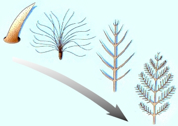
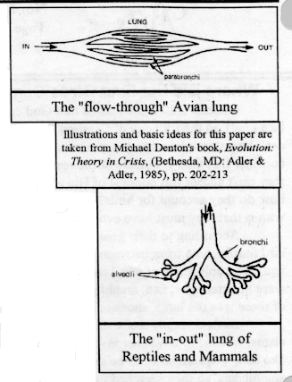
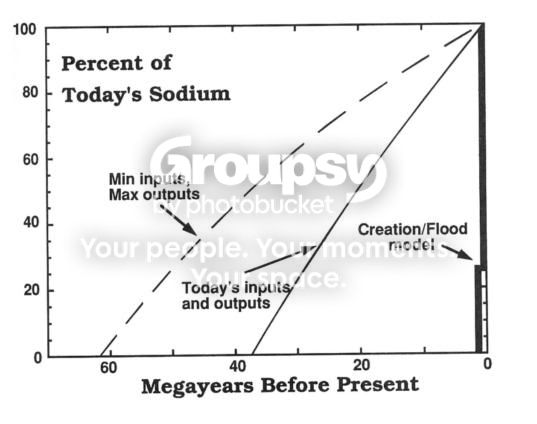
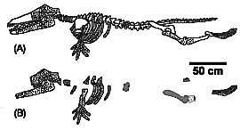

#12634 1 2006-12-04T21:42:37Z macaddict_17 Here it is folks! The thread you've all been waiting for!

There are a number of types of disagreements between Creationists and Evolutionists. They are:
- Disagreements over the authenticity of evidence
- Disagreements over the ability of the mechanisms of evolution
- Disagreements over interpretation
An example for #1 is a disagreement about whether archeapterix was part lizard, part bird
#2: A disagreement over whether natural selection leads to speciation
#3: A disagreement about catastrophism vs. gradualism.
This first argument I put forward is a #2.
Argument: Which came first - DNA building proteins or DNA?
DNA is an extremely complex and lengthy molecule. It is made of a nitrogen base, a carbon sugar backbone and phosphorus groups. It is infinitely unlikely (read: impossible) for DNA to be synthesized without enzymes to do so.
Quote: Wikipedia
Although sometimes called "the molecule of heredity", DNA macromolecules as people typically think of them are not single molecules. Rather, they are pairs of molecules, which entwine like vines, in the shape of a double helix (see the illustration at the right).
DNA consists of a pair of molecules, organized as strands running start-to-end and joined by hydrogen bonds along their lengths.[2] Each strand is a chain of chemical "building blocks", called nucleotides, of which there are four types: adenine (abbreviated A), cytosine ©, guanine (G) and thymine (T).[2] (Thymine should not be confused with thiamine, which is vitamin B1.) The DNA of some organisms, most notably of the PBS1 phage, have Uracil (U) instead of T.[3]
Each strand of DNA is a covalently linked chain of nucleotides, with alternating sugar (deoxyribose)-phosphates forming the "backbone" for the nucleobases ("bases"). The negatively-charged phosphate groups between each deoxyribose make DNA an acid in solution and allow DNA molecules of different sizes to be separated by electrophoresis. Because DNA strands are composed of these nucleotide subunits, they are polymers. The major difference between DNA and RNA is the sugar, 2-deoxyribose in DNA and ribose in RNA.
Now, the enzymes themselves are very complex...
Quote: Wikipedia
Proteins, similar to carbohydrates and lipids, are made up of such elements as carbon, hydrogen and oxygen. They are amino acid chains, made up from 20 different L--amino acids, also referred to as residues, that fold into unique three-dimensional protein structures. The shape in which a protein naturally folds is known as its native state, which is determined by its sequence of amino acids. Under 40 residues the term peptide is frequently used. A certain number of residues is necessary to perform a particular biochemical function, and around 40-50 residues appears to be the lower limit for a functional domain size. Protein sizes range from this lower limit to several thousand residues in multi-functional or structural proteins. However, the current estimate for the average protein length is around 300 residues. Very large aggregates can be formed from protein subunits, for example many thousand actin molecules assemble into an actin filament. Large protein complexes with RNA are found in the ribosome particles, which are in fact 'ribozymes'.
The order of the polypeptides is told in the mRNA by 3-letter codons, a certain one dictating "Start" and 3 others "Stop". These proteins could only come into existence by DNA (or RNA), but the DNA or RNA could only come into existence by an enzyme!
Circular reasoning at its finest.
#264588 2 2006-12-04T23:13:20Z Tsukatu Goddamnit.
#264594 3 2006-12-04T23:23:07Z i_forget The title is kinda (read: really) misleading.
#264602 4 2006-12-04T23:31:36Z Obby (guest) Another uber-serious thread? What is this? SD?
#264621 5 2006-12-05T00:18:34Z blue_tetris Goddamnit.
QFE
Mac. Play the goddamn ninja game.
Once you're done with the simple task of single-handedly disproving the theory of evolution by regurgitating nonsense from fundamentalist Internet media gurus, you should probably get started on proving the "theory of Creationism" and its mechanisms. Or rather its singular giant glowing deus-ex-mechanism in the sky. Sounds like you've got an easy job on your hands. Especially since you don't have to follow those time-consuming rules like "logic" and "empirical evidence" as science would demand.
#264626 6 2006-12-05T00:21:50Z Tsukatu Mac. Play the goddamn ninja game.
I fully acknowledge that this post of mine has no relevant content, but I just had to mention that I literally rofl'd at this.
#264673 7 2006-12-05T01:43:18Z macaddict_17 Mac. Play the goddamn ninja game.
I think you'd agree that discussing important things about philosophical topics such as origins is much more important than childish gameplay.
(Actually, my arrow keys are starting to stick anyway)
Once you're done with the simple task of single-handedly disproving the theory of evolution by regurgitating nonsense from fundamentalist Internet media gurus, you should probably get started on proving the "theory of Creationism" and its mechanisms. Or rather its singular giant glowing deus-ex-mechanism in the sky. Sounds like you've got an easy job on your hands. Especially since you don't have to follow those time-consuming rules like "logic" and "empirical evidence" as science would demand.
So I finally get my grubby hands on a decent argument (
NOT FROM THE INTERNET, by the way) and what do I get in return? Sarcasm! Is that what
I do when you guys win? How fair is that?
If you'd like, I'll explain what my creationist theory is though.
One important thing to note before we start is that you can't 'prove' anything when it comes to historical science. This is because you can't go back in time and observe, and you can't repeat time, and you cannot design an experiment to simulate exactly what happened. What you do is you look at the evidence, interpret somewhat to fit whatever theory you want to prove, find evidence that supports only your theory until your theory can be thought true beyond a reasonable doubt. Its a fallacy to say that the facts speak for themselves, for they are always interpreted to fit some kind of framework.
Its not really a question of who is biased, but which bias is the correct bias with which to be biased!
Also important to note is that Creationism and Evolution, for all practical purposes, are mutually exclusive. Sure, you could make up some random theory, but unless you can come up with some good bits of evidence for it, we can safely toss it out.
I'm going to post now what I believe, as far as origins go. If you'd like to argue against this, please feel free to start a new thread.
Parts to the Creation Story
1. 7 day Creation week
God created the world in seven 24 hour days, just as in Genesis. Of all the parts, this one is the most unprovable. No one was there, and the only reason to believe this is if you believe the Bible. Though there is no physical evidence to believe in the 7 day creation week, there is some evidence to believe the Bible. (Like historical accuracy and proof of the prophecy). He created the world perfect and there were no carnivores. Again, you can't prove this either way. And yes, Adam and Eve were the first humans. Did you know that with the sequence of the human genome, scientists determined it likely for there to have been exactly 2 humans at the beginning of our species? They're nicknamed mitochondrial Eve and Adam. This means it is possible for all the races and traits to have come from just two people.
2. Deterioration from perfection
After the fall, which is when Adam and Eve sinned, death and sin entered the world. However, because our bodies were still almost perfect, lifespans were considerably longer. This fits with fossils of giant alligators, because reptiles do not stop growing their entire lives.
3. Worldwide flood
This is the well-known story of Noah and the Ark. Many people have said that it would be impossible to fit all the land animals onto the ark, but with the next section, we can theorize that he'd only need about 8,000
baramin, the Hebrew word for species/kind. There is alot of evidence for a global flood: take dinosaur digs. Almost anywhere you find dinosaur bones, you can ask the paleantologists how the dinosaurs became fossilized, and they'll say it was caused by a massive flood.
Sorry, but I can't resist posting this 'internet evidence' also.
4. Speciation
Unlike many evolutionists believe, Creationists do not believe in fixed species. Of course species change over time: it just isn't enough to cause macroevolution. It is enough for example, to cause
Chrysoperla carnea and
Chrysoperla downesi to become 'different species' because our definition of species is to confining. (The differences between the two are color and different breeding times). This can be attributed to the many foundling effects and genetic drifts that would have occured after the flood.
I think thats pretty much it for Creation. Oh, there's more evidence for it, but its more fun to go the opposite way around and disprove evolution.
You might be thinking to yourself that there are alot of assumptions that you must make in order to believe this. And this is true. One of the main assumptions is that the Bible is true. However, there are equally as many, if not more, assumptions built into the theory of evolution. And I shall demonstrate these as soon as I know that nobody has an argument they'd like to pursue about this topic.
#264676 8 2006-12-05T01:45:38Z Obby (guest) Macaddict, the posts have a very obvious message; No one cares.
#264690 9 2006-12-05T02:02:40Z Tsukatu I think you'd agree that discussing important things about philosophical topics such as origins is much more important than childish gameplay.
Obsessive much?
At this point, I'd actually argue that playing a goddamned ninja game
is more important for you than rambling about your religious bahooie.
Protect what little sanity you have.
#264705 10 2006-12-05T02:23:30Z LittleViking You might be thinking to yourself that there are alot of assumptions that you must make in order to believe this. And this is true. One of the main assumptions is that the Bible is true.
Wow, and you're the same guy who started this thread to bash circular reasoning?
"If the Bible is true, then the Bible must be true! I'm going to go devote my life to Daddy, Junior and The Spook! Just think of all the people I can spread the word to now."
#264716 11 2006-12-05T02:51:47Z McP3000 This forum is as polar in religion as America is in politics
#264722 12 2006-12-05T03:03:16Z Topolord first of all, you entire post is based on assumption, thereby rendering it completely fallacious. second, some of what you say is also falted.
ex 1.
There is alot of evidence for a global flood: take dinosaur digs. Almost anywhere you find dinosaur bones, you can ask the paleantologists how the dinosaurs became fossilized, and they'll say it was caused by a massive flood.
a) many fossils are found in old
riverbeds, not just under bodies of water.
b) Many fossils are found under areas of land which were indeed covered by land, and now are not. No surprises there, its called global warming. The temperature of the planet is constantly (geographically speaking) changing, and thus water melts and freezes accordingly, causing global flooding and land resurgence at intervals.
ex 2.
They're nicknamed mitochondrial Eve and Adam. This means it is possible for all the races and traits to have come from just two people.
They did not live at the same time. see
Wikipedia
it says:
Quote
Just as mitochondria are inherited matrilineally, Y-chromosomes are inherited patrilineally. Thus it is possible to apply the same principles outlined above to men. The common patrilineal ancestor of all humans alive today has been dubbed Y-chromosomal Adam. Importantly, the genetic evidence suggests that the most recent patriarch of all humanity is much more recent than the most recent matriarch, suggesting that 'Adam' and 'Eve' were not alive at the same time.
ex 3.
After the fall, which is when Adam and Eve sinned, death and sin entered the world. However, because our bodies were still almost perfect, lifespans were considerably longer. This fits with fossils of giant alligators, because reptiles do not stop growing their entire lives.
Yet their lifespans were not near those speculated in the Bible. Also, are you suggesting Adam and Eve were giants?
anyway, sorry I went on this tangent, I didn't mean to get involved, but...
#264737 13 2006-12-05T03:30:54Z Teedle The order of the polypeptides is told in the mRNA by 3-letter codons, a certain one dictating "Start" and 3 others "Stop". These proteins could only come into existence by DNA (or RNA), but the DNA or RNA could only come into existence by an enzyme!
Circular reasoning at its finest.
My GOD. The human race... cannot make tools such as spanners without suitable tools for creating tools such as spanners! REALITY IS WRONG.
And, also, I'm fairly sure that enyzmes are simply made by proteins doing what proteins do- The complexity comes from the tertiary structure, which comes from (dispersion forces?) and di- sulfide links and the like between seperate parts of the chain of carbohydrates. It's chemistry- elements being attracted to other elements.
Why is DNA needed for this, exactly?
Quote
The shape in which a protein naturally folds is known as its native state, which is determined by its sequence of amino acids.
Also, infinitely unlikely means squat when there's an inifinite amount of times at which it could happen.
#264747 14 2006-12-05T03:46:10Z Topolord Oh, I forgot to say, DNA is actually a relatively simple molecule; it contains only 4 different portions. it's really not that hard to see basic proteins being stored as RNA, and the eventual transition into DNA, RNA, and the rest of the complex system known today.
and in response to above, proteins are essentially strings of amino acids (nitrogen containing molecules) coded into order by tRNA and rRNA, which get there order ultimately from DNA. In simpler Cells the process is much simpler. (i.e. evolution) The proteins, at this point still very simple, are further shaped by the Endo-plasmic Reticulum into secondary, tertiary, and quaternary structures.
see
wikipedia#264793 15 2006-12-05T06:17:26Z Tsukatu "If the Bible is true, then the Bible must be true! I'm going to go devote my life to Daddy, Junior and The Spook! Just think of all the people I can spread the word to now."
My GOD. The human race... cannot make tools such as spanners without suitable tools for creating tools such as spanners! REALITY IS WRONG.
I agree with the two quotes above.
I disagree with everything Topolord is saying, without even having read it, because he's actually responding seriously to the OP.
#264794 16 2006-12-05T06:20:01Z stepself The order of the polypeptides is told in the mRNA by 3-letter codons, a certain one dictating "Start" and 3 others "Stop". These proteins could only come into existence by DNA (or RNA), but the DNA or RNA could only come into existence by an enzyme!
Maybe this isn't the best time, but maybe I can plug my map
Codon? Honestly, when else is this going to come up

And I may not be a big-city microbiologist like yourself, macaddict, but I do have a cursory knowledge of chemistry (it being my major and all). DNA is not required for peptide synthesis. I've made tripeptides before in my second year lab, and I'm pretty sure we didn't use DNA. Since proteins are simply very long peptide chains, I'm sure that Nature, given the basic amino acids, the right conditions, and enough time, could make them just as easily herself.
Of course, I'm just speculating. Then again, who in this thread isn't?
#264807 17 2006-12-05T06:56:44Z Kablizzy One important thing to note before we start is that you can't 'prove' anything when it comes to historical science. This is because you can't go back in time and observe
*Screeching tires*
Waaait, back up. We can't *observe*... so... it then logically follows... come on, say it with me... that we can't *prove*. Good job.
Anyway, where does it say that the DNA or RNA are the only things that can produce the enzymes? Certainly, there are other sources of those enzymes, right? I mean, yeah, like stepself said up thar, it isn't the only source of those enzymes, right?
So, no, I'll hit this head-on, if no one else will. I just don't really see a problem with your initial post. If you could elaborate, that'd be groovy.
#264815 18 2006-12-05T07:34:46Z Teedle One important thing to note before we start is that you can't 'prove' anything when it comes to historical science. This is because you can't go back in time and observe
*Screeching tires*
Waaait, back up. We can't *observe*... so... it then logically follows... come on, say it with me... that we can't *prove*. Good job.
Exactly.
Which is where I should probably mention that we can't observe DNA or proteins at all. They're too small. We can't observe atoms, so we can't know they exist? How can we know about molecular structure if we can't observe the molecules, which is part of what your very argument against evolution is based on?
Because of inferences and stuff, and theories which are constantly refined and the like (Yay for Dalton and his oh- so- incorrect theory of atoms! Yay for Thomson and the plum pudding model! Yay for Rutherford screwing up electron orbitals!)
Just because we can't observe the existance of atoms, doesn't mean the existance can't be proven. There's plenty of evidence around. I'm fairly sure even you wouldn't say that atoms and molecules and, in fact, DNA and proteins might very well not exist, because we can't directly observe them or the atoms in a chemical reaction.
Thus, MATTER is purely a theory and might not exist at all.
#264868 19 2006-12-05T13:53:24Z blue_tetris You might be thinking to yourself that there are alot of assumptions that you must make in order to believe this. And this is true. One of the main assumptions is that the Bible is true. However, there are equally as many, if not more, assumptions built into the theory of evolution. And I shall demonstrate these as soon as I know that nobody has an argument they'd like to pursue about this topic.
I'll make the assumption, then, that the theory of evolution is true! So, while you're assuming the unvproven, unverified "truth" of a single source written by non-experts many many years ago; I'll accept the nearly-proven theory of evolution. Wow. This discussion is so much easier to have when we're assuming the truth of our unverifiable sources.
The only "proof" to Creationism would be if God is real, if every person who wrote the Bible was inspired by God, and if the specific things that they wrote about the beginning of time were dictated to them by God verbatim. If those aren't true, then someone (a
human) who wrote the Bible may have been editorializing or thinking more about teaching how to be a good person by using parables and symbolism than about explaining the whole of science.
Sounds a lot more reliable than "evidence" and "logitudinal studies" if you ask me. If I wrote a text detailing the truth about Mars which God was dictating to me right now, I'd likely be viewed as untrustworthy. It's a shame I have to have scientists and their agenda of "knowledge" and "verifiable truth" (yuck!) to check my facts and make sure that God was right about Mars. What if scientists prove otherwise? Should I assume that I got the wrong story or should I assume that scientists are big meanies because they demand proof?
If science all but proves the theory of evolution, would anyone be willing to believe that the writer of Genesis wrote his divinely-inspired visions of the dawn of man as an
allegory of sorts? To help people live their lives? Probably not. People simply assume God wrote the Bible with His own hands. I guess people look to God for
all the answers, instead of just the important ones like "how should I live my life" and "how can I be a good person".
Sometimes I wonder why the Lord gave us the ability to observe nature, learn things, and think logically about the universe, when He clearly just intended us to read a book and stop thinking.
#264876 20 2006-12-05T14:08:05Z stepself Which is where I should probably mention that we can't observe DNA or proteins at all. They're too small. We can't observe atoms, so we can't know they exist? How can we know about molecular structure if we can't observe the molecules, which is part of what your very argument against evolution is based on?
To be fair, DNA and other large biomolecules are big enough to see using various microscopy techniques that I'm not too familiar with.

The double helix structure can be deduced from this, as well as a few other characteristics. Using X-ray crystallography and mass spectrometry, composition and structure of these molecules can be determined.
Even molecules can be observed using electron microscopy:

This is a couple molecules of C60, a soccer-ball shaped molecule.

This is a strand of DNA. Neat, huh?
#264887 21 2006-12-05T15:06:11Z iangb ...and there was me hoping for a decent argument.
Stepself has destroyed your science, most of everyone else has destoyed your logic (including yourself and your assumptions). Try again.
#264898 22 2006-12-05T15:51:22Z blue_tetris I think you'd agree that discussing important things about philosophical topics such as origins is much more important than childish gameplay.
Bold tags added.
Was anyone as offended by this comment as I was?
You clearly have not played the ninja game, Mac, or you would know how cool the ninja game is. Go back to Shockwave.com, losar.
#264901 23 2006-12-05T15:58:10Z macaddict_17 Was anyone as offended by this comment as I was?
You clearly have not played the ninja game, Mac, or you would know how cool the ninja game is. Go back to Shockwave.com, losar.
I have too played it. I have my own maps! I've just grown past it and most other games.
My logic and science have not yet been defeated, but I'll have to show you later. I'm in a passing period right now.
#264905 24 2006-12-05T16:01:26Z i_forget Was anyone as offended by this comment as I was?
You clearly have not played the ninja game, Mac, or you would know how cool the ninja game is. Go back to Shockwave.com, losar.
I have too played it. I have my own maps! I've just grown past it and most other games.
My logic and science have not yet been defeated, but I'll have to show you later. I'm in a passing period right now.
If you can find me 4
scientific books that can prove what you are saying, then I might believe you.
EDIT: oops, can a mod delete the above post? I thought that I was editing it.
#265057 25 2006-12-05T21:42:43Z macaddict_17 Macaddict, the posts have a very obvious message; No one cares.
Either that, or no one has an open mind about the subject.
Wow, and you're the same guy who started this thread to bash circular reasoning?
"If the Bible is true, then the Bible must be true! I'm going to go devote my life to Daddy, Junior and The Spook! Just think of all the people I can spread the word to now."
No, its "If the Bible is true, then Creationism makes the most sense." and "If there is no God, then Evolution makes the most sense." Now in order to choose between the biases, we must discover which theory is supported by evidence more, and the better theory's assumption is the one most likely to be true.
a) many fossils are found in old riverbeds, not just under bodies of water.
But dinosaurs? I can totally see a big ol' T-Rex just wading into the water and falling over dead just for us to find him later. Besides, the paleantologists don't say 'riverbed', they say 'flood'.
b) Many fossils are found under areas of land which were indeed covered by land, and now are not. No surprises there, its called global warming. The temperature of the planet is constantly (geographically speaking) changing, and thus water melts and freezes accordingly, causing global flooding and land resurgence at intervals.
You mean covered by water? But that still doesn't explain how the dinosaur got in there to die anyway. Woudn't they have avoided water for the most part because they were (probably) cold-blooded? I mean, you don't see many crocodiles dying in the water, most die on the land. If you were a dying dinosaur, it'd be harder to stay alive in the water than out.
Quote
Just as mitochondria are inherited matrilineally, Y-chromosomes are inherited patrilineally. Thus it is possible to apply the same principles outlined above to men. The common patrilineal ancestor of all humans alive today has been dubbed Y-chromosomal Adam. Importantly, the genetic evidence suggests that the most recent patriarch of all humanity is much more recent than the most recent matriarch, suggesting that 'Adam' and 'Eve' were not alive at the same time.
Works for me. Remember Noah? He'd be the patriarch. There were, however, several different women from different families (Noah's wife and his son's wives).
Yet their lifespans were not near those speculated in the Bible. Also, are you suggesting Adam and Eve were giants?
How do you know for sure? Were you there?
And no, they wouldn't be giants. Only reptiles continue growing, humans tend to stop growing at a certain age.
My GOD. The human race... cannot make tools such as spanners without suitable tools for creating tools such as spanners! REALITY IS WRONG.
First of all, you're talking intelligent design of tools. Second of all, there are obviously ways to make tools to make spanners without spanners. In DNA synthesis, this is not the case.
And, also, I'm fairly sure that enyzmes are simply made by proteins doing what proteins do- The complexity comes from the tertiary structure, which comes from (dispersion forces?) and di- sulfide links and the like between seperate parts of the chain of carbohydrates. It's chemistry- elements being attracted to other elements.
The enzyme is complex at the tertiary structure, which is where polar groups can interact, but it is still a chain of polypeptides. We're talking several hundred peptides arranged in sequence! Polypeptide A is just as likely to join to Polypeptide B as it is Polypeptide C! Are you saying that random chance could produce a 1000 word essay if it chose one letter at a time, excluding spaces? This is immeasurably improbable (read:impossible). If any one polypeptide was wrong or out of sequence, it would almost certainly result in a defective enzyme.
Another problem is that the enzyme would need chaperone proteins (also too complex to exist without DNA) in order to fold correctly. The enzyme cannot function properly without good globular shape. But what helped the first chaperone proteins to fold?
Oh, I forgot to say, DNA is actually a relatively simple molecule; it contains only 4 different portions. it's really not that hard to see basic proteins being stored as RNA, and the eventual transition into DNA, RNA, and the rest of the complex system known today.
DNA only has four parts, but the problem with calling it simple is the same as calling the Encyclopedia Britannica 'simple'. It only has three parts, the pages, the cover, and the binding. But the information within could not be randomly generated. Period.
Depending on the length of the polypeptide sequence of the enzyme which could maybe make DNA, you'd have 3x that length +3 and some introns (Non-coding portions) in the DNA. Also, impossible to be perfectly put together in order, even if it was randomly possible.
In simpler Cells the process is much simpler. (i.e. evolution)
What we're dealing with here is how the simpler cells got there in the first place. Stick with me.
And I may not be a big-city microbiologist like yourself, macaddict, but I do have a cursory knowledge of chemistry (it being my major and all). DNA is not required for peptide synthesis. I've made tripeptides before in my second year lab, and I'm pretty sure we didn't use DNA. Since proteins are simply very long peptide chains, I'm sure that Nature, given the basic amino acids, the right conditions, and enough time, could make them just as easily herself.
Big-city microbiologist... Teehee. I'm actually a junior in high school, if you must know.
You are correct, its not needed for peptide synthesis. But it is needed for peptide sequence of a great length.
Sure, if I dropped 3 index cards from a airplane with the letters "T, H, E" they might possibly spell "THE" eventually. But when you get to the amount of amino acids actually in a polypeptide, saying it would be possible to get it right eventually is ridiculous.
Also, nature is not given the amino acids to start out with. Its given the elements, which do not by nature form peptides. The only example is if you run a current through a non-reducing atmosphere, some simple peptides can form. You'd be relying on lightning to come up with the right amount and all in the exact same spot. Now you have to calculate in the probability of lightning striking in the same EXACT place at least 10-12 times, if not hundreds of times.
Plus, there's no evidence that the earth's atmosphere was ever non-reducing.
I gotta go, I'll respond to more stuff tomorrow. Busy night for me.
Edit:
If you can find me 4 scientific books that can prove what you are saying, then I might believe you.
Refuting Evolution, Refuting Evolution 2, Icons of Evolution, Reason in the Balance, and Darwin's Black Box.
These books do not try to preach at you, they mostly just point out problems with evolution.
Oh, and if you actually read these, I'd consider believing you.
#265059 26 2006-12-05T21:45:53Z Kablizzy DNA only has four parts, but the problem with calling it simple is the same as calling the Encyclopedia Britannica 'simple'. It only has three parts, the pages, the cover, and the binding. But the information within could not be randomly generated. Period.
Oh, you can't possibly be serious? Why in the heck couldn't it? As I said in the other thread, certainly, it's no more absurd than a divine father figure breathing life into us all, non? And beyond that, surely, you're not a quantum mechanics major, nor have you done extensive work on Entropic theory, I'll wager, so what grounds do you claim to be ending the discussion on?
#265074 27 2006-12-05T22:04:07Z iangb There was so much evidence of your misunderstanding science here that... I'm not quite sure what to say.
But dinosaurs? I can totally see a big ol' T-Rex just wading into the water and falling over dead just for us to find him later. Besides, the paleantologists don't say 'riverbed', they say 'flood'.
...
You mean covered by water? But that still doesn't explain how the dinosaur got in there to die anyway. Woudn't they have avoided water for the most part because they were (probably) cold-blooded? I mean, you don't see many crocodiles dying in the water, most die on the land. If you were a dying dinosaur, it'd be harder to stay alive in the water than out.
It's not a case of that. It's that fossils form much easier under water. The few dinosaurs that did die in water fossilised much easier that on land.
No, its "If the Bible is true, then Creationism makes the most sense." and "If there is no God, then Evolution makes the most sense." Now in order to choose between the biases, we must discover which theory is supported by evidence more, and the better theory's assumption is the one most likely to be true
So show us one piece of evidence for creationism.
On a side note... how old do you think the universe is?
#265087 28 2006-12-05T22:24:18Z stepself Big-city microbiologist... Teehee. I'm actually a junior in high school, if you must know.
Clearly. I did read your profile before posting. Anyway, I don't really have anything to add to your argument. You believe it is "immeasurably improbable (read: impossible)" for spontaneous generation of these proteins. Perhaps this is the case with proteins in higher-class organisms. I'd like to think that early life -- the first living bacteria on our planet -- were sufficiently different from what our taxonomy covers. I'd wager that their internal workings would be simpler. And complexity arose out of it, slowly. I would also guess that the generation of their biomaterials would be
measurably improbable (read: unlikely, but possible nonetheless).
Refuting Evolution, Refuting Evolution 2, Icons of Evolution, Reason in the Balance, and Darwin's Black Box.
These books do not try to preach at you, they mostly just point out problems with evolution.
Oh, and if you actually read these, I'd consider believing you.
My high-school chemistry teacher recommended that I read "Darwin's Black Box" when I was a senior in his class. I never finished it. As I understand it, many of Behe's assertions have been refuted, including "irreducible complexity", an argument which was supposed to be a devastating blow to evolutionary theory. Turns out evolution can account for these complex systems after all.
Isn't Behe the man who equated ID theory to astrology last year (
link)? Hardly a credible source, if you ask me.
#265233 29 2006-12-06T02:09:45Z Tsukatu About improbability:
You're on a spaceship, cryogenically frozen. The ship's computer will generate a random integer from 1 to 10^40 every second, and will revive you if the number it randomly generated is the number 7. Assume that the ship can navigate it's way around dangerous areas and obstacles in space, that it is fully able to generate its own power indefinitely, and that you will last indefinitely until you are awakened.
You are revived. You have no idea how long you've been frozen. What do you think happened - the computer hit 7, or an extraplanar being entered the ship undetected, didn't set off any alarms, thawed you, and restored you to life, taking as payment the equivalent amount of resources aboard the ship it would take to revive you, and then hacked the computer system onboard the ship to display the number 7 before he left, leaving no trace of his presence? Which one would you guess happened?
Imagine the amount of planets there are in the universe that can support life. That's such a bloated number - there are
so many planets that, since the birth of the universe, can support some simple form of life. Now imagine all of those planets, for billions of years (holy shit, that's
several billion years... that's a very long time!). Imagine just
one of these planets. On this planet, imagine the amount of time it has in its lifespan to generate life. Earth got it right after a painfully long time, and it's hardly past its prime. But still, think of how long it has to generate life
somewhere on it. Now expand your view so you take into account all of those life-supporting planets we were talking about. They have
so goddamned long to get a series of events down in a certain pattern. And there are
so many of them that one's bound to do it eventually.
And even so, you'd love for it to be that improbable, but life didn't come from individual atoms coincidentally falling into place to suddenly create life. The first organisms could hardly even be considered alive as much as lumps of matter that interacted the way they did because of their chemical properties.
When I get to talking about this stuff, I can't help but think that there's another planet seventy galaxies away on which we have things that resemble the organic forms of this planet, but haven't yet grown and gotten complicated enough to be called life, and never get lucky enough to grow out of that stage before their planet is caught in the supernova of its sun.
I lost my train of thought, but the point is that where other people take a look at life and "rationalize" (more like "panic and suspend reason to quell their fears by inventing the idea") that we were all created by something capable of thought, I take a look at life and rationalize that the long, improbable chain of events necessary to create life actually happened.
The previous example I've used when talking about this is a cookie in a box, because I love using examples with cookies in them.
That one was:
There's a closed box with a cookie inside and a button on the top. With each press of the button, there's a 10^-50 percent chance that the box will open to give the button-pusher the cookie. There's a line of people 10^54 people long, and each person in that line gets to press the button once. You're somewhere in the middle. Your turn to press the button comes up. The box opens, giving you the cookie.
People like you would thank God for opening the box, because as we all know the chance that it would open is so small that it's impossible, so it
couldn't be anything related to the operation of the box. No, that
has to be impossible, doesn't it? God literally forced the box open so you can get the cookie, because He loves you and cares for you and wants you to donate to His followers and slaughter all who oppose Him.
But a rationale person would shrug, think it's nifty that he, of all people, got so lucky, and take the goddamned cookie.
On a side note... how old do you think the universe is?
/me dreads the answer.
#265241 30 2006-12-06T02:19:11Z iangb Quote: Science of Discworld
The ice age was clearing up. He wondered what was happening down there, what gastropod or mammal or lizard was even now winding up it's elastic ready to propel itself towards the crown of the world.
Soon, without a doubt, some creature would develop an uneccesarily large brain and be forced to do things with it. And it'd look around and probably declare how marvelous it was that the universe had been built to bring forward the inevitable development of creature-kind.
Boy, was it in for a shock...
It's not quite the same without 383 pages of backstory, but you get the idea. If life develops anywhere, by chance, then it can (and probably will) claim that obviously the universe was set up so that it's species could be dominant. Many people seem to think that the universe was set up specifically for themselves. It doesn't mean that they are right, however.
EDIT: this was reffering to the first half of Tsukatu's post, above.
#265242 31 2006-12-06T02:20:15Z Obby (guest) #265247 32 2006-12-06T02:26:04Z Topolord I disagree with everything Topolord is saying, without even having read it, because he's actually responding seriously to the OP.
yeah, sorry, I just go nuts when I see these threads. I'd really be a better person if people stopped posting them. anyway.
Quote
QUOTE
In simpler Cells the process is much simpler. (i.e. evolution)
What we're dealing with here is how the simpler cells got there in the first place. Stick with me.

what I'm trying to say, mr. poo-poo-I-won't-listen-to-what-your-saying, is that our more complex cells come from simpler more basic ones.
And anyway, Poly-peptides may be complex, but they come from simpler peptides, and furthermore, there being only 20 odd amino acids, the creation of these is not that wild.
The enzyme is complex at the tertiary structure, which is where polar groups can interact, but it is still a chain of polypeptides. We're talking several hundred peptides arranged in sequence! Polypeptide A is just as likely to join to Polypeptide B as it is Polypeptide C! Are you saying that random chance could produce a 1000 word essay if it chose one letter at a time, excluding spaces? This is immeasurably improbable (read:impossible). If any one polypeptide was wrong or out of sequence, it would almost certainly result in a defective enzyme.
yes, it could, given time. which is how evolution happens. defects die, consistency and adaption flourish.
before current highly efficient proteins, there were less efficient ones, which were replaced, and before them, less efficient, and so on.
Works for me. Remember Noah? He'd be the patriarch. There were, however, several different women from different families (Noah's wife and his son's wives).
not knowing what to respond to this, I am going to call you a poo instead.
you are a poo. case closed.
#265280 33 2006-12-06T03:05:55Z McP3000 not knowing what to respond to this, I am going to call you a poo instead.
you are a poo. case closed.
And you think theists are crazy?!
#265290 34 2006-12-06T03:15:41Z Topolord mild insanity never hurt anyone.
#265342 35 2006-12-06T04:04:32Z macaddict_17 One important thing to note before we start is that you can't 'prove' anything when it comes to historical science. This is because you can't go back in time and observe, and you can't repeat time, and you cannot design an experiment to simulate exactly what happened.
*Screeching tires*
Waaait, back up. We can't *observe*... so... it then logically follows... come on, say it with me... that we can't *prove*. Good job.
O...K...
Is this sarcasm? 'Cause I didn't say we can't observe therefore we can't prove. I said that we can't observe, repeat, or experiment when it comes to historical science. Not everything, however. For operational science, sometimes we can reasonably prove something's existence without being able to observe it.
Anyway, where does it say that the DNA or RNA are the only things that can produce the enzymes? Certainly, there are other sources of those enzymes, right? I mean, yeah, like stepself said up thar, it isn't the only source of those enzymes, right?
So, no, I'll hit this head-on, if no one else will. I just don't really see a problem with your initial post. If you could elaborate, that'd be groovy.
Thank you very much for your honesty on that last part. I very much appreciate that.
In case you aren't aware of how proteins are made, here it is, simplified.
DNA is copied onto an RNA strand by an enzyme called RNA Polymerase. After this mRNA is cut to delete non-coding RNA, and certain end units are added, it is released into the Endoplasmic Rheticulum. Then two ribosomal subunits come together and pull the mRNA through them like a paper feeder. Now, a ribosome has three slots for what's called transfer RNA. Each tRNA has an anti-codon on the bottom and an amino acid on the top. An anti-codon is the complementary opposite of each codon. So if the codon is AUG, the anticodon is UAC and the amino acid methionine is the corresponding chemical. Then this tRNA moves to the second slot, pulling the mRNA with it. This leaves room for another tRNA to enter and match the codon. Then the strand of aminos above the second slot move to above the 1st slot, by the formation of peptide bonds. (In this case, the methionine would join to the next amino acid). Then both tRNA move over, but the first one (chronologically) exits and goes to find another molecule of methionine. This continues until the mRNA has a 'stop' codon, at which point, obviously, production stops.
Now what happens if we take mRNA out of the picture? Absolutely nothing. How about if we take tRNA out of the picture? Then all we have are a bunch of amino acids floating around, given that they could be synthesized in the first place. Perhaps they would form into polypeptides, but they would only be chains without chaperone proteins to help fold them. And even if they could become globular forms, the chains almost certainly would not be in the correct order. You'd need to use this calculation:
if n=number of peptides in an enzyme that could make DNA
24=number of Amino Acids
Then the probability of the peptides being in the right order, assuming equal amounts of each amino acid...
(24 nPr n)*((1/24)^n)(23/24^0)
This is called a binomial experiment. Note that when 'n' begins to reach numbers that actually represent possible numbers, such as in the thousands, the probability of those aminos forming is impossibly small.
Which is where I should probably mention that we can't observe DNA or proteins at all. They're too small. We can't observe atoms, so we can't know they exist? How can we know about molecular structure if we can't observe the molecules, which is part of what your very argument against evolution is based on?
First of all, we can observe them. (See stepself's post) Second of all, I said this was only true for historical sciences anyway. We can't observe 'facts', but we can prove their existence.
I'll make the assumption, then, that the theory of evolution is true! So, while you're assuming the unvproven, unverified "truth" of a single source written by non-experts many many years ago; I'll accept the nearly-proven theory of evolution. Wow. This discussion is so much easier to have when we're assuming the truth of our unverifiable sources.
You are correct, I misspoke. What I should have said is this: "If the Christian God exists, creation makes the most sense." Your assumption would then be "If God does not exist, evolution makes the most sense". But which assumption should we choose? I propose that we look at the evidence for the theories. Thus if creation does indeed make the most sense (based on supporting evidence) then it is probably true that the Christian God does exist. On the other hand, if there is more evidence for evolution, we can determine that the Christian God does not exist.
You did finally get the point that both parties start with assumptions though, that's good.
The problem is that we can't just assume right off the bat that God doesn't exist. If we do this, and God does exist, then we will end up with alot of wrong conclusions. Since we can't prove God or disprove God, we still have to do what I said before: try assuming a theory is true and looking at consequences, as well as looking at supporting evidence.
The only "proof" to Creationism would be if God is real, if every person who wrote the Bible was inspired by God, and if the specific things that they wrote about the beginning of time were dictated to them by God verbatim. If those aren't true, then someone (a human) who wrote the Bible may have been editorializing or thinking more about teaching how to be a good person by using parables and symbolism than about explaining the whole of science.
I believe that God did 'dictate' them, but using God powers (called divine inspiration). Again, no way to prove or disprove this either way.
Sounds a lot more reliable than "evidence" and "logitudinal studies" if you ask me. If I wrote a text detailing the truth about Mars which God was dictating to me right now, I'd likely be viewed as untrustworthy.
But that doesn't prove whether God
is dictating a truth about Mars to you. We would have to then look at evidence about Mars and then determine whether God talked to you. Again, my view is that there is way more evidence for creation than evolution, and this is what this thread is all about.
It's a shame I have to have scientists and their agenda of "knowledge" and "verifiable truth" (yuck!) to check my facts and make sure that God was right about Mars. What if scientists prove otherwise? Should I assume that I got the wrong story or should I assume that scientists are big meanies because they demand proof?
*IMPORTANT TO READ*
1. I believe that there is little evidence for evolution and that scientists dogmatically and unethically accept evolution without questioning it. I can provide multiple examples of fraudulent activity, blatant acceptance, and biased pressupossitions. I will provide these examples, but all in good time. We need to take small bites or we get distracted, such as this argument over creation.
2. The Bible agrees that we need to check against facts, it says to "test everything, and hold to that which is true..." I believe that someone who truly does this, reading both sides of the issue, can only side with creation.
3. I do not think evolution can be called science.
I am working on proving these things, but I'm not done yet, and I don't ask that you believe them all until I do provide evidence for each.
[/IMPORTANCE]
If science all but proves the theory of evolution, would anyone be willing to believe that the writer of Genesis wrote his divinely-inspired visions of the dawn of man as an allegory of sorts? To help people live their lives? Probably not.
Yup. It's because Genesis was written in the Hebrew style of historical writings. Think about it: If you read a story in a book that was clearly labelled as fiction, you'd be stupid to think that it was a non-fiction, and
vice versa. However, it kindof was an allegory in the sense that God demonstrated what should be our habit for a seven day week, by 'resting' on the 7th day.
Again, you can't prove this, but must start from the assumption. The same is true for evolution.
Sometimes I wonder why the Lord gave us the ability to observe nature, learn things, and think logically about the universe, when He clearly just intended us to read a book and stop thinking.
Yeah, like how Stephen Jay Gould read Origin of the Species and closed his mind on the subject. You know, at least I've read both sides of the issue. I've even read a book called "The Case Against Creationism". All it did was reiterate theorems which I'd already seen disproved.
Also, this argument is mostly of my own design. It was inspired by a passing reference in
Refuting Evolution but I really fleshed it out considerably all by myself. How can you call that 'not thinking?' I'm a little offended.
Oh, you can't possibly be serious? Why in the heck couldn't it? As I said in the other thread, certainly, it's no more absurd than a divine father figure breathing life into us all, non? And beyond that, surely, you're not a quantum mechanics major, nor have you done extensive work on Entropic theory, I'll wager, so what grounds do you claim to be ending the discussion on?
Ok, you're right. There is a chance that a computer could randomly generate the information in the Encyclopedia Brittanica going letter by letter (or word by word).
Lets calculate that, shall we?
about
44 million words in the Encyclopedia Brittanica
171,476 words in the English Language
(171, 476 nPr 44,000,000)*((1/171,476)^44,000,000)*((171,475/171,476)^0=
If you can even find a calculator that goes this low, you'd find that the probability of a computer randomly generating the encyclopedia brittanica word by word (not to speak of letter by letter) is almost as low as the probability of picking any atom in the universe and it being a part of this Mountain Dew I'm drinking. For any reasonable person, this can be equated with impossibility, even though its not entirely impossible.
However, we cannot calculate the probability of God's existence. This is an assumption we either make or don't make, but we can't prove or disprove the assumption. We can though, look at evidence for each assumption, then make a decision. And thats what this thread is for.
It's not a case of that. It's that fossils form much easier under water. The few dinosaurs that did die in water fossilised much easier that on land.
Ok, that's fair. But it still doesn't change the fact that the paleantologists attribute it to a flood, not 'drowning' or 'dying wilst drinking'.
So show us one piece of evidence for creationism.
Here is my preferred method for providing evidence for creationism: If evolution is impossible, then creation is the next most sensible choice (unless scientists could come up with something else). But because the two theories are basically mutually exclusive, disproving one proves the other. Since it is much easier to disprove than to prove, I choose this method. If you really would like me to try to prove creation the other way, start a new thread. I really want this one to be limited to evolution only.
On a side note... how old do you think the universe is?
All in good time, my friend.
You believe it is "immeasurably improbable (read: impossible)" for spontaneous generation of these proteins. Perhaps this is the case with proteins in higher-class organisms. I'd like to think that early life -- the first living bacteria on our planet -- were sufficiently different from what our taxonomy covers. I'd wager that their internal workings would be simpler. And complexity arose out of it, slowly. I would also guess that the generation of their biomaterials would be measurably improbable (read: unlikely, but possible nonetheless).
No, the enzymes show no significant change in size or amount of peptides. They're still hundreds, if not thousands, of polypeptides long.
My high-school chemistry teacher recommended that I read "Darwin's Black Box" when I was a senior in his class. I never finished it. As I understand it, many of Behe's assertions have been refuted, including "irreducible complexity", an argument which was supposed to be a devastating blow to evolutionary theory. Turns out evolution can account for these complex systems after all.
Except it can't. I'll get to this thing later on, but for now, I'd appreciate it if we could all stay on topic.
Actually, Behe is the one author I haven't yet read, of those books I listed.
Quote: from the article
Under my definition, scientific theory is a proposed explanation which points to physical data and logical inferences.
I don't think astrology can point to physical data or logical inferences.
I really think that a summary helps, so...
Summary
Enzymes, whether in bacteria or eukaryotes, can't form without DNA
DNA can't form without enzymes
Since you can't rule out God's existence as a possibility, especially in a liberal education environment, you must look at the results of both the possibility of God's existence and the possibility of God's non-existence. Thats what this thread is for.
I personally believe that if you do look at the evidence, you'll see that creation is the only position that continues the grammatical sensibility as established by our grand, founding forefathers. Why do I believe this? Because I actually have read both sides of the issue.
Whoa, alot of people posted while I was typing.
@Tsukatu: You aren't addressing the argument. Oh, and by the way, things that are not alive, aka, lumps of chemicals, have a great tendency to denature. (another word for "come apart") Many factors could induce this: The presence of oxygen, heat, etc. This is because the denaturing process is endergonic, meaning it proceeds without much energy. Plus, you can't explain the existence of the first cell anyway, this problem is almost universally admitted by evolutionists and creationists alike.
But please stay on topic, if you wouldn't mind. We're discussing the existence of DNA and enzymes that make DNA.
And anyway, Poly-peptides may be complex, but they come from simpler peptides, and furthermore, there being only 20 odd amino acids, the creation of these is not that wild.
"And anyway, novels may be complex, but they come from simpler letters, and furthermore, there being only 26 odd letters, the creation of a novel [at random] is not that improbable"
Dude, check out my binomial experiment above.
yes, it could, given time. which is how evolution happens. defects die, consistency and adaption flourish.
before current highly efficient proteins, there were less efficient ones, which were replaced, and before them, less efficient, and so on.
Survey says... {buzzer sound}
You can't really have a less efficient protein when it comes to this. Either it works, or it doesn't. The chance of getting the protein right is gonna be way lower than 1 in 10^-50, way lower than 1 in 10^-100. And considering we're talking about chemicals, and there is no 'natural selection' as far as chemicals are concerned, your argument continues no grammatic sensibility as established by our grand, founding forefathers.
Quote
QUOTE (Tsukatu @ December 05, 2006 06:17 am)
I disagree with everything Topolord is saying, without even having read it, because he's actually responding seriously to the OP.
yeah, sorry, I just go nuts when I see these threads. I'd really be a better person if people stopped posting them. anyway.
Suki, I disagree with everythin Topolord is saying, even with having read it, because he's actually trying to poke holes in the bulletproof argument I've developed (about DNA and enzymes, not creation in general).
However, topolord, I don't think you would be a better person. This debating encourages critical thinking, which is good for you. Also good is that truth is better than falsehood, and we're trying to discover truth as we debate, with the major exception of Suki. As far as I can tell, he's just in it to bash Christianity and other people unnecessarily. (Sorry)
TTFN! Ta-Ta for now!
#265348 36 2006-12-06T04:17:20Z Obby (guest) *Rolls up sleeves*
Listen up, buddy, you got some learnen' to do.
*IMPORTANT TO READ*
1. I believe that there is little evidence for evolution and that scientists dogmatically and unethically accept evolution without questioning it. I can provide multiple examples of fraudulent activity, blatant acceptance, and biased pressupossitions. I will provide these examples, but all in good time. We need to take small bites or we get distracted, such as this argument over creation.
2. The Bible agrees that we need to check against facts, it says to "test everything, and hold to that which is true..." I believe that someone who truly does this, reading both sides of the issue, can only side with creation.
3. I do not think evolution can be called science.
I am working on proving these things, but I'm not done yet, and I don't ask that you believe them all until I do provide evidence for each.
[/IMPORTANCE]
1. You are completely and utterly wrong. Little evidence? Really? You know, I had some respect before, but to blatantly disregard facts is pushing it. Think about all the fossils. Carbon dating. Why is it that all these fossils are extremely old? They are many years old. Far beyond the 6000 year old earth you so adamantly describe. Also, just look in the ground. Look at all the rock types and the ages it took to form them. Next, you managed to say that scientist unquestionably follow evolution theories. Can you seriously say that without laughing? The whole point of science and evolution is to find more out about stuff.
2. Yes, the Bible says that. Check against the facts. What that HAEL do you think scientists do?!?
3.

Did you really just say that? Evolution isn't science? You just went on ranting about how its not religious? What is it then? Theatrical?

Oh, and for the love of God, don't take me back to freshman biology with the DNA stuff.
#265353 37 2006-12-06T04:24:52Z Tsukatu @Tsukatu: You aren't addressing the argument. Oh, and by the way, things that are not alive, aka, lumps of chemicals, have a great tendency to denature. (another word for "come apart") Many factors could induce this: The presence of oxygen, heat, etc. This is because the denaturing process is endergonic, meaning it proceeds without much energy. Plus, you can't explain the existence of the first cell anyway, this problem is almost universally admitted by evolutionists and creationists alike.
But please stay on topic, if you wouldn't mind. We're discussing the existence of DNA and enzymes that make DNA.
You mentioned that it was improbable, and I went out of my way to state that my post dealt entirely with that argument.
Read, asshole.
Obby, you've misattributed that quote to the wrong idiot.
I know, I know, once you get used to arguing you can hardly tell their opinions apart, but that's no excuse to abandon civility.
#265354 38 2006-12-06T04:27:30Z Obby (guest) Wait, What?
EDIT: Oh. When I first posted it, I thought it was exuberance. But then saw is was macaddict. I edited it, so I think thats what Tsukatu is talking about.
#265357 39 2006-12-06T04:30:46Z Topolord "And anyway, novels may be complex, but they come from simpler letters, and furthermore, there being only 26 odd letters, the creation of a novel [at random] is not that improbable"
very true. If you have a near infinite sample space and time, not just a novel, but almost all possible novels will be created, along with an infinite amount of discarded crap, such as your argument.
Survey says... {buzzer sound}
You can't really have a less efficient protein when it comes to this. Either it works, or it doesn't. The chance of getting the protein right is gonna be way lower than 1 in 10^-50, way lower than 1 in 10^-100. And considering we're talking about chemicals, and there is no 'natural selection' as far as chemicals are concerned, your argument continues no grammatic sensibility as established by our grand, founding forefathers.
actually, you're wrong. there are many ways of doing things, some more efficient then others. More effective proteins replace less effective ones. By the way, I am talking in a living scenario, i.e. inside a cell / living body. I
am sorry if this is to complex for you to grasp.
btw
10^-50 = .0000000000000000000000000000000000000000000000000000000000001
1 out of something smaller then one?
and, our grand, founding forefathers have what to do with evolution?
I am not gonna go into your [important] section, I'll leave that to others.
Suki, I disagree with everythin Topolord is saying, even with having read it, because he's actually trying to poke holes in the bulletproof argument I've developed (about DNA and enzymes, not creation in general).
Your argument is bulletproof, so you won't listen to opposing arguments? great logic.
However, topolord, I don't think you would be a better person. This debating encourages critical thinking, which is good for you. Also good is that truth is better than falsehood, and we're trying to discover truth as we debate,
Don't be a condescending f*ck.
#265371 40 2006-12-06T04:44:59Z macaddict_17 1. You are completely and utterly wrong. Little evidence? Really? You know, I had some respect before, but to blatantly disregard facts is pushing it. Think about all the fossils. Carbon dating. Why is it that all these fossils are extremely old? They are many years old. Far beyond the 6000 year old earth you so adamantly describe. Also, just look in the ground. Look at all the rock types and the ages it took to form them. Next, you managed to say that scientist unquestionably follow evolution theories. Can you seriously say that without laughing? The whole point of science and evolution is to find more out about stuff.
Radioactive dating is a fallacy. That is one issue I plan to address once we get past this particular argument. As for the rock types, theres no way we can prove catastrophism or gradualism either way. You say rocks take millions of years to form? Mt. St. Helens produced over 1.5 feet of sedimentary rock (ashes) in a single day. Think about the massive quantities of rock that might be produced by enormous pressure of global floodwaters.
The whole point of science and evolution is to find more out about stuff.
Yes, the point of science is to do so, but just hear this:
Quote: anti-creationist scientist Boyce Rensberger
At this point, it is necessary to reveal a little inside information about how scientists work, something the textbooks don't usually tell you. The fact is that scientists are not really as objective and dispassionate in their worka s they would like you to think. Most scientists first get their ideas about how the world works not through rigorously logicla processes but through hunches and wild guesses. As individuals, they often come to believe something to be true long before they assemble the hard evidence that will convince somebody else that it is. Motivated by faith in his own ideas and a desire for acceptance by his peers, a scientist will labor for years knowing in his heart that his theory is correct but devising experiment after experiment whose results he hopes will support his position
Emphasis added.
Quote: Evolutionary Biologist Stephen Jay Gould
Science is fundamentally a game. It is a game with one overriding and defining rule: "Let us see how far and to what extent we can explain the behavior of the physical and material universe in terms of purely physical and material causes, without invoking the supernatural
Definitely not open minded or logical.
Quote: E.O. Wilson
I am convinced that the battle for humankind's future must be waged and won in the public school classrooms by teachers who correctly perceive their role as the proselytizers of a new faith: a religion of humanity that recognizes and respects the spark of what the theologians call divinity in every human being. These teachers must embody the same selfless dedication as the most radical fundamentalist preachers
Emphasis added.
Scientists are clearly not open minded or reasonable as they claim to be.
#265381 41 2006-12-06T04:57:26Z Atilla @Obby: Carbon dating is not considered reliable for fossils. Other forms of radiometric dating are used.
@Macaddict:
Yup. It's because Genesis was written in the Hebrew style of historical writings. Think about it: If you read a story in a book that was clearly labelled as fiction, you'd be stupid to think that it was a non-fiction, and vice versa. However, it kindof was an allegory in the sense that God demonstrated what should be our habit for a seven day week, by 'resting' on the 7th day.
If this label is so clear, why do so many Christians disagree? Why do large religious groups, including the Catholic Church, disagree? They have studied the Bible extensively. How did they manage to mis something which you claim is quite obvious?
But because the two theories are basically mutually exclusive, disproving one proves the other.
That is a logical error. The statements "This cube is red" and "This cube is blue" are mutually contradictory. However, even if you demonstrate that the cube is not red, that doesn't mean it's blue; it may well be green. Declaring it to be blue without evidence which supports this would still be irrational, even it you knew it wasn't red.
Either it works, or it doesn't.
So they said about the eye. And the flagellum. And blood clotting. Forgive me for being somewhat skeptical.
And considering we're talking about chemicals, and there is no 'natural selection' as far as chemicals are concerned, your argument continues no grammatic sensibility as established by our grand, founding forefathers.
That's incorrect. Principles of selection apply to any system in which traits have an effect on the likelihood of their future propagation. Furthermore, are you forgetting that organisms also work under the laws of chemistry? Or are you assuming that life has some magic power which lets it defy physical laws?
#265382 42 2006-12-06T04:58:49Z Kablizzy Yup. It's because Genesis was written in the Hebrew style of historical writings. Think about it: If you read a story in a book that was clearly labelled as fiction, you'd be stupid to think that it was a non-fiction, and vice versa. However, it kindof was an allegory in the sense that God demonstrated what should be our habit for a seven day week, by 'resting' on the 7th day.
Beyond the thought that not only are Genesis 1 and Genesis 2 two different tellings of the story, written in different forms, and beyond the idea that the JEDP interpretations that are commonly accepted in theological studies strongly point to the idea that the Bible is a compilation of many different writers of many different interpretations, as well as over a long period of time throughout history... And beyond the thought that the story of Genesis is strikingly similar to the Gilgamesh Epic's telling, and beyond the thought that the multitude of creation stories that we've had throughout history have a solid number of similarities between them all... Damnit, I forgot where I was going with this.
Edit: Oh, right. Anyway, since practical study of the Bible has given a pretty good picture of why, where, and how, then how can one be a literalist to it without so much as a near entirety of blind faith?
Quote
Well, Christianity IS the only true religion.
Is that open-minded? Is that logical? THARFOR, RELIGGGION IS TEH FAIALLALzLZZZZ!!~1`11
Wait, wait, I can add emphasis, too. Ah, right, here it is:
Quote: "exuberance"
Christianity[/b] has been around since the beginning of time[/b]! Which was 6000 years ago!
So, based upon that, since Christianity hasn't been around for those 6000 years, and it's been proven as such, then Christianity is wrong. Right?
Are you kidding, man? Did you read my post elsewhere? Stephen Jay Gould is a fundamentalist douche, and doesn't speak for Science. Science speaks for Science. Hell, *I* think that Stephen Jay Gould is a retard, just like I think Tom Cruise is a retard, and just like I think Kirk Cameron is a retard. I mean, that's like me quoting Pat Robertson or Jerry Falwell, who both stated that the attacks of September 11th were not only justified, but acceptable, because of our current social situations, and was a form of Divine Retribution. Because they said that, by your logic, I can go on to assume a number of outlandish things, like all of Christianity supports terrorism, or that since they believe that the attacks were divinely inspired, that Islam is a tool of God, and thus, the stronger of the two faiths, when compared. Everyone should jump on the bandwagon while you have the chance. Beyond that, I can't believe you don't see that you're making these logical errs, I thought you were more well-versed than that. Here, lemme grab my other post for ya:
There's a reason that he doesn't vacuously believe in God. It might be similar to the reason you or I don't vacuously believe in extraterrestrial life. I'd have a very hard time believing you if you offered proof that aliens don't exist. Even so, though, we should be well within our rights to examine the evidence (and lack thereof) to form an opinion on the issue.
So long as we remember that it's an opinion and not any sort of truth.
Also, theism always takes a step beyond atheism. Children are born atheist, without any opinions or beliefs. To be agnostic doesn't mean you have to "choose" between atheism or theism. If no choice is made, aren't you atheist by default? Isn't atheism simply "lack of belief"?
Precisely. As Buddha said:
Quote: Buddha
Do not believe in anything simply because you have heard it.
Do not believe in anything simply because it is spoken and rumoured by many.
Do not believe in anything simply because it is found written in your religious books.
Do not believe in anything merely on the authority of your teachers and elders.
Do not believe in traditions because they have been handed down for many generations.
But after observation and analysis, when you find that anything agrees with reason and is conducive to the good and benefit of one and all, then accept it and live up to it.
- Buddha
Anyway.
Quote
Quote
Science doesn't assume anything. Why do you keep trying to insist it does? Are you saying that because the conclusions science has come to don't line up with your religion, that scientists must therefore be completely biased against it?
Because I don't see any evidence that scientists are biased against religion. Could you maybe provide some?
Click on my signature image.
Quote
Amazing admission
Professor Richard Lewontin, a geneticist (and self-proclaimed Marxist), is a renowned champion of neo-Darwinism, and certainly one of the worlds leaders in evolutionary biology. He wrote this very revealing comment (the italics were in the original). It illustrates the implicit philosophical bias against Genesis creationregardless of whether or not the facts support it.
We take the side of science in spite of the patent absurdity of some of its constructs, in spite of its failure to fulfill many of its extravagant promises of health and life, in spite of the tolerance of the scientific community for unsubstantiated just-so stories, because we have a prior commitment, a commitment to materialism. It is not that the methods and institutions of science somehow compel us to accept a material explanation of the phenomenal world, but, on the contrary, that we are forced by our a priori adherence to material causes to create an apparatus of investigation and a set of concepts that produce material explanations, no matter how counter-intuitive, no matter how mystifying to the uninitiated. Moreover, that materialism is an absolute, for we cannot allow a Divine Foot in the door.
(Bolded an important part of that article)
And... you're using that to prove... what, exactly? That because this guy said something that the rest of us feel that way? That because this guy is a magnificent example of a douchebag, that it suddenly and wholeheartedly invalidates the entirety of science as we know it? It's not as though science itself fails us entirely, it's humanity that fails us entirely. Science doesn't claim to be the truth, the whole truth, and nothing but the truth, it puts forth *theories* as to what we currently know. Mathematics works because it is a science of provability. Physics works because it is a science of provability. Biology may not be so concrete, because we don't have the basic systems to explain it away. We know trends, yes, but biology (as it is known through evolution) is still a guessing game. So, really, if you wish to attack the whole of science, and call it wrong, then mathematics and physics must be wrong, as well, because there may be some higher form of thought that provides answers better, right? Is it all that absurd to try and explain our world, and find something that could work, and then try to find something better? Is it any more absurd than attributing our reality to a higher power *AND STOPPING THERE*? To me, that's why science does the better job, because, to theists, God is God, God is the cause, God is existence, and there's no discussion on it. Science, as a logical study of what we can observe, constantly strives to be better, and the way it does that is *through* discussion. Taken as equal areas of thought, science is the more logical and more sound of the two.
And hey! What are facts, anyway (Re: the article)? This guy said something, so it *must* be true! I mean, facts? Pfffft. What can facts prove? Nothing, that's what. Big brother is always watching. They can do things, you know. X-ray outer space cameras, and such. See right through your ceiling, they can. And the world trade collapses? Facts? Ehhh, who needs 'em. I know what *really* happened, man. It was our government. Whoooooaaa. And the world? Round? That's a conspiracy, meant to keep us down. The man is keeping us down! Ahem.
I mean, what do we, as a scientific community, have to gain by promoting science in that way? What do we gain by eliminating religion from the world like that? Beyond that, what do *I*, personally, have to gain? Sorry, but I didn't get the memo that told me that I was involved in this grand conspiracy to snuff out religion on a global scale. Going a bit further, what would I gain by even debating the point if all logical thought didn't point to the answer that I've come up with? You may see this more clearly when I get around to that PM I've promised you, but I am a firm believer that Religion has a place in this world, and, as a whole, Religion can operate as a very good thing. The few instances to the contrary of this are just that; few. So, what would I gain, as someone who debates against you all here on this topic of religion, to do so?
And, one last question before I move on, and I'll bold it:
Am I an atheist? That question is posed to everyone.
And beyond that, I'd like to see many other examples of scientists saying that same thing, if you wouldn't mind. Because that scientist makes up far, far less than 1% of the scientific community, and if that were a widely believed or supported idea at all, you *may* have some merit, but as it stands, that's nothing at all. I guarantee could find a quote from a theologian that says the same thing about God, or about Religion, or a scientist who says the exact opposite of what Professor Lewontin said. Were I able to produce such quotes, would that invalidate your example? If I found two quotes that both said the opposite of what Professor Lewontin said, would that mean that Science wins? If you found seven like quotes, would you then win the debate? Four hundred? A thousand?
Here, I'll quote my post from the about:science thread -
Quote
Quote
Obviously, the theory of evolution tries to explain the world's existence based on the premise that there is no God.
Actually, evolution does no such thing. Evolution is localized to metamorphosis of species, and has very little to (If anything, actually) do with the world's existence. Not only that, but there is no premise that "there is no God," in the theory of evolution.... or in any theory, for that matter. It is based upon what we can observe, and solely based upon what we can observe. By that logic, the theory of evolution must also be based upon the premise that unicorns do not exist. It must also then contain the premise that there is no such thing as an alternate dimension. It must also state that Heaven does not exist. It then must also state that there are no ghosts, and go further to state that the paranormal doesn't exist. It must also state many, many other things under your rule, regardless of how absurd they may sound, in order to fulfill the requirement of basing premises upon a negative assumption. Does Evolution do any of that? No, not at all. It isn't concerned with the idea of a God, it's only concerned with what we do know. Does evolution say that pie doesn't exist in guacamole flavour? Absolutely not. It doesn't matter what we don't know, what we *do* know is this, this, and this, and from that evidence and nothing else, we have drawn this conclusion.
See, here's my problem, though. It's not evidence for a higher power or intelligent design. Why? Well, because it's the same exact proof for *Looks up at scythe's signature* Well, for Calvin and/or Hobbes being supreme commanders of our universe. The remainder of the argument is sound, but in order to do this:
Therefore,
C. There is a God
You MUST have a premise assuming that there is a God. Otherwise, there is a logical disconnect, because the conclusion fails when done again with, as I said, a plate of Linguine. It has exactly the same foundation for saying, "Therefore, squids that exist outside of the universe are purple and no other color, ever!"
So, even if it were evidence, it requires something else to link the "evidence" to God and only God. Which is why it needs to be a part of the argument, and thus, has to assume that there is a God to begin with. Even if you go through the logical process, and provide sufficient evidence, it still has to be shown that there is a God, and that said God is a cause. Because, otherwise, as I said, the plate of linguine is suddenly in the running for creator of the Universe.
On Science: Would you then also criticize Yahtzee for not taking into account Monopoly's rules? Of course not.
Science deals with what we can observe.
We can't observe God.
Phase 3. Profit.
Have you seen scientists that believe in God? Absolutely. Because Science doesn't care if there's a God or not. Evolution states what we think happened. Period. As I said, there's no premise that says, "There is no God, therefore..." Ever, anywhere ever, ever, ever in Science, ever. The theories are numbers and ideas, and I will resign my position as Admin here at Metanet if you can find those five words in any Scientific Theory that has been but forth in a premise. Not just in things that Scientists say, but in the theories themselves.
And that alone deals nicely with whatever Professor Lewontin may have to say. Aside from the fact that you're not only using a fallacious appeal to authority, it doesn't matter what *A* scientist says. It just matters what *Science* says. That's why I posed the challenge in my quote above. In such cases the reasoning is flawed because the fact that an unqualified person makes a claim does not provide any justification for the claim. The claim could be true (In this instance, that Science is inherently biased against theism), but the fact that an unqualified person makes a claim does not provide any rational reason to accept the claim as true.
I did a little experiment recently, and I want to share it with everyone. I asked a friend of mine what his favourite band was. He replied. I then went on to ask him if he thought that band was the greatest band ever. His answer was 'yes.' I then asked him to do the same with me. He asked me what my favourite band was, and I replied in kind. He then asked me if I thought that band was the greatest band ever. My answer? 'No.' My friend was baffled by this. He asked me, "Why wouldn't you believe that your favourite band is the greatest in the world?"
And the reason is this: Solely because it is in my tastes to like a given band or a style of music has no bearing upon whether or not my favourite band is the greatest band ever. Carrying the title of greatest band ever would need a certain set of criteria to warrant the title, and since there are no commonly accepted grounds upon which we can judge what the greatest band in the world is, we have no grounds to claim that there *is* a greatest band in the world.
To tie this in to belief structures, solely because your belief is that a single deity is the supreme ruler of the universe, that doesn't mean that your deity *is* the supreme ruler of the universe. Beyond the thought that your deity may or may not even exist, which is more than enough to call the idea into question on its own, religions *do* evolve and change, and therefore, cannot be inherently infallible, or inherently right. I'll pose a question, followed by two others;
1. Is Christianity the correct religion?
2. Was Christianity the correct religion before Christianity existed?
3. Will Christianity be the correct religion long after its followers are gone, and after the ideas of Christianity are no longer in existence?
Because of the human err involved, we cannot claim anything that can be called into question through interpretation the 'Word of God,' or 100% true. To go even farther, why *can't* the world be taken at face-value? Why is it a necessity that something *must* exist beyond what we can immediately perceive? Could it not be that we did happen just by chance? Surely, that's not any more absurd than the idea of something intelligent who caused this existence and only this existence.
It seems as though a number of theists act as though logic and reason and higher thought are all tenets of some magical 'logic fairy,' come to steal my soul through spreading its logical pixie dust through my hair. I don't really think it's too much to ask of a person to be reasonable and logical. It's the difference between being presented with information to analyze and come to a conclusion about; It's another thing entirely to be handed information with the intent to accept said information without question. I don't understand why logic and reasonable thought can't coexist with a theist doctrine.
If more theists would simply question themselves, and their own ideals, they would naturally reach the conclusion that they may not be 100% correct. And that's really all I ask on the matter.
#265386 43 2006-12-06T05:04:27Z Obby (guest) Radioactive dating is a fallacy.
I laughed when I first read that. But then I realized you were serious. No, it isn't fallacy. Just because you say it is, doesn't mean it is.
And is Mt. Saint Helens producing that ash all over the world, and able to harden really really quickly? And global floodwaters don't create rock in the middle of Indiana. And there hasn't been an ocean over
Its saying that the scientist get their ideas off of hunches, and then go and see if they are right. What do you think the scientific method was created for?
@ 2nd quote
It said that scientist look into things as see if they can learn as much as they can about things without venturing into the unknown.
@ 3rd quote
Yes, the dedication, not the morals.
All in all, read your quotes. You just might learn something.
#265392 44 2006-12-06T05:08:43Z Topolord first, you quote 3 scientists as a sample of the scientific community, second, yes, inspiration often comes in the form of simple guesses. The key is that scientists then attempt to prove this, while as many other scientists try to disprove it, until it is either as close to proven as to be proved, i.e. evolution, or disproved.
Radioactive dating is a fallacy. That is one issue I plan to address once we get past this particular argument. As for the rock types, theres no way we can prove catastrophism or gradualism either way. You say rocks take millions of years to form? Mt. St. Helens produced over 1.5 feet of sedimentary rock (ashes) in a single day. Think about the massive quantities of rock that might be produced by enormous pressure of global floodwaters.
true, radioactive dating is often many years off, but it is a reasonably good source of dates over the past thousands of years. It is not a tool to discover the age of the earth. however we can use old rocks to reasonably date the earth. I think a lot of these come from Australia. Also, I found your Mt. St. Helens idea Interesting. I was under the impression that there was more then one kind of rock. thank you. I thought that maybe there was a difference between igneous rock, which has just come out of the ground, sedimentary, and metamorphic rock.
#265396 45 2006-12-06T05:11:16Z Obby (guest) No, silly. Just like the limestone in the middle of Indiana! You know? The stuff hundreds of feet down? The answer is oceanic tides of course!
#265397 46 2006-12-06T05:13:16Z Atilla @macaddict and his quotes:
You don't get it, do you? Quoting a couple of guys doesn't prove anything. This is what your reasoning looks like to me:
1. The Pope is Catholic.
2. The Pope is from Germany.
3. Therefore, Germany is a Catholic theocracy and all Germans are Catholic.
#265468 47 2006-12-06T08:46:42Z iangb Here is my preferred method for providing evidence for creationism: If evolution is impossible, then creation is the next most sensible choice (unless scientists could come up with something else). But because the two theories are basically mutually exclusive, disproving one proves the other. Since it is much easier to disprove than to prove, I choose this method. If you really would like me to try to prove creation the other way, start a new thread. I really want this one to be limited to evolution only.
...aaargh
Quote: Bobby Henderson
I think we can all look forward to the time when these three theories are given equal time in our science classrooms across the country, and eventually the world; One third time for Intelligent Design, one third time for Flying Spaghetti Monsterism, and one third time for logical conjecture based on overwhelming observable evidence.
#265620 48 2006-12-06T21:40:30Z macaddict_17 Quote
QUOTE
"And anyway, novels may be complex, but they come from simpler letters, and furthermore, there being only 26 odd letters, the creation of a novel [at random] is not that improbable"
Very true. If you have a near infinite sample space and time, not just a novel, but almost all possible novels will be created, along with an infinite amount of discarded crap, such as your argument.
The extremely obvious problem with this is that you cannot have a 'near infinite' sample of space and time. Why? Because the jump from numbers to infinity is discontinuous. Think of any number that might be near infinity. Then multiply by 100. Your number was at least 99% away from infinity. And so it will always be with any number.
In fact, the only way to produce all possible novels is with totally infinite time and space.
You cannot have infinite time and finite space, nor finite time and infinite space. This is impossible given the relationship between space and time. It'd be like having a y coordinate without an x coordinate.
If you take infinite time and infinite space, then you cannot have a 'heartbeat' for the universe because the universe's boundaries cannot reach infinite speed. (Also, the universe has no boundaries!) I asked my Physics Major friend about it, and he said if both time and space are infinite, then they would not be related.
actually, you're wrong. there are many ways of doing things, some more efficient then others. More effective proteins replace less effective ones.
Can you give any evidence of the existence of a protein that could form only a 'partial' bond between two DNA base pairs and their connecting strings? Either the bond is formed and the enzyme works, or it is not formed and the enzyme is defective. The partial bonds, though they may be able to form on their own, are too unstable.
Then again, you also have this problem: How does the enzyme 'know' what sequences to write? It doesn't have a brain to calculate this. It would have to be random. And even if I grant you that a particular enzyme could be made using a totally random sequence of DNA, which I do not, DNA needs at least 4 enzymes to copy itself in bacteria. We're talking thousands of codons here that the enzyme which makes DNA would have to get right.
Plus, if it was totally random, the 'Start' and 'Stop' codons would occure much more frequently, giving rise to useless 30-peptide proteins and maybe even shorter ones. You'd also have start sequences in the middle of already begun sequences. This is totally and completely a useless system when randomized.
By the way, I am talking in a living scenario, i.e. inside a cell / living body. I am sorry if this is to complex for you to grasp.
Oh, its not too complex for me to understand all right, but its off the topic. If evolution can explain origins as well as change from living cell to another type of living cell, then attacking evolution here is just as valid as attacking it in a 'living body' of a eukaryote. You must answer the objection, not provide evidence for other parts of evolution.
and, our grand, founding forefathers have what to do with evolution?
Checks post...
What the Heck? Did some Mod change my post? I don't remember typing that at all!!!! Either I really spaced off or somebody changed my post. I'd like to know. *cough*Suki*cough*
Your argument is bulletproof, so you won't listen to opposing arguments? great logic.
Oh, I'm listening. It just hurts my ears.
If this label is so clear, why do so many Christians disagree? Why do large religious groups, including the Catholic Church, disagree? They have studied the Bible extensively. How did they manage to mis something which you claim is quite obvious?
The answer is quite simple: They don't read Hebrew fluently. Neither do I, but I trust the judgement of those who do.
I'll respond to the rest of you soon.
#265629 49 2006-12-06T21:53:00Z Tsukatu What the Heck? Did some Mod change my post? I don't remember typing that at all!!!! Either I really spaced off or somebody changed my post. I'd like to know. *cough*Suki*cough*
Why the hell does everyone always blame me?
If you
must know, maccy dearest, Keron Cyst put into effect a few word filters. Every time you submit the phrase "makes. sense" (without the period), it's replaced with that grammatical correctitude established by founding forefathers stuff.
We're still hammering out the details in the Staff forum.
#265634 50 2006-12-06T22:01:04Z iangb If you take infinite time and infinite space, then you cannot have a 'heartbeat' for the universe because the universe's boundaries cannot reach infinite speed. (Also, the universe has no boundaries!) I asked my Physics Major friend about it, and he said if both time and space are infinite, then they would not be related.
On finite infinity... Take two perfect mirrors. Hold them so they face eaxh other exaclty. Shine a light directly from one mirror into the other one.
The light ray will go on for eternity. But the space between the mirrors is finite.
Looping universe?
This doesn't have an agenda, it's just an interesting thought experimant. If you increace the seperation of the mirrors, you are expanding an infinite line. Fun stuff.
#265674 51 2006-12-06T22:55:41Z blue_tetris What the Heck? Did some Mod change my post? I don't remember typing that at all!!!! Either I really spaced off or somebody changed my post. I'd like to know. *cough*Suki*cough*
Why the hell does everyone always blame me?
If you must know, maccy dearest, Keron Cyst put into effect a few word filters. Every time you submit the phrase "makes. sense" (without the period), it's replaced with that grammatical correctitude established by founding forefathers stuff.
We're still hammering out the details in the Staff forum.
I blame Suki.
#265753 52 2006-12-07T00:41:56Z Keron Cyst Hey guys, did you know that you're not yourself? Even from just a few months ago. All of your old cells have died and were replaced by completely new cells, and the process is continuing and shall continue 'til death. You're not yourself at all, and never will be.

Weird, huh?
#265758 53 2006-12-07T00:56:48Z Topolord The extremely obvious problem with this is that you cannot have a 'near infinite' sample of space and time. Why? Because the jump from numbers to infinity is discontinuous. Think of any number that might be near infinity. Then multiply by 100. Your number was at least 99% away from infinity. And so it will always be with any number.
In fact, the only way to produce all possible novels is with totally infinite time and space.
by near infinite I just meant very very large. And you'll notice I said almost all.
besides, all you need is a few.
It'd be like having a y coordinate without an x coordinate.
I'm not sure what you mean here. a y coordinate without an x coordinate is a horizontal line.
If evolution can explain origins as well as change from living cell to another type of living cell, then attacking evolution here is just as valid as attacking it in a 'living body' of a eukaryote. You must answer the objection, not provide evidence for other parts of evolution.
Actually, since it's you objecting to evolution, you have to provide evidence for your side, and I merely have to shoot yours down if I can. and as I was talking about a living sample, I don't see where your objection is.
Can you give any evidence of the existence of a protein that could form only a 'partial' bond between two DNA base pairs and their connecting strings? Either the bond is formed and the enzyme works, or it is not formed and the enzyme is defective. The partial bonds, though they may be able to form on their own, are too unstable.
Your still not understanding what I'm saying. I'm saying that even if something doesn't have pure DNA, it could have a similar system which allowed for a small number of proteins to be synthesized. I'm not talking about some partial bond.
Then again, you also have this problem: How does the enzyme 'know' what sequences to write? It doesn't have a brain to calculate this. It would have to be random. And even if I grant you that a particular enzyme could be made using a totally random sequence of DNA, which I do not, DNA needs at least 4 enzymes to copy itself in bacteria. We're talking thousands of codons here that the enzyme which makes DNA would have to get right.
Plus, if it was totally random, the 'Start' and 'Stop' codons would occure much more frequently, giving rise to useless 30-peptide proteins and maybe even shorter ones. You'd also have start sequences in the middle of already begun sequences. This is totally and completely a useless system when randomized.
The idea is that things which don't work die. I'm saying that the earliest forms of life with some sort of DNA probably had very little, less efficient bits of it.
how 'bout instead of arguing everybody just reads this?
Hey guys, did you know that you're not yourself? Even from just a few months ago. All of your old cells have died and were replaced by completely new cells, and the process is continuing and shall continue 'til death. You're not yourself at all, and never will be. o_O Weird, huh?
you know that slows down as you age? so when you get older your cells are older and more sluggish.
#265808 54 2006-12-07T02:00:39Z Tsukatu Hey guys, did you know that you're not yourself? Even from just a few months ago. All of your old cells have died and were replaced by completely new cells, and the process is continuing and shall continue 'til death. You're not yourself at all, and never will be. Weird, huh?
I'm pretty sure a good deal of my brain cells are the same ones I had since I was born. Same goes for my bones.
So other than my skeletal framework and my nervous system, I suppose I'm not physically the same as I was, but I'm still almost identical physically.
#265835 55 2006-12-07T02:19:55Z blue_tetris There've been times when I've considered that no aspect of me is that same as it was many years ago. Like, by all logic, there was a different guy inhabiting this body a while ago. Honestly, that's how I feel sometimes.
It's weird to look at a previous version of yourself and know that it's a completely different guy with the same name as you.
#265838 56 2006-12-07T02:22:35Z McP3000 Actually, with every passing moment you are a different person that will never repeat itself...creepy yet true.
#265850 57 2006-12-07T02:38:38Z i_forget I guess that that continues the grammatical sensibility as established by our grand, founding forefathers.
#269004 58 2006-12-12T21:44:25Z macaddict_17 It is apparent that no one really has any kind of suggestion as to how DNA might have come into being, so its time for a new argument. For the sake of this argument, I am assuming that the earth is as old as you say it is.
Argument: Bird Evolution
There are two theories as to how birds evolved from reptiles: Ground-Up and Trees-Down.
Trees-Down Theory
The ancestors of birds began their evolutionary journey by leaping from trees, gradually accumulating small adaptations that facilitated their ability to glide and parachute. This is similar to flying squirrels today.
Ground-Up Theory
Small animals running after prey on the gournd gradually accumulated small adaptations that facilitated their ability to reach and jump. Natural selection might favor an ability to run on strong hindlimbs, leaving the forelimbs free to catch the next meal. If selection also favored longer forelimbs, then they might gradually aquir wings
Keep these in mind when arguing, and choose one to argue for.
Trees down theory appears to be the most reliable at first. Its easier to see the flaps of skin growing larger and larger... but the structure of the reptiles which do such is much too different. They are shaped like tiny alligators, and move on four legs. The head structure is also too different to have changed into a bird head without any transitional fossils
As for the ground-up theory, the dinosaurs that represent this category are found only thousands of thousands of years later than the first undisputed bird, Archeapteryx. If you must agree with this theory, the gaps in the fossil record become extreme beyond measure. If you can just rearrange the fossils whenever you want to fit your theory, the fossils as evidence become meaningless.
There are also incredible differences between birds and reptiles. Alan Brush, an evolutionary feather expert, said this...
"At the morphological level feathers are traditionally considered homologous with reptilian scales. However, in development, morphogenesis, gene structure, protein shape and sequence, and filament formation and structure, feathers are different. A.H. Brush, On the origin of feathers, Journal of Evolutionary Biology 9:131142, 1996.] "
Alan Feduccia, world recognized authority on birds, and an evolutionist, said
"Paleantologists have tried to turn Archaeopteryx into an earth-bound, feathered dinosaur. But its not. It is a bird, a perching bird, and no amount of 'paleobabble' is going to change that"
The Avian lung is also a major difference. In reptile lungs, the air is drawn into tiny sacs where blood extracts the oxygen and releases carbon dioxide. The stale air is then blown out the same way it came in. but birds have a complicated system of air sacs, even involving hollow bones. This system keeps air flowing in one direction through special tubes in the lung, and blood moves through the lung's blood vessels in the opposite direction for oxygen uptake.
How could the bellows-style lung of reptiles change into the perfectly logical design of bird lungs? Even if it could, there is no reason for selection to drive the changes, because bats have bellows style lungs, and they do just fine. Bird lungs are only advantageous at around 3km in the air. Thus, no selective advantage for changing into the avian lung.
Alan feduccia again
"The dino-bird theory will turn out to be the greatest embarrassment of paleontology of the 20th Century"
And, I'm outta time.
#269024 59 2006-12-12T22:01:50Z iangb A few years ago ID supporters threw about the eye as an example against evolution. Then the bacteria flagellium. The latest thing seems to be feathers (not flight, because it is obvious how, for example, bats evolved, and birds are basically bats with feathers - convergent evolution at work). No doubt someone will come up with an explanation soon enough... the best version I know of so far is that hair (which evolved way back when) slowly turned feather-like, with beneficial effects all the way.

Oh, and it's highly unlikely that Archaeopteryx is 'the missing link' between reptiles and flight. Apart from anything else, there is never one single 'link' between such different animals. All Archaeopteryx shows is that dinosaurs had evolved feathers - there are many animals today with feathers that don't fly.
My turn. Some features of animals that are only supported by evolution... or Incompetent Design. (incidentally, ZZ9 deserves credit for finding this website and making a topic about it a few months ago).
Some more of God's Greatest Mistakes#269051 60 2006-12-12T22:31:41Z Obby (guest) You do realize that a lot of those things are left over from evolution... right? They aren't "mistakes" but rather things that are being left behind in evolution.
#269058 61 2006-12-12T22:47:52Z Exüberance 1. You are completely and utterly wrong. Little evidence? Really? You know, I had some respect before, but to blatantly disregard facts is pushing it. Think about all the fossils. Carbon dating. Why is it that all these fossils are extremely old? They are many years old. Far beyond the 6000 year old earth you so adamantly describe. Also, just look in the ground. Look at all the rock types and the ages it took to form them. Next, you managed to say that scientist unquestionably follow evolution theories. Can you seriously say that without laughing? The whole point of science and evolution is to find more out about stuff.
*sigh* yet another religion debate thread. I already gave up on the last one, but...
Why do you assume that everything was created at a perceived age of 0?
When God created Man, he was not 0 years old. (Well he was, but physically to would not give an age of 0)
Also, God created full-grown trees in the beginning, they didn't all start as trees.
In the same way, how can you say that they were not created with that physical age to create a better earth?
And, by the way- what IS this dating method usually?
#269079 62 2006-12-12T23:20:59Z Obby (guest) For relatively young fossils, carbon dating. As for older fossils, I am not sure of the name.
And I supposed God created fossils, human remains, written manuscript all opposing the earth being 6000 years old just to amuse himself?
Do you not realize that the old testament was a tool for showing the people of the time the power of God, and not as a scientific document? The writers needed something to show God's power, so they explained it the best way they could.
#269097 63 2006-12-12T23:47:51Z Tsukatu You do realize that a lot of those things are left over from evolution... right? They aren't "mistakes" but rather things that are being left behind in evolution.
I figure that site was meant to laugh at people who don't believe in evolution, like our good friend macaddict, here.
#269102 64 2006-12-13T00:05:31Z stepself For relatively young fossils, carbon dating. As for older fossils, I am not sure of the name.
And I supposed God created fossils, human remains, written manuscript all opposing the earth being 6000 years old just to amuse himself?
Carbon dating is good for ten of thousands of years, according to my google-fu. Other radiometric techniques include:
* U-Pb dating: rocks have been dated using this method to 3 billion years old 2 million years. This one's not so good for fossils though, for obvious reasons.
* K-Ar dating: even older rocks can be dated using this method since potassium-40 has a half-life extending into the billions of years.
* Rb-Sr dating: older still, since rubidium-87 has a half-life of 50 billion years
Carbon dating is the best for fossils, as far as I know. The main problem is that carbon-14 levels are not constant. Recent carbon dioxide output (global warming anyone?) has caused the background levels of this isotope to fluctuate. But it's nothing a good calibration curve can't solve.
It is apparent that no one really has any kind of suggestion as to how DNA might have come into being
Were you expecting one, really (especially from a games forum)? Every theory has problems with its fundamentals, and it's easy to point out these problems. It's much harder to prove anything right. "Well gee, gravitational theory is flawed since we don't know what causes gravity in the first place!" It's a tired clich, but it's true. Evolution has a problem because the appearance of life is a mystery. Fine, forget out the eons that follow the appearance of life then, and the ability of microbiologists and geneticists to track and explain this development. It would be a shame though, because a lot of important work has gone into this field, and it explains a lot about where we came from.
This is why I have infinitely more respect for scientists than ID theorists. Anyone who can go out, do research, and come back with good data that says something about, well, any subject, is far more deserving of attention than someone who would undermine their research with absolutely unprovable claims.
Anyway, this rant has been brought to you by stepself. Tune in next week for the thrilling conclusion!
#269292 65 2006-12-13T06:10:12Z Kablizzy *sigh* yet another religion debate thread. I already gave up on the last one, but...
Why do you assume that everything was created at a perceived age of 0?
When God created Man, he was not 0 years old. (Well he was, but physically to would not give an age of 0)
Also, God created full-grown trees in the beginning, they didn't all start as trees.
In the same way, how can you say that they were not created with that physical age to create a better earth?
And, by the way- what IS this dating method usually?
Usually, we assume things to start at age 0 because that's what everything in the entire universe that we can observe has ever started with. We have never, ever observed anything, anywhere, ever, in any fashion, to start at age 7, or 40, or 600, and I don't think we ever can.
#269319 66 2006-12-13T07:54:46Z Tsukatu 1. You are completely and utterly wrong. Little evidence? Really? You know, I had some respect before, but to blatantly disregard facts is pushing it. Think about all the fossils. Carbon dating. Why is it that all these fossils are extremely old? They are many years old. Far beyond the 6000 year old earth you so adamantly describe. Also, just look in the ground. Look at all the rock types and the ages it took to form them. Next, you managed to say that scientist unquestionably follow evolution theories. Can you seriously say that without laughing? The whole point of science and evolution is to find more out about stuff.
*sigh* yet another religion debate thread. I already gave up on the last one, but...
Why do you assume that everything was created at a perceived age of 0?
When God created Man, he was not 0 years old. (Well he was, but physically to would not give an age of 0)
Also, God created full-grown trees in the beginning, they didn't all start as trees.
In the same way, how can you say that they were not created with that physical age to create a better earth?
And, by the way- what IS this dating method usually?
Sorry, had to take the opportunity to LOL at:
"I can easily prove that the Earth is 6,000 years old, essentially meaning that your silly dating methods are entirely disfunctional. Incidentally, how do they work?"
#269424 67 2006-12-13T15:58:31Z macaddict_17 A few years ago ID supporters threw about the eye as an example against evolution. Then the bacteria flagellium. The latest thing seems to be feathers (not flight, because it is obvious how, for example, bats evolved, and birds are basically bats with feathers - convergent evolution at work). No doubt someone will come up with an explanation soon enough... the best version I know of so far is that hair (which evolved way back when) slowly turned feather-like, with beneficial effects all the way.
No evolutionary scientist, except for the tiniest, tiniest minority of maybe 20 worldwide, actually believes that birds evolved from mammals or anything with fur. Why? Because mammals don't lay eggs, but birds and reptiles do. And reptiles don't have fur, they have scales.
Any arguments against the avian lung thing?
#269427 68 2006-12-13T16:04:47Z astro mammals don't lay eggs
Monotremes do.
#269446 69 2006-12-13T17:13:39Z iangb No evolutionary scientist, except for the tiniest, tiniest minority of maybe 20 worldwide, actually believes that birds evolved from mammals or anything with fur. Why? Because mammals don't lay eggs, but birds and reptiles do. And reptiles don't have fur, they have scales.
What? Mammals have eggs, they're just internalised - we found out that the best nest of all was inside ourselves. The platypus even
lays eggs. And feathers didn't neccesarilly come from hair itself, but from hair-like follicles. Look at the downy fluff on baby birds for a nice example.
You can't say 'by evolution reptiles where walking along... and suddenly they were fully formed birds'. Advantages such as feathers, lungs and bones slowly developed over an immensly long period of time.
Any arguments against the 'incomptant design' thing?
#269574 70 2006-12-13T22:25:57Z macaddict_17 A few years ago ID supporters threw about the eye as an example against evolution. Then the bacteria flagellium.
And the problem with these arguments is...?
Yes, I've seen those silly diagragms which show different levels of eye complexity, but have not seen any evidence of a mechanism which can produce such novel features. Keep in mind the nature of mutations, which add or delete or change base pairs: They cannot 'all of a sudden' produce a new peptide by any mutation. Neither can they produce another peptide chain over a series of mutations. They can only change the existing polypeptides.
Besides, those eye things start with a patch of photoreceptive cells, right? How the heck did they arise?
not flight, because it is obvious how, for example, bats evolved, and birds are basically bats with feathers - convergent evolution at work
Sorry, thats not what the scientific community believes. Bat wings and bird wings are considered analogous.
Oh, and it's highly unlikely that Archaeopteryx is 'the missing link' between reptiles and flight. Apart from anything else, there is never one single 'link' between such different animals. All Archaeopteryx shows is that dinosaurs had evolved feathers - there are many animals today with feathers that don't fly.
It is not only unlikely, but it is stupid to actually think that Archaeopteryx is even on the chain from dinosaurs to birds: The fact that it had teeth is irrelevant.
Refuting Evolution includes this paragraph...
"Archaeopteryx had fully formed flying feathers (including assymetric vanes and ventral, reinforcing furrows as in modern flying birds), the classical elliptical wings of modern woodland birds, and a large wishbone for the attachment of muscles responsible for the downstroke of the wings. Its brain was essentially that of a flying bird, with a large cerebellum and visual cortex. The fact that it had teeth is irrelevant to its alledged transitional status - a number of extinct birds had teeth, while many reptiles do not. Furthermore, like other birds, both its maxilla (upper jaw) and mandible (lower jaw) moved. In vertebrates, including reptiles, only the mandible moves. "
Oh, and while we're on transitional fossils, here's a list of 'missing links' thought to have connected dinosaurs and birds, and the reasons why they were rejected:
Archaeoraptor, though an article appeared in National Geographic entitled "Feathers for T-Rex?", was actually a fraud. The company posted a partial retraction on their website.
Bambiraptor was dated to be 75 million years younger than Archeapteryx, and had not a single trace of feathers found near or with it. Nevertheless, cladists said they should be there, so they were included in the description of the fossil.
Sinosauropteryx prima was thought to be proof in 1996. However, the feathers turned out to be fibers, and it was put onto a side branch.
Monoykus claimed to be a flightless bird, drawn with feathers even though no trace of feathers were found. D.P. Prothero and R. M. Schoch, editors of "Major Features of Vertebrate Evolution", said "Monoykus was clearly not a bird...it clearly was a fleet-footed fossorial theropod."
Protarchaeopteryx robusta and Caudipteryx zoui were reported to be links in the vast chain in June of 1998. They cannot, however, be the ancestors of modern birds when Archeapteryx is dated about 30 million years older than them.
Alan Feduccia again...
Quote
Its biophysically impossible to evolve flight from such large bipeds with foreshortened forelimbs and heavy, balancing tails, exactly the wrong anatomy for flight...
Quote: Feduccia
New research shows that birds lack the embryonic thumb that dinosaurs had, suggesting that it is "almost impossible" for the species to be closely related
If you know a thing or two about cladistics, it is the study of DNA sequences and structure to determine which features are analogous and which are homologous. And in this theory, not a shred of evidence points to a non-theropod ancestor.
So if reptile gliders can't become birds, and theropods can't become birds, what then?
Were you expecting one, really (especially from a games forum)? Every theory has problems with its fundamentals, and it's easy to point out these problems. It's much harder to prove anything right. "Well gee, gravitational theory is flawed since we don't know what causes gravity in the first place!" It's a tired clich, but it's true. Evolution has a problem because the appearance of life is a mystery. Fine, forget out the eons that follow the appearance of life then, and the ability of microbiologists and geneticists to track and explain this development. It would be a shame though, because a lot of important work has gone into this field, and it explains a lot about where we came from.
This is why I have infinitely more respect for scientists than ID theorists. Anyone who can go out, do research, and come back with good data that says something about, well, any subject, is far more deserving of attention than someone who would undermine their research with absolutely unprovable claims.
Wow. I can't wait till we get to Peppered moths, or the Miller-Urey experiment. I shall have the last laugh.

Quote
Monotremes do.
So are you suggesting birds evolved from monotremes? Au Contrair!
You can't say 'by evolution reptiles where walking along... and suddenly they were fully formed birds'. Advantages such as feathers, lungs and bones slowly developed over an immensly long period of time.
Don't intend to say that first bit. As for the last part, there is no conceivable advantage of having avian lungs until about 3 km into the air. However, Archeapteryx had 'em, but the dinosaurs didn't. Why doesn't the first bird have a bellows type lung? Drastic changes to the respiratory system, even over a long period of time are weeded out by natural selection because the bones are a lot more frail.
And feathers didn't neccesarilly come from hair itself, but from hair-like follicles. Look at the downy fluff on baby birds for a nice example.
And an example on reptilian theropods would be...?
What? Mammals have eggs, they're just internalised - we found out that the best nest of all was inside ourselves. The platypus even lays eggs.
But we don't 'lay' the eggs. They are inside us, but the zygote is not deposited outside the womb. Thats what 'lay' means. And anyway, the switch from external development to internal development is significantly improbable enough that most all evolutionists think it only could have happened once.
Any arguments against the 'incomptant design' thing?
Several yes. But I promised myself I'd not get distracted into other arguments. Like I said, you should start a thread to criticize creationism if you'd like to argue it. If you like though, I'd be willing to explain/debunk up to five of your choosing. Take your pick.
#269622 71 2006-12-13T23:34:06Z iangb Yes, I've seen those silly diagragms which show different levels of eye complexity, but have not seen any evidence of a mechanism which can produce such novel features. Keep in mind the nature of mutations, which add or delete or change base pairs: They cannot 'all of a sudden' produce a new peptide by any mutation. Neither can they produce another peptide chain over a series of mutations. They can only change the existing polypeptides.
The evolution of the eye has been repeatedly modelled. Google 'Nilsson and Pellger' for an example. Actually, I'll do it for you...
Here.
The evolutio of flaggelum has also been modelled. I'm not even going to pretend that I understand it, but
here you go.
Besides, those eye things start with a patch of photoreceptive cells, right? How the heck did they arise?
Dude, there are
rocks that are partially photoreceptive. Don't start going Origins on me - for one thing, that's biogenesis and unrelated to evolution.
Sorry, thats not what the scientific community believes. Bat wings and bird wings are considered analogous.
Read the post immeadiately above yours.
EDIT: Oh crap, I now remember editing that bit out of my reply 'cos it wasn't needed.
Basically, I said that... that's what I said in my original post. The wings aren't related, but they are examples of convergent evolution. So two species used similar tricks to end up as bats and seagulls.
It is not only unlikely, but it is stupid to actually think that Archaeopteryx is even on the chain from dinosaurs to birds: The fact that it had teeth is irrelevant.
Pfft, you brought it up, not me. All I said was that it shows that at some point dinosaurs had feathers. Whether those dinosaurs went on to become birds or whether a different section of life did is a different matter.
EDIT: Or, at some point birds had teeth. Choose your poision.
Why doesn't the first bird have a bellows type lung? Drastic changes to the respiratory system, even over a long period of time are weeded out by natural selection because the bones are a lot more frail.
You're making exactly the statement I was talking about. There
was no first bird. There was merely a series of creatures that became more and more birdlike.
And an example on reptilian theropods would be...?
Quite a few of them, possibly
Quote: the linked article
The feather revelation follows a series of discoveries in fossil beds at Liaoning in northeast China where a volcanic eruption buried many dinosaurs alive. It also cut off the oxygen that would otherwise have rotted them away.
Some theropod (beast-footed) dinosaurs were preserved complete with feathery plumage. Theropod is the name given to predatory creatures that walked upright on two legs, balanced by a long tail.
The feathered finds include an early tyrannosaur, a likely ancestor of Tyrannosaurus rex, two small flying dinosaurs and five other predators. Feathers are thought to have evolved first to keep dinosaurs warm and only later as an aid to flight.
Oh, and there's Archaeopteryx - a creature which may be of Theropod descent. Just because it was more birdlike doesn't rule out whaere it was from [/shaky ground]
But we don't 'lay' the eggs. They are inside us, but the zygote is not deposited outside the womb. Thats what 'lay' means. And anyway, the switch from external development to internal development is significantly improbable enough that most all evolutionists think it only could have happened once.
Platypus.
Several yes. But I promised myself I'd not get distracted into other arguments. Like I said, you should start a thread to criticize creationism if you'd like to argue it. If you like though, I'd be willing to explain/debunk up to five of your choosing. Take your pick.
Would those reasons be all along the lines of 'God gave us this feature for a reason', or along the lines of 'god is ineffable. It's
essential that (for example) creatures that live in permenant darkness have eyeballs, even if they could no longer pick up light with them anyway, but we don't know why'? if it's the former, then... I'll go make another thread, and you can do 'em all. If it's the latter, you can stop trying to disprove evolution by claiming that it hasn't yet come up with the answer to every example you can come up with. If you want to fall back on ineffability, we reserve the right to say that science has never claimed to be complete.
EDIT: and incidentally, I'd like a reply on the 'age of the earth' thing. Not neccesarily with any justification, but a number would be helpfull - if just so I don't use the wrong types of argument on you.
#269653 72 2006-12-14T00:06:52Z Teedle Okay, just dabbling in something I really know nothing about, but still...
As for the last part, there is no conceivable advantage of having avian lungs until about 3 km into the air. However, Archeapteryx had 'em, but the dinosaurs didn't. Why doesn't the first bird have a bellows type lung? Drastic changes to the respiratory system, even over a long period of time are weeded out by natural selection because the bones are a lot more frail.
On missing links: Aren't many people in the scientific community of the belief that evolution generally occurs in 'fast' periods (presumably when mutations arise/ something becomes significantly beneficial to the species/ environment and circumstances chance) interspersed in long periods of little to no activity?
Because this would certainly go some way towards explaining some of the mid-way fossils you claim are essential proof... Take a bird with bellows lungs, for instance? This could have evolved quite quickly- say, over 10's of thousands of years, rather than the billions of years the species on either side of the evolution existed.
Oh, and while we're on transitional fossils, here's a list of 'missing links' thought to have connected dinosaurs and birds, and the reasons why they were rejected:
Archaeoraptor, though an article appeared in National Geographic entitled "Feathers for T-Rex?", was actually a fraud. The company posted a partial retraction on their website.
Bambiraptor was dated to be 75 million years younger than Archeapteryx, and had not a single trace of feathers found near or with it. Nevertheless, cladists said they should be there, so they were included in the description of the fossil.
Sinosauropteryx prima was thought to be proof in 1996. However, the feathers turned out to be fibers, and it was put onto a side branch.
Monoykus claimed to be a flightless bird, drawn with feathers even though no trace of feathers were found. D.P. Prothero and R. M. Schoch, editors of "Major Features of Vertebrate Evolution", said "Monoykus was clearly not a bird...it clearly was a fleet-footed fossorial theropod."
Protarchaeopteryx robusta and Caudipteryx zoui were reported to be links in the vast chain in June of 1998. They cannot, however, be the ancestors of modern birds when Archeapteryx is dated about 30 million years older than them.

My goodness! This photo I took DOES NOT PROVE INTELLIGENT DESIGN, therefore it must be be wrong?
#269689 73 2006-12-14T00:54:03Z Atilla A few years ago ID supporters threw about the eye as an example against evolution. Then the bacteria flagellium.
And the problem with these arguments is...?
The problem with them is that it has been demonstrated extensively that they are without basis, since we can come up with a perfectly plausible method in which the eye and flagellum could evolve. Even some creationist groups advise their members not to mention them because they are known to be fallacious.
Besides, those eye things start with a patch of photoreceptive cells, right? How the heck did they arise?
I'm sorry? It would be astonishing if photoreceptive cells did not arise. It's basic chemistry - many reactions need an external energy supply, and sunlight is a source which is available in abundance.
@Bird lungs:
Quote: Wikipedia
Imagine that a spontaneous hole formed in a pre-bird lizard's lung and quickly became a demonstration to potential mates that it has "energy to burn" because it was successful despite its handicap. Perhaps it evolved as a mating display because it made a distinctive sound like a frog's mating display. That feature could have been maintained by sexual selection long enough to have evolved into the modern bird lung we see today
It's a possibility. We know for a fact that many modern creatures have features which have no practical value, but are sexually attractive.
As for the last part, there is no conceivable advantage of having avian lungs until about 3 km into the air.
Would there be an advantage for ground-dwelling creatures which lived in a mountainous area?
#269721 74 2006-12-14T01:38:12Z Tsukatu Any arguments against the 'incomptant design' thing?
Several yes. But I promised myself I'd not get distracted into other arguments.
Let me guess - you're gonna make another thread about that at some point, right?
#270128 75 2006-12-14T21:37:22Z macaddict_17 The evolution of the eye has been repeatedly modelled. Google 'Nilsson and Pellger' for an example. Actually, I'll do it for you... Here.
Quote: from the article
Nilsson and Pelger allowed the shape of the model eye to change at random, in steps of no more than 1% change at a time. This fits in with the idea that adaptive evolution proceeds in small gradual stages. The model eye then evolved in the computer, with each new generation formed from the optically superior eyes in the previous generation; changes that made the optics worse were rejected, as selection would reject them in nature.
How long did it take?
The complete evolution of an eye like that of a vertebrate or octupus took about 2000 steps.
Nilsson and Pelger used estimates of heritability and strength of selection to calculate how long the change might take; their answer was about 400,000 generations. Far from being difficult to evolve, the model shows that it is rather easy.
Yeah right. One of the biggest problems with this 'model' is that it doesn't deal with the DNA from which the change would arise. It assumes that there are mutations that allow for the shape of the eye to change. It also assumes that conditions for selection retained a semi-constant pressure, something we know doesn't usually happen. Conditions change, and even though the cold forces some dogs with short fur to die, it eventually becomes warm again, causing average fur length to increase.
Quote
In (a) the eye is protected by adding a transparent cover of skin; and part of the cellular fluid has differentiated into a lens. (b) Full, complex eye as found in octopus and squid.
I'm sorry, but you can't just say that all of a sudden (or even over thousands of years) that a membrane formed over the eye. Where is the evidence? How can point mutations which change existing polypeptides account for the addition of a new organ? You can't just add a layer of cells, what would cause that? There is no mechanism known that can do so.
Basically, I said that... that's what I said in my original post. The wings aren't related, but they are examples of convergent evolution. So two species used similar tricks to end up as bats and seagulls.
Ok, then, I must point out that while bats' bodies are kinda similar to glider's bodies, birds bodies are too different.
Pfft, you brought it up, not me. All I said was that it shows that at some point dinosaurs had feathers. Whether those dinosaurs went on to become birds or whether a different section of life did is a different matter.
EDIT: Or, at some point birds had teeth. Choose your poision.
Birds had teeth. So what? That doesn't prove anything either way. Many lizards didn't, and some birds did. But Archeapteryx and anything else that has feathers shown in the fossil record is a full fledged bird. There are no dinosaur-like birds, nor bird-like dinosaurs.
You're making exactly the statement I was talking about. There was no first bird. There was merely a series of creatures that became more and more birdlike.
Ok, not 'first bird' but how about 'first fully formed bird'. There was one of those, by definition.
I gotta go, but that second article is preposterously stupid. I'll get to it later.
#270203 76 2006-12-14T23:29:12Z blue_tetris I'm sorry, but you can't just say that all of a sudden (or even over thousands of years) that a membrane formed over the eye. Where is the evidence? How can point mutations which change existing polypeptides account for the addition of a new organ? You can't just add a layer of cells, what would cause that? There is no mechanism known that can do so.
I...
*supresses the urge to post a picture of the woman with the world's largest tumor*
I... I....
*fights the urge!* (It's a losing battle at this point, BTW.)
Nooooooo.......
...you're lucky. Individuals are developing huge masses of unwanted cells on a daily basis. It's called
cancer. Sometimes, malignant tumors even involve function organelles and tissues which, over time and through the permanence of heredity, could quite easily become permanent traits. You do believe that two blue-eyed people will have a blue-eyed child, yeah? And that other
cellular features, like skin color and even intellect, could be inherited from parent to child? Why is it that cellular developments are restricted to what you would consider
cosmetic differences? A single family of brilliant minds will, over time, simply become more and more brilliants. A family of talented runners will, through breeding, be born with a tendency for stronger calves. Take what
you know to be true and consider how it might work over a long period of time.
God created the mechanism of heredity and the fact that we pass our traits down to our children, right? Why wouldn't He have used this function (which He created) from His own brilliant design for the universe to make His creatures infinitely adaptive and self-regulating? A truly all-knowing God seems perfectly capable of this, and would even perhaps prefer it to the suggestions of the author who wrote Genesis.
It's a possibility. We know for a fact that many modern creatures have features which have no practical value, but are sexually attractive.
QFE. I understand the necessity of nipples. But why did the boobs that they're attached to need to be so jubbly-wubbly? Where does the benefit of jubbly-wubbliness come in? It seems to be more of a hindrance to women than an advantage, lest you consider just how jubbly-wubbly they can look at a job interview or while strolling through a crowded mall.
#270298 77 2006-12-15T01:15:32Z iangb Yeah right. One of the biggest problems with this 'model' is that it doesn't deal with the DNA from which the change would arise. It assumes that there are mutations that allow for the shape of the eye to change. It also assumes that conditions for selection retained a semi-constant pressure, something we know doesn't usually happen. Conditions change, and even though the cold forces some dogs with short fur to die, it eventually becomes warm again, causing average fur length to increase.
...
I'm sorry, but you can't just say that all of a sudden (or even over thousands of years) that a membrane formed over the eye. Where is the evidence? How can point mutations which change existing polypeptides account for the addition of a new organ? You can't just add a layer of cells, what would cause that? There is no mechanism known that can do so.
...yup, here it comes. Learn some science. Cancer is a nice example, as pointed out by Dave. Oh, and don't just assume that because your mind has difficulties imagining evolution because there is no easilly-definable point at which one thing 'becomes' another that it can't exist. There is no 'known mechanism' by which God created the universe, but you still beleive that it happened.
As for 'lack of semi-constant pressuere'... what? Light doesn't change it's quality, or quantity (on the surface of the earth, that is). In places where there is a change - places where no light is, animals whose ancestors dwelt elsewhere have eyes that evolved and then were rendered blind, obsolete. That's about as close to your 'dog-hair' analogy as you're going to get, and it still fits with evolution (and makes a good entry on the Incompetant Design page linked to earlier).
Oh, and the model
cannot deal with the DNA controlling the formation of the eye because we don't know how DNA works. We can map a genome, but we can't tell (completely) which bit does what, yet.
Ok, then, I must point out that while bats' bodies are kinda similar to glider's bodies, birds bodies are too different.
You missed my point entirely. Or, you got it but still don't understand. I was saying that to explain flight is easy - bats from gliders. The hard part is explaining feathers (and other birdy features, but you were concentrating on Archaepteryx at that point). So I then went on to give you a feathery example.
There are no dinosaur-like birds, nor bird-like dinosaurs.
Well... that depends on whether you classify 'dinosaur-like' as having teeth or not. Just because ancient birds used to have teeth doesn't disqualify teeth as a dinosaur-like feature.
Just for precision here... are you classifying Archaeopteryx as a bird? Just confirming.
Ok, not 'first bird' but how about 'first fully formed bird'. There was one of those, by definition.
Nope. I point your attention towards the chicken-and-egg analogy.
At what point do you define an animal to be... a bird? Whatever you say, other people will disagree with you.
#270829 78 2006-12-15T21:41:46Z macaddict_17 You guys will probably give as much credibility to this as I did to that Times Article
Quote
Discover: What about all the other evidence for feathered dinosaurs?
Feduccia: When we see actual feathers preserved on specimens, we need to carefully determine if we are looking at secondarily flightless birds that have retained feathers and only superficially resemble dinosaurs, or if the specimens are in fact related to dinosaurs. Thats a difficult issue to deal with right now, given the existence of fake fossils.
Discover: So far, only one feathered dinosaur, Archaeoraptor, has been publicly acknowledged as a forgery. You think there are others?
Feduccia: Archaeoraptor is just the tip of the iceberg. There are scores of fake fossils out there, and they have cast a dark shadow over the whole field. When you go to these fossil shows, its difficult to tell which ones are faked and which ones are not. I have heard that there is a fake-fossil factory in northeastern China, in Liaoning Province, near the deposits where many of these recent alleged feathered dinosaurs were found.
Journals like Nature dont require specimens to be authenticated, and the specimens immediately end up back in China, so nobody can examine them. They may be miraculous discoveries, they may be missing links as they are claimed, but there is no way to authenticate any of this stuff.
Discover: Why would anyone fake a fossil?
Feduccia: Money. The Chinese fossil trade has become a big business. These fossil forgeries have been sold on the black market for years now, for huge sums of money. Anyone who can produce a good fake stands to profit.
Here's another link
Oh, and there's Archaeopteryx - a creature which may be of Theropod descent. Just because it was more birdlike doesn't rule out whaere it was from [/shaky ground]
You say you agree that Archeapteryx wasn't on the chain between dinosaurs and birds, and then say this?
Here's my problem: Archeapteryx is a fully formed bird. This fact is agreed upon by anyone who knows anything about birds, dinosaurs, or fossils.
Would those reasons be all along the lines of 'God gave us this feature for a reason', or along the lines of 'god is ineffable. It's essential that (for example) creatures that live in permenant darkness have eyeballs, even if they could no longer pick up light with them anyway, but we don't know why'? if it's the former, then... I'll go make another thread, and you can do 'em all. If it's the latter, you can stop trying to disprove evolution by claiming that it hasn't yet come up with the answer to every example you can come up with. If you want to fall back on ineffability, we reserve the right to say that science has never claimed to be complete.
It depends on which five you pick. I don't see having to fal back on ineffability, but its possible. I didn't read the whole article. I'll do one as an example.
Peacocks and Tigers:
The peacock's tail feathers keep it from being good at flying. Surely there are better ways to escape tigers than this!
If you think about the Biblical creation model, it becomes clear that advantage is not based on survival because of escape from predators. At the time of creation, there were no predators. The peacock's tail is a marvelous example of God's creativity.
EDIT: and incidentally, I'd like a reply on the 'age of the earth' thing. Not neccesarily with any justification, but a number would be helpfull - if just so I don't use the wrong types of argument on you.
Ok, fine. But do it in another thread please. Anywhere from 6,000-10,000 years old. I think 7,500 fits the data quite nicely.
On missing links: Aren't many people in the scientific community of the belief that evolution generally occurs in 'fast' periods (presumably when mutations arise/ something becomes significantly beneficial to the species/ environment and circumstances chance) interspersed in long periods of little to no activity?
Because this would certainly go some way towards explaining some of the mid-way fossils you claim are essential proof... Take a bird with bellows lungs, for instance? This could have evolved quite quickly- say, over 10's of thousands of years, rather than the billions of years the species on either side of the evolution existed.
Yes, a small faction of the scientific community does believe in punctuated equilibrium. However, there is no evidence nor mechanism for which this might have occured. Sure, mutations occur more often in radioactive environments, but how do we get the radioactive environments? And besides, most mutations harm the animal.
I'm sorry? It would be astonishing if photoreceptive cells did not arise. It's basic chemistry - many reactions need an external energy supply, and sunlight is a source which is available in abundance.
I'm not saying 'why', I'm saying 'how'. What you said is synonymous with saying that many electrical devices require electricity, and power outlets exist in abundance, therefore lights evolved into computers!
It's a possibility. We know for a fact that many modern creatures have features which have no practical value, but are sexually attractive.
But the hollow bones, though! Its not just a hole in the lung! Besides, thats like saying sickle cell anemics should get more mates. It just doesn't happen.
Would there be an advantage for ground-dwelling creatures which lived in a mountainous area?
Not quite high enough. Besides, wouldn't those features have been retained in creatures such as mountain goats?
...you're lucky. Individuals are developing huge masses of unwanted cells on a daily basis. It's called cancer. Sometimes, malignant tumors even involve function organelles and tissues which, over time and through the permanence of heredity, could quite easily become permanent traits. You do believe that two blue-eyed people will have a blue-eyed child, yeah? And that other cellular features, like skin color and even intellect, could be inherited from parent to child?
I'll get to cancer in a minute, but read this again to refresh your memory:
A single family of brilliant minds will, over time, simply become more and more brilliants. A family of talented runners will, through breeding, be born with a tendency for stronger calves.
No. This notion was dismissed by Darwinists back when that one contemporary of Darwin (I forget his name) thought that the giraffe's neck could have grown longer over many generations of stretching its neck to reach tree branches. You cannot genetically pass on aquired traits.
God created the mechanism of heredity and the fact that we pass our traits down to our children, right? Why wouldn't He have used this function (which He created) from His own brilliant design for the universe to make His creatures infinitely adaptive and self-regulating? A truly all-knowing God seems perfectly capable of this, and would even perhaps prefer it to the suggestions of the author who wrote Genesis.
We are adaptive, and self-regulating, but the change from a single cell to something which is better implies that God made a mistake in His first design, and it wasn't good enough. Keep in mind, He's also all-perfect.
...yup, here it comes. Learn some science. Cancer is a nice example, as pointed out by Dave.
So now cancer is a selective advantage?!?! You learn some science. Look around: Have you
ever seen any example of cancer that made an organism
better? Besides, cancer only produces too many of the same type of cell. Not a new type of cell.
There is no 'known mechanism' by which God created the universe, but you still beleive that it happened.
Creationists are freed by the fact that we don't have to know the mechanisms: We just know the mechanic. Besides, we believe there is evidence for the mechanisms, even though we don't know specifically what the mechanisms are. On the other hand, there is not only no mechanism for a new type of cell, but there is very little evidence for the existence of such a mechanism.
Oh, and the model cannot deal with the DNA controlling the formation of the eye because we don't know how DNA works. We can map a genome, but we can't tell (completely) which bit does what, yet.
We could get a basic idea, but essentially, you're right. Evolution can't be modelled.
You missed my point entirely. Or, you got it but still don't understand. I was saying that to explain flight is easy - bats from gliders. The hard part is explaining feathers (and other birdy features, but you were concentrating on Archaepteryx at that point). So I then went on to give you a feathery example.
OK, I defy the notion that flight evolution was easy. Gliding is not an intermediate between walking and flying. Gliders have longer wings in birds, and the "wings" of flying squirrels are mere flaps of skin, and there are none of the intricate workings of flight muscles that exist in bats. Again, its way to complex to evolve without existing or extinct organism evidence.
Well... that depends on whether you classify 'dinosaur-like' as having teeth or not. Just because ancient birds used to have teeth doesn't disqualify teeth as a dinosaur-like feature.
Just for precision here... are you classifying Archaeopteryx as a bird? Just confirming.
Archaeopteryx is a fully formed bird. And sure, both dinosaurs and birds had teeth, but don't get me started listing differences.
Have you ever thought about this: A mutation which causes something to become greater in size, whether it be the whole body, or just an arm, will be averaged into the population if it is not deleted? The child of an ape with 1.4 foot arms and one with 2.4 foot arms will have 1.9 foot arms? Not 2.4 foot arms, unless length of things are attributed to only one gene, which has never been the case.
Nope. I point your attention towards the chicken-and-egg analogy.
At what point do you define an animal to be... a bird? Whatever you say, other people will disagree with you.
Ask wikipedia.
Here's a topic list for new arguments, which one should I do next?
Miller-Urey Experiment
Peppered Moths
Darwin's Finches
The Information Problem
Dating System fallacies
The Tree of Life
#270878 79 2006-12-15T22:47:58Z Teedle Peacocks and Tigers:
The peacock's tail feathers keep it from being good at flying. Surely there are better ways to escape tigers than this!
Ummm. Screw escaping from tigers. Try appearing more attractive to peacock's of the opposite gender. Which, you know, cause MORE MATING, meaning MORE FANTASTIC TAILFEATHERS to SHAKE. Apparantly it's more 'beneficial' for the species to be able to mate- or to look attractive to mates- than to, you know, NOT DIE. And if peacocks are naturally drawn to other peacocks with better tail feathers, and if there are enough peacocks by far and not enough tigers... well.
But why did the boobs that they're attached to need to be so jubbly-wubbly?
Anyway...
On your attack on how flying animals were formed- I believe it was an example to show HOW a creature that could fly would form (also significant is, for instance, 'flying fish'- which seem to me to be a satisfactory middle- ground for, say, fish and bird) rather than a direct example of a feather- containing halfway bird.
Quote
Feduccia: Archaeoraptor is just the tip of the iceberg. There are scores of fake fossils out there, and they have cast a dark shadow over the whole field. When you go to these fossil shows, its difficult to tell which ones are faked and which ones are not. I have heard that there is a fake-fossil factory in northeastern China, in Liaoning Province, near the deposits where many of these recent alleged feathered dinosaurs were found.
Journals like Nature dont require specimens to be authenticated, and the specimens immediately end up back in China, so nobody can examine them. They may be miraculous discoveries, they may be missing links as they are claimed, but there is no way to authenticate any of this stuff.
Now, a question- does the scientific community REALLY take seriously fossils that haven't been authenticated? "Journals like Nature" are unlikely to be, oh say, the basis of major adjustments to current scientific theory.
No. This notion was dismissed by Darwinists back when that one contemporary of Darwin (I forget his name) thought that the giraffe's neck could have grown longer over many generations of stretching its neck to reach tree branches. You cannot genetically pass on aquired traits.
a) You're thinking of Lamark
b) Yes. Because 'brilliance' isn't acquired. Intelligent people are DIFFERENT from, well, dumb people, on a level beyond schooling. I mean, schooling helps to 'bring out' intelligence, as it were, but the person remains the same whether they have been schooled or not.
Intelligence is, largely, considered hereditary. I believe the latest figure decided on (Yes, I know this is months outdated, but can you blame me for not constantly checking the latest figures for the hereditary-ness of intelligence?) was 'At least 80% hereditary" after a conference in Sydney.
And some people are simply BETTER ADAPTED for some sports than others. There are physical reasons, you know, beyond training (and/ or drugs.) An extreme, obvious example is... horse jockeys. Picture a family of horse jockeys, then. I assure you that something similar would happen to 'good runners', because there is a set of physical properties- NOT acquired- which aid runners to. You know. Run.
Yes, a small faction of the scientific community does believe in punctuated equilibrium. However, there is no evidence nor mechanism for which this might have occured. Sure, mutations occur more often in radioactive environments, but how do we get the radioactive environments? And besides, most mutations harm the animal.
A 'small faction', as you call it, can't be dismissed just because it's not mainstream scientific consensus. (Though I thought it was more widely accepted than that, but still.) If you want to use them apples, I'll point out that ID is widely REJECTED in the scientific community, to a far larger extent than puncuated equilibrium.
And of course most mutations harm the animal. Thus, most mutations die out, because the animal- and all animals WITH the mutation- are less likely to pass on the gene because they're more likely to die because the mutation is HARMING them.
On the off chance the mutation aids them, though, the exact opposite is true. Logic is your friend.
And... ummm... we don't need MANY mutations. They might happen MORE OFTEN in radioactive environments, but that doesn't mean they don't happen AT ALL in normal ones. You only need one animal. A single Chicken can CHANGE THE WORLD.
Anyway, as for mechanisms for punctuated equilibrium- Any will do. We're not talking major mutations here, you see, just general changes in the world. More predators- the faster or the more camoflauged gain more respect, faster. A different locaiton geographically. More of the species- suddenly there are less leaves to go around, and those with longer necks have a better range of leaves to choose from. There's plenty out there.
Creationists are freed by the fact that we don't have to know the mechanisms: We just know the mechanic.
Which makes for bad, bad science. THAT is why you can't masquerade Intelligent Design as a proper scientific theory. You don't need to know or want to know and so much passes because it's all based around trying to fit something you 'know' already. God.
Which is fine, but looking for facts to 'fit' the other, ahem, 'facts', does not make for good science.
Look around: Have you ever seen any example of cancer that made an organism better? Besides, cancer only produces too many of the same type of cell. Not a new type of cell.
Wait for long enough, I'm quite sure Atilla, Ian or somebody here might be able to find you a nice example. I might just chip in with "Benign tumour", and point out that just because cancer is usually- USUALLY- harmful, it mightn't always be so. Heck, unlikely as it is, it might turn out beneficial in some way.
Secondly, the 'same type of cell' is mutated. That's what makes it a cancer. Of course it's not identical to the original, or it wouldn't be acting like it is. Again, logic is a friendly chap once you get to know him.
Thirdly, I believe cancer was merely an example- 'proof', even- that cells DO mutate. Not a claim that 'birds grew wings through benign cancer tumours!'
OK, I defy the notion that flight evolution was easy. Gliding is not an intermediate between walking and flying. Gliders have longer wings in birds, and the "wings" of flying squirrels are mere flaps of skin, and there are none of the intricate workings of flight muscles that exist in bats. Again, its way to complex to evolve without existing or extinct organism evidence.
Flying fish. They can fly for hundreds of metres midair, and can fully control themselves and turn and the like. A good enough midground?
And I'm confident that, as a species, they'll continue to get better, because those who spend more time out of the water avoiding predators are less likely to die before they can reproduce. On the whole, the more fly-y flying fish will live, the less fly- y flying fish will die.
And as for LIVING out of the water?
Well, there was a nice example in Douglas Adam's "Last chance to see", but I don't have a copy on me. He talked about a species of 'fish' that would come up out of the water around him, and how he hoped that this new species of fish would be willing to stand up and say, "No, please, don't kill the goat." I think that these fish even lay there eggs on shore? Maybe...
It makes more sense if you've read the book.
But anyway. Somebody else here will no doubt be able to do a better job than me at explaining this, but I seriously think that flying fish are a worthwhile example.
Quote: Macaddict
QUOTE
Oh, and the model cannot deal with the DNA controlling the formation of the eye because we don't know how DNA works. We can map a genome, but we can't tell (completely) which bit does what, yet.
We could get a basic idea, but essentially, you're right. Evolution can't be modelled.
Hmm? Two independant things. Modelling DNA and modelling evolution. The latter we can and have, by and large, done. The former- not so much, at the present point in time.
Reckon modelling DNA, finding out what does what, is easy? Please, go ahead and do so for us. You'd claim a lot of fame.
Here's a topic list for new arguments, which one should I do next?
Miller-Urey Experiment
Peppered Moths
Darwin's Finches
The Information Problem
Dating System fallacies
The Tree of Life
I bought a friend of mine a present for christmas from a store called "Tree of Life". Yay for hippy clothing outlets!
Anyway, I fail to see entirely how ANYBODY could use the peppered moths example to their advantage (A perfect example, by the way, of how punctuated equilibrium can be achieved) so- please, go ahead and tell us about this.
Though, doing so would probably imply you're done aknowledging any of the further points on this topic, because you're satisfied you've just managed to obliterate our arguments to the extent where there's nothing left but carnage and a few chunks of words. Maybe even one or two incomplete sentances staggering around, spewing blood. Or something.
#270969 80 2006-12-16T01:06:04Z iangb ...oh dear. i'm just going to say learn some science, and back away, possibly hitting a tree on my way out. Mainly because it's half past midnight and I've been bitched at for wasting our broadband recently. If Atilla and BT and anyone else haven't torn that post to shreds by the time I read it next, I'll do the rest.
EDIT: I got bored.
Here's some quick answers to bits I don't have to go look things up for.
Quote
I have heard that there is a fake-fossil factory in northeastern China, in Liaoning Province, near the deposits where many of these recent alleged feathered dinosaurs were found.
As Tsukatu might say: conspiracy, lol. You know there's a Flat Earth society that beleives that the world is being misled about the shape of our planet because "map makers would lose profit otherwise"? That's about the same.
If you think about the Biblical creation model, it becomes clear that advantage is not based on survival because of escape from predators. At the time of creation, there were no predators. The peacock's tail is a marvelous example of God's creativity.
It's a pity God didn't know/take into account that after creation there
would be predators. Ah well, you can't expect an omnicient deity to know everything.
Damn.
No. This notion was dismissed by Darwinists back when that one contemporary of Darwin (I forget his name) thought that the giraffe's neck could have grown longer over many generations of stretching its neck to reach tree branches. You cannot genetically pass on aquired traits.
But 'smartness' is not an aquired trait, to a large extent. Same goes for running ability.
Why else would the offspring of champion racehorses be worth more?
Ok, fine. But do it in another thread please. Anywhere from 6,000-10,000 years old. I think 7,500 fits the data quite nicely.
Oh dear. When I get around to making a thread about this, you'd better have a better reason than Exuberance.
We are adaptive, and self-regulating, but the change from a single cell to something which is better implies that God made a mistake in His first design, and it wasn't good enough. Keep in mind, He's also all-perfect.
Hahahaha. No, really. Microevolution - something becoming something better - has been observed many many times - in mutation of virii, if nothing else.
If God made us perfect, why do we not all end up in heaven? If God made us perfect, why has the average life expectancy been able to almost double over the past few centuaries? If God made us perfect, why are we corruptable? Why do we place value on learning? Why are there creatures which are now extinct?
I could go on.
Sure, mutations occur more often in radioactive environments, but how do we get the radioactive environments?
Uh... radioactivity?
And besides, most mutations harm the animal.
But some are beneficial. The beneficial ones are passed on, the harmfull ones are not. Natural selection at work.
So now cancer is a selective advantage?!?! You learn some science. Look around: Have you ever seen any example of cancer that made an organism better? Besides, cancer only produces too many of the same type of cell. Not a new type of cell.
Cancer was an example of somehing that causes cell membranes (and a whole lot else) to suddenly grow. Other mutations do other things - like I said, we don't know DNA well enough to know what mutations would have what effect.
We could get a basic idea, but essentially, you're right. Evolution can't be modelled.
TDL said it. You didn't just get the wrong end of the stick, you got the wrong tree. We can model evolution. We cannot model the effects of DNA.
Have you ever thought about this: A mutation which causes something to become greater in size, whether it be the whole body, or just an arm, will be averaged into the population if it is not deleted? The child of an ape with 1.4 foot arms and one with 2.4 foot arms will have 1.9 foot arms? Not 2.4 foot arms, unless length of things are attributed to only one gene, which has never been the case.
Yes, and the offspring of a person with blonde hair and a person with red hair will be ginger. Clearly.
Just to clarify: that doesn't really happen. Look up the first experiments that were done growing... bean plants, I think, and you'll find that out.
Sod it, I'll look something up. Here's a quote:
From his studies, Mendel derived certain basic laws of heredity: hereditary factors do not combine, but are passed intact; each member of the parental generation transmits only half of its hereditary factors to each offspring (with certain factors "dominant" over others); and different offspring of the same parents receive different sets of hereditary factors. Mendel's work became the foundation for modern genetics.
I would tell you to learn some science rather than thinking about a concept and saying 'hmm.... that makes sense to me, so it must be the truth', but that would be condecending of me.
Quote
Ask wikipedia
I did. Here's an interesting part of the wiki page#270983 81 2006-12-16T01:31:42Z Twistkill If God made us perfect, why do we not all end up in heaven? If God made us perfect, why has the average life expectancy been able to almost double over the past few centuaries? If God made us perfect, why are we corruptable? Why do we place value on learning? Why are there creatures which are now extinct?
I could go on.
Genesis. We were originally made perfect. Adam and Eve were both nude in the Garden of Eden, but they did not see each other as such because of this. When Satan used a snake to deceive Eve into taking a bite of the fruit from the Tree of Knowledge, (The one God told them specifically told them not to eat from) and then she gave some to Adam, that's when God cursed them. In fact, the snake actually had legs during that time. God also cursed the snake to slither around on its belly from that point onward. Adam and Eve then realized they were both naked because of the sin, and they were banned from the Garden.
Sin corrupted them and everyone after them. We are no longer perfect.
#271021 82 2006-12-16T03:28:41Z astro Firstly, if they did take the forbidden fruit, suerly they weren't perfect to begin with. Secondly, instead of cursing them, couldn't God have been cool about it and just made it so they wouldn't do it again?
#271232 83 2006-12-16T07:47:49Z Teedle If Atilla and BT and anyone else haven't torn that post to shreds by the time I read it next, I'll do the rest.
I feel... oddly rejected...
and a... strange need... to listen to falloutboy and dashboard confessional...
*chooses to ignore fact that I'm extremely aware of the quality, or lack thereof, of my post*
You know there's a Flat Earth society that beleives that the world is being misled about the shape of our planet because "map makers would lose profit otherwise"? That's about the same.
No. Just, no. That's a ridiculous example.
... it's the GLOBE MAKERS who would lose the profit.
Firstly, if they did take the forbidden fruit, suerly they weren't perfect to begin with. Secondly, instead of cursing them, couldn't God have been cool about it and just made it so they wouldn't do it again?
Or it's just the serpent's fault. We may have been perfect, yet ALSO have been ill- equiped to deal with manipulation because- heck- in a perfect world, who would manipulate?
And we'd ALREADY aquired the forbidden fruit of 'oh, look, ignorance is a good thing, by the way, kids, say no to revolution because riches will make it more difficult for you to get into heaven than a pin stuck in a camel's rear end' 'knowledge of good and evil.' The damage was done.
#271390 84 2006-12-16T17:06:21Z iangb I feel... oddly rejected...
and a... strange need... to listen to falloutboy and dashboard confessional...
My bad. I honestly meant to include you in that list, but I... didn't. Odd.
*mushy moment*
#271544 85 2006-12-16T23:12:07Z Tsukatu Ooh, if we're getting into Adam and Eve:
/me cites his own work.#271720 86 2006-12-17T01:57:25Z Atilla You guys will probably give as much credibility to this as I did to that Times Article
Here's another link
Oh, look, it's the site that claims everything in the universe should be spinning the exact same direction because they don't know what "net angular momentum" means, but try to use conservation of angular momentum in their arguments anyway. Please excuse me for not regarding it as a good source for scientific information.
I'm sorry? It would be astonishing if photoreceptive cells did not arise. It's basic chemistry - many reactions need an external energy supply, and sunlight is a source which is available in abundance.
I'm not saying 'why', I'm saying 'how'. What you said is synonymous with saying that many electrical devices require electricity, and power outlets exist in abundance, therefore lights evolved into computers!
Argh. Do you know what causes many forms of skin cancer?
UV radiation (ie sunlight) altering the DNA of your skin cells. Even molecules which don't need to be photosensitive react to sunlight,
because that's how chemistry works. A substantial number of biological molecules which can serve other purposes also happen to be sensitive to light in the visible spectrum. For that matter, many other naturally occurring chemicals are also sensitive to sunlight - for example, ozone forms in the upper atmosphere due to interaction between oxygen and UV light. The formation of photosensitive molecules - and hence cells - is not a problem. I second iangb's recommendation that you actually learn some science.
But the hollow bones, though! Its not just a hole in the lung! Besides, thats like saying sickle cell anemics should get more mates. It just doesn't happen.
Sickle-cell anemia protects against malaria. Although it's a disadvantage in your area, it's hugely advantageous in others. Rates of sickle-cell anemia are much higher in malaria-prone areas because people who have it are much more likely to survive and breed. Which brings me to the other possible explanation,
viz, that bird-like features once had advantages which had nothing to do with flying. Also, that comparison isn't really valid - hollow bones could conceivably allow a small creature to jump around in some kind of mating ritual or similar, which is precisely what many birds do. Sickle-cell anemia doesn't really provide any outward signs which could impress the opposite gender (except for failure to die from malaria, of course).
Also, are you claiming that peacock feathers are totally practical? If not, you have an example of a trait which is a hindrance, but nevertheless sexually attractive.
Quote
Would there be an advantage for ground-dwelling creatures which lived in a mountainous area?
Not quite high enough.
Oh? But you said 3km in the air. I can point out many mountains higher than 3km.
Besides, wouldn't those features have been retained in creatures such as mountain goats?
It would seem like they should have been, yes. Of course, you do have to remember that the world - and the climate - has changed somewhat since then. This may have made such features problematic for mammals. For example, the Triassic is thought to have been a warm, dry period, which could make it easier for creatures to survive at altitudes which would otherwise involve extremely low temperatures and deep snow. The formation of a single continent (Pangaea) may also have created larger areas of high altitude.[/hypothesis]
We are adaptive, and self-regulating, but the change from a single cell to something which is better implies that God made a mistake in His first design, and it wasn't good enough. Keep in mind, He's also all-perfect.
Er, no, that would imply that God has foresight. Rather than screwing the laws of physics, He would have simply designed them so that humans would arise naturally, thus creating both humanity and a nice universe with solid laws which we could study and understand.
Furthermore... say you plant some trees so that you can get wood to build a table. Are the trees flawed because they aren't a table? I think not. They are perfect for their purpose.
viz, providing wood so the table may be built.
Have you ever thought about this: A mutation which causes something to become greater in size, whether it be the whole body, or just an arm, will be averaged into the population if it is not deleted? The child of an ape with 1.4 foot arms and one with 2.4 foot arms will have 1.9 foot arms? Not 2.4 foot arms, unless length of things are attributed to only one gene, which has never been the case.
Except that things don't work that way. Even if they did, say that the longer you arms are, the more food you can reach. The ape with 1.9 foot arms would do better than the others. After generations of 1.4 foot armed apes dying faster than the others, the average arm length would rise.
#272245 87 2006-12-17T19:22:08Z iangb On the 'God is perfect' idea...
1: If God didn't want Adam/Eve to eat of the tree, why did He create it in the first place?
2: Lets look at Gods track record:
God creates the world. World rebels, sin arises.
God commits genocide by flood in order to rid the world of sin. Sin prevails.
God fakes his own death to enable people to go to heaven despite sin. People still go to hell.
???
Profit (yeah, ignore this line if you don't know the meme).
#272597 88 2006-12-17T23:45:46Z Tsukatu Lets look at Gods track record:
God creates the world. World rebels, sin arises.
God commits genocide by flood in order to rid the world of sin. Sin prevails.
God fakes his own death to enable people to go to heaven despite sin. People still go to hell.
???
Profit (yeah, ignore this line if you don't know the meme).
Not a list of suggested commands to achieve certain ends, but with "??? ... PROFIT" inserted anyway = instafail.
SAGE
#272627 89 2006-12-18T00:31:08Z iangb Bah, I had everything apart from the PROFIT at the end. The ??? was there allready.
If I can't subvert a meme for my own use, I'm not human.
#272662 90 2006-12-18T01:26:17Z Atilla On the "Humans were perfect until they were corrupted" thing... surely something which is perfect is by definition incorruptible? I mean, being corruptible is generally considered worse that being incorruptible. Therefore, if something can be corrupted, you can improve it by making it incorruptible. Hence anything which can be corrupted cannot be perfect.
#273074 91 2006-12-18T21:44:38Z macaddict_17 OK, there is a good chance that this will be my last post between now and January 3. I might post tommorrow, or even the next day, but after that, I'd really really appreciate these two things being done:
1. Pin this topic
2. Don't post, like, a huge amount of anti-creationism arguments to the point that I'm overwhelmed when I return. Please. I mean, I can't stop you, but it'd be done out of courtesy. Thanks.
Ummm. Screw escaping from tigers. Try appearing more attractive to peacock's of the opposite gender. Which, you know, cause MORE MATING, meaning MORE FANTASTIC TAILFEATHERS to SHAKE. Apparantly it's more 'beneficial' for the species to be able to mate- or to look attractive to mates- than to, you know, NOT DIE. And if peacocks are naturally drawn to other peacocks with better tail feathers, and if there are enough peacocks by far and not enough tigers... well.
I just read about this in
Darwin On Trial by Phillip E. Johnson. Oh, by the way, I challenge any one of you to read this book and still be convinced that Evolution is still good enough to be taught in schools. Seriously, its the best book on the subject I've ever read. I'll pay for the book if you buy it and read it and remain convinced that evolution is still the best theory.
Anyway...
Quote: Darwin On Trial
The most famous example of sexual selection is the peacock's gaudy fan, which is obviously an encumberance when a peacock wants to excape a predator. The fan is stimulating to peahens, however, so its possession increases the peacock's prospects for producing progeny even though it decreases his life expectancy.
The explanation so far is reasonable, even delightful, but what I find intriguing is that Darwinists are not troubled by the unfitness of the peahen's sexual taste. Why would natural selection, which supposedly formed birds from lowely predecessors, produce a species whose females lust for males with life-threatening decorations? The peahen ought to have developed a preference for males with sharp talons and mighty wings. Perhaps the taste for fans is associated genetically with some absolutely vital trait like strong eggshells, but then why and how did natural selection encourage such an absurd genetic linkage?
Man, this guy's good. Besides, if its so unfavorable to its survival, how come its still alive?
Now, a question- does the scientific community REALLY take seriously fossils that haven't been authenticated? "Journals like Nature" are unlikely to be, oh say, the basis of major adjustments to current scientific theory.
Dude, "Nature" is one of the most accepted scientific journals in America today, closely followed by "Scientific American".
Intelligence is, largely, considered hereditary. I believe the latest figure decided on (Yes, I know this is months outdated, but can you blame me for not constantly checking the latest figures for the hereditary-ness of intelligence?) was 'At least 80% hereditary" after a conference in Sydney.
I'm fine with that. It just seemed that B_T thought that Lamark's ideas were true, thats all.
A 'small faction', as you call it, can't be dismissed just because it's not mainstream scientific consensus. (Though I thought it was more widely accepted than that, but still.) If you want to use them apples, I'll point out that ID is widely REJECTED in the scientific community, to a far larger extent than puncuated equilibrium.
OK, thats fine. I will deal with the problem of punctuated equillibrium soon then. However, its leader is Stephen Jay Gould, who has been labelled by Kablizzy to be a 'fundamentalist douchebag'...
And of course most mutations harm the animal. Thus, most mutations die out, because the animal- and all animals WITH the mutation- are less likely to pass on the gene because they're more likely to die because the mutation is HARMING them.
They die out, and die out, and more and more die, but somehow that leads to more species and novel features and organs? How can a loss of diversity in those offspring lead to an increase? This is also an issue I plan to counter, possibly as my very next argument.
Anyway, as for mechanisms for punctuated equilibrium- Any will do. We're not talking major mutations here, you see, just general changes in the world. More predators- the faster or the more camoflauged gain more respect, faster. A different locaiton geographically. More of the species- suddenly there are less leaves to go around, and those with longer necks have a better range of leaves to choose from. There's plenty out there.
But again, this is less genetic diversity, because we kill those who don't have tall necks. This doesn't lead to an increase in genetic diversity, though it does lead to speciation within a specific type, by way of genetic drift.
Which makes for bad, bad science. THAT is why you can't masquerade Intelligent Design as a proper scientific theory. You don't need to know or want to know and so much passes because it's all based around trying to fit something you 'know' already. God.
You're right, if this was the true context. But its not, look again at the whole thing.
QUOTE
There is no 'known mechanism' by which God created the universe, but you still beleive that it happened.
Creationists are freed by the fact that we don't have to know the mechanisms: We just know the mechanic. Besides, we believe there is evidence for the mechanisms, even though we don't know specifically what the mechanisms are. On the other hand, there is not only no mechanism for a new type of cell, but there is very little evidence for the existence of such a mechanism.
My point is that we believe through evidence that
we cannot know the mechanism by which the world or the word was made. Not that we blindly accept a mechanic.
Which is fine, but looking for facts to 'fit' the other, ahem, 'facts', does not make for good science.
Sounds like a description of Neo-Darwinists to me. We start with the 'Fact of Evolution' and then look to fit evidence into the theory no matter how badly it fits. (Like the Fossil Record for example)
Wait for long enough, I'm quite sure Atilla, Ian or somebody here might be able to find you a nice example. I might just chip in with "Benign tumour", and point out that just because cancer is usually- USUALLY- harmful, it mightn't always be so. Heck, unlikely as it is, it might turn out beneficial in some way.
But we can't even speculate out an example! We can't even imagine an abnormal growth of cells helping us in any way! "Yeah, lets go expose ourselves to carcinigens in hopes of becoming
Homo superior." Yeah right.
Secondly, the 'same type of cell' is mutated. That's what makes it a cancer. Of course it's not identical to the original, or it wouldn't be acting like it is.
Its not identical ONLY in the way that the gene which controlls cell growth is corrupted somehow. You can't get a nerve cell to grow from a muscle cell with cancer. It is impossible. Stem cells, however, maybe. But the code for the cells would have to be there first before you could make that type of cell.
Flying fish. They can fly for hundreds of metres midair, and can fully control themselves and turn and the like. A good enough midground?
Ridiculous. As I pointed out, Cladistics says birds evolved from a theropod, but a World-Famous Expert on birds (an evolutionist) says that this is preposterous.
You actually suggesting that birds evolved from fish without lizards in between? I'd like to see a single scientist who knows anything about the subject agree with you.
Anyway, I fail to see entirely how ANYBODY could use the peppered moths example to their advantage (A perfect example, by the way, of how punctuated equilibrium can be achieved) so- please, go ahead and tell us about this.
The reason its on the list is because its not true. But hang on, I've got to finish up this bird/lizard argument.
As Tsukatu might say: conspiracy, lol. You know there's a Flat Earth society that beleives that the world is being misled about the shape of our planet because "map makers would lose profit otherwise"? That's about the same.
But notice that this scientist not only is an evolutionist, but also knows more about the subject than you do.
I have to leave now, but I'll leave you with a quote by an evolutionist giving a lecture at the American Museum of Natural History
Quote: Colin Patterson
Can you tell me anything you know about evolution, any one thing...that is true? I tried that question on the geology staff at the Field museum of natural history and the only answer I got was silence. I tried it on the members of the Evolutionary Morphology seminar in the University of Chicago, a very prestigious body of evolutionists, and all I got there was silence for a long time and eventually one person said, "I do know one thing - that it ought not to be taught in high schools."
#273144 92 2006-12-19T00:12:51Z iangb A pity, for a post with a long time before your next, that you missed allmost all of my points.
I'll adress what is near my area:
But we can't even speculate out an example! We can't even imagine an abnormal growth of cells helping us in any way! "Yeah, lets go expose ourselves to carcinigens in hopes of becoming Homo superior." Yeah right.
Wasn't an abnormal growth of cells initially brought up by you, macaddict, as a beneficial mutation neccesary in the evoltion of the eye? You're leading yourself in circles.
But notice that this scientist not only is an evolutionist, but also knows more about the subject than you do.
But notice that this scientist is one man, who in his own words had 'heard roumours'. The fact that he knows more long words than me doesn't change the reliability of his source.
Dude, "Nature" is one of the most accepted scientific journals in America today, closely followed by "Scientific American".
Haha, you should see some of the crap that's been in Nature. You're missing the point that allthough Nature may publish it, it is then peer-reviewed and accepted/dismissed. Unauthenticified fossils won't give it a lot of chance, either.
Quote
Can you tell me anything you know about evolution, any one thing...that is true?
Microevolution has been observed. That is provably true.
Its not identical ONLY in the way that the gene which controlls cell growth is corrupted somehow. You can't get a nerve cell to grow from a muscle cell with cancer. It is impossible. Stem cells, however, maybe. But the code for the cells would have to be there first before you could make that type of cell.
I say again: we haven't got a clue. DNA is mainly a closed book to us, even assuming a 'book' is the right metaphor here.
Incidentally, you know how you were saying that the evolutionary model of the eye was invalid because it didn't specify the change in DNA relevant to the changes in the eye? I had a think about that and: you're even more wrong than I was saying earlier. The models changed in
biologically acceptable ways. That's like saying that we shouldn't be able to model breeding hunting dogs because we can't model the dog's DNA. So there.
EDIT: Oh, and *pinned*
#273580 93 2006-12-19T21:43:40Z macaddict_17 Yay! I'm here today! Maybe tomorrow too. Anyway, now I'll do the posts that I didn't get to last time.
It's a pity God didn't know/take into account that after creation there would be predators. Ah well, you can't expect an omnicient deity to know everything.
Damn.
God probably did take this into account. Examples such as poisonous salamanders seem to fit this explanation. However, God didn't see the peacock's tail as that much of a hindrance. I went to the Omaha Zoo at night on a field trip and there were male peacocks in the trees, crowing their heads off.
Hahahaha. No, really. Microevolution - something becoming something better - has been observed many many times - in mutation of virii, if nothing else.
Better for whom though? Who does God have in mind? The virii's survival, or ours?
Oh, and its bacteria, not virii that generally experience beneficial mutations.
If God made us perfect, why do we not all end up in heaven?
In order to answer this, we'd need some theological view about predestination, free will, and the fall of man. None of which is pertinant to Bird Evolution.
If God made us perfect, why has the average life expectancy been able to almost double over the past few centuaries?
Who says that rate has stayed constant? Perhaps it has fluctuated from an extremely long life expectancy to a low one, and then back up again.
If God made us perfect, why are we corruptable?
Again, this is a theological argument that, while I could address it, it doesn't seem worth my time. Its not like this is the reason you don't believe in God, its because of other reasons.
Why do we place value on learning?
Uhh... duh. I didn't say God made us all-knowing.
Why are there creatures which are now extinct?
This is because of the corruption of the environment due to sin.
The above answers to ian's questions are merely speculation based on my worldview, and are not offered as arguments. Only to point out that these questions don't really present a difficulty for Christians.
TDL said it. You didn't just get the wrong end of the stick, you got the wrong tree. We can model evolution. We cannot model the effects of DNA.
But if evolution is driven by DNA variation, how can we model evolution without the DNA in the picture? Its like saying 'Origin of the Species' could change into 'The Holy Bible' without looking at the books' text.
The computer models also do a sneaky little trick of adding in intelligence when the goal is to show how the eye could be made without a thinking mind. The only way that the computers reach the goal is if the fully formed mind is programmed into the computer initially. This was actually pointed out by Gould and almost all of the scientific community, including Richard Dawkins, agrees.
Yes, and the offspring of a person with blonde hair and a person with red hair will be ginger. Clearly.
Just to clarify: that doesn't really happen. Look up the first experiments that were done growing... bean plants, I think, and you'll find that out.
Mendel got lucky with his pea plants: The traits were not multi-gene controlled. However, for things like height, there are many genes which influence them. In this case, along with the case of co-dominance, these events happen.
Also, my point in bringing this up was looking at not only the F1, but the F2 and F3 generations. So a 2 foot average suddenly recieves a 3 foot mutant. This is beneficial to the mutant, so it produces a 2.5 foot offspring. Then the 2.5 foot offspring mates and produces a 2.25 foot offspring, then a 2.135 foot offspring, etc. This continues, so the benefit of a length enhancing mutation is eventually nullified by the averaging effect in the population.
Argh. Do you know what causes many forms of skin cancer? UV radiation (ie sunlight) altering the DNA of your skin cells. Even molecules which don't need to be photosensitive react to sunlight, because that's how chemistry works. A substantial number of biological molecules which can serve other purposes also happen to be sensitive to light in the visible spectrum. For that matter, many other naturally occurring chemicals are also sensitive to sunlight - for example, ozone forms in the upper atmosphere due to interaction between oxygen and UV light. The formation of photosensitive molecules - and hence cells - is not a problem. I second iangb's recommendation that you actually learn some science.
Ok, photosensitive is a misstatement. What would you call cells that produce vision for an organism? Even if you got these cells, you'd need a highly organized nerve system to translate the reactions of these eye cells to the brain.
Sickle-cell anemia protects against malaria. Although it's a disadvantage in your area, it's hugely advantageous in others. Rates of sickle-cell anemia are much higher in malaria-prone areas because people who have it are much more likely to survive and breed. Which brings me to the other possible explanation, viz, that bird-like features once had advantages which had nothing to do with flying. Also, that comparison isn't really valid - hollow bones could conceivably allow a small creature to jump around in some kind of mating ritual or similar, which is precisely what many birds do. Sickle-cell anemia doesn't really provide any outward signs which could impress the opposite gender (except for failure to die from malaria, of course).
Also, are you claiming that peacock feathers are totally practical? If not, you have an example of a trait which is a hindrance, but nevertheless sexually attractive.
This part of your argument was nicely dealt with by my quote of Phillip Johnson about peacock feathers. Check it out.
Oh? But you said 3km in the air. I can point out many mountains higher than 3km.
OK, I was wrong. Its not simply the height, its the flying bit. Many mountain creatures do fine with bellows-style lungs, but birds can't once they get so high, at least when flying, because of the speed and cold and effort it takes to defy gravity. In order to keep moving, it would be an extreme hindrance to have to push the air out back in front of you in such a cold environment.
Er, no, that would imply that God has foresight. Rather than screwing the laws of physics, He would have simply designed them so that humans would arise naturally, thus creating both humanity and a nice universe with solid laws which we could study and understand.
Furthermore... say you plant some trees so that you can get wood to build a table. Are the trees flawed because they aren't a table? I think not. They are perfect for their purpose. viz, providing wood so the table may be built.
You actually make a good point here, I'll concede. But I still say that evolution contradicts with many religions, even though it is founded on faith-based assumptions.
On the "Humans were perfect until they were corrupted" thing... surely something which is perfect is by definition incorruptible? I mean, being corruptible is generally considered worse that being incorruptible. Therefore, if something can be corrupted, you can improve it by making it incorruptible. Hence anything which can be corrupted cannot be perfect.
Very good point. I suppose then we were not perfect in that way, and also in the way that we were capable of sin. Actually, we would have to be God Himself to be perfect, so I was incorrect in saying that we were created perfect.
However: For practical, physical purposes, we were (IMHO) created perfect.
Wasn't an abnormal growth of cells initially brought up by you, macaddict, as a beneficial mutation neccesary in the evoltion of the eye? You're leading yourself in circles.
No, its you folk. In order to show that the evolution of the eye may have been assisted by cancer, we cannot give any other example. And since science is supposed to be empirical, and the first 'example' was complete speculation...
But notice that this scientist is one man, who in his own words had 'heard roumours'. The fact that he knows more long words than me doesn't change the reliability of his source.
HEARD. Not HEARD RUMORS. And just because I refuse to reveal a source doesn't make me any less correct. This guy's a paleontologist working in the field, an expert, and you'd rather trust some small-time British internet newspaper. Great choice!

Microevolution has been observed. That is provably true.
Sure it is. Nobody disagrees with that. However, microevolution involves a loss of information, something which doesn't fit with MacroEvolution.
say again: we haven't got a clue. DNA is mainly a closed book to us, even assuming a 'book' is the right metaphor here.
Why don't YOU learn some science? I just finished up a few weeks ago, several chapters on the mechanisms of DNA. We've got a better idea than you think.
From what I see so far, no one has offered anything except speculation in favor of evolution of birds. And since its almost entirely speculation,
why are we teaching it in schools?!?!#273629 94 2006-12-19T23:21:48Z Topolord From what I see so far, no one has offered anything except speculation in favor of evolution of birds. And since its almost entirely speculation, why are we teaching it in schools?!?!
I don't see how you can call evolution speculation. It is one of
the most proven theories of the past two centuries.
one other thing.
Also, my point in bringing this up was looking at not only the F1, but the F2 and F3 generations. So a 2 foot average suddenly recieves a 3 foot mutant. This is beneficial to the mutant, so it produces a 2.5 foot offspring. Then the 2.5 foot offspring mates and produces a 2.25 foot offspring, then a 2.135 foot offspring, etc. This continues, so the benefit of a length enhancing mutation is eventually nullified by the averaging effect in the population.
but the mutants interbreed and more mutations occur. Genetic dominance can also lead to greater height.
oh, and
Better for whom though? Who does God have in mind? The virii's survival, or ours?
Oh, and its bacteria, not virii that generally experience beneficial mutations.
But virii do
do mutate.
Lastly, if your going to approach this debate from a "god exists, therefore," stand-point, this will simply never end. It's fine for you that you believe in god, but that's not a viable argument for atheists or agnostics.
#273679 95 2006-12-20T01:38:01Z Atilla But if evolution is driven by DNA variation, how can we model evolution without the DNA in the picture? Its like saying 'Origin of the Species' could change into 'The Holy Bible' without looking at the books' text.
You can identify a pattern without knowing the precise cause of every element in that pattern. In fact, this is how many scientific discoveries are made: you first identify a trend, and then seek the underlying causes.
Also, my point in bringing this up was looking at not only the F1, but the F2 and F3 generations. So a 2 foot average suddenly recieves a 3 foot mutant. This is beneficial to the mutant, so it produces a 2.5 foot offspring. Then the 2.5 foot offspring mates and produces a 2.25 foot offspring, then a 2.135 foot offspring, etc. This continues, so the benefit of a length enhancing mutation is eventually nullified by the averaging effect in the population.
Except that
it doesn't work like that. For a start, you've totally ignored selection pressure. If being tall were an advantage, the average would gradually rise because more of the tall creatures would survive and breed. Say, for example, that you start with 4 2-ft couples, and one 2-ft/3-ft couple (average height of species: 2.1 ft), each of which produces five offspring. Now say that the mortality rate is 40% for creatures shorter than 2.25 ft, and 20% for others. In the next generation, there will be 12 2-ft creatures, and 5 2.5ft creatures (average height of species: 2.147 foot). Let's say we end up with one 2.5 ft couple, one 2.5/2 ft couple, and five 2 ft couples, with one lonely 2.5 ft creature. In the third generation there are 15 2 ft creatures, 5 2.25 ft creatures, and 5 2.5 ft creatures. The average height is now 2.15 foot. Notice that the average height has increased each generation, even though there have been no new mutations. This is grossly simplified, of course, but it demonstrates that when selection pressures are present, you can't simply assuming mutations are "nullified" by the effects of averaging.
Furthermore, as has been pointed out, many traits do not average like that, and even when they do, the chance for offspring with the original mutation is increased if one or both parents have said mutation in their ancestry.
Ok, photosensitive is a misstatement. What would you call cells that produce vision for an organism? Even if you got these cells, you'd need a highly organized nerve system to translate the reactions of these eye cells to the brain.
No, you don't. At the most basic level, you would have a cell (or patch of cells) sensitive to light, attached to a nerve. When light strikes these cells, the ensuing reaction sends an electrical signal down the nerve. If this signal is there, light; otherwise, dark. That's advantage enough for many creatures. After all, any plants move to face towards sources of light, and they are not renowned for their amazing brains and complex neural network.
Quote
The explanation so far is reasonable, even delightful, but what I find intriguing is that Darwinists are not troubled by the unfitness of the peahen's sexual taste. Why would natural selection, which supposedly formed birds from lowely predecessors, produce a species whose females lust for males with life-threatening decorations? The peahen ought to have developed a preference for males with sharp talons and mighty wings. Perhaps the taste for fans is associated genetically with some absolutely vital trait like strong eggshells, but then why and how did natural selection encourage such an absurd genetic linkage
The most obvious answer would be that the tail used to be more useful, but no longer is, or that it became linked with some other trait by chance. Also, as has been pointed out, it's not such a hindrance that it usually results in peacocks being killed. You have to remember that, contrary to the slogan, evolution is not survival of the fittest but survival of the fit-enough; as long as the problems with a trait are not large enough to get most of the population killed at an early age, the species can still servive.
Incidentally, I believe the tail can also be used to make the peacock appear large and intimidating, frightening off some predators.
OK, I was wrong. Its not simply the height, its the flying bit. Many mountain creatures do fine with bellows-style lungs, but birds can't once they get so high, at least when flying, because of the speed and cold and effort it takes to defy gravity. In order to keep moving, it would be an extreme hindrance to have to push the air out back in front of you in such a cold environment.
Perhaps, then, birds which did not rely so heavily on flight (eg quails, peacocks, chooks) could survive with bellows lungs, but were eventually superceded by circulatory lungs because they are better for flying creatures.
Wasn't an abnormal growth of cells initially brought up by you, macaddict, as a beneficial mutation neccesary in the evoltion of the eye? You're leading yourself in circles.
No, its you folk. In order to show that the evolution of the eye may have been assisted by cancer, we cannot give any other example. And since science is supposed to be empirical, and the first 'example' was complete speculation...
Er, we didn't say evolution of the eye was caused by cancer. You said that a mutation couldn't produce a whole new layer of cells. Someone pointed out that this is precisely what happens in cancerous tumours, which shows that mutations
can produce a new layer of cells.
HEARD. Not HEARD RUMORS. And just because I refuse to reveal a source doesn't make me any less correct. This guy's a paleontologist working in the field, an expert, and you'd rather trust some small-time British internet newspaper. Great choice!
I'm a physicist. I heard that the planet is flat. I'm not telling you the source. Just believe me, because I have
authority and therefore do not need reason.
From what I see so far, no one has offered anything except speculation in favor of evolution of birds. And since its almost entirely speculation, why are we teaching it in schools?!?!
One case is mostly speculation. The theory of evolution as a whole is not. Like many other things, the form taught in schools is a simplification which allows students to understand the main ideas without needing to wade through thousands of pages discussing statistical significance, phase space, and emergent phenomena. By the same token, we don't need to examine every asteroid in the solar system to teach people about gravity; we can see that the planets and asteroids we have observed act in a certain way, and assume the rest of the solar system does likewise.
#273682 96 2006-12-20T01:46:30Z Teedle A few short little replies to flaws in what you're saying...
Man, this guy's good. Besides, if its so unfavorable to its survival, how come its still alive?
Because being attracted to peacocks with more, brighter feather does NOT affect your chances of survival.
Think- If I were naturally attracted to suicidal girls moreso than any other variety, would it affect ME, personally? The peahen's sexual taste does not, in any way, affect its own rate of survival, thus the trait hasn't died out.
No references to anything scientific here, just using plain 'ol common sense.
Dude, "Nature" is one of the most accepted scientific journals in America today, closely followed by "Scientific American".
That still doesn't mean that ANYTHING printed in scientific american or nature is going to be widely accepted by the scientific community or become, you know, scientific theory. If the findings can't be verified, it's not going to happen.
(EDIT: Just read ian's post. He put it far better than me by saying
Haha, you should see some of the crap that's been in Nature. You're missing the point that allthough Nature may publish it, it is then peer-reviewed and accepted/dismissed. Unauthenticified fossils won't give it a lot of chance, either. Kudos to him.)
Seriously, its the best book on the subject I've ever read. I'll pay for the book if you buy it and read it and remain convinced that evolution is still the best theory.
Oh, how dearly I wish that were an actual offer...
OK, thats fine. I will deal with the problem of punctuated equillibrium soon then. However, its leader is Stephen Jay Gould, who has been labelled by Kablizzy to be a 'fundamentalist douchebag'...
What if the first guy to think about pi suddenly stood up and shouted "IT'S GREATER THAN THREE BUT LESS THAN THREE POINT FIVE, BITCHES!!!" and then shot a ton of randoms? It'd make him a douchebag. It wouldn't make him wrong.
The nature of a person who presents a theory should have no effect on whether or not you accept it. If, however, they have a 'hidden agenda' of how they want to present their findings or what their findings should amount to (You can't tell me ID isn't about this) then THAT would affect their credibility. But not the strength of one's character.
They die out, and die out, and more and more die, but somehow that leads to more species and novel features and organs? How can a loss of diversity in those offspring lead to an increase? This is also an issue I plan to counter, possibly as my very next argument.
If what you said was true, we'd end up with a range of identical creatures. We haven't, because they continue to change slightly over time because there is NATURAL VARIATION within the population, nomatter what the general trend is. As the species grows larger, there will still be 'small' giraffes born (by the current standards of the species), but these will continue to die out and, anyway, be considered large by the old standards of the species. If, suddenly, being considered small is beneficial, the tallest ones will die out first.
Natural variation. It'll always be there.
(Also- maybe- Because of small, naturally occuring mutations? The fact that we DON'T have a ton of indentical species might imply that they do occur? Maybe. I don't really have much of an idea what I'm saying here.)
Quote
QUOTE
Which is fine, but looking for facts to 'fit' the other, ahem, 'facts', does not make for good science.
Sounds like a description of Neo-Darwinists to me. We start with the 'Fact of Evolution' and then look to fit evidence into the theory no matter how badly it fits. (Like the Fossil Record for example)
If you can have disdain for neo- darwinists for supposedly doing this, how can you be fine with the wonderful people of the ID movement doing exactly the same?
Quote
QUOTE
Secondly, the 'same type of cell' is mutated. That's what makes it a cancer. Of course it's not identical to the original, or it wouldn't be acting like it is.
Its not identical ONLY in the way that the gene which controlls cell growth is corrupted somehow.
Yup. 'Somehow'. Somehow, in a way you claim can't exist. If the part of the gene which controlls cell growth can be corrupted, why can't the other parts? Why is it unique in being able to be changed? Why do you claim that the cell growth mechanisms can mutate and NOTHING else in the cell do the same?
Anyway, cancer is a stupid example... Stop arguing it like it's the only example we have.
Ridiculous. As I pointed out, Cladistics says birds evolved from a theropod, but a World-Famous Expert on birds (an evolutionist) says that this is preposterous.
You actually suggesting that birds evolved from fish without lizards in between? I'd like to see a single scientist who knows anything about the subject agree with you.
Fair. Though I find the lack of name in "World- famous expert on birds (an evolutionist) slightly amusing.
Better for whom though? Who does God have in mind? The virii's survival, or ours?
Oh, and its bacteria, not virii that generally experience beneficial mutations.
Umm. Actually, I believe it is virii. As well as the bacteria which have the specific genes which make them reistant to the antibiotics?
And it's better for the virii. Of course. And why is God making a cameo in your argument?
Anyway, you've just... admitted to beneficial mutations. Odd.
This is because of the corruption of the environment due to sin.
What about... climate change? Which has occured several times without any human help... ice age, anybody?
Anyway, must leave. Jen's graduation to go to. Toodles!
#273951 97 2006-12-20T20:11:14Z macaddict_17 I don't see how you can call evolution speculation. It is one of the most proven theories of the past two centuries.
Then how come nobody can come up with any evidence to that one guy's questions?
You are showing me that you really don't know the evidence.
You can identify a pattern without knowing the precise cause of every element in that pattern. In fact, this is how many scientific discoveries are made: you first identify a trend, and then seek the underlying causes.
Sure. But when you try to use a computer model, you need the underlying causes present to demonstrate the effects.
This is grossly simplified, of course, but it demonstrates that when selection pressures are present, you can't simply assuming mutations are "nullified" by the effects of averaging.
OK. Thats alright by me. However, in the F2 and F1 generations, it is unlikely that the offspring will mate, (unless we're talking about fruit flies or another animal with many many offspring) because they are siblings. Even in animals, they don't usually mate with siblings.
Also note that if they
do mate with siblings, there is much less genetic diversity. So if a single mutation which is beneficial results in the elimination of those without that mutation, then the genes present in that individual will become the prevailing genes. This makes the population less able to adapt later.
However, I will concede that its possible that the effect won't be totally nullified as I speculated.
Furthermore, as has been pointed out, many traits do not average like that, and even when they do, the chance for offspring with the original mutation is increased if one or both parents have said mutation in their ancestry.
I know that. I'm only talking about multi-gene traits right now.
No, you don't. At the most basic level, you would have a cell (or patch of cells) sensitive to light, attached to a nerve. When light strikes these cells, the ensuing reaction sends an electrical signal down the nerve. If this signal is there, light; otherwise, dark. That's advantage enough for many creatures. After all, any plants move to face towards sources of light, and they are not renowned for their amazing brains and complex neural network.
These cells produce certain products which are complex in nature and are probably bound in the membrane. These products can recept light and give a yes or no light signal to the 'brain' or whatever. However, these proteins that send the signals, and those which recieve the signals, are very complex and are also different from many other proteins. Any mutation altering existing proteins would render those valuable proteins useless. Thus it would be selected against. And unless you are a saltationist, which is basically naturalistic creation, and requires miracles, you can't all of a sudden have a cell possessing these specific photon-receptive enzymes without the DNA to code for it. The odds against such a macro-mutation are immense.
I realize I've not quite proved to some of you that bird evolution is not substantiated by fossils (the main reason being that feathered dinosaur fossils are easy to fake and difficult to discern), I'm sure many of you who are open-minded see my point.
The most obvious answer would be that the tail used to be more useful, but no longer is, or that it became linked with some other trait by chance. Also, as has been pointed out, it's not such a hindrance that it usually results in peacocks being killed. You have to remember that, contrary to the slogan, evolution is not survival of the fittest but survival of the fit-enough; as long as the problems with a trait are not large enough to get most of the population killed at an early age, the species can still servive.
Pick one and stick with it. Is it created by sexual selection or is it based on predatorial-prey relationships?
Perhaps, then, birds which did not rely so heavily on flight (eg quails, peacocks, chooks) could survive with bellows lungs, but were eventually superceded by circulatory lungs because they are better for flying creatures.
The birds which are flightless still have flight-perfect feathers, just not in the right places and not enough of them. What would have HAD to have happened then, as far as evolutionists are concerned, would be that the flightless birds evolved from flying birds.
Because being attracted to peacocks with more, brighter feather does NOT affect your chances of survival.
Think- If I were naturally attracted to suicidal girls moreso than any other variety, would it affect ME, personally? The peahen's sexual taste does not, in any way, affect its own rate of survival, thus the trait hasn't died out.
No references to anything scientific here, just using plain 'ol common sense.
There is quite a difference between animal attraction and our attraction, even if you believe we are but animals with large brains. Our brains make it so that we are very diverse in what we can and do like, as well as allowing those things to change. However, in an animal, this is all based on instinct and is highly genetic.
Now, if you have an animal mutant who has a phenotype for being attracted to males with a weakness such as a peacock tail, that decreases the success of the offspring, because the offspring will inherit the tail, which is assumed to be a fault.
Therefore, the trait of being attracted to a weakness is selected against. So the only way to get out of this is that the tail is NOT a weakness when it comes to tigers.
Oh, how dearly I wish that were an actual offer...
It is. However, you must read it with an open mind AND you must be able to somehow prove that you own it and read it.
The nature of a person who presents a theory should have no effect on whether or not you accept it. If, however, they have a 'hidden agenda' of how they want to present their findings or what their findings should amount to (You can't tell me ID isn't about this) then THAT would affect their credibility. But not the strength of one's character.
(And you can't tell me Stephen Gould doesn't let his atheistic bias affect his science)
Quote
QUOTE
They die out, and die out, and more and more die, but somehow that leads to more species and novel features and organs? How can a loss of diversity in those offspring lead to an increase? This is also an issue I plan to counter, possibly as my very next argument.
If what you said was true, we'd end up with a range of identical creatures. We haven't, because they continue to change slightly over time because there is NATURAL VARIATION within the population, nomatter what the general trend is. As the species grows larger, there will still be 'small' giraffes born (by the current standards of the species), but these will continue to die out and, anyway, be considered large by the old standards of the species. If, suddenly, being considered small is beneficial, the tallest ones will die out first.
You didn't answer the argument. My argument was based on the idea that a radioactive environment kills organisms by making new mutations. Since we're dealing with a loss of genetic diversity (all those dead animals had a lot of different alleles), we cannot say an increase in this radioactivity results in an increase in genetic diversity, or an increase in genetic information.
If you can have disdain for neo- darwinists for supposedly doing this, how can you be fine with the wonderful people of the ID movement doing exactly the same?
Its absolutely A-OK to look for facts to prove your ideas. Whats not OK (and makes for Psuedo-Science) is when you find contradictory facts over and over again, and you have to explain them away as exceptions, or just ignore them. This is what I accuse evolutionists of doing, and if you'd like to provide evidence that creationists do so also, thats fine. However, note whose theory is being forced on students in high schools.
Yup. 'Somehow'. Somehow, in a way you claim can't exist. If the part of the gene which controlls cell growth can be corrupted, why can't the other parts? Why is it unique in being able to be changed? Why do you claim that the cell growth mechanisms can mutate and NOTHING else in the cell do the same?
First of all, I don't claim that only the cell growth DNA can be changed. That would be a denial of mutations, something which no creationist would do. I do claim, however, that mutations always corrupt something. This is the basis of my next argument, which I will now explain:
Argument: Mutations never increase information
A mutation is like a spelling error in a book. Practically any time you might add or subtract a single letter, or even several letter, it does not make sense. Almost all mutations are harmful in some way to the organism. There are however, some exceptions.
The best exception is bacterial resistance. The way that this works is this: A bacterium has an enzyme for breaking down an antibiotic. The enzyme is coded for by a gene, but the bacteria doesn't make enough enzyme to survive in an environment rich in antibiotic. There is a separate gene which controls transcription of this DNA which codes for the enzyme. (Think of it as an on/off switch). A mutation occurs in the code for the switch, making it continually turned on. Thus the cell makes too much enzyme for a normal environment, but it does better than other cells in an antibiotic environment.
The important thing here is not that the cell changed, but the way in which it changed. The cell has corrupted information in the control gene. It does not make a new enzyme, nor does it make a new anything. There is NO NEW INFORMATION entering the picture. In fact, Stephen Jay Gould was baffled when asked to provide an example of a mutation which increased genetic information. After an extremely long time in context with the video tape (about 11 seconds) he answered with something vague about transitionary species. In fact, he so ducked the question that some scientists thought the tapes were forged, and he was actually asked a different question, but creationists subbed in a question asking for such a mutation. These scientists were quickly silenced when creationists produced the raw tapes.
Now the question is this: Is new information necessary for evolution? The answer is unquestionably yes. Even though bacteria, the simplest forms of life, contain "more information than all 44 volumes of the Encyclopedia Brittanica" (in the words of Richard Dawkins), their information is not nearly as much as the Human Genomic Library.
Its really quite simple. If a computer program had an error of code in a place which was causing the program to freeze, it would be a good error. But the general information contained in the program would decrease. Thus mutations and natural selection can't accound for new information.
Well, g'bye for now. Have a merry Christmas.
#273996 98 2006-12-20T21:36:28Z Kablizzy That's the thing, Topo - *All* theories are speculation, really. It's just the best of what we have, and if evolution were proven or observable, it would be classified as a law.
#273998 99 2006-12-20T21:39:34Z Guest Kablizzy, what do you know? You're a bunny.
#274031 100 2006-12-20T22:18:09Z i_forget Argument: Mutations never increase information
What about the pianist who had a third leg? I think that that would be a major increase of information. So ha.
#274151 101 2006-12-21T01:15:46Z iangb DAMN!!!!
I wrote a massive post responding to both of macaddicts lates posts and then, in a beautiful moment, hit the 'back' key. Arse.
Here is my post again, slightly shorter. I apolagise for the sarcasm where it occurs, but having to write this out again hasn't put me in the best mood.
Better for whom though? Who does God have in mind? The virii's survival, or ours?
Oh, and its bacteria, not virii that generally experience beneficial mutations.
So... God created countless mamals, reptiles, birds, dinosaurs, etc... for the purpose of becoming extinct? That's... ineffable, I guess.
Oh, and they both experience mutations.
Who says that rate has stayed constant? Perhaps it has fluctuated from an extremely long life expectancy to a low one, and then back up again.
I couldn't ignore this. If human lifespan fluctuates, how does that make us perfect? Were we designed so that everyone from 0 to 1900AD lived only half the lifespan of those who lived later/earlier?
Uhh... duh. I didn't say God made us all-knowing.
Uhhh... duh. If you're perfect, there is nothing better than you. Someone who knows something>someone who doesn't - we put value on learning.
Come to that - if we are all perfect, how come some of us are better than others?
The above answers to ian's questions are merely speculation based on my worldview, and are not offered as arguments. Only to point out that these questions don't really present a difficulty for Christians.
The above replies show that in several cases (most of the ones that weren't question-dodged), the first time a Christian is asked these questions he has difficulty answering them satisfactorally.
But if evolution is driven by DNA variation, how can we model evolution without the DNA in the picture? Its like saying 'Origin of the Species' could change into 'The Holy Bible' without looking at the books' text.
See my post waaay above, saying how in that case humans shouldn't be able to breed dogs because they can't understand how the dogs DNA operates.
The computer models also do a sneaky little trick of adding in intelligence when the goal is to show how the eye could be made without a thinking mind. The only way that the computers reach the goal is if the fully formed mind is programmed into the computer initially. This was actually pointed out by Gould and almost all of the scientific community, including Richard Dawkins, agrees.
... in the natural world, evolution occurs because there is pressure on the evolving animal. If better eyes won't mean you can go on to breed more, the mutation will most likely be bred out within a few generations. In a computer simulation, that pressure has to coded in. It doesn't mean that the computer has a mind.
Mendel got lucky with his pea plants: The traits were not multi-gene controlled. However, for things like height, there are many genes which influence them. In this case, along with the case of co-dominance, these events happen.
Also, my point in bringing this up was looking at not only the F1, but the F2 and F3 generations. So a 2 foot average suddenly recieves a 3 foot mutant. This is beneficial to the mutant, so it produces a 2.5 foot offspring. Then the 2.5 foot offspring mates and produces a 2.25 foot offspring, then a 2.135 foot offspring, etc. This continues, so the benefit of a length enhancing mutation is eventually nullified by the averaging effect in the population.
Atilla handeled this one nicely. Learn some sci...*is shot*
What would you call cells that produce vision for an organism? Even if you got these cells, you'd need a highly organized nerve system to translate the reactions of these eye cells to the brain.
Photosensitive cells. Ones that use chemical changes due to the presence of light, in the same way that the ozone layer works.
The clever bit that goes with the eyes is a little more complicated. But it, equally, evolved, bit by bit.
Very good point. I suppose then we were not perfect in that way, and also in the way that we were capable of sin. Actually, we would have to be God Himself to be perfect, so I was incorrect in saying that we were created perfect.
However: For practical, physical purposes, we were (IMHO) created perfect.
Apart from the arguable lack of human perfection (see the 'human' errors in that 'More of God's Greatest Mistakes' website from earlier), doesn't that invalidate your original claim?
Plus... According to you, no new species can arise. So bacteria that cause humans to die were created by God, with the intent of harming humans? If not, why are we succeptable to them?
No, its you folk. In order to show that the evolution of the eye may have been assisted by cancer, we cannot give any other example. And since science is supposed to be empirical, and the first 'example' was complete speculation...
See 'stick, wrong end of'.
You said the evolution of the eye was impossible
We showed you how it has been modelled
You said the model wasn't valid, because it relied on a mutation causing cell growth
We showed you cancer, as an example of a mutation that causes cell growth. Nothing more. Nowhere did we say that cancer caused that particular mutation.
This guy's a paleontologist working in the field, an expert, and you'd rather trust some small-time British internet newspaper.
Check your facts. The guy the article is about is also a paleontologist -
'a leading expert on dinosaur evolution... Gareth Dyke, a palaeontologist of University College Dublin'.
Also, The Times is the second-biggest broadsheet (not tabloid, allthough it has more recently switched to tabloid sheet sizes) newspaper in the UK.
See? Irrelevant, but it's hardly a 'small-time internet newspaper'.
microevolution involves a loss of information
A loss? Where? Microevolution is a change in genetic information, not a loss.
Why don't YOU learn some science? I just finished up a few weeks ago, several chapters on the mechanisms of DNA. We've got a better idea than you think.
Not that much. We can, for example, see the bits of DNA that make up the proteins of pigments in a tigers fur, but we don't know what tells particular pigments to go where.
why are we teaching it in schools?!?!
Evolution is just a theory. It merely fits the ovservable evidence the best - there may still be a few flaws to iron out (allthough the base idea is sound)
Gravity, equally, is just a theory. Newton's gravitational 'laws', which you learn up until... well, I'm doing my second year of physics at university, and we still haven't touched on GR yet... aren't 100% true - the orbit of Mercury follows a non-Newtonian orbit. It's only once Einstein came along with General Relativity that the problem was sorted out. And even now, GR is in conflict with quantum mechanics in the case of tiny objects with large mass - string theory may resolve this problem, or it may not. Just like evolution, Newtonian gravity has a sound basic idea, and needed a few flaws ironing out. But that didn't mean that before Einstein explained Mercury it shouldn't have been taught at schools, or after Einstein taught as a valid step on the road to understanding GR.
Then how come nobody can come up with any evidence to that one guy's questions?
I did, but you said it doesn't count. I'll give you another... one that nicely deals with 'irriducable complexity'.
A while ago (~1993), an engineer called Adrian Thompson decided to breed circuits. Computer science sometimes uses a 'genetic algorithm' to breed computer programs - this works by combining different algorithms (synonymous with DNA) in multiple ways and taking the best, then recombining. Thompson wanted to try this system with electronics.
Rather than modelling the whole thing on a computer, he used 'logic cells' - essentially chips containing many many logic gates. He decided on a task - to create a circuit that could distinguish between input frequencies of 10kHz and 100kHz, and give a relevant output. He started with 100 logic cells, and used a computer to randomly create 50 'instruction codes' for the cells. He then 'bred' the instructions, and killed off all but the 50 most succesfull results, and recombined them.
After 4100 such breedings, a solution was arrived at which gave no output for an input of 10kHz, and a 5V output when 100kHz was fed in. And the arrangement of logic cells was one which no human engineer could have come up with - of the 100 logic cells only 32 were used, and 5 of those were necessary but were not connected electronically to the rest of the circuit - presumably they created magnetic fields by which the circuit worked, or something. Thompson (the creator) described it as 'Really, I don't have the faintest idea how it works'.
So irriducable complexity can be physically acheived through the process of evolution - mutations and selection. That proof enough for you?
Sure. But when you try to use a computer model, you need the underlying causes present to demonstrate the effects.
no, you just need the changes to be biologically feasible. Which they were.
And you can't tell me Stephen Gould doesn't let his atheistic bias affect his science
"Look at him! He's a godless atheist! Everything he does is done with the ultimate agenda of disproving God!"
Really?
Its absolutely A-OK to look for facts to prove your ideas. Whats not OK (and makes for Psuedo-Science) is when you find contradictory facts over and over again, and you have to explain them away as exceptions, or just ignore them. This is what I accuse evolutionists of doing, and if you'd like to provide evidence that creationists do so also, thats fine. However, note whose theory is being forced on students in high schools.
As of now you haven't produced a single contradictory fact supported by evolution. All you have done is say that the evolution of birds could not yet be explained by it. Oh, and DNA, but you dropped that line after Stepself explained.
There are, however, plenty of holes in creationism, particularly the 'young universe' creationism you seem to support. Just for example - we can observe stars that are more than 10,000 light years away. If God made the universe a few thousand years ago, He made it
old.
I do claim, however, that mutations always corrupt something. This is the basis of my next argument, which I will now explain:
In the very start of your next argument, you say that mutations do not
allways corrupt. And it is those ones which are carried forwards, due to natural selection.
Even though bacteria, the simplest forms of life, contain "more information than all 44 volumes of the Encyclopedia Brittanica" (in the words of Richard Dawkins), their information is not nearly as much as the Human Genomic Library.
Well... define 'simple'. A frog, for example, has much more longer DNA information than we do.
As for the rest... we don't know enough about DNA to say, as I've said before. There are still huge parts of DNA that we don't know what do, at all, in any way.
...
Phew.
#274190 102 2006-12-21T02:13:30Z Guest You know Ian, there is a great invention called the "forward" key. It has the opposite effect of the "back" key.
#274192 103 2006-12-21T02:15:02Z McP3000 Dont listen to that dirty christian. He's obviously lying...
#274197 104 2006-12-21T02:23:21Z Guest Christian? CHRISTIAN?!? How dare you belittle my faith into that scum! Shame onto you and 100 generations afterward!
#274227 105 2006-12-21T02:53:25Z Atilla OK. Thats alright by me. However, in the F2 and F1 generations, it is unlikely that the offspring will mate, (unless we're talking about fruit flies or another animal with many many offspring) because they are siblings. Even in animals, they don't usually mate with siblings.
It still works perfectly well if you don't let siblings mate. I just allocated mates quasi-randomly.
So if a single mutation which is beneficial results in the elimination of those without that mutation, then the genes present in that individual will become the prevailing genes. This makes the population less able to adapt later.
Not necessarily. The original gene still exists, it's just less dominant. It can still surface when creatures bearing it mate, which is where many inherited deformities come from.
Consider. After my little breeding program above, say that the circumstances change and being tall is now a disadvantage. By the same process as before, the average height will start moving back towards the original, yes? If you constantly lost information, it shouldn't be possible to get back where you started, but it clearly
is possible.
Pick one and stick with it. Is it created by sexual selection or is it based on predatorial-prey relationships?
Probably via a complex interaction between both.
The birds which are flightless still have flight-perfect feathers, just not in the right places and not enough of them. What would have HAD to have happened then, as far as evolutionists are concerned, would be that the flightless birds evolved from flying birds.
It could go both ways, Say that you start with bellows-lung proto-birds with shoddy feathers, which can float short distances by flailing madly (rather like an inefficient chicken, if you will). They develop better feathers, which enable better flight. Some of these flying proto-birds develop the circulatory lung, enabling much more efficient flight. The bellows proto-birds start dying out because their flight mechanism wastes too much energy and is no longer effective for evading predators, which have developed better jumping and climbing ability to counteract it. The circulatory-lung birds then produce ground-dwelling variants which fill the niche left by the dying proto-birds. They are able to evade the predators despite their improved jumping ability because they they can fly further and faster due to their ancestors' optimisation for flight. Hence, circulatory lungs replace bellows lungs in birds.
A mutation is like a spelling error in a book. Practically any time you might add or subtract a single letter, or even several letter, it does not make sense. Almost all mutations are harmful in some way to the organism. There are however, some exceptions.
Whether or not it makes sense or is harmful has nothing to do with how much information there is. Nobody said that information must always be beneficial.
The important thing here is not that the cell changed, but the way in which it changed. The cell has corrupted information in the control gene. It does not make a new enzyme, nor does it make a new anything. There is NO NEW INFORMATION entering the picture.
No, you're confusing information with function again. In fact, the evolution article on Wikipedia explains it quite nicely:
Quote: Wikipedia
Some assert that evolution cannot create information, or that information can only be created by an intelligence. Physical information exists regardless of the presence of an intelligence, and evolution allows for new information whenever a novel mutation or gene duplication occurs and is kept. It does not need to be beneficial or visually apparent to be "information." However, even if those were requirements they would be satisfied with the appearance of nylon eating bacteria, which required new enzymes to efficiently digest a material that never existed until the modern age.
Japanese researchers demonstrated that nylon degrading ability can be obtained de novo in laboratory cultures of Pseudomonas aeruginosa strain POA, which initially had no enzymes capable of degrading nylon oligomers. This indicates that the ability of bacteria to digest nylon can evolve if proper artificial selection is applied. Recently, the same group found X-ray crystal structure of the newly evolved nylon-digesting enzyme. Using the structural results, the authors propose "that the amino acid replacements in the catalytic cleft of a preexisting esterase resulted in the evolution of the" nylon-digesting enzyme. This hypothesis still needs to be confirmed by detailed genetic studies.
#274239 106 2006-12-21T03:02:04Z McP3000 The birds which are flightless still have flight-perfect feathers, just not in the right places and not enough of them. What would have HAD to have happened then, as far as evolutionists are concerned, would be that the flightless birds evolved from flying birds.
It could go both ways, Say that you start with bellows-lung proto-birds with shoddy feathers, which can float short distances by flailing madly (rather like an inefficient chicken, if you will). They develop better feathers, which enable better flight. Some of these flying proto-birds develop the circulatory lung, enabling much more efficient flight. The bellows proto-birds start dying out because their flight mechanism wastes too much energy and is no longer effective for evading predators, which have developed better jumping and climbing ability to counteract it. The circulatory-lung birds then produce ground-dwelling variants which fill the niche left by the dying proto-birds. They are able to evade the predators despite their improved jumping ability because they they can fly further and faster due to their ancestors' optimisation for flight. Hence, circulatory lungs replace bellows lungs in birds.
Atilla, that reponse is completely an assumption. Can i start flapping my arms and grow wings and hollow bones?
WOOOO
#274249 107 2006-12-21T03:25:17Z Atilla Atilla, that reponse is completely an assumption.
Firstly, learn the meaning of the word "could". It was clearly speculation, which was intended to outline a plausible route for the evolution of birds as we know them. I did not say it was the one, true explanation and everyone else should shut up.
EDIT: Then again, given the... friction... between you and others at the moment, you may just be trolling. In which case I request that you keep your bad mood out of unrelated threads.
Can i start flapping my arms and grow wings and hollow bones?
"If you add 256 MB of RAM to your computer, it will probably run faster."
"That's purely speculation. Can I weld RAM to my head to make myself run faster? I think not."
#274279 108 2006-12-21T05:43:37Z Keron Cyst Hey. With today's technology...
")
#274338 109 2006-12-21T11:03:45Z iangb You miss what I did, Obby. I typed up the entire post in the 'quick reply' box, and then hit 'back'. I hit forwards straight away after, but the page was re-loaded instead of including my typed-but-unposted answer. Oh well, it ended up with me explaining the evolution of circuits, so it can't be all bad.
#276357 110 2006-12-24T06:46:36Z Topolord That's the thing, Topo - *All* theories are speculation, really. It's just the best of what we have, and if evolution were proven or observable, it would be classified as a law.
True. Evolution is simply a theory. As is gravity. I will let wiki explain:
Quote
In science, a theory is a proposed description, explanation, or model of the manner of interaction of a set of natural phenomena, capable of predicting future occurrences or observations of the same kind, and capable of being tested through experiment or otherwise falsified through empirical observation. It follows from this that for scientists "theory" and "fact" do not necessarily stand in opposition. For example, it is a fact that an apple dropped on earth has been observed to fall towards the center of the planet, and the theory which explains why the apple behaves so is the current theory of gravitation.
Frankly, this is
the most ridiculous thread in serious discussion, and I promise not to participate in this discussion again, unless prompted by due consideration and or request. In the event of a deep and unyielding attack on myself, or my arguments, Allowances will be made.
Good day.
#277720 111 2006-12-27T18:09:47Z macaddict_17 Wow, I really am obsessed. What other kid do you know that would spend free time typing an 11 page argument about evolution over Christmas Break?
Ok, there seems to me to be a lot of misconceptions held here, particularly about some of the side arguments. Its getting too confusing answering 50 different arguments at once. I am going to drop some of the arguments, listed below, and continue some of the main ones.
Also, I would like to see a lot less quoting when arguing. The reason is because everyone just quotes tiny little bits of the argument, takes them out of context and/or ignores the main point of the argument. This is very annoying and results in losing parts of my argument which are good. Please, unless its a small argument, quote the entire bit about the subject, and make sure to read it through before responding.
Temporarily Dropped Arguments
The averaged length in populations argument I might actually be wrong on this one. Congrats, Atilla
Stephen Jay Goulds Humanistic bias Honestly, who cares? Hes still a reputable leader in the scientific community.
Cancer as a helper Come on, I know that you guys arent stupid. The DNA for those individual polypeptides which receive photons would have to have been present first. Cancer doesnt help with that. But anyway, I think we ought to drop this one.
The Peacock Tail The reason this was brought up was to show that it was a mistake God made. But if you look at it naturalistically, it cant be all bad, so therefore its not one of Gods bloopers
Perfection of Humans Since I changed my basic position on this, from totally perfect to perfectly suited to their environment you cant prove nor disprove this view. Bacteria merely lived in the soil, or somewhere else. Lifespans were long when the environment was great, and decreased as it became more vicious. However, this argument is totally pointless as far as evolution is concerned
Bird-Dinosaur fossils There is not really a consensus on who won this one, but suffice it to say that NO transitionary fossils have been found that are accepted by even a majority of the scientific community. Even Archeapteryx has been shelved, scientists are still looking for those missing links.
Ongoing Arguments
Observational Science vs. Historical Science
Computer Modelling
The Avian Lung and The Eye
Microevolution, Mutations, and Information
The above four seem to be the main ones right now.
Observational Science vs. Historical Science
*All* theories are speculation, really. It's just the best of what we have, and if evolution were proven or observable, it would be classified as a law.
Evolution is just a theory. It merely fits the ovservable evidence the best - there may still be a few flaws to iron out (allthough the base idea is sound)
Gravity, equally, is just a theory. Newton's gravitational 'laws', which you learn up until... well, I'm doing my second year of physics at university, and we still haven't touched on GR yet... aren't 100% true - the orbit of Mercury follows a non-Newtonian orbit. It's only once Einstein came along with General Relativity that the problem was sorted out. And even now, GR is in conflict with quantum mechanics in the case of tiny objects with large mass - string theory may resolve this problem, or it may not. Just like evolution, Newtonian gravity has a sound basic idea, and needed a few flaws ironing out. But that didn't mean that before Einstein explained Mercury it shouldn't have been taught at schools, or after Einstein taught as a valid step on the road to understanding GR.
There is a major difference between things we can observe and things upon which we must speculate. For instance, we can see that an acorn falls to the ground and stikes Chicken Little. However, we cannot see Chicken Littles offspring evolving thicker skull caps to protect from other acorns. No one is trying to say that operational, observational science shouldnt be taught, its all that speculative crap which shouldnt be taught.
How can we tell if chickens did evolve then? After the prediction that many many many transitional species will be found, you look at the fossil record. Oh, you say, there arent really any transitional species. In fact, the fossil record seems to show that species are mostly unchanging Now, rather than rejecting the hypothesis as in operational science, you just change the theory. Science actually should have predicted that no transitional species would be found, because theyre so rare and perhaps it is due to punctuated equilibrium. Its like a Marxist explaining wage rate changes. If wages go down, its confirmation that the system is terrible and needs to be replaced. If wages go up, its because the capitalists are trying to bribe the employees to keep the capitalist system.
A theory which predicts both outcomes explains nothing. If I say Santa exists, I predict that well find him up there at the north pole. However, we search the whole North pole and dont find him. Therefore I change my prediction so that Santa has Christmas Magic Powers and has hidden his fortress. Meanwhile, I continue to search for his home. This is exactly the same as evolutionists and the fossil record. The theory should predict many fossils, there arent many, so therefore the theory predicts such and the search continues for missing links. How then can the theory be falsifiable? If the theory predicts both outcomes, how are we to test the theory?
Also, Ian, as Ive said before, I totally and completely disagree that evolution fits ANY facts. Sure, its the best theory, if you ignore all the other ones because they dont fit into science. (Just like Windows are the best computers, if you ignore Macs because theyre white.) But people want to know if its true, not if its good science as we define science.
And as for the young earth thing I will introduce this argument next as soon as I win one of the four above arguments. Turns out theres a lot more evidence supporting my view than I thought.
Computer Modeling
Incidentally, you know how you were saying that the evolutionary model of the eye was invalid because it didn't specify the change in DNA relevant to the changes in the eye? I had a think about that and: you're even more wrong than I was saying earlier. The models changed in biologically acceptable ways. That's like saying that we shouldn't be able to model breeding hunting dogs because we can't model the dog's DNA. So there.
QUOTE
The computer models also do a sneaky little trick of adding in intelligence when the goal is to show how the eye could be made without a thinking mind. The only way that the computers reach the goal is if the fully formed mind is programmed into the computer initially. This was actually pointed out by Gould and almost all of the scientific community, including Richard Dawkins, agrees.
... in the natural world, evolution occurs because there is pressure on the evolving animal. If better eyes won't mean you can go on to breed more, the mutation will most likely be bred out within a few generations. In a computer simulation, that pressure has to coded in. It doesn't mean that the computer has a mind
As of now you haven't produced a single contradictory fact supported by evolution. All you have done is say that the evolution of birds could not yet be explained by it. Oh, and DNA, but you dropped that line after Stepself explained.
You seem to have three arguments in favor of computer modeling.
1. Modeling the evolution of the eye is equivalent to modeling the breeding of hunting dogs.
2. The models change in biologically acceptable ways, so they work without the DNA involved
3. Selection in these computer models isnt the same as intelligence.
On #1: Kind of. Consider this: If we didnt know about genes, nor chromosomes, nor anything about DNA, and then tried to predict the outcome of 10 offspring of two dogs, wed very very rarely get it right, even though the predicted offspring might be biologically feasible dogs. What we dont know is whether both dogs have some recessive traits hidden under a dominant that might affect the offspring. However, if we get a pedigree, or even if we can tell what alleles the dogs have, it becomes much easier to model their mating.
However, breeding dogs is also different from eye evolution in a significant way: We can test or observe the actual breeding of dogs, whereas the evolution of the eye is speculative at best. Because weve seen dogs offspring and know about genes, we have a good idea of how to model them. We know that it is possible to go from two brown dogs to a black dog.
In eye evolution, we do not know these kinds of things. We dont know if there is a mutation capable of making shape changes, nor cell-purpose changes, nor size changes, nor retina-creation.
We just dont know. We can draw pictures that are vastly simplified, but they prove nothing. The cells cant just change from epithelial cells to photosensitive cells without the DNA to do so. Here is a quote from a very prestigious molecular biologist, also an evolutionist.
Although, abstractly speaking, any polypeptide chain can be transformed into any other by successive amino acid substitutions and other mutational events, in concrete situations the pathways between a poorly and a highly adapted molecule will be mostly impracticable. Any such pathway, whether theoretically shortest, or whether a longer one, will perforce included stages of favorable change as well as hurdles. Of the latter, some will be surmountable and some not. Some of the latter will presumable be present along the pathways of adaptive change in a very large majority of ill adapted de novo polypeptide chains.
Consequently, when a protein molecule is selected for its weak enzymatic activity, and in spite of limited substrate specificity, it will most often represent a dead end road
- Zuckerland
It is hard to see how these alternative arrangements could have evolved without going through an intermediate that could not fold correctly (i.e. would be non-functional).
- Brian Hartley
As you can see, we can say that a polypeptide for a skin cell could change into a photoreceptive polypeptide, but its quite another thing to actually do so. And this eye modeling does not deal with the molecules nor the DNA, just the basic shape and parts. So the models dont really change in biologically acceptable ways, especially in the step from skin cell to eye cell.
As for #3: You say that the computer selects new potential eyes on the basis of whether it is good. However, this is not quite true. This would involve a highly detailed environment of selective pressures which would be entirely speculative. For instance, if we were modeling glider evolution, we could say that flaps of skin grew larger and wider. However, the computer doesnt notice that the flaps hinder climbing to the point that their original function of saving themselves from a fall is useless. (I understand that gliders skin flaps dont really affect the climbing. I merely point out that the computer cant tell the difference between flaps that
do and flaps that
dont).
In the same way a computer might select for an eye which is closer to the modern eye even though it is highly disadvantageous to the organism for one reason or another. The computer does not act like selective pressure in this way. What the program does is keep eyes which are more similar to the previously programmed perfect-eye model.
The Avian Lung and The Eye - Irreducable Complexity
Photosensitive cells. Ones that use chemical changes due to the presence of light, in the same way that the ozone layer works.
The clever bit that goes with the eyes is a little more complicated. But it, equally, evolved, bit by bit
A while ago (~1993), an engineer called Adrian Thompson decided to breed circuits. Computer science sometimes uses a 'genetic algorithm' to breed computer programs - this works by combining different algorithms (synonymous with DNA) in multiple ways and taking the best, then recombining. Thompson wanted to try this system with electronics.
Rather than modelling the whole thing on a computer, he used 'logic cells' - essentially chips containing many many logic gates. He decided on a task - to create a circuit that could distinguish between input frequencies of 10kHz and 100kHz, and give a relevant output. He started with 100 logic cells, and used a computer to randomly create 50 'instruction codes' for the cells. He then 'bred' the instructions, and killed off all but the 50 most succesfull results, and recombined them.
After 4100 such breedings, a solution was arrived at which gave no output for an input of 10kHz, and a 5V output when 100kHz was fed in. And the arrangement of logic cells was one which no human engineer could have come up with - of the 100 logic cells only 32 were used, and 5 of those were necessary but were not connected electronically to the rest of the circuit - presumably they created magnetic fields by which the circuit worked, or something. Thompson (the creator) described it as 'Really, I don't have the faintest idea how it works'.
So irriducable complexity can be physically acheived through the process of evolution - mutations and selection. That proof enough for you?
These cells produce certain products which are complex in nature and are probably bound in the membrane. These products can recept light and give a yes or no light signal to the 'brain' or whatever. However, these proteins that send the signals, and those which recieve the signals, are very complex and are also different from many other proteins. Any mutation altering existing proteins would render those valuable proteins useless. Thus it would be selected against. And unless you are a saltationist, which is basically naturalistic creation, and requires miracles, you can't all of a sudden have a cell possessing these specific photon-receptive enzymes without the DNA to code for it. The odds against such a macro-mutation are immense.
It appears that the only answer for my argument (directly above) is that it can be done by computer stuff. Frankly, I dont understand a word of the computer thingie. Whats a logic cell? How exactly did they pass through it.
Youve failed to produce a biological model by which skin cells could turn into eye cells. Those two quotes by Zuckerland and Hartley are highly relevant here. You need to deal with the actual organisms, not a hypothetical concept of complexity.
It could go both ways, Say that you start with bellows-lung proto-birds with shoddy feathers, which can float short distances by flailing madly (rather like an inefficient chicken, if you will). They develop better feathers, which enable better flight. Some of these flying proto-birds develop the circulatory lung, enabling much more efficient flight. The bellows proto-birds start dying out because their flight mechanism wastes too much energy and is no longer effective for evading predators, which have developed better jumping and climbing ability to counteract it. The circulatory-lung birds then produce ground-dwelling variants which fill the niche left by the dying proto-birds. They are able to evade the predators despite their improved jumping ability because they they can fly further and faster due to their ancestors' optimisation for flight. Hence, circulatory lungs replace bellows lungs in birds.
Right, that would be the general theory. What Im saying is that bellows-to-circulatory is impossible to attain due to way to many differences. Or at least, impossible not to leave any trace of these proto-birds in the fossil record.

These lung systems are totally different, and going from one to the other would conclusively involve
seriously delitarious effects.
Oh, and on a side note, the bellows-lung proto-birds would not have any conceivable disadvantage in escaping the lizard-like predators. They can fly fine, even past 3km into the air. The lizards need to stay out of mountainous areas because theyre cold-blooded. Theres no evidence that such a bellows-lung proto-bird ever existed, because the first undisputed bird fossil utilizes the avian lung type. Any birds respiratory system before that were either entirely bird-lung or entirely bellows-lung style.
Bottom line: Evolutionists still dont know how the eye nor the avian lung may have evolved. Theres much speculation and literally no data, much less transitional evidence. Clearly, this is metaphysical science and not empirical science.
Microevolution, Mutations, and Information
Im having trouble trying to argue against the following four quotes on a whole because the arguments are so small. Therefore, Im gonna respond quote-by-quote.
What about the pianist who had a third leg? I think that that would be a major increase of information. So ha.
Sorry, but theres no new information. Its the same information too many times. Would your science teacher give you extra credit for turning in two assignments consisting of the exact same words?
In the very start of your next argument, you say that mutations do not always corrupt. And it is those ones which are carried forwards, due to natural selection.
Wha? No, they do
always corrupt. I may have said that a single letter change in an English sentence may not always decrease meaning/information, but mutations always make the polypeptide worse on a small scale.
If the polypeptide is far enough away from the active site, then it may have less of an effect. However, that effect is always detrimental in some way. If a given mutation has little detrimental effect, it will probably not be selected for, and probably will not survive.
In fact, it can only be selected for if there is a significant change in cell behavior. Youd agree that antibiotic-resistant cells have a mutation with a big effect, and that they are selected for, right?
Well... define 'simple'. A frog, for example, has much more longer DNA information than we do.
As for the rest... we don't know enough about DNA to say, as I've said before. There are still huge parts of DNA that we don't know what do, at all, in any way.
The introns (non-coding sections) of DNA probably are there as space-holders, for interactions between histones and other transcription-related things. However, these are totally irrelevant to the discussion. We are only talking about how exons (coding sections of DNA) can change without passing through hypothetical bad exons.
Whether or not it makes sense or is harmful has nothing to do with how much information there is. Nobody said that information must always be beneficial.
Now wait just one second herelet me weed out a little out of your quote
Whether or not it makes sensehas nothing to do with how much information there is.
Isnt information by definition sensible or meaningful? Youre saying that Skwi KOJ eeuN eoiownJiiieo2mcmmx. Lkjw eoo e wola. has just as much information as New developments in science are challenging Orthodox Darwinism.? I dont think so.
Consider the following sentence:
Because of the complexity of the rules of English grammar, most English sentences are totally isolated
If you change a single letter, just like a mutation, there is less information or meaning. There is no way to either add, subtract, nor change a single letter in that sentence to make it continue to make sense.
Quote: Atilla
QUOTE
The important thing here is not that the cell changed, but the way in which it changed. The cell has corrupted information in the control gene. It does not make a new enzyme, nor does it make a new anything. There is NO NEW INFORMATION entering the picture.
No, you're confusing information with function again. In fact, the evolution article on Wikipedia explains it quite nicely:
This is why Ive adopted this new format. You totally took this out of context. Heres the original quote, in full.
The best exception is bacterial resistance. The way that this works is this: A bacterium has an enzyme for breaking down an antibiotic. The enzyme is coded for by a gene, but the bacteria doesn't make enough enzyme to survive in an environment rich in antibiotic. There is a separate gene which controls transcription of this DNA which codes for the enzyme. (Think of it as an on/off switch). A mutation occurs in the code for the switch, making it continually turned on. Thus the cell makes too much enzyme for a normal environment, but it does better than other cells in an antibiotic environment. The important thing here is not that the cell changed, but the way in which it changed. The cell has corrupted information in the control gene. It does not make a new enzyme, nor does it make a new anything. There is NO NEW INFORMATION entering the picture.
Think of it this way. One gene makes a polypeptide which is an enzyme, breaking down antibiotic. A separate gene makes a repressor. This repressor, when normally functional, binds to the DNA in front of the gene which makes the enzyme. This blocks RNA Transcriptase from copying the DNA onto RNA, and forming that RNA into a fully-folded enzyme. However, when antibiotic is present, it triggers a signal-transduction pathway. This pathway eventually sends an allosteric inhibitor to the chromosome. The job of this new guy is to bind to the repressor (at a place other than the active site) and change the repressors shape. Now the repressor cant bind to the DNA, and RNA transcriptase is free to begin the process of making the anti-antibiotic enzyme. Unfortunately, this is often not quick enough to escape death by the antibiotic.
Now in our mutant cells, the code for the repressor is changed. In some cases, the resulting change turns an amino acid in the repressor to a stop codon, halting transcription. In other cases, phase-shifts or mere changes may occur. However, the repressor basically doesnt function. Thus the gene for the enzyme is constantly being transcribed, and therefore the enzyme is constantly being produced. Thus when the bacteria eventually encounters some anti-biotic, its no difficult task to dispose of it. After all, it has millions of the enzyme, how could it help but break it down?
How does this translate to information loss, you ask? Simple. Ill use an analogy with English. Here are two sentences.
Hi, Im Earl, and I eat antibiotic for breakfast.
Keep Earl sedated when theres no antibiotic, and let him loose when there is.
Obviously, Earl is our enzyme and the second sentence is the control gene. Now we insert a mutation into the second sentence:
Keep Earl se
zated when theres no antibiotic, and let him loose when there is.
Sezated? What the crap does that mean? This controller is now useless, because it cant sedate Earl, only sezate him. (Bear with me here)
There is obviously less meaning/information in the mutated sentence than in the normal sentence. The second sentence makes little sense at all.
Quote
Some assert that evolution cannot create information, or that information can only be created by an intelligence. Physical information exists regardless of the presence of an intelligence, and evolution allows for new information whenever a novel mutation or gene duplication occurs and is kept. It does not need to be beneficial or visually apparent to be "information." However, even if those were requirements they would be satisfied with the appearance of nylon eating bacteria, which required new enzymes to efficiently digest a material that never existed until the modern age.
I laughed out loud when I read the bold text. Not only is it a totally generic blanket-statement, with nothing backing up that premise, but the very first words are themselves a paradox. Physical information? Would someone please define this for me? Information by its very nature
must be non-physical. Sure, information can be conveyed in a physical form, such as letters on a page, but the actual information cannot be physical.
However, two examples seem to be given of new information. Novel mutations and gene duplication. The latter is not new information, its the same information twice or thrice. The former, however, cant make new information about a specified polypeptide without moving from a good enzyme product to a nonsensical code, and various phases of nonsense, until we get to another good enzyme code. Thats where this next bit comes in
Quote
Japanese researchers demonstrated that nylon degrading ability can be obtained de novo in laboratory cultures of Pseudomonas aeruginosa strain POA, which initially had no enzymes capable of degrading nylon oligomers. This indicates that the ability of bacteria to digest nylon can evolve if proper artificial selection is applied. Recently, the same group found X-ray crystal structure of the newly evolved nylon-digesting enzyme. Using the structural results, the authors propose "that the amino acid replacements in the catalytic cleft of a preexisting esterase resulted in the evolution of the" nylon-digesting enzyme. This hypothesis still needs to be confirmed by detailed genetic studies.
Oh, source, how may I discredit thee? Let me count the ways.
1. Its from Wikipedia? Hmm. Look what else I found on Wikipedia: Canadian researches demonstrated that cognitive ability in most Darwinists is less than average. In fact, several brains were tested with a dye, which bound to chemicals known to produce intelligence. The evolutionists brains had less coloration than all creationists, a monkey, and several species of goldfish. Scientists speculate that the brains of evolutionists de-evolve when they become so adhered to the theory that they cannot see any contradictory evidence, even though it be right in front of their noses. This hypothesis still needs to be confirmed with actual fact.
2. Well, was a source provided so that verification of authlenticity could proceed? Nope.
3. Oh, wait. It seems that the enzymes themselves were changed, not the DNA for the enzymes. Thus its not genetic and isnt passed to the offspring. It also doesnt mean that the enzyme, were it de-natured, could fold correctly. Besides, were dealing with mutations as the mechanism, not specific amino acid changes (though the former causes the latter).
4. Artificial selection in its most detailed and highly specific form, I imagine. How else could we get several new amino acids in all the right places? The probability is, assuming several means about 15: (1/24)^15*(1/1000)^15. Thats getting all 15 amino acids correct
and in the right place in a thousand-long amino acid (average length).
5. They did use the DNA, you say? Well then. Lets do another binomial experiment, and say that the code for the enzyme is about 10,000 base pairs long (which is really quite short!). The probability of getting a base change in the right place is such:
(1/4)* (1/10,000)=1/40,000
Now wed need to know how many base pair changes must have occurred. Itd be safe to set it at 30, but for now well just use the letter b.
(4 nCr b)((1/40,000)^b)((39,000/40,000)^0)=
The probability of doing such a change naturally is infinitesimally small. Sure, you could fiddle with the numbers a bit, but its still tiny. Needless to say, if you dont do it all at once you run into major problems with enzyme efficiency.
6. These researchers were probably able to keep intermediate bacteria alive because there was no selective pressure against non-functioning or bad-functioning enzymes.
Thats all for now.
#277780 112 2006-12-27T23:25:48Z Tsukatu Wow, I really am obsessed. What other kid do you know that would spend free time typing an 11 page argument about evolution over Christmas Break?
The same sort of fool who drags himself to Church every Sunday.
So much time wasted.
#277882 113 2006-12-28T06:49:25Z Atilla Temporarily Dropped Arguments
The averaged length in populations argument I might actually be wrong on this one.
It's been shown that 1. the argument was directed at a gross misinterpretation of the opposing view and 2. it contradicted the laws of mathematics, and you say it "might" be wrong, and is "temporarily dropped"? May I ask what you would require to admit that it was definitely incorrect? At the moment I feel like you're just ignoring much of what we say, then claiming nobody has any argument against you. This is not helping.
Now, rather than rejecting the hypothesis as in operational science, you just change the theory. Science actually should have predicted that no transitional species would be found, because theyre so rare and perhaps it is due to punctuated equilibrium.
"Science actually should have predicted the precession of Mercury's orbit, because it is subject to relativistic effects."
But wait! That would be changing the theory! We must instead refute the idea that objects tend to fall towards each other. After all, we wouldn't want to refine our model until it matches the observed evidence.[/sarcasm]
..you can't all of a sudden have a cell possessing these specific photon-receptive enzymes without the DNA to code for it.
You don't have "these specific enzymes". You have others which aren't as effective as photoreceptors but have another use. Their function gradually changes to "receive light" instead of whatever their other function was, and thus they begin diverging from other enzymes because they have a different role. Eventually you end up with specialised photoreceptors.
It appears that the only answer for my argument (directly above) is that it can be done by computer stuff.
We point out that photosensitive molecules are common. We say that even cells which are not photoreceptors have a degree of sensitivity to sunlight. We tell you that many proteins with other uses also happen to be photosensitive. We point to creatures which have a eye which is missing several components, yet still provides an advatage. We show that a complex neural system is not required, since there are many organisms which lack such a system but can still perceive light. Does showing that all the conditions necessary to develop photosensitive cells occur naturally, and that there is a feasible path for evolution of the eye, not count as an argument?
Frankly, I dont understand a word of the computer thingie. Whats a logic cell? How exactly did they pass through it.
Very Basic Description of Evolution of Electronic Device Which Differentiates Between Two Signals:
1. Take a bunch of circuit components. Get computer to randomly generate a way of putting them together. Do this a bunch of times and run two different signals through the devices.
2. Toss out all the ones which don't do anything or behave randomly. Keep any that look vaguely like they might possibly do different stuff if you put signals of a different frequency through.
3. Randomly "breed" (mix) the remaining lot to produce another bunch. Chuck out all the useless ones and breed the remaining ones again.
4. Repeat 4000 times.
5. Get a device that produces a stable 5V output if one signal is put in, and nothing on the other signal. This fulfills the original goal.
It also produces a design which appears totally ludicrous and which no human engineer can comprehend. Some of the bits weren't even connected to the circuit. A human engineer would assume they didn't affect the operation of the circuit, but if you remove them it stops working. Even the guy who built it had no idea how the heck it worked. If it was part of an animal, people would probably say that it must be irreducibly complex because we couldn't determine a clear-cut route for designing it just by looking at the components. The point ian was trying to make is that humans are not good judges of precisely what is "irreducibly complex", and that it's therefore a bit silly to throw out a theory which seems to work well simply because there are one or two appendages we don't fully understand.
You need to deal with the actual organisms, not a hypothetical concept of complexity.
...says the guy who has been going on about irreducible complexity and complaining that it's impossible to create more information through mutations.
Theres no evidence that such a bellows-lung proto-bird ever existed, because the first undisputed bird fossil utilizes the avian lung type.
The first undisputed bird fossil has bird-like lungs? Wow, that's surprising. Almost as surprising as when they told me the first undisputed square has four sides.
Because of the complexity of the rules of English grammar, most English sentences are totally isolated
If you change a single letter, just like a mutation, there is less information or meaning. There is no way to either add, subtract, nor change a single letter in that sentence to make it continue to make sense.
That's not true of all sentences. Furthermore, I could replace "grammar" with "grammer" and you would still interpret the sentence in the same way, but also deduce that I'm not good at spelling. Which leads me to my next point...
Isnt information by definition sensible or meaningful?
No, not at all. That refers to quality of information rather than quantity. "AAdjA" gives you the same
amount of information as "House" (ie five characters). It just makes less sense two you.
Furthermore... you might say that you can draw additional meaning from "House", but this is not a quantifiable or objective measure. For example, I may have written a computer program in which the string "AAdjA" is a flag for user preferences, or "AAdjA" may be a codeword telling my troops to retreat. How can you say that "AAdjA" always means less than "House"? It's certainly not true for non-English speaking people, for a start. What I'm saying is that the "sense" and "meaning" is extrinsic rather than intrinsic to the information; that is, it depends on circumstance and who or what is receiving the information, rather than the information itself. Therefore, the amount of information present is unrelated to how much sense it makes to any given observer.
---
I don't have time to get to the rest at the moment. Maybe later, though I'm going to be away for a couple of days over the new year.
#277973 114 2006-12-28T15:39:40Z macaddict_17 It's been shown that 1. the argument was directed at a gross misinterpretation of the opposing view and 2. it contradicted the laws of mathematics, and you say it "might" be wrong, and is "temporarily dropped"? May I ask what you would require to admit that it was definitely incorrect? At the moment I feel like you're just ignoring much of what we say, then claiming nobody has any argument against you. This is not helping.
Ok, fine. I was totally wrong. There, happy?
EDIT: If we're gonna talk about 'Who's better at admitting defeat?' the winner better be me. Even though I sometimes mince words to save face, when I win an argument (Like DNA/Circular reasoning), instead of a polite "I concede", I get sulky silence. Come on, thats not fair! Be honest about when I win, or don't criticize me when I say that I 'might' have been wrong.
"Science actually should have predicted the precession of Mercury's orbit, because it is subject to relativistic effects."
But wait! That would be changing the theory! We must instead refute the idea that objects tend to fall towards each other. After all, we wouldn't want to refine our model until it matches the observed evidence.[/sarcasm]
No, you can change the theory. But don't think that it makes your case anywhere close to stronger because of it. As I pointed out, predictions are only good predictions if they are risky.
My point was that while gravity is easily testable, evolution is not. How can we tell if things have indeed evolved? The only record of such is in fossils. And fossils point exactly in the opposite direction, towards creation. (As much as I hate to do this, I'm gonna introduce another analogy here) Consider a logbook for a factory which makes new organisms:
Work Times
8:00 - Highly productive work time
8:08 - No new organisms being made
10:30 - No new organisms
6:00 PM - Present
If animals were constantly being created, the log would show it, right?
"But what if the logbook keeper fell asleep? Or maybe he's trying to embezzle funds or something!"
There's no evidence to support those assumptions. The reasonable person would look at the data and realize it points towards creation. (In both my example and the fossil record).
We must instead refute the idea that objects tend to fall towards each other.
The similarities between this and evolution are not much. Again, when a theory is speculative or historical science, the best way to know is to test predictions, esp about the fossil record. In gravity, we can easily test and see that objects tend to fall towards earth. In the fossil record, much stasis and abrupt appearance are found, clearly showing that our prediction of gradual change is not consistant with the facts.
QUOTE
It appears that the only answer for my argument (directly above) is that it can be done by computer stuff.
We point out that photosensitive molecules are common. We say that even cells which are not photoreceptors have a degree of sensitivity to sunlight. We tell you that many proteins with other uses also happen to be photosensitive. We point to creatures which have a eye which is missing several components, yet still provides an advatage. We show that a complex neural system is not required, since there are many organisms which lack such a system but can still perceive light. Does showing that all the conditions necessary to develop photosensitive cells occur naturally, and that there is a feasible path for evolution of the eye, not count as an argument?
Ok, that counts. I merely didn't see that before at all. I do wish that you might give a definition for photosensitive. Does it merely change when it encounters a photon?
You don't have "these specific enzymes". You have others which aren't as effective as photoreceptors but have another use. Their function gradually changes to "receive light" instead of whatever their other function was, and thus they begin diverging from other enzymes because they have a different role. Eventually you end up with specialised photoreceptors.
I counter, with...
Although, abstractly speaking, any polypeptide chain can be transformed into any other by successive amino acid substitutions and other mutational events, in concrete situations the pathways between a poorly and a highly adapted molecule will be mostly impracticable. Any such pathway, whether theoretically shortest, or whether a longer one, will perforce included stages of favorable change as well as hurdles. Of the latter, some will be surmountable and some not. Some of the latter will presumable be present along the pathways of adaptive change in a very large majority of ill adapted de novo polypeptide chains.
Consequently, when a protein molecule is selected for its weak enzymatic activity, and in spite of limited substrate specificity, it will most often represent a dead end road
- Zuckerland
It is hard to see how these alternative arrangements could have evolved without going through an intermediate that could not fold correctly (i.e. would be non-functional).
- Brian Hartley
Very Basic Description of Evolution of Electronic Device Which Differentiates Between Two Signals:
1. Take a bunch of circuit components. Get computer to randomly generate a way of putting them together. Do this a bunch of times and run two different signals through the devices.
2. Toss out all the ones which don't do anything or behave randomly. Keep any that look vaguely like they might possibly do different stuff if you put signals of a different frequency through.
3. Randomly "breed" (mix) the remaining lot to produce another bunch. Chuck out all the useless ones and breed the remaining ones again.
4. Repeat 4000 times.
5. Get a device that produces a stable 5V output if one signal is put in, and nothing on the other signal. This fulfills the original goal.
OK, thank you. I see a number of issues with this. First of all, human intelligence is used to pick the good ones and the bad ones. If this is showing how an unguided and totally random process could create complexity in such a circuit, intellect should not be a component.
Second of all, creating a differentiating circuit through a 4,000 step process is like making a single protien whith an active site by adding amino after amino. Of course it can be done in the lab! However, in nature, this just doesn't happen. Initially, there aren't just amino acids floating around, grouping together. If we grant that there are, there are way to many combinations to make anything useful purely by chance. This is why you need human intelligence.
The first undisputed bird fossil has bird-like lungs? Wow, that's surprising. Almost as surprising as when they told me the first undisputed square has four sides.
Alright, alright. The first bird had bird-lungs, and any 'transitionals' have reptilian lungs. No partials whatsoever. See my point now?
That's not true of all sentences. Furthermore, I could replace "grammar" with "grammer" and you would still interpret the sentence in the same way, but also deduce that I'm not good at spelling. Which leads me to my next point...
Ah-ah-ah! Cells which make proteins cannot differentiate between errors. They can only make whats written.
No, not at all. That refers to quality of information rather than quantity. "AAdjA" gives you the same amount of information as "House" (ie five characters). It just makes less sense two you.
Furthermore... you might say that you can draw additional meaning from "House", but this is not a quantifiable or objective measure. For example, I may have written a computer program in which the string "AAdjA" is a flag for user preferences, or "AAdjA" may be a codeword telling my troops to retreat. How can you say that "AAdjA" always means less than "House"? It's certainly not true for non-English speaking people, for a start. What I'm saying is that the "sense" and "meaning" is extrinsic rather than intrinsic to the information; that is, it depends on circumstance and who or what is receiving the information, rather than the information itself. Therefore, the amount of information present is unrelated to how much sense it makes to any given observer.
Wait a minute again...are you actually saying that you can glean the same amount of information from this sentence:
"The area of a circle is pi times the radius squared"
as you can from this sentence?
"PONe Oe wos J WQjeo SJoe JOEih nJNQWM<Q,oic?"
Sorry dude, that's just wrong.
Oh, and it does depend on circumstance. However, in a cell, the circumstance is always the same. So while AAATTTUUUGGG may mean something to you, it may be nonsense to a cell.
#278185 115 2006-12-29T01:53:05Z Teedle Consider a logbook for a factory which makes new organisms:
Work Times
8:00 - Highly productive work time
8:08 - No new organisms being made
10:30 - No new organisms
6:00 PM - Present
If animals were constantly being created, the log would show it, right?
"But what if the logbook keeper fell asleep? Or maybe he's trying to embezzle funds or something!"
There's no evidence to support those assumptions. The reasonable person would look at the data and realize it points towards creation. (In both my example and the fossil record).
Wait. Umm. Keeping in mind how little I actually know of this, but...
Aren't there older fossils of species which don't exist anymore (yay for the dinosaurs) and newer fossils of species which do, and don't these fossils form a certain timeline of when species weren't around?
I'm not talking about the midway evolution fossils. I'm talking, say, there only being fossils of The Sloth BEFORE a certain date and AFTER another certain date. Which, if everything remained entirely constant, shouldn't be. There should be sloth fossils stretching back to the dawn of time and through to the present.
(And PLEASE don't try to disprove the Sloth as an example. I mean all species, in gneral. Ones that have gone, according to the fossil record, from not existing to existing to not existing again. Or even just from not existing to existing.)
Which I don't see helping prove creationism.
"The area of a circle is pi times the radius squared"
as you can from this sentence?
"PONe Oe wos J WQjeo SJoe JOEih nJNQWM<Q,oic?"
Sorry dude, that's just wrong.
Please, please, PLEASE stop arguing the (metaphor?), and go back to the actual science. Changing letters in sentances does NOT have much relevance to this.
"Evolution is like a goose egg spontaneously exploding. ID is like a goose egg hatching an actual goosling. And I don't think ANY of you can say that goose eggs explode. Therefore, ID is right."
#278295 116 2006-12-29T06:56:42Z Atilla Very Basic Description of Evolution of Electronic Device Which Differentiates Between Two Signals:
OK, thank you. I see a number of issues with this. First of all, human intelligence is used to pick the good ones and the bad ones. If this is showing how an unguided and totally random process could create complexity in such a circuit, intellect should not be a component.
Second of all, creating a differentiating circuit through a 4,000 step process is like making a single protien whith an active site by adding amino after amino. Of course it can be done in the lab! However, in nature, this just doesn't happen. Initially, there aren't just amino acids floating around, grouping together. If we grant that there are, there are way to many combinations to make anything useful purely by chance. This is why you need human intelligence.
No, no, that's not the point. It's not supposed to show evolution is correct, but rather than humans are poor judges of what is irreducibly complex (and even what works). As I said, the device they developed appeared to have a completely absurd design; human engineers don't really understand how it works even though they built it. Just from looking at it, many would say that it
shouldn't work. If you found it lying around, you could never reverse-engineer the exact sequence of changes used to develop it. If man-made devices cause us such problems, it shouldn't be surprising that we can't find an explicit path for the evolution of every feature present in nature.
Unfortunately, I still don't have much time. I'm going to leave it to other people rather than making rushed posts.
#278540 117 2006-12-29T21:07:07Z macaddict_17 As I said, the device they developed appeared to have a completely absurd design; human engineers don't really understand how it works even though they built it. Just from looking at it, many would say that it shouldn't work. If you found it lying around, you could never reverse-engineer the exact sequence of changes used to develop it. If man-made devices cause us such problems, it shouldn't be surprising that we can't find an explicit path for the evolution of every feature present in nature.
It seems to me that all the parts were there originally, and rather than building the machine by adding parts, we just 'trained' certain parts to do certain things.
I caught something else too; you said that the design was absurd. Absurd & quite random, I might add. This really doesn't reflect what goes on in real life, as things like the heart or eye are extremely well-designed and compact. (Don't even think about saying that the eye is 'backwards' and akward, as some have tried to claim.)Even a single cell is way more complex and organized than anything we have made today.
NASA once made a space vehicle capable of movement as well as the ability to perform over 200 different chemical reactions within itself. Imagine, now, that this vehicle could duplicate itself in less than twenty hours. Also, no human intervention should be necessary, it could decide itself where it should go. Now try shrinking that down to several nanometers.
Humans are poor judges of what is irreducibly complex (and even what works).
Possibly. However, there are some things which simply will not work if you take away certain parts. Like a car, for instance. You could conceivably take away parts like the air-conditioning and headlights, and the car would still work. However, you simply could not take away the motor or the gas tank.
The other half of being irreducably complex is that you can't really benefit from gaining one part and not another. What good is a heater without the climate-controls? Or what good is a trunk without a door (or door without a trunk?)? These are things about the car that we know to be irreduceably complex.
you found it lying around, you could never reverse-engineer the exact sequence of changes used to develop it.
However, you could probably come up with conceivable intermediates, right? This is what Richard Dawkins calls "...the most difficult problem Darwinists face today...our inability to find or even conceive of many transitional species."
Now, if we were dealing with parts (of a machine/parts of an animal) it would be very similar to evolution. If in fact, you can show me how the entire O'Hare airport could be created purely by chance without intelligence, maybe I'll believe you. Because even bacteria are intintesimally more complex than that airport.
Aren't there older fossils of species which don't exist anymore (yay for the dinosaurs) and newer fossils of species which do, and don't these fossils form a certain timeline of when species weren't around?
I'm not talking about the midway evolution fossils. I'm talking, say, there only being fossils of The Sloth BEFORE a certain date and AFTER another certain date. Which, if everything remained entirely constant, shouldn't be. There should be sloth fossils stretching back to the dawn of time and through to the present.
Don't get me wrong - I don't say
everything remains constant. Things do variate, and the fossil record shows that. However, it is
always variation within a species 'type'. For instance, the Eastern and Western Meadowlark are almost identical in coloration. However, their songs and some behaviors are different. Thus they do not interbreed, hence are separate 'species'. If this type of genetic drift occured, things may have been bigger or different shaped in the past. But they're still sloths. Never are they half-sloth, half-whale.
As for the second part of your argument, (that some things live then, other things live now), the fossil record does not seem to show this. If you're familiar with the Cambrian explosion, all types of fossils from all major phyla today seem to appear simultaneously, fully identical to the modern 'type'. Then there's the problem of inter-layered trees, which show that the layers formed quickly, not over millions of years.
Anyway, I'm done for now.
#278573 118 2006-12-29T22:02:28Z iangb On transitionary fossils - this is minor, but have a quote
Quote: Catherine Howard
"There are many excellent transitionary fossils," I said. "But the creationists will never accept that, because they have decided, a priori, that there is no such thing. It works like this: whenever we show them a transitionary fossil, B, between two other fossils, A and C, the creationists simply say that B is close enough to A to be the same 'kind,' or far enough away to be a different kind. Either that, or they say that there are now two gaps that must be filled, between A and B, and between B and C.
Every fossil is a transitionary fossil - on the most basic scale between that fossils' parents and it's immediate offspring. Today's animals are not the 'final' product of evolution - in a few millenia todays animals will be transitionary before the animals we will have then.
On observational/Historical science - We can observe (micro)evolution in action today. For example - virii mutating (and bacterium too - just in case you thought I'd forgotten about them).
My point was this: evolution explains the observable facts in the best scientific manner we have yet to come up with. Even though it is 'just a theory', even if it fails to explain every single thing in nature, it is perfectly acceptable - just as Newton's Gravity is acceptable.
Oh, and I liked the Santa analogy. It reminded me of mankinds search for God in 'the heavens' above us (cf the Tower of Babel story).
On irriducable complexity - Firstly, you've said that you can't define 'complexity'. Secondly, I've shown you that irriducable complexity can occur - both in bacteria flagellum (that evil-looking document I linked to) and in the case of the microchips (which Atilla re-explained nicely).
On the microchips/'Computer modeling - in each stage of the process, the circuit was better or equal at completing the task set than it's predecessor. The only reason 'human intelligence' is used is because, as I said, in a lab there is no natural external pressure on the organism/circuit to survive/compete. The only way to replicate such a pressure is to use human, or programed, intelligence. Again, in the model of the eye, each stage was
better at light-sensing than previously - the model wasn't trying to become like the eye, it was trying to become better at seeing - and the eye was a natural result of that.
On information/mutation - incidentally, the bits in the frogs DNA are relevant. They are because, unlike most conditions that mammals survive in, a frog's conditions can change wildly. So while a mammals DNA says 'always make enzyme A', a frog's has to say 'if temperature = 10-20 degrees, make Enzyme A. If temperature = 20-30 degrees, make Enzyme B. If temp... etc.'
You are confusing 'information' with 'meaning'. Here's why (paraphrased from
science of discworld 2):
There are two ways of measuring information contained in a signal - Shannon and Chaitin. Shannon's (the easy one) information measure "puts a number to the extent to which our uncertanty about the bits that make up the signal is reduced by what we receive". So if the signal is in the form of a binary code, the signal 100101 contains 6 bits of information, as does the signal 010101 and 111111. Chaitans information measure is, basically, about how
compressable the message is - so 111111 has less Chaitan information than 010101, which has less information than 100101.
"It is curious that 'To be or not to be' contains the same Shannon information, and less Chaitan information than 'xyQGRlfryu&d%sk0wc'. The reason for this is that information is not the same as meaning.
...
So far, no-one has been able to come up with an algorithm for the meaning content of a signal
When a gene mutates, the information increaces (or stays the same). The
meaning, however, changes - sometimes for better, sometimes for worse. Then natural selection kicks in and all you have left is beneficial mutations.
Finally - two things.
1: A quote. [these bits added by me]
Quote: Chris Anderson
The ID movement has opened my eyes. I realise that allthough I beleive evolution explains why the living world is the way it is, I can't actually prove it. At least, not to the satisfaction of the ID folk, who seem to require that every example of extrodinary complexity and clever plumbing in nature be fully traced back (not just traceable back) along an evolutionary tree to prove that it wasn't directed by an Invisible Hand. If the scientific community won't do that then, the argumant goes, they must accept a large red 'theory' stamp on the evolution chapter in the biology textbooks and the addition of chapters on alternate [unscientific] theories, such as 'guided' evolution and creationism.
So, by this standard, virtually everything I beleive in must fall under the shadow of unprovability. This includes the beleif that democracy, capitalism, and other market-driven systems (including evolution [and any religion]!) are better than their alternatives. Indeed, I suppose I should now refer to them as 'the theory of democracy' and 'the theory of capitalism' and accept the teachings of facism and living marxism as viable alternatives in todays schools.
2: Of this explanation of evolution, which bit do you disagree with? (quoted from
science of discworld 3, which i got for Christmas and haven't quite finished reading yet)
Quote
Breifly, Darwin's theory goes like this.
1. Organisms, even those in the same species, are variable. Some are bigger than others, or bolder than others, or prettier than others.
2. This variability is to some extent hereditary, passed on to offspring.
3. Unchecked population growth would quickly exhaust the capacity of the planet, so something checks it - competition for limited rescources.
4. Therefore as time passes, the organisms that do survive long enough to breed will be modified in ways that improve their chance of surviving to breed - a process called natural selection.
5. Ongoing small changes can lead, in the long run, to big differences
6. The long run has been very long indeed - hundreds of millions of years, maybe more. So by now those differences can have become huge.
#278717 119 2006-12-30T05:13:39Z macaddict_17 QUOTE (Catherine Howard)
"There are many excellent transitionary fossils," I said. "But the creationists will never accept that, because they have decided, a priori, that there is no such thing. It works like this: whenever we show them a transitionary fossil, B, between two other fossils, A and C, the creationists simply say that B is close enough to A to be the same 'kind,' or far enough away to be a different kind. Either that, or they say that there are now two gaps that must be filled, between A and B, and between B and C.
The reason it works that way is because that's the way it is! Give me
any transitional fossil which is not either a similar 'kind' to a species which we have today and which is not a new species, again not similar to anything we know but a different thing entirely.
You can 'call' a seal a transitional between horses and whales all you want, but its still a seal and nowhere near a horse nor a whale.
Quote
Are there any transitional fossils?
None of the five museum officials whom Luther Sunderland interviewed could offer a single example of a transitional series of fossilized organisms that would document the transformation of one basically different type to another.
Dr Eldredge [curator of invertebrate palaeontology at the American Museum] said that the categories of families and above could not be connected, while Dr Raup [curator of geology at the Field Museum of Natural History in Chicago] said that a dozen or so large groups could not be connected with each other. But Dr Patterson [a senior palaeontologist and editor of a prestigious journal at the British Museum of Natural History] spoke most freely about the absence of transitional forms.
Before interviewing Dr Patterson, the author read his book, Evolution, which he had written for the British Museum of Natural History. In it he had solicited comments from readers about the books contents. One reader wrote a letter to Dr Patterson asking why he did not put a single photograph of a transitional fossil in his book. On April 10, 1979, he replied to the author in a most candid letter as follows:
I fully agree with your comments on the lack of direct illustration of evolutionary transitions in my book. If I knew of any, fossil or living, I would certainly have included them. You suggest that an artist should be used to visualise such transformations, but where would he get the information from? I could not, honestly, provide it, and if I were to leave it to artistic licence, would that not mislead the reader?
I wrote the text of my book four years ago. If I were to write it now, I think the book would be rather different. Gradualism is a concept I believe in, not just because of Darwins authority, but because my understanding of genetics seems to demand it. Yet Gould and the American Museum people are hard to contradict when they say there are no transitional fossils. As a palaeontologist myself, I am much occupied with the philosophical problems of identifying ancestral forms in the fossil record. You say that I should at least show a photo of the fossil from which each type of organism was derived. I will lay it on the linethere is not one such fossil for which one could make a watertight argument. The reason is that statements about ancestry and descent are not applicable in the fossil record. Is Archaeopteryx the ancestor of all birds? Perhaps yes, perhaps no there is no way of answering the question. It is easy enough to make up stories of how one form gave rise to another, and to find reasons why the stages should be favoured by natural selection. But such stories are not part of science, for there is no way of putting them to the test.
So, much as I should like to oblige you by jumping to the defence of gradualism, and fleshing out the transitions between the major types of animals and plants, I find myself a bit short of the intellectual justification necessary for the job
Your quote assumes
a priori that the fossils claimed as transitionals
are transitionals.
We can observe (micro)evolution in action today. For example - virii mutating (and bacterium too - just in case you thought I'd forgotten about them).
As I've pointed out, time and time again - microevolution decreases information (or keeps it the same). My biology teacher gave six ways in which micro-evolution occurs. Natural selection kills organisms, so there is either less or the same information there. Genetic drift starts with all the components and mixes them. And just as a spelling error in a sentence, mutations always decrease information first before they could possibly increase it. I can't remember the other ways, but they all decreased or kept the same.
My point was this: evolution explains the observable facts in the best scientific manner we have yet to come up with.
This is only true if 'scientific' is virtually the same as 'naturalistically'. In my opinion, science should be more concerned with what
actually happened rather than what might have happened if we assume there is no god. Its stupid to waste time and rescources perfecting a theory of something we can practically know didn't happen. But then, thats where we disagree, right?
Even though it is 'just a theory', even if it fails to explain every single thing in nature, it is perfectly acceptable - just as Newton's Gravity is acceptable.
Except for one tiny problem: When we go to test gravity, it works. When we go to test evolution (aka, the fossil record) it doesn't. In fact, the fossil record defies evolution. If an apple moved away from earth instead of towards, would we have a theory of gravity? No, we'd reject the idea that things move towards large objects. However, in evolution's case, we'll make an exception to normal scientific thinking.
It reminded me of mankinds search for God in 'the heavens' above us
Well, you better thank your lucky stars (no pun intended) that Christianity did become a pervasive wordview. It was because of the possible existence of an organized diety (not like Zeus or Vishnu) that began science as we know it.
Firstly, you've said that you can't define 'complexity'. Secondly, I've shown you that irriducable complexity can occur - both in bacteria flagellum (that evil-looking document I linked to) and in the case of the microchips (which Atilla re-explained nicely).
Who says I can't define complexity?
I didn't even look at that bacterial flagellum argument, but I suspect that Michael Behe might have something different to say about it. I find it quite pointless to post an argument which you don't understand, and thus arguing about it would also be useless.
In microchips, I have (so it seems) demonstrated that it is not like creating the circuit by building the pieces, because you're more, training the circuit. It doesn't represent what might go on.
I'd also like to point out that no one has even suggested anything towards bird-lungs or hollow bones. Come on, at least 'wing it'!
in each stage of the process, the circuit was better or equal at completing the task set than it's predecessor. The only reason 'human intelligence' is used is because, as I said, in a lab there is no natural external pressure on the organism/circuit to survive/compete. The only way to replicate such a pressure is to use human, or programed, intelligence. Again, in the model of the eye, each stage was better at light-sensing than previously - the model wasn't trying to become like the eye, it was trying to become better at seeing - and the eye was a natural result of that.
Simply not true. The computer could only tell whether the current eye was more or less similar to the modern eye. It did not test seeing ability, because (as we all know) it did not model any molecules nor DNA. Simply types of cells.
in each stage of the process, the circuit was better or equal at completing the task set than it's predecessor.
And why was it better? Not because we'd added another part, but because we'd trained it again! You couldn't make the circuit adding only one tiny strip of silicon at a time, because the tiny strip would be useless unless accompanied by several other events, essentially, adding one chip at a time (a very very unlikely event by chance!).
The only way to replicate such a pressure is to use human, or programed, intelligence.
Then why are you trying to model it? If you can't model it using the only known mechanism for changing things (natural selection) or even selection by chance, then its pointless.
On information/mutation - incidentally, the bits in the frogs DNA are relevant. They are because, unlike most conditions that mammals survive in, a frog's conditions can change wildly. So while a mammals DNA says 'always make enzyme A', a frog's has to say 'if temperature = 10-20 degrees, make Enzyme A. If temperature = 20-30 degrees, make Enzyme B. If temp... etc.'
You are confusing 'information' with 'meaning'. Here's why (paraphrased from science of discworld 2):
There are two ways of measuring information contained in a signal - Shannon and Chaitin. Shannon's (the easy one) information measure "puts a number to the extent to which our uncertanty about the bits that make up the signal is reduced by what we receive". So if the signal is in the form of a binary code, the signal 100101 contains 6 bits of information, as does the signal 010101 and 111111. Chaitans information measure is, basically, about how compressable the message is - so 111111 has less Chaitan information than 010101, which has less information than 100101. "It is curious that 'To be or not to be' contains the same Shannon information, and less Chaitan information than 'xyQGRlfryu&d%sk0wc'. The reason for this is that information is not the same as meaning.
...
So far, no-one has been able to come up with an algorithm for the meaning content of a signal
When a gene mutates, the information increaces (or stays the same). The meaning, however, changes - sometimes for better, sometimes for worse. Then natural selection kicks in and all you have left is beneficial mutations.
Who cares about an exact quantitative number to 'how much information' or even 'how much meaning' is in a sentence? Its like this...
Proteins are like very long sentences. They're a sequence of amino acids (letters) which must be arranged in a highly specific order to both function and fold correctly. Changing any letter in a long English sentence makes the sentence meaningless, just as changing any amino in a polypeptide makes the protein less functional, non-functional, and/or non-folding. The rules for making a meaningful sentence are not as great as the rules for making a meaningful protein. And if natural selection acts against meaningless proteins (aka proteins which don't fold right or can't bind with substrate), then we can never go from one functional polypeptide to another without a massive number of specific changes. And we can all agree that this type of specifity cannot be attained by chance. It'd be like admitting miracles as science.
And even if I was confusing information with meaning, so what? Just replace 'information' with 'meaning' in my arguments and then read it. Its still valid.
Quote
The ID movement has opened my eyes. I realise that allthough I beleive evolution explains why the living world is the way it is, I can't actually prove it. At least, not to the satisfaction of the ID folk, who seem to require that every example of extrodinary complexity and clever plumbing in nature be fully traced back (not just traceable back) along an evolutionary tree to prove that it wasn't directed by an Invisible Hand. If the scientific community won't do that then, the argumant goes, they must accept a large red 'theory' stamp on the evolution chapter in the biology textbooks and the addition of chapters on alternate [unscientific] theories, such as 'guided' evolution and creationism.
Not only is it unprovable, but it has no evidence whatsoever on its side. Thus comparing it to any theory for which there is evidence is irrelevant.
This could be contrasted with the evolution of languages however. The reason most nobody doubts the evolution of languages is because we
can trace back to where changes occured, where each inflection became a new one. We can clearly see how and where Spanish changed from Latin.
Our argument is not simply that it can't be done, but that we can't even come close! Not one transitional fossil, barely a trace of conceivable yet imaginary intermediaries, no mechanism by which new meaning/information or better proteins may exist (or even how one protein can change into another) without being destroyed by natural selection, no clue as to how DNA may have come about, a total and completely universal bafflement about the first cell...How can you even call it a theory anymore?!?! Don't theories usually have supporting evidence? At best, we can call it a hypothesis. But it's one that with repeated testing has come up false.
Here's that part of your post, and I'll explain what I think of each part.
Breifly, Darwin's theory goes like this.
1. Organisms, even those in the same species, are variable. Some are bigger than others, or bolder than others, or prettier than others.
I'd have to be an idiot to disagree with this part.
2. This variability is to some extent hereditary, passed on to offspring.
Of course. Though, I'd point out that Darwin knew nothing of genes nor DNA.
3. Unchecked population growth would quickly exhaust the capacity of the planet, so something checks it - competition for limited rescources.
Yup. I've said before, I don't disagree with natural selection as a refining force. However, it does reduce genetic variability by killing organisms.
4. Therefore as time passes, the organisms that do survive long enough to breed will be modified in ways that improve their chance of surviving to breed - a process called natural selection.
Not 'organisms', but 'populations' as such. Continuing...
5. Ongoing small changes can lead, in the long run, to big differences
Survey says...{
buzzer sound}
While its true that selection for tiny short-haired dogs in one area and selection for large long-haired dogs may produce very different dogs, they're still dogs. There's never been anything but variation within a type. Never. A great dane population has less information than a wolf-dog generic type 'ancestor' because it now lacks the alleles for small size, and perhaps certain colors and fur lengths. No proteins have been altered, (probably) no mutations, and no increase in meaningful DNA.
6. The long run has been very long indeed - hundreds of millions of years, maybe more. So by now those differences can have become huge.
Again we disagree. However, just as soon as one of you admits that you guys can't explain away one of my arguments (which I expect you to do soon), I'll introduce the case for a young earth.
Don't think you guys are gonna get away with quoting tiny little bits of my 11-page post. Get it all, or admit that you can't.
This is Philip Rau, signing off...
#278720 120 2006-12-30T05:34:37Z i_forget Proteins are like very long sentences. They're a sequence of amino acids (letters) which must be arranged in a highly specific order to both function and fold correctly. Changing any letter in a long English sentence makes the sentence meaningless, just as changing any amino in a polypeptide makes the protein less functional, non-functional, and/or non-folding.
Well, maybe there are amino acids that do similar things, just as two spellings of one word can mean the same thing.
Example: They translate the different wavelengths of light reflected from surfaces into distinctive stimuli that our brain converts into red, green and blue and other
colours.
is the same as
They translate the different wavelengths of light reflected from surfaces into distinctive stimuli that our brain converts into red, green and blue and other
colors.
Looks slightly different, means the same thing.
#278825 121 2006-12-30T16:06:26Z iangb I thought we
weren't quoting each other?
Well, now that you've reverted to (my favourite) format, I consider myself free to do the same.
The reason it works that way is because that's the way it is! Give me any transitional fossil which is not either a similar 'kind' to a species which we have today and which is not a new species, again not similar to anything we know but a different thing entirely.
Archaeopteryx? That's a perfect example of an animal with both bird-like and dino-like features, you've just emphasised the bird-like features more and claimed that it was a bird. You said that 'other birds at that time had teeth' - they were transitional too. No bird today has teeth. Plus the fossils discovered in China, which you've been saying are fakes.
Oh, and there's the homo-... fossils that have been discovered. ('Lucy'? I can't be bothered to look 'em up).
Natural selection kills organisms, so there is either less or the same information there.
Huh? That's bogus - we aren't talking about the amount of information in a species as a whole, we're talking about the average amount of information in an individual. If the organisms that are killed off have less information than their beneficially-mutated cousins, then the average information will increase.
Genetic drift starts with all the components and mixes them. And just as a spelling error in a sentence, mutations always decrease information first before they could possibly increase it.
See the bit on 'meaning', later. Suffice to say: the 'spelling' error is a really, really bad analogy.
science should be more concerned with what actually happened rather than what might have happened if we assume there is no god
See the pinned 'science vs religion' thread where, if I remember right, you were thoroughly beaten into the ground on that point.
I think that a creationists Science book would be very short. 'God did it. All of it. We don't know how, but that doesn't matter, because He's God'
Its stupid to waste time and rescources perfecting a theory of something we can practically know didn't happen. But then, thats where we disagree, right?
I'm afraid no just me, but most of the rest of the world, including (incidentally) the Pope, disagrees with you.
Except for one tiny problem: When we go to test gravity, it works. When we go to test evolution (aka, the fossil record) it doesn't. In fact, the fossil record defies evolution. If an apple moved away from earth instead of towards, would we have a theory of gravity? No, we'd reject the idea that things move towards large objects. However, in evolution's case, we'll make an exception to normal scientific thinking.
Sorry, how does the fossil record defy evolution? Ignoring transitionary fossils for a minute, because we haven't yet agreed on what a 'transitionary fossil' actually is, all the fossil record shows is that there are many many organisms that were around millions of years ago and are no longer around today. Also, that there are very few fossils of animals that
are around today, in their current shape/form (with the exception of 'perfect' unchanging animals such as sharks). How does that 'defy evolution'?
Well, you better thank your lucky stars (no pun intended) that Christianity did become a pervasive wordview. It was because of the possible existence of an organized diety (not like Zeus or Vishnu) that began science as we know it.
Christianity, in it's many forms, has both helped and hindered science throughout the ages. I'm not arguing anything else.
Who says I can't define complexity?
You do.
You need to deal with the actual organisms, not a hypothetical concept of complexity.
I didn't even look at that bacterial flagellum argument, but I suspect that Michael Behe might have something different to say about it. I find it quite pointless to post an argument which you don't understand, and thus arguing about it would also be useless.
In microchips, I have (so it seems) demonstrated that it is not like creating the circuit by building the pieces, because you're more, training the circuit. It doesn't represent what might go on.
I'd also like to point out that no one has even suggested anything towards bird-lungs or hollow bones. Come on, at least 'wing it'!
*counts number of times Macaddict has (mainly for valid reasons) been told to learn some science*
Don't try to tell me that my argument isn't valid because I don't understand it. Especially since you clearly still don't understand the microchips experiment - that the instructions given to the chips are highly analagous to DNA, which is recombined every time an organism breeds.
As for 'hollow bones' et al, don't expect anyone to answer, especially if you want them to explain it to you in terms that both you and the explainer can understand. No-one here is a biologist. All we can say is that they evolved, sometimes in parallel, always without purpose, often with varying uses through the process of evolution.
Simply not true. The computer could only tell whether the current eye was more or less similar to the modern eye. It did not test seeing ability, because (as we all know) it did not model any molecules nor DNA. Simply types of cells.
It modelled the cells, just not the DNA that caused the cells to appear.
In 1994 Daniel Nilsson and Susanne Pelger used a computer to see what would happen to a mathematical model of a flat light-sensing surface if it was allowed to change in small, random, biologically feasable ways, with only those changes that improved it's sensitivity to light being retained.
In other words - you're wrong. The model was testing the sensitivity to light, and ended up remarkably like the eye. An eye was
not the aim of the model, but it
was the end result.
You couldn't make the circuit adding only one tiny strip of silicon at a time, because the tiny strip would be useless unless accompanied by several other events, essentially, adding one chip at a time (a very very unlikely event by chance!).
This just shows that you don't understand the principle of evolution. The final circuit was made by combining instructions (with the occasional mutation). Organisms are made by combining DNA - with the occasional mutation.
Then why are you trying to model it? If you can't model it using the only known mechanism for changing things (natural selection) or even selection by chance, then its pointless.
Huh? Firstly, selection by chance is irrelevant. Secondly, the 'intelligence' in the model did the job that the natural world would normally do. The model is still valid, it just uses it's own form of selection - one that, like natural selection, lets the fittest survive.
Proteins are like very long sentences. They're a sequence of amino acids (letters) which must be arranged in a highly specific order to both function and fold correctly. Changing any letter in a long English sentence makes the sentence meaningless, just as changing any amino in a polypeptide makes the protein less functional, non-functional, and/or non-folding. The rules for making a meaningful sentence are not as great as the rules for making a meaningful protein. And if natural selection acts against meaningless proteins (aka proteins which don't fold right or can't bind with substrate), then we can never go from one functional polypeptide to another without a massive number of specific changes. And we can all agree that this type of specifity cannot be attained by chance. It'd be like admitting miracles as science.
And even if I was confusing information with meaning, so what? Just replace 'information' with 'meaning' in my arguments and then read it. Its still valid.
Yes, but unlike the English language there are billions of equaly viable molecules. Allthough some mutations will be harmfull, some will be beneficial - unlike your language garbling. And 'information' is
very different from 'meaning'. Information exists whether or not humans can understand it. Meaning needs humans to exist. When you confuse information with meaning, you are essentially assuming that you should be able to 'read' DNA like a book - something that just isn't possible, and shouldn't be considered as a plausable analogy.
Information IS NOT meaning. Don't confuse the two.
Not one transitional fossil, barely a trace of conceivable yet imaginary intermediaries, no mechanism by which new meaning/information or better proteins may exist (or even how one protein can change into another) without being destroyed by natural selection, no clue as to how DNA may have come about, a total and completely universal bafflement about the first cell...How can you even call it a theory anymore?!?! Don't theories usually have supporting evidence? At best, we can call it a hypothesis. But it's one that with repeated testing has come up false.
Most of the scientific community disagrees with you. Two of your points above are biogenesis - irrelevant to the principle of evolution. Transitionary fossils... well, we're still arguing over that one. Complexity - modelled in several situations, which you and I don't understand because we haven't studied biology for several years at a university. And, I remind you, Creationism also has no mechanism by which anything happens, other than 'God did it'.
No proteins have been altered, (probably) no mutations, and no increase in meaningful DNA.
Straight-up incorrect. When people breed an animal by artificial selection, all they are doing is replacing natural selection with artificial selection - and the process is sucessfull. Starting with an 'original' dog, we have caused vast differences in the end DNA of todays canines. Proteins such as hair colour have changed. As for 'meaningful' DNA... I'm getting tired of saying this. We don't know what all DNA is for.
Again we disagree. However, just as soon as one of you admits that you guys can't explain away one of my arguments (which I expect you to do soon), I'll introduce the case for a young earth.
Hah... not defeat, but I think you should give up on the 'bird bones' line of argument. No-one on this forum knows enough about molecualr biology to continue an argument - even if I find a evolutionary path description on the internet somewhere you will dismiss it in the same way that you've dismissed flagellum - because neither of us know enough.
Bring on the young earth.
#280765 122 2007-01-03T21:42:07Z macaddict_17 I thought we weren't quoting each other?
Well, now that you've reverted to (my favourite) format, I consider myself free to do the same.
Its not that you can't quote others, but when somebody makes an argument, don't go through, picking out miniscule errors or opinions and correct them, while ignoring the entire scope of the argument in general. This is something Atilla does alot. My suggestion was that we quote the entire passage about a particular subject, (making sure we've read the whole thing) and then arguing against the basic premise, not just little side arguments. We get into trouble when whole arguments are ignored because we pick at details like scabs.
Well, maybe there are amino acids that do similar things, just as two spellings of one word can mean the same thing.
Example: They translate the different wavelengths of light reflected from surfaces into distinctive stimuli that our brain converts into red, green and blue and other colours.
is the same as
They translate the different wavelengths of light reflected from surfaces into distinctive stimuli that our brain converts into red, green and blue and other colors.
Looks slightly different, means the same thing.
Specifically, I respond to the first sentence. Amino acids do not 'do' anything, really. Its the interactions between the aminos and groups of aminos which can perform enzymatic activity. Thats why its important to have specific sequences which, if changed, result in no activity or hampered activity.
However, that last part
does bring up an important point. Sometimes you can obtain a functional protein by changing an amino acid. However, this amino acid must be far from the active site. Note that you are no closer to a new sentence when you change color to colour. The entire function and structure of the sentence is exactly the same, and the same meaning is there.
The parallel between sentences and proteins is simply amazing.
Archaeopteryx? That's a perfect example of an animal with both bird-like and dino-like features, you've just emphasised the bird-like features more and claimed that it was a bird. You said that 'other birds at that time had teeth' - they were transitional too. No bird today has teeth. Plus the fossils discovered in China, which you've been saying are fakes.
Oh, and there's the homo-... fossils that have been discovered. ('Lucy'? I can't be bothered to look 'em up).
Archaeopteryx is a mosaic. If you insist that it had reptilian features, however, they were basically reptilian, and the bird-like features are basically avian. What you need to look for as a transitional is a fossil with a partially reptilian, partially avian feature (or features). Such a fossil has never been found. No partially bellows-style, partially avian-style lung systems have been found nor imagined.
Oh, and there's the so-called ape-2-man sequence. I
can be bothered to look them up, and I have done so many a time. If you like, I can debunk them for you later, perhaps after the young earth debate. Suffice it to say for now that the bones of 'Lucy' were found over a 2.6 mile radius.
Huh? That's bogus - we aren't talking about the amount of information in a species as a whole, we're talking about the average amount of information in an individual. If the organisms that are killed off have less information than their beneficially-mutated cousins, then the average information will increase.
As my biology teacher was so fond of repeating, "Natural selection and Evolution occurs in populations, not individuals".
That last sentence is logically incorrect, if you're refering to individuals
If the organisms that are killed off have less information than their beneficially-mutated cousins, then the average information will increase.
The 'average' may change, indeed. But this progresses us no further towards a new species: All the alleles were there in the first place, we just got rid of those who didn't have as much. The comment suggests nothing as to how new alleles which make new proteins can be created.
Straight-up incorrect. When people breed an animal by artificial selection, all they are doing is replacing natural selection with artificial selection - and the process is sucessfull. Starting with an 'original' dog, we have caused vast differences in the end DNA of todays canines. Proteins such as hair colour have changed. As for 'meaningful' DNA... I'm getting tired of saying this. We don't know what all DNA is for.
Finally, we agree on something. Dog breeding is very similar to natural selection. If I prove to you that the breeding of dogs involves no new information (in the form of alleles), then will you finally get it? I swear, its like talking to a brick wall.
Lets say we have a set of mutts. The mutts have very different DNA, some having alleles for long hair, some short. Some are big, some are small. Some are brown, black, white, spotted, etc. If we artificially select big, hairy dogs, it is done by removing those dogs with short hair and small size from the breeding population. Natural selection could possibly do the job by the need to stay warm in a cold environment.
Now comes the important part: The population has less information
because it has less alleles. You'd agree that two essays which differ only in that one of them lacks a paragraph which the other has, the one with one less paragraph has less information & less meaning. The dog populations now lack both the short-hair alleles and the small size alleles.
This is why micro-evolution/natural selection doesn't progress evolution. It is precisely because we lose alleles in the process. The loss of these alleles may prevent interbreeding, which may cause us to call them different species. (How could a Great Dane mate with a Poodle? Sometimes this is enough to have scientists call them different species)
I think that a creationists Science book would be very short. 'God did it. All of it. We don't know how, but that doesn't matter, because He's God'
I think we can compromise on this one, but you are totally wrong. Creationists affirm everything about science except the false hypothesis of evolution.
If we agree that science should try to explain things naturally
And if we agree that science should try to be truthful
Then the problem of origins is not something science can address!
Another wording: If the only two 'scientific' theories about origins involve either falsehood (evolution) or non-natural explanations (creation) then it is not something science should deal with!

#280769 123 2007-01-03T21:54:53Z ZZ9 I just want to respond to your second-to-last paragraph: (probably badly, IMO.)
Since the origin of life on Earth and the Earth itself are natural occurances, then by all means Science should attempt to explain them.
Also, btoh poelpe and mcahiens can uednrstnad a lnagague or cdoe wrttien in a semigengly unintelligible mnaner. (although the machines have the programmed knowledge to know how to do such things.) Why does random mutating cause a loss of information? Somtimes a typo can resaeult in more letters than normal.
(One other point. Science going wrong is not evidence whatsoever of any type of religion.)
#280786 124 2007-01-03T22:29:48Z Kablizzy Of course it is! If not Science, what else is there?
#281234 125 2007-01-04T21:45:47Z macaddict_17 Since the origin of life on Earth and the Earth itself are natural occurances, then by all means Science should attempt to explain them.
If the origin of life on Earth was natural, that is. We don't know either way, but if we assume that it was, then Science
should be able to explain it.
Also, btoh poelpe and mcahiens can uednrstnad a lnagague or cdoe wrttien in a semigengly unintelligible mnaner.
This is because we possess intelligence. A cell doesn't. You get what you put into it. A cell whose code says 'Glutamine, Serine, Serine' can't just decide that two Serines in a row would prevent vital folding. It has to make that sequence, unless it makes yet another mistake.
Why does random mutating cause a loss of information? Somtimes a typo can resaeult in more letters than normal.
Since Ian and others have made the doofus proposition that a single letter represents a bit of information, now the paragraph with the most letters in it becomes the most informational. I think thats ritarded, and is mostly a semantics argument.
The idea is that a good polypeptide is coded for by meaningful code, just as a coherent sentence. When a spelling error changes a sentence, or a mutation changes a protein, it becomes nonsensical and nonfunctional. Some mistakes cost less than others, but they can rarely improve, or even stay sensible/functional. However, a sentence like "He sat on the mat" can change into "He sat on the cat" and be sensible, but it cannot increase one-letter-at-a-time into "He stood on the mat" without going through phases of nonsense. And since natural selection selects against non-functional 'useless' proteins, which would waste energy as well as leaving their original job undone, we can't go from one complex enzyme to another. It simply isn't possible.
However, I didn't deal with some of Ian's other post, so I'll jump right in to that now.
Yes, but unlike the English language there are billions of equaly viable molecules. Allthough some mutations will be harmfull, some will be beneficial - unlike your language garbling. And 'information' is very different from 'meaning'. Information exists whether or not humans can understand it. Meaning needs humans to exist. When you confuse information with meaning, you are essentially assuming that you should be able to 'read' DNA like a book - something that just isn't possible, and shouldn't be considered as a plausable analogy.
Information IS NOT meaning. Don't confuse the two.
I sure hope you're not saying what I think you're saying. Because if you are actually suggesting that there are more proteins than English sentences, you are dead wrong. Example: For any protein you name, I can make many many true sentences and many many false sentences.
"RNA Transcriptase is a brand of baseball glove"
"RNA Transcriptase is an enzyme used by bacteria"
etc, etc.
There are also other large problems about your argument. While there may possibly be many proteins, they are all very different, and few have similar sequences unless they do almost the exact same thing. Also, there are an infinite amount of non-functional proteins, because at a certain point, the polypeptide chain would be too large. The idea that some mutations are helpful deals only with phenotype. For the individual molecule, it is harmful 99% of the time and neutral 1% of the time. And top scientists like Gould affirm that "...virtually every mutation ever known has been harmful to the organism in some way...". Plus, according to complex systems theory, since the rules for making a functional protein are even more strict than the rules of English, it is, by definition, more difficult to change parts without resulting in a nonsensible protein.
One small argument: If you happen to say that bad proteins can be retained because the phenotype is good, then the protein can no longer be affected by natural selection. The effect is the same no matter whether the protein fails in one spot over another, and the phenotype is what is selected for. Remember, that even in bacteria, the effect is somewhat negative because they waste rescources making too much enzyme (in a natural environment).
And another thing: If a spelling error is such a bad analogy, then why was it used by PBS in their series on evolution?
Most of the scientific community disagrees with you.
Response 1: And since when is truth determined by majority vote, hmm?
Response 2:I knew it! I knew we couldn't get through this argument without an
ad populum fallacy. As all sociologists know, the truth of something does not affect how widely it is accepted, rather, the desire to believe such a claim does. And since Darwin's theory alledgedly "...gives one the ability to be a intellectually fulfilled atheist..." (Stephen Jay Gould), and because this is something many many people want to be, it is no wonder the theory is so widely accepted.
Response 3:Yeah, because of the strict worldview requirements for being "In the Scientific Commmunity". If you want to fit in and be prestigious in such an environment, you cannot publish anything even remotely critical of evolution. in one dramatic case, evolutionists at a college tried to halt construction of a building when it was discovered that its namesake was a creationist. Creationist scientists dissapear from the so-called 'Scientific Community' like witnesses from the mob.
This just shows that you don't understand the principle of evolution. The final circuit was made by combining instructions (with the occasional mutation). Organisms are made by combining DNA - with the occasional mutation.
As I said before, kindly list out the different components and describe what they are analogous to. Like so:
Polypeptide - Sentence
Amino Acid - Letter
r Group Interactions - Words which fit together in a certain way
Mutations - Spelling Errors
Functional proteins - Coherent sentences
Bring on the young earth.
I will begin typing up a few chapters in this book I'm using, but I refuse to move on until these acknowledgements are made (by someone, doesn't need to be you)
There are no transitional fossils
Natural selection removes information
Mutations amost always worsen the protein before making it better. (If they didn't, the function would not be affected, therefore it could not change into some otehr function)#281408 126 2007-01-05T04:58:21Z iangb ...now I'm the one with the time issues. Just moving back into uni, normal service should resume shortly (hopefully tommorow, but meh).
I'll just go through your last 3 'unacknowledged points'
There are no transitional fossils
I'm not sure what you're saying about Archae' now. To quote you ~
If you insist that it had reptilian features, however, they were basically reptilian, and the bird-like features are basically avian. What you need to look for as a transitional is a fossil with a partially reptilian, partially avian feature (or features).
So... Archae' is an organism with both reptilian and avian features, but it isn't a 'transitional' fossil because it doesn't have any organs that are halfway between reptile organs and bird organs? So you're now defining 'transitional fossil', not as transitional
organisms anymore (as Archaeopteryx is), but as transitional
organs? In that case, you're setting a task that cannot be acheived - I will freely acknowledge that there is nothing (that I know of, at least) that looks half like an avian lung and half like a reptile lung (Incidentally, how much do we know about the structure of the dinosaur's lungs? It could well be that the 'modern' avian/reptile lungs weren't around at that time, and the two simply evolved in parallel with each other from a common lung 'design'. It's much easier to image a common 'ancestor' of both styles of lung than it is to try to imagine a cross between the two modern styles).
On the subject of evolving irriducible complexity, I'm going to paraphrase
Science of Discworld 3 again.
Quote
"The deduction that an irreducably compex system cannot evolve is valid only if evolution only consists of adding new parts. If this was the case, it would be obviously true: look at a complex system as the final 'step', remove a component and get a failed organism. However, evolution need not merely add on identifiable components like a factory-worker assembling a machine. It can also remove them, or the entire structure can evolve in parallel. Also, 'fail' is a slippery concept. A watch without hands is useless for telling the time, but it can still be used to set of a bomb, or used on the end of a plumb-line. Organs and biochemical systems often change their functions over time, as we've just seen in the case of the eye [I'm not typing that bit out, instead I recommend you buy/read the book]. For example, removing parts from the bacteria flagellum does not cause it to 'fail'. A previous 'step' in the evolution of the flagellum was a 'type III secretory system' - part of the mechanism by which one bacteria attacks another. A perfecly valid molecule, but nothing to do with propulsion - until the final protein was added, and bacteria made use of it's old attack mechanism to move about.
So... if you want an animal that is half-bird, half dinosaur - I give you Archaeopteryx. Or one of the other toothed/feathered denizens of that era. Or Lucy, who (even if she was found a bit 'scattered'), still had to have existed. Even if archaeologists have been piecing random bones together, an animal must have existed at some time with a skull like that.
If you want an organ that is 'transitional', don't expect to see a half-bellows lung any time soon. We can, however, show you other 'transitional' organs.
Quote
Natural selection removes information
No. Well, sometimes it does, but only when the mutation that caused a defeceit in information was a beneficial one.
Just to clarify, there are two different processes going on here - mutation/breeding and selection. Mutation/breeding can either increase, decreace or unaffect the amount of information contained in DNA. It also changes (or not) the meaning of that information in the DNA - as badly analogied in 'spelling' by you and me and PBS (as an aside, I love the way in your post above that you bought up PBS to support your 'spelling' analogy and then tried to ridicule me for bringing up the vast majority of the scientific community to support evolution). But 'spelling' is a really bad analogy, because molecules are just... different. Consider... well, a relatively simple organic molecule like hexane. It has 6 carbon atoms and 14 hydrogen atoms. If you insist that all the atoms are used, and that they only form a single molecule, there are 6 possible molecules I can think of that use all those atoms, in various combinations, with various (different) properties. If you relax the conditions, that number increaces massivly. And if you swop a hydrogen atom for, say, a sodium atom, you get even more possible combination. And most proteins in the body are hundreds of carbon atoms long, with many extra elements 'added in'. The possible viable ways in which possible proteins can be made is huge, and allthough DNA is long enough that some mutations to it will 'break' a protein, some mutations will also be beneficial. I defy you to find me words that have as much malleability as hexane does, which can be put together in many different ways (the only example I can think of is 'evil', which is an anagram of 'live', 'veil' and 'vile'). Of course there are more names than molecules (allthough technically there is an infinite number of both), because chemistry has created a very good nomenclaure, so the various molecules of C6H14 are hexane, 2 methyl pentane, 3 methyl pentane, 2 3 di-methyl butane, 2 2 di-methyl butane and propyl butane (wow, it's been a good few years since I've done organic chemistry, and I still remember. Huzzah). But that doesn't mean that you can relate molecules to words.
Than comes the second part of evolution - selection. Selection, well, it
selects the organisms that are the best. It dosen't affect the specific informational content of those individual organisms at all, it only affects the average informational content of a member of a species. If the beneficial mutation is an increace in information, then natural selection will increase the average information in the population by killing off the 'less informed' members. If the mutation is a decreace in information, then the average content also decreaces.
Your dog example, then (allthough it is very slightly wrong - actually evolution causes extra-long-hair alleas tobe selected, should they mutate that way), is spot on. Mankind is breeding dogs that has less information, and microevolution - which in this case takes significantly less time becuse mutation/breeding is more likely to decreace information than to decreace it - provides.
However, microevolution in the case of bacteria mutating to become resistant to vaccines is the opposite - an increase in information as the bacteria becomes more complex. It just take a short length of time because of two reasons - because bacteria breed very fast from generation to generation, and because when vaccines are around evolutionary pressure is very high on bacteria to survive at all.
Mutations amost always worsen the protein before making it better. (If they didn't, the function would not be affected, therefore it could not change into some otehr function)
Define 'worsen'. Then relate it to the bit I quoted earlier about the difficulty of defining 'fail', which I think covers this point nicely. There isn't much else to say, really. If a protein is 'worsened' for one task, the organism may well adapt it for a different one - see the flagellum. Plus occasionally proteins can be immediately improved upon.
#281412 127 2007-01-05T05:15:57Z Tsukatu macaddict:
How have you gotten this far without the basic understanding that a mutation is (a) not always strictly harmful and (b) not always caused by a reduction of genetic material?
You passed high school biology?
#281643 128 2007-01-05T21:45:28Z macaddict_17 ...now I'm the one with the time issues. Just moving back into uni, normal service should resume shortly (hopefully tommorow, but meh).
Totally understand. I got finals coming up next week, but most of my days are free, so I'll probably be online here quite a bit.
I'm not sure what you're saying about Archae' now. To quote you ~ If you insist that it had reptilian features, however, they were basically reptilian, and the bird-like features are basically avian. What you need to look for as a transitional is a fossil with a partially reptilian, partially avian feature (or features).
So... Archae' is an organism with both reptilian and avian features, but it isn't a 'transitional' fossil because it doesn't have any organs that are halfway between reptile organs and bird organs? So you're now defining 'transitional fossil', not as transitional organisms anymore (as Archaeopteryx is), but as transitional organs?
No, I don't think Archaeopteryx is an organism with both reptilian and avian features. I think teeth are irrelevant, because many birds had 'em and many lizards didn't. What I said was if you really are demanding that we call teeth reptilian, then they weren't birdlike, were they? (Then again, you'd probably call birds themselves reptilian).
If the forms of reptiles gradually changed into the forms of birds, we should look for evidence of such a change, and teeth is not such evidence. Where is the evidence that feathers gradually arose from scales? Where is the evidence that bone-structures changed from thick to hollow? Wouldn't a half-bird half-reptile have partially-birdlike partially-reptilian features, rather than partially bird-like feathers and partially-reptilian features?
Plus we have this question: Are teeth good or bad for birds? Obviously they are good for the most part if they arose in the first place. Why would they be deleted from birds in general? And why would reptiles, which supposedly gained feathers and flight over millions of years, retain the teeth unaffected, passing them to Archeaopteryx? As Earnest Mayr (spelling?) said, "...no feature should remain selectively neutral for any [long] period of time..."
And in the words of Gould and Eldredge, who are both extremely evolutionary in their thinking...
Quote
Smooth intermediates are almost impossible to construct, even in thought experiments; there is certainly no evidence for them in the fossil record (curious mosaics like Archaeopteryx do not count).
I will freely acknowledge that there is nothing (that I know of, at least) that looks half like an avian lung and half like a reptile lung (Incidentally, how much do we know about the structure of the dinosaur's lungs? It could well be that the 'modern' avian/reptile lungs weren't around at that time, and the two simply evolved in parallel with each other from a common lung 'design'. It's much easier to image a common 'ancestor' of both styles of lung than it is to try to imagine a cross between the two modern styles).
No its not easier to come up with an anscestor which could produce both bellows-style and bird-style lungs. Draw one for me. Incidentally, there is much evidence that dinosaurs had bellows style lungs, including fossils showing soft-parts as well as modern reptiles.
Besides, no scientist will say that birds evolved from something before or simultaneously with dinosaurs. It messes up the whole time scale and the whole theory. Radioisotope dating is thrown out the window, etc.
Another problem is that the next birds in the fossil record appear to be too dissimilar to Archeaopteryx to have been its descendants.
EDIT: Eh? No posts? Why are we all so silent on the issue? Are we pressed for time? Bored with debate? Or do you see my point? If you can't defeat the premise, it shall devour you.
Double EDIT: Heres some more stuff I typed up. I'm thinkin' I'll have the young earth arguments finished by Monday, so I'll probably introduce the argument then.
Sorry, how does the fossil record defy evolution? Ignoring transitionary fossils for a minute, because we haven't yet agreed on what a 'transitionary fossil' actually is, all the fossil record shows is that there are many many organisms that were around millions of years ago and are no longer around today. Also, that there are very few fossils of animals that are around today, in their current shape/form (with the exception of 'perfect' unchanging animals such as sharks). How does that 'defy evolution'?
This is something Ive been meaning to respond to, and have run out of time to do so. Im back on the ball now, however, and you are entirely incorrect on almost everything you said above.
Firstly, the one part you got correct was that the fossil record does show that there are many organisms which dont exist today. As to the millions of years part, however, you cannot make that assumption. (This is not intended to be an argument against radioisotope dating, but against a misconception you seem to have). If it is a fossil, then it was formed in sedimentary rocks, which cannot be dated using known processes. C-14 is incapable of producing accurate dates past a few thousand years, and radiometric-dating processes need set ratios of parent:daughter in order to be accurate. Fossils are dated according to index fossils, which are arranged in a timeline based on evolutionary assumptions. Its true that extinction of organisms seems to fit with evolution, but there is no issue fitting it into a creationist model just as easily.
Secondly, you seem to say that there are few unchanging species as shown by the fossil record. On the contrary, every fossil find seems to demonstrate (aside from the alleged hominid sequence) that unchanging forms are the way of nature. The first plesiosaur was almost identical to the last, and the same is true of turtles, dolphins, bears, and every species documented in the fossil record.
Thirdly, youre totally wrong about the number of todays species, unchanged, in the fossil record. Where do you get your facts from, Ian? The BBC? CNN? I must remind you that the media is almost entirely biased in favor of evolution (example: Java mans discovery was highly publicized, but not its discovery as a hoax). Your argument here also seems to show that you think that the fossil record is severely incomplete, a logical necessity for orthodox-Darwinists. However, the following shows that the fossil record is not really incomplete at all.
Number of living orders of terrestrial vertebrates..43
Number of living orders of terrestrial vertebrates found as fossils42
Percentage fossilized97.7%
Number of living families of terrestrial vertebrates..329
Number of living families of terrestrial vertebrates found as fossils261
Percentage fossilized79.1%
Number of living families of terrestrial vertebrates excluding birds178
Number of living families of terrestrial vertebrates excluding birds found as fossils156
Percentage fossilized..87.8%
By what peculiar stretch of the rules of probability do we just happen to find, 90% of the time, creatures in the fossil record which are already part of our collection?
Unless that is all there is in the first place!
Fourthly, you also ignored another argument about the fossil record: Unique species which have no possible fossil ancestors.
Quote: Morris and Whittington
Perhaps the most intriguing problem presented by the Burgess shale fauna is the 10 or more invertebrate genera that so far have defied all efforts to link them with known phyla. They appear to be the only representatives of phyla whose existence had not even been suspected.
On
Tribrachidium, a plate-like organism which possessed three equal, radiating, hooked, and tentacle-fringed arms
Quote: Glaesner
Nothing like it has ever been seen among the known millions of species of animals. It recalls nothing but the three bent legs forming the coat of arms on the Isle of Man
Quote: James Valentine @ of the University of California
There are numbers of both soft-bodied and skeletonized fossils of late Precambrian or Cambrian ages which are not assignable to living phyla, nor can any of them yet be considered as ancestral to any specific living phylum
Quote: Darwin in 'The Origin of the Species'
the case at present must remain inexplicable and may be truly argued as a valid argument against the views here entertained
Quote: Rudwick in 'The Meaning of Fossils'
John Phillips, one of the leading paleontologists in Britaingave the Rede lecture at Cambridge on Life on Earth: Its Origin and Succession, in which he reviewed the current evidence of paleontology in the light of Darwins theory. Most paleontologists of the time would probably have agreed with him when he maintained that Darwin had grossly overstated the case for the imperfection of the fossil record. Imperfect it certainly was, but in broad outline, and particularly for shell-bearing marine animals, it was good enough to test the plausibility of Darwins belief in extremely slow trans-specific changes. Not only was there no positive fossil evidence for such transitions, but much more seriously it was now clear that the earliest known life forms of Paleozoic life were already highly complex organisms
Quote: S. Stanley @ in 'Macroevolution'
The known fossil record fails to document a single example of phyletic (gradual) evolution accomplishing a major morphologic transition and hence offers no evidence that the gradualistic model can be valid. (emphasis added)
A past curator of historical geology at the American Museum of Natural History said the following:
Quote: Norman Newell
experience shows that the gaps which separate the highest categories may never be bridged in the fossil record. Many of the discontinuities tend to be more and more emphasized with increased collecting
As quoted from G.G. Simpson from an article prepared for the Darwin Centenary Symposium
Quote: G.G. Simpson
They are not, as a rule, led up to by a sequence of almost imperceptibly changing forerunners such as Darwin believed should be usual in evolution. A great many sequences of two or a few temporally intergrading species are known, but even at this level most species appear without known immediate ancestors, and really long, perfectly complete sequences of numerous species are exceedingly rare. Sequences of genera immediately successive or nearly so at that level (not necessarily from one genus to the next), are more common and may be longer than known sequences of species. But the appearance of a new genus in the record is usually more abrupt than the appearance of a new species; the gaps involved are generally larger, that is, when a new genus appears in the record it is usually well separated morphologically from the most nearly similar other known genera. This phenomenon becomes more universal and more intense as the hierarchy of categories is ascended. Gaps among known species are sporadic and often small. Gaps among known orders, classes and phyla are systematic and almost always large
Robert Barnes summed up the current situation very well.
Quote: Barnes
the fossil record tells us almost nothing about the evolutionary origin of phyla and classes. Intermediate forms are non-existent, undiscovered, or not recognized.
So here is a list with the problems of the fossil record for evolution, alphabetized for your convenience.
1. Abrupt appearance of complex forms
2. Abrupt appearance of all major modern phyla at roughly the same time period (The Cambrian Explosion)
3. Absence of any transitional fossils.
4. Completeness of the fossil record, as far as we can know.
5. Stasis, or unchanging forms, is the rule and not the exception.
6. Unique species with no fossil ancestors.
While you may have a beef with a particular one of these, theres no escaping the fact that the fossil record defies Evolution.
This argument of mine is linked to my other argument about empirical, observational science and metaphysical, speculatory pseudoscience. The fossil record is the only way to test to see if evolution has occurred. And even when we look through thousands of feet of layers of rocks looking for transitionals, we cant find any. Thus the prediction of evolution, that there should be billions of transitionals, is false, and thus the theory is probably false as well. Why has it not been rejected then? If gravity seemed to be wrong every time we tested it, except for one or two instances, would we still accept it? Of course not!
No. Well, sometimes it does, but only when the mutation that caused a defeceit in information was a beneficial one.
Just to clarify, there are two different processes going on here - mutation/breeding and selection. Mutation/breeding can either increase, decreace or unaffect the amount of information contained in DNA. It also changes (or not) the meaning of that information in the DNA - as badly analogied in 'spelling' by you and me and PBS (as an aside, I love the way in your post above that you bought up PBS to support your 'spelling' analogy and then tried to ridicule me for bringing up the vast majority of the scientific community to support evolution). But 'spelling' is a really bad analogy, because molecules are just... different. Consider... well, a relatively simple organic molecule like hexane. It has 6 carbon atoms and 14 hydrogen atoms. If you insist that all the atoms are used, and that they only form a single molecule, there are 6 possible molecules I can think of that use all those atoms, in various combinations, with various (different) properties. If you relax the conditions, that number increaces massivly. And if you swop a hydrogen atom for, say, a sodium atom, you get even more possible combination. And most proteins in the body are hundreds of carbon atoms long, with many extra elements 'added in'. The possible viable ways in which possible proteins can be made is huge, and allthough DNA is long enough that some mutations to it will 'break' a protein, some mutations will also be beneficial. I defy you to find me words that have as much malleability as hexane does, which can be put together in many different ways (the only example I can think of is 'evil', which is an anagram of 'live', 'veil' and 'vile'). Of course there are more names than molecules (allthough technically there is an infinite number of both), because chemistry has created a very good nomenclaure, so the various molecules of C6H14 are hexane, 2 methyl pentane, 3 methyl pentane, 2 3 di-methyl butane, 2 2 di-methyl butane and propyl butane (wow, it's been a good few years since I've done organic chemistry, and I still remember. Huzzah). But that doesn't mean that you can relate molecules to words.
Than comes the second part of evolution - selection. Selection, well, it selects the organisms that are the best. It dosen't affect the specific informational content of those individual organisms at all, it only affects the average informational content of a member of a species. If the beneficial mutation is an increace in information, then natural selection will increase the average information in the population by killing off the 'less informed' members. If the mutation is a decreace in information, then the average content also decreaces.
Your dog example, then (allthough it is very slightly wrong - actually evolution causes extra-long-hair alleas tobe selected, should they mutate that way), is spot on. Mankind is breeding dogs that has less information, and microevolution - which in this case takes significantly less time becuse mutation/breeding is more likely to decreace information than to decreace it - provides.
However, microevolution in the case of bacteria mutating to become resistant to vaccines is the opposite - an increase in information as the bacteria becomes more complex. It just take a short length of time because of two reasons - because bacteria breed very fast from generation to generation, and because when vaccines are around evolutionary pressure is very high on bacteria to survive at all.
I believe that the original idea was that Natural selection removes information. And your argument is that Mutations increase information? Sorry, Im not meaning to talk about mutations for this argument. Natural selection can only remove information, sometimes entire alleles, because all it can do is kill off certain genotypes.
Furthermore, your analogy is a bad one. The type of proteins which can actually perform functions are not 6-carbon rings, nor C6H14-like molecules. As I have shown, using real molecular science, enzymes and such complex proteins like protein-folders, restriction enzymes, and other things are strings of many hundreds of amino acids (of which there are about 20). Sure, English words like vile can be compared to C6H14. They are arrangeable in many ways, and could legitimately be explained by evolution if the theory didnt suck in general. However, since the many large biological molecules are the important things, since these are what DNA codes for (theres no coding for C6H14, but perhaps for an enzyme which can cut it or change it). So a functioning protein is still analogous to sentences, and that is actually fairly lenient. The rules for an English sentence are far less stringent then the rules for making an enzyme.
You seem absolutely stuck on the idea that information is nothing but strings of characters, and that AAAAA has more information than AAAA. In truth, neither of these strings by themselves represent any information in the context of a cell. When I say information, I dont mean strings of characters. I mean a code for an enzyme. You cant really say that a DNA code which translates into a neat, functioning enzyme has less or the same amount of information as a DNA cod which has no start codon, two stop codons, and a bunch of meaningless aminos which end up doing nothing at all! Clearly, in a cells context, the first has more information than the second, because the second is both non-functional and meaningless.
I am not stupid enough to say that there is no such thing as a insertion mutation. What I do say, however, is that a mutation almost always screws up the protein itself.
Lets take an example, and see if one protein can really be converted into another. Lets say we have a fairly small protein of only 300 amino acids, and we want to change it into a protein which differs in only 10 places (Im being very, very generous here, most proteins are extremely different and specific as far as substrate). Lets also, for the sake of example, say that one mutation is neutral to the structure of the protein. Say that this mutation occurs. Well, since theres no difference between this new enzyme and the old one, theres no benefit to having this mutation. And since theres no benefit, theres no way that this can spread through the population unless the population is below 10 and you get really really lucky. But, to give you the benefit of a doubt, lets say it does happen to make it somehow. Now all the members of a population have a protein differing only by 9 amino acids. Another mutation occurs, which totally screws up this proteins ability to bind with substrate. For one reason or another, this is beneficial to the organism on a phenotypic level. (If there was a glitch, for example, in a computer applications code, it would have to be located in a part of the program that was causing the app to crash, making that section of the code non-functional, and thus it would be beneficial). But the protein is royally messed-up and leaves its original job undone. Furthermore, the cell is inefficient because it is now producing a random string of nothingness which serves no purpose. Now lets say another mutation occurs, which doesnt yet help the protein to fold right. Natural selection now has to choose between to equally non-functional polypeptide-chains. There is no conceivable advantage to having one over the other neither does any more than the other one, nor any less.
Organisms cannot, as you say, If it becomes useless in one area, the organism may well adapt it for some other purpose. There are not enough similarities between the amino-acid sequences of any proteins to convert one to another. Plus, once its messed up, natural selection cant act on it unless theres only two steps: You get one mess-up, and then youre stuck.
And you still havent dealt with my quotes of Zuckerland and Hartely.
However, microevolution in the case of bacteria mutating to become resistant to vaccines is the opposite - an increase in information as the bacteria becomes more complex. It just take a short length of time because of two reasons - because bacteria breed very fast from generation to generation, and because when vaccines are around evolutionary pressure is very high on bacteria to survive at all.
No no no no no! This is not true, and Ive proved it time and time again! They do not become more complex. Every code is still intact except for the code for a repressor. The repressor prevents transcription of the anti-antibiotic enzyme. In the absence of the repressor, many copies of the enzyme are synthesized. A mutation can be phenotypically beneficial, but the repressor is a royal mess. Its useless, and cant do its job correctly. It acted as an IfThen statement for transcription. If antibiotic is present, make enzyme A. If not, dont make enzyme A. You cannot by any stretch of the imagination say that Make enzyme A is more complex than the former sentence. Neither can you say that a code for a horrendously useless repressor has more information than a code for a functional repressor simply because it has one more nitrogen base. Its an irrational fantasy to say so.
Define 'worsen'. Then relate it to the bit I quoted earlier about the difficulty of defining 'fail', which I think covers this point nicely. There isn't much else to say, really. If a protein is 'worsened' for one task, the organism may well adapt it for a different one - see the flagellum. Plus occasionally proteins can be immediately improved upon.
No, fail simply means that it cant do its job. Stupid in the context of C6H14, sure, but not in the context of enzymes.
And by worsened, I mean to say that it probably cant bind to anything at all! If it loses its ability to bind to substrate, then it loses all possible usefulness, and it will take a large number of steps to restore it to a different usefulness, especially with a different substrate. The active site is extremely specific and the rules for forming one are more strict than algebraic rules. If you break one of the rules, the protein is totally and entirely useless for any function whatsoever, just as misuse of FOIL gets you no closer to a solution.
Plus, there has never ever been an example of a mutation which immediately improved the protein If science is supposed to be empirical (supported by fact) then we can safely tell you to learn some science, because your statement is not supported by anything in reality.
macaddict:
How have you gotten this far without the basic understanding that a mutation is (a) not always strictly harmful and (b) not always caused by a reduction of genetic material?
You passed high school biology?
(a)
Almost all mutations are harmful in some way to the organism. There are however, some exceptions.
(b)
Quote: Myself
I am not stupid enough to say that there is no such thing as a insertion mutation. What I do say, however, is that a mutation almost always screws up the protein itself.
And currently, I have a B in AP Biology. I could have an A, but I really dont like the teacher. Not only did she have the audacity to call Jonathan Wells someone who wants to make evolution controversial, but heres a question on a recent quiz:
What is the most important advancement for human culture in human history?
This is a science question? Is there some kind of experiment we can use to test for importance? I value thought and exchange of ideas as way more important than the agricultural practices which the book told us was the most important, so I put down The invention and establishment of the printing press. She was grading them while we took another test, and she looked up mid-test and said Phil, your answer may be right in a social studies context, but not in a biological context. And I think to myself, There is no right answer to that question. Weve had a pop-quiz 8 days in a row now, and she doesnt even teach the chapter: we have to read it. If we dont get it, tough.
Anyway, if we dont reach some kind of resolution on these issues soon, I might move on to the young earth simply because Im sick of you guys not getting it.
Also, can I get some feedback from those of you who are mainly observing this, and not participating? How am I doing, and do you see the logic of what Im saying? Who do you think has presented a stronger case, and what part of each case is the strongest?
iangb edit: I'm just trying to fix the quotes so I can read this... nothing has been changed apart from BBCode#283988 129 2007-01-10T22:19:49Z iangb I'm just going to say that the argument, as it currently stands, is beyond my current time allowance.
It is also beyond both my and your current knowledge - many of your points are irrelevant (most of the stuff about DNA) because they are directed at a version of evolution which is what Newtonian physics is to Einstein's version, and for the rest... I have neither the knowledge needed to reply to them, nor the inclination (and time) to learn. You also still have no idea about the concept of 'information' vs 'meaning' vs 'reality', and I'm fed up of banging my head against a brick wall.
I strongly suspect that an argument between a 16-year-old and a 20-year-old, neither of whom has studied the subject (and certanly not from unbiased sources), should not go into such a level of technical detail - this isn't aimed as a slight against you, it's just saying that if you go into a level of detail that is beyond me, I will stop persuing the point, especially if I feel that you don't fully understand your own points (or the science behind them) either.
With that in mind, have a (very) few answers. Allright, one answer (read: bit where you contradict yourself), because it lept out at me as I was reading your post.
Mutations almost always worsen the protein before making it better.
Plus, there has never ever been an example of a mutation which immediately improved the protein
I would like to have the time and the knowledge to argue more - so my post here might grow a bit as I get more time. Or, maybe, knowledge. Until then... feel free to introduce a young earth. It's more of a physics topic, and I doubt it gets as complicated (at least, at first) as you've got here.
#284050 130 2007-01-11T00:07:26Z Keron Cyst ... I don't see any disagreement between those two lines you extracted from macaddict_17's post
#284055 131 2007-01-11T00:14:00Z iangb Just for you, Keron... 'almost allways' implies that sometimes, if rarely, mutations can be directly beneficial to a protein, which is what Suki was asking macaddict. His second quote denies that, which is a vital difference.
#284068 132 2007-01-11T00:39:45Z scythe33 Plus, there has never ever been an example of a mutation which immediately improved the protein
http://en.wikipedia.org/wiki/Penicillin_binding_protein
http://en.wikipedia.org/wiki/Malaria#Sickle-cell_anemia
And don't pull a moron on me either. It was a one-base change, and it conferred complete resistance to malaria. As for the PBP, a simple change (most likely under three amino acids) conferred resistance to all penicillins. It's likely that the first change conferred a little resistance, the next one more, and so on.#284154 133 2007-01-11T04:19:50Z Keron Cyst Just for you, Keron... 'almost allways' implies that sometimes, if rarely, mutations can be directly beneficial to a protein, which is what Suki was asking macaddict. His second quote denies that, which is a vital difference.
Oh, I see. In that case, bolding only "never" and "almost" would've helped

#285034 134 2007-01-13T02:37:00Z Teedle One thing I skimmed past really, really jumped out at me...
Thirdly, youre totally wrong about the number of todays species, unchanged, in the fossil record. Where do you get your facts from, Ian? The BBC? CNN? I must remind you that the media is almost entirely biased in favor of evolution (example: Java mans discovery was highly publicized, but not its discovery as a hoax).
The media has no ulterior motives to prove or disprove evolution. News stations are not out to get you or out to aid or hinder either side of this debate or, indeed, the vast majority of debates on controversial topics. They are there... well, partly to report news, but primarily to draw in watchers of the aforesaid news.
The discovery of the Java Man may have interested many with no knowledge of the significance of the discovery. A withdrawal and information on its discovery as a hoax- less so, seeing as it would be relevant pretty much ONLY to people who were interested in the Java Man in the first place, which ain't going to be a great deal of people, apart from people extremely interested in these sorts of issues and those who saw the first report. (Read: A very, very small proportion of the people watching.) Hence, it's not widely publicised.
The media is NOT out to get you or ANYBODY. It's not made up by liberal bastards conspiring to bring down the government (though I'm not entirely sure where I stand on the issue of pro- government swing or the cancelling of certain programs which strongly speak out against the government's actions on government run networks such as the ABC), and dismissing worthy sources of information and news entirely when they speak against your personal belief is.. just dumb, even if it might call for deeper research.
#286908 135 2007-01-17T21:26:06Z macaddict_17 I'd oblige you in the DNA/Proteins argument, but you've yet made an error. The two quotes? Almost always worsening a protein leaves wiggle-room for those 1/100 mutations which are neutral. The actual protein itself is always negatively affected, or not at all.
Its so refreshing to be right once in a while(fossil record, for instance).
scythe33 - Nice idea, but not quite. Because the change altered the structure of the protein so that it couldn't bind to the substrate, the disease-causing molecule which bound to it previously couldn't. The function of hemoglobin, which is also resistant to malaria, is diminished. It can't do the job of carrying oxygen as well, and thats why double-recessives (fully sickle-cell individuals) don't survive long. The heterozygous individuals have enough functioning hemoglobin to do the job adequately. However, the destruction of the molecule resulted in a beneficial effect.
The media has no ulterior motives to prove or disprove evolution. News stations are not out to get you or out to aid or hinder either side of this debate or, indeed, the vast majority of debates on controversial topics. They are there... well, partly to report news, but primarily to draw in watchers of the aforesaid news.
The discovery of the Java Man may have interested many with no knowledge of the significance of the discovery. A withdrawal and information on its discovery as a hoax- less so, seeing as it would be relevant pretty much ONLY to people who were interested in the Java Man in the first place, which ain't going to be a great deal of people, apart from people extremely interested in these sorts of issues and those who saw the first report. (Read: A very, very small proportion of the people watching.) Hence, it's not widely publicised.
The media is NOT out to get you or ANYBODY. It's not made up by liberal bastards conspiring to bring down the government (though I'm not entirely sure where I stand on the issue of pro- government swing or the cancelling of certain programs which strongly speak out against the government's actions on government run networks such as the ABC), and dismissing worthy sources of information and news entirely when they speak against your personal belief is.. just dumb, even if it might call for deeper research.
IF the media truly were not liberal, then why do they bash creationism every time there's feature on it? Why is every single scientist who thinks they've found the missing link make the headlines? Why are conservative journalists outcast? And why do the overwhelming majority of the press write down that they're liberal in polls?
I dont know about Australia (which I believe is where youre located?), but in America, the only conservative news source we really have is Fox News. The rest are unabashedly liberal.
Im nearly through typing up the Young-Earth arguments, but I dont know if I can get it here tomorrow or the next day
#287092 136 2007-01-18T09:25:12Z Teedle Let's hypothetically propose that there are a group of people- a large group of people with a large following- going around saying that Pi is equal to 3 exactly, and whenever there's a feature on how Pi is equal to 3, the media bash it. Is this the fault of the media or the fact that Pi is, in fact, not equal to 3?
(Okay, that was a cheap shot, and a lot of absolute junk and propoganda goes and has gone through the media. I don't deny that, and there's no way the media should be unthinkingly followed. And while Pi is inarguably three, if nothing else your arguments have shown that creationism is not inarguably false. But still.)
And again, 'the missing link' is a more well known concept and far more likely to capture the public interest than 'oh, and look, these holes in the theory of evolution which you probably didn't know existed REMAIN CONSTANT.'
#287105 137 2007-01-18T11:41:10Z macaddict_17 I don't care that they don't talk about current holes, but when 'new evidence' for evolution that alledgedly 'confirms' the entire theory, the media jump on it despite the lack of consistency of previous 'evidence'.
Why, for example, should Obby have first used fossils as an example of evidence for evolution, when I've clearly showed that it is not the case? I do blame the media...and not unnecessarily.
#287118 138 2007-01-18T12:51:03Z iangb Why, for example, should Obby have first used fossils as an example of evidence for evolution, when I've clearly showed that it is not the case?
You've clearly shown that you beleive it is not the case. Theres a difference.
Slightly related, I found this while bored on wikipedia:
Evolution of the horse#287138 139 2007-01-18T15:57:15Z macaddict_17 Yup, its on the to do list. If it were really true though, why wouldn't those scientists Colin Patterson asked have mentioned it? (see my signature quote). But I'll really deal with this later, along with hominids.
#287200 140 2007-01-18T20:46:20Z iangb If it were really true though, why wouldn't those scientists Colin Patterson asked have mentioned it?
If evolution isn't really true, why is it supported by almost all scientists and most non-scientists outside of the US bible belt? Pffft.
As an aside, I was very tempted to put \/this\/ in my sig. But, to be honest, fundamentalist-bashing isn't such a big a part of my life that I want to insult you every time I post.
Quote
The most practical triumph of science over religion is not the acceptance of the fact of evolution by the pope, or of the acknowledgement of a heliocentric solar system... it was in the seventeenth centuary, when churches began to put up lightning conductors
#287237 141 2007-01-18T21:43:14Z macaddict_17 I'm just askin'...
Oh, and by the way, the Bible says God has given Lucifer control over the weather, so lightning rods are kinda irrelevant. However, I can see why you'd consider it detrimental to my point of view.
Gee, considering how much time you have to be bored and read Wikipedia, you sure don't have any really good arguments against the six problems of the fossil record, upon which I elaborated.
#287284 142 2007-01-18T23:13:27Z iangb I was going to edit my post to include this quote, but you'd posted allready. Here it is anyway.
Quote
The ice age was clearing up. He wondered what was happening down there, what gastropod or mammal or lizard was even now winding up it's elastic ready to propel itself towards the crown of the world.
Soon, without a doubt, some creature would develop an uneccesarily large brain and be forced to do things with it. And it'd look around and probably declare how marvelous it was that the universe had been built to bring forward the inevitable development of creature-kind.
Boy, was it in for a shock...
And... I actually read the quote, and did some research. You know that question which Patterson asked was asked in 1981? That's over 25 years ago, which kinda destroys any point it might actually have. Evolution is a developing field, and a lot has changed in 25 years.
Anyway: to the replymobile!
Oh, and by the way, the Bible says God has given Lucifer control over the weather, so lightning rods are kinda irrelevant. However, I can see why you'd consider it detrimental to my point of view.
Bwahahahahahahaha. Wasn't that kind of God? It's nice to know that possibly the most destructive force on the planet (apart from humans, of course) has been 'given' to the Ultimate Evil by an omnibenevolent deity. Time for a different quote (which takes on a whole new level of comedy given the whole Lucifer-controls-the-weather thing).
Quote: Steve Aylett
One average, one golfer per year is struck by lightning. This may be the only proof we have of God's existence.
OK... six problems of the fossil record. They were in the whopping 4000-word post of your that, while I didn't TLDR, may not have have been completely taken in. To clarify, they were:
So here is a list with the problems of the fossil record for evolution, alphabetized for your convenience.
1. Abrupt appearance of complex forms
2. Abrupt appearance of all major modern phyla at roughly the same time period (The Cambrian Explosion)
3. Absence of any transitional fossils.
4. Completeness of the fossil record, as far as we can know.
5. Stasis, or unchanging forms, is the rule and not the exception.
6. Unique species with no fossil ancestors.
Most of these reply are going to be similar, so I'll start with a main point. How good do you think the fossil record is? Answer: severely lacking. Before
Jurrasic Park gave archaeology glamour, there were precisely 3 fossils of
Tyrannosaurus Rex, which had been initially 'laid down' over a seperation time of 5 million years (assuming you don't beleive in a 6000-year old universe, which would make the concept of 5 million years a mite tricky). With that in mind...
1:Abrupt appearence of complex forms.
Not... really. We have all sorts of forms, from the first Ediacarans (possibly 1-1.2 billion years old, no anus or other orifice... essentially big clumps of algae), through to the introduction of triploblasts (animals that had defined organs, about 540-640 million years ago), and so on, and so forth.
Incidentally, it's more the appearance of a complex
form. For example, the hand/foot/claw/wing/flipper all share a remarkable similar bone structure.

2. Abrupt appearance of all major modern phyla at roughly the same time period (The Cambrian Explosion)
Easy. Evolution had a new trick, and suddenly it was exploited by everything. From a single source many of the potential mutations stored up for the last few million years - mutations that had no effect until the right conditions were met - suddenly came into effect.
In modern day a (slightly) similar case occured. Reserchers around Chernobyl found five-limbed frogs croaking downwind from the accident site, and claimed to have discovered the effects of radiation mutation. Then they discovered similar mutations
upwind from the site, which was free of contamination. The reason was that the blast had killed all of the local predators, so suddenly most of the hundreds of frog eggs were actually surviving, and with no evolutionary pressure the odd mutations weren't being killed off, but instead were living and being discovered.
3: Absence of any transitionary fossils.
We've been over this one. And still not come to any agreement. For transitional fossils in the strictest terms, look for archaeopteryx, the other feather'd beasts from China, the 'human ancestors', the various animals in that 'evolution of the horse' thingy I posted... and every fossil that had ever existed. In fact,
Wikipedia to the rescue!
For transitional organ fossils, there are examples of changing teeth, eyes and limbs in various creatures (see the 'horse' article for teeth and limbs). Also, evolution of many 'irreducibly complex' organs have been modelled, to variouslevels of detail (into which I refuse to go).
4. Completeness of the fossil record, as far as we can know.
How does this aid you? The fossil record is far, far, faaaaaaar from complete. All we can know is that the creatures whose fossils we found must have existed, unless God is playing an innfable joke on us (commonly referred to as 'silly buggers')
5. Stasis, or unchanging forms, is the rule and not the exception.
If the exception exists, then that supports evolution. It just means that we have to allow a lot of time for it to have happened in - which, coincidentally, we do have.
Please bring on the young earth thingy... especially now I've re-read some of your earlier posts and the site you referenced used the Grand Canyon as evidence.
6. Unique species with no fossil ancestors.
Is this not the same as point #1? Anyway... either reply to it as I did to that point, or reference the huge gaps in the fossil record, the choice is yours...
Done!
#287285 143 2007-01-18T23:14:04Z blue_tetris I keep waiting for someone to prove the alternative: creationism. Honestly, lack of evidence has never shaken a creationist's belief in creationism. They can feel that it's true. And rightfully so! That's what faith is. Faith is being able to accept something as true in lieu of complete evidence.
Comparing the amounts of evidence for both creationism and evolutionism, we're all expected to pick a theory and have faith that it is true. I've never been to the moon, but I prefer to believe it's a sphere hundreds of thousands of miles away rather than a disk hurled through the heavens by an ice-dwarf. I cannot discern the rotundity of the earth for myself, but I like to think it's spherical rather than a disk surrounded by a giant wall of ice. People have offered evidence; others have offered only speculation; I elect something to believe. Surely you can relate to belief over proof.
And, lastly, I was born in the late seventies--not four billion years BC--so I'll never be able to recall the dawn of existence. But I prefer to think that, deity or no, there are established rules to the universe which dictate the procession of life. Heck, if I ever find faith in some deity, I'd prefer it that she was smart enough to mathematically and scientifically weave every miraculous nuance of our many-layered universe, rather than merely wiggle her nose (a la Elizabeth Montgomery) to have everything exist.
Am I entitled to believe this theory of evolution, with its evidence, as opposed to the existence of an invisible being who poofed every ounce of life onto earth, without any possibility for evidence? Where are your fossil records of Adam and Eve? How the heck did Cain wander out and find a wife if he was supposedly the third mortal human ever to walk the earth? What about the evidence of early man? Why did God make several different versions of the human?
More importantly, if you're entitled to your faith, then why is no one else? Why would disproving certain evolutionary evidence prove creationism in your mind? Why is something vacuously correct simply because it can't be disproven?
Sorry to side-track what I feel to have been a pointless argument.
#287291 144 2007-01-18T23:27:46Z iangb Sorry to side-track what I feel to have been a pointless argument
Pfft, pointless as it is, it's forcing me to learn vaguely interesting things, and that I like. To be honest, well, xkcd says it all.

#287749 145 2007-01-20T07:34:05Z Turtle I keep waiting for someone to prove the alternative: creationism
Meh, I shall give it a shot.
There had to be some way for the universe to be created.
Response:
DUH, thats the Big Bang Theory, you n00b head.
well, IF the Big Bang Theory is true, how did that ultra-dense sphere get there?
There had to be something.
Response:
DUH, you sure are saying stupid things. It came from other sources...possibly an earlier universe.
well, if thats true, the creation had to come SOMEWHERE before, right?
so...
somebody please find a flaw here
#287789 146 2007-01-20T11:32:49Z ZZ9 Effectively, both ideas of "The Beginning" get tied up with the infinite recursion argument.
#287812 147 2007-01-20T13:56:23Z Tsukatu The Bible says that creation is correct, and another name for the Bible is "the gospel," which means "the truth."
So, y'know, clue's in the title.
#287855 148 2007-01-20T17:49:03Z scythe33 I believe that the original idea was that Natural selection removes information. And your argument is that Mutations increase information? Sorry, Im not meaning to talk about mutations for this argument. Natural selection can only remove information, sometimes entire alleles, because all it can do is kill off certain genotypes.
You have to realize you're using two different definitions of information, claiming they're equivalent, and then saying that proves your point. Natural selection, like all other processes, increases "information entropy" in the sense that after several hundred thousand years of mutation and natural selection, it's more difficult to figure out what you started with. It does not, however, decrease the complexity of the protein, and the entropy requirement for this is more than compensated for by the biological processes of the animal that is evolving (eating, breathing, etc, are far less than 100% efficient) Only the mutations that improve a protein occur, and there are just about always mutations that do so. As an (amazing!) example, the protein that regulates language differs by just 3 amino acids in humans and chimpanzees, and yet the improvement is astounding. The sickle cell hemoglobin that confers total malaria immunity differs by just one amino acid. There are plenty of other examples.
Quote: macaddict
excessively long argument
If you can't dazzle them with your brilliance, then baffle them with your bullshit, eh?
What is the most important advancement for human culture in human history?
Antibiotics?
Plus, there has never ever been an example of a mutation which immediately improved the protein If science is supposed to be empirical (supported by fact) then we can safely tell you to learn some science, because your statement is not supported by anything in reality.
Except for, like, all ~7000 examples we've given you that you've glossed over. How can you expect us to reply to all that you post when you don't respond, and i mean respond, not just quote us, on all that we post?
So a functioning protein is still analogous to sentences, and that is actually fairly lenient. The rules for an English sentence are far less stringent then the rules for making an enzyme.
That analogy sucks, it's like comparing grandmothers and frogs. No, really, you haven't done a single damn thing to justify it. If an alanine residue in a mammalian alpha-keratin gene is switched for glycine, almost nothing changes. However, if they keep building up until the keratin starts misfolding into a beta-sheet, then that animal suddenly has much stronger skin and claws. Would this ever happen? I don't know, probably not. But it isn't impossible, and alanine and glycine have nothing to do with letters in words.
I honestly have no idea what makes an alpha-keratin gene differ from a beta-keratin gene. I do know, however, that keratins contain a ton of alanine and glycine, so it was an educated guess, and just an example.
Organisms cannot, as you say, If it becomes useless in one area, the organism may well adapt it for some other purpose. There are not enough similarities between the amino-acid sequences of any proteins to convert one to another. Plus, once its messed up, natural selection cant act on it unless theres only two steps: You get one mess-up, and then youre stuck.
If it was really bad, it would just switch back. Otherwise, it would just vary randomly until something happens. There are probably hundreds of proteins like that, if I were to take what you said to be true, and it's not that unlikely that at least one of them would turn into colistin or beta-lactamase, etc. I don't think you quite understand the timeframe here. We're looking at millions of years, hundreds of thousands of generations.
Finally, we agree on something. Dog breeding is very similar to natural selection. If I prove to you that the breeding of dogs involves no new information (in the form of alleles), then will you finally get it? I swear, its like talking to a brick wall.
Lets say we have a set of mutts. The mutts have very different DNA, some having alleles for long hair, some short. Some are big, some are small. Some are brown, black, white, spotted, etc. If we artificially select big, hairy dogs, it is done by removing those dogs with short hair and small size from the breeding population. Natural selection could possibly do the job by the need to stay warm in a cold environment.
Now comes the important part: The population has less information because it has less alleles. You'd agree that two essays which differ only in that one of them lacks a paragraph which the other has, the one with one less paragraph has less information & less meaning. The dog populations now lack both the short-hair alleles and the small size alleles.
This is why micro-evolution/natural selection doesn't progress evolution. It is precisely because we lose alleles in the process. The loss of these alleles may prevent interbreeding, which may cause us to call them different species. (How could a Great Dane mate with a Poodle? Sometimes this is enough to have scientists call them different species)
You're the brick wall. Mutations make new alleles throughout the whole process, you know that as well as I do. If it's good, it stays, if it's bad, it doesn't. For example, look at this sequence:
a_{n+1} = a_n + 1 (5% chance)
a_{n+1} = a_n (90% chance)
a_{n+1} = a_n - 1 (5% chance)
Chances are, this will oscillate randomly. Now let's say we remove all of the third case, which is similar to what dog breeding does. The new sequence, with a 5.26% chance of the first case, and a 94.74% chance of the second still exhibits random behavior, but it increases. In other words, we keep the "big" alleles, lose the "small" alelles, and then keep the "bigger" alleles that arise through mutation, and now we've done something. The reason it works is that a "big" allele has more chance of turning into a "bigger" allele (which is what we want) than does a "small" allele, or so we assume (and turn out to be right!)
I sure hope you're not saying what I think you're saying. Because if you are actually suggesting that there are more proteins than English sentences, you are dead wrong. Example: For any protein you name, I can make many many true sentences and many many false sentences.
"RNA Transcriptase is a brand of baseball glove"
"RNA Transcriptase is an enzyme used by bacteria"
etc, etc.
There are also other large problems about your argument. While there may possibly be many proteins, they are all very different, and few have similar sequences unless they do almost the exact same thing. Also, there are an infinite amount of non-functional proteins, because at a certain point, the polypeptide chain would be too large. The idea that some mutations are helpful deals only with phenotype. For the individual molecule, it is harmful 99% of the time and neutral 1% of the time. And top scientists like Gould affirm that "...virtually every mutation ever known has been harmful to the organism in some way...". Plus, according to complex systems theory, since the rules for making a functional protein are even more strict than the rules of English, it is, by definition, more difficult to change parts without resulting in a nonsensible protein.
One small argument: If you happen to say that bad proteins can be retained because the phenotype is good, then the protein can no longer be affected by natural selection. The effect is the same no matter whether the protein fails in one spot over another, and the phenotype is what is selected for. Remember, that even in bacteria, the effect is somewhat negative because they waste rescources making too much enzyme (in a natural environment).
And another thing: If a spelling error is such a bad analogy, then why was it used by PBS in their series on evolution?
When will you learn you can't prove things by analogy, unless you prove the analogy? You haven't justified the analogy with anything other that "Oh, it looks right". Sure, it can be used to help teach people, but it can't be used as an actual proof.
As I said before, kindly list out the different components and describe what they are analogous to. Like so:
Polypeptide - Sentence
Amino Acid - Letter
r Group Interactions - Words which fit together in a certain way
Mutations - Spelling Errors
Functional proteins - Coherent sentences
Okay, prove it. 3...2...1...go!
1. Abrupt appearance of complex forms
2. Abrupt appearance of all major modern phyla at roughly the same time period (The Cambrian Explosion)
3. Absence of any transitional fossils.
4. Completeness of the fossil record, as far as we can know.
5. Stasis, or unchanging forms, is the rule and not the exception.
6. Unique species with no fossil ancestors.
A perfect example of the logical fallacy argumentum ad ignorantiam
Whew. (Oh, and by the way, iangb, post-opts-tops-stop-pots-spot beats evil)
I'm starting to think macaddict is a troll. I've seen trolls do stuff like this before several times.#287964 149 2007-01-20T23:02:10Z McP3000 The Bible says that creation is correct, and another name for the Bible is "the gospel," which means "the truth."
So, y'know, clue's in the title.
I would just like to say that this is a biased distortion of facts. The bible is the Jewish bible and scripture and the new scriptures pertaining to Jesus' life and Saul's prophet-hood (word?) Anyway, the basis of Christianity is those FOUR books in the NEW testament that pertain to Jesus' life (which is a man that has been proven to have existed in the same time and location the bible claims).
woo.
#288155 150 2007-01-21T12:32:57Z iangb somebody please find a flaw here
OK... so your theory is that God created the universe, yes? So where did God come from?
It's again, as ZZ9 said, infinite recursion. It relies on the idea that because we can't imagine how it went (allthough we are actually starting to be able to imagine just that), it must have been something 'unscientific'. Specifically, the Christian God. See the fallacious 'proof by ignorance'.
#288653 151 2007-01-22T11:11:04Z J.C il say this quickly......evolution is a big pile of bull...........
#288654 152 2007-01-22T11:17:44Z astro This is Serious Discussion. Please, put some thought into your posts.
#288656 153 2007-01-22T11:25:26Z sweep il say this quickly......evolution is a big pile of bull...........
What a well thought out point.
#288720 154 2007-01-22T17:21:57Z ZZ9 il say this quickly......evolution is a big pile of bull...........
What a well thought out point.
QFPE
Quoted for <profanity> Emphasis/
#288744 155 2007-01-22T18:29:16Z Tsukatu No, guys, you have to tell him in pseudo-wise terms. In my experience, these guys believe anything that sounds like it might be wise.
JC: It takes great awareness to understand your place in the universe, and once you can become at peace with it the miracles you perform every day that seem mundane to you now, like making a baby smile or making someone's day, will begin to mean the world to you. And once you reach this level of awareness, you will understand that fulfillment depends not on the outside world, but is an internal harmony and ultimate unconditional bliss. Do you know what that's worth? Heaven is a place on Earth. They say in Heaven love comes first. We'll make Heaven a place on Earth. Whatcha gonna do with all that junk, all than junk inside that trunk? I'ma get get get get you drunk, get you love drunk of my humps. Spread this inherent truth to those you know have open minds and compassionate hearts.
#288787 156 2007-01-22T19:54:33Z iangb ^bwahahahahahahahahahaha^
^hahahahaha^
^no, really^
I have the suspicion we might be about to hear the 'so how come Darwin don't have no Nobel' argument (or something of a similar quality). Oh dear.
#288866 157 2007-01-22T21:44:18Z macaddict_17 il say this quickly......evolution is a big pile of bull...........
While I agree with what people are saying about this in some ways, I think he gives us insight that many people think the holes in the hypothesis are quite obvious, while others who have been inundated with it for their entire lives don't see any problems. Like my friend Roman - smart enough to see that since we just spent like 6 chapters on cells, that they're way too complex to have come about naturally.
You have to realize you're using two different definitions of information, claiming they're equivalent, and then saying that proves your point. Natural selection, like all other processes, increases "information entropy" in the sense that after several hundred thousand years of mutation and natural selection, it's more difficult to figure out what you started with. It does not, however, decrease the complexity of the protein, and the entropy requirement for this is more than compensated for by the biological processes of the animal that is evolving (eating, breathing, etc, are far less than 100% efficient) Only the mutations that improve a protein occur, and there are just about always mutations that do so. As an (amazing!) example, the protein that regulates language differs by just 3 amino acids in humans and chimpanzees, and yet the improvement is astounding. The sickle cell hemoglobin that confers total malaria immunity differs by just one amino acid. There are plenty of other examples.
I'm not talking about entropy at all, but I totally disagree with what you're saying. Mutation, the source of variation, is chance, right? And when you add chance changes to something which is very complex and specific, like proteins or sentences, things go wrong! I don't care that the animal is breathing, thus we can now obtain complex chemicals! Thats stupid. I also don't care to say that proteins can't form - only that they cannot change without passing through nonsense phases - which are selected against by nature.
Now, if this argument was my own, and I had thought it up, I'd be inclined to agree with you more. But its not, it was developed by the science-minded Dr. Michael Denton, who is a molecular biologist, and confirmed by Zuckerland and Hartley, other molecular biologists.
Besides, I thought we dropped the argument?
If you can't dazzle them with your brilliance, then baffle them with your bullshit, eh?
Just because I don't absolutely rely on wikipedia to help me and because I like to back up my arguments with strong evidence, doesn't make it bullshit. It occured to me that this mistake would have a fallacy name, but its so obviously illogical that we don't take the time to name it. (I'd call it an
ad longum fallacy, Latin for "to the length", implying that the length of a statement doesn't affect its truth)
That analogy sucks, it's like comparing grandmothers and frogs. No, really, you haven't done a single damn thing to justify it. If an alanine residue in a mammalian alpha-keratin gene is switched for glycine, almost nothing changes. However, if they keep building up until the keratin starts misfolding into a beta-sheet, then that animal suddenly has much stronger skin and claws. Would this ever happen? I don't know, probably not. But it isn't impossible, and alanine and glycine have nothing to do with letters in words.
But they can be related to words! Changing that alanine to glycine is like adding a 'u' to 'color'. The meaning is the same, but the spelling is different. Since no advantage is conferred, the mutation can't spread easily.
You're the brick wall. Mutations make new alleles throughout the whole process, you know that as well as I do. If it's good, it stays, if it's bad, it doesn't. For example, look at this sequence:
a_{n+1} = a_n + 1 (5% chance)
a_{n+1} = a_n (90% chance)
a_{n+1} = a_n - 1 (5% chance)
Chances are, this will oscillate randomly. Now let's say we remove all of the third case, which is similar to what dog breeding does. The new sequence, with a 5.26% chance of the first case, and a 94.74% chance of the second still exhibits random behavior, but it increases. In other words, we keep the "big" alleles, lose the "small" alelles, and then keep the "bigger" alleles that arise through mutation, and now we've done something. The reason it works is that a "big" allele has more chance of turning into a "bigger" allele (which is what we want) than does a "small" allele, or so we assume (and turn out to be right!)
Like I said before, Mr. Brick Wall, I'm not saying there's no such thing as an insertion mutation. I'm saying that the most likely circumstance is that both a_n+1 and a_n-1 are totally non-functional, or less functional as far as their coded-for protein goes.
I maintain the use of 'information' to be a functioning enzyme, versus a non-functional chain, and not to be each individual character. I've never used the latter definition, its been Ian who was its champion.
When will you learn you can't prove things by analogy, unless you prove the analogy? You haven't justified the analogy with anything other that "Oh, it looks right". Sure, it can be used to help teach people, but it can't be used as an actual proof.
Except I didn't come up with it, it was Dr. Mike Denton, a molecular biologist!!! Plus, any person who studies complex systems theory will tell you that the parallel is quite valid!
QUOTE (macaddict)
1. Abrupt appearance of complex forms
2. Abrupt appearance of all major modern phyla at roughly the same time period (The Cambrian Explosion)
3. Absence of any transitional fossils.
4. Completeness of the fossil record, as far as we can know.
5. Stasis, or unchanging forms, is the rule and not the exception.
6. Unique species with no fossil ancestors.
A perfect example of the logical fallacy argumentum ad ignorantiam
You sir, are a total idiot. Did you read my quotes by Americas leading paleobiologists and paleontologists? The curator for the Museum of Natural History in London? Are we to ignore their opinions because Wikipedia says there are fossils?
Ian: I'm running out of time, but I will say this: READ WHAT I WROTE!!! For you to come away from my argument still thinking that the fossil record is incomplete, is unacceptable.
I'm going to introduce my young earth arguments by trying to show the problems with radioactive dating. Pardon the length, but it is 2860 some-odd words long.
To start off, it must be stated that radioisotope dating can only be used on metamorphic rock and igneous rocks. Sedimentary rocks are formed from previously made (and thus, older) minerals, so they cant be dated. Unfortunately, the only rocks which have fossils are dated by index fossils, which are arrayed and dated by the assumption of evolution.
The way radioisotope dating works is as follows, using Uranium-238 as the example.
We know that Uranium-238 decays through a series of different elements. Its descendant in this chain is Thorium-234, but it eventually becomes Lead-206. We can measure the rate at which this occurs in half-lives. A half-life is the amount of time it takes for half of the atoms in a collection of radioactive atoms to decay into the next form. If we graph the amount of Uranium-238 in relation to time, it looks like f(x)=1/x. Theoretically at least, an old rock would have very little Uranium, and a new one would have much more. If we can determine the ratio of Lead or Thorium to Uranium, we can see at what point on the graph the rock is at now. Then we measure the distance from the origin and subtract that amount from the current date.
There are three assumptions built into this dating system.
1. The rate of decay has remained constant through the years.
2. Neither the parent nor the daughter concentrations (nor any intermediates, many of which are highly mobile gasses) have been altered through the entire history of the rock.
3. We know the daughter concentrations as the rock formed.
Between you and me, Im not going to challenge the first assumption. However, it is still an assumption of uniformity.
The second assumption presents some serious problems for dating rocks.
| QUOTE ([I) |
The Young Earth[/I] by John D. Morris]It is true that when scientists gather a specimen for analysis in a laboratory, they attempt to find one which shows no signs of having been contaminated through leaching by ground water or other processes throughout its history. Great care is taken in this. A specimen which shows such evidence would not be considered proper for analysis. One would hope that the results obtained on good specimens would be reasonable and consistent, since all questionable specimens are already screened out.
Nothing could be further from the truth, however. Many, many times, when specimens are dated, the resulting answers dont agree with each other or with any other estimate gained from the fossils or from stratigraphic analyses. If the results came back wrong, the results from the tests are thrown out, and a charge of contamination is levied. But these are the specimens which have already been culled for any evidence of contamination. |
He then gives an example, from Dr. Andrew Snelling, ICR Adjunct Professor in Geology, who studied the published dates and isotopic ratios from a uranium deposit in Australia. The passage is from the conclusion of the following source: Snelling, Andrew, The Age of Australian Uranium,
Creation Ex Nihilo Vol. 4, No. 2, 1981, pp. 44-57
Quote: Dr. Andrew Snelling
The above evidence conclusively demonstrates that the U/Pb system, including its intermediate daughter products, especially Ra and Rn, has been so open with repeated large scale migrations of the elements that it is impossible to be sure of the precise status/history of any piece of pitchblende selected for dating. Even though geochronologists take every conceivable precaution when selecting pitchblende grains for dating, in the light of the above evidence, no one could be sure that the U and Pb they are measuring is original and unaffected by the gross element movements observed and measured. Those pitchblende grains dated have always contained Pb, both within their crystal lattices and as microscopic inclusions of galena, making it impossible to be sure that all the Pb was generated by radioactive decay from U. In addition, the pitchblende grains dont have uniform compositions so that dating of sub-sections of any grain would tend to yield widely divergent U/Pb ratios and therefore varying ages within that single grain. A logical extension of these data and conclusions is to suggest, as others already have, that U/Pb ratios may have nothing to do with the age of a mineral. So that in spite of the popular dating results looking sensible, the evidence clearly indicates that these dates are meaningless.(emphasis added)
If leaching and contamination can occur which cannot be visually detected, how do we know that they havent occurred in other clean-looking samples whose answers happen to come back in agreement with what the examiner thought they
should be?
| QUOTE ([I) |
The Young Earth[/I] by John D. Morris] The third assumption is the real Achilles heel of radioisotope dating. This is the one that considers the original quantity of the various isotopes, particularly the daughter product. If some of the daughter product were present at the start, the rock would already appear to be old, when in fact it was just formed. It would be a superficial appearance of history.
This assumption comes close to being able to be tested, because rocks which can be dated are forming now. We can gather samples, for example, from recent eruptions and date them. If the dating process is accurate, then the date derived should be almost equivalent to zero, or too young to be measured. In the scientific literature, research results have been reported where rocks of known age have been dated. In almost every case the age of these recent lavas has come back from the lab in terms of excessively high ages, not essentially a zero as one would predict.
Let me give a few examples. Sunset Crater, in Northern Africa, is known to be a recent volcano. Indian artifacts and remains are found within the rocks formed by the volcanic eruption, first in the form of lava flows, then cinder showers. Few of the inhabitants seem to have been killed by the eruption, but their villages and agricultural sites were buried. The Indians hastily moved to a safer location, but took with them the tale of the mountains activity, some 900 years ago. Tree-ring dating accurately dates the eruption to about 1065 A.D.
The two lava flows have been dated by the potassium-argon method. Much to everyones surprise, the lava flows gave ages of 210,000 and 230,000 years! (See Woodmorrappe, John, Radiometric Geochronology Reappraised, Studies in Flood Geology, Institute for Creation Research, 1993, for a compilation of many unusable dating results.) The explanation? The date is too old because of excess argon. Well, its true that higher levels of argon-40 are present than were expected, but thats not much of an explanation.
A similar error could be cited from the eruption of Mt. Rangitoto in New Zealand, dated by radiocarbon studies of destroyed trees of less than 300-year age. But potassium-argon put the date at 485,000 years!(Dalrymple, G.B.,40 Ar/36 Ar Analyses of Historical Lava Flows, Earth and Planetary Letters, Vol. 6, 1969, pp. 47-55)
A Grand Canyon volcano of much interest is Vulcans Throne, which has yielded the youngest potassium-argon date in Arizona, of 10,000 years. This designation seems appropriate, since the eruption postdates all the rocks in the Canyon. But what of the date? Native American legends recall the eruption of volcanoes in this vicinity, and Indians have been in the area only a few thousand years at most.
An additional age determination was made on the mineral olivine contained within the lava at Vulcans Throne. Olivine is known for its low potassium concentration, and is seldom used for dating, but when the test was run, it again showed an excessively high concentration of argon for this amount of potassium, thus yielding an age of 117(+ or -)3 million years!(footnoted reference available upon request by you guys)
Some explain this away by claiming the mineral was contained within a pod which may have become incorporated into the lava flow from a deeper source at the time of eruption. Thus, this pod was unable to give up its excess argon, it is claimed, and retained evidence of its older age. Fair enough, but as we have seen, even molten rocks dont always reset the clock to zero. When does this method work, and on what basis can one determine which specimens are valid just by looking at the field evidence? And how do we know that even the 10,000-year-old specimen didnt retain excess argon?
Investigators have many times acquired anomalous dates by the potassium-argon method as well as other methods. Consider the tests run on historic lava flows in Hawaii. (footnoted reference available upon request) Rocks from the Kaupelehu Flow, Hualalai Volcano, known to have erupted in 1800-1801, were dated with a variety of methods on several different minerals and inclusions. Although too young to have produced much radiogenic argon or helium, the rocks contained large quantities of these gases dispersed throughout. The article reports 12 dates, ranging from 140 million years to 2.96 billion years! The dates average 1.41 billion years! The authors go to great lengths to try to explain them away, claiming primarily that, as it rose, the magma brought with it older material from deep inside the earth, but the authors were unable to explain how the gases were retained, and why the different gases and minerals gave such different ages.
The same article reports similar findings from Lake Crater in Oahu, thought to be less than one million years old. One of the methods produced an age of less than 400,000 years which they call the real age, but the other sixteen ranged from 2.6 million to 3.3 billion, with an average of 845 million! Again, an effort is made to explain away the calculated ages, but the point is, the use of the various methods produced results which didnt agree with known dates, didnt agree with each other, and were bizarre. In each of these volcanic events on land, daughter material was present at the start, giving anomalously old ages even though the daughter gases could have easily escaped into the atmosphere, thus producing younger dates.
But what about volcanic events in the oceans? Does water pressure make a difference? As you might expect, deep-ocean basalts have been analyzed, with predictably confusing results.
One such investigation (reference available) involved Mt. Kilauea, again on Hawaii, where lavas erupted into the deep ocean which are very young, probably less than 200 years old. Repeated runs on samples taken from 4680m in depth gave a potassium-argon age of 21(+ or -)8 million years. From a depth of 3420m, the calculated age was 12(+ or -)2 million years, while those from 1400m produced an age of zero, (i.e., too young to measure) even though all the samples were from the same lava flow. Evidently, excessive argon was trapped inside the rock by pressures in the deep ocean, and even grinding the rock to an extremely fine particle size didnt release the gas. The authors point to the correlation between depth and apparent age, and caution against using ages obtained from deep ocean basalts, but the problem remains. Even though this trend is known to exist, and efforts are made to minimize its effects, many investigators to this day regularly use and/or cite potassium0argon results on ocean-floor basalts, among other things, to prove slow rates of sea-floor spreading.
And what do we make of the fact that oceanic lavas from shallow depths gave up their excess argon, when lavas on land did not? If investigators routinely apologize for their findings and explain them away, what good is the method? It seems that whenever igneous rocks from today, they usually have daughter elements already present and already appear to be somewhat old. If this assumption doesnt work on those times when we can check it, how can we be confident that it works on those occasions when we cannot check it? |
I apologize that I cant come up with this on my own, and have to rely so heavily on quotes by geologists. However, this portion of the chapter makes it clear that radioisotope-dating methods are inaccurate at best, and useless at worst.
Quote: The Young Earth
There is a fourth assumption which is an over-arching backdrop for the whole method and that is the assumption that the earth is at least old enough for the present amounts of radiogenic lead in a specimen to have been produced by present rates of uranium decay. If we knew that the earth was old, the possibility exists that radioisotope dating could help us determine how old, but it is useless in testing between old earth and young earth. It assumes the old earth
If you wish me to provide information to this effect about C-14 dating, please let me know. However, let it be said that the graph is bounded above, and when it grows near enough to the asymptote, it becomes impossible to distinguish at what point in time a material is at. This is why it is only valid for organic things and only for a few thousand years.
Quote: The Young Earth
I was debating an evolutionist at the national convention of the American Archaeological Society when dating processes came up. I chided the archaeologists present by insisting that they should be honest and admit that they never trust carbon-14 dates. There was nervous laughter, but no one even attempted to contradict me
The assistant Editor of the Anthropological Journal of Canada, Robert E. Lee, gives us our last quote on the subject:
Quote: Robert E. Lee
The troubles of the radiocarbon dating method are undeniably deep and serious. Despite 35 years of technological refinement and better understanding, the underlying assumptions have been strongly challenged, and warnings are out that radiocarbon may soon find itself in a crisis situation. Continuing use of the method depends on a fix-it-as-we-go approach, allowing for contamination here, fractionation there, calibration whenever possible. It should be no surprise then, that fully half of the dates are rejected. The wonder is, surely, that the remaining half come to be accepted.
No matter how useful, it is, though, the radiocarbon method is still not capable of yielding accurate and reliable results. There are gross discrepancies, the chronology is uneven and relative, and the accepted dates are actually selected dates.
I have heard one other argument from Iangb, mentioned in passing. According to him, there are stars which are millions of light-years away, which we would be unable to see if the earth was young, because the light would still be traveling to get here. I have two main issues with this, as follows.
1. This argument deals with the universe, not the world. Since my primary objective is to debunk evolution, it is irrelevant what age the universe was formed. If the earth can only be so young as I will soon show, then evolution is impossible.
2. The speed of light has slowed visibly within our lifetimes. Whos to say the average rate of the speed of light might not have been represented by f(x)=1/x? This way, many stars light could reach the earth quickly despite the distance. Even if its linear, the rate would have been significantly higher in the past.
And thats all. Again, sorry if I'm wordy, but you'll just have to live with it.
#288877 158 2007-01-22T22:00:55Z sweep il say this quickly......evolution is a big pile of bull...........
While I agree with what people are saying about this in some ways, I think he gives us insight that many people think the holes in the hypothesis are quite obvious, while others who have been inundated with it for their entire lives don't see any problems. Like my friend Roman - smart enough to see that since we just spent like 6 chapters on cells, that they're way too complex to have come about naturally.
Personally, I'm not wanting to go into this whole evolution argument into great detail. I have opinions on the theories for and against it, but the sources I've been presented this opinions with are greatly biased. I am no expert. I don't deal in Science.
However, I don't like what you've said in the above quoted text. Your friend Roman is just someone that shares your opinion. If you came over to my college, and talked about creationism, I'm pretty sure that everyone would immediately see holes in the theory - and would probably outright reject it, in the same way that Roman rejected evolution.
The theory that I have the strongest belief in, out of creationism and evolution, is evolution. That's based on logic. On the facts presented to me. I went to a Church of England School. I'm smart enough to see that Christianity and much of creationism is just inherently flawed. You can caw all you want about the failures of evolution - but you're essentially trying to argue against something based on hard science, so you can prove something that is based on blind faith. So, for the love of God, please don't refer to me, albeit indirectly, as not "smart enough" to see that the Earth hasn't been modeled by evolution - your idea that the failings of evolution are obvious are quite insulting, in my opinion. If they're really so obvious, you should have won this argument hands down by now.
I'll give it to you, you're giving a good fight.
#288903 159 2007-01-22T22:34:03Z Qix 2. The speed of light has slowed visibly within our lifetimes. Whos to say the average rate of the speed of light might not have been represented by f(x)=1/x? This way, many stars light could reach the earth quickly despite the distance. Even if its linear, the rate would have been significantly higher in the past.
I'm going to have to disagree with you there. (Not that I don't disagree with most of the post anyways. I just don't want to get into it.)
See what these guys have to say(read the whole thing too.):
http://www.math.ucr.edu/home/baez/physics/...d_of_light.html#289032 160 2007-01-23T02:12:21Z iangb ...I'll post something longer later. For now...
Quote: wiki
Some Young Earth Creationists have investigated the idea of a changing c in 1987[17] as an explanation for the discrepancy between the biblical and measured ages of the universe. This idea was mentioned by Marilyn vos Savant in Parade magazine.[18] This idea has since been refuted.[19]
The speed of light has _not_ changed within our lifetimes. It may have been slightly different 2 billion years ago, but by that point YEC is null and void anyway.
Oh, and...
1. This argument deals with the universe, not the world. Since my primary objective is to debunk evolution, it is irrelevant what age the universe was formed. If the earth can only be so young as I will soon show, then evolution is impossible.
Quote
1 In the beginning God created the heavens and the earth.
If you beleive that God created the universe on the First Day, as you have said, then the earth and the 'heavens' (everything else) are the same age.
Fail.
#289038 161 2007-01-23T02:31:48Z Teedle ... I'll stupidly try to disprove a single, minor, mostly irrelevant point...
While I agree with what people are saying about this in some ways, I think he gives us insight that many people think the holes in the hypothesis are quite obvious, while others who have been inundated with it for their entire lives don't see any problems. Like my friend Roman - smart enough to see that since we just spent like 6 chapters on cells, that they're way too complex to have come about naturally.
"My goodness, this chemistry stuff sure is difficult, isn't it, chaps? I can't make head nor tails of how come they should bond in these ways, and don't get me STARTED on exothermic reactions! I think that it's all wrong, because it doesn't make sense to me. So what's the alternative?"
Now where have I read something like this before... Ah, yes, that's right... I seem to remember Sythe posting a very helpful wikipedia link...
http://en.wikipedia.org/wiki/Argument_from...ncredulity'
Quote: Wiki
Argument from personal incredulity
Two common versions of the argument from personal incredulity are:
* "I can't believe this is possible, so it can't be true" (The person is asserting that a proposition must be wrong because he or she is (or claims to be) unable or unwilling to fully consider that it might be true, or is unwilling to believe evidence which does not support her or his preferred view.)
* "That's not what people say about this; people instead agree with what I am saying." (Here the person is asserting that a proposition must be inaccurate because the opinion of "people in general" is claimed to agree with the speaker's opinion, without offering specific evidence in support of the alternative view.) This is also called argumentum ad populum.
An argument from personal incredulity is the same as an argument from ignorance only if the person making the argument has solely their particular personal belief in the impossibility of the one scenario as "evidence" that the alternative scenario is true (i.e., the person lacks relevant evidence specifically for the alternative scenario).
Quite commonly, the argument from personal incredulity is used in combination with some evidence in an attempt to sway opinion towards a preferred conclusion. Here too, it is a logical fallacy to the degree that the personal incredulity is offered as further "evidence." In such an instance, the person making the argument has inserted a personal bias in an attempt to strengthen the argument for acceptance of her or his preferred conclusion.
Now, if this argument was my own, and I had thought it up, I'd be inclined to agree with you more. But its not, it was developed by the science-minded Dr. Michael Denton, who is a molecular biologist, and confirmed by Zuckerland and Hartley, other molecular biologists.
And if we had thought up our own arguments... the fact that they have been created by far more science- minded scientists than your Dr. Michael Denton counts for nothing?!
EDIT: To clarify, because I can just see this coming: I mean a greater volume of science minded scientists, since I'm not going to question the motives of an individual whom I know nothing about.
#289042 162 2007-01-23T02:39:33Z Keron Cyst scythe33, iangb the people at the beginning of this page, and macaddict_17, verbal warning: stop trolling.

#289043 163 2007-01-23T02:49:20Z iangb ^???^
No, really. ??? sums it up pretty well. I'm pretty sure there hasn't been trolling in this thread, unless you count posting in the hope of inspiring intelligent debate trolling.
#289044 164 2007-01-23T02:52:04Z Exüberance If you beleive that God created the universe on the First Day, as you have said, then the earth and the 'heavens' (everything else) are the same age.
Fail.
*exuberance pops out of nowhere*
You forgot to consider that not all things were created as if they were 'new'. When God created the earthm I really doubt that all trees started as seeds and started at 'age 0'.
Quite, easily- NOT fail.
(this post sounds familiar. Didn't I already say this? Maybe not.)
*exuberance disappears before he gets flamed*
#289045 165 2007-01-23T03:00:31Z Atilla @Sediments-cannot-be-dated-except-by-fossils: Incorrect.
Thermoluminescence dating can be used to date sediments, not to mention several other things.
Investigators have many times acquired anomalous dates by the potassium-argon method as well as other methods. Consider the tests run on historic lava flows in Hawaii. (footnoted reference available upon request) Rocks from the Kaupelehu Flow, Hualalai Volcano, known to have erupted in 1800-1801, were dated with a variety of methods on several different minerals and inclusions. Although too young to have produced much radiogenic argon or helium, the rocks contained large quantities of these gases dispersed throughout. The article reports 12 dates, ranging from 140 million years to 2.96 billion years! The dates average 1.41 billion years! The authors go to great lengths to try to explain them away, claiming primarily that, as it rose, the magma brought with it older material from deep inside the earth, but the authors were unable to explain how the gases were retained, and why the different gases and minerals gave such different ages.
I request the reference. Because I suspect it actually refers to a report which tested xenoliths (foreign rocks) in the lava, and which further states that the apparent "ages" were not considered meaningful. Such tests are commonplace, and are used to determine which materials and in which circumstances radiometric dating may be considered reliable. I would also like the sources for the other studies you mention.
This argument deals with the universe, not the world. Since my primary objective is to debunk evolution, it is irrelevant what age the universe was formed. If the earth can only be so young as I will soon show, then evolution is impossible.
Earth was (allegedly?) formed as a result of astronomic processes. Such processes may dictate a minimum age for Earth. Therefore, matters of cosmology and astronomy are relevant to the discussion and should be included.
The speed of light has slowed visibly within our lifetimes. Whos to say the average rate of the speed of light might not have been represented by f(x)=1/x? This way, many stars light could reach the earth quickly despite the distance. Even if its linear, the rate would have been significantly higher in the past.
Reference, please. Also, by our current understanding of physics, many other things are dependent on the speed of light. This would cause some odd effects, which we should be able to detect.
-----
Extra arguments: What about erosion and weathering? For example, we're fairly sure the Great Pyramid at Giza has been around for, ooh, about 4500 years, in which time it has - of course - suffered from some erosion. Now, there are many natural structures in somewhat similar conditions which appear to have suffered from much more severe weathering. This would seem to imply that they are far older than the Great Pyramid. How do you explain this?
We know of many large impact craters. An impact of sufficient force to produce them would cause great upheaval for much of the planet. We can also look at other planets and moons where erosion is less of a concern and note the extremely large number of impact craters visible. Obviously, our atmosphere stops a lot of the smaller meteors, but we must assume that Earth has suffered a similar number of large impacts. If these had all occurred in a short period of time, and humans had been present, there should be records of meteor strikes regularly wiping out whole countries and coating everything in dust for hundreds of kilometers around. Then, of course, we may compare the number of impact craters on an "old" surface and a "new" one - for example, a relatively stable part of Mars' surface and a part which has been covered by lava flows from one of its many volcanoes. The number of impact structures in these lava flows is much less than the number of impacts in a relatively undisturbed area of Mars' surface. Therefore, we can deduce that Mars is much older than these flows. Indeed, we can even see some craters which have been mostly filled with lava. Given that covering large areas with such flows takes time, Mars must be quite old. It seems unreasonable to assume that Earth somehow popped into existence a substantial time after Mars, so we must instead assume Earth is also rather old.
Finally, from what we know of astrophysics, it would take a long time for the Sun and the planets to form, and even more for the surface to become conducive to life as we know it. Unless you assume that the solar system somehow all appeared at once, in its current state, Earth must be quite old to exist as it does now. And, of course, I point out that it is logically impossible to support the notion that the solar system came into existence in its current form through empirical evidence, so there's no point trying to "prove" this occurred. Rather you must prove than accepted astrophysics is incorrect.
You forgot to consider that not all things were created as if they were 'new'. When God created the earthm I really doubt that all trees started as seeds and started at 'age 0'.
*Cough* *Spluttter*
Let me explain to you why this is not a good argument. What you are essentially saying is that everything looks *exactly* as if it is older, but isn't
really that old. This is totally unverifiable by any evidence whatsoever. I could say "The planet was created two years ago. You might remember stuff happening before that, but that's because you were created with those memories, not at age zero." and it would be just as valid as what you're saying. Blood of the architect, I could say "The world was a giant teapot filled with miniture sheep until three seconds ago, when the Great God Cetaka turned it into a 13-billion-year-old universe with stars and stuff, because He's awesome that way." and it would have as much evidence supporting it as what you just suggested. You can believe it if you want, but you can't expect it to convince anyone else because it's based on nothing but blind faith.
#289057 166 2007-01-23T03:53:12Z scythe33 But they can be related to words! Changing that alanine to glycine is like adding a 'u' to 'color'. The meaning is the same, but the spelling is different. Since no advantage is conferred, the mutation can't spread easily.
The reason proteins cannot be related to sentences is simple: Languages are not logical. The individual sound of each letter has nothing to do with the meaning of a word. By a massive contrast, proteins are governed by physical laws. The individual characteristics of each amino acid play a giant role in the properties of the protein. Keratin's strength is due to the fact that cysteine has the ability to form thermally stable disulfide crosslinking with itself. Collagens ability to coil tighter is due to glycine's side chain being a single hydrogen atom. The meaning of "The quick brown fox jumps over the lazy dog" has absolutely nothing to do with the fact that it contains every letter in the English alphabet, and the meaning of "uncopyrightable" has nothing to do with the fact that it never uses a letter twice. Okay?
Like I said before, Mr. Brick Wall, I'm not saying there's no such thing as an insertion mutation. I'm saying that the most likely circumstance is that both a_n+1 and a_n-1 are totally non-functional, or less functional as far as their coded-for protein goes.
*sigh*
First, any letter can be changed, duplicated, any two letters can be switched, any letter can flip, or "move" in the sequence as it wishes. It can also be duplicated to appear at any other point in the sequence (i'm going on pure memory here). It's not hard to see how we get from this to any letter being inserted anywhere. a_n + 1 and a_n - 1 do not stand for "insert" and "remove". a_n + 1 means "a mutation that improves the protein", such as removing a beta-lactam binding site on a penicillin binding protein. a_n - 1 means "a mutation that harms the protein", such as a change in amyloid that increases the probability of misfolding. The probabilities I gave are grossly unrealistic, but the idea stands. If we remove all the "bad mutations", we're left with "good mutations", and the protein can only get "better". The fact that (and you're right!) a "bad mutation" is vastly more likely than a "good mutation" is useless, since all "bad mutations" are deleted. The reason species keep changing is because "better" keeps changing, a good example may be crickets in Hawaii (sorry, i can't find the link).
AAACK!
/me sees keron
/me deletes half of post
's all i've got to say for now. Atilla seems to have attacked the rest.
Oh, and no complexity arguments, please, or i'll link you to eight hundred diagrams of fractals arising from simple crystallization 
#289081 167 2007-01-23T05:47:56Z Teedle Some more...
But they can be related to words! Changing that alanine to glycine is like adding a 'u' to 'color'. The meaning is the same, but the spelling is different. Since no advantage is conferred, the mutation can't spread easily.
Except I didn't come up with it, it was Dr. Mike Denton, a molecular biologist!!! Plus, any person who studies complex systems theory will tell you that the parallel is quite valid!
Please stop using bad metaphors to prove bad science. Please. Because just because a metaphor for something may not be able to be disproven, doesn't mean that the actual thing is this way.
It's designed to make something easier to understand. But WHAT Dr. Mike Denton is trying to make easier to understand is something which iangb, scyth, atilla and others do not believe to be true. Because this parallel was created to illustrate this viewpoint and idea based on the assumption that it is correct, it cannot be argued against. (Or at least it's very difficult to, and disproving the illustration of the theory is far different to disproving the theory, anyway.) So, please, stop using this metaphor and start arguing the actual SCIENCE.
Even if you'll have to do it with somebody far more intelligent than myself.
*brings out a ring of keys and unlocks cages*
Go forth, Ian! Attack, Atilla! Attack, Scythe! FLY, MY PRETTIES! FLY!!!!
MWAHAHAHAHAHAHHAA....
And incidentally? I'm quite sure that anyone here could find a champion just like Dr. Mike Denton who would reject the parallel.
I mean, let's pretend that a left shoe is represented by the letters 'hoes' and a right shoe is represented by the letter 's'. Now, the LEFT shoe HAS to be on the right, or else you spell 'hoess', which
clearly makes no sense. Which is why it makes no sense to put your left shoe on your left foot.
Like I said before, Mr. Brick Wall,
... oh, dear...
I'm not saying there's no such thing as an insertion mutation. I'm saying that the most likely circumstance is that both a_n+1 and a_n-1 are totally non-functional, or less functional as far as their coded-for protein goes.
Nobody is going to argue otherwise. But could you
please wrap your head around the fact that just because most people don't win the lottery doesn't mean that the lottery is never won? And yes, I did infact mean "wrap your head", not your mind, because the effects of doing the former is likely to be more amusing.
#289191 168 2007-01-23T18:29:25Z DemonzLunchBreak Sorry, I know I'm digging up an old quote, but I'm pretty sure that this refutes mac_addictc's entire argument.
But because the two theories are basically mutually exclusive, disproving one proves the other.
This is the basis of your entire argument, is it not?
Alright, well I think it's fairly obvious that a frying pan and a string bean are two mutually exclusive things to be. By your logic, I can conclude that because you aren't made of metal, you are therefore a string bean.
#289202 169 2007-01-23T18:51:08Z sweep Sorry, I know I'm digging up an old quote, but I'm pretty sure that this refutes mac_addictc's entire argument.
But because the two theories are basically mutually exclusive, disproving one proves the other.
This is the basis of your entire argument, is it not?
Alright, well I think it's fairly obvious that a frying pan and a string bean are two mutually exclusive things to be. By your logic, I can conclude that because you aren't made of metal, you are therefore a string bean.
Well said.
If I felt that evolution had been disproved, I can assure you that creationism would certainly not be the next theory that I would turn to.
#289271 170 2007-01-23T21:29:37Z macaddict_17 I'm planning on replying to all this, including ian's post about the fossil record. 2 things:
@Keron - Nobody's trolling.
Check Wikipedia. Besides, I'm look what I'm up against here, like 8 people? Most of what I said was legitimate arguing, and it wasn't done in any kind of mean-spirit or anything. If what I was saying was useless garbage, I could understand the charge.
I can't continue in this debate unless I am allowed to post lengthy arguments.
@Atilla - I have some bad news: I've lost that book from which I copied the arguments. I will try to get the references and such as soon as possible, but I can't if I don't manage to find it. I'm being totally honest, and this is not some kind of cop-out to get out of it, but there's nothing I can do except look for it more extensively.
Here's the deal with why I'm choosing to refute evolution first. I'm considering it to be similar to a court case for a crime - I think the wrong man has been put in jail. If I want to prove its another man, I first have to remove any evidence, or prove other evidence, which shows that the original suspect is innocent. Then I can present new evidence against a new defendant. In the same way must I erase the so-called "great body of empirical evidence" of evolution in order to be able to display evidence of creation.
Contrary to what you might think, there is a great deal of evidence supporting the creation/flood model. Lots of stuff besides just seashells on mountaintops - in fact, I might venture to point out that if it weren't in the Bible, scientists would be more likely to accept the idea of a global flood. Do you know that they hypothesize that there might have been a global flood on Mars, which now has no liquid water, but the earth, which is 75% water, couldn't have been covered, could it? There's enough water in the oceans and the atmosphere to coat the earth a full 2.7 miles deep!
That was kinda off-topic. I hope I can do a real response soon, but it won't be tomorrow, I'm afraid.
#289333 171 2007-01-23T23:43:44Z Atilla Contrary to what you might think, there is a great deal of evidence supporting the creation/flood model. Lots of stuff besides just seashells on mountaintops - in fact, I might venture to point out that if it weren't in the Bible, scientists would be more likely to accept the idea of a global flood. Do you know that they hypothesize that there might have been a global flood on Mars, which now has no liquid water, but the earth, which is 75% water, couldn't have been covered, could it? There's enough water in the oceans and the atmosphere to coat the earth a full 2.7 miles deep!
Flood != Creationism. After all, I don't recall hearing anywhere that God flooded Mars for 40 days and 40 nights to punish the sinful aliens. If anything, that hypothesis would imply that it's perfectly possible for large floods to occur without divine intervention, and thus that they cannot be used as evidence for creationism. I'd also like to ask you what this hypothesis takes the age of Mars as. Would it happen to be 4.5 billion years, by any chance? If this is so, how can it be used as evidence for creationism?
#289403 172 2007-01-24T01:56:29Z Tsukatu @Keron - Nobody's trolling. Check Wikipedia. Besides, I'm look what I'm up against here, like 8 people? Most of what I said was legitimate arguing, and it wasn't done in any kind of mean-spirit or anything. If what I was saying was useless garbage, I could understand the charge.
You did
not just use Wikipedia to prove that you aren't trolling.
I mean, you aren't trolling, but using Wikipedia to support your case?
I'm going to ponder the name of the award I want to give you.
#289453 173 2007-01-24T04:15:00Z iangb In the same way must I erase the great body of empirical evidence of evolution
This struck me as hilarious, for some reason. Allthough to be honest, it's a fairly obvious reason.
#289494 174 2007-01-24T08:21:20Z Teedle Contrary to what you might think, there is a great deal of evidence supporting the creation/flood model.
Atilla got in first, but please explain how evidence for the earth having flooded equates to proving creationism?
#289525 175 2007-01-24T14:09:47Z iangb Ah, the flood, in which God commits mass genocide in an unsuccesfull attempt to rid the world of sin. And Noah builds an Ark which is bigger on the inside than the outside (it must have been to fit in every species, especially given that you don't think that evoluton can create 'new' species, just variants of old ones).
Allthough the flood is irrelevant to creationism, a question for you.
If the flood killed dinosaurs and mammals alike, how come dino and mammal bones have never been found in the same layer of rock?
#289527 176 2007-01-24T14:45:02Z DemonzLunchBreak Ah, the flood, in which God commits mass genocide in an unsuccesfull attempt to rid the world of sin.
I have a philosophical question for mac_addict...
If god is omnipotent, why was his attempt unsuccessful? He could have easily seen the outcome of his actions and he could have easily changed his actions in order to rid the world of sin.
#289533 177 2007-01-24T14:59:19Z iangb 2: Lets look at Gods track record:
God creates the world. World rebels, sin arises.
God commits genocide by flood in order to rid the world of sin. Sin prevails.
God fakes his own death to enable people to go to heaven despite sin. People still go to hell.
Ah, well.
#289602 178 2007-01-24T20:51:25Z scythe33
Allthough the flood is irrelevant to creationism, a question for you.
If the flood killed dinosaurs and mammals alike, how come dino and mammal bones have never been found in the same layer of rock?
Well, you're right and wrong. Mammals broke off from reptiles very early on and the first mammals were around before the dinosaurs really appeared. There are mammals in the fossil record, just not the kind of mammals we see today.#289605 179 2007-01-24T21:00:18Z Exüberance
You forgot to consider that not all things were created as if they were 'new'. When God created the earthm I really doubt that all trees started as seeds and started at 'age 0'.
*Cough* *Spluttter*
Let me explain to you why this is not a good argument. What you are essentially saying is that everything looks *exactly* as if it is older, but isn't really that old. This is totally unverifiable by any evidence whatsoever. I could say "The planet was created two years ago. You might remember stuff happening before that, but that's because you were created with those memories, not at age zero." and it would be just as valid as what you're saying. Blood of the architect, I could say "The world was a giant teapot filled with miniture sheep until three seconds ago, when the Great God Cetaka turned it into a 13-billion-year-old universe with stars and stuff, because He's awesome that way." and it would have as much evidence supporting it as what you just suggested. You can believe it if you want, but you can't expect it to convince anyone else because it's based on nothing but blind faith.
I didn't say they were created just to appear to be that old, I mean it was created to be exactly like it would be if it were ____ years old. What's to argue? Why would that be so improbable? You can write an essay on why you think it's unlikely, but there's nothing to prove it wrong. It's simple.
#289623 180 2007-01-24T21:42:36Z macaddict_17 What I think exuberance means is that when rocks are formed, they may have daughter elements already present, thus yeilding 'old' ages.
And Noah builds an Ark which is bigger on the inside than the outside (it must have been to fit in every species, especially given that you don't think that evoluton can create 'new' species, just variants of old ones
Since the genetic diversity of individuals was greater in the past according to creationist theory, and because speciation has created more species since, there would have been alot less than you think. For instance, probably only one type of dog/wolf animal, one pair of elephants (even though today we have both the Indian and the African), etc. Creationist experts estimate that a few thousand species would need to be present, excluding of course, ocean species.
And don't go bullshitting me about how the flood is irrelevant to creationism. The explanatory power of this phenomenon helps account for anomilies which have been presented as difficulties for creation. Plus, if it were proven that it was less than 6,000 years ago, that would be detrimental to its opponent, evolution.
But why is it evidence of creation? If there was a flood, then it is likely that the Noah story is accurate, right? It also lends credibility to pre-flood accounts of history and geneology. Besides, how could the guy foresee the flood months in advance, in time to build a boat, and gather animals for it? Answer: God told him. Thus, it is likely there is a God, and if there is a God, creationism is true.
Oh, and why are God and evolution incompatable? Because if God's going to create life, why does He take the roundabout way of billions of years in which to accomplish this? (paraphrase courtesy of Richard Dawkins).
#289630 181 2007-01-24T21:47:10Z Qix but there's nothing to prove it wrong
....
Quote: God (sorta..)
Evolution is correct, and creationism is just plain silly.
You have no way of proving that God didn't just tell me that. Therefore it is 100% acceptable and this thread should be locked. (Do you see why this
doesn't work? Please, Please, Please tell me you do. While there is no proof against it, there is also none for it. You can't go about making things up and call it a legitimate argument.)
#289716 182 2007-01-25T01:41:08Z iangb if God's going to create life, why does He take the roundabout way of billions of years in which to accomplish this?
Because God is a lot smarter than you?
Surely it is better to put an organism on earth that can physically adapt to changes in the climate, etc, (especially given the whole 'Satan-controls-the-weather' thing (actually, if that is the case then how come it was God who caused the flood?)) than to have a bunch of creatures that could not cope with rapid changes?
Either way, this is a job for theologists, not scientists.
Hah... back on your sig quote (apart from the outdatedness) I was browsing
TalkOrigins (incidentally, I'd try checking your arguments for holes against that site. It explains away most creationist 'evidence', including reliability of isochron dating, etc, etc) and I found
A list of true things about Evolution. Fun reading.
EDIT: More talkorigins stuff.
Transitional fossils. You're rapidly running out of arguments.
#289717 183 2007-01-25T01:41:53Z Keron Cyst macaddict_17, I'm not stopping you from posting lengthy debates whatsoever; I am trying to keep you and others from subtly, occasionally throwing sly unnecessary insults concealed in them
#289774 184 2007-01-25T03:16:38Z Atilla Since the genetic diversity of individuals was greater in the past according to creationist theory, and because speciation has created more species since, there would have been alot less than you think. For instance, probably only one type of dog/wolf animal, one pair of elephants (even though today we have both the Indian and the African), etc. Creationist experts estimate that a few thousand species would need to be present, excluding of course, ocean species.
So what you're saying is that many animals share a common ancestor and developed into their current state through the process of speciation. If that's possible, wouldn't it support evolution?
But why is [a large flood] evidence of creation? If there was a flood, then it is likely that the Noah story is accurate, right?
Er... not really. As far as we know, it's quite possible for huge floods and tsunamis to occur without divine intervention. It is only natural that when this occurs, people would tell stories about it. At a time when people had a limited understanding of the causes of natural disasters, it is unsurprising that they should be attributed to the gods.
Think about it. Say that we assume there was a large flood. If we assume that God caused it, what is the result? Myths about God causing a flood. If we assume that it
wasn't caused by God, what is the result? Still myths about God causing a flood, because that's the only way most people would see to explain it at the time. In the same way, people now tend to talk about aliens when they see an unusual object in the sky - and such objects are frequently later identified as conventional aircraft seen from an unusual angle, clouds, lightning, and so on. A few centuries ago, people cried "Witch!" instead, because that fit with the culture of the time. A few millennia ago, gods were a great way to explain things you didn't understand - including natural disasters.
Then, of course, we have all the other physical features or events which are explained by Religion X. For example, the giant catfish Namazu is said to cause earthquakes when the god Kashima, who restrains the fish, lets his guard down. However, I don't see you rushing to support Namazu's existence every time there's an earthquake in Japan. Or we could look at the myth that the Japanese imperial family descended from the sun goddess Amaterasu. The imperial lineage exists; does this mean the myth must be correct? Uluru (aka Ayer's Rock) was created by the ancestor spirits, according to some Aboriginal mythologies. You could say that clearly this must be correct, because where else is there a rock like that? They obviously don't occur naturally. Even with floods, why does it have to be Noah and the Ark? Why not Manu and the avatar of Vishnu? Even if you assume the flood was caused by a deity, attributing it to the Christian God and furthermore claiming that it supports a young Earth is making a leap of faith. That is why a flood is not good evidence for creationism. There are too many other ways which it could be explained just as well, whether natural or otherwise.
Whew. That was long. Sorry.
Besides, how could the guy foresee the flood months in advance, in time to build a boat, and gather animals for it?
The avatar of Vishnu, in the form of a fish, told him so.
What I'm saying is that all cultures have stories of people who prophesied something, from the pigs getting sick to the terrorist attacks on September 11. These prophecies are attributed to a number of sources, including gods, demons, the dead, weird codes in the Bible, and humans' own magical powers. They sometimes happen to be right, but that doesn't necessarily mean their source is valid. Also, one could make the argument that the Noah story has been exaggerated over the ages, and that in reality Noah guessed from the weather conditions that there was going to be a flood and slapped together a raft to save his family. Again, there are too many other ways of explaining this for it to be much use as proof.
Oh, and why are God and evolution incompatable? Because if God's going to create life, why does He take the roundabout way of billions of years in which to accomplish this? (paraphrase courtesy of Richard Dawkins).
Why does God take the roundabout way of creating the universe in 7 days? Being omnipotent, He could have done it in an instant. Why did God take the roundabout way of creating a flood to kill the sinful? He could have just sent the all directly to Hell without smiting a bunch of mindless beasts and ravaging the land as well. Why does God take the roundabout way of informing people he exists through the Bible, rather than simply appearing in churches and giving the sermons himself? Or just write "I exist!" across the sky in words of fire?
Few things God does appear to be the most direct route. Besides, as I've mentioned earlier, making divine intervention unnecessary creates a universe with nice, understandable laws for humans, which encourages the growth of rational thought and serves as a fine example of something which God is supposed to favour - law and order. There is also, of course, the argument that the motives of an omnipotent God are unfathomable to humans. Think for a moment. Evolution take billions of years? But what is billions of years to a timeless God?
#289849 185 2007-01-25T13:58:44Z Teedle
You forgot to consider that not all things were created as if they were 'new'. When God created the earthm I really doubt that all trees started as seeds and started at 'age 0'.
[Stuff from Atilla concerning why arguing this would be entirely impossible to do in a debate which is possible to be proven/ disproven, in the way in which Macaddict wishes to disprove evolution/ prove creationism]
I didn't say they were created just to appear to be that old, I mean it was created to be exactly like it would be if it were ____ years old. What's to argue? Why would that be so improbable? You can write an essay on why you think it's unlikely, but there's nothing to prove it wrong. It's simple.
What I think exuberance means is that when rocks are formed, they may have daughter elements already present, thus yeilding 'old' ages.
Nope. I believe he's presenting a very reasonable 'out' which gives you not ONLY a way to continue to believe that the earth is x years old, but which no scientifically minded people will be able to disprove or argue against.
If God created fossils, the earth, and traces of long extinct animals from billions of years ago when he created "the heavens and the earth", then who are we to disprove that this didn't happen 6000 years ago?
Yes, I know you're not going to take an out of this argument, but still. Insofar as the compromises go, I personally love this one.
Plus, if it were proven that it was less than 6,000 years ago, that would be detrimental to its opponent, evolution.
A worldwide flood that we're ignorant of which occured in the last 6,000 years would be a tad... unexpected. So bring on the proof, and bring on the arguments! I've mostly been a spectator in all of this (which makes amazingly interesting reading- thanks to all for a lovely time and, you know, generally increasing the learnedness of a friendly neighbourhood llama), and proof for a recent worldwide flooding sounds interesting. So- worldwide flooding in the last 6,000 years? Very cool! Bring on the arguments.
But why is it evidence of creation? If there was a flood, then it is likely that the Noah story is accurate, right?
Wait. Isn't creationism to do with animals having been created according to a sort of design plan by an omnipotent deity in order to achieve the extreme complexity and variation we see in organs and organisms? And isn't a flood, uh, a whole lot of water?
And isn't Noah unrelated to intelligent design in general? Since I would think that for the purpose of intelligent design debates, the actual deity in question would not be a relevant factor... if you're going to approach it scientifically, I mean.
Basically, I'm not seeing your point here.
And don't go bullshitting me about how the flood is irrelevant to creationism. The explanatory power of this phenomenon helps account for anomilies which have been presented as difficulties for creation. Plus, if it were proven that it was less than 6,000 years ago, that would be detrimental to its opponent, evolution.
A flood less than 6,000 years ago- yes, that could be detrimental to the theory of evolution and, you know, the history of the world and, you know,
Human History. But a flood in general? I'm sure that if God created a flood, a set of factors would have had to have been right for this to occur- a set of factors which can naturally recur without devine intervention. Melting of the polar caps (multiple ice ages shows that temperature is far from constant on this planet) and a set of circumstances related to the shift of continental plates, maybe?
Anyway, part of my problem with the young earth theory is- well- what do we do with the wikipedia articles on the 4th and 3rd millennium BC? Or, more importantly, how do we void the knowledge they contain and how do we rewrite not so much the history of the world as the more relevant history of mankind, ancient civilisations, the bronze age, and so on and so forth?
'Cause I don't know about you, but reading about that stuff is just comfort food to me. Even if it's clearly wrong. What can I say? Ignorance is bliss.
macaddict_17, I'm not stopping you from posting lengthy debates whatsoever; I am trying to keep you and others from subtly, occasionally throwing sly unnecessary insults concealed in them
... oh.
#289949 186 2007-01-25T21:40:18Z macaddict_17 Good grief...looks like it'll take me a few days to respond to all this. Especially Ian's TalkOrigins crap. Sorry dude, but I've seen proofs against at least half the 'transitional fossils' it claims as accurate, including such things as...
Basilosaurus didn't have 'leg'-like fins, in fact, most scientists think that the fins were used for copulation, and therefore couldn't have come from legs, (aka, whales lost legs, then Basilosaurus gained extra fin thingies).
Protarchaeopteryx robusta and Caudipteryx zoui are both dated at 120 - 136 million years, while archeopteryx stands at 140 - 150 million years, and since archeaopteryx is undisputedly a full bird, how could the two Chinabirds be anscestors to birds? Alan Feducia and Larry Martin, evolutionary orthinologists, think that they are more likely to be non-flying birds, like ostriches.
And just because I haven't responded yet doesn't mean I'm running out of arguments. "Proof" for you may cause skepticism for others, even notable evolutionists.
If you can just post links and expect me to respond to 'em, then I can do the same...
Are there ANY Ape-Men?
Note that no one has been able to contradict the evidence against radiometric dating. Can you answer why it yields innacurate dates so much?
Oh, and I'd like it very much if ya'll posted not-much more before I respond in detail. Y'know, so I don't have so much work to do? I'm swamped!
#289955 187 2007-01-25T21:50:51Z Exüberance but there's nothing to prove it wrong
....
Quote: God (sorta..)
Evolution is correct, and creationism is just plain silly.
You have no way of proving that God didn't just tell me that. Therefore it is 100% acceptable and this thread should be locked. (Do you see why this doesn't work? Please, Please, Please tell me you do. While there is no proof against it, there is also none for it. You can't go about making things up and call it a legitimate argument.)

Wow.
Um...
That's like saying "You can't prove that I exist" when you're talking to me right now. I see what you mean, but that was a really bad example.
Anyways... back to the point: Arguments are viable until proven false.
#289966 188 2007-01-25T22:23:47Z Kablizzy but there's nothing to prove it wrong
....
Quote: God (sorta..)
Evolution is correct, and creationism is just plain silly.
You have no way of proving that God didn't just tell me that. Therefore it is 100% acceptable and this thread should be locked. (Do you see why this doesn't work? Please, Please, Please tell me you do. While there is no proof against it, there is also none for it. You can't go about making things up and call it a legitimate argument.)
Wow.
Um...
That's like saying "You can't prove that I exist" when you're talking to me right now. I see what you mean, but that was a really bad example.
Anyways... back to the point: Arguments are viable until proven false.
Actually, it's nothing like that at all. I can prove you're there. I can touch you, see you, smell you, hear you, and taste you. We can't do any of those things of God - We can only think of it. Thus, saying that you don't exist would be false, whereas saying God didn't say that
may or may not be false.
#290014 189 2007-01-25T23:38:41Z Tsukatu Arguments are viable until proven false.
Um.... noooooo.
I am Satan's avatar. Prove me wrong. Until you do, we'll have to assume I'm correct.
Aliens cause the weather. Prove me wrong. Until you do, we'll have to assume I'm correct.
Ancient Mesopotamian tales spoke of a child thousands of years in the future who would go by "Exuberance," whom they predicted would bring about the death of manking. Prove you're not him. Until you do, we'll have to assume that you are.
You appear to be one of those common cases of people who do not understand where the burden of proof lies. If you're making an assertion, it's your job to back it up beyond any doubt that anybody can throw at you. If you make an argument, you'd better as hell back it up, otherwise it's false by default.
#290022 190 2007-01-25T23:45:25Z Exüberance Arguments are viable until proven false.
Um.... noooooo.
I am Satan's avatar. Prove me wrong. Until you do, we'll have to assume I'm correct.
Aliens cause the weather. Prove me wrong. Until you do, we'll have to assume I'm correct.
Ancient Mesopotamian tales spoke of a child thousands of years in the future who would go by "Exuberance," whom they predicted would bring about the death of manking. Prove you're not him. Until you do, we'll have to assume that you are.
You appear to be one of those common cases of people who do not understand where the burden of proof lies. If you're making an assertion, it's your job to back it up beyond any doubt that anybody can throw at you. If you make an argument, you'd better as hell back it up, otherwise it's false by default.
I didn't say they were true until proven false- that makes no sense. I said arguments are
viable until proven false. I didn't say to assume they are true. I do say, however, do not be certain they are false.
#290034 191 2007-01-25T23:57:48Z DemonzLunchBreak I didn't say they were true until proven false- that makes no sense. I said arguments are viable until proven false. I didn't say to assume they are true. I do say, however, do not be certain they are false.
So... arguments are not false until proven false? That seems self-evident, to me.
#290040 192 2007-01-26T00:08:54Z Exüberance No, no no.
It's not binary logic. If you can't prove something false, it doesn't mean it's true- it means it could be either.
Whether something is true or false does not depend on whether you think it is true or not.
#290048 193 2007-01-26T00:18:35Z DemonzLunchBreak No, no no.
It's not binary logic. If you can't prove something false, it doesn't mean it's true- it means it could be either.
Whether something is true or false does not depend on whether you think it is true or not.
So... arguments are not false until proven false? That seems self-evident, to me.
But, you see, our statements are not mutually exclusive.
And, by the way, I agree with you wholeheartedly, it's just not an effective way to debate. You can't hope to convince people, or to argue effectively with something that shows no evidence whatsoever of being true. This doesn't make it false, merely difficult to see any truth. Tsukatu's examples are neither certainly true, nor certainly false, but does that doesn't make them effective arguments.
#290051 194 2007-01-26T00:24:29Z Exüberance No, no no.
It's not binary logic. If you can't prove something false, it doesn't mean it's true- it means it could be either.
Whether something is true or false does not depend on whether you think it is true or not.
So... arguments are not false until proven false? That seems self-evident, to me.
But, you see, our statements are not mutually exclusive.
And, by the way, I agree with you wholeheartedly, it's just not an effective way to debate. You can't hope to convince people, or to argue effectively with something that shows no evidence whatsoever of being true. This doesn't make it false, merely difficult to see any truth. Tsukatu's examples are neither certainly true, nor certainly false, but does that doesn't make them effective arguments.

100% agree with you there.
Back on topic:
What I think exuberance means is that when rocks are formed, they may have daughter elements already present, thus yeilding 'old' ages.
That's what I was trying to say. Thank you for clarifying that.
#290064 195 2007-01-26T00:43:52Z scythe33 but there's nothing to prove it wrong
....
Quote: God (sorta..)
Evolution is correct, and creationism is just plain silly.
You have no way of proving that God didn't just tell me that. Therefore it is 100% acceptable and this thread should be locked. (Do you see why this doesn't work? Please, Please, Please tell me you do. While there is no proof against it, there is also none for it. You can't go about making things up and call it a legitimate argument.)
Wow.
Um...
That's like saying "You can't prove that I exist" when you're talking to me right now. I see what you mean, but that was a really bad example.
Anyways... back to the point: Arguments are viable until proven false.
Um, only to an extent. Arguments have to constitute a valid proof. Hypotheses are hypotheses until proven false or justified. Your hypothesis is an unscientific hypothesis, in that it can be proven that it cannot be disproven, and is therefore useless for empirical purposes.
However, it's fine philosophically. It falls into a subset of either existentialism or nihilism IIRC#290086 196 2007-01-26T01:32:25Z Atilla Note that no one has been able to contradict the evidence against radiometric dating. Can you answer why it yields innacurate dates so much?
Well,
I'm still waiting for you to produce the sources of these inaccurate dates. If you're not going to come up with them, I'm going to say that the researchers were performing tests to determine which sort of materials could be accurately dated using radiometric methods and stated beforehand that any "ages" would be meaningless and calculated for statistical reasons only, and furthermore that tests were done in many different places and them some idiot just looked at the table of results and noticed the ages were different, then started charging around claiming radiometric dating was inaccurate because they were too lazy to actually read the report (or decided to ignore it deliberately).
Also, you failed to respond to my point about dating by thermoluminescence, which uses substantially different techniques from other methods.
And most of those articles about ape-men have little or nothing to do with the validity of evolution. They refer instead to the media getting overly enthusiastic despite scientists urging restraint and saying further research into a certain discovery is needed. From this, they somehow move into a diatribe saying it's evidence of the evil Darwinist conspiracy in which all scientists are involved and that evolution is utterly without basis. I'm sorry? They attack a non-scientific group for misreporting scientific findings, and this somehow this not only disproves evolution but demonstrates that scientists have the sole goal of destroying Christianity? Absurd. It's like pointing to the IRA and claiming that, because it's been classified as a terrorist organisation, all Christians are terrorists and Christianity is merely part of a plot to eliminate all free thought.
#290093 197 2007-01-26T01:53:38Z McP3000 I just want to interject and say that 5 of the last 6 posts have been arguing...ABOUT ARGUING...
#290178 198 2007-01-26T09:39:14Z Tsukatu No, no no.
It's not binary logic. If you can't prove something false, it doesn't mean it's true- it means it could be either.
Whether something is true or false does not depend on whether you think it is true or not.
Right, but if you don't have any support for a statement that makes it false
by default.
No sense letting it hang in the air.
This is, of course, only relevant to knowledge. You can still feel free to have
faith that a particular statement is correct, such as the ever-popular "the God of the Bible exists." But because that has no evidence that we can link to Him, that statement is false by default - we cannot
know that God exists. And most theists, because they are agnostic theists and believe that God cannot be
known anyway, and that faith in Him is one of the strongest ties to Him, completely agree with this.
But that's venturing into belief without knowledge ("faith," it's called). When we're talking about an argument being false by default, we're just saying that we don't have enough information to
know one way or the other.
#290242 199 2007-01-26T17:21:17Z iangb Protarchaeopteryx robusta and Caudipteryx zoui are both dated at 120 - 136 million years, while archeopteryx stands at 140 - 150 million years, and since archeaopteryx is undisputedly a full bird, how could the two Chinabirds be anscestors to birds? Alan Feducia and Larry Martin, evolutionary orthinologists, think that they are more likely to be non-flying birds, like ostriches.
Archaeopteryx isn't a bird. You keep saying it is, and everyone else keeps saying it isn't. Good luck with that.
Also - there were many
true birds around at the time of Archaeopteryx - the media's old image of it as 'the only ancestor' is a very false one. It's back to the huge gaps in the fossil record again: we're only finding fossils from a truly enormous period of time, so it's unlikely that we'll find the very first flying animal, ever.
#290269 200 2007-01-26T19:16:11Z blue_tetris I just want to interject and say that 5 of the last 6 posts have been arguing...ABOUT ARGUING...
So, wait... is arguing about arguing not
good enough for you? Or do meta-arguments
confuse you? You know what I think, McP? I think you're
afraid. I think that you're really afraid you might start to
enjoy arguing about arguments. And when you really get to like it, you may change your outlook on this whole arguing about arguing argument; in which case, everything your parents and schools have taught you about arguments and how to argue against the arguments about them will be proven wrong. You will have wasted countless years of argumentative theory for the arts of argumentation on the subject of arguology.
In sum, you're afraid to say... "I've been wrong all along."
That hurts most of all, doesn't it McP? Like bitter bitter bitter animal crackers dipped in caustic milks and wrapped with so many barbed-wire penguin figurines embodying the triumph of machine over man, of reason over passion, and of arguments over arguments over arguments. Swallow it down, chum. 'Tis a menacing snack indeed.
#290318 201 2007-01-26T21:23:42Z Tsukatu I just want to interject and say that 5 of the last 6 posts have been arguing...ABOUT ARGUING...
So, wait... is arguing about arguing not good enough for you? Or do meta-arguments confuse you? You know what I think, McP? I think you're afraid. I think that you're really afraid you might start to enjoy arguing about arguments. And when you really get to like it, you may change your outlook on this whole arguing about arguing argument; in which case, everything your parents and schools have taught you about arguments and how to argue against the arguments about them will be proven wrong. You will have wasted countless years of argumentative theory for the arts of argumentation on the subject of arguology.
In sum, you're afraid to say... "I've been wrong all along."
That hurts most of all, doesn't it McP? Like bitter bitter bitter animal crackers dipped in caustic milks and wrapped with so many barbed-wire penguin figurines embodying the triumph of machine over man, of reason over passion, and of arguments over arguments over arguments. Swallow it down, chum. 'Tis a menacing snack indeed.
Wow.
Dave, do you mind if I use that block of text as a cut-and-paste argument against someone's dissidence?
You know what I think, _______? I think you're afraid. I think that you're really afraid you might start to enjoy _______________. And when you really get to like it, you may change your outlook on ___________________; in which case, everything your parents and schools have taught you about ______________ will be proven wrong. You will have wasted countless years of _____________________.
In sum, you're afraid to say... "I've been wrong all along."
That hurts most of all, doesn't it ______? Like bitter bitter bitter animal crackers dipped in caustic milks and wrapped with so many barbed-wire penguin figurines embodying the triumph of machine over man, of reason over passion, and of ______________. Swallow it down, chum. 'Tis a menacing snack indeed.
#290322 202 2007-01-26T21:26:49Z macaddict_17 Archaeopteryx isn't a bird. You keep saying it is, and everyone else keeps saying it isn't. Good luck with that.
Oh, yes. Everyone else, huh? Y'know, I find it kinda ironic that the orthinologists say that it is a full bird, nothing like a reptile (except in the superficial sense that it had teeth), but the evolutionists, who are not experts on birds, have no problem with the idea. Don't make me hunt down my quotes again: You've failed to respond to any of my arguments against Archeaopteryx, found
at the beginning of this post. In fact, all you've done is wholeheartedly claim that it is a transitional fossil, and one amoung many. What evidence supports that view? I've already shown that teeth don't work, because they should not have remained unchanged from reptiles (Ernyst Mayr's idea) and that they possess no truly transitional features, i.e, features which are partially-reptilian, partially-avian. Archeaopteryx has been shelved by scientists, and remains a popular icon in the public eye.
The bottom line is, ian, that no matter how much evidence I supply, nor how many extraordinary experts I quote, you'll never accept that I may have a point. As I see it, you're dead set in your thinking. (No offense meant)
I was reading about an essay written by Karl Popper, a notable psychologist. He wrote about the paradigms of science in history. For example, the Greeks held to the 4 types of matter paradigm: Earth, Fire, Water, and Air. This was their science, and those who disagreed were met with much disaproval. A similar occurence in the middle ages, which was the heliocentric universe, with God causing everything to stay in its place. Anyone who disagreed was called a heretic. Now its evolution, and those who deny this "reality" are called fundamentalists, and rejected by the scientific community.
This isn't meant as proof, or as evidence, really, but its happened in the past that science has been wrong about significant theories, and I think history is on my side.
#290332 203 2007-01-26T22:02:45Z blue_tetris You know what I think, ___name____? I think you're afraid. I think that you're really afraid you might start to enjoy _______noun________. And when you really get to like it, you may change your outlook on ________pluralnoun___________; in which case, everything your parents and schools have taught you about _______pluralnoun_______ will be proven wrong. You will have wasted countless years of __________activity___________.
In sum, you're afraid to say... "I've been wrong all along."
That hurts most of all, doesn't it ___insultingname___? Like bitter bitter bitter animal crackers dipped in caustic milks and wrapped with so many barbed-wire penguin figurines embodying the triumph of machine over man, of reason over passion, and of _______noun____ over _____noun_____. Swallow it down, chum. 'Tis a menacing snack indeed.
Jack.
Butterscotch.
Buttholes.
Power tools.
Juggling.
Walrus-cheecks.
Meat sauce.
Hair dye.
#290373 204 2007-01-27T00:51:40Z iangb This isn't meant as proof, or as evidence, really, but its happened in the past that science has been wrong about significant theories, and I think history is on my side.
Quote: Science of discworld 3
Many great scientists, for example Gallileo, were ridiculed when they proposed new insights into the natural world. Scientific crackpots often deduce that because their work is being ridiculed, they must be the new Gallileo, but that doesn't follow, just as men of violence cannot justify their 'martyrdom' by comparing themselves to ancient Christians or ghetto Jews.
except in the superficial sense that it had teeth
I await your example of other birds today with teeth with great... anticipation, or something. Note 'today'. At the time of Archae there were toothed birds, similarly evolving.
It is undoubtable that Archae is closer to a bird than it is to a reptile. But it isn't all the way there yet.
Archeaopteryx has been shelved by scientists, and remains a popular icon in the public eye.
You're the one that keeps bringing it up to prove seperate points, even thought you've allready dismissed it as useless. I'm just a-responding.
EDIT:
nor how many extraordinary experts I quote,
I have to admit, flinging names about has no effect on me whatsoever. It's a fact that there are experts in every field who disagree with their peers: for every expert you find, I'm sure I can find some of my own, somewhere. It's just that most of the people trying to overthrow convention make a fuss about it: publish books, etc. Most of the people who know convention to be the best-supported theory about tend not to. Why wave a big flag saying 'It's the most supported theory available, and used in most modern biology. Accept it!' when most people allready do?
With a few exceptions, of course.
The bottom line is, ian, that no matter how much evidence I supply, nor how many extraordinary experts I quote, you'll never accept that I may have a point. As I see it, you're dead set in your thinking. (No offense meant)
...if you give me sufficient evidence, I'll accept it. Unfortunately, you still haven't given me any evidence
for creationism at all, and poked much less holes in evolution than you'd like to think.
EDIT2: I looked at your earlier post-mathingy.
Plus we have this question: Are teeth good or bad for birds? Obviously they are good for the most part if they arose in the first place. Why would they be deleted from birds in general? And why would reptiles, which supposedly gained feathers and flight over millions of years, retain the teeth unaffected, passing them to Archeaopteryx? As Earnest Mayr (spelling?) said, "...no feature should remain selectively neutral for any [long] period of time..."
Uh... if birds came from a dino ancestor, then the question is 'are teeth good or bad for dinosaurs'. Dinos got teeth, birds inhereted teeth, birds evolved beaks (which were superior to teeth for birds, but only once they actually
became birds). As for Earnest... the basic structure of most vertebrates - skeletons - has not changed much at all. See that picture I posted a while earlier about the similarities of limb structure. Similarly most animals have mouths, eyes.... if a feature works, then it doesn't change much. It may turn into something better eventually, but without evolutionary pressure then it takes longer than something else - for example lighter bones in avians.
#290757 205 2007-01-28T00:47:33Z scythe33 I just want to interject and say that 5 of the last 6 posts have been arguing...ABOUT ARGUING...
So, wait... is arguing about arguing not good enough for you? Or do meta-arguments confuse you? You know what I think, McP? I think you're afraid. I think that you're really afraid you might start to enjoy arguing about arguments. And when you really get to like it, you may change your outlook on this whole arguing about arguing argument; in which case, everything your parents and schools have taught you about arguments and how to argue against the arguments about them will be proven wrong. You will have wasted countless years of argumentative theory for the arts of argumentation on the subject of arguology.
In sum, you're afraid to say... "I've been wrong all along."
That hurts most of all, doesn't it McP? Like bitter bitter bitter animal crackers dipped in caustic milks and wrapped with so many barbed-wire penguin figurines embodying the triumph of machine over man, of reason over passion, and of arguments over arguments over arguments. Swallow it down, chum. 'Tis a menacing snack indeed.
So, I take it we're now arguing about arguing about arguing?
Oh, yes. Everyone else, huh? Y'know, I find it kinda ironic that the orthinologists say that it is a full bird, nothing like a reptile (except in the superficial sense that it had teeth), but the evolutionists, who are not experts on birds, have no problem with the idea.
I looked this up on Wikipedia. First, this guy told me that it was not the first bird-like reptile, and we have found fossils of more primitive bird-like dinosaurs (or dinosaur-like birds, if you will).
Second, wings were not new by any means for that time, so flight adaptions are likely to have taken place before feathers appeared. You probably knew this, but I figured it was worth pointing out.
Third, and most important, Wikipedia asserts that Archaeopteryx had many reptile like features, some of which are listed on the link. It is, however, placed in the Class Aves.
You fail, however, to prove that an incomplete fossil record means evolution is an inconsistent theory. Without any proof, you have an argument, but you don't have a proof (duh).
This isn't meant as proof, or as evidence, really, but its happened in the past that science has been wrong about significant theories, and I think history is on my side.
Oh, indeed. The majority opinion has been proven wrong countless times in history, for example, the original hypotheses about the age of the earth that stated it was rather young.
Zing!
But moreover, what you're saying actually agrees moreso with us. The majority opinion at that time was based on speculation, while the minorities generally went with logic and evidence. It's also good to note that it's likely evolution's supporters are in a minority, when the large numbers of uneducated people in the Middle East, India, and Africa are considered.#291465 206 2007-01-29T21:38:55Z macaddict_17 You fail, however, to prove that an incomplete fossil record means evolution is an inconsistent theory. Without any proof, you have an argument, but you don't have a proof (duh).
I am still working on it, but here's the deal - If you want to talk specific examples, please present them yourself, and explain why they are transitional. I'm not going to accept entire articles about transitional fossils: Pick one or two and run with 'em. Otherwise, I'll just post search results from AIG and ICR and it'll be counterproductive.
But moreover, what you're saying actually agrees moreso with us. The majority opinion at that time was based on speculation, while the minorities generally went with logic and evidence. It's also good to note that it's likely evolution's supporters are in a minority, when the large numbers of uneducated people in the Middle East, India, and Africa are considered.
I'm talking science, not majority opinion. The scientific authorities were adament that the earth was the center of the universe, and called it heresy to say otherwise. Now, the scientific authorities are adament that "Evolution has Occurred" and call it 'religion' to introduce any kind of intelligent designer.
Oh, and by the way, that snide comment about uneducated people is a fallacy. Your education level doesn't affect how right or wrong you are. I attribute this to the fact that major university, movie-makers, and journalists in America and other countries are astoundingly biased atheistically. If you read polls, you'll know that while 90% of America is religious, and 69% favor the teaching of the controversy in schools, only 9% of journalists and professors are religious, and even less favor teaching the controversy over creation.
You might think that this implies that the more educated you are, the more you lean towards atheism. This is not necessarily the case. Did you know that every time ice cream sales go up, crime also increases? The reason why is because of the summer months.
In the same way are more 'educated' people in favor of evolution because their teachers are dogmatic about it, and so on, and so forth.
I looked this up on Wikipedia. First, this guy told me that it was not the first bird-like reptile, and we have found fossils of more primitive bird-like dinosaurs (or dinosaur-like birds, if you will).
Second, wings were not new by any means for that time, so flight adaptions are likely to have taken place before feathers appeared. You probably knew this, but I figured it was worth pointing out.
Third, and most important, Wikipedia asserts that Archaeopteryx had many reptile like features, some of which are listed on the link. It is, however, placed in the Class Aves.
Don't use Wikipedia, please. Surely you can find more credible sources.
Oh, Atilla! I found that book - The references are as follows.
Woodmorrape, John, "Radiometric Geochronology Reappraised,"
Studies in Flood Geology, Institute for Creation Research, 1993, for a compilation of many unusable dating results.
Dalrymple, G.B. "40 Ar/36 Ar Analyses of Historical Lava Flows,"
Earth and Planetary Letters, Vol. 6 1969, pp. 47-55
McDougal, I., et al., "Excess Radiogenic Argon in Young Subaerial basalts from Auckland Volcanic Field, New Zealand,"
Geochemica et Cosmochemica Acta, Vol 33, 1969, pp.1485-1520
Reynolds, S.J., et al., "Compilation of Radiometric Age Determinations from Arizona,"
Arizona Bureau of Geology and Mineral Technology Bulletin, 197 1986, p. 8
Damnon, P.E., and others, "Correlation and Chronology of the Ore Deposits and Volcanic Rocks,"
U.S. Energy Commission Annual Report, No. C00-689-76, 1967, p. 82
Funkhouser, John G., and Naughton, John J., "Radiogenic Helium and Argon in Ultramafic Inclusions from Hawaii,"
Journal of Geophysical Research, Vol. 73, No. 14, July 1968, pp. 4601-4607
Nobel, C.S. and Naughton, J.J., "Deep Ocean basalts: Inert Gas Content and Uncertainties in Age Dating,"
Science, Vol. 162, 11 Oct. 1968, pp. 256-266
Boy, that was a mouthful. I'm working on a fuller response, should get that up soon. Your Thermoluminescent dating system suffers from many unknowns, as I shall explain in my post.
#291614 207 2007-01-30T02:32:28Z Atilla The scientific authorities were adament that the earth was the center of the universe, and called it heresy to say otherwise.
"Heresy" is a charge of defying a religion.
Religious authorities, particularly the Catholic Church, were adamant that Earth was the centre of the universe. Indeed, Galileo was placed under house arrest and ordered not to hold or support heliocentric views. Even in ancient times, it was declared that heliocentric views were against religion in Europe, after the Greek astronomer Aristarchus proposed a heliocentric model in around 300 BC.
Funkhouser, John G., and Naughton, John J., "Radiogenic Helium and Argon in Ultramafic Inclusions from Hawaii," Journal of Geophysical Research, Vol. 73, No. 14, July 1968, pp. 4601-4607
This was
not a test of the age of a lava flow. It was instead a test of
ultramafic inclusions contained in the lava (as it says in the paper's title, might I add) - that is, other rocks which were carried in the lava, but were formed earlier. Despite the fact that the paper clearly states from the beginning that it is not the lava which was being tested, Morris somehow claims this was an attempt to "explain away" the alleged problems with the dates. This is a gross and seemingly deliberate misinterpretation.
Woodmorrape, John, "Radiometric Geochronology Reappraised," Studies in Flood Geology, Institute for Creation Research, 1993
Here's a decent rebuttal.
In short, it demonstrates that Woodmorappe does not adhere to commonly accepted standards for scientific reporting, misquotes many of his sources, and dumps large amounts of data with little context, all of which lead to misinterpretation of data. The results cited only appear problematic because they have been misconstrued.
Unfortunately, I'm having slight trouble accessing the others: I can't find several of them at all (are you sure you copied the references correctly?) and I'm required to subscribe to a journal to access the others. I would, however, also like to point out that:
1. Most of the references are from the 1960s, when radiometric dating was relatively new and less well understood. Why aren't there more references to recent studies? If radiometric dating was always inaccurate, surely there should still be problems in modern papers? For example, Morris says that K-Ar dating is often used incorrectly to support slow ocean floor spreading, but fails to refer to any publications where this occurs.
2. The fact that many of the papers are so old may be one reason they are difficult to find. This, in turn, makes it rather hard to actually verify what Morris claims.
3. Morris refers to K-Ar dating of very young samples. However, it is known that K-Ar dating is unsuitable for such samples. This means Morris is stating that applying an dating technique incorrectly yields inaccurate results, which is hardly surprising.
#291695 208 2007-01-30T10:43:08Z iangb I'm talking science, not majority opinion. The scientific authorities were adament that the earth was the center of the universe, and called it heresy to say otherwise. Now, the scientific authorities are adament that "Evolution has Occurred" and call it 'religion' to introduce any kind of intelligent designer.
...so you're saying the idea of an intelligent designer
isn't religion? In that case: what is it? I beleive we've allready agreed that it isn't science, because it deals with the supernatural and has no mechanism. Where does that leave it?
Oh, and yeah, it was the church that was a main supporter behind geocentrism.
I still can't beleive you're using this as any kind of a valid argument. I beleive that leprechauns operate the sun by pulling on teeny-tiny levers, and because that goes against the prevailing scientific opinion, I must be right!
#291718 209 2007-01-30T14:55:56Z macaddict_17 "Heresy" is a charge of defying a religion. Religious authorities, particularly the Catholic Church, were adamant that Earth was the centre of the universe. Indeed, Galileo was placed under house arrest and ordered not to hold or support heliocentric views. Even in ancient times, it was declared that heliocentric views were against religion in Europe, after the Greek astronomer Aristarchus proposed a heliocentric model in around 300 BC.
Back then, religion WAS science. It was the scientists who called it heresy, as well as the Catholic Church.
...so you're saying the idea of an intelligent designer isn't religion? In that case: what is it? I beleive we've allready agreed that it isn't science, because it deals with the supernatural and has no mechanism. Where does that leave it?
Oh, and yeah, it was the church that was a main supporter behind geocentrism.
It has a tiny element of religion, but it is mostly scientific. I'll explain more in my upcoming post. Unfortunately, I'm rather busy with Mock Trial right now.
I don't see any reason to exclude the designer explanation from science. Its not like Evolution is testable or repeatable, so it can't be science either. The two ways to get out of this is stop claiming that science can explain origins or admit that the design explanation is possible, and scientific.
#291723 210 2007-01-30T15:27:22Z DemonzLunchBreak Back then, religion WAS science. It was the scientists who called it heresy, as well as the Catholic Church.
Exactly. The human race has now classified science as something for which evidence exists. Not as religion.
It has a tiny element of religion, but it is mostly scientific.
Then it's not science. Science assumes nothing about a god/creator.
I don't see any reason to exclude the designer explanation from science. Its not like Evolution is testable or repeatable, so it can't be science either. The two ways to get out of this is stop claiming that science can explain origins or admit that the design explanation is possible, and scientific.
Evolution isn't testable? I beg to differ. There are computer programs able to simulate the mathematics, for starters. Evolution is also
obvious on a microscopic scale, with bacteria.
#291727 211 2007-01-30T15:57:02Z macaddict_17 Depends on your definition of evolution...
If its macroevolution, you can't test or repeat it. There's no way to know whether birds actually evolved from dinosaurs, even if there is strong circumstantial evidence (which there isn't). There's no way to know if natural selection and mutation on the micro-level can be extrapolated to the macro-level. Just like Newtonian physics can't be extrapolated to the molecular level, cyclical finch beak variations shows nothing towards where the finches themselves came from.
And I've already demonstrated that leading experts like Gould and Dawkins find the computer models misleading in important ways...
#291847 212 2007-01-30T21:14:13Z iangb And I've already demonstrated that leading experts like Gould and Dawkins find the computer models misleading in important ways...
You've shown you didn't understand the concept behind the models, at least. As for Gould/Dawkins... so? Just because big names misunderstood a concept doesn't mean that the concept isn't valid.
#291862 213 2007-01-30T21:36:34Z macaddict_17 Oh, I'm sure they misunderstood alright. Ha.
I don't have much time here, but here are a few young-earth chronometers. Oh, and check out my sig link to "All About Creation". Great site.
Quote: All About Creation.com
- There are approximately 5 times the Natural Chronometers indicating a Young Earth than those indicating an Old Earth. Today's student is not aware of ANY Natural Chronometers indicating a Young Earth, and is therefore ignorant of 80% of the total data.
- All data is interpreted through presuppositions.
- What are the presuppositions and how were they reached? (an example would be the assumptions fundamental to Radiometric Dating).
Uniformitarianism is taught as scientific fact, but is merely an Evolutionist presupposition to explain sedimentary layers. Uniformitarianism has been dramatically weakened by geologic features such as poly-strata fossils and the lack of erosion between strata.
There is an alternative to Uniformitarianism - Catastrophism -- which is validated by ancient manuscripts, poly-strata fossils, fossil clams (in the closed position) found on Mt. Everest's peak, sedimentary rock, the fact that 95% of all recorded fossils are marine invertebrates, etc.
- There are actually six stages of Evolution necessary for what we see in today's world (cosmic, chemical, stellar/planetary, organic, macro, and micro). Only one stage, Micro-evolution, has been observed, and the rest are merely assumed. Many of the assumptions have actually been shown to be unreasonable (for instance, the lack of transitional fossils has severely affected the theory of macro-evolution, and the observation of retrograde motion, "voids" and "clumps" have proven to be a great setback to the theory of cosmic-evolution, starting with the Big Bang).
- There are actually Limiting Factors that limit the possible age of the Earth (like moon-drift, magnetic-field decay, Earth's slowing rotation, ocean-floor sediment build-up, chemical influx into the oceans, etc.).
Quote
How Old is the Earth? Natural Chronometers
"How old is the Earth?" This question is once again sparking a heated debate. With discoveries such as the following Natural Chronometers, we are at the forefront of a Young Earth revolution:
- Our oceans contain concentrations of Aluminum, Antinomy, Barium, Bicarbonate, Bismuth, Calcium, Carbonates, Chlorine, Chromium, Cobalt, Copper, Gold, Iron, Lead, Lithium, Manganese, Magnesium, Mercury, Molybdenum, Nickel, Potassium, Rubidium, Silicon, Silver, Sodium, Strontium, Sulfate, Thorium, Tin, Titanium, Tungsten, Uranium, and Zinc. The river systems add to these concentrations at fixed apparent rates. Comparing the amounts already in the oceans with the rates at which more are being dumped, indicates the earth, as well as its river systems and oceans, are fairly young.
- Sediments are being eroded into our oceans at a fixed rate. There are only a few thousand years worth of sediments on the ocean floor.
- The Earth's magnetic field has been accurately measured since 1829. Since 1829, it has decayed 7%. It is decaying exponentially at a fixed rate. By graphing the curve, we see that approximately 22,000 years ago the Earth's field would have been as strong as the Sun's. Life would have been impossible.
- Comets are constantly losing matter. They are losing and losing and never gaining. "Short Period Comets" (like Haley's comet), which have predictable orbits, should deteriorate to nothing within 10,000 years. Why are there still Short Period Comets?
- Jupiter is losing heat twice as fast as it gains it from the Sun (it is five times further from the Sun than Earth). Yet Jupiter is still hot. If it is billions of years old, shouldn't it have cooled off by now?
- Jupiter's moon, Ganymede, which is roughly the size of Mercury, has a strong magnetic field, a possible indication that it is still hot. Why hasn't it cooled down?
- Saturn's rings are not stable. They are drifting away from Saturn. If Saturn is billions of years old, why does it still have rings?
- The Moon is slowly drifting away from the Earth. If it is getting further, at one time it was much closer. The Inverse Square Law dictates that if the Moon were half the distance from the Earth, its gravitational pull on our tides would be quadrupled. 1/3 the distance, 9 times the pull. Everything would drown twice a day. Approximately 1.2 billion years ago, the Moon would have been touching the Earth. Drowning would be the least of our concerns!
- Earth's rotation is slowing down. We experience a leap second every year and a half. If the Earth is slowing down, at one time it was going much faster. Besides the problem of extremely short days and nights, the increased "Coriolis Effect" would cause impossible living conditions.
- In 1999, the human population passed six billion. In 1985, it passed five billion. In 1962, it passed three billion. In 1800, it passed one billion. In 1 AD, the world's population, according to the censuses taken by the governments of that time, was only 250 million. At the current human population growth rate, considering wars and famines and all such variables, it would take approximately 5,000 years to get the current population from two original people.
#291879 214 2007-01-30T21:50:44Z iangb ...I can go over all of those chronometers individually in detail if you like, but they are all based on incorrect assumptions. Namely either that growth/decay has remained constant, or that there are no external factors, or that the science behind it is dire.
Ocean concentrations: External factors + fixed rates
Sediments: External factors
Magnetic Field: Fixed rates, bogus science.
Short Period Comets: Fixed rates, assumption that the comets have been around for a very long time.
Jupiter: Bogus science
Ganymede: bogus science
Saturn's rings: external factors
The moon: bogus science
Earth's rotation: bogus science, fixed rates
Population growth: fixed rates.
On the 'all about creation' site quotes:
5 times natural chronometers: irrelevant, because it's not true. See the flaws in the YEChronometers, above
All data is interpreted: That works both ways: for young and old earths
Catastrophism: every supporting evidence you quoted is fully compatable with an Old Earth.
6 types of 'evolution' - firstly, they aren't evolution in the technical sense. Secondly, stellar, cosmic, biological, micro and chemical evolution have been observed, and macro is supported by a great many things... including the fossil record.
Limiting factors: see above
As for the rest of the site: it's not as bad as Answers in Genesis, but it's still relatively dire.
#292133 215 2007-01-31T13:09:03Z macaddict_17 ...I can go over all of those chronometers individually in detail if you like, but they are all based on incorrect assumptions.
Lets pick one. How about salt and the oceans?
Here is a list of processes which add salt to the ocean. The number following it is the current rate, and the second number is the lowest possible rate in the past. (
Processes
Rivers: Silicate-Weathering ,6.2 ,6.2
Rivers: Chloride Solution ,7.5 ,7.5
Rivers: Sea Spray ,5.5 ,5.0
Ocean Floor Sediments ,11.5 ,6.21
Pulverized Sediments/Glacial Ice ,3.9 ,0.0
Atmosphere and Volcanic Dust ,0.14 ,0.14
Coastal Erosion ,0.077 ,0.074
Glacier Ice ,0.12 ,0.0
Volcanic Aerosols ,0.093 ,0.093
Ground Water Seepage ,9.6 ,9.3
Sea Floor Hydrothermal Vents ,1.1 ,1.1
Here are all the processes which remove salt, with modern rates and maximum possible rates.
Sea Spray ,6.0 ,6.7
Ion Exchange ,3.5 ,5.2
Burial of Pore Water ,2.2 ,3.9
Halite Deposition ,<0.004 ,4.0
Alteration of Sea Floor Basalt ,0.44 ,0.62
Albite Formation ,0.0 ,0.0
Zeolite Formation ,0.08 ,0.2
Simply using modern measurments, the ocean's present salt content would accumulate in only 32 million years. Using the extreme minimum and maximum values, the maximum age which results is 62 million years! Quite simply, the ocean could not be any older than that. As far as science knows, there is no process which did or could remove the excess salt.
The following is a partial response to some of the stuff on pages 5-6. I'll get to the rest, but this week is really busy for me.
And... I actually read the quote, and did some research. You know that question which Patterson asked was asked in 1981? That's over 25 years ago, which kinda destroys any point it might actually have. Evolution is a developing field, and a lot has changed in 25 years.
It does take away from its credibility, but only in part. 25 years ago, they thought they had all the answers, and lots of good evidence. Stuff like Java man, Piltdown man, cyclical finch beak variations, Haekels embryos, and the Miller-Urey experiment from back then have most all been demonstrated to be false. Unfortunately, the quality of your evidence has not improved intelligent design theorists are finding disproofs of fossil evidence and other things almost as rapidly as they appear.
Ive been advised that it is not good to say that there are no transitional fossils. Why? Because creationists dont have access to the fossils until well-after they are publicized. Sometimes, because a fossil is too recently discovered, no disproof of it exists yet. However, if you look at the track record, found in that link of alledged ape-men at Answers In Genesis, theres no reason to expect evolutionists to suddenly find one that meets the requirements of a transitional fossil. However, I withdraw my claim that there are none, and instead modify it to say that there are a very, very few (most of which are newly discovered) and that the theory would predict that many more would be found.
1:Abrupt appearence of complex forms.
Not... really. We have all sorts of forms, from the first Ediacarans (possibly 1-1.2 billion years old, no anus or other orifice... essentially big clumps of algae), through to the introduction of triploblasts (animals that had defined organs, about 540-640 million years ago), and so on, and so forth.
But there are many examples of abrupt appearance! Where is the precursor to the limb? The predecessor to a head? Proto-feathers? What led up to teeth? Where is a cetateacian with half of a sonar system? Ive quoted many a scientist, and Im forced to repost them in the hopes of you actually reading them.
QUOTE (Darwin in 'The Origin of the Species')
the case at present must remain inexplicable and may be truly argued as a valid argument against the views here entertained
Darwin himself maintained that the fossil record does not support his ideas.
QUOTE (Rudwick in 'The Meaning of Fossils')
John Phillips, one of the leading paleontologists in Britaingave the Rede lecture at Cambridge on Life on Earth: Its Origin and Succession, in which he reviewed the current evidence of paleontology in the light of Darwins theory. Most paleontologists of the time would probably have agreed with him when he maintained that Darwin had grossly overstated the case for the imperfection of the fossil record. Imperfect it certainly was, but in broad outline, and particularly for shell-bearing marine animals, it was good enough to test the plausibility of Darwins belief in extremely slow trans-specific changes. Not only was there no positive fossil evidence for such transitions, but much more seriously it was now clear that the earliest known life forms of Paleozoic life were already highly complex organisms
Did you catch that last bit? The earliest known life forms of Paleozoic life were
already highly complex organisms!
QUOTE (S. Stanley @ in 'Macroevolution')
The known fossil record fails to document a single example of phyletic (gradual) evolution accomplishing a major morphologic transition and hence offers no evidence that the gradualistic model can be valid. (emphasis added)
This one absolutely speaks for itself. Oh, and Stanley is an evolutionist by the way.
A past curator of historical geology at the American Museum of Natural History said the following:
QUOTE (Norman Newell)
experience shows that the gaps which separate the highest categories may never be bridged in the fossil record. Many of the discontinuities tend to be more and more emphasized with increased collecting
As quoted from G.G. Simpson from an article prepared for the Darwin Centenary Symposium
QUOTE (G.G. Simpson)
They are not, as a rule, led up to by a sequence of almost imperceptibly changing forerunners such as Darwin believed should be usual in evolution. A great many sequences of two or a few temporally intergrading species are known, but even at this level most species appear without known immediate ancestors, and really long, perfectly complete sequences of numerous species are exceedingly rare. Sequences of genera immediately successive or nearly so at that level (not necessarily from one genus to the next), are more common and may be longer than known sequences of species. But the appearance of a new genus in the record is usually more abrupt than the appearance of a new species; the gaps involved are generally larger, that is, when a new genus appears in the record it is usually well separated morphologically from the most nearly similar other known genera. This phenomenon becomes more universal and more intense as the hierarchy of categories is ascended. Gaps among known species are sporadic and often small. Gaps among known orders, classes and phyla are systematic and almost always large
They are not, as a rule, led up to by a sequence of almost imperceptibly changing forerunners such as Darwin believed should be usual in evolution.
Incidentally, it's more the appearance of a complex form. For example, the hand/foot/claw/wing/flipper all share a remarkable similar bone structure
This is not a homology argument, but isnt it ironic that cars made by the same company share a remarkable similarity, just as buildings by the same architect and paintings by the same artist, or organisms by the same creator. Homology (similarity) does not imply ancestry, please remember that.
2. Abrupt appearance of all major modern phyla at roughly the same time period (The Cambrian Explosion)
Easy. Evolution had a new trick, and suddenly it was exploited by everything. From a single source many of the potential mutations stored up for the last few million years - mutations that had no effect until the right conditions were met - suddenly came into effect.
In modern day a (slightly) similar case occured. Reserchers around Chernobyl found five-limbed frogs croaking downwind from the accident site, and claimed to have discovered the effects of radiation mutation. Then they discovered similar mutations upwind from the site, which was free of contamination. The reason was that the blast had killed all of the local predators, so suddenly most of the hundreds of frog eggs were actually surviving, and with no evolutionary pressure the odd mutations weren't being killed off, but instead were living and being discovered.
What?!? Do you mean to say that fish, horses, penguins, alligators, and salamanders all appearing at the same time in the fossil record doesnt reflect badly on evolution? Bogus! You know for a fact that most evolutionists would separate these different phyla by millions of years, but the truth is that they appear very close together. The reality of this explosion is global go back to my post and read some of the quotes about it.
In effect, youre saying that mutations were writing encyclopedias of information in the background of un-expressed genes, and suddenly they became expressed genes and a bird hopped out of a lizard egg. Do you realize the extreme improbability of chance generating anything functional at all? For if the genes go unexpressed, they cant be acted on by natural selection, and thus we have no trial and error, only error after error after error. Its like saying I could write the Bible by chance, by picking letter after letter and not checking to see if it is correct. It would take a literal eternity! I call that beyond the reach of chance, and its certainly not something you can rely on its the equivalent of a naturalistic miracle.
On the frog example This is completely irrelevant to the discussion. The example merely shows that the frogs had the mutation for 5 legs already, and the mutants suddenly could survive because they had no predators. Needless to say, this is hardly an improvement. Once the predators return, the frog populations will go back to their normal state. How this demonstrates that a mammal could evolve from a reptile in a short period of time is anyones guess.
3: Absence of any transitionary fossils.
We've been over this one. And still not come to any agreement. For transitional fossils in the strictest terms, look for archaeopteryx, the other feather'd beasts from China, the 'human ancestors', the various animals in that 'evolution of the horse' thingy I posted... and every fossil that had ever existed. In fact, Wikipedia to the rescue!
For transitional organ fossils, there are examples of changing teeth, eyes and limbs in various creatures (see the 'horse' article for teeth and limbs). Also, evolution of many 'irreducibly complex' organs have been modelled, to variouslevels of detail (into which I refuse to go).
Ian, we need a change in procedure here. You cant expect me to respond to every single fossil on that list, and neither can I expect you to respond to every single refutation of those fossils. If you want to argue about a fossil, present it to me and tell why you think its a transitional. Then I can research it and get back to you.
And, as I have already stated, while sometimes we can bridge the gaps between species in the same genus, we can virtually never bridge the gaps between phyla.
Sopick a transitional fossil
4. Completeness of the fossil record, as far as we can know.
How does this aid you? The fossil record is far, far, faaaaaaar from complete. All we can know is that the creatures whose fossils we found must have existed, unless God is playing an innfable joke on us (commonly referred to as 'silly buggers')
Sighyou clearly didnt read my post. Here it is again Please read it!!!
Number of living orders of terrestrial vertebrates..43
Number of living orders of terrestrial vertebrates found as fossils42
Percentage fossilized97.7%
Number of living families of terrestrial vertebrates..329
Number of living families of terrestrial vertebrates found as fossils261
Percentage fossilized79.1%
Number of living families of terrestrial vertebrates excluding birds178
Number of living families of terrestrial vertebrates excluding birds found as fossils156
Percentage fossilized..87.8%
By what peculiar stretch of the rules of probability do we just happen to find, 90% of the time, creatures in the fossil record which are already part of our collection? Unless that is all there is in the first place!
In fact, the only reason to think that the fossil record is severely incomplete is the assumption that there are many, many transitional species which didnt leave fossils. WHERE IS THE EVIDENCE OF AN INCOMPLETE FOSSIL RECORD? Sure, the chance of an individual becoming a fossil may be small, but the chance of a species becoming a fossil is very likely.
And as for problem #6, you really didnt respond to this at all Ill repost this.
QUOTE (Morris and Whittington)
Perhaps the most intriguing problem presented by the Burgess shale fauna is the 10 or more invertebrate genera that so far have defied all efforts to link them with known phyla. They appear to be the only representatives of phyla whose existence had not even been suspected.
On Tribrachidium, a plate-like organism which possessed three equal, radiating, hooked, and tentacle-fringed arms
QUOTE (Glaesner)
Nothing like it has ever been seen among the known millions of species of animals. It recalls nothing but the three bent legs forming the coat of arms on the Isle of Man
How can there even be a transitional species for that?
QUOTE (James Valentine @ of the University of California)
There are numbers of both soft-bodied and skeletonized fossils of late Precambrian or Cambrian ages which are not assignable to living phyla, nor can any of them yet be considered as ancestral to any specific living phylum
I keep waiting for someone to prove the alternative: creationism. Honestly, lack of evidence has never shaken a creationist's belief in creationism. They can feel that it's true. And rightfully so! That's what faith is. Faith is being able to accept something as true in lieu of complete evidence.
Ill explain here what is scientific about intelligent design. Theorists in this field study life forms just as an extraterrestrial might study radio signals from the SETI program. The basic premise is that we can determine things which have been designed by intelligence because of complexity. Our lack of ability to synthesize life is a significant argument for intelligent design if human intelligence cant do it, the inference is that greater-than-human intelligence is necessary, not that chance and law can do the job all by themselves. This is not a God-Of The-Gaps fallacy, because rather than saying there is a God because we dont know but we are saying there is a God because we know we cant synthesize life, that this act is impossible.
However, this thesis is falsifiable if, for instance, scientists could discover a way to make life using purely natural processes, and account for the life therein, Intelligent design would have nowhere to stand. But were still waiting on that natural process, cause its not evolution. If youre still interested in some more evidence for creationism, read
The Wedge of Truth by that genius Phillip Johnson.
Comparing the amounts of evidence for both creationism and evolutionism, we're all expected to pick a theory and have faith that it is true. I've never been to the moon, but I prefer to believe it's a sphere hundreds of thousands of miles away rather than a disk hurled through the heavens by an ice-dwarf. I cannot discern the rotundity of the earth for myself, but I like to think it's spherical rather than a disk surrounded by a giant wall of ice. People have offered evidence; others have offered only speculation; I elect something to believe. Surely you can relate to belief over proof.
I dont see what youre saying here
Am I entitled to believe this theory of evolution, with its evidence, as opposed to the existence of an invisible being who poofed every ounce of life onto earth, without any possibility for evidence? Where are your fossil records of Adam and Eve? How the heck did Cain wander out and find a wife if he was supposedly the third mortal human ever to walk the earth? What about the evidence of early man? Why did God make several different versions of the human?
What evidence of evolution? Ive said before that I havent seen a single piece of evidence which hasnt been disproved somewhere. There is plenty of hope for evidence of Christianty and Creationism. For the former, theres the proof of the prophecy, and the Lord, Liar or Lunatic argument. DNA analysis points to a single female anscestor of the human race, and a single male anscestor which didnt live at the same time (Noah). Cains wife was probably one of his many sisters, since Hebrew geneology didnt dictate that both male and female offspring be recorded. As I posted in the Answers in Genesis link, there really are no ape-men. God made one version of man, there are no others.
There is extensive evidence of design in the entire spectrum of life. Biologists must constantly remind themselves that it has evolved, because it is hard to deny the reality which is staring them in the face. Dawkins said Biology is the study of complex things which give the appearance of being designed for a purpose. I suggest that maybe the reason why they look designed is because they are.
The Bible says that creation is correct, and another name for the Bible is "the gospel," which means "the truth."
So, y'know, clue's in the title.
Actually, the word gospel means good news. And it would be hard to find anyone whod call Genesis the Gospel. (The Gospel typically refers to the early New Testament books).
I would just like to say that this is a biased distortion of facts. The bible is the Jewish bible and scripture and the new scriptures pertaining to Jesus' life and Saul's prophet-hood (word?) Anyway, the basis of Christianity is those FOUR books in the NEW testament that pertain to Jesus' life (which is a man that has been proven to have existed in the same time and location the bible claims).
Well said.
However, I don't like what you've said in the above quoted text. Your friend Roman is just someone that shares your opinion. If you came over to my college, and talked about creationism, I'm pretty sure that everyone would immediately see holes in the theory - and would probably outright reject it, in the same way that Roman rejected evolution.
Good point. However, what you said here
but you're essentially trying to argue against something based on hard science, so you can prove something that is based on blind faith.
is simply not true. What it is based on is tautology (natural selection), fallacy (radioactive dating), and fraud (fossils). Nothing could be further from the truth. IMHO, it takes more faith to be an atheist than it does to be a Christian.
So, for the love of God, please don't refer to me, albeit indirectly, as not "smart enough" to see that the Earth hasn't been modeled by evolution - your idea that the failings of evolution are obvious are quite insulting, in my opinion. If they're really so obvious, you should have won this argument hands down by now.
Good point, sweep. Theyre probably a lot more obvious to me because Ive been reading about them for the past 3-4 years. Oh, and I didnt mean to insult you or anything. I merely meant that some problems are kinda commonsensical. Thats all.
I'll give it to you, you're giving a good fight.
QFE.
Thanks.
I'm going to have to disagree with you there. (Not that I don't disagree with most of the post anyways. I just don't want to get into it.)
See what these guys have to say(read the whole thing too.):
http://www.math.ucr.edu/home/baez/physics/...d_of_light.html
Ok, Ok, you guys may have a point here. Ive read somewhere about a thesis some professor at some college did on how the speed of light is different in different gravities, but I havent yet found it. Until I do, lets look at some of the other arguments.
Sediments-cannot-be-dated-except-by-fossils: Incorrect. Thermoluminescence dating can be used to date sediments, not to mention several other things.
Quote: Answers in Genisis
The dating game
by Tas Walker, AiGAustralia
In western New South Wales, Australia, part of a semi-arid desert has been set aside as a World Heritage area.1 This may seem curious for such an inhospitable region. But there is a good reason. Evolutionists believe that the site represents an outstanding example of the major stages in mans evolutionary history.
It all centres on the discovery of human remains in sand dunes surrounding ancient Lake Mungonow a dry, flat plain, vegetated by scraggly salt-tolerant bushes and grasses.
The first major find, in 1969, was of crushed and burnt skeletal fragments, interpreted to be of a female called Lake Mungo , or more affectionately Mungo Woman. What made the find significant was the assigned date. Carbon-14 dating (see Dating methods) on bone apatite (the hard bone material) yielded an age of 19,000 years and on collagen (soft tissue) gave 24,700 years. This excited the archaeologists, because that date made their find the oldest human burial in Australia.
But carbon-14 dating on nearby charcoal produced an age up to 26,500 years. This meant that the skeleton, buried slightly lower than the charcoal, must have been older. Not surprisingly, the older charcoal age was considered to be the most reliable estimate and launched Mungo Woman to national and international fame. Jane Balme, of the Centre for Archaeology at the University of Western Australia, put it succinctly, Theres a general perception that there is a competition to get the oldest date and theres kudos in it.
Certainly, there was kudos in this date. At 26,000 years, Mungo Woman was nearly twice as old as the previous oldest date for Aboriginal settlement of Australia, and possibly the earliest human cremation in the world.
Then, in 1974, Bowler and Thorne found a skeleton sprinkled with powdered red ochre in a grave only 450 metres away. This one was well preserved and similar to the skeletons of modern Aborigines. Because the new skeleton, Lake Mungo , was found in the same sand bed (technically the same stratigraphic horizon), he was assigned the same age as Mungo Woman. Thus Mungo Man became famous tooone of the worlds earliest ritual burials (even though the sex of the individual is still in dispute).
The situation became even more exciting when a different dating method (thermoluminescence, see Dating methods) was used. In 1998, Bowler reported that sand from the Mungo site gave an age of some 42,000 years.5,7 Being older than the carbon-14 dates, Mungo Man acquired a new stature on the world evolution scene. So, the earlier reliable carbon-14 ages were abandoned in favour of the thermoluminescence ones.
Then, in 1999, Thorne (not to be outdone) and other scientists from the Australian National University published a new comprehensive study on the age of Mungo Man. They used different samples of bone and sand and different dating methodselectron-spin resonance (ESR), optically-stimulated luminescence (OSL), thorium-uranium (Th/U) and protactinium-uranium (Pa/U). And the results from all the different methods agreed closely. Their conclusion? Mungo Man was 62,000 years old! Bowler and Magee described this 20,000-year stretch as commendable in intent.
There was just one small problem. The new date meant that the history of Australian occupation would have to be rewritten and it also affected the ideas of human evolution in other parts of the world. And Australian archaeologists were still embarrassed by the Jinmium rock shelter fiasco, where a claimed age of 116,000 years was later reduced to 5,000 years.
So, Bowler stubbornly refused to accept the new dates. In his protest to Journal of Human Evolution, he said For this complex, laboratory-based dating to be successful, the data must be compatible with the external field evidence. In other words, you dont just accept a laboratory date without question. Its not the last word on the age of something. You only accept the date if it agrees with what you already think it should be.
And that is what we have been saying all along. That is why we wont accept any date that contradicts the eyewitness evidence of human history recorded in the Bible. Such contradictory dates cant be right.
In short, the dates are wrong because they are based on wrong assumptions. For example, the carbon-14 method does not account for the disruption of the carbon balance during the Flood some 4,500 years ago. The uranium methods do not make the correct assumptions about the initial conditions of the samples or about the effects of changing environmental conditions through time. The luminescence dates have the same problem.
So, who are Mungo Man and Mungo Woman? Like us, they descended from Noah and his family (Genesis 10). After the Flood, and after the confusion of languages at the Tower of Babel (Genesis 11), their ancestors migrated to Australia. As the populations grew, they spread out over the continent. During the Ice Age, when rainfall was higher, Lake Mungo would have been a lush area to live in, teeming with wildlife.
Just one example for now of how the different methods regularly contradict one another. Answers gives this information about various dating methods:
Quote: Answers in Genesis
Carbon-14 dates are determined from the measured ratio of radioactive carbon-14 to normal carbon-12 (14C/12C). Used on samples which were once alive, such as wood or bone, the measured 14C/12C ratio is compared with the ratio in living things today. The date is calculated by assuming the change of 14C in the sample is due entirely to radioactive decay. It is also assumed that carbon has been in equilibrium on the earth for hundreds of thousands of years.
Wrong dates are usually caused by assuming a wrong initial 14C/12C ratio, contamination or leaching. Samples from before the Flood, or from the early post-Flood period, give ages that are too old by tens of thousands of years. This is because the Flood buried lots of 12C-rich plants and animals. This would result in a lower 14C/12C ratio, which is wrongly interpreted as great age.
Thermoluminescence (TL) dates are obtained from individual grains of common minerals such as quartz. When such grains are heated, they emit light, and this is related to the radiation stored in the crystal structure. It is assumed that the radiation was slowly absorbed from the environment, building up from zero at a certain time in the past (perhaps when the grain was last exposed to sunlight). A date is calculated by measuring the light emitted from the mineral grain when it is heated, and measuring the radiation in the environment where the grain was found.
Unfortunately, there are many unknowns and many assumptions need to be made, including the amount of radiation stored in the mineral at a certain time in the past, that the change in radiation has only been affected by the radiation in the environment, that the radiation in the environment has remained constant, and that the sensitivity of the crystal to radiation has not changed. All these factors can be affected by water, heat, sunlight, the accumulation or leaching of minerals in the environment, and many other causes.
Optically-stimulated luminescence (OSL) dates are based on exactly the same principle as TL. But instead of heating the grain, it is exposed to light to make it emit its stored radiation. The calculated date is based on the same assumptions, and affected by the same uncertainties, as for TL.
Electron-spin resonance (ESR) dates are based on the same principles as TL and OSL. However, the stored radiation in the sample is measured by exposing it to gamma radiation and measuring the radiation emitted. The measuring technique does not destroy the stored radiation (as does TL and OSL), so the measurement can be repeated on the same sample. The calculated date is based on the same assumptions, and affected by the same uncertainties, as for TL and OSL.
Thorium-uranium (Th/U) dates are based on measuring the isotopes of uranium and thorium in a sample. It is known that uranium-238 decays radioactively to form thorium-230 (through a number of steps, including through uranium-234). The dating calculation assumes that the thorium and uranium in the sample are related to each other by radioactive decay. Furthermore, before a date can be calculated, the initial ratios of 230Th/238U and 234U/238U need to be assumed, and it is also assumed that there has been no gain or loss of uranium or thorium to/from the environmenti.e., that the system is closed. However, the bone and soil must have been open to allow these elements to enter and accumulate.
Protactinium-uranium (Pa/U) dates are based on similar principles as Th/U dating, but use uranium-235 and protactinium-231 instead. The isotope 235U decays radioactively to form 231Pa. Again, it is assumed that the isotopes in the sample are related to each other by radioactive decay. Also, the initial ratio of 231Pa/235U has to be assumed, and it is assumed that there has been no gain or loss of uranium or protactinium to/from the environmenti.e., that the system is closed. Again, any bone sample containing uranium must have been open to allow it to accumulate in the first place.
Reference
1. Details about dating methods may be obtained from such sources as:
Smart, P.L. and Frances, P.D. (Eds.), Quaternary Dating MethodsA Users Guide, Quaternary Research Association, Technical Guide No. 4, Cambridge, 1991, or
Faure, G., Principles of Isotope Geology, 2nd edition, John Wiley & Sons, New York, USA, 1986.
Really, theres no reason to believe that we can know these unknowns which are present in Thermoluminescent dating.
iangb edit: he mucked up his BBCode again. Fix0red.#292158 216 2007-01-31T14:51:54Z iangb Oh dear... another Post that Time Forgot.
If I answer everything, this is going to grind to a halt. I'll just do a bit, then I might come back later.
in-post edit: oops, I answered most of it. Heh.
Lets pick one. How about salt and the oceans?
Referance to your data, please. To use your trick, here's a quote from a creationist:
Quote: M Cook
The validity of the application of total salt in the ocean in the determination of age turned out to have a very simple answer in the fact shown by Goldschmidt (1954) that it is in steady state and therefore useless as a means of determining the age of the oceans.
More recent studies (done in... 1996, I beleve) have confirmed this.
Just for you, I'm going to pick another. The number of people on the globe.
Have a rebuttal. Incidentally, that quote of Cook is immediately on the page above this, allthough I got it from a different source.
It does take away from its credibility, but only in part. 25 years ago, they thought they had all the answers, and lots of good evidence. Stuff like Java man, Piltdown man, cyclical finch beak variations, Haekels embryos, and the Miller-Urey experiment from back then have most all been demonstrated to be false. Unfortunately, the quality of your evidence has not improved intelligent design theorists are finding disproofs of fossil evidence and other things almost as rapidly as they appear.
25 years ago, they were wrong. Even now, we are quite probably wrong about a great many other details of the theory. But the theory stands, in the same way that massive bodies attract each other regardless of which equations predict their path. The model of evolution is itself changing, and many of the old arguments against it have been rendered null. Unfortunately, most of the new arguments coming from the ID wing are now directed against a redundant version of the theory.
They are not, as a rule, led up to by a sequence of almost imperceptibly changing forerunners such as Darwin believed should be usual in evolution.
They really are. For example, the eye - we have examples of multiple stages of it's evolution, from light-sensing patches to simple lenses to it's current state. Admittedly not very many, because eyes don't fossilise easilly, but one is all we need.
The problem with what you're doing is this: you're looking for 'half an organ'. And that just won't work, and is not predicted - 'half an eye' is a silly idea, wouldn't biologically function, and would never evolve that way: did not evolve that way.
And we don't have examples of this because, as I've said, the fossil record is incomplete. See a point, later.
This is not a homology argument, but isnt it ironic that cars made by the same company share a remarkable similarity, just as buildings by the same architect and paintings by the same artist, or organisms by the same creator. Homology (similarity) does not imply ancestry, please remember that.
It really does, but you're waiting for a paradigm shift that has yet to come. I like the idea of a God that could only think of one basic body plan, however.
You know for a fact that most evolutionists would separate these different phyla by millions of years, but the truth is that they appear very close together.
Data please.
Quote
Sopick a transitional fossil
Go on then... the ones leading to the develompent of the horse. They're the best examples, probably.
By what peculiar stretch of the rules of probability do we just happen to find, 90% of the time, creatures in the fossil record which are already part of our collection? Unless that is all there is in the first place!
Because we dig in layers that we allready know to contain fossils - and those layers have the same types of creatures in them?
And it's no issue that most of todays creaures have been found fossilised - fossils are destroyed over time, so there are allways going to be more recent fossils around than ancient ones. Deep Time could wash over most things and leave barely a trace.
The holes in the fossil record are expected because of the massively small number of creatures from each type. If we have just a single fossil of an animal, then that's a tiny step away from a gap in the record. And there are many many examples of such.
Our lack of ability to synthesize life is a significant argument for intelligent design if human intelligence cant do it, the inference is that greater-than-human intelligence is necessary, not that chance and law can do the job all by themselves.
You remember that example I gave a while ago of the man who bred circuits? He hadn't a clue how the end circuit worked, but it was created by chance and selection, nothing more. The potential inherent in emergent systems is
huge - google Langdon's Ant for an example.
But were still waiting on that natural process, cause its not evolution.
No, it's biogenesis, which is very different. There are several possibilities for how it happened though.
There is plenty of hope for evidence of Christianty and Creationism
Hahahahahaha. Hahaha. Ha.
Bless.
(I apologise for the minor troll-age. But you did set yourself up for that one).
For the former, theres the proof of the prophecy, and the Lord, Liar or Lunatic argument.
Prophecy... there are far more unfulfilled prophecies than fulfilled ones. Humans are just good at pattern-spotting. See the 'bible codes' for some slightly tragic examples.
Lord, Liar, Lunatic argument... how is that an argument? I would say a mixture of the three. He was a charismatic leader, but he was not the son of God.
DNA analysis points to a single female anscestor of the human race, and a single male ancestor which didnt live at the same time (Noah).
...unfortunately, I'm pretty sure the analysis points to a difference of a million years or so between 'Eve' and 'Noah'.
IMHO, it takes more faith to be an atheist than it does to be a Christian.
That's because you've been training your mind to accept things that are not logical. No further comment.
Ok, Ok, you guys may have a point here. Ive read somewhere about a thesis some professor at some college did on how the speed of light is different in different gravities, but I havent yet found it. Until I do, lets look at some of the other arguments.
Gravity bends the path of light, but it doesn't slow it down.
Oops, I've answered more than I meant to. I'll end, then, on a very fast list (of the top of my head) about old-earth/universe evidence.
Light from distant galaxies (ignored)
Tectonic plate movement - both in position of fossils and the symettric 'ripples' in magnetised rock about a constructive boundary
Snow layers
Isochron dating
Civilisations from before 8000BC
#292251 217 2007-01-31T21:42:48Z macaddict_17 On horses...
Quote: "http://www.answersingenesis.org/creation/v17/i4/horse.asp"
If it were true, you would expect to find the earliest horse fossils in the lowest rock strata. But you don't. In fact, bones of the supposed 'earliest' horses have been found at or near the surface. Sometimes they are found right next to modern horse fossils! O. C. Marsh commented on living horses with multiple toes, and said there were cases in the American Southwest where 'both fore and hind feet may each have two extra digits fairly developed, and all of nearly equal size, thus corresponding to the feet of the extinct Protohippus'.1 In National Geographic (January 1981, p. 74), there is a picture of the foot of a so-called early horse, Pliohippus, and one of the modern Equus that were found at the same volcanic site in Nebraska. The writer says: 'Dozens of hoofed species lived on the American plains.' Doesn't this suggest two different species, rather than the evolutionary progression of one?
There is no one site in the world where the evolutionary succession of the horse can be seen. Rather, the fossil fragments have been gathered from several continents on the assumption of evolutionary progress, and then used to support the assumption. This is circular reasoning, and does not qualify as objective science.
The theory of horse evolution has very serious genetic problems to overcome. How do we explain the variations in the numbers of ribs and lumbar vertebrae within the imagined evolutionary progression? For example, the number of ribs in the supposedly 'intermediate' stages of the horse varies from 15 to 19 and then finally settles at 18. The number of lumbar vertebrae also allegedly swings from six to eight and then returns to six again.
Finally, when evolutionists assume that the horse has grown progressively in size over millions of years, what they forget is that modern horses vary enormously in size. The largest horse today is the Clydesdale; the smallest is the Fallabella, which stands at 43 centimetres (17 inches) tall. Both are members of the same species, and neither has evolved from the other.
Referance to your data, please.
Here you go.
S.A. Austin, D.R. Humphreys, The Seas Missing Salt: A Dilemma for Evolutionists, Proceedings of the Second International Conference on Creationism, Pittsburgh PA, August, 1990, Vol. 2, p. 17-33. (Available from Creation Science Fellowship, 362 Ashland Avenue, Pittsburgh, Pennsylvania, 15228, USA.)
Quote
QUOTE (M Cook)
The validity of the application of total salt in the ocean in the determination of age turned out to have a very simple answer in the fact shown by Goldschmidt (1954) that it is in steady state and therefore useless as a means of determining the age of the oceans.
More recent studies (done in... 1996, I beleve) have confirmed this.
Nope, sorry. This is a myth. Read about it
here.
Here's a response to part of that link.
Quote
It is relatively easy to calculate the growth rate needed to get todays population from Noahs three sons and their wives, after the Flood. With the Flood at about 4,500 years ago, it needs less than 0.5% per year growth.6 Thats not very much.
Of course, population growth has not been constant. There is reasonably good evidence that growth has been slow at timessuch as in the Middle Ages in Europe. However, data from the Bible (Genesis 10,11) shows that the population grew quite quickly in the years immediately after the Flood. Shem had five sons, Ham had four, and Japheth had seven. If we assume that they had the same number of daughters, then they averaged 10.7 children per couple. In the next generation, Shem had 14 grandsons, Ham, 28 and Japheth, 23, or 130 children in total. That is an average of 8.1 per couple. These figures are consisent with Gods command to be fruitful and multiply and fill the earth (Genesis 9:1).
Let us take the average of all births in the first two post-Flood generations as 8.53 children per couple. The average age at which the first son was born in the seven post-Flood generations in Shems line ranged from 35 to 29 years (Genesis 11:1024), with an average of 31 years,7 so a generation time of 40 years is reasonable. Hence, just four generations after the Flood would see a total population of over 3,000 people (remembering that the longevity of people was such that Noah, Shem, Ham, Japheth, etc., were still alive at that time).8 This represents a population growth rate of 3.7% per year, or a doubling time of about 19 years.9
If there were 300 million people in the world at the time of Christs Resurrection,2 this requires a population growth rate of only 0.75% since the Flood, or a doubling time of 92 yearsmuch less than the documented population growth rate in the years following the Flood.
A remarkable coincidence?
The Jews are descendants of Jacob (also called Israel). The number of Jews in the world in 1930, before the Nazi Holocaust, was estimated at 18 million. This represents a doubling in population, on average, every 156 years, or 0.44% growth per year since Jacob. Since the Flood, the world population has doubled every 155 years, or grown at an average of 0.45% per year. There is agreement between the growth rates for the two populations. Is this just a lucky coincidence?
Hardly. The figures agree because the real history of the world is recorded in the Bible
You left of an argument against how many fossils of people we find. Here's the creationist version...
Quote
Where are all the bodies?
Evolutionists also claim there was a Stone Age of about 100,000 years11 when between one million and 10 million people lived on Earth. Fossil evidence shows that people buried their dead, often with artefactscremation was not practised until relatively recent times (in evolutionary thinking). If there were just one million people alive during that time, with an average generation time of 25 years, they should have buried 4 billion bodies, and many artefacts. If there were 10 million people, it would mean 40 billion bodies buried in the Earth. If the evolutionary timescale were correct, then we would expect the skeletons of the buried bodies to be largely still present after 100,000 years, because many ordinary bones claimed to be much older have been found.12 However, even if the bodies had disintegrated, lots of artefacts should still be found.
Now the number of human fossils found is nothing like one would expect if this Stone Age scenario were correct. The number found is more consistent with a Stone Age of a few hundred years, which would have occurred after Babel.13 Many people groups could have used stone tools as they moved out from Babel (Genesis 11), having lost the technologies of metal smelting (Genesis 4:22) due to the Flood and the confusion of languages at Babel.
Immigrant peoples, when they settled in a new area, would have had an initial phase where they would shelter in caves, or have rudimentary housing. They would have made use of stone tools, for example, while they developed agricultural techniques appropriate to the local soils and climate, found sources of ores, and rediscovered how to manufacture tools, etc.
Groups that descended into animism might never emerge from this stone age of their development, because of the stifling effects of such things as taboos, and fear of evil spirits. One tribal group in the Philippines, for example, had a taboo against water, causing rampant disease due to lack of hygienebefore the Gospel of Jesus Christ rescued them from superstition.
Link about Cambrian Explosion
Another Link
And a quote from the links...
Quote
In fact, all major groups, except perhaps the groups including clams and snails, are represented by greater variety and more complex forms as fossils than today.
#292382 218 2007-02-01T03:58:49Z Turtle Im not intelligent enough and well-versed to REALLY enter this argument...yet.
I just want to point this out:
If god is omnipotent, why was his attempt unsuccessful? He could have easily seen the outcome of his actions and he could have easily changed his actions in order to rid the world of sin.
We were not made to be perfect. God created us with imperfections. If we were all perfect, humanity would not exist, because we would consider the creation of babies, and the process with which it takes, as something fowl.
And if not, and you want to prove that wrong, I believe that God wanted us to have some mystery in our lives, not just plain old hocus pocus perfection. That would be boring.
#292383 219 2007-02-01T04:01:03Z DemonzLunchBreak Im not intelligent enough and well-versed to REALLY enter this argument...yet.
I just want to point this out:
If god is omnipotent, why was his attempt unsuccessful? He could have easily seen the outcome of his actions and he could have easily changed his actions in order to rid the world of sin.
We were not made to be perfect. God created us with imperfections. If we were all perfect, humanity would not exist, because we would consider the creation of babies, and the process with which it takes, as something fowl.
And if not, and you want to prove that wrong, I believe that God wanted us to have some mystery in our lives, not just plain old hocus pocus perfection. That would be boring.
But Christianity says that we were created perfectly.
#292386 220 2007-02-01T04:07:48Z Guest We weren't created perfectly. We were created clean and sinless. But as is every person's way, we begin to sin. The idea of original sin is from this. Because every person will sin, they are born with the sin already on them. We were created to strive to be as best as we can be. However, we will always fall short. It is just fact.
#292410 221 2007-02-01T06:28:21Z Tsukatu We were not made to be perfect. God created us with imperfections. If we were all perfect, humanity would not exist, because we would consider the creation of babies, and the process with which it takes, as something fowl.
How typical for a Christian to not consider from this that the fact that humans
do exist speaks against the existence of his God.
#292429 222 2007-02-01T10:08:24Z iangb If we were all perfect, humanity would not exist, because we would consider the creation of babies, and the process with which it takes, as something fowl
Oh? The act of bringing another perfect being into the world is foul?
I don't see where you're coming from, to be honest.
Because every person will sin, they are born with the sin already on them.
So premature babies go to Hell? I've asked this allready, and got a negative answer... make your mind up.
I'll get around to macaddict in a bit. It's worth, however, looking through AiG (and, come to that, macaddict's posts) with an eye out for what wikipedia calls
Weasel Words.
#292488 223 2007-02-01T17:23:27Z ZZ9 But there may be little to
no answers in genesis.#292490 224 2007-02-01T17:38:38Z iangb Hahahahahahahahahahahahahahaha
I refuse to beleive that's serious (found on a creationism website linked to from NAiG)
#292548 225 2007-02-01T21:37:10Z macaddict_17 Oh, yeah. Creationists are the ones with religious bias, hmm? How about Steven Hawkings saying "We scientists were not quick to accept the big bang, because it smacks of Intelligent Design". Thats not an atheistic bias at all!!
I'd like to see one example of an intelligent design theorist using their religion as proof/evidence of the theory. The evidence for intelligent design lies in the code of nearly all living things.
Because we dig in layers that we allready know to contain fossils - and those layers have the same types of creatures in them?
Heehee - nope. We look in new layers all the time, and all we seem to find are more puzzles, like Tribantichium. There are entire university programs that do nothing but look through layers of rock for years in hopes of finding a transitional fossil.
...unfortunately, I'm pretty sure the analysis points to a difference of a million years or so between 'Eve' and 'Noah'.
I was under the impression it was only about 100,000 years. But no matter, all that needs work is the mutation rate. After all, you've said that things like this probably aren't constant anyway.
You remember that example I gave a while ago of the man who bred circuits? He hadn't a clue how the end circuit worked, but it was created by chance and selection, nothing more. The potential inherent in emergent systems is huge - google Langdon's Ant for an example.
But the circuit sucked!!! It could only do one thing and needed the parts in the correct places to begin with. Nowhere near the complexity of the simplest organism. NASA can't even replicate all cell functions.
Tectonic plate movement - both in position of fossils and the symettric 'ripples' in magnetised rock about a constructive boundary
Boy, that's on my list too - shall we discuss?

Click the above picture for evidence of catastrophic plate techtonics
Oh, and by the way, I was highly amused at your proposition that 'God could only think of one body plan'. Funny stuff. Since I know you're not insane, I can only believe that this was a strange attempt at humor. Shall I list for you life's diversity? From diatoms to duck-billed platypi? From penguins to people? From molluscs to mushrooms? Or should I clue you in that there are a few organisms which
do not have DNA. Life's diversity is enormous.
#292561 226 2007-02-01T21:57:29Z scythe33
Quote
There are approximately 5 times the Natural Chronometers indicating a Young Earth than those indicating an Old Earth. Today's student is not aware of ANY Natural Chronometers indicating a Young Earth, and is therefore ignorant of 80% of the total data.
Well, to start, the math is faulty. That would be 83.3%. 
Quote
- Our oceans contain concentrations of Aluminum, Antinomy, Barium, Bicarbonate, Bismuth, Calcium, Carbonates, Chlorine, Chromium, Cobalt, Copper, Gold, Iron, Lead, Lithium, Manganese, Magnesium, Mercury, Molybdenum, Nickel, Potassium, Rubidium, Silicon, Silver, Sodium, Strontium, Sulfate, Thorium, Tin, Titanium, Tungsten, Uranium, and Zinc. The river systems add to these concentrations at fixed apparent rates. Comparing the amounts already in the oceans with the rates at which more are being dumped, indicates the earth, as well as its river systems and oceans, are fairly young.
What, are you just going to say that? Numbers, I want numbers. An explanation for this, though, is the fact that such minerals sink to the bottom of the ocean and are then removed through tectonic processes, such as the formation of the Himalaya mountains.
Quote
- The Earth's magnetic field has been accurately measured since 1829. Since 1829, it has decayed 7%. It is decaying exponentially at a fixed rate. By graphing the curve, we see that approximately 22,000 years ago the Earth's field would have been as strong as the Sun's. Life would have been impossible.
I don't know an exceeding amount about this, but Wikipedia doesn't even mention that the magnetic field is decreasing. It does mention, though, that it follows a cycle of decreasing and then increasing in the opposite direction; see here. It's possible that this was misinterpreted as steadily decreasing.
Quote
- Comets are constantly losing matter. They are losing and losing and never gaining. "Short Period Comets" (like Haley's comet), which have predictable orbits, should deteriorate to nothing within 10,000 years. Why are there still Short Period Comets?
http://en.wikipedia.org/wiki/Oort_cloud
If i may, assuming creationism, why are there comets at all?
Quote
- Jupiter is losing heat twice as fast as it gains it from the Sun (it is five times further from the Sun than Earth). Yet Jupiter is still hot. If it is billions of years old, shouldn't it have cooled off by now?
- Jupiter's moon, Ganymede, which is roughly the size of Mercury, has a strong magnetic field, a possible indication that it is still hot. Why hasn't it cooled down?
Radioactive decay.
Quote
- Saturn's rings are not stable. They are drifting away from Saturn. If Saturn is billions of years old, why does it still have rings?
They are? Reference please.
Quote
- The Moon is slowly drifting away from the Earth. If it is getting further, at one time it was much closer. The Inverse Square Law dictates that if the Moon were half the distance from the Earth, its gravitational pull on our tides would be quadrupled. 1/3 the distance, 9 times the pull. Everything would drown twice a day. Approximately 1.2 billion years ago, the Moon would have been touching the Earth. Drowning would be the least of our concerns!
http://en.wikipedia.org/wiki/Earth%27s_moon#Formation
Quote
- Earth's rotation is slowing down. We experience a leap second every year and a half. If the Earth is slowing down, at one time it was going much faster. Besides the problem of extremely short days and nights, the increased "Coriolis Effect" would cause impossible living conditions.
Quote: Wikipedia
Counter to the tidal deceleration of the Earth, there is a mechanism that is in fact accelerating the rotation. The Earth is not a sphere, but rather an ellipsoid that is flattened at the poles. SLR has shown that this flattening is decreasing. The explanation is, that during the ice age large masses of ice collected at the poles, and depressed the underlying rocks. The ice mass started disappearing over 10000 years ago, but the Earth's crust is still not in hydrostatic equilibrium and is still rebounding (the relaxation time is estimated to be about 4000 years). As a consequence, the polar diameter of the Earth increases, and since the mass and density remain the same, the volume remains the same; therefore the equatorial diameter is decreasing. As a consequence, mass moves closer to the rotation axis of the Earth. This means that its moment of inertia is decreasing. Because its total angular momentum remains the same during this process, the rotation rate increases. This is the well-known effect of a spinning figure skater who spins ever faster as she retracts her arms. From the observed change in the moment of inertia the acceleration of rotation can be computed: the average value over the historical period must have been about −0.6 ms/cy . This largely explains the historical observations.
It's on this page
Quote
- In 1999, the human population passed six billion. In 1985, it passed five billion. In 1962, it passed three billion. In 1800, it passed one billion. In 1 AD, the world's population, according to the censuses taken by the governments of that time, was only 250 million. At the current human population growth rate, considering wars and famines and all such variables, it would take approximately 5,000 years to get the current population from two original people.
Indeed, the world's population has accelerated rapidly with the discovery of quinine, vaccination, and antibiotics. Recent data is skewed because of these discoveries. Also, Malthusian doctrine explains the sub-exponential growth rates of yore.
If we were all perfect, humanity would not exist, because we would consider the creation of babies, and the process with which it takes, as something fowl
I don't get it. What does this have to do with birds?
Heh. No, really, how could it be "foul"?
Nope, sorry. This is a myth. Read about it here.
Here's a response to part of that link.
http://en.wikipedia.org/wiki/Seawater#Geoc...al_explanations
Quote: Wikipedia
Ocean salinity has been stable for billions of years, most likely as a consequence of a chemical/tectonic system which removes as much salt as is deposited; for instance, sodium and chloride sinks include evaporite deposits, pore water burial, and reactions with seafloor basalts[5] Since the ocean's creation, sodium is no longer leached out of the ocean floor, but instead is captured in sedimentary layers covering the bed of the ocean. One theory is that plate tectonics result in salt being forced under the continental land masses, where it is again slowly leached to the surface.
Lord, Liar or Lunatic argument.
You know what the problem with that is? We don't have evidence (real evidence) that says he says he was the Son of God. Here's more
But that's not what we're arguing, so I'll shy away from any more of that.
Rivers: Silicate-Weathering ,6.2 ,6.2
Rivers: Chloride Solution ,7.5 ,7.5
Rivers: Sea Spray ,5.5 ,5.0
Ocean Floor Sediments ,11.5 ,6.21
Pulverized Sediments/Glacial Ice ,3.9 ,0.0
Atmosphere and Volcanic Dust ,0.14 ,0.14
Coastal Erosion ,0.077 ,0.074
Glacier Ice ,0.12 ,0.0
Volcanic Aerosols ,0.093 ,0.093
Ground Water Seepage ,9.6 ,9.3
Sea Floor Hydrothermal Vents ,1.1 ,1.1
Here are all the processes which remove salt, with modern rates and maximum possible rates.
Sea Spray ,6.0 ,6.7
Ion Exchange ,3.5 ,5.2
Burial of Pore Water ,2.2 ,3.9
Halite Deposition ,<0.004 ,4.0
Alteration of Sea Floor Basalt ,0.44 ,0.62
Albite Formation ,0.0 ,0.0
Zeolite Formation ,0.08 ,0.2
Can you reference those numbers to a reliable source?#292674 227 2007-02-02T01:45:19Z Atilla Oh, yeah. Creationists are the ones with religious bias, hmm? How about Steven Hawkings saying "We scientists were not quick to accept the big bang, because it smacks of Intelligent Design". Thats not an atheistic bias at all!! I'd like to see one example of an intelligent design theorist using their religion as proof/evidence of the theory.
You're using sources which refer to "data from the Bible", "Biblical creationist arguments", and claiming (among other things) that Earth must be young because you believe a supernatural flood occurred, and you do not consider this using religion as "proof" of your worldview? I must say that this appears to be a most odd assertion to me. You have also complained in the past that science will not allow any explanation involving God. Surely explaining things using gods is attempting to use you religion as proof? Besides, it's completely unreasonable to assume that every single member of a sufficiently large group will always adhere perfectly to that groups' standards. There are certainly some scientists who show atheistic bias. There are also undoubtedly some proponents of ID who openly display theistic bias. In any event, accusing whole groups of bias like that is unlikely to help this discussion, so I suggest we refrain from doing it.
---
@Sea salt:
Firstly, I note that the article "Sea salts loses its savour for evolutionsists", to which you linked, takes as its first and primary reference a study of processes which add and remove salt from
1899. I feel is is reasonable to dismiss that particular report on the basis that at that time, measurements could not be taken over a wide enough area to be meaningful and furthermore that there would be a relatively poor understanding of such processes at that time. Even now, our understanding is rather limited; how much worse was it a century ago?
Secondly, I note that you refer to
measurements of the amount of salt going into or out of the ocean, not measurements of the actual salinity. This could be problematic. Firstly, we are not sure that we know of all processes which affect salinity. Secondly, changes in salinity are not uniform (
1,
2 (PDF)). Wouldn't it be a bit odd for large areas of ocean to become less saline if all this salt was being dumped into the ocean and not removed?
Finally, the amount of salt present in the oceans is incredible. If you assume that the oceans started out fresh and that salt has since been deposited, where was it originally? It would surely cause problems, or at least large differences in the ecology, if it were all on land.
#292711 228 2007-02-02T02:53:35Z Kablizzy Just to interject a bit, let's assume that Macaddict's arguments are 100% correct. Let's say, for the sake of argument, that everything he's said turns out to be true, and Evolution is a farce. Assuming the above, what then?
#292713 229 2007-02-02T03:07:17Z DemonzLunchBreak Just to interject a bit, let's assume that Macaddict's arguments are 100% correct. Let's say, for the sake of argument, that everything he's said turns out to be true, and Evolution is a farce. Assuming the above, what then?
I wouldn't care. At all. I live my life by my ideas of right and wrong, and no one else's. The big scary voice in the sky telling me I'm going to burn forever because of my idea of ethics isn't going to change a thing.
In fact, I don't think I like this god very much.
#292714 230 2007-02-02T03:10:48Z Atilla Just to interject a bit, let's assume that Macaddict's arguments are 100% correct. Let's say, for the sake of argument, that everything he's said turns out to be true, and Evolution is a farce. Assuming the above, what then?
In terms of our personal response, or the effect on society, science and so on?
#292717 231 2007-02-02T03:17:46Z Kablizzy Insofar as the argument. Assume Evolution is bullcrap. What does it go on to prove?
#292718 232 2007-02-02T03:44:07Z Atilla Hmm, well. If evolution were shown to be absolutely incorrect, that would imply that much of our current understanding of geological processes and biology was flawed. In terms of the argument, I assume assume Macaddict would then go on to argue for creationism and link it to the Christian God, the first of which he has already done to some extent. I would probably argue against linking creation to a specific god since many religions have similar creation stories. Of course, one could argue that these were all reflections of the one god, but you would then have to deal with the matter of which god.
#292802 233 2007-02-02T15:59:31Z macaddict_17 Ahh, but what other 'creation stories' really have any data or representative scientists? Which story utilizes a flood, a high pressure atmosphere pre-flood, and other documentable phenomena to prove their point?
If evolution were overturned? Globally? I'd think there'd be a lot of disgruntled people. They'd feel lied to, and in the pendulum of opinion, we'd go to the opposite view of science - It is totally unreliable and you need spiritual connections, man. We'd be a buncha Hindu or New-Age freaks instead of atheists. The title 'Scientist' would be an insult.
#292914 234 2007-02-02T21:48:12Z blue_tetris We'd be a buncha Hindu or New-Age freaks instead of atheists. The title 'Scientist' would be an insult.
If a single scientific theory were disproven? I doubt it. As we've mentioned before, science has no agenda. If a single group's theories are proven wrong, the scientific community optimistically accepts it as a challenge to find the truth; to keep looking and keep exploring the realm of the knowable.
Perhaps you don't understand all the contributions science has given us. They theorized that we weren't the center of the universe, that the world was round, that a circle's area is equal to its diameter multiplied by a mystic and ubiquitous value, that atoms are composed of tiny particles with faint charges that manage to construct every object in our world, that positive behaviors can be instilled using either positive reinforcement or negative punishment, that gravity is a universal constant...
These theories are widely accepted. In fact, for the most part, science is 1,906,704,204 to 0. Why do I say "to 0"? Am I implying "science"* has never lost a battle?
Yes. Why? Because if a single theory has ever lost footing, it has been abandoned. A scientist will be the first person to tell another scientist that they're wrong. So, considering the track record of "science", I doubt people will ever abandon it as a discipline.
*I use the term "science" broadly, to refer to the "act of observing the world around you and using what you've observed to come to a conclusion about truth".
The saddest thing is that I can envision a world where evolution isn't true. It's a falsifiable, parsimonious, tentative theory that enables itself to proof and disproof. You, however, probably can't imagine a world in which God cause evolution to occur. A world where the brilliant Creator of the universe had some method to his madness.
#292973 235 2007-02-03T01:08:50Z iangb If evolution were overturned? Globally? I'd think there'd be a lot of disgruntled people. They'd feel lied to, and in the pendulum of opinion, we'd go to the opposite view of science - It is totally unreliable and you need spiritual connections, man. We'd be a buncha Hindu or New-Age freaks instead of atheists. The title 'Scientist' would be an insult.
You're mistaking science with religion. Again. Science thrives on the occasional paradigm shift, looking at old data in new ways. Religion, having taught all it knows as 'ultimate truth', cannot afford too many of them - it survives a few (heliocentrism, and almost everywhere but the US bible belt evolution), but only after periods of turmoil.
Ahh, but what other 'creation stories' really have any data or representative scientists? Which story utilizes a flood, a high pressure atmosphere pre-flood, and other documentable phenomena to prove their point?
Flood myths in different cultures.
Accounts of Creation in different cultures
High pressure atmosphere? Verse which?
EDIT: come to that... 'data or representative sciences... other documentable phenomena'? If you have all of these documented phenomena, share the info. Start building your own case rather than trying to knock holes in our one.
#293483 236 2007-02-04T04:22:24Z scythe33 Insofar as the argument. Assume Evolution is bullcrap. What does it go on to prove?
I assume it would prove scientology, and Tsukatu would name his kid a comparably weird name, then eat his child's placenta. Alternatively, it could prove that this is the result of a thermodynamic anomaly-a violation of the Second Law. Creation by a deity is also possible, and perhaps likely, but any attempts to understand the nature of that deity will probably meet massive difficulties.
Maybe it's an invisible pink unicorn. #293485 237 2007-02-04T04:30:05Z McP3000 If evolution were overturned? Globally? I'd think there'd be a lot of disgruntled people. They'd feel lied to, and in the pendulum of opinion, we'd go to the opposite view of science - It is totally unreliable and you need spiritual connections, man. We'd be a buncha Hindu or New-Age freaks instead of atheists. The title 'Scientist' would be an insult.
You're mistaking science with religion. Again. Science thrives on the occasional paradigm shift, looking at old data in new ways. Religion, having taught all it knows as 'ultimate truth', cannot afford too many of them - it survives a few (heliocentrism, and almost everywhere but the US bible belt evolution), but only after periods of turmoil.
I somewhat agree, but you arent realizing that disproving Evolution on a global scale, as it has been taught to billions will be quite unfortunate. I think immediatly people will begin to disbelieve in any
theories not yet proven. I for one would laugh really hard...and then cry that we have put so much faith into false science.
#293507 238 2007-02-04T05:19:51Z Anonymouse? sorry im late but i have something to say..
evolution.... if its true i am ashamed of the entire human race.....allow me to explain; since we were monkeys, we have killed and fought each other for food, recouces, and females.
nowdays its still the same, people are killin each other for money, women, power and dominance.
the only thin that has changed is the way we kill each other; there used to be a time when we killed each other with a pointy stick, now we have sub machine guns and nuclear bombs.
what has mankind become??? we havent changed....
#293589 239 2007-02-04T10:54:35Z Atilla And now, I would like to ask the converse: What if everything macaddict has been saying was demonstrated to be utterly wrong, and evolution is correct?
#293677 240 2007-02-04T17:30:47Z iangb I think immediatly people will begin to disbelieve in any theories not yet proven.
...you mean, like every scientific theory that currently exists?
evolution.... if its true i am ashamed of the entire human race.....allow me to explain; since we were monkeys, we have killed and fought each other for food, recouces, and females.
nowdays its still the same, people are killin each other for money, women, power and dominance.
the only thin that has changed is the way we kill each other; there used to be a time when we killed each other with a pointy stick, now we have sub machine guns and nuclear bombs.
what has mankind become??? we havent changed....
And you can't hug your children with nuclear arms. Pfft. Everything has good and bad sides, and there is now more good than bad.
On the other hand, look at what that says about God if He made us.
And now, I would like to ask the converse: What if everything macaddict has been saying was demonstrated to be utterly wrong, and evolution is correct?
...he would still tout his beleif to the world?
#294001 241 2007-02-05T15:54:45Z macaddict_17 Pshaw. As if there is such thing as 'right' and 'wrong' under an evolutionary worldview. Who says survival is good? Who says we shouldn't kill off all the endangered animals, because they consume our money and time while performing no purpose. The world would be total chaos if evolution was actually true. Way more nihilists.
#294042 242 2007-02-05T18:14:28Z DemonzLunchBreak Pshaw. As if there is such thing as 'right' and 'wrong' under an evolutionary worldview. Who says survival is good? Who says we shouldn't kill off all the endangered animals, because they consume our money and time while performing no purpose. The world would be total chaos if evolution was actually true. Way more nihilists.
If the universe had any absolute laws of morality or ethics, they would be intrinsic to the universe, like physical laws.
Again, how is this an argument
against evolution?
Ethics and morality may be an opinion, but everyone has an opinion, and an idea of ethics. The belief in moral relativism is not synonymous with the belief that all ethics are acceptable, simply that a bias exists.
We exist because we have developed senses of morality that better preserve our existence. Survival is only correct simply because we believe it to be correct, and this belief has prolonged our existence and benefited our species, which is why we exist with this belief.
The fact that you are unwilling to accept this as possible indicates a strong bias toward creationism and religion as a whole.
#294088 243 2007-02-05T20:20:02Z Keron Cyst Pshaw. As if there is such thing as 'right' and 'wrong' under an evolutionary worldview. Who says survival is good?...
Well, apparently evolution does...
#294092 244 2007-02-05T20:30:18Z iangb Pshaw. As if there is such thing as 'right' and 'wrong' under an evolutionary worldview. Who says survival is good?...
Everyone. Those who said survival is bad aren't here any more. All morals, etc, are direct consequences of social evolution - I'm sure you've heard of the concept of 'memes'.
Who says we shouldn't kill off all the endangered animals, because they consume our money and time while performing no purpose.
...because as a society, we think 'change is bad'. Therefore, preservation is good.
Incidentally, where does it say that by God, we shouldn't kill off all the animals?
The world would be total chaos if evolution was actually true.
Only your misunderstood version of evolution. And your opinion of it's results.
Quote
Way more nihilists.
My view on death (as said by R.A. Salvatore). You can interpret it as nilhilism, if you want, but I'd advise against it.
#294113 245 2007-02-05T21:14:31Z blue_tetris Pshaw. As if there is such thing as 'right' and 'wrong' under an evolutionary worldview.
I don't understand this argument, either. The world is a much
happier place with creationism? That's good enough for me. If I believe it, it'll put a hop in my step. Isn't that the ultimate meaning of life: happiness over truth?
That said, evolution doesn't propose a system of "right" and "wrong". In fact, no science which presumes to be falsifiable and parsimonious ever should. That includes creation science.
Who says survival is good? Who says we shouldn't kill off all the endangered animals, because they consume our money and time while performing no purpose.
A very small amount of humans act under this assumption, so the trend to kill off endangered animals would never pick up. Thankfully, as a part of small-scale human evolution, we developed cultural expectations and norms. Ethics (which, granted, can be formed as religion) will always maintain human behavior to some degree.
The world would be total chaos if evolution was actually true.
And... that's your plea, then? "Please don't believe in evolution, unless you want to screw up the world." Science, by its nature, is not
chaotic--at least, not in the way you're intending it. The more we learn, the more axiomatic and predictable the world is. Even concepts of chaos itself are made tamer by the efforts of science. If creation science is true, than it will also help to remove some amount of "chaos" from how we view the world. Any scientific proof will serve only to add clarity.
Quote
Way more nihilists.
And... that's the other reason why evolution
must be wrong? Because there's a philosophy (probably, among many others) which you disagree with; which necessitates disproving evolution. I'm under the impression that creation scientists will
always have this sort of agenda--the agenda to validate their own religion and proclaim that other sciences are necessarily secular and necessarily in opposition with them.
Don't be alarmed if I don't take you seriously, upon this admission.
And, as Atilla had said before, disproving evolution could mean that any religion's creation myth could be true. And proving evolution doesn't mean that gods or a God does not exist. Science has always been the answer to how, and religion has always been the answer to why. The truth of evolution should not get in the way of your faith; and your faith should not get in the way of your science.
#294228 246 2007-02-06T01:47:34Z McP3000 You do realize that the argument of "any" religion's creation may be true is utter bullshit. If there was a God (like i believe), then the god wouldnt let his religion die out. If he was Zeus or Jupiter, he would punish us with lightning bolts or something. Realistically, the only plausible religions to the creation story, are ones that exist today.
That narrows it down to the Islamic-Christian-Judaic creation, the Hindu Creation...and probably one more.
Im glad we can all understand this now.
#294230 247 2007-02-06T01:52:10Z iangb ...so why do there exist people in this world who will never hear of Christianity before they die?
#294255 248 2007-02-06T03:18:08Z blue_tetris That narrows it down to the Islamic-Christian-Judaic creation, the Hindu Creation...and probably one more.
Still, you'd agree that disproving the theory of evolution wouldn't necessarily prove any single other theory.
#294257 249 2007-02-06T03:25:00Z McP3000 That narrows it down to the Islamic-Christian-Judaic creation, the Hindu Creation...and probably one more.
Still, you'd agree that disproving the theory of evolution wouldn't necessarily prove any single other theory.
Yes, i do agree. But i hate how people claim that Greek Mythology and other extinct religions would apply to Pascal's wager and the above Creationist claims.
#294260 250 2007-02-06T03:31:31Z blue_tetris Yes, i do agree. But i hate how people claim that Greek Mythology and other extinct religions would apply to Pascal's wager and the above Creationist claims.
Yeah, but just because a religion is forgotten about (or moves into the realm of myth) doesn't mean that it can't be true. If the whole world forgot about Christianity, that wouldn't mean that Jesus couldn't still show up. Presumably, the nonbelievers would still go to hell and all other tenets of the religion would still come true. In the end, belief will not be a determining factor in whether something is true or not. Lack of belief in a certain specific religion doesn't make it less likely to be true.
#294292 251 2007-02-06T04:11:37Z Atilla Pshaw. As if there is such thing as 'right' and 'wrong' under an evolutionary worldview. Who says survival is good? Who says we shouldn't kill off all the endangered animals, because they consume our money and time while performing no purpose. The world would be total chaos if evolution was actually true. Way more nihilists.
You've got to be kidding. As Dave pointed out, evolution (and science in general) makes no claims as to what is "right" or "wrong", only what is. The theory of evolution does not say that survival is somehow morally superior. Making such a claim is akin to saying Newton's laws of gravitation promote falling as "good", the laws of electrodynamics say being electrocuted is "right", and cartography declares the shape of Australia as "sacred". Furthermore, evolution (or support of evolution) does not result in nihilism and chaos. Many other animals, which supposedly don't have souls, cooperate and protect their own kin. What makes it so unthinkable that humans could have similar instincts? As for the belief, there are plenty of kind and compassionate people in the world who happen to think the theory of evolution is correct.
#294316 252 2007-02-06T05:19:26Z Turtle You do realize that the argument of "any" religion's creation may be true is utter bullshit. If there was a God (like i believe), then the god wouldnt let his religion die out. If he was Zeus or Jupiter, he would punish us with lightning bolts or something. Realistically, the only plausible religions to the creation story, are ones that exist today.
That narrows it down to the Islamic-Christian-Judaic creation, the Hindu Creation...and probably one more.
Im glad we can all understand this now.
I just want to point out that there are MANY different religions that you missed. Not just one. To prove my point, I will name a few.
Sikhism, Baha'ism (so called, but called by the believers as the Baha'i faith), Zooroastrianism, and Budhism. I probably spelled some of these wrong.
there are plenty of kind and compassionate people in the world who happen to think the theory of evolution is correct.
I am considered kind and compassionate by many.

I believe in evolution...but not entirely.
Basically, I believe that we were basically created by a God, but that evolution did occur, but not to the extent that most people say.
Anyone understand that run-on?
Anyway.
Pshaw. As if there is such thing as 'right' and 'wrong' under an evolutionary worldview
I just want to point out how many ways this was proved wrong. look above if you dont agree. Basically, I think I'm with atilla on this. Not choosing sides quite yet.
#294369 253 2007-02-06T14:27:50Z McP3000 99turtle99:
Buddhism doesnt have a God and either is indifferent to creation stories, or believes in the modern science theories.
As for the others, they all seem to follow the one universal, omnipotent god. So i would bet that their creations either follow that their god was responsible for the big bang, or a creation not too different from that of the Islamic-Christian-Judaic's God's.
I am also sorry for not realizing that there were there were so many more prominent religions.
#294488 254 2007-02-06T21:45:15Z macaddict_17 The fact that you are unwilling to accept this as possible indicates a strong bias toward creationism and religion as a whole.
Yes, this is all very true. I believe and always will believe in Creation because of the strength of the evidence from my own personal conversion experience to Jesus Christ. You probably would predict that even if you 'proved' evolution, I would be disheartened but I wouldn't lose hope that someday your evidence would be defeated.
HOWEVER - The converse is also just as true. If I somehow were able to entirely disprove evolution, I know for a fact that some of you still wouldn't accept it. You'd be certain I used faulty data, or reasoning, and the reason I won is because you lacked the ability to accurately debate it.
We all have biases - its simple fact. Its OK to look for facts to support these biases. What's not OK is failing to accept other facts because they don't fit your biase. Fortunately, I've not yet come across any such facts which do not have a reasonable explanation in my worldview.
We exist because we have developed senses of morality that better preserve our existence. Survival is only correct simply because we believe it to be correct, and this belief has prolonged our existence and benefited our species, which is why we exist with this belief.
OK, so if I come along and believe survival is wrong, then it is wrong, and this belief ends our existance and benefited our species by ridding it of the 'struggle for existence'. How can you define benefit? Who's to say your idea of benefit is better than another's? And if we're all just a bunch of firing neurons, why should I trust your firing bunch of neurons over mine?
...because as a society, we think 'change is bad'. Therefore, preservation is good
OK, so someone who thinks change is good, and preservation is bad, could easily come along and get rid of the Panda, and there's not a thing we should do about it.
Incidentally, where does it say that by God, we shouldn't kill off all the animals?
Genesis.
That said, evolution doesn't propose a system of "right" and "wrong". In fact, no science which presumes to be falsifiable and parsimonious ever should. That includes creation science.
I know. I wasn't using it as an argument against evolution. I merely posted my opinion as to what would happen if evolution were true.
Because there's a philosophy (probably, among many others) which you disagree with; which necessitates disproving evolution. I'm under the impression that creation scientists will always have this sort of agenda--the agenda to validate their own religion and proclaim that other sciences are necessarily secular and necessarily in opposition with them.
Don't be alarmed if I don't take you seriously, upon this admission.
Not an agenda, per se, but a bias. The opposite bias is also present in the atheistic "scientific community" who write books continually saying "God is dead".
Yeah, but just because a religion is forgotten about (or moves into the realm of myth) doesn't mean that it can't be true. If the whole world forgot about Christianity, that wouldn't mean that Jesus couldn't still show up.
Actually not. The Bible says that itself will last forever (past its creation). If all copies were destroyed, the Bible would be false.
The theory of evolution does not say that survival is somehow morally superior.
Exactly. So go kill yourself, and take some people with you.
^You have no reason to oppose this, which would make almost anyone uncomfortable with thinking it.
Can we get back to fossil horses and sea floor spreading please?
#294532 255 2007-02-07T00:21:28Z Atilla The opposite bias is also present in the atheistic "scientific community" who write books continually saying "God is dead".
Again, although there are some scientists who are outspoken atheists, this is not true of the whole community (or even the majority). Please stop trying to present scientists as some kind of antitheistic cabal. You've done it before, it's not remotely accurate, and it's not impressing anyone.
The theory of evolution does not say that survival is somehow morally superior.
Exactly. So go kill yourself, and take some people with you.
^You have no reason to oppose this, which would make almost anyone uncomfortable with thinking it.
That's totally ridiculous and you know it (at least, I hope so).
"That car looks pretty old. It's a wonder it still runs."
"AAAAAAAAH! Your worldview has no basis for ethics! You're going to drag the world into depravity and chaos!"
"What? I was just pointing out that the car is old. It has nothing to do with morality."
"Exactly! You have no morality! Why don't you just drive into a wall and kill us all then, huh?! HUH?!"
"..."
Can we get back to fossil horses and sea floor spreading please?
Actually, I see little reason to continue discussing it. The discussion has made very little, if any, progress lately. Indeed, it was starting to get a bit flame-y as everyone got frustrated, which I believe may have been one reason Kablizzy posted.
Furthermore, I now believe that I cannot hold a meaningful discussion with you about this subject. Why? Because what you are doing is essentially claiming the British know nothing about football because they think Manchester United is a football team when it's *clearly* not a member of the American NFL. You're simply not speaking the same language as me, nor thinking in remotely similar terms. For a start, when you say "evolution", you apparently mean everything from the Big Bang to microbiology. You're insisting that evolution must be incorrect based on a definition of evolution that neither I nor any scientist I know of holds. Your comments on this page also make it clear that you aren't actually going to seriously consider anything I say.
Therefore, I will no longer take part in this debate. Good day to you.
#294537 256 2007-02-07T00:32:21Z epigone touch
#294588 257 2007-02-07T02:25:20Z iangb Blind faith will get you anywhere. And then keep you there. Your loss.
As for the rest of your post... I could answer everything (like... Genesis is animal-cruelty free? What about the seed of woman doth bruise the serpant's head (etc...)?), but I really don't see much incentive.
You can have another go at making another case, if you want, but until then I'm not going to bother looking for things.
Oh, and... only Atilla and anyone else who is a regular reader of OOTS will get this, but I see Macaddict as a bit of a Miko. D'you know what I mean?
#294613 258 2007-02-07T02:56:44Z Tsukatu Not that you don't outright ignore anything I post
anyway, but:
HOWEVER - The converse is also just as true. If I somehow were able to entirely disprove evolution, I know for a fact that some of you still wouldn't accept it. You'd be certain I used faulty data, or reasoning, and the reason I won is because you lacked the ability to accurately debate it.
Again, for what must be the twentieth time,
science is not religion. We believe what science tells us only because it can consistently prove that the given theory can withstand serious criticism, not because some savages millennia ago sat around and made the basest guesses about the world around them (hey wait - isn't that how Creationism came about?).
If Evolution can be disproven, it will be through science and will therefore immediately be dropped as a working theory. The scientific community would deride any "scientist" who continues to believe despite the irrefutable proof that Evolution is false.
Note that this is unlike your religion.
And speaking of arrogance, how do you "
know" that some of us would continue to believe despite proof to the contrary?
Did God tell you?
#294618 259 2007-02-07T03:09:58Z DemonzLunchBreak OK, so if I come along and believe survival is wrong, then it is wrong, and this belief ends our existance and benefited our species by ridding it of the 'struggle for existence'. How can you define benefit? Who's to say your idea of benefit is better than another's? And if we're all just a bunch of firing neurons, why should I trust your firing bunch of neurons over mine?
I think Ian brought up memes earlier...
When I said benefit, which was a poor choice of words, I meant it better allows us to survive. The predisopostions toward ethics which humans have are there simply because the people without these predispositions die faster, and their genetic contributions cease.
And even if memes are not genetic, our social evolution has created a society better at survivng, which is why we exist.
Again (as atilla has said many times):Evolution defines no set of ethics, no guidelines to morality, evolution defines what appears to be true based on evidence, and assumes nothing.
#294623 260 2007-02-07T03:22:50Z Keron Cyst ... And speaking of arrogance, how do you "know" that some of us would continue to believe despite proof to the contrary?
Did God tell you?
It's just assumption, really. I mean, God hasn't said anything to me but I think I'd be pretty safe in assuming that 80% or more who read this thread will not be swayed by the other side's talk... although I could be
clearly wrong
#294670 261 2007-02-07T05:33:36Z blue_tetris Oh, and... only Atilla and anyone else who is a regular reader of OOTS will get this, but I see Macaddict as a bit of a Miko. D'you know what I mean?
*high five*
It won't be long before he's overwhelmed with emotions and slays the innocent (if not midly eccentric) leader of Azure City.
#294677 262 2007-02-07T06:02:17Z DemonzLunchBreak Oh, and... only Atilla and anyone else who is a regular reader of OOTS will get this, but I see Macaddict as a bit of a Miko. D'you know what I mean?
*high five*
It won't be long before he's overwhelmed with emotions and slays the innocent (if not midly eccentric) leader of Azure City.
I'm an OOTS reader! And yeah, I kinda see what you mean.
#294727 263 2007-02-07T14:38:51Z Tsukatu Again, although there are some scientists who are outspoken atheists, this is not true of the whole community (or even the majority). Please stop trying to present scientists as some kind of antitheistic cabal. You've done it before, it's not remotely accurate, and it's not impressing anyone.
But they are! Only 9% are religious!
And
obviously it means the "scientific community" is nothing more than a pseudo-scientific cult!!
It couldn't be because, I don't know, maybe religion is unscientific?
#294753 264 2007-02-07T17:49:35Z Bloodbath Not looking at the first organism here can anyone tell me what is actually wrong with evolution since it makes sense?
Passing down genes from one generation to the next is fact. Animals can't pass down genes if they're dead.. What are all the dead animals? The ones with less efficient features. Someone tell me what doesn't make sense in this?
#294756 265 2007-02-07T18:27:35Z McP3000 What doesnt make sense is the extreme differences and characteristics that have sprung from a single celled bacteria. Not only has the bacteria evolved tremendously, but it has evolved into countless strains and breeds, and animals that have become so different from one another.
#294797 266 2007-02-07T21:00:19Z macaddict_17 DANGIT! I JUST LOST A POST!!!!

I just spent an entire hour typing that. Now I have fifteen minutes. Great. Just great.
One thing I need to make abundantly clear:
My post at the beginning of this page is not an argument against evolution. It is merely my opinion as to what would happen if evolution was true. My talk of atheist morality reflects the idea that I can't find a logical basis for ethics under an atheistic worldview. I find it scary.
Furthermore, I now believe that I cannot hold a meaningful discussion with you about this subject. Why? Because what you are doing is essentially claiming the British know nothing about football because they think Manchester United is a football team when it's *clearly* not a member of the American NFL. You're simply not speaking the same language as me, nor thinking in remotely similar terms. For a start, when you say "evolution", you apparently mean everything from the Big Bang to microbiology. You're insisting that evolution must be incorrect based on a definition of evolution that neither I nor any scientist I know of holds. Your comments on this page also make it clear that you aren't actually going to seriously consider anything I say.
Therefore, I will no longer take part in this debate. Good day to you.
As for ethics, we do speak a different language. However, I mean to drop the discussion unless someone can give me a meaningful definition of ethics.
And...I probably am guilty of some equivocation as far as evolution is concerned. I'm not the only one who uses 'evolution' as a catchall term for 'science under a naturalistic wordview'. I realize this is incorrect, but alas. I've seen scientists use it in the same way, and it doesn't really cause much confusion anyway.
As for the last part, it is an unfair characterization of what I said. I pointed out that it is extremely unlikely that either side will change their biases in the course of these debates. I will still seriously consider what you have to say and its implications on both my arguments and my biases. But I doubt you can come up with something that will have an extremely negative impact.
Come on, we can turn this around! Lets put the 'serious' back into 'serious discussions'!
Atilla, I did respond to your post about sea salt, but I just lost it. Look for it later.
Ian, try Genesis 1:28. "Dominion" here means "take care of", but also allows for hunting and such.
Demonzlunchbreak, just because evolution doesn't specify ethics doesn't mean there aren't implications on ethics based on the theory of evolution. Heard of Social Darwinism?
Scythe, don't use Wikipedia. Maybe you should look at TalkOrigins, but Wiki is not an accurate source.
Bloodbath, I had a brilliant response written, but I lost it. Please come back tommorrow or the next day, I'll write you something, kinda as a summary of my arguments. If you're interested, I'm offering a free book (Darwin on Trial) as long as you buy it and read it and prove that you've got it. I'll pay for it for ya.
Mcp3000, I didn't know you were a creationist! Since when?
I'll try to be nicer, and I apologize if I offended anyone when I talked about atheist ethics. In closing, please respond to
this post and
this post (excluding the first part).
#294842 267 2007-02-07T21:56:53Z iangb Quote: Genesis 1:28 @ NIV
God blessed them [Adam and Eve] and said to them, "Be fruitful and increase in number; fill the earth and subdue it. Rule over the fish of the sea and the birds of the air and over every living creature that moves on the ground."
I take it this is another example of translating the words to mean whatever you want them to mean, then ('rule over'/'dominion' = 'do not kill?). And, not to be scripture-warmongering or anything, but:
Quote: Genesis 3:15
15 And I will put enmity
between you [the serpent] and the woman,
and between your offspring [a] and hers;
he will crush your head,
and you will strike his heel."
Sounds like we were told to damage snakes, at least. Ironiclly, that's one of the species mankind
hasn't hunted to extinction yet (especially if we were the ones that killed the dinos).
As for social evolution of ethics... that's for another thread. Feel free to make one, though: I replied to this one extensively on a different forum, allthough that was against a standard christian as opposed to a more... fundamental one (incidentally, he was a fairly hard-line creationist but has since changed his mind, moved with the times)
As to the other two posts... Atilla responded to the first one before (your anti-anti-sea-salt thing is mainly backed up by a report from the late 19th centuary, which makes it kind of redundant), and as for the second one... I'll do it in a while - right now, I'm off to the pub. One thing, though (it's a little too obvious to ignore): if the gap between 'noah' and 'eve' is about 100,000 years,that still scuppers a 6000 year old earth by a factor of 100 or so. Whoops.
Oh, and one final final thing (last one, honest... I really need to go out).
I'd like to see one example of an intelligent design theorist using their religion as proof/evidence of the theory. The evidence for intelligent design lies in the code of nearly all living things.
Your favourite site, AiG, says pretty much that the Bible is the main argument. Or the main reason, at least.
See?.
Quote: http://www.answersingenesis.org/creation/v22/i1/creation.asp
The difference is in the way we all interpret the facts. And why do we interpret facts differently? Because we start with different presuppositions.
....
Christians of course claim they do, in a sense, have a time machine. They have a book called the Bible which claims to be the Word of God who has always been there, and has revealed to us the major events of the past about which we need to know.
On the basis of these events (Creation, Fall, Flood, Babel, etc.), we have a set of presuppositions to build a way of thinking which enables us to interpret the evidence of the present.
In other words, you have an initial bias from the bible whereby you seek to turn any evidence into supporting your own view. That which is entirely 'against' your view (for example, feathered dino fossils), must be rejected.
Science, on the other hand (and despite what the article linked claims) has no such presuppositions. Darwin came up with the idea of evolution with no such fundamental axioms: indeed he started off as a creationist himself (allthough before there was 'darwinism' there was no need for the label 'creationist'). The same goes for William Wallace, who independantly came up with the idea at a similar time.
The article is correct in one way: that people look at data in different ways. But, speaking from personal experience, it is entirely possible for an atheist to wear the 'creationist' glasses, just as a creationist can see things from our point of view. The differenc between the two is this: creationists have faith. We have only our eyes. Time my favourite picture again (third(?) time I've posted it in SD now):
Attachment (lost): post-29-1170885413.jpg
#294879 268 2007-02-07T23:32:36Z Tsukatu ...what am I, invisible or something?
Hellooooooooo?
Quote me if you can see this post.
#294889 269 2007-02-08T00:16:06Z Atilla Again, although there are some scientists who are outspoken atheists, this is not true of the whole community (or even the majority). Please stop trying to present scientists as some kind of antitheistic cabal. You've done it before, it's not remotely accurate, and it's not impressing anyone.
But they are! Only 9% are religious!
From where did you get this number?
One of the more well-known studies, a survey conducted by
Scientific American, found that 40% of scientists with a Bachelor of Science professed "belief in a personal god and afterlife". Then there's
this study (PDF), which found that only about 25% of scientists were actually atheists or agnostics. A substantial proportion believed in a higher power but not a personal god, or said that although they had many doubts, they still felt they believed in God. About 36% said they were certain that God exists, which would make up the 40% reported in the other study if you throw in some of the doubters. And
here is a media report referring to another study which showed two thirds of scientists are religious. The fact is that, although there are a greater proportion of atheists in scientific institutions than in the general population, most scientists are religious in some form.
#294954 270 2007-02-08T02:58:48Z iangb ...and very few are actively antitheistic.
...what am I, invisible or something?
Hellooooooooo?
Quote me if you can see this post.
Done.
#295144 271 2007-02-08T21:38:55Z macaddict_17 I take it this is another example of translating the words to mean whatever you want them to mean, then ('rule over'/'dominion' = 'do not kill?). And, not to be scripture-warmongering or anything, but:
Ok, but you admit that this isn't exactly the clearest possible way of stating this, right? Later in the Bible, it is more clearly stated (Matthew, I think) that the Jews could eat any animals they wanted.
I'll do it in a while - right now, I'm off to the pub. One thing, though (it's a little too obvious to ignore): if the gap between 'noah' and 'eve' is about 100,000 years,that still scuppers a 6000 year old earth by a factor of 100 or so. Whoops.
Quote
Scientists say Eve data might show recent origin
There has been much debate on the evidence from mitochondrial DNA pointing to a mother of all. Evolutionists have hastened to point out that they do not mean that she was the only woman alive, just that these hypothetical other women made no contribution to our mitochondrial DNA.
Creationists have countered that the evidence is nonetheless exactly consistent with a real, literal Eve, also that it at least confirms the essential genetic relatedness of all modern humans, as descended from one small original population.
However, evolutionists have said that the genetic evidence shows she lived some 70,000 to 800,000 years ago, thus excluding the biblical explanation. One of the assumptions used in arriving at such dates is the rate at which this mitochondrial DNA mutates.
However, recent research on living people indicates that these mutation rates may in fact be about 20 times higher. This means, according to a recent scientific paper, that Eve could have lived about 6,500 years agoa figure clearly incompatible with current [evolutionary] theories of human origins.
Trends in Ecology and Evolution 12(11):422423, November 1997.
Recent assertions that Neandertals were a different species were also made on the basis of mitochondrial DNA; this discovery makes those claims seem shaky, too.
Quote
Now it is possible to regard that mtDNA evidence as consistent with the Bible, but not if one simultaneously accepts the molecular clock assumptions, which Sailhamer does, whether he realises it or not, by referring to the genetic evidence as showing an age of 200,000270,000 years. But it is consistent with evidence adduced since Sailhamer wrote that mitochondrial DNA mutates far faster than previously thought.7 This indicates that Mitochondrial Eve would have lived only 6,0006,500 years ago.8,9 This is perfectly consistent with the biblically indicated age of the mother of all living (Gen. 3:20),6 but a problem for the long-age position that Sailhamer is so eager to accommodate.
^found on AIG^
Just as you guys claim my rates aren't constant, I claim your mutation rates aren't constant, or are at least much faster. The source is in the reading up there. It fits perfectly with the Biblical account, if you don't automatically rule out the young age of the human species.
Here's
a source for an atheistic bias among scientists, not the one I have referred to. (I can't remember which book it was in...)
Quote
In 1996 historian Edward Larson and journalist Larry Witham repeated Leubas survey of scientists The first results were nearly identical to those in Leubas 1914 survey: 40 percent of scientists-in-general still say they believe in a prayer-answering God and in personal immortality (p.85).
But in 1998 Larson and Witham repeated the survey for elite scientists, defined specifically (since the directory no longer gives stars to the greater scientists) as those who have been elected to membership in the National Academy of Sciences Disbelief in supernatural theism among Academy members was over 90 percent, and for biologists it was 95 percent (p. 86).
Sounds like we were told to damage snakes, at least. Ironiclly, that's one of the species mankind hasn't hunted to extinction yet (especially if we were the ones that killed the dinos).
Sounds like it, but isn't. All the scholars agree that it is a prophecy, and that the snake is Satan. If you'd actually study the text before you present such flimsy arguments, you'd know that.
In other words, you have an initial bias from the bible whereby you seek to turn any evidence into supporting your own view. That which is entirely 'against' your view (for example, feathered dino fossils), must be rejected.
Science, on the other hand (and despite what the article linked claims) has no such presuppositions. Darwin came up with the idea of evolution with no such fundamental axioms: indeed he started off as a creationist himself (allthough before there was 'darwinism' there was no need for the label 'creationist'). The same goes for William Wallace, who independantly came up with the idea at a similar time.
The article is correct in one way: that people look at data in different ways. But, speaking from personal experience, it is entirely possible for an atheist to wear the 'creationist' glasses, just as a creationist can see things from our point of view. The differenc between the two is this: creationists have faith. We have only our eyes. Time my favourite picture again (third(?) time I've posted it in SD now):
How is this an example of saying "Christianity is true, therefore my creationist theory is true!"? Note that AIG did not reject the feathered dinosaurs,
found here, but they did look at the "facts" (read "assumptions") differently. There is nothing in the creationist wordview that says dinosaurs can't have feathers first of all, and secondly, the feathered fossils are probably fakes anyway. We've never found feathers before, and its extremely difficult to detect forgery. Only time will tell us the true identity of these fossils. Until then, its not like we deny their existence or something like that.
However, I don't buy that you don't have faith. You have faith in science, and its ability to answer all the questions. (Or at least, the questions you want it to answer). You have faith that evolution is true, even though it has never been tested and so-called 'observations' of it are quite faulty. Like, if fossil horses are your best example of transitional fossils, you must have a whole crapload of defunct transitionals. But you have faith, albeit not blind faith, that these fossils do tell the story, even though there's no real evidence of such. My faith isn't blind either, I've studied both sides of the issue at hand, and I've observed very convincing physical and spiritual evidence in favor of Christianity. Don't try to tell me you and other scientists don't have a faith based bias. In theory, science should be free of such a bond, but in practice, it ain't.
#295401 272 2007-02-09T10:49:18Z ZZ9 Just a point on Creationism, how do you explain that different peoples speak different languages?
#295413 273 2007-02-09T11:36:31Z iangb Ok, but you admit that this isn't exactly the clearest possible way of stating this, right? Later in the Bible, it is more clearly stated (Matthew, I think) that the Jews could eat any animals they wanted.
So, in fact, there
isn't anything in the bible that says we shouldn't kill other animals?
Mitochondrial Eve:
Quote
The claim [of a young Eve] is founded primarily on the work of Parsons et al. (1997), who found that the substitution rate was about 25 times higher in the mitochondria control region, which is less than 7% of the mitochondrial genome (mtDNA). Revised studies of all of the mtDNA find that the control region varies greatly in substitution rates in different populations, but that the rest of the mtDNA shows no such variation (Ingman et al. 2000). Using mtDNA excluding the control region, they placed the age of the most recent common mitochondrial ancestor at 171,500 50,000 years ago.
Webpage
Atheistic Bias
To be honest... I don't care. As I said earlier, all that says to me is that there can't be a lot of scientific evidence for the existence of God.
Sounds like it, but isn't. All the scholars agree that it is a prophecy, and that the snake is Satan. If you'd actually study the text before you present such flimsy arguments, you'd know that.
...again, interpreting the Bible as you see fit. If it is a metaphorical 'snake', why not have seven metaphorical 'days'?
Just askin'.
How is this an example of saying "Christianity is true, therefore my creationist theory is true!"?
It says that in order to see how to interpret the evidence in favor of creationism, you need those presuppositions from the bible. Or, at least, that the evedence is interpreted in such a way
because of the presuppositions given by the bible. So if the Bible is literally true, it may be inferred that creationism is equally true.
Note that AIG did not reject the feathered dinosaurs, found here, but they did look at the "facts" (read "assumptions") differently. There is nothing in the creationist wordview that says dinosaurs can't have feathers first of all, and secondly, the feathered fossils are probably fakes anyway.
...
Until then, its not like we deny their existence or something like that.
Note the bolded text. Contradiction much?
Like, if fossil horses are your best example of transitional fossils, you must have a whole crapload of defunct transitionals.
I don't get your meaning. In any way. Sorry.
But you have faith, albeit not blind faith, that these fossils do tell the story, even though there's no real evidence of such.
Again, contradictory? If the fossils tell the story, the fossils are the evidence.
I've observed very convincing physical and spiritual evidence in favor of Christianity.
Spiritual: irrelevant and circlatory reasoning - you need to beleive in God in order to accept spirituality
Physical: You have yet to show any evidence
for Christianity that hasn't been shot down more or less immediately.
Don't try to tell me you and other scientists don't have a faith based bias.
The only faith we have is that our senses tell us more or less the truth. We (that is, atheists, not antitheists) have faith 'that God doesn't exist' in the same way that we have faith that an invisible pink unicorn doesn't exist - it's irrelevant.
Imagine someone brought up with no religious contact whatsoever. Would you say that they had an anti-God bias, or simply a neutral stance?
Just a point on Creationism, how do you explain that different peoples speak different languages?
Babel, I beleive. A story in which humaity worked together in peace to build a tower that reached to heaven (presumably in those days Heaven was still in the sky). God didn't like that, so he broke the tower, scattered the people, and gave them different languages so that they would struggle to work together.
How nice of Him.
Quote: Genesis 11
1 Now the whole world had one language and a common speech. 2 As men moved eastward, [a] they found a plain in Shinar and settled there.
3 They said to each other, "Come, let's make bricks and bake them thoroughly." They used brick instead of stone, and tar for mortar. 4 Then they said, "Come, let us build ourselves a city, with a tower that reaches to the heavens, so that we may make a name for ourselves and not be scattered over the face of the whole earth."
5 But the LORD came down to see the city and the tower that the men were building. 6 The LORD said, "If as one people speaking the same language they have begun to do this, then nothing they plan to do will be impossible for them. 7 Come, let us go down and confuse their language so they will not understand each other."
8 So the LORD scattered them from there over all the earth, and they stopped building the city. 9 That is why it was called Babel [c] -because there the LORD confused the language of the whole world. From there the LORD scattered them over the face of the whole earth.
#295503 274 2007-02-09T20:43:54Z Tsukatu Just a point on Creationism, how do you explain that different peoples speak different languages?
Creationism = Literal Biblical Interpretation -> Tower of Babel
(That is, whichever omnipotent, omnibenevolent being created life so we could love him (though he'd damn 90% of them to a place of eternal torture, which he knew when he made us) was actually afraid of man's ability to cooperate and delegate tasks and such, and so punished man for wanting to be closer to him (which is sort of not only
how he created them, but also
the reason he created them, but whatever) by destroying humans' ability to communicate and therefore relate to each other, spawning cultural hatreds that continue to shake the globe to this day. Oh, and he knew all of that would happen when he did it, because he's omniscient. And he loves us. Was that not clear? Yeah, he loves us alright.)
#295645 275 2007-02-10T01:31:55Z Keron Cyst ... whichever omnipotent, omnibenevolent being created life so we could love him... was actually afraid of man's ability to cooperate and delegate tasks and such, and so punished man for wanting to be closer to him...
For wanting to be more like God, you mean. They were proud.
#295654 276 2007-02-10T03:19:25Z Tsukatu For wanting to be more like God, you mean. They were proud.
Oh, sweet Christ, you're right! I take back everything I said - humans should in fact be punished by God for the curiosity and self-esteem that God gave them. Why did God let humans have pride, curiosity, and a drive for self-improvement if he knew they'd actually
use it and God would sew havoc because of it? Why not just skip that whole bit and avoid millennia of war and hate crimes? God would be happy because we're nothing and know it, and we'd be happy because we as emotionless drones wouldn't have a choice.
If I thought I was created by an omnipotent, omnibenevolent deity and that I was in for a life of enjoyment after which I'd go to paradise for all of existence, I'd be damned happy. I'd be proud to be me. You're telling me that's wrong?
(You should try being Russian Orthodox for a day - it's all over the humility thing.)
No,
we're at fault for trying to be like God; for trying to improve ourselves; for trying to follow in the footsteps of the one we respect and love the most.
All this teaches me is that God discourages sons to strive to be like their fathers.
#296647 277 2007-02-12T17:19:23Z iangb Sorry, saw this and couldn't resist.
I'd like to see one example of an intelligent design theorist using their religion as proof/evidence of the theory. The evidence for intelligent design lies in the code of nearly all living things.
You might be thinking to yourself that there are alot of assumptions that you must make in order to believe this. And this is true. One of the main assumptions is that the Bible is true.
#296679 278 2007-02-12T20:18:51Z Keron Cyst Argh, sorry; that's not what I meantI was referring to want
power like God's. It's great to have godlike qualities! (I would substitute "holy" instead, but actually
typing "It's holy to have godlike qualities" wouldn't have the same effect on today's mentality
)
Er, and power... er, it's confusing. Not all Christians understand themselves... I'll try to simplify it; sure, power is godlike, but with
us, power corrupts. That's basically why
#296681 279 2007-02-12T20:26:10Z McP3000 God do i hate arguing over the Old Testament.
#296734 280 2007-02-12T22:50:14Z macaddict_17 Quote
At the moment this question has not been settled. The bulk of the opinion is that recombination does not occur, but there has also been some further evidence for it. Note that if recombination does occur, the matrilineal MRCA of humans would be OLDER than the current estimate of 150,000 to 200,000 years
How can this be? The sperm has only a very very few mitochondria and they are located near the base of the flagellum. I find it highly unlikely that recombination does occur, and as you might phrase it, this claim is based on "bogus science".
You know what? All this disagreement just goes to show that rates are probably not constant for mutations, and hence no ages can be derived. You can believe that the rate is slower, and I can believe its faster. I believe the reason you brought it up was because you saw it as incompatible with the young earth. It is clear that the quick rate of mutation is at
least a possibility, and therefore can be compatable with the young earth.
Quote
These (Pedigree vs. Phylogenic) rates might be different, because mildly deleterious mutations will be eliminated over time from the gene pool, and because in some cases, a particular mutation might mutate back to the original sequence
It has never been shown that mildly delitarious mutations can be eliminated - Take those frogs with 5 legs. Even though the mutation sucked for those who had it, it still wasn't eliminated from the gene pool. Bacteria before the age of antibiotics have been unfrozen and found to have resistance genes (which are bad unless you're swimming in antibiotics), and those traits haven't been eliminated. Mexican Hairless dogs die if they receive two recessive alleles, but that allele hasn't been trashed. How much power can we really grant Natural Selection? It seems to do a terrible job when tested.
As for the second idea, it is practically ludicrous. Yes, it is possible that a mutation might undo itself, but it is extremely unlikely. The formula for such an occurrence would be
C=(1/n)****
Where n=the number of base pairs in the sequence of the entirety of DNA. So its like, 1 in a couple million or so? How can you rely on such unreliable mechanisms?
Quote
Ingman et al point out that there is a big variation in mutational rates on the control region or D-loop, for different populations. They point out that the mutational rate of the mitochondrial genome, excluding the D-loop, has evolved at a constant rate in humans, and, by analysing data across primate species, and using gorilla as an out-group, they demonstrate that there is no significant difference between the evolutionary rate of human and chimpanzee mtDNA, excluding the D-loop. Hence they specifically exclude the D-loop from their analysis.
(The D-loop, for those who didn't read it, is the mitochondrial DNA which has been shown to quickly mutate)
Here is the key point here - You exclude a certain possibility under the assumption of evolution. Its no wonder that you find that the mitochondrial Eve is old!
Quote
So the most recent study using the most appropriate techniques confirm the date of matrilineal MRCA at between 150,000 and 200,000 years.
The "Most Appropriate Techniques" being those that assume that humans are descended from apes.
Quote: Wieland
In summary:
1. The mitochondrial Eve findings were, in the first instance, in line with biblically-based expectations; while not proving the biblical Eve, they were consistent with her reality, and were not predicted by evolutionary theory.
2. The dates assigned to mitochondrial Eve were said by evolutionists to rule out the biblical Eve. But these dates were based upon molecular clock assumptions, which were calibrated by evolutionary beliefs about when certain evolutionary events occurred, supposedly millions of years ago.
3. When these assumed rates were checked out against the real world, preliminary results indicate that the mitochondrial molecular clock is ticking at a much faster rate than evolutionists believed possible. If correct, it means that mitochondrial Eve lived 6,000 to 6,500 years ago, right in the ballpark for the true mother of all living (Genesis 3:20).
4. These real-time findings also seriously weaken the case from mitochondrial DNA which argued (erroneously) that Neandertals were not true humans.
Believe what you want, but don't tell me its inconsistant with the Biblical Eve and a Young Earth. Its simply not true.
Quote
QUOTE (macaddict)
Sounds like it, but isn't. All the scholars agree that it is a prophecy, and that the snake is Satan. If you'd actually study the text before you present such flimsy arguments, you'd know that.
...again, interpreting the Bible as you see fit. If it is a metaphorical 'snake', why not have seven metaphorical 'days'?
Just askin'.
Because of the Hebrew in which it was written. The word for 'day' there is used elsewhere in Genesis, and the verses make no sense at all if 'day' could mean 'time-period'. Phrases like "the next day" and stuff like that.
It says that in order to see how to interpret the evidence in favor of creationism, you need those presuppositions from the bible. Or, at least, that the evedence is interpreted in such a way because of the presuppositions given by the bible. So if the Bible is literally true, it may be inferred that creationism is equally true.
I believe what I asked for was an example of Creationists using the Bible as proof. Sure, its why we believe Creationism. But when Intelligent Design theorists convene, do they just sit around saying "I can prove Creation! The Bible is true, so Creation is true!"? No! They don't use the Bible to prove their view - They use data, which is albeit interpreted according to different assumptions, but its data they use, not religion.
QUOTE
Note that AIG did not reject the feathered dinosaurs, found here, but they did look at the "facts" (read "assumptions") differently. There is nothing in the creationist wordview that says dinosaurs can't have feathers first of all, and secondly, the feathered fossils are probably fakes anyway.
...
Until then, its not like we deny their existence or something like that.
I don't think so. AiG merely pointed out that it is likely that these fossils are falsified. Until this is proven, they are not going to pretend like they don't exist. (Remeber Feduccia? He's an evolutionist, and he said that he'd heard of a fake fossil factory in Lia Louing (or whatever). If an evolutionist can believe it, so can I and so can AiG)
Quote
QUOTE
Like, if fossil horses are your best example of transitional fossils, you must have a whole crapload of defunct transitionals.
I don't get your meaning. In any way. Sorry.
Perhaps you missed that link. Here it is again...
Quote: "http://www.answersingenesis.org/creation/v17/i4/horse.asp"
If it were true, you would expect to find the earliest horse fossils in the lowest rock strata. But you don't. In fact, bones of the supposed 'earliest' horses have been found at or near the surface. Sometimes they are found right next to modern horse fossils! O. C. Marsh commented on living horses with multiple toes, and said there were cases in the American Southwest where 'both fore and hind feet may each have two extra digits fairly developed, and all of nearly equal size, thus corresponding to the feet of the extinct Protohippus'.1 In National Geographic (January 1981, p. 74), there is a picture of the foot of a so-called early horse, Pliohippus, and one of the modern Equus that were found at the same volcanic site in Nebraska. The writer says: 'Dozens of hoofed species lived on the American plains.' Doesn't this suggest two different species, rather than the evolutionary progression of one?
There is no one site in the world where the evolutionary succession of the horse can be seen. Rather, the fossil fragments have been gathered from several continents on the assumption of evolutionary progress, and then used to support the assumption. This is circular reasoning, and does not qualify as objective science.
The theory of horse evolution has very serious genetic problems to overcome. How do we explain the variations in the numbers of ribs and lumbar vertebrae within the imagined evolutionary progression? For example, the number of ribs in the supposedly 'intermediate' stages of the horse varies from 15 to 19 and then finally settles at 18. The number of lumbar vertebrae also allegedly swings from six to eight and then returns to six again.
Finally, when evolutionists assume that the horse has grown progressively in size over millions of years, what they forget is that modern horses vary enormously in size. The largest horse today is the Clydesdale; the smallest is the Fallabella, which stands at 43 centimetres (17 inches) tall. Both are members of the same species, and neither has evolved from the other.
Again, contradictory? If the fossils tell the story, the fossils are the evidence.
I said that you have faith that the fossils tell the story, not that they tell the story. Be careful.
Spiritual: irrelevant and circlatory reasoning - you need to beleive in God in order to accept spirituality
Physical: You have yet to show any evidence for Christianity that hasn't been shot down more or less immediately.
First part: It is, indeed, subjective proof. (which is not all bad, but just can't be used for others)
Second part: Ridiculous bullcrap. The only reason you think its been "shot down" is because I have chosen not to respond to it in this thread. I could make a very convincing case for Christianity, but I don't have much time on my hands to do it. Your so-called "disproofs" have been pathetic and based on a crucial misunderstanding of the issues at hand. I resolve to stay on topic here, at least for now...
The only faith we have is that our senses tell us more or less the truth. We (that is, atheists, not antitheists) have faith 'that God doesn't exist' in the same way that we have faith that an invisible pink unicorn doesn't exist - it's irrelevant.
Imagine someone brought up with no religious contact whatsoever. Would you say that they had an anti-God bias, or simply a neutral stance?
It depends. Many people are opposed to foreign concepts. I've been brought up with no Islamic contact whatsoever, but I'd probably be opposed to it if I went to Iran, because it'd be foreign to me. It'd be wierd.
Besides, how often does it happen that someone is never, ever exposed to some kind of religion? They'd have to live in a cardboard box.
Could we define "antitheist" again? Frankly, I see no point whatsoever in distinguishing these from regular atheists.
though he'd damn 90% of them to a place of eternal torture, which he knew when he made us
Oh, yeah. 90% all right.
More like 30%.
(That is, whichever omnipotent, omnibenevolent being created life so we could love him (though he'd damn 90% of them to a place of eternal torture, which he knew when he made us) was actually afraid of man's ability to cooperate and delegate tasks and such, and so punished man for wanting to be closer to him (which is sort of not only how he created them, but also the reason he created them, but whatever) by destroying humans' ability to communicate and therefore relate to each other, spawning cultural hatreds that continue to shake the globe to this day. Oh, and he knew all of that would happen when he did it, because he's omniscient. And he loves us. Was that not clear? Yeah, he loves us alright.)
I'm just going to take a quick minute and tell the story how I'd tell it, even if it is off-topic.
If eternal life is a gift, which God offers freely to us, then He can give it to whoever he wants. (The parable where a man whose worked 8 hours gets the same wages as a man who worked only one is highly relevant here). The Tower of Babel invoked punishment because of the arrogance of the builders - They wanted to reach heaven on the tower.
QUOTE (Keron Cyst @ February 09, 2007 08:31 pm)
For wanting to be more like God, you mean. They were proud.
Oh, sweet Christ, you're right! I take back everything I said - humans should in fact be punished by God for the curiosity and self-esteem that God gave them. Why did God let humans have pride, curiosity, and a drive for self-improvement if he knew they'd actually use it and God would sew havoc because of it? Why not just skip that whole bit and avoid millennia of war and hate crimes? God would be happy because we're nothing and know it, and we'd be happy because we as emotionless drones wouldn't have a choice.
If I thought I was created by an omnipotent, omnibenevolent deity and that I was in for a life of enjoyment after which I'd go to paradise for all of existence, I'd be damned happy. I'd be proud to be me. You're telling me that's wrong?
(You should try being Russian Orthodox for a day - it's all over the humility thing.)
No, we're at fault for trying to be like God; for trying to improve ourselves; for trying to follow in the footsteps of the one we respect and love the most.
All this teaches me is that God discourages sons to strive to be like their fathers.
Yeah, Keron, ya goofed.
Quote
QUOTE
I'd like to see one example of an intelligent design theorist using their religion as proof/evidence of the theory. The evidence for intelligent design lies in the code of nearly all living things.
QUOTE (macaddict @ page 1)
You might be thinking to yourself that there are alot of assumptions that you must make in order to believe this. And this is true. One of the main assumptions is that the Bible is true.
IT IS NOT USING IT AS PROOF! ITS USING IT AS A REASON TO INTERPRET DATA DIFFERENTLY!!!
Sorry for the yelling, but its getting ridiculous. Misunderstanding of what I say has reached an all-time high.
Ok, where do we stand?
Mitochondrial Eve = Compatable with 6,000-6,500 years (or not, your choice)
Fossil Horses = No response
Sea Floor Spreading = No response
Cambrian Explosion = No response
Bodies of Stone Age People = No response
General Lack of Fossil Evidence = Did I miss a reply to
This? The fossil part is below the salt/sea part.
Salt and the Oceans = Oh, yeah! This argument! I almost forgot.
Ok, Atilla, here we go.
Firstly, I note that the article "Sea salts loses its savour for evolutionists", to which you linked, takes as its first and primary reference a study of processes which add and remove salt from 1899. I feel is is reasonable to dismiss that particular report on the basis that at that time, measurements could not be taken over a wide enough area to be meaningful and furthermore that there would be a relatively poor understanding of such processes at that time. Even now, our understanding is rather limited; how much worse was it a century ago?
Good grief. What are you thinking?
Here is the study. The only reference to 1899 I can find is in the second footnote, which uses a text as a reference to
the history of the idea. The following is a quote where the footnote is used.
Quote
Nearly one hundred years ago John Joly [2] measured the amount of Na+ dissolved in river water and estimated with extraordinary accuracy the global yearly input of Na+ to the ocean.
This is a deliberate misrepresentation of the facts by Atilla. You should be ashamed.
Secondly, I note that you refer to measurements of the amount of salt going into or out of the ocean, not measurements of the actual salinity. This could be problematic. Firstly, we are not sure that we know of all processes which affect salinity. Secondly, changes in salinity are not uniform (1, 2 (PDF)). Wouldn't it be a bit odd for large areas of ocean to become less saline if all this salt was being dumped into the ocean and not removed?
It is actually more acurate, as such. If we merely measured salinity, which can vary from place to place, we would generate wildly different results each time. If we know how much solution is added, then we know the average salinity, right? It does not give a location's salinity, but only the average.
Wouldn't it be a bit odd for large areas of ocean to become less saline if all this salt was being dumped into the ocean and not removed?
You just said that changes aren't uniform! If a certain area is becoming less saline, it doesn't mean that salt is being removed from the ocean itself! Only that salt is being shuffled around. Again, we're dealing with an average salinity.
This report was generated to try to test the idea of the steady-state hypothesis. Without being perjurative, please give me one good reason not to believe this argument. We're being extremely generous to Old-Earth Evolutionists when we use rates as demonstrated. The maximum age is 62 million years, and it cannot possibly be otherwise.
Alright, on to bloodbath. So, whats wrong with Evolution?
Not looking at the first organism here can anyone tell me what is actually wrong with evolution since it makes sense?
Passing down genes from one generation to the next is fact. Animals can't pass down genes if they're dead.. What are all the dead animals? The ones with less efficient features. Someone tell me what doesn't make sense in this?
You've told the textbook story of evolution. Ian posted this earlier from his Science of Discworld thingie. But what you've really described is survival of the fittest. Which animals survive? The ones who are fittest. Which are the fittest? The ones that survive. Its a tautology, or a statement which is always true. No creationist would deny this, and most affirm natural selection to some degree.
But you've mistaken Natural Selection for Evolution. Evolution has to account for a great variety of life by chance alone. It is composed of two processes, natural selection and mutation. The former only deletes genetic information. Populations of dogs might eventually lose a gene for short hair if it is too cold for short-hairs to survive. It renders the population more specific and less able to adapt. In short, it doesn't help. Mutations are also very very unhelpful - 99% of all mutations confer some disadvantage. And in order to change from one trait to another, you need to pass through multiple steps of mis-information, or bad mutations. This is a no-no, the bad mutations, though "better" because they progress it towards a goal, are selected against. This is one of the most significant problems of evolution - it can't account for the vast amounts of information present in every living cell. (By information, I mean genetic code with a meaningful output. S;lkjklwjpeoineinwon isn't more information than
Natura non facit saltum. This argument is brilliantly presented by Phillip E. Johnson in Darwin On Trial, and I wish at least one of you would get the book and read it.)
Chance and Law can produce text outputs which are either non-specific or orderly. Chance makes sequences like "OQWUDBNOEPNWOX" and law makes sequences like "EEEEEEEEEEEEVVVVVVVVVVVZZZZZZZZ" No combination of the two could ever make a book, much less the encyclopedic information content in bacteria. (Sorry, this is kinda a biogenesis problem rather than evolution per se)
Another problem with evolution is the lack of fossil evidence. We're "In Transit" on this right now, but I haven't been able to find a fossil which isn't disputable in some way. A great account of the lack of fossil evidence can be found in the books "Evolution: The fossils say No!" and "Evolution: The Fossils Still Say No!".
Another problem is that evolution on a grand scale cannot be tested. It may be implied, but never empirically tested. Evolution cannot be proven - ever.
If you're still curious, contact me by PM. Oh, and have some
Quotes
@Ian, Atilla, Tsukatu, etc - Please don't argue against this pared down argument. He asked why I think evolution is wrong, and I told him, without going into too much detail. I don't present this as an argument, really. Just an explanation of my view.
#296758 281 2007-02-13T00:43:58Z Tsukatu If eternal life is a gift, which God offers freely to us, then He can give it to whoever he wants. (The parable where a man whose worked 8 hours gets the same wages as a man who worked only one is highly relevant here). The Tower of Babel invoked punishment because of the arrogance of the builders - They wanted to reach heaven on the tower.
That answer is little different from Keron's. God gave the builders of the Tower of Babel the behavior they had - how could He expect them to act differently? And if you try to tell me He made them build the tower so He could teach them a lesson, I'll just call God a sadist.
Furthermore, why would God disrupt their building if He knows they'll never reach Heaven by building upward? Either Heaven really is up in the clouds, or he punishes people excessively for being proud (in this instance, I'll let it slide that that's the way He chose to make us and so we can't act any other way, meaning that God is at fault for the way we insult Him).
But fi he punishes arrogance by mixing up languages... I'm arrogant every day, and I've vsegda gavaril adin yazik.
Yesli Bog vce etovo hatel zdelat, patom un glupoy y durak. Vot y vce.
#296795 282 2007-02-13T02:44:42Z Atilla Firstly, I note that the article "Sea salts loses its savour for evolutionists", to which you linked, takes as its first and primary reference a study of processes which add and remove salt from 1899. I feel is is reasonable to dismiss that particular report on the basis that at that time, measurements could not be taken over a wide enough area to be meaningful and furthermore that there would be a relatively poor understanding of such processes at that time. Even now, our understanding is rather limited; how much worse was it a century ago?
Good grief. What are you thinking? Here is the study. The only reference to 1899 I can find is in the second footnote, which uses a text as a reference to the history of the idea. The following is a quote where the footnote is used.
Quote
Nearly one hundred years ago John Joly [2] measured the amount of Na+ dissolved in river water and estimated with extraordinary accuracy the global yearly input of Na+ to the ocean.
This is a deliberate misrepresentation of the facts by Atilla. You should be ashamed.
I'm not going tto continue the debate, but that doesn't mean I won't defend my integrity.
To macaddict: You need to work on your reading comprehension. Look at the quote from me.
I quite clearly state that I am referring to an article entitled "Sea salt loses its savour for evolutionists" (which is
here). This article has several paragraphs about Joly's measurements.
The article you are looking at is entitled "The Sea's Missing Salt: A Dilemma For Evolutionists", which is not the one I was talking about. And you claim
I misrepresent the facts?
#296866 283 2007-02-13T14:05:53Z iangb The Tower of Babel invoked punishment because of the arrogance of the builders - They wanted to reach heaven on the tower
Here comes a favourite quote...
Quote: Good Omens
Anyway, I don't see what's so special about creating people as people and then getting upset 'cos they act like people
EDIT:
Chance makes sequences like "OQWUDBNOEPNWOX" and law makes sequences like "EEEEEEEEEEEEVVVVVVVVVVVZZZZZZZZ" No combination of the two could ever make a book, much less the encyclopedic information content in bacteria.
You said not to argue against it, but you do have a major flaw in your thinking: you underestimate the power of emergence. See
Langdon't Ant
The formula for such an occurrence would be
C=(1/n)****
Where n=the number of base pairs in the sequence of the entirety of DNA. So its like, 1 in a couple million or so? How can you rely on such unreliable mechanisms?
First, your maths is faulty. The chance of a mutation happening and then being reversed is C=(1/n).
So, if you wanted C to be 'one in a couple of million or so', that means that C is
actually one in a couple of thousand or so.
Secondly, even if it were a million or so, Deep Time makes that irrelevant. After a million years or so, quite a lot of unlikely things can happen.
EDIT2: Tsukatu, you really really really should read Shamanspace, by Steve Aylett. It's really odd (post-cyberpunk stylised), and really awesome, and concerns the race for revenge on a God proven to exist.
EDIT3: Atheist = no beleif in God.
Antitheist = active beleif in no God.
There is a vital difference.
#296872 284 2007-02-13T14:49:09Z DemonzLunchBreak Chance and Law can produce text outputs which are either non-specific or orderly. Chance makes sequences like "OQWUDBNOEPNWOX" and law makes sequences like "EEEEEEEEEEEEVVVVVVVVVVVZZZZZZZZ" No combination of the two could ever make a book, much less the encyclopedic information content in bacteria. (Sorry, this is kinda a biogenesis problem rather than evolution per se)
Improbable is not synonymous with impossible.
#296966 285 2007-02-13T21:17:09Z Tsukatu Tsukatu, you really really really should read Shamanspace, by Steve Aylett. It's really odd (post-cyberpunk stylised), and really awesome, and concerns the race for revenge on a God proven to exist.
Duly noted.
Thanks.
#297242 286 2007-02-14T16:50:53Z ZZ9 God do i hate arguing over the Old Testament.
''Stop using my name in vain, goddamit!''
#297710 287 2007-02-15T21:39:29Z macaddict_17 To macaddict: You need to work on your reading comprehension. Look at the quote from me. I quite clearly state that I am referring to an article entitled "Sea salt loses its savour for evolutionists" (which is here). This article has several paragraphs about Joly's measurements. The article you are looking at is entitled "The Sea's Missing Salt: A Dilemma For Evolutionists", which is not the one I was talking about. And you claim I misrepresent the facts?
Oops. You're right, I'm sorry. However, the "Sea's Missing Salt" article still uses the 1990 study, which you did neglect to mention. I think its a wee bit misleading to say that "The article is innacurate because it uses data from 1899" when it only does so for a few paragraphs before moving to a more recent study.
Why can' anyone come up with an argument against this? Need I pull out some trademarked
MacAddict audacity?
Improbable is not synonymous with impossible.
Did you know its possible for the Statue of Liberty to wave her arm? You have to draw the line somewhere. I draw it at about one in 10^25, which is fairly high, considering.
EDIT3: Atheist = no beleif in God.
Antitheist = active beleif in no God.
There is a vital difference.
Then how is an atheist different from an agnostic?
A person either believes in God or does not. If they do, they are not an atheist. Of those who do not believe, there are those who are convinced that there is no God, and those who are not sure or too young to understand. The former you'd call an "Antitheist", and the latter an "Agnostic". Where does "Atheist" fit in? I still think it better to throw out the term "Antitheist" and replace with "Atheist" even if the word roots don't technically fit with it.
Could you name me one person who is an Atheist who isn't either an Agnostic or an Antitheist?
Finally, why the lack of response? I didn't mean to offend anybody...can't we just get back to fossil horses, sea salt, and sea floor spreading? Surely, Ian, you haven't exhausted the archives of TalkOrigins yet, have you? As the case currently stands, your side is rather piteous. [/audacity]
#297816 288 2007-02-16T03:30:22Z iangb Much more 'Audacity', Mac, and I'll warn you for trolling in SD. And before you mutter something along the lines of mod-powers-abuse, know how hard it is for me to not just respond to the trolling.
[/moderator]
so... answers. Really really short version, as I'm still rather ill, I have a maths assignment in tomo... today, and its 2:30AM.
in-post edit: i knew I shouldn't have gone to answer this now... I have a nasty feeling this is going to be longer that I wanted it to be.
Atheism/Antitheism: basically, read Tsukatu's post. I guess, with your semantics, you would indeed call all atheists 'antitheists' and call all agnostic atheists 'atheists'. Unfortunately, that's not what the rest of us refer to them as.
To calrify the clarification: Atheists do not beleive. Antitheists are opposed to beleif.
Sea salt: I really need time, so I'll just do this one in detail. There are several flaws, some bigger than others.
1.) According to your linked article (the later one), the study caps the maximum age of the oceans at
65 million years. It's hardly support for a 6000-year-old earth.
2.) The report states "
The known and conjectured processes which deliver and remove dissolved sodium (Na+). to and from the ocean are inventoried." (bold added by me). That critical word:
Conjecture(d)Quote: Conjecture @ dictionary.com
1. the formation or expression of an opinion or theory without sufficient evidence for proof.
2. an opinion or theory so formed or expressed; guess; speculation.
3. Obsolete. the interpretation of signs or omens.
4. to conclude or suppose from grounds or evidence insufficient to ensure reliability.
Of the factors given in the report, whether each is conjecture or not is not stated.
3.)The table of factors references the Cretatious period in it's model. Without an older-than-6000 earth, there is no time for there to have been a cretacious period.
4.)In fact, the report doesn't fit with YEC at all. Look at the graph, found on the bottom of the report.

Note that for the YEC model to be true, the rate of salt accumilation would have to be far, far, far higher (factor of about 1000) than that of today.
5.) The report says that "
Nearly one hundred years ago John Joly [2] measured the amount of Na+ dissolved in river water and estimated with extraordinary accuracy... Joly said it would take 80 to 90 million years for the sea to accumulate its present amount of Na+, ".
Comparing 80-90 million years with the reports version of ~65 million years and calling it 'extrodinarilly accurate' seems a bit far-fetched. Nit-picky, but true. I really bring it up because it is designed to encourage the reader to accept the proposed timescale 'because it's amazingly close to the readings from 100 years ago, which were amazingly accurate'.
6.) I can think of at least one unconsidered salt loss factor - total evaporation. Not evaporation as in sea-spray-from-waves, but the kind of evaporation the produces salt mines and the Dead Sea. A fairly significant amount.
So, in short... the report is based on an unknown amount of conjecture, is
weasely worded(I may have just made up that term... wow), is at least partly incorrect, and is irrelevant (and even potentially harmfull) to YEC even if it is 100% true.
#299031 289 2007-02-19T21:23:34Z macaddict_17 Quote
$5 says macaddict ignores this outright and continues asking the question or professing inexcusable ignorance on the matter.
Cough it up, Suki.
I get it now.
1.) According to your linked article (the later one), the study caps the maximum age of the oceans at 65 million years. It's hardly support for a 6000-year-old earth.
A simple answer is this - 62 million years is the
maximum age, giving generous, old earth assumptions and exaggerated rates. The study is to demonstrate that the oceans could not possibly be older than 62 million, rather than the idea that it must be around 6,500 years ago.
Also, though we included all known processes for removing salt, we did not include all known processes for adding salt. If I dumped a bucket of salt in the ocean right now, I would change the salinity to make the ocean look older. And, if you consider the drastic effect the flood would have on salinity, there isn't any problem fitting it with a 6,500 year old earth. None at all.
Quote
2.) The report states "The known and conjectured processes which deliver and remove dissolved sodium (Na+). to and from the ocean are inventoried." (bold added by me). That critical word: Conjecture(d)
QUOTE (Conjecture @ dictionary.com)
1. the formation or expression of an opinion or theory without sufficient evidence for proof.
2. an opinion or theory so formed or expressed; guess; speculation.
3. Obsolete. the interpretation of signs or omens.
4. to conclude or suppose from grounds or evidence insufficient to ensure reliability.
Of the factors given in the report, whether each is conjecture or not is not stated.
Well, look it up! Which process do you have a problem with? My guess would be, that, since the study was done in a manner extremely generous to an old earth, the 'conjectured' processes are the ones that remove excess Sodium.
3.)The table of factors references the Cretatious period in it's model. Without an older-than-6000 earth, there is no time for there to have been a cretacious period.
I know that! The study is done with the intention of testing the equilibrium theory, giving the most wiggle room and generous assumptions and exaggerated rates as physically possible, to determine if the ocean actually can be as old as you say it is.
I gotta go.
#299248 290 2007-02-20T14:02:01Z iangb Also, though we included all known processes for removing salt, we did not include all known processes for adding salt. If I dumped a bucket of salt in the ocean right now, I would change the salinity to make the ocean look older. And, if you consider the drastic effect the flood would have on salinity, there isn't any problem fitting it with a 6,500 year old earth. None at all.
Quote: AiG @ 'what are the facts'
In it, they carefully assessed and inventoried all known and conjectured processes by which salt (Na+) is entering the sea, and all by which it could possibly be leaving it,
...wrong. Plus, you're going to have to branch out into proving the flood sometime, allthough it's less relevant. Seashells on the mountains isn't going to quite cover it.
I can guess how your 'fitting' would go. Take todays salinity, work backwards following todays rates until you reach Flood times and shazam! That must be the amount of salt in the sea as a result of the flood.
My guess would be, that, since the study was done in a manner extremely generous to an old earth, the 'conjectured' processes are the ones that remove excess Sodium.
Be honest, you haven't a clue. That guess is only made because it aids your pre-drawn conclusion of a YE.
As for 'looking it up'... I have. Nowhere does it say which points are conjecture.
The study is done with the intention of testing the equilibrium theory, giving the most wiggle room and generous assumptions and exaggerated rates as physically possible, to determine if the ocean actually can be as old as you say it is.
...so, in other words, the models (of the cretacious period) are also conjecture?
You have a choice. Either you can say the cretacious period existed, in which case YEC is false. Or, you can say that the cretacious period did not occur, in which case you cannot use it to prove YEC. It's like proving that I don't exist by looking at my posts.
This report is... not science. It's statistics, semantics and conjecture.
*resists temptation to whip out the 'pirates vs global warming' chart*
#299346 291 2007-02-20T21:42:48Z macaddict_17 Quote
QUOTE
Also, though we included all known processes for removing salt, we did not include all known processes for adding salt. If I dumped a bucket of salt in the ocean right now, I would change the salinity to make the ocean look older. And, if you consider the drastic effect the flood would have on salinity, there isn't any problem fitting it with a 6,500 year old earth. None at all.
QUOTE (AiG @ 'what are the facts')
In it, they carefully assessed and inventoried all known and conjectured processes by which salt (Na+) is entering the sea, and all by which it could possibly be leaving it,
...wrong. Plus, you're going to have to branch out into proving the flood sometime, allthough it's less relevant. Seashells on the mountains isn't going to quite cover it.
What I meant was that there are unnatural processes which could add salt, such as a tanker-full exploding in the middle of theocean.
Be honest, you haven't a clue. That guess is only made because it aids your pre-drawn conclusion of a YE.
As for 'looking it up'... I have. Nowhere does it say which points are conjecture.
No, I mean look up the processes on another source. Which ones are known to happen, and which are only theorized? Be honest, you don't have a clue which ones were made up either, so you can't claim it invalidates the study unless you figure out that we made up a bunch of salt-adding processes.
...so, in other words, the models (of the cretacious period) are also conjecture?
You have a choice. Either you can say the cretacious period existed, in which case YEC is false. Or, you can say that the cretacious period did not occur, in which case you cannot use it to prove YEC. It's like proving that I don't exist by looking at my posts.
This report is... not science. It's statistics, semantics and conjecture.
*resists temptation to whip out the 'pirates vs global warming' chart*
You're not making sense. I repeat - the goal of the study is to see if the ocean can possibly be that old. We grant all the assumptions that you would have granted. We adopt your timetable temporarily to test it - if it comes up false, we know that the timetable is different than what you say it is. (It doesn't "prove" YEC, but it does disprove "OEN" (Old-Earth Naturalism)) You're defeating a straw man, here Ian.
.)In fact, the report doesn't fit with YEC at all. Look at the graph, found on the bottom of the report.
Note that for the YEC model to be true, the rate of salt accumilation would have to be far, far, far higher (factor of about 1000) than that of today.
I don't exactly understand that graph. My model for the sea's salt merely follows todays rates back to the flood, with a slight increase at that point, and some different rates pre-flood.
However, I think you're neglecting the possibility that the ocean
wasn't originally fresh-water. The study used an originally freshwater earth in order to grant maximum age. I see no reason to believe that the ocean wasn't created already salty.
5.) The report says that "Nearly one hundred years ago John Joly [2] measured the amount of Na+ dissolved in river water and estimated with extraordinary accuracy... Joly said it would take 80 to 90 million years for the sea to accumulate its present amount of Na+, ".
Comparing 80-90 million years with the reports version of ~65 million years and calling it 'extrodinarilly accurate' seems a bit far-fetched. Nit-picky, but true. I really bring it up because it is designed to encourage the reader to accept the proposed timescale 'because it's amazingly close to the readings from 100 years ago, which were amazingly accurate'.
You're right, its nit-picky. But it doesn't have any relevance to the science in the paper. However, 80-90 million years compared with 62 million years is pretty darn close, in the context of deep-time. If the rates were off by only a little, it would have a great deal of difference for the age. Like, more than 20 million years.
6.) I can think of at least one unconsidered salt loss factor - total evaporation. Not evaporation as in sea-spray-from-waves, but the kind of evaporation the produces salt mines and the Dead Sea. A fairly significant amount.
If you look back at the study, you see that the rates considered add or remove sodium. Evaporation doesn't remove Sodium, it removes water, which will eventually find its way back to the ocean again, so this is irrelevant. Plus, evaporation of water would increase salinity, making the maximum age older.
Thats all, Ian? You have barely anything which actually gives one a reason not to believe the science in the report. You just say that it doesn't support YEC directly, and that evaporation must have gotten rid of the salt. Your only other argument is we don't know which processes may not exist - My answer is that you actually research it! Find out for yourself if there is such a thing as sea spray, or halite formation, etc. Instead of blindly ignoring the rest of the study because of alledgedly using 'made-up processes', why don't you find out if they are made up first.

#299609 292 2007-02-21T17:36:26Z iangb What I meant was that there are unnatural processes which could add salt, such as a tanker-full exploding in the middle of theocean.
...and there are unnatural processes that can take away salt, such as human-made salt farms.
As the data on both is unknown, you can't take them into account (this weakens the report even more). It's hard to imagine how we could be putting more into the sea than taking away, though - there's an industry dedicated to taking salt out, and only accidents put it back in (by your description).
No, I mean look up the processes on another source. Which ones are known to happen, and which are only theorized? Be honest, you don't have a clue which ones were made up either, so you can't claim it invalidates the study unless you figure out that we made up a bunch of salt-adding processes.
I never said that I knew. In fact, I repeatedly said that I didn't know, because the study doesn't tell me. In that respect, it is deeply deeply flawed. In fact, that it has conjecture in it at all makes the whole thing unscientific.
Personally, I have no intrest in going and doing an in-depth study into salt-water salinity. Feel free, though. It might take you a few years.
I repeat - the goal of the study is to see if the ocean can possibly be that old. We grant all the assumptions that you would have granted. We adopt your timetable temporarily to test it - if it comes up false, we know that the timetable is different than what you say it is. (It doesn't "prove" YEC, but it does disprove "OEN" (Old-Earth Naturalism)) You're defeating a straw man, here Ian.
Nope, sorry - the report uses the 'straw man' as inherant. Now, if you want to use the report as any form of evidence, you have to accept the cretacious period because the report does likewise. Otherwise, you;re saying: "This report says that 100 million years ago the rate of change of salinity could not account for a 100 million year-old earth".
See the hole?
I don't exactly understand that graph. My model for the sea's salt merely follows todays rates back to the flood, with a slight increase at that point, and some different rates pre-flood.
Hahaha... I predicted that one.
I can guess how your 'fitting' would go. Take todays salinity, work backwards following todays rates until you reach Flood times and shazam! That must be the amount of salt in the sea as a result of the flood.
However, I think you're neglecting the possibility that the ocean wasn't originally fresh-water. The study used an originally freshwater earth in order to grant maximum age. I see no reason to believe that the ocean wasn't created already salty.
...the ocean started off fresh-water, but got salty very very fast as it dissolved the dissolvable rocks. in fact, there is evidence that the ocean used to be
more salty than it is now (
Paul Knauth, 1998).
In case you hadn't guessed, I'm rejecting your report out of hand as unscientific. (Conjecture and incomplete - insufficient factors).
However, 80-90 million years compared with 62 million years is pretty darn close, in the context of deep-time.
80-90 million years is up to 50% away from 62 million years, which is nowhere near close. In the context of Deep Time a difference of 30 million years is only about 1.5% of the age of the earth (for a 2 billion-yr-old earth), but both you and the report reject the notion of Deep Time, so you can't use it. In the same way you shouldn't use the Cretacious Period.
If you look back at the study, you see that the rates considered add or remove sodium. Evaporation doesn't remove Sodium, it removes water, which will eventually find its way back to the ocean again, so this is irrelevant. Plus, evaporation of water would increase salinity, making the maximum age older.
I mean (and made clear, I thought) evaporation in the sense of entire seas evaporating, leaving their salt behind in solid state. Like the Dead Sea is currently doing, and is the result of countless '
salt mines across the globe.
You have barely anything which actually gives one a reason not to believe the science in the report. You just say that it doesn't support YEC directly, and that evaporation must have gotten rid of the salt. Your only other argument is we don't know which processes may not exist - My answer is that you actually research it! Find out for yourself if there is such a thing as sea spray, or halite formation, etc. Instead of blindly ignoring the rest of the study because of alledgedly using 'made-up processes', why don't you find out if they are made up first.
The report is unscientific because it contains an unknown amount of conjecture, and is otherwise incomplete (for example: not 'all' factors are included).
The conjecture is really important. For example, I could say I have a list of things, some of which are fact-based and some of which are conjecture: YEC is false, the bible contains a book called 'Genesis', Jesus was male, there were ten commandments, the sun goes around the earth. By asking me to accept this report as true you are equivalently saying that my list is equally scientific and true.
You, for your part, haven't understood the way in which evaporation can remove a vast amount of salt. And I
know that parts of the report are 'made up', because it
states that it includes conjecture.
The burden of proof remains on you, as it stands.
#299921 293 2007-02-22T16:47:20Z macaddict_17 The report is unscientific because it contains an unknown amount of conjecture, and is otherwise incomplete (for example: not 'all' factors are included).
Anyone else see this as a massively weak cop-out?
Merely saying the word 'conjecture' doesn't automatically make the entire study totally wrong. Evolution itself is a conjecture, because it is an idea, therefore it is made-up

That's the extent of your reasoning thoughts on this point.
As for the incompleteness, can you prove that evaporation can remove significant amounts of salt? Can you give any evidence aside from claiming this? On this particular point, the burden of proof is on you.
Anyone who actually read the study knows that what you're saying is B.S. You can't even suggest any particular process (that adds salt) which you think is an unreasonable conjecture. Your examples of processes which remove salt are weak at best, and can hardly account for the 4.5 billion years worth of missing sodium.
Oh, and by the way, I think I found which process was 'conjectured'.
Quote
B6. Albite Formation. Sea floor basalts above 350C contain fluids which exchange Na+ for Ca+2 [20]. This metasomatic process, which occurs beneath the ocean, transforms calcium-rich feldspars (anorthite) to Na+-rich feldspars (albite). Evidence of the process is seen in chlorite-grade metamorphism from basalts dredged from the sea floor. However, as discussed earlier in the input section, the axial hydrothermal vents, even many of those which emit water over 350C, generally show enrichment, not depletion, of Na+ [37]. The suggestion by Holland [38] that albite formation is an effective sink for oceanic Na+ is not supported by the most recent data. It appears that the seawater as it is heated from ocean temperature to 350C gains as much or more Na+ from low temperature solution of Na+ in basalt as is removed above 350C. Thus, there does not appear to be any significant removal of Na+ from the seawater by the formation of albite. The Na+ used in albite formation appears to come from within the ocean crust. It is concluded that albite formation removes essentially no Na+ from the ocean. Therefore, B6 = 0 kg/yr.
Note that the conjectured process is based on evidence. Equally important, it is a process which removes salt.
Furthermore, you persist in misunderstanding the intention of the study. This is the way the study was made...
Scientist 1: Lets look at salt of the oceans and how old it could be.
Scientist 2: (After study) It appears that our modern rates point to a date of about 38 million years.
Scientist 1: But what if the rates were different in the past? And what if massive amounts of sodium were somehow removed?
Scientist 2: Good question. Lets figure out the maximum possible age. Lets grant all the assumptions evolutionists want us to and see if this affects the maximum age.
Quote
EVOLUTIONARY EARTH MODELS
Constraints on the minimum inputs and maximum outputs for Na+ can be established by examining three different earth models. These are (1) the Pleistocene Earth Model, (2) the Cretaceous Earth Model, and (3) the Modern Earth Model. These models have been elaborated by evolutionists and are employed here to evaluate the limits of Na+ variation in the history of earth's dynamic systems.
The Pleistocene Earth Model (abbreviated "Model P") was generated by geologic evidences of widespread continental glaciation. It supposes that the earth experienced an "ice age" [41]. A large area of northern Europe, Asia and North America was covered by continental glaciers when global mean temperature was about 10C. Compared to today's earth, sea level was lower, about 5% greater area of continents was exposed, and there was greater length of coastline. Total global rainfall was greater than today, and, because of higher river discharge, more elevated continents, and much reduced desert areas, global erosion was more rapid than today [41]. Volcanism was extensive judging from the size and abundance of Pleistocene calderas, but rift faulting at mid-ocean ridges was occurring near today's rate [42].
The Cretaceous Earth Model (abbreviated "Model C") is based on fossil flora and fauna from Cretaceous strata indicating that warm climate extended into polar latitudes [43]. There are supposed to have been no glaciers and global mean temperature may have exceeded 20C [42]. Higher sea level would have caused the area of Cretaceous continents to be 95% of today's continents [44]. Global rainfall and global continental drainage by rivers may have been 25% greater than today's [44], but because of the reduced elevation of the continents, less continental area, and more extensive soil development, the rate of erosion and sedimentation was about 54% of today's [44]. Cretaceous sea-floor spreading has been supposed to have occurred at 1.4 times today's rate [42]. Perhaps, because of more volatiles released by accelerated tectonics on the sea floor, there was four times the present level of atmospheric C02 [42]. Chemical weathering would have been greater than today because of increased soil humidity and acidity [42].
The Modern Earth Model (abbreviated "Model M") is based on our recent earth which is available for our direct study. Today's earth has 15C global mean temperature and, because of modern continental glaciers, more closely resembles Model P than Model C. An important distinctive of our modern earth is its aridity. Desert areas characterize large portions of our continents which have reduced river discharge.
MINIMUM PAST Na+ INPUTS ACCORDING TO EVOLUTIONARY MODELS
We seek to determine minimum past input rates, Aimin for each of the eleven processes delivering Na+ to the ocean. We can use our earth models to make this evaluation for the purpose of discerning whether evolutionary explanations for the earth's ocean allow the ocean's Na+ content to remain in steady state. Minimum values for eleven Na+ input processes (Aimin) are listed in Table 1. For the sake of calculation, we assume the "steady state" condition where the ocean's Na+ concentration does not change with time.
The flux of river Na+ from wash out of sea spray aerosol depends on the length of shoreline, area of continents, energy of waves, and concentration of Na+ in seawater. Assuming the steady-state model (past Na+ concentration of seawater equivalent to today's), we obtain the minimum sea spray river flux using Model C. Because Cretaceous coastlines would be 97% of today's length and continental area for aerosol to wash out would be 95% of today's, A1min = 0.97 x 0.95 x A1.
In a similar fashion past minimum global fluxes can be estimated for inputs A2 through A11. The rate of release of Na+ to rivers by silicate weathering (input A2) is primarily dependent on soil acidity and soil humidity [45]. Soil acid, which is produced primarily from C02 generated by organic decay, is the most effective agent for release of Na+ from silicate minerals. High soil humidity is the factor which increases organic activity in soils, and, in addition, makes possible the leaching of Na+ from soils to rivers. Thus, it can be argued that Model M with modern, more arid and alkaline soils would produce the minimum global flux of silicate-derived Na+ to the oceans through rivers. Models P and C have more humid and acidic soils than Model M. The area of modern deserts (where low Na+ solution from silicates occurs) in Model M more than offsets the increased area covered by glaciers (where low solution of Na+ occurred) in Model P. Indeed, it is difficult to imagine an earth model where less Na+ is delivered by rivers to the ocean from weathering of silicates. Therefore, A2min = A2.
The flux of Na+ through rivers from solution of chlorides on the continent is related to global precipitation and to area of exposed chloride deposits on the continents. All earth models suppose about the same area of exposed continental chlorides, so Model M, the model with the most arid climate, would have the lowest solution rate. Thus, A3min =A3.
The expulsion of Na+ from ocean sediments (A4) is directly related to the rate of sedimentation, the lowest sedimentation rate producing the lowest input of Na+ from buried sea-floor clays. The lowest sedimentation rate is for Model C, evaluated at 54% of Model M by Tardy et al. [44]. Thus, A4min = 0.54 x A4. For inputs of Na+ by marine erosion (A7) and ground water (A10), Model C gives the minimum Na+ inputs because marine erosion and ground water fluxes are related most strongly to the length of shorelines. Length of Cretaceous shorelines would be about 97% that of modern shorelines. Thus, A7min = 0.97 x A7 and A10min = 0.97 x A10. Sea-floor spreading has been regarded by evolutionists to be slowing down with time [42]. Therefore, the lowest output of Na+ from sea-floor hydrothermal vents is today's: A11min= A11.
MAXIMUM PAST Na+ OUTPUTS ACCORDING TO EVOLUTIONARY MODELS
We can also evaluate the past outputs of Na+ from the ocean and estimate each Bimax the maximum output values for each output process. These are listed in Table 2. The quantity of Na+ removed from the ocean by the sea spray process (B1) is, as stated before, related to length of shoreline, area of the continents, energy of waves, and concentration of Na+ in seawater as each sea spray droplet formed. Evolutionists have supposed the Na+ concentration of seawater and salt spray droplets have remained roughly constant over hundreds of millions of years. Thus, Model P with the most shoreline, the greatest continental area, and the greatest wave energy produces the greatest sea spray flux. A 2000 m deep ice core from Antarctica [29] contains old ice left over from the Pleistocene. That ice, however, does not contain a significantly higher Na+ aerosol content than recent ice deposited on Antarctica. Thus, past maximum rates of removal of Na+ by sea spray are only slightly greater than modern rates. A generous allowance gives a good value, B1max = 6.7x1010 kg/yr.
Approximately 1.5 times the present river sediment load would be carried to the oceans with Model P [44]. This largest global load of sediment in an evolutionary model would allow the largest Na+ exchange from seawater to river sediments and bury the most pore water within ocean sediments. Thus, it can be estimated that B2max = 5.2 x 1010 kg/yr and B3max = 3.9 x 1010 kg/yr. The most Na+ removal by alteration of ocean floor basalt would occur in Model C where sea floor is supposed to form 1.4 times faster than today. The value of B5max = 0.62 x 1010 is estimated.
Evolutionists have claimed that the process of halite deposition (B4) is much different today than in the past. They admit that modern marine halite deposits are of trivial volume, but attribute ancient massive halite deposits to short, irregularly occurring episodes. Drever, Li and Maynard speak for many evolutionists who believe: "...such events appear to be well able to absorb the river excess over long periods of time ...... [46].
Na+ in earth's halite deposits is a relatively small sink for Na+, as can be appreciated by "time averaging" it over the supposed duration of the deposits. The present inventory of rock salt in the earth's strata contains about 4.4x 1018 kg of Na+ [47] which is 30% of the mass of Na+ in the ocean. Dividing the present mass of Na+ in global rock salt (4.4 x 1018 kg) by the supposed duration of the Phanerozoic deposits (6 x 108 yr) gives an average rate of Na+ removal for the Phanerozoic of 7.3 x 109 kg/yr. This flux is an order of magnitude less than the sea spray output process (B1.".) and cannot serve to balance during long time intervals any of the major input processes (A1min, A2min, A3min or A10min). Furthermore, it is extremely unlikely that the "time averaged" halite output contains a significant error. No major quantity of halite in the earth's crust could have escaped our detection. Because halite is dominantly a basinal deposit on continents, it is unlikely that any major quantity has been extracted by subduction from the crust into the mantle.
We can estimate B4max by an analysis of halite deposits of the Permian System. The Permian contains the world's thickest and most extensive marine halite deposits. Of the 4.4 x 1018 kg of Na+ in the earth's rock salt, 1.0 x 1018 kg (23%) resides in Permian rock salt [48]. Assuming that 50% of the Permian halite strata have survived erosion (a good estimate based on the continental exposure of Permian basinal deposits), the original Permian Na+ mass would be 2 x 1018 kg. The "time averaged" maximum rate of removal of Na+ by halite deposition is estimated in reference to the supposed 50 million year duration of the Permian Period. The maximum rate of Na+ removal by marine halite deposition (B4max) is 4.0 x 1010 kg/yr [49]. The rate is only 67% of the present river input of Na+ derived weathering of silicates (A2). Even more interesting is the observation that B4max is about half the present river flux derived from solution of continental chloride minerals (A3).
Past halite deposition (B4max) is not the major process that has been supposed: it ranks third behind past sea spray (B1max) and cation exchange (B2max). Halite in the earth has not been the major sink for Na+ generated by supposed hundreds of millions of years of continental weathering.
Ooo, look! The study does say which processes were supposed! And see, they are all processes which remove salt!!! Maybe you should work on reading comprehension.
Otherwise, you;re saying: "This report says that 100 million years ago the rate of change of salinity could not account for a 100 million year-old earth".
Close, but no cigar.
"This report says that if we use evolutionary earth models, the maximum possible age of the ocean does not fit with evolutionary earth models."
There we go.
#299989 294 2007-02-22T20:43:25Z Tsukatu The report is unscientific because it contains an unknown amount of conjecture, and is otherwise incomplete (for example: not 'all' factors are included).
Anyone else see this as a massively weak cop-out?
Merely saying the word 'conjecture' doesn't automatically make the entire study totally wrong. Evolution itself is a conjecture, because it is an idea, therefore it is made-up
You're #3 and #5.
The evidence ian is giving is far, far more reliable than any you've given so far, as well as every reason you've used to justify your faith.
Sure, scientific theories aren't perfect, but your nonsense is pithy in comparison.
#300001 295 2007-02-22T21:26:38Z macaddict_17 The evidence ian is giving is far, far more reliable than any you've given so far, as well as every reason you've used to justify your faith.
Sure, scientific theories aren't perfect, but your nonsense is pithy in comparison.
Troll.
Oh, and I can't reach the link, but I probably don't want to anyway.
I think we all know that the only reason you're saying that is because you agree with him. If you actually read the study, you can see for yourself how scientific it is. Unfortunatly, Ian just skimmed, looking for minor problems with which to discredit the entire report.
...and there are unnatural processes that can take away salt, such as human-made salt farms.
As the data on both is unknown, you can't take them into account (this weakens the report even more). It's hard to imagine how we could be putting more into the sea than taking away, though - there's an industry dedicated to taking salt out, and only accidents put it back in (by your description).
As far as the salt farms, they haven't been around long enough to have any effect on the maximum possible age. You can't expect any reasonable person to believe humans have removed over 3 BILLION years worth of salt from the oceans? That would be at least 5 times more salt than in the oceans right now! Who needs that much salt?
Heh, weakens the report, eh? The goal of the report is to assume anything which might make the age older, (within reason), then calculate the age maximum. There is no cataclysmic event which might totally rid the ocean of a great deal of sodium. If there was, the scientists would be more than happy to add it into the calculations. Seeing as there isn't, we must make the rates of sodium removal very high, and the rates of sodium input as low as possible, for the maximum age.
Quote
QUOTE
I don't exactly understand that graph. My model for the sea's salt merely follows todays rates back to the flood, with a slight increase at that point, and some different rates pre-flood.
Hahaha... I predicted that one.
QUOTE (me)
I can guess how your 'fitting' would go. Take todays salinity, work backwards following todays rates until you reach Flood times and shazam! That must be the amount of salt in the sea as a result of the flood.
Not quite. The ocean was almost certainly salty pre-flood (according to the YEC model). See the difference?
80-90 million years is up to 50% away from 62 million years, which is nowhere near close. In the context of Deep Time a difference of 30 million years is only about 1.5% of the age of the earth (for a 2 billion-yr-old earth), but both you and the report reject the notion of Deep Time, so you can't use it. In the same way you shouldn't use the Cretacious Period
This is getting ridiculous. Here's an example of your reasoning in action.
"I believe that the earth is flat!"
"If the earth was flat, there would be no gradual transition from day to night!"
"You don't beleive the earth is flat anyway, so you can't use it against me!"
"What?!?!"
The method of argument used in the report is totally legitimate. To follow the premises (which we wish to test) to all the consequences of those premises, and checking for contradictions (either with known facts or ideas presented by the premises), is a great and effecient way to argue.
The burden of proof remains on you, as it stands.
...And, as the plaintiff in this case, we have met our burden, based on a preponderance of the evidence. Ladies and Gentlemen of the Jury, we ask that you find for the plaintiff in today's case. Thank you...
Sorry - Mock Trial Syndrome can hit anywhere, anytime.
Can somebody out there back me up? Surely someone sees that Ian is sawing off the limb on which he's sitting.
#300006 296 2007-02-22T21:38:20Z iangb Maybe you should work on reading comprehension.
Macaddict has been warned for trolling.
Verbal warning. VERBAL WARNING. Last chance.
Anyone else see this as a massively weak cop-out?
Merely saying the word 'conjecture' doesn't automatically make the entire study totally wrong. Evolution itself is a conjecture, because it is an idea, therefore it is made-up
Have a look at the definition of 'conjecture'.
"1. the formation or expression of an opinion or theory without sufficient evidence for proof. "
The fact that a report contains conjecture renders the report unscientific.
Evolution is supported by evidence, which makes it a theory, not conjecture.
#300010 297 2007-02-22T21:42:03Z macaddict_17 You didn't read my entire post.
Oh, and on the trolling point: If you verbally warned me, and not Tsukatu, I personally don't think thats fair. Also, I don't see how you can get away with
Quote: This
Hahahahahahahahahahahahahahaha
and not get a warning.
I'm sorry if I offended you, however.
#300060 298 2007-02-23T00:00:03Z Tsukatu I wasn't trolling. You didn't even click the link, so how can you even think you have the grounds to claim that?
Your reasoning behind calling me a troll was:
I think we all know that the only reason you're saying that is because you agree with him.
Well
yeah. I support people when I agree with them.
(And I'm only saying that because I disagree with you.)
Re: Bible Game - That there converted me, just now. I'm now a hardcore Lutheran.
#300117 299 2007-02-23T03:03:28Z DemonzLunchBreak Have a look at the definition of 'conjecture'. "1. the formation or expression of an opinion or theory without sufficient evidence for proof. "
QFE. The report being un-scientific is anything but a "minor flaw." It renders the entire report completely fallacious.
#300143 300 2007-02-23T04:30:41Z macaddict_17 But you have yet to decide on
a process which adds salt which is conjectured. Go ahead pick one! I dare you to say that there is no evidence for one of the following.
Quote
Al. Rivers: Sea Spray Component. Spray from ocean waves causes droplets of seawater to evaporate leaving halite aerosol in the atmosphere. A large part of the aerosol is deposited by rain and snow on the continents. The component of Na+ in river water derived from sea spray was estimated by study of the Na+ concentrations of numerous rain samples and the total discharge of rivers to the ocean. According to Meybeck [9], sea-spray-derived Na+ in river water is 5.5x 1010 kg/yr, which is 29% of the total yearly river flux of Na+. Thus, A1 = 5.5 x 1010 kg/yr.
A2. Rivers: Silicate Weathering Component. Chemical weathering of the continents releases Na+ from silicate minerals (especially feldspars and clays) the major part of which finds its way to rivers and enters the ocean. Analysis of the mineral breakdown of dissolved ions in river water by Meybeck [10] indicates that 32% of the total Na+ is derived from weathering of continental silicate minerals. Thus, A2=6.2x1010 kg/yr.
A3. Rivers: Chloride Solution Component. A small area of the continents (approx. 1.3% of area) has outcrops of chloride and sulfate minerals the principal mineral of which is halite (NaCl). These are extremely soluble in water. Using the mineral breakdown analysis of dissolved ions in river water, Meybeck [10] calculated that 39% of modern river Na+ is derived from solution of chlorides. Thus, A3 = 7.5 x 1010 kg/yr. The sum A1 + A2 + A3 = 1.92 x 1011 kg/yr, which is the total global river flux of Na+.
A4. Ocean Floor Sediments. Detailed studies of the Na+ concentrations of pore waters of ocean floor sediments by Sayles [11] show that their pore waters are enriched in Na+ relative to sea water. The increase in Na+ of pore waters with depth within ocean sediments describes a concentration gradient which requires diffusion of Na+ from ocean sediments into the ocean. Pore waters of ocean sediments show decreasing concentrations of K+ and Mg+2 with depth. This data requires sediments to absorb K+ and Mg+2 from seawater [11].
A good explanation offered for this data is that most Na+ is released from clays during prolonged burial as K+ or Mg+2 is absorbed in its place. K+ would be absorbed during prolonged burial of clays because it has larger ionic radius than Na+. Similarly, Mg+2 would be absorbed by clays during prolonged burial because of its divalent charge, twice that of Na+.
The ocean sediment pore water data for the Atlantic Ocean assembled by Sayles is representative of other oceans allowing the global Na+ flux out of ocean sediments to be calculated. The estimate of Sayles [11] is slightly adjusted for charge balance and yields A4 = 1.15x 1011 kg/yr [12]. This large input to the ocean is 60% of the total river input.
A5. Finely Pulverized Glacial Silicates. Glaciers produce very finely ground rock flour and, as illustrated by Antarctica and Greenland, add the minutely pulverized material directly to the ocean. This fine rock flour is dominated by silicate minerals which weather rapidly when added to the ocean. Schultz and Turekian [13] describe the silica enriched deep ocean waters
surrounding Antarctica and the evidence that about 1.4 x 1012 kg (64%) of the continent's glacial-marine sediments dissolve in sea water before being buried on the sea floor. If we assume that the glacial-marine sediment of Antarctica has 2.4% by weight Na+ (the composition of the "average igneous rock"), the dissolved silicates add 3.4x 1010 kg of Na+ to the ocean each year. The continent of Antarctica comprises 86% of our planet's continentally glaciated area and indicates that the global glacial-marine Na+ flux is AS = 3.9 x 1010 kg/yr. This is 20% of the total river input.
A6. Atmospheric and Volcanic Dust. A considerable quantity of the dust removed from the continents by wind is added to the ocean. The fine dust is largely silicate minerals, a major part of which dissolve in the sea. According to Garrels and Mackenzie [14], 5 x 1010 kg of atmospheric dust are added yearly to the ocean basins. This is equivalent to an average of 140 kg of dust per km2 of ocean each year, and agrees with dust fluxes collected over the ocean [15]. Mackenzie and Wollast [16] add to this total 4 x 1010 kg of volcanic dust each year. Assuming that atmospheric and volcanic dust is 2.4% by weight Na+ and that 64% of it dissolves, A6=1.4x109 kg/yr. This is 1% of the total river input.
A7. Marine Coastal Erosion. The direct attack of ocean waves along the coast erodes considerable amounts of sand, silt and clay. Most of the finest particles produced are silicates which have not been rinsed by the fresh water of rivers and remain very reactive with the ocean. According to Garrels and Mackenzie [14], 2.3 x 1011 kg of material is added to the ocean yearly by marine erosion. Assuming that this debris is 0.67% by weight Na+ (the concentration in the "average sedimentary rock") and that 50% of it dissolves in the ocean, A7 = 7.7 x 108 kg/yr of Na+ from marine erosion. This is less than 1% of the total river input.
A8. Glacier Ice. Snow has small quantities of Na+ derived from halite aerosols of the atmosphere. Melting of glacier ice directly in the sea adds small quantities of Na+ to the sea. Meybeck [17] lists this value, A8 = 1.2 x 109 kg/yr. This is less than 1% of the total river input.
A9. Volcanic Aerosols. Dissolved in the steam that continental volcanoes deliver to the earth's surface are small quantities of Na+. Meybeck [17] calculated the mass delivered from airborne volcanic aerosols to the ocean. He obtained A9 = 9.3 x 108. This is less than 1% of the total river input.
A10. Ground Water Seepage. Geologists have suspected for more than 100 years that water seeps through the continents and issues forth on the floor of the ocean. This was not proven until recently when drilling of sediments of the continental shelves revealed fresh water moving seaward through the sedimentary layers. The dissolved solids of ground waters can be measured in parts per thousand (ppt) and vary significantly from as fresh as rain water (0.0001 ppt) to extremely saline brine (over 250 ppt). For this reason we have great difficulty in estimating their average Na+ content.
Most near surface ground waters have more dissolved solids than river waters (rivers average 0.13 ppt). Deep ground waters often are saline brines as an example from the southeastern United States illustrates. Strata at depth within the Florida-Bahama Platform are filled with dense brine (over 200 ppt) that seeps from the platform onto the floors of the Atlantic Ocean and the Gulf of Mexico [18]. According to Paull and Neumann [18], major brine seepage causes significant solution of limestone and is believed to be a major cause of the steep slopes at the margins of the platform. The salty brine has actually been sampled in locations where it issues onto the sea floor, and appears to be derived from solution of rock salt (halite) and gypsum within strata under Florida.
The quantity of ground water seepage into the ocean on a global scale can be estimated from the quantity of global yearly rainfall minus global evaporation as compared to global river runoff. Global river runoff is about 10% less than global rainfall minus evaporation [19]. This missing water from the continents (approximately 3.7 x 1015 L/yr) is believed to be the total ground water seepage from the continents. An average Na+ concentration for this seepage would allow the Na+ flux to the ocean to be calculated. However, we know this average imperfectly. If we assume that the average ground water has 26 mg/L of Na+ (5 times the concentration of average river water), the global Na+ flux is A1O = 9.6 x 1019 kg/yr from ground water seepage. This rough estimate represents 50% of the total river input. If further research should increase the global average Na+ content of ground water, the flux of this very significant source would increase.
All. Sea-floor Hydrothermal Vents. Fifteen years of intense investigations of hot springs on the deep ocean floor have led geochemists to the understanding that large quantities of ocean water are circulated through a significant fracture system in hot sea-floor rocks. Some of the springs have water hotter than 350C containing significantly more total dissolved solids than seawater. This indicates seawater alters sea-floor basalt by a complex series of metamorphic reactions. According to Seyfried [20], metasomatism dissolves Na+ from basalt below 350C but fixes Na+ in mineral phases above 350C.
Two classes of sea-floor hydrothermal vents are recognized by Wolery and Sleep [21]: axial and off-axial hydrothermal vents. The axial hydrothermal vents occur along the axes of mid-ocean ridges where active rift faulting has brought the hottest basalts near the ocean floor. These springs are dominated by water hotter than 250C. The off-axial vents are located on the flanks of the mid-ocean ridges away from the recent rift faulting. These springs are dominated by water from 80 to 250C, which is cooler than the axial springs. Using data on latent heat and heat flow from mid-ocean ridges, Wolery and Sleep [22] estimate the upper limit of water flux on a global scale through mid-ocean ridges: 2.3 x 1013 kg/yr. They believe that 17% of the water flows through axial vents and 83% flows through off-axial vents. Chemical compositions of vent waters allowed Wolery and Sleep [23] to estimate that the off-axial vents add 1.1 x 1010 kg of Na+ each year to the ocean.
Estimation of the global contribution of Na+ by way of the axial vents is complicated by the difficulty in measuring the actual vent temperature and calculating the rock to water ratio in these springs. Furthermore, two dozen measurements of axial springs may not be representative of the global flow. Twenty axial springs from the Pacific Ocean have an average Na+ concentration of 502 mmol/kg, showing an enrichment of 38 mmol/kg above normal seawater [24]. Three axial springs from the Atlantic Ocean have an average Na+ concentration of 534 mmol/kg, showing an enrichment of 70 mmol/kg above normal seawater [25]. Therefore, the axial spring data indicate that axial hot springs in the Pacific and Atlantic Oceans are enriched by 42 mmol/kg in Na+. Using the global water flux for axial vents of 3.8 x 1012 kg [22], the global Na+ flux from axial vents is 3.7 x 109 kg of Na+ added to the ocean each year.
Addition of the calculated Na+ inputs from off-axial and axial hydrothermal springs gives the global hydrothermal vent flux: All = 1.5 x 1010 kg/yr. This is 8% of the total river input.
I also pointed out that the report DID tell which ones were conjectured - they were the ones which
removed salt! That hurts your case, not mine. As I've said before, this report is all about granting assumptioins
#300204 301 2007-02-23T10:28:31Z iangb I'm Raiding Cardiff this weekend, so I won't be here for a few days.
instant answer - 2 points.
1)I don't particularly care in what way the report is unscientific - if it contains conjecture it's unscientific and shouldn't be used in a scientific debate. End.
2)How does the basalt conjecture specifically benefit my model? Surely conjecturing that basalt has no effect on sea salinity means that you are ignoring any effect that basalt may actually have... which is directly countering my model.
Finally... it's nothing to do with sea salt, but
An interesting read
EDIT: I
knew I'd read something regarding sea salt and basalt before... took Macaddict to remind me of it. Huh.
Quote
Austin and Humphreys greatly underestimate the amount of sodium lost in the alteration of basalt. They omit sodium lost in the formation of diatomaceous earth, and they omit numerous others mechanisms which are minor individually but collectively account for a significant fraction of salt.
A detailed analysis of sodium shows that 35.6 x 1010 kg/yr come into the ocean, and 38.1 x 1010 kg/yr are removed (Morton 1996). Within measurement error, the amount of sodium added matches the amount removed.
Initial open letter concerning the fallacies of the report
Greater detail from Morton (note: more up to date, includes replies to criticism from AiG)#300237 302 2007-02-23T13:12:26Z ZZ9 There is no cataclysmic event which might totally rid the ocean of a great deal of sodium.
Am I thinking too early, or are meteorites valid?
#300262 303 2007-02-23T15:55:30Z macaddict_17 1)I don't particularly care in what way the report is unscientific - if it contains conjecture it's unscientific and shouldn't be used in a scientific debate. End.
I don't particularly care that the report is unscientific when it 'conjectures' processes which INCREASE the maximum age of the ocean. I want to use this to discredit the entire report.
The other part seems like a decent response, for once. Expect something a bit more detailed from me later.
#300269 304 2007-02-23T16:26:23Z DemonzLunchBreak Quote: Forum guidelines
1.) Do not argue with the intent to prove the other side wrong, because it's futile. Discussion should be based on gaining understanding and knowledge of the other side's opinion, and your own. Statements like "you are wrong" or "I am right" are not productive or beneficial to the furthering of understanding so refrain from using them as much as possible.
2.) Do not generalize or make assumptions unless you clearly point out you are making one. Common ones I see are all athiests are the same belief wise, all Christians are under the authority of the Vatican, intelligent design is mutually exclusive of evolution, etc. You know when you do it so please be mindful and try to limit these things. I picked the ones I listed because most of our arguments stem from or involve religion, they come up the most often.
#300871 305 2007-02-25T03:52:49Z iangb The other part seems like a decent response, for once.
Macaddict has been warned for trolling. Normally the quoted text would not be warn-worthy, but he's been verbally warned three times so far in this thread, and I don't want it to escalate to a fourth.
[/moderator]
EDIT: [debate]
I don't particularly care that the report is unscientific when it 'conjectures' processes which INCREASE the maximum age of the ocean. I want to use this to discredit the entire report.
Re-read my post. That conjecture sets the influense of basalt at 0. If it were anything else, the ocean age would be increaced; as it is the conjecture
decreaces the maximum age, when compared with the alternatives.
[/debate]
#301410 306 2007-02-26T21:47:08Z macaddict_17 Aauugh! I'm not trolling!
Quote
QUOTE (Forum guidelines)
1.) Do not argue with the intent to prove the other side wrong, because it's futile. Discussion should be based on gaining understanding and knowledge of the other side's opinion, and your own. Statements like "you are wrong" or "I am right" are not productive or beneficial to the furthering of understanding so refrain from using them as much as possible.
2.) Do not generalize or make assumptions unless you clearly point out you are making one. Common ones I see are all athiests are the same belief wise, all Christians are under the authority of the Vatican, intelligent design is mutually exclusive of evolution, etc. You know when you do it so please be mindful and try to limit these things. I picked the ones I listed because most of our arguments stem from or involve religion, they come up the most often.
Um... I disagree.
1) Arguing without the intent to prove the other side wrong is not arguing at all, its fact-finding. I am fairly confident that I am well informed on both sides of the issue, because I have indeed read books from both sides. Statements listed are unproductive when they are isolated, but when they are followed by "because..." and then an explanation, they are just fine.
2) I have agreed with those who say that I generalize when I say that I.D. is mutually exclusive of Evolution, but there is some truth to the statement. The only two worldviews with reasonable evidence of their origins story are atheism and Christianity. Disproving one leaves only one theory with scientific evidence, though the possibility is always there that another theory might arise.
Re-read my post. That conjecture sets the influense of basalt at 0. If it were anything else, the ocean age would be increaced; as it is the conjecture decreaces the maximum age, when compared with the alternatives.
That 'conjecture' is #3 on the list of conjectures. The two above it do not have rates of zero.
Furthermore, we can't just add any kind of rate we feel like. The scientists investigated whether or not basalts could remove salt from the ocean, and, finding that they could not, were disinclined to use the rates. If basalt formation was truly capable of removing salt from the oceans, the rate would have been maximized, as with the rest. However, the basalts actually remove salt from the rivers.
Quote
there is successively less and less land area because the sea is covering the continents. This means that the input of salt to the sea decreases significantly by the time one makes it to the Cretaceous.
This was taken into account in the study. We know that, and we used it.
EDIT: I knew I'd read something regarding sea salt and basalt before... took Macaddict to remind me of it. Huh.
I don't buy that. I'm pretty sure that this is a result of a google search. But...thats irrelevant.
I think that the issue at hand lies with the rate of basalt formation. I'm still trying to figure this stuff out, but I believe that the formation of basalts removes salt from the outputs of rivers.
I may or may not be here for a long period of time tomorrow.
#301578 307 2007-02-27T10:55:26Z iangb The only two worldviews with reasonable evidence of their origins story are atheism and Christianity.
You still, despite repeated requests, haven't provided any evidence
for christianity.
As I'm waiting on Basalt, I'ma going on a little mental side-diversion, concerning the nature of presuppositions. Throughout AiG, supporters of evolution are described as wearing 'evolution glasses' and creationists as not wearing any such 'glasses'. But surely this is the other way around? When Darwin (and Wallace, in parralel) came up with evolution, they had no presuppositions by which to interpret the evidence: indeed Darwin was going against his Christian upbringing. Science as a whole has no (or at least, attempts to have no) presuppositions. YEC, on the other hand, has an obvious and overwhelming presupposition: the bible.
Just as
Flat-Earthers can use their presuppositions to interpret almost all observational evidence to fit their model of the earth, surely YEC is doing a similar thing?
#303049 308 2007-03-06T21:43:32Z macaddict_17 Quote
Atheism doesn't... evidence isn't... burden of proof... gaaah!
It is not applicable to say that atheism has proof for its worldview
You're right. Thankfully, thats not what I said. The part of atheism to which I was referring was the origins story, aka evolution or creation. You'd agree that atheism's origins story is evolution, and you'd say that there is evidence for it. Therefore, the only room for disagreement with that statement is whether or not creation has evidence. (granted, I haven't addressed this yet, but I will. I'm swamped right now with work and stuff.) If you
really wanted evidence, you could always do a search on AIG. Thats a no-brainer.
QUOTE (Me.)
Alright, well I think it's fairly obvious that a frying pan and a string bean are two mutually exclusive things to be. By your logic, I can conclude that because you aren't made of metal, you are therefore a string bean.
You miss my point. My point is that only those two have scientific evidence. Anyone and everyone is free to choose a theory or hypothesis about origins which has less evidence, but their position simply is not as strong.
As I'm waiting on Basalt, I'ma going on a little mental side-diversion, concerning the nature of presuppositions. Throughout AiG, supporters of evolution are described as wearing 'evolution glasses' and creationists as not wearing any such 'glasses'. But surely this is the other way around? When Darwin (and Wallace, in parralel) came up with evolution, they had no presuppositions by which to interpret the evidence: indeed Darwin was going against his Christian upbringing. Science as a whole has no (or at least, attempts to have no) presuppositions. YEC, on the other hand, has an obvious and overwhelming presupposition: the bible.
No, we're both wearing glasses. I'm pretty sure that's there somewhere. But stop pitting "Science As A Whole" versus "AiG". AiG has scientists, and in the same way, some scientists are avid atheists. Instead, pit "Evolutionists" versus "Creationists" or "Evolutionary scientists" versus "Creation Scientists". Its more fair.
Just as Flat-Earthers can use their presuppositions to interpret almost all observational evidence to fit their model of the earth, surely YEC is doing a similar thing?
Absolutely. Same goes for evolutionists. We're all dealt the same hand of evidence, and we all mold the evidence to fit our view. However, when the evidence fits both, it is stretching the truth to say it is evidence for one or the other.
For Example: TalkOrigins' first "evidence" for macroevolution is that almost all organisms have the same code. Instead of being a verified prediction, it is instead an explanation. TalkOrigins then goes on to dismiss the non-DNA organisms as irrelevant, saying that they're so rare that they don't count. However, the creation story fits this evidence just as well. In the same way that cars by the same company, buildings by the same architecht, and clothes by the same designer exhibit similar features, animals with the same creator would be similar, yet much diversity is possible.
In fact, if many different types of genetic code existed, TalkOrigins would probably claim that they evolved from several different common anscestors, and Creationist would say that they were made by several different gods.
As you can see, fitting the evidence to your view is an essential part of origins theories.
Ok, on to basalt. You saw the letter Ian posted, but you didn't see the response to the letter, or the conclusion of other letters.
Find them here.
Quote
Morton thinks the mineral albite would form permanently on the ocean floor, taking sodium out of seawater. But what happens is this: indeed albite forms in mid-ocean vents and takes sodium out of the high-temperature sea water. But then when the albite gets into cooler water, it decomposes into the mineral chlorite and releases the same amount of sodium back into the sea water. That is why albite (in any significant amounts) is found only at the mid-ocean ridges and nowhere else. So his albite sink would change into a chlorite source, and the net effect on sodium in the sea would be zero.
That may seem technical to you. So here is a non-technical way you can judge for yourself whether Morton is right or not: find out whether he has published his albite sink theory in a peer-reviewed secular geochemistry journal. The foremost one has the Latin title Geochimica et Cosmochimica Acta. Such journals would be overjoyed to publish his theory if it were correct, because it would solve the 75-year-old problem Steve and I pointed out, the great imbalance between ingoing and outgoing sodium. The secular science establishment would probably award Morton the Nobel Prize for it!
Moreover, Morton would be very proud to have his theory published in such a journal and would be sure to mention it prominently on his website. Let me know if you find such a citation there. If you dont, then you know Morton is blowing smoke at you.
Clearly, you're left with no ground to stand on.
I would greatly appreciate a response on the fossil horses argument. Alledgedly the "best examples of change" (ian), the link I posted a while back shows that no evolution has been displayed.
#303162 309 2007-03-07T03:09:55Z DemonzLunchBreak In addition to what Tsukatu said, evolution assumes nothing about god. The goal of evolution isn't to disprove theism, the idea behind evolution is to determine facts about the nature of life.
Again, go back to the forum guidelines.
One of the generalizations it says not to make is that atheists are all the same belief wise.
#303165 310 2007-03-07T03:12:54Z Tsukatu In addition to what Tsukatu said, evolution assumes nothing about god. The goal of evolution isn't to disprove theism, the idea behind evolution is to determine facts about the nature of life.
Again, go back to the forum guidelines.
One of the generalizations it says not to make is that atheists are all the same belief wise.
Right. Yes.
Creation isn't necessarily opposed to evolution, either. I just think you like dividing things into two directly opposing camps.
I have a strongly Catholic friend, for example, who believes that evolution is part of God's sophisticated means of creating life.
#303281 311 2007-03-07T17:36:40Z iangb Quote
Disproving evolution wouldn't disprove atheism, (because this is indeed impossible) but it would make the position of being an atheist much more unstable
I'm soo tempted, after reading that, to follow the Way of Atilla. Tsukatu will tell you why.
EDIT:
Seeing as you haven't yet provided evidence
for creationism, I thought I'd follow your recomendation and look at AiG. I went to
Creation questions and Answers and looked at the 'Top ten questions', on the right hand side of the page. No. 6 states "What's the best 'proof' of creationism'? Following it took me to
this page. In it was
absolutely no evidence for creationism. Not one piece. Instead, there was a large section on why the Bible is essential for a creationist - complete with supporting quotes from the bible - which basically said that the bible provides the 'correct' presuppositions by which to evaluate any observations of the universe.
Quote: http://www.answersingenesis.org/creation/v22/i1/creation.asp
You might not believe the Bible but I do. And I believe it gives me the right basis to understand this universe and correctly interpret the facts around me. Im going to give you some examples of how building my thinking on the Bible explains the world and is not contradicted by science. For instance, the Bible states that God made distinct kinds of animals and plants. Let me show you what happens when I build my thinking on this presupposition. I will illustrate how processes such as natural selection, genetic drift, etc. can be explained and interpreted. You will see how the science of genetics makes sense based upon the Bible.
Flat World Theory makes sense (with a few problems) when based on
Not A Globe. Flying Spaghetti Monsterism makes sense when based on the teachings of His Noodleness (plus it fully explains gravity, which even science has yet to do!). YEC makes sense (again, with a few problems) when based on the bible.
Evolution makes sense (with, admittedly, a few problems. We know it's not perfect) when based on scientific observations of the universe. And nothing else.
Do you see the difference?
EDIT AGAIN:
Quote
And I don't think there would be any theory of evolution anymore if there were no atheist scientists.
I remind you that, outside of the US Bible Belt, evolution is accepted by christianity in general, including the pope. There are a very large number of non-atheist scientists who support evolution.
Quote
But this directly contradicts many passages in the Bible, and he is therefore inconsistent logically.
The bible contradicts
itself, old to new. Jesus rendered much of the OT irrelevant. To quote some people~
Quote: Richard Dawkins @ The God Delusion
The God of the Old Testament is arguably the most unpleasant character in all fiction: jelous and proud of it; a petty, unjust, unforgiving control-freak; a vindictive, bloodthirsty ethnic cleanser; a misogynistic, homophobic, racist, infanticidal, genocidal, filicidal, pestilential, megalomaniacal, sadomasochistic, capriciously malevolent bully.
Quote: Terry Pratchett
The New Testament is basically about what happened when God got relligion
Quote: Jesus @ Mathew 5
38"You have heard that it was said, 'Eye for eye, and tooth for tooth.'[Exodus] 39But I tell you, Do not resist an evil person. If someone strikes you on the right cheek, turn to him the other also.
Also, if you take the bible 100% literally, why are you not frantically arguing against, for example, divorce?
Quote: Jesus @ Mathew 5 (again)
But I tell you that anyone who divorces his wife, except for marital unfaithfulness, causes her to become an adulteress, and anyone who marries the divorced woman commits adultery.
Even with changes wrought in the New Testament, the bible remains fairly impossible to adhere to literally.
#303474 312 2007-03-08T16:03:35Z macaddict_17 First of all, let me say that most of this is irrelevant to the current discussion, possibly because no response to fossil horses or sea salt is forthcoming. If you want me to move on, because you don't have a response, don't post anything about the topics for four days, and I'll accept it and move on.
Secondly, I agree with Ian when he said that the article there is quite weak. I think its audience is sympathizers with Christianity and Creation. I have, however, outlined a few evidences of creation before. The intricacy and perfection of DNA for preventing errors, recognizing design in nature just like E.T.'s would recognize design in space probes' signals.
Thirdly, Tsukatu, I wouldn't mind you naming at least ONE atheist who does not believe in evolution. Seriously. (don't just 'claim' to have changed your mind - find one person!)
#303485 313 2007-03-08T17:38:12Z iangb First of all, let me say that most of this is irrelevant to the current discussion, possibly because no response to fossil horses or sea salt is forthcoming. If you want me to move on, because you don't have a response, don't post anything about the topics for four days, and I'll accept it and move on.
...you skip the bits that you don't like, and we reserve the right to skip the bits that we don't like. You can't have it both ways.
I have, however, outlined a few evidences of creation before. The intricacy and perfection of DNA for preventing errors, recognizing design in nature just like E.T.'s would recognize design in space probes' signals.
...so, the fact that animals 'look designed' is your proof of creationism?
Google Langdons Ant. Then look at snowflake formation. Then at how the first pulsar signal was initially interpreted as alien signals. Then at anything to do with humanities pattern-spotting tendancy. Then at the evolved circuit I showed you earlier.
Proof from irreducible complexity or semblance of design is not a valid proof.
To go one step further - imagine an organism, which is concious and rational. For the organism to be concious and rational, it must also be complex, and must function - if it couldn't, it would be dead. Therefore any organism that is rational can look at its own complexity and proclaim it must have been created because it's so complex.
Quote: Terry Pratchett @ Science of Discworld (yes, I have quoted this in this thread before)
The ice age was clearing up. He wondered what was happening down there, what gastropod or mammal or lizard was even now winding up it's elastic ready to propel itself towards the crown of the world.
Soon, without a doubt, some creature would develop an uneccesarily large brain and be forced to do things with it. And it'd look around and probably declare how marvelous it was that the universe had been built to bring forward the inevitable development of creature-kind.
Boy, was it in for a shock...
I wouldn't mind you naming at least ONE atheist who does not believe in evolution. Seriously. (don't just 'claim' to have changed your mind - find one person!)
From
here and
here (a christian science website) - have a quote.
Quote
...The two claims are not so intertwined that to reject one necessitates rejection of the other. Conversely, if you accept one, it does not automatically follow that you accept the other. Thus, a christian can embrace evolution without doing damage to the faith, and, interestingly enough, an atheist can reject evolution without doing damage to her faith. There are, in fact, atheists who reject evolution, as there are Christians who do not reject evolution.
...
I think that many non-Christians hold to models of origins that are not compatible with the science of evolution or the theology of creation as understood by Christians. Therefore, it seems to me to be a relatively simple matter for someone to reject evolution without it doing damage to her refusal to believe in the Christian God.
Also...
Quote: http://www.beliefnet.com/boards_mini/index.asp?pageID=9&boardID=105398
David Berlinksi is an atheist who denies evolution. There were, of course, many many atheists who lived long before Darwin who had never even heard of evolution. Non-theist Buddhists are atheists, and Buddhism is a religion: it's not exempted. There are many atheists who are ultra-skeptics about everything, including human knowledge. Many ultra-relativists are atheists.
Also also... it's approaching it from the other side, but
http://www.theistic-evolution.com/theisticevolution.html is a large site of a christian evolutionist, who sees no such logical paradoxes in his beleif.
See?
EDIT: Also also also also, re-read Tsukatu's post. Mount Everest is an atheist that doesn't beleive in evolution.
#303602 314 2007-03-09T01:29:34Z macaddict_17 ...you skip the bits that you don't like, and we reserve the right to skip the bits that we don't like. You can't have it both ways.
Then why have I openly admitted I am wrong numerous times, yet you fail to do so? If you're wrong, do the courteous thing and admit it. Otherwise, present an argument. I at least make an effort to discuss something when it is pointed out to me that I've missed it.
Also also... it's approaching it from the other side, but http://www.theistic-evolution.com/theisticevolution.html is a large site of a christian evolutionist, who sees no such logical paradoxes in his beleif. See?
Then, I'm afraid he is blind.
20 reasons why Genesis and Evolution do not mix
Quote
QUOTE
I have, however, outlined a few evidences of creation before. The intricacy and perfection of DNA for preventing errors, recognizing design in nature just like E.T.'s would recognize design in space probes' signals.
...so, the fact that animals 'look designed' is your proof of creationism?
Google Langdons Ant. Then look at snowflake formation. Then at how the first pulsar signal was initially interpreted as alien signals. Then at anything to do with humanities pattern-spotting tendancy. Then at the evolved circuit I showed you earlier.
Proof from irreducible complexity or semblance of design is not a valid proof.
I have said before that I won't get into this right now. Why? Because it is a distraction from the matter at hand: The truth of evolution. It certainly appears as though you're frustrated by loss, and are trying to turn it back on me and ask for proof. If I were to completely change modes, and offer proof of Intelligent Design, you'd ignore them as you are doing to fossil horses and sea salt, and say that the evidence for evolution clearly overwhelms all the evidence which you present for creation. THATS why I can't go on to do that right now - I gotta destroy any belief you have in evolution first.
Trust me on this one, I can present a much better case for I.D. then I am now. I am not overwhelmed by Langdons Ant, nor snowflakes, nor crystals. These are examples of 'order', not 'complexity'. Maybe I'll write an essay during Spring Break in a week or two, post it later. But for now, try to stay on topic. If you please.
Quote
QUOTE (Terry Pratchett )
Yes, yes. I'm getting sick of that quote. It does nothing for me, doesn't affect me any more than my sig quote affects you.
Also also also also, re-read Tsukatu's post. Mount Everest is an atheist that doesn't beleive in evolution.
I'm gonna have to disagree, then, on the definition of atheism. Ooo, sounds like an interesting thread! (considers posting new topic...)
#303633 315 2007-03-09T02:40:35Z DemonzLunchBreak Macaddict, are you familiar with the concept of allegory?
#303640 316 2007-03-09T02:52:47Z iangb Then why have I openly admitted I am wrong numerous times, yet you fail to do so? If you're wrong, do the courteous thing and admit it. Otherwise, present an argument. I at least make an effort to discuss something when it is pointed out to me that I've missed it.
I'm fairly sure, going back over the thread, that all of your arguments have spiraled into debate which is either over-detailed (DNA-related) currently insolvable (transitional fossils, due to our lack of a definition of 'transitional'), superseded by a more recent argument (fossil horses, sea floor spreading (both replaced by sea salt - I have a very limited amount of time)), or (in the case of sea salt) ending up as an argument of "no, MY theory is the correct one!" between academics. Or, you've conceded the point and moved on.
If you can make a point, based on your own words, that I cannot reply to because I have no possible reply, then I will concede it. But don't expect it when it is based on my lack of time or technical knowledge.
Then, I'm afraid he is blind. 20 reasons why Genesis and Evolution do not mix
Click on 'see'? in my original post and you'll see an answer to the 20 reasons - that the bible is not meant to be, can not be taken 100% literally. For example, according to the 'literal' bible (none of these are from the link, incidentally), bats are birds (Leviticus 11), God is simultaniously permenantly visible and invisible (Exodus 6), and... well, there have been plenty of contradiction arguments over time, and they have all been resolved by one part of the contradiction being not taken literally.
These are examples of 'order', not 'complexity'.
...you really need to look at the Ant. Stage 2 of the Ant, to be more precise - apparent chaos from simple rules. Or, in fact, look at a genuinely chaotic system such as the three-body system.
Yes, yes. I'm getting sick of that quote. It does nothing for me, doesn't affect me any more than my sig quote affects you.
...and yet I've posted it twice only, and your quote is there every time you post. It only irritates me because it's quarter of a centuary out of date.
No, I'm not going anywhere with this.
I'm gonna have to disagree, then, on the definition of atheism. Ooo, sounds like an interesting thread! (considers posting new topic...)
Have a look at a dictionary. Or at the origin of the word itself -
a- (without)
theos (a god).
EDIT: I re-point your attention to the pinned
Science and Religion thread, where you were thoroughly beaten into the ground on a point very similar to the one you're trying to make here.
#303802 317 2007-03-09T16:01:51Z macaddict_17 ^Turns out he doesn't have an answer to three of my points. (Sea floor spreading, fossil horses, and sea salt) Looks like its time for a new argument, since this is the closest to conceding you can get.
Oh, and by the way, if Mount Rushmore is an atheist, its ironic that it
- Has no brain
- Is very thick-headed
- Is stubborn as a rock
- Is incapable of thinking for itself
And on a more serious note, you said
I remind you that, outside of the US Bible Belt, evolution is accepted by christianity in general, including the pope. There are a very large number of non-atheist scientists who support evolution.
This is simply not true. Evolution is accepted by only 30% of Americans, and some surveys suggest that upwards of 90% claim to be Christians. Surveys of support of evolution go way down in other countries aside from America. One Chinese scientist said this "In China, we can criticize Darwin, but not the government. In America, you can criticize the government, but not Darwin"
#303814 318 2007-03-09T16:50:28Z iangb ^Turns out he doesn't have an answer to three of my points. (Sea floor spreading, fossil horses, and sea salt) Looks like its time for a new argument, since this is the closest to conceding you can get.
Sea floor spreading and fossil horses will have their time, when I actually have less than 3 assignments due in within a week, ten days of walking to plan for within a fortnight, and 4 tests due within a month.
We've been told that this term is the most intensive in our course, and so far I'm not doubting that.
As for sea salt... we each have our scientists, and they each have their different theories. Beyond that, we can do nothing but wait for a more detailed experiment to take place. As it stands, sea salt has no effect - for or against an old earth. Allthough it certainly doesn't specifically aid YEC.
Oh, and by the way, if Mount Rushmore is an atheist, its ironic that it
- Has no brain
- Is very thick-headed
- Is stubborn as a rock
- Is incapable of thinking for itself
Can't help but notice the irony that the bible literalist is defending his position with a metaphor. Beyond that... I really hope you weren't going anywhere with this.
"In China, we can criticize Darwin, but not the government. In America, you can criticize the government, but not Darwin"
Meh.#303820 319 2007-03-09T17:09:03Z Exüberance Oh, and by the way, if Mount Rushmore is an atheist, its ironic that it
- Has no brain
- Is very thick-headed
- Is stubborn as a rock
- Is incapable of thinking for itself
Can't help but notice the irony that the bible literalist is defending his position with a metaphor. Beyond that... I really hope you weren't going anywhere with this.
joke >noun 1 a statement made or short story told in order to cause amusement. 2 a trick played for fun. 3 informal a ridiculously inadequate or inappropriate thing. >verb make jokes.
-DERIVATIVES jokey (also joky) >adjective.
-ORIGIN perhaps from Latin jocus 'jest, wordplay'.
#303831 320 2007-03-09T18:07:22Z iangb sarcasm /ˈsɑrkzəm/
noun
1. harsh or bitter derision or irony.
2. a sharply ironical taunt; sneering or cutting remark
#303882 321 2007-03-09T21:42:10Z macaddict_17 Lose - noun
1. To give up; forfeit the possession of:
to lose a fortune at the gaming table.
2.To fail to have, get, catch, etc.; miss:
to lose a bargain.
3.To be defeated in (a game, argument, battle, etc.):
He has lost very few cases in his career as a lawyer.

On the atheist topic - Actually, by that definition, most atheists are brainless, for surely there are more inanimate objects you'd call 'atheists' than there are human atheists.
^THAT's why I don't think its the appropriate definition.
Sea floor spreading and fossil horses will have their time, when I actually have less than 3 assignments due in within a week, ten days of walking to plan for within a fortnight, and 4 tests due within a month.
This is the only legitimate excuse. As far as Sea salt has gone, calling it a disagreement does nothing either way. To paraphrase you, many prominent scientists disagree on many things. However, in this case the disagreement was resolved, rather quickly, in the reply letter. You lost on this one, buddy. I can accept that you're busy, but not that you're inable to define transitional fossils. That is another weak cop-out.
IF mosaics such as archeapteryx are transitional, then the platypus clearly links birds and mammals! As you can agree, evolutionists don't think that the platypus represents a transitional between birds and mammals, even though it has a beak and fur. If it had part-fur, part-feather, then it would count. But cludging together DISTINCT features into one organism doesn't make it transitional,
blending the features would.
There's your definition. Have fun!
I am gonna do the 2nd Law of Thermodynamics next, so be prepared.
#303892 322 2007-03-09T22:07:54Z Qix Ok, on to basalt. You saw the letter Ian posted, but you didn't see the response to the letter, or the conclusion of other letters. Find them here.
Quote
quotey stuff
Clearly, you're left with no ground to stand on.
I would greatly appreciate a response on the fossil horses argument. Alledgedly the "best examples of change" (ian), the link I posted a while back shows that no evolution has been displayed.
Did you read Morton's reponse to these comments at the bottom of the link Iangb posted?
http://home.entouch.net/dmd/salt.htm (Here is it so you don't have to go digging for it again.)
#303935 323 2007-03-09T23:48:30Z iangb Lose - noun
1. To give up; forfeit the possession of: to lose a fortune at the gaming table.
2.To fail to have, get, catch, etc.; miss: to lose a bargain.
3.To be defeated in (a game, argument, battle, etc.): He has lost very few cases in his career as a lawyer.
Touche. Heh, made me grin.
On the atheist topic - Actually, by that definition, most atheists are brainless, for surely there are more inanimate objects you'd call 'atheists' than there are human atheists.
^THAT's why I don't think its the appropriate definition.
Absolutely. Atheism is the base state of anything - from there you can move on to theism, antitheism or agnosticism, but you start off as an atheist.
All newborn babies are atheist. Even the christened ones.
This is the only legitimate excuse. As far as Sea salt has gone, calling it a disagreement does nothing either way. To paraphrase you, many prominent scientists disagree on many things. However, in this case the disagreement was resolved, rather quickly, in the reply letter. You lost on this one, buddy. I can accept that you're busy, but not that you're inable to define transitional fossils. That is another weak cop-out.
You do know that at the moment, I'm winning on the whole sea salt thing, right? As Qix quite rightly pointed out, the second link of mine - the one that says
(note: more up to date, includes replies to criticism from AiG) , shows just how wrong Russ Humphreys is - responding to the exact things you've quoted.
You can keep arguing if you want, but at the moment there is no reason for me to concede whatsoever. You might want to move onto your next topic, then.
IF mosaics such as archeapteryx are transitional, then the platypus clearly links birds and mammals! As you can agree, evolutionists don't think that the platypus represents a transitional between birds and mammals, even though it has a beak and fur. If it had part-fur, part-feather, then it would count. But cludging together DISTINCT features into one organism doesn't make it transitional, blending the features would.
...the platypus could well end up as entirely mammalian, allthough it's more likely that the beak (more of a bill than a beak...) will stay for a good long while yet. At the moment, however, it's not a transitional because allthough it
came from one thing, it isn't
going to another.
If you want smooth transitionals, look at (for example) the nasal drift in whales -
here (I was in London on Tuesday, had a quick look around the National History Museum - they have rows of skuls with the nasal passage slowly drifting towards the roof of the skull - fairly interesting stuff).
Finally, a very quick thing about horses - on request.
Quote: AiG
If it were true, you would expect to find the earliest horse fossils in the lowest rock strata. But you don't. In fact, bones of the supposed 'earliest' horses have been found at or near the surface.
As the earth moves, layers are bent - you can see this openly in many cliffsides. It's not a big deal if something old ends up on top.
Quote: AiG
The writer says: 'Dozens of hoofed species lived on the American plains.' Doesn't this suggest two different species, rather than the evolutionary progression of one?
Way back then, there may have been many species. Some died out, the ones that didn't became the horses we know today.
Quote: AiG
Rather, the fossil fragments have been gathered from several continents on the assumption of evolutionary progress, and then used to support the assumption. This is circular reasoning, and does not qualify as objective science.
"Oh, this skeleton looks similar to this one, even though they're from different parts of the world. I wonder if they're from related species?" is equally as valid as "I need something that looks horse-y... that one will do". We don't know which one of those was actually true.
Quote: AiG
The theory of horse evolution has very serious genetic problems to overcome. How do we explain the variations in the numbers of ribs and lumbar vertebrae within the imagined evolutionary progression? For example, the number of ribs in the supposedly 'intermediate' stages of the horse varies from 15 to 19 and then finally settles at 18. The number of lumbar vertebrae also allegedly swings from six to eight and then returns to six again.
This is a problem with AiG assigning evolution with a specific purpose. There is no reason why the path from two distantly related animals - 'distant' being millions of years - should be a smooth one. Evolution did not 'aim' for a specific number of ribs, and then stick with it - rather mutations came and were later replaced.
Plus, changing number of bones is a highly possible mutation - there is a genetic mutation in africa leading to stories of a '
two-toed tribe' -
Quote
Some of the Vadoma have a most unusual deformity of the feet and from this comes the tale of a "two-toed tribe". There is no truth in this as only a few (usually related) individuals suffer from this genetic inheritance, which has deprived them of the middle three toes leaving a foot looking more like that of an ostrich than that of a human. The deformity does not handicap them in any way, and it is said that it assists them in climbing trees.
Just looking at the bolded part, you can see that back in a world full of evolutionary pressure, this advantage could have led to certain members of the tribe survivng, and passing on their mutation, which would spread due to the advantage it gives. Later on, when the trees were more sparse and humanity had returned to plains-dwelling, a different mutation could return some of the toes back to the tribe, which would give them advantagous ballance - and suddenly humanity has gone from 5 toes to 2 and back up to some other number, gaining an advantage every time.
Quote: AiG
Finally, when evolutionists assume that the horse has grown progressively in size over millions of years, what they forget is that modern horses vary enormously in size. The largest horse today is the Clydesdale; the smallest is the Fallabella, which stands at 43 centimetres (17 inches) tall. Both are members of the same species, and neither has evolved from the other.
Just as recently humanity has bred dogs from a single ancestor into a vast multitude of forms, so have we bred horses for different purposes - and this affects the size drastically, just as a chihuahua differs from a great dane. Before human intervention, however, it's likely that horses were much more uniform in size, just as wolves were/are.
There you go. Now I really need to get back to my assignment. Ironically, I'm writing a program to model a chaotic system I talked briefly about earlier - the three-body system.
#304015 324 2007-03-10T03:21:45Z scythe33 I am gonna do the 2nd Law of Thermodynamics next, so be prepared.
The Second Law of Thermodynamics does not apply to the Earth because the Earth is not a closed system.
And more on information entropy vs. self-organization: it's not a contradiction. #304734 325 2007-03-12T20:42:31Z macaddict_17 The Second Law of Thermodynamics does not apply to the Earth because the Earth is not a closed system.
And more on information entropy vs. self-organization: it's not a contradiction.
Wow, you're certainly defensive, considering I haven't even started yet. I wonder why...
Absolutely. Atheism is the base state of anything - from there you can move on to theism, antitheism or agnosticism, but you start off as an atheist.
All newborn babies are atheist. Even the christened ones.
See, thats where we disagree. Newborn babies are agnostics - they don't know! Anyone who hasn't thought about it is also an agnostic. Agnosticism is not a subcategory of Atheism either. This is Why I think atheism is a positive belief in no God, and agnosticism is a lack of belief. Hence, ya'll are agnostics, not atheists.
If you want smooth transitionals, look at (for example) the nasal drift in whales - here (I was in London on Tuesday, had a quick look around the National History Museum - they have rows of skuls with the nasal passage slowly drifting towards the roof of the skull - fairly interesting stuff
We could certainly go on about this one for days. For one thing, did they happen to tell you that
Basilosaurus is ten times longer than Ambulocetus?
Quote
Hind limbs of Basilosaurus appear to have been too small relative to body size to have assisted in swimming, and they could not possibly have supported the body on land. However, maintenance of some function is likely The pelvis of modern whales serves to anchor reproductive organs, even though functional hind limbs are lacking. Thus hind limbs of Basilosaurus are most plausibly interpreted as accessories facilitating reproduction.
Philip D. Gingerich, B. Holly Smith and Elwyn L. Simons, Hind limbs of Eocene Basilosaurus: evidence of feet in whales, Science, Vol. 249, p. 156, July 13, 1990.
Quote
E.J. Slijper: We do not possess a single fossil of the transitional forms between the aforementioned land animals [i.e., carnivores and ungulates] and the whales.3
Quote
This appears to be derived from an article in Discover magazine.4 The Discover list (below) is identical to the Teaching about Evolution series except that the latter has Basilosaurus as the fourth creature and the Discover list has dates:
Mesonychid (55 million years ago)
Ambulocetus (50 million years ago)
Rodhocetus (46 million years ago)
Prozeuglodon (40 million years ago)
One thing to note is the lack of time for the vast number of changes to occur by mutation and selection. If a mutation results in a new gene, for this new gene to replace the old gene in a population, the individuals carrying the old gene must be eliminated, and this takes time. Population genetics calculations suggest that in 5 million years (one million years longer than the alleged time between Ambulocetus and Rodhocetus), animals with generation lines of about ten years (typical of whales) could substitute no more than about 1,700 mutations.5 This is not nearly enough to generate the new information that whales need for aquatic life, even assuming that all the hypothetical information-adding mutations required for this could somehow arise. (And as shown in chapter 9, real science shows that this cannot occur.)

Quote
Since the pelvic girdle is not preserved, there is no direct evidence in Ambulocetus for a connection between the hind limbs and the axial skeleton. This hinders interpretations of locomotion in this animal, since many of the muscles that support and move the hindlimb originate on the pelvis.7
As for sperm whales with 'vestigal legs', the bone, which is used primarily for reproduction, is only 6 inches (I think) long. Compared with the rest of the whale, its illogical to say it is or used to be a leg.
Also, note that no references are given for the "nasal drift" picture, so we don't even know if those are fabricated or not.
...the platypus could well end up as entirely mammalian, allthough it's more likely that the beak (more of a bill than a beak...) will stay for a good long while yet. At the moment, however, it's not a transitional because allthough it came from one thing, it isn't going to another.
What? How did you manage to dodge the question so? The question was - "Why can't we consider the platypus falsification of the claim that birds evolved from reptiles? Doesn't this mosaic, which you claim counts as a transitional, prove they evolved from mammals?"
As the earth moves, layers are bent - you can see this openly in many cliffsides. It's not a big deal if something old ends up on top.
But if its found near the surface, Occam's razor tells us its probably not old. Just because the hypothesis requires that it be called 'old' doesn't mean it is, and the strongest evidence remains with the claim that it is young.
"Oh, this skeleton looks similar to this one, even though they're from different parts of the world. I wonder if they're from related species?" is equally as valid as "I need something that looks horse-y... that one will do". We don't know which one of those was actually true.
Please explain. "I know there must be transitionals, so I pick...that one!" is not science. It offers no way to test the idea that there are transitionals at all!
This is a problem with AiG assigning evolution with a specific purpose. There is no reason why the path from two distantly related animals - 'distant' being millions of years - should be a smooth one. Evolution did not 'aim' for a specific number of ribs, and then stick with it - rather mutations came and were later replaced.
First of all, you can't prove that claim at all. And if you DO say this, then we can know for certain that evolution and a God are not compatable.
Secondly, the point is that the ribs must go in sequence! If you have a ball changing into a square, but it has red changing into blue, and the sequences don't match up, (aka, a half-rounded square is the most red), then they can't have evolved from each other. Don't you see? You can't just go by general appearance! If everything doesn't match, it doesn't work!
I gotta go. More soon.
#304940 326 2007-03-13T14:35:32Z iangb Wow, you're certainly defensive, considering I haven't even started yet. I wonder why...
Because you told us to 'be prepared'?
Because persuading you that this is not a valid argument now would prevent us having to read through a few thousand words cut/pasted from AiG and it's associated links?
Because this is one of the worst (well-repeated) arguments against evolution, based on a misunderstanding of physics, and we'de rather nip it in the bud before you got going? I don't
really want another excuse to tell you to learn some science.
Oh, and if you want to talk about breaking physical laws I remind you of the how-do-we-see-light-from-distant-galaxies thing.
Finally... what was the point in saying that? I could just have easilly responded to it with 'Wow, you're certainly very quick to ignore our arguments and attack us instead. I wonder why?'
See, thats where we disagree. Newborn babies are agnostics - they don't know! Anyone who hasn't thought about it is also an agnostic. Agnosticism is not a subcategory of Atheism either. This is Why I think atheism is a positive belief in no God, and agnosticism is a lack of belief. Hence, ya'll are agnostics, not atheists.
Heavilly stomped on by the Wrath of Suki. Oh, and just to clarify, when I said 'going on to agnosticism' I meant thinking about faith and concluding that you can't know. The agnosticism of a baby is just as valid, but for a subtly different reason.
We could certainly go on about this one for days. For one thing, did they happen to tell you that Basilosaurus is ten times longer than Ambulocetus?
Yup, they did. How is this a problem? Great Danes can be 7 times taller than Chiuauas, and they evolved in parralel.
Plus, once you get into the water all limits on growth are suddenly massively expanded. With the equivalence of no gravity acting on a body suspended in water, you can grow much, much bigger. The sudden growth between the two animals is fairly predictable.
Plus plus, after Basilosaurus the species continued to grow. Blue Whales are even bigger.
Quote
Thus hind limbs of Basilosaurus are most plausibly interpreted as accessories facilitating reproduction.
Old parts do new jobs, as seen in the model of the evolution of flaggelum from earlier.
Quote
We do not possess a single fossil of the transitional forms between the aforementioned land animals [i.e., carnivores and ungulates] and the whales.3
IN MY OPINION.
Sorry, I'm mixing my memes. To explain - remember when I said a while ago that quoting one person stating their opinion would not change mine? This is one of those times.
Quote
If a mutation results in a new gene, for this new gene to replace the old gene in a population, the individuals carrying the old gene must be eliminated, and this takes time. Population genetics calculations suggest that in 5 million years (one million years longer than the alleged time between Ambulocetus and Rodhocetus), animals with generation lines of about ten years (typical of whales) could substitute no more than about 1,700 mutations.5 This is not nearly enough to generate the new information that whales need for aquatic life, even assuming that all the hypothetical information-adding mutations required for this could somehow arise. (And as shown in chapter 9, real science shows that this cannot occur.)
I'm interested to know how they worked out exactly how many mutations are needed to adapt to aquatic like, especially given that Ambulocetus was allready an amphibian. As for information theory, we argued that one earlier and concluded nothing.
Quote
Since the pelvic girdle is not preserved, there is no direct evidence in Ambulocetus for a connection between the hind limbs and the axial skeleton. This hinders interpretations of locomotion in this animal, since many of the muscles that support and move the hindlimb originate on the pelvis.7
Thats... silly. That's like saying "This car clearly could not have been driven, beause we can't find the driver in all the wreckage".
I wonder how they think the hind legs were attached to the rest of the skeleton? Without attachment, they're useless - good designing by God there.
As for sperm whales with 'vestigal legs', the bone, which is used primarily for reproduction, is only 6 inches (I think) long. Compared with the rest of the whale, its illogical to say it is or used to be a leg.
...why? There are plenty of things which, once useless, have shrunk relative to their original size as mutations that affect its size are no longer 'weeded out' by natural selection. Consider the human 'tail', or the human little toe. Especially given that the shrinkage of the hind legs is laid out in the picture.
Also, note that no references are given for the "nasal drift" picture, so we don't even know if those are fabricated or not.
Speaking personally, I've seen some skulls, in a museum in london. There were 5 of them, lined up in a row, and the nasal drift was clear - identical to the picture only more transitionary because there were 5 skulls rather than 3. Anyway, the picture
is referanced - click on it. It's
Adapted from National Geographic, November 2001, The Evolution of Whales, by Douglas H. Chadwick, Shawn Gould and Robert Clark
What? How did you manage to dodge the question so? The question was - "Why can't we consider the platypus falsification of the claim that birds evolved from reptiles? Doesn't this mosaic, which you claim counts as a transitional, prove they evolved from mammals?"
I don't claim it's a transitional - yet. This is due to reasons stated in the 'question-dodge'.
You're looking at it the wrong way. It's possible that the platypus came from birds and is now becomming more and more mammal-like, in which case it is a true transitional. But the platypus is, animal-wise, unique. It's not just that it is the only warm-blooded creature with a bill, but it lays eggs, and has poision spurs. It lacks mammalian sex-determining genes, and one of it's Y chromasomes shared genes with bird chromasomes.
Basically, look
here.
We don't really know what the platypus is. It could be an early bird that became mammal-like, or a mammal that convergently adapted a bill instead of a mouth, but we dont know.
But if its found near the surface, Occam's razor tells us its probably not old. Just because the hypothesis requires that it be called 'old' doesn't mean it is, and the strongest evidence remains with the claim that it is young.
Occams razor tells nothing of the sort, and is (in either case) irrlelvant. By Occam's razor, lamarckian evolution is true.
Please explain. "I know there must be transitionals, so I pick...that one!" is not science. It offers no way to test the idea that there are transitionals at all!
I mean that AiG claims the horse transitionals were 'found' by people looking for horse transitionals. But it is equally likely (possibly more so) that they were found by comparing differences.
AiG says 'Oh, we need a transitional. Lets use this'
Reality could well say 'Oh, these sets of bones share some remarkable similarities. I wonder if the species are related?'
First of all, you can't prove that claim at all. And if you DO say this, then we can know for certain that evolution and a God are not compatable.
What do you mean, I can't prove that claim at all? You mean I can't prove that evolution acts without an aim 'in mind'? If that's the case then you _really_ need to recap on what evolution actually is.
How does this make evolution and God incompatable? Personally, I'd prefer My creations to be able to adapt freely to their environment, regardless of their planned 'final shape'. And who says that all animals have reached thier 'final shape' anyway? You said yourself that you still think microevolution occurs, and that can change a species shape drastically - see the dog comparisons again.
Secondly, the point is that the ribs must go in sequence!
Nope. See... the bit I just wrote, and all the stuff about human toes and 'evolution does not have a purpose' in my post above.
If you have a ball changing into a square, but it has red changing into blue, and the sequences don't match up, (aka, a half-rounded square is the most red), then they can't have evolved from each other.
By this statement, you show exactly how little you know about evolution.
OK. So, we have a red ball changing into a blue square. WRONG! That's not how evolution works - you're looking at the start and end points and saying 'what's the fastest way to get from this form to this form'. With evolution however, we would have a red ball, and evolutionary pressure on the red ball to change, somehow. It could be that the ball should change it's shape, or it's colour, or even both, and eventually it will end up as a blue square, but the red-->blue transition and the ball-->square transition by no means have to happen at the same time or by a direct route.
That's what I mean when I say that you're assigning evolution with a 'purpose'.
#305238 327 2007-03-14T20:43:28Z macaddict_17 Quote
The newborn baby does not know anything of the divine, so it is an agnostic.
The newborn baby does not believe in the divine (obviously, because he has no knowledge of it), so it is an atheist.
The newborn baby is an agnostic atheist.
I disagree with the second premise. I mean, you stated it in bunch of different ways in that post, but you never said WHY that should be the definition. Obviously, if it IS the definition, you are being quite logical. But I don't see any reason to believe that it is. Why not? 'Cause it leads to the ridiculous conclusion that most atheists are incapable of logical reasoning. At this point, the word "atheist" ceases to describe what it was meant to describe.
I re-read your post, but I still think your definitions are flawed. Simply SAYING agnosticism and atheism deal with two different things doesn't mean that they do. I don't think there is such a thing as an agnostic atheist, because I believe that the definition of atheism should properly be the positive belief in no-god, something which is downright stupid to believe if you don't know.
Quote
Most Christians are agnostic theists, in that they don't claim to have any knowledge or proof of God's existence, but they also don't need it; they have faith. This category also includes Deists.
Other Christians are typically gnostic theists. These are the people who claim to have been spoken to or otherwise influenced by God directly, or think that God's existence can be proven.
Pfff. Bullcrap. No
true Christian is an agnostic theist, because anyone with a true conversion experience knows Jesus on a personal level. If you don't, then you aren't a Christian at all.
Quote
Most atheists are agnostic atheists; they deny the theist's claim because of insufficient proof. They don't claim to know that God doesn't exist, only that it hasn't been or can't be proven. This category includes iangb and Atilla.
Other atheists are gnostic atheists, also known as antitheists, who refuse to believe the theist's claim because he rationalizes that anything supernatural is a bunch of baloney, and thereby denounces and derides all claims to the existence of divine things. This category describes me.
"Known as..." ? How so? Didn't you guys invent this word?
I still am not convinced that anyone who doesn't believe in God is an atheist. Some are just ignorant, like a baby. Atheism, in my opinion, is something you have to choose to be. The base is agnosticism, the state of not knowing which to pick. Your definition of an anti-theist is my definition of an atheist.
Quote
There is no "dividing line" or "other" category. You are either an atheist or a theist; you are either an agnostic or a gnostic. If you are ignorant of the subject entirely, you're an agnostic atheist. If you have no idea where you stand (read: if you're retarded), then it comes down to practice: do you actively acknowledge or worship anything divine? If so, you're a theist; if not, you're an atheist. If you sometimes believe and sometimes don't, you're just an idiot plain and simple and don't have the mental capacity to understand the question, which makes you an agnostic atheist by default.
There is no "dividing line" or "other" category. You are either an athiest or a theist; you are either an agnostic or an atheist or a theist or a pantheist or a deist or any one of many others. If you are ignorant of the subject entirely, you are an agnostic. If you have no idea where you stand, you are also an agnostic. Merely failing to recognize a deity doesn't make you an athiest by default - because atheism should be the active belief in no God. If you do worship, you're a theist, and if not, you're either an atheist or an agnostic. If you sometimes believe and sometimes don't, you're just an agnostic, not quite sure where you stand, and this does not make you an atheist by default.
Don't you see, Tsukatu? Merely repeating your definitions over and over and over doesn't prove them!
Quote
When you ask someone if he is religious and he tells you he is an agnostic, he's not actually answering the right question.
("What is your name?" "May 2nd, 1988.")
It's a correct answer, but not the answer you were looking for. Then again, when most people say they're agnostic they really mean they're agnostic atheists. But that's a human error entirely, and not a problem with the terminology.
No, the only people with a problem with the terminology are you guys. Being an agnostic is the state of not-knowing which worldview you choose, whether it be atheism or pantheism or monotheism.
Quote
$5 says macaddict ignores this outright and continues asking the question or professing inexcusable ignorance on the matter.
Hmm, lets check. I certainly haven't ignored it, I'm doing more than asking, I'm arguing, and I certainly don't profess ignorance on this matter.
Although, if I give you $5, will you buy that "Darwin on Trial" book I'm offering? Its still a deal, if you want...
Because you told us to 'be prepared'?
Because persuading you that this is not a valid argument now would prevent us having to read through a few thousand words cut/pasted from AiG and it's associated links?
Because this is one of the worst (well-repeated) arguments against evolution, based on a misunderstanding of physics, and we'de rather nip it in the bud before you got going? I don't really want another excuse to tell you to learn some science.
"The idea that thermodynamics does not contradict evolution is one of the most ridiculous statements ever posed" ~ Duane Gish (paraphrase)
This is all just your opinion, and because we haven't started, its nothing but balderdash.
Yup, they did. How is this a problem? Great Danes can be 7 times taller than Chiuauas, and they evolved in parralel.
Plus, once you get into the water all limits on growth are suddenly massively expanded. With the equivalence of no gravity acting on a body suspended in water, you can grow much, much bigger. The sudden growth between the two animals is fairly predictable.
Plus plus, after Basilosaurus the species continued to grow. Blue Whales are even bigger.
But we're talking the difference between a great dane sized creature and a gigantic whale-like creature. How is this
not a problem? Obviously, its way to large of a gap to say that we can see the progression of skull shape! Basilosaurus was fully whale - no transitional.
Old parts do new jobs, as seen in the model of the evolution of flaggelum from earlier.
IN YOUR OPINION. Prove it, man. Prove to me just once that a part which has 'evolved' for a certain purpose can change its entire purpose. The "model of the evolution of flagelum" was just that - a model. Never has it been seen or documented or proved.
I'm interested to know how they worked out exactly how many mutations are needed to adapt to aquatic like, especially given that Ambulocetus was allready an amphibian. As for information theory, we argued that one earlier and concluded nothing.
Comparing whale and terrestrial mammal characteristics as well as population/mutation calculations. It takes longer in large animals to mutate.
Wait a sec - you think ambulocetus was an
amphibian? It was a mammal, even by your own standards!
Thats... silly. That's like saying "This car clearly could not have been driven, beause we can't find the driver in all the wreckage".
I wonder how they think the hind legs were attached to the rest of the skeleton? Without attachment, they're useless - good designing by God there.
Boy, you misunderstood that one.
Try clicking on the picture. They aren't saying that it had no pelvic gurdle. They are saying that evolutionary ideas assume that the pelvic gurdle is in the shape of a partially aquatic, partially terrestrial animal. This would be evidence of a transitional. The bones actually found don't point to a partially aquatic animal - they are nothing but a terrestrial bones.
See, cause the whales and aquatic mammals don't have pelvi. It needs to be erased from terrestrial mammals. Unfortunately, there's not a single advantage to transitional forms moving in this direction.
Quote
QUOTE
As for sperm whales with 'vestigal legs', the bone, which is used primarily for reproduction, is only 6 inches (I think) long. Compared with the rest of the whale, its illogical to say it is or used to be a leg.
...why? There are plenty of things which, once useless, have shrunk relative to their original size as mutations that affect its size are no longer 'weeded out' by natural selection. Consider the human 'tail', or the human little toe. Especially given that the shrinkage of the hind legs is laid out in the picture.
What it seems like you're saying is that neither size, nor shape, nor brutal reality shall deter you from calling it a transitional. Nothing would convince you that a shark didn't evolve from a piece of cartilage from my nose, because they sure look similar, and time, size, and shape don't really matter anyway.
The problems with this are gigantic! You need to have something in-between, you can't just find the endpoints and call it 'evolution'. Where are the intermediates?!?
I don't claim it's a transitional - yet. This is due to reasons stated in the 'question-dodge'.
You're looking at it the wrong way. It's possible that the platypus came from birds and is now becomming more and more mammal-like, in which case it is a true transitional. But the platypus is, animal-wise, unique. It's not just that it is the only warm-blooded creature with a bill, but it lays eggs, and has poision spurs. It lacks mammalian sex-determining genes, and one of it's Y chromasomes shared genes with bird chromasomes.
Basically, look here.
We don't really know what the platypus is. It could be an early bird that became mammal-like, or a mammal that convergently adapted a bill instead of a mouth, but we dont know.
What you're saying is "Its right to call it a transitional mosaic if it fits the theory, but if it doesn't, it isn't."
Don't you yet see the problem of mosaics as transitionals? You can't be THAT dense!
Occams razor tells nothing of the sort, and is (in either case) irrlelvant. By Occam's razor, lamarckian evolution is true.
It does so. Which solution is simpler?
1) I found it near the surface, it is young
2) I found it near the surface, the earth moves, layers shift, old appears young, it is old.
What, pray tell, is 'lamarckian' evolution?
What do you mean, I can't prove that claim at all? You mean I can't prove that evolution acts without an aim 'in mind'? If that's the case then you _really_ need to recap on what evolution actually is.
How does this make evolution and God incompatable? Personally, I'd prefer My creations to be able to adapt freely to their environment, regardless of their planned 'final shape'. And who says that all animals have reached thier 'final shape' anyway? You said yourself that you still think microevolution occurs, and that can change a species shape drastically - see the dog comparisons again.
You can't prove it, Ian. There is no proof, nor disproof, that evolution is aimless. You can try all you want, but you can't prove it.
And really, I think you know why it makes God and evolution incompatible. You're just being controversial. Oh, and that bit about dog "evolution"? Not evolution at all. Merely a great variety of genes.
OK. So, we have a red ball changing into a blue square. WRONG! That's not how evolution works - you're looking at the start and end points and saying 'what's the fastest way to get from this form to this form'. With evolution however, we would have a red ball, and evolutionary pressure on the red ball to change, somehow. It could be that the ball should change it's shape, or it's colour, or even both, and eventually it will end up as a blue square, but the red-->blue transition and the ball-->square transition by no means have to happen at the same time or by a direct route.
That's what I mean when I say that you're assigning evolution with a 'purpose'.
They do happen in a direct route. Otherwise, natural selection is a joke! What, so 12 ribs is favored today, and 10 ribs tomorrow, and 14 the next day - how in the world are we supposed to differentiate between these? I can see an advantage to having more ribs or less ribs, but only on a grand scale, no 2-rib difference is gonna affect the whole population.
Consider evidence from embryology. Reptiles, some amphibia, and birds have a blastodisk, a thin disk-like structure on top of the egg yolk. However, fish, invertebrates, and mammals have a blastocyst or blastocell - They are spherical in the morula phase, pre-gastrulation. We have a discontinuity, a reversal. (Also, I might add, no transitional embryonic development pathways) This is a huge No-No for evolution. Ignoring similarities like they don't mean anything, just to fit whatever it is you're predisposed to believe is stupid.
I was thinking about this sea salt thing, and it struck me - the man never said how albitization was happening contrary to what science says it should happen like. Its like using expirimental data to prove that the speed of sound is greater than the speed of light - we know, by science and reasoning, that there has to have been something wrong with the results of the experiment. The speed of sound CAN'T be greater than the speed of light, and the albites CAN'T become Sodium sinks because of science and reasoning.
I think we'll stick to whales for now, and do thermodynamics later. I hate when Ian thinks he knows it all, and this is obviously the case in that topic. It makes him sooo close-minded.
#305374 328 2007-03-15T14:48:55Z iangb I apologise in advance for writing such a monster post.
On various definitions... just read what Tsukatu and Keron said. No, actually
read it. Don't scan the first few lines, filter it through your own opinions, and think about the result, but actually think about what they're saying, not what you assume they're saying based on your misconceptions (like "because atheism
should be the active belief in no God.") and a speed-read.
"The idea that thermodynamics does not contradict evolution is one of the most ridiculous statements ever posed" ~ Duane Gish (paraphrase)
This is all just your opinion, and because we haven't started, its nothing but balderdash.
"remember when I said a while ago that quoting one person stating their opinion would not change mine? This is one of those times." ~ iangb, in the post before yours (-sic-).
OK, I'll wait for you to start. I guess there was no need for me to 'be prepared' after all.
But we're talking the difference between a great dane sized creature and a gigantic whale-like creature. How is this not a problem? Obviously, its way to large of a gap to say that we can see the progression of skull shape! Basilosaurus was fully whale - no transitional.
...so you're saying that the skull of a great dane and the skull of a chiuaua should by now be completely different, so that we can't see that they share a common ancestor by 'seeing the progression of skull shape' from ancestor to breed?
Oh, and I'd be rairly suprised to see a three-meter-long Great Dane. Plus, Basilosaurus is averaged at a length of 18 metres - only 6 times ambulocetus length, not 10 times. As Basilosaurus was around 38 million years ago and Ambulocetus was around 49 million years ago, a change in length of that amount is not terribly suprising, especially given the change in environment (amphibian to aquatic removing limits on growth).
Prove it, man. Prove to me just once that a part which has 'evolved' for a certain purpose can change its entire purpose. The "model of the evolution of flagelum" was just that - a model. Never has it been seen or documented or proved.
Haha, that's impossible thatnks to wording of the (bolded) question. No part "evolves for a purpose" - there are just things that change randomly, and then the environment determines if they're usefull or not. You're assigning evolution with 'purpose' again - which is a misunderstanding of what evolution
is.
Just so you don't accuse me of question-dodging, I'll answer a correctly-worded version - "can you show me any example of an animal part which has changed it's function as it evolves further?".
The simple answer is yes- there are plenty of examples. For example, part of some virii's DNA includes coding for proteins that prevent the host from recognising the virus as a foreign body, so the host accepts the virus rather than rejecting it. Also, some virii ('symbiotic polydna virii') also function by copying themselves, or bits or themselves, directly into the hosts DNA, and are thus reproduced when that DNA is 'activated' into RNA by the body. The human genome contains a
complete copy of just one viral genome - alebeit split up into 3 or 4 seperate section (called 'ERV-3, allthough this is irrelevant). The protein created by part of ERV-3 genome (normally used by the virus to stop the host from rejecting it) is instead used by the human body to stop foetuses in the womb from being recognised as foreign (half of it comes from the father, after all) and rejected by the mother (in addition to other proteins the mother produced pre-virus).
In short, the self-defence mechanism of the virus was implanted in early human DNA by the virus' method of reproduction. Because of evolution (mothers whose bodies were less likely to reject their children obviously had more children) the virus DNA stayed there - with it's function changed to aid in the human reproduction process.
Comparing whale and terrestrial mammal characteristics as well as population/mutation calculations. It takes longer in large animals to mutate.
Wait a sec - you think ambulocetus was an amphibian? It was a mammal, even by your own standards!
Comparing
current whale DNA with terrestrial animal DNA is irrelevant - the species have had 38 million years worth of further mutation in which to diversify more. Oh, and:
Quote: Evolution of cetaceans @ wikipedia
The most remarkable of the recent discoveries in Pakistan has been Ambulocetus, which looked like a three-metre long mammalian crocodile. Ambulocetus was clearly amphibious, as its back legs are better adapted for swimming than for walking on land, and it probably swam by undulating its back vertically, as otters, seals and whales do.
Apologies for writing 'amphib
ian' rather than 'amphib
ious'. (prehaps 'semi-aquatic' - like the platypus - would have been even better. That's what I meant - that as an amphibious (ie both terrestrial and aquatic) creature it allready had some water-adaptions.
Boy, you misunderstood that one. Try clicking on the picture. They aren't saying that it had no pelvic gurdle. They are saying that evolutionary ideas assume that the pelvic gurdle is in the shape of a partially aquatic, partially terrestrial animal. This would be evidence of a transitional. The bones actually found don't point to a partially aquatic animal - they are nothing but a terrestrial bones.
Ah, I didn't see that the image was a link.
...try comparing even that image to one of a crocodile skeleton, and you'll see the similarities immediately. Also, see the wiki quote above.
See, cause the whales and aquatic mammals don't have pelvi. It needs to be erased from terrestrial mammals. Unfortunately, there's not a single advantage to transitional forms moving in this direction.
...other than that you can, with a diminishing pelvis, swim better (again, see thw wiki quote), be more streamlined and therefore escape from aquatic preadators more easilly.
What it seems like you're saying is that neither size, nor shape, nor brutal reality shall deter you from calling it a transitional. Nothing would convince you that a shark didn't evolve from a piece of cartilage from my nose, because they sure look similar, and time, size, and shape don't really matter anyway.
The problems with this are gigantic! You need to have something in-between, you can't just find the endpoints and call it 'evolution'. Where are the intermediates?!?
I reffered you to the picture that showed midpoints of limb-shrinkage, but you must not have seen it.
The first three pictures below where this link takes you
Time, size and shape all matter. What we have here is:
1. A very long time
2. Steadilly diminishing size
3. Similar (though slowly reducing in complexity) shape.
That spells transitional.
What you're saying is "Its right to call it a transitional mosaic if it fits the theory, but if it doesn't, it isn't."
Don't you yet see the problem of mosaics as transitionals? You can't be THAT dense!
Not really. The platypus has features extremely uncommon in either birds OR mammals - for example, it is poisionous. It's not so much a mix of two types, more like a patchwork of everything.
The platypus is a general mystery. It could be taken as a transitional between mammals and many things - mammals and birds, mammals and reptiles, mammals and amphibians - with mammals and reptiles being the most likely. You can't really deduse anything from it.
Archae, however, is a mix of two things, and two things only - reptiles and birds.
It does so. Which solution is simpler?
1) I found it near the surface, it is young
2) I found it near the surface, the earth moves, layers shift, old appears young, it is old.
Wrong two statements. Here are the correct two.
YEC: "I found it near the surface. I will assume that rock layers are not bent here (this
is an assumption, as it is proven that rock layers can and do bend), it must be young."
Science) "I found it near the surface. This tells me nothing about it's age."
that's why Occams is fairly useless, because it can be twisted easilly, by ignoring the mechanism by which a process happens. It also confuses 'apparant facts' for 'truth'.
What, pray tell, is 'lamarckian' evolution?
Google/wikipedia is your friend?
Lamarckian evolution is the theory that children inherit physical charecteristics aquired by their parents. So (exaggerated version): if I chopped off my thumb then my child would be missing a thumb.
It's like Intelligent Design, but derived from folk tales ("how the leopard got his spots") instead of from the bible. And you can mis-use Occams razor (in the same way that you just did) to support it, by taking the 'it just happens' approach and opposing it to the 'it happens because' approach..
1.) Children look like their parents. Therefore a son will grow up with his father's physical charecteristics.
2.) Children look like their parents. Therefore the parents must posses 'genes' which are passed on in a........ (and so on)
You can't prove it, Ian. There is no proof, nor disproof, that evolution is aimless. You can try all you want, but you can't prove it.
Well, no. I can't prove that gravity doesn't just affect us because the earth feels lonely, either, but that doesn't change how the universe works.
You can't prove that God exists, but you still beleive in Him.
...how is this relevant?
And really, I think you know why it makes God and evolution incompatible. You're just being controversial. Oh, and that bit about dog "evolution"? Not evolution at all. Merely a great variety of genes.
You said yourself that dog breeding was microevolution in action - or at least, that microevolution exists and consists of 'information loss', and that dog breeding also consisted of 'information loss'.
And I still don't see what's so incompatable between God and evolution. You took the 'make the sun stand still' metaphor in your stride when geocentrism came around, why not accept the 'seven days' metaphor?
They do happen in a direct route. Otherwise, natural selection is a joke! What, so 12 ribs is favored today, and 10 ribs tomorrow, and 14 the next day - how in the world are we supposed to differentiate between these? I can see an advantage to having more ribs or less ribs, but only on a grand scale, no 2-rib difference is gonna affect the whole population.
Think about it. If there are various mutations, now and then, that lets different numbers of ribs appear in a species, and then a member of the species develops a mutation that conferrs an actual advantage, the entire species will eventually gain that beneficial advantage - and, in the process, the number-of-ribs mutation that had been carried around in the original mutant.
Consider evidence from embryology. Reptiles, some amphibia, and birds have a blastodisk, a thin disk-like structure on top of the egg yolk. However, fish, invertebrates, and mammals have a blastocyst or blastocell - They are spherical in the morula phase, pre-gastrulation. We have a discontinuity, a reversal. (Also, I might add, no transitional embryonic development pathways) This is a huge No-No for evolution.
...the womb is a wonderfull place. The are many manyy changes that can happen, and the womb will take care of the new organism despite this.
Beyond that, I'd have to go and learn a hella lot of biology to be able to answer you, and I'm not gonna.
Ignoring similarities like they don't mean anything, just to fit whatever it is you're predisposed to believe is stupid.
Hahaha, very true. Now try to see that sentance from my point of view.
I was thinking about this sea salt thing, and it struck me - the man never said how albitization was happening contrary to what science says it should happen like. Its like using expirimental data to prove that the speed of sound is greater than the speed of light - we know, by science and reasoning, that there has to have been something wrong with the results of the experiment. The speed of sound CAN'T be greater than the speed of light, and the albites CAN'T become Sodium sinks because of science and reasoning.
Semantics, and not much else. If you can scientifically prove that something law-breaking occurs through experiment, it doesn't mean that he universe is wrong, only that the our understanding of the universe is flawed - ie that the 'law' light no be quite so strong as was once thought.
If you can demonstratably make sound move faster than light then there's something wrong with relativity. It's only a religious point of view that demands that reality lives up to it's rules.
Observabe evidence > reasoning.
I think we'll stick to whales for now, and do thermodynamics later. I hate when Ian thinks he knows it all, and this is obviously the case in that topic. It makes him sooo close-minded.
Macaddict hasn't been warned for trolling, but he will be soon. Again.
And to pre-empt the 'but Suki did it' argument: Tsukatu is saying you annoy him, alebeit in graphical terms. You are saying someone else (specificly, me) is being stupid. That's the difference.
#306427 329 2007-03-19T23:30:55Z Tsukatu I am Tsukatu, Slayer of SD Topics!
#307076 330 2007-03-23T00:53:15Z The_Dirty_carl I realize this is a little unrelated to the current state of this thread, but I just thought I'd express my views.
Why do the Bible and evolution have to be mutually exclusive? I'm a Christian, and I dont see why you cant be Christian
and believe in evolution. God's not an idiot, obviously, so he knows we cant handle to much information at the same time. Just imagine if the Bible started "In the begining God created an infinitismal (sp?) speck that contained all the matter in the universe, which promptly exploded, spraying element all over infinite space. Over eons and eons, gradually..." and then went on to explain the general history of the universe pertaining to Earth.
What would people have done? They would have tilted their heads to the side, opened their mouths a little, squinted, and laughed their heinies off. Infinite universe? Other galaxies, solar systems, planets? Evolution from single-celled organisms to primates to humans? Single-celled life? Dinosaurs? Who ever wrote all this down would probably be praised for writing an astounding piece of fiction.
So what did God do? He didnt tell us the whole truth. Just that, one way or another, He created everything.
And I can accept that. Quite frankly, I dont care all that much about evolution. I'm never going to notice it in my life, nor is it going to take much effect in the next few hundred generations, so I dont see why any of us really
should care about it.
Of course, I did just write a big post about it
#307161 331 2007-03-23T05:45:58Z Tsukatu Just imagine if the Bible started "In the begining God created an infinitismal (sp?) speck that contained all the matter in the universe, which promptly exploded, spraying element all over infinite space. Over eons and eons, gradually..." and then went on to explain the general history of the universe pertaining to Earth.
Please don't combine the Big Bang theory and the theory of Evolution by Natural Selection.
They're hardly related.
#307202 332 2007-03-23T13:24:40Z The_Dirty_carl Just did it to stress my point. Lets not get into a discussion about those theories.
#307312 333 2007-03-24T00:01:15Z Tsukatu Just did it to stress my point. Lets not get into a discussion about those theories.
And what was your point, that you don't understand why those are entirely different and for the most part unrelated?
#307325 334 2007-03-24T01:22:58Z Skyline I'm pretty sure evolution has more evidence than "creationism."
*scoffs evilly at religion*
#307522 335 2007-03-24T22:31:14Z The_Dirty_carl I realize they have hardly anything to do with each other, I'm just saying that if the Bible told us everything, including evolution, we wouldn't have taken it seriously.
#307556 336 2007-03-25T01:02:23Z Tsukatu I realize they have hardly anything to do with each other, I'm just saying that if the Bible told us everything, including evolution, we wouldn't have taken it seriously.
If the Bible discussed evolution, that would be a tremendous argument in favor of its legitimacy.
Carl, when you talk, do you actually hear what you say?
#307606 337 2007-03-25T05:32:46Z McP3000 I realize they have hardly anything to do with each other, I'm just saying that if the Bible told us everything, including evolution, we wouldn't have taken it seriously.
If the Bible discussed evolution, that would be a tremendous argument in favor of its legitimacy.
Carl, when you talk, do you actually hear what you say?
Well, i think he meant that when it originally was compiled (oh a thousand years ago), the idea of evolution would sound /completely/ absurd.
#307617 338 2007-03-25T06:12:03Z Atilla Of course, I did just write a big post about it
You call
that a big post? Blood and ashes, man, have you looked at the rest of the thread?
#307728 339 2007-03-25T18:41:36Z The_Dirty_carl that's exactly what i meant, McP.
and Atilla, I thought it was a big post for someone who doesn't care about the subject matter.
#307750 340 2007-03-25T21:28:13Z macaddict_17 Tsukatu - I see we've hit a wall. You can't seem to get over the idea that someone else might have a different opinion than you. You've also progressed no further at convincing me that your definition is correct. I'll just say one small thing more on the subject, and then I'd like you to shut your trap or stay on topic.
The word atheist is more than the sum of its parts. Atheist doesn't mean simply anything which is not a theist. I mean, do cashiers offer themselves when someone asks for a "drink carrier"? (because after all, most "drink carriers" are people, not cardboard cup-holders) I've been asking my friends, which include some 'atheists' or 'antitheists' or whatever, and the majority have agreed with both of these statements -
1. An Atheist is a person who has an active belief in no-God, rather than a passive lack-of-belief
2. The statement "Most atheists are incapable of logical reasoning" is obviously false.
I'm apparently not the only one who thinks the same way. Take a look at
The Oxford American Dictionary (built into Mac OS 10.4 by the way!)
Quote: The New Oxford American Dictionary
atheism |ˈāθēˌizəm| |ˌeɪθiˈɪzəm| |ˌeɪθɪɪz(ə)m|
noun
the theory or belief that God does not exist.
ORIGIN late 16th cent.: from French athisme, from Greek atheos, from a- without + theos god.
Quote: The New Oxford American Dictionary
agnostic |agˈnstik| |gˌnɑstɪk| |əgˌnɑstɪk| |agˌnɒstɪk|
noun
a person who believes that nothing is known or can be known of the existence or nature of God or of anything beyond material phenomena; a person who claims neither faith nor disbelief in God.
ORIGIN mid 19th cent.: from a- 1 [not] + gnostic .
Oh, and "Antitheist" wasn't in the dictionary. Sorry! Looks like you're entirely wrong on all counts.
Quote
You, in the opinion of millennia of philosophers, theologians, and language itself, think that you're wrong.
And you criticize me for making empty statements and not backing them up. Ha.
Quote
That's not the point; most Christians think they know Jesus on a personal level, but unfortunately, personal experience can't be used as proof of God's existence. He was talking about Christians being agnostic theists purely by the fact only that not very many Christians can thoroughly defend their faith factually nothing else. Of course they're gonna claim that they know Jesus personally; that can't be refuted, but it's the same as a Muslim saying he knows Mohammad personally; it's great and all, but you can't use that to fight for Christianity whatsoever.
(If = you can, please explain... or I'm missing something )
Hang on a sec, personal experience
can be used as proof - but only as subjective proof. (Meaning, it's only good for you.) That said, the personal relationship with Christ is enough to make you a gnostic theist, even though its not enough to make others theists, gnostic or otherwise. They have to experience it themselves. And its true that not many people are aware of the objective proofs, but this doesn't make them agnostic theists, because there simply is no such thing. If you're one, you aren't the other.
Ian - Picture this for me. You've got a Great Dane skull and a chihuahua skull. You want to see if you can provide evidence that one evolved from the other. Obviously, they are too different to be easily linked. Therefore, we need to provide skeletons of transitional fossils in a series. Luckily, its possible, using other dog breeds. (Note that no evolution actually occurred - this is just an example)
Now say we have the Basilosaurus and the Ambulocetus skeletons. Because of the gigantic size difference, and the lack of a pelvic bone, we need more skeletons before we can say that these provide evidence of ancestry. But there are none. It may be that the story goes Ambulocetus, Basilosaurus, Sperm Whale, but the evidence doesn't
conclusively point that way. If we are looking for storytelling props, the whale skulls work nicely. If we're testing the hypothesis of evolution, we don't have enough fossils.
Comparing current whale DNA with terrestrial animal DNA is irrelevant - the species have had 38 million years worth of further mutation in which to diversify more.
Its looking at general mutation rates of certain classes of animals. For example, the class of primates generally mutates a certain amount in a certain time. The class of fruit-flies mutates much more. As the life-spans lengthen, and as the development pathways become more complex, less mutations occur. See? Because mutations only happen in X number of births, more births=more mutations. In large animals, the energy needed to reproduce and make an offspring is great enough that birth-rates are much slower. Therefore, mutation rates are much slower. Get it? Got it? Good.
Quote
The most remarkable of the recent discoveries in Pakistan has been Ambulocetus, which looked like a three-metre long mammalian crocodile. Ambulocetus was clearly amphibious, as its back legs are better adapted for swimming than for walking on land, and it probably swam by undulating its back vertically, as otters, seals and whales do.
Apologies for writing 'amphibian' rather than 'amphibious'. (prehaps 'semi-aquatic' - like the platypus - would have been even better. That's what I meant - that as an amphibious (ie both terrestrial and aquatic) creature it allready had some water-adaptions.
You know, its funny, really. The only evidence that could have shown that it "swam by undulating its back vertically" would have been in the pelvic bone, and its shape and size. If it is just like any other mammalian pelvis, there is
absolutely no reason to call it a crocodile-like mammal. If it had been small or shaped differently, perhaps it could be called that.
But we don't know because the pelvis wasn't found! We don't know how it got around! And because we don't know, we can't say it points one way or another. The method of locomotion is what would link it to whales, and that method is undiscoverable, unless we find a pelvic bone.
The same type of thing happened with the coelacanths a while back. Evolutionists were positive that it sported adaptations for land, but was aquatic and fish-like. Unfortunately, they'd never found those adaptations in fossils. Then somebody found a living coelacanth, and it turns out that it was just like any other fish. In fact, it had even more different adaptations that made it specialized for living underwater.
Ah, I didn't see that the image was a link.
...try comparing even that image to one of a crocodile skeleton, and you'll see the similarities immediately. Also, see the wiki quote above.
It's all in how you look at it. If the leg bone is placed in the way it would fit like a crocodile, sure it's similar. But if it is placed in the exact same way as all other mammals of its type, it looks more like a cross between a greyhound and a beaver. How do we decide? We can't! There's no pelvis!
...other than that you can, with a diminishing pelvis, swim better (again, see thw wiki quote), be more streamlined and therefore escape from aquatic preadators more easilly.
Uh-uh, Ian. Any pelvis would
hinder aquatic movement. Only with
no pelvis at all can you attain enough speed and agility where it would be advantagous.
Time, size and shape all matter. What we have here is:
1. A very long time
2. Steadily diminishing size
3. Similar (though slowly reducing in complexity) shape.
That spells transitional.
No, what it spells is S-U-D-D-E-N A-P-P-E-A-R-A-N-C-E.
1. Based on populations genetics, there is not enough time for all of the mutations necessary
2. You have, in order: No preserved pelvis, No pelvis at all, and No pelvis at all. I don't think Basilosaurus had a pelvis. (I could be wrong, but if it did, it wasn't big enough to link it to land mammals)
3. Similar shape? Only if you assume Ambulocetus was a croco-mammal! And the Venus flytrap has always seemed very similar to the face of the Australian Dingo, so they must be closely related!
It's all good and fine to have these fossils, and to say that they represent the story of whale evolution. They represent the landmarks. However, you need
more fossils before you can call them transitional. Again, if we're testing to see if there are any transitional fossils, having the endpoints doesn't help. We need to connect the dots. If you can supply fossils which show
ambulocetus gradually growing longer, even ten-times larger, great! If you can show a pelvis decreasing slowly in size, thats wonderful! That would provide the evidence we need to test our theory. But you don't have that. You've got a mammal which you 'call' crocodile-like (but can't back up that idea with evidence) a fully aquatic whale, 10x larger than your "crocodile", and modern whales.
I take it back, what it really spells is I-N-C-O-M-P-L-E-T-E.
Not really. The platypus has features extremely uncommon in either birds OR mammals - for example, it is poisionous. It's not so much a mix of two types, more like a patchwork of everything.
Ahh, finally! A breakthrough! It's a patchwork- precisely like Archeapteryx. Don't you see? Cobbling together distinctly reptilian features with distinctly avian features doesn't fit the pattern of slow and gradual transition. It's funny too, because the leading experts on evolution
agree with me on this.
YEC: "I found it near the surface. I will assume that rock layers are not bent here (this is an assumption, as it is proven that rock layers can and do bend), it must be young."
Science) "I found it near the surface. This tells me nothing about it's age."
Oh, this is hilarious!! You actually think that the location of a fossil in stratae has
nothing whatsoever to do about its age, and yet you still believe in those antiquated radiometric dating systems which contain, not one, but three assumptions!?!
And furthermore, when rock layers do enough bending that a fossil allegedly millions of years older than another fossil becomes nearer to the surface, you can clearly tell that the rocks have bent by doing a cutaway into the rock-face! (Not only that, but you've transformed yourself into a catastrophist!)
Well, no. I can't prove that gravity doesn't just affect us because the earth feels lonely, either, but that doesn't change how the universe works.
You can't prove that God exists, but you still beleive in Him.
...how is this relevant?
How is it relevant? Because you go on, and on, saying that I need a 'review' on what evolution is, how it must be aimless, and goal-less, but you can't prove it! I know, and you know, that evolution in the correct sense of the word
is aimless, but anyone who is convinced otherwise cannot be shamed for thinking so - they have just as much evidence on their side as you do.
And I still don't see what's so incompatable between God and evolution. You took the 'make the sun stand still' metaphor in your stride when geocentrism came around, why not accept the 'seven days' metaphor?
First of all, you're asking me to accept something which I know, beyond any doubt, is utterly and entirely false. Secondly, Evolution was the first lie ever uttered. (When Satan got it into his head that he wanted to be equal to God, he stirred up a rebellion with the angels, saying that they weren't created by God, that they formed from the mist and Jehovah had only gotten there first) Thirdly, the Hebrew language in that passage makes it impossible to interpret it metaphorically! How can a word be metaphorical the first time it is used? And why did Jesus treat Genesis literally? And why is the order of creation different between the two theories (the sun and moon came after plants)? Why are the creatures of the earth repeatedly told to reproduce 'after their kind'(meaning 'the same') And what of Eve being formed from Adam's rib? The differences are absolutely immense!
So what did God do? He didnt tell us the whole truth. Just that, one way or another, He created everything.
Oh, that's brilliant. So now an all-perfect God can lie to us. If God had caused creation via evolution, He'd have told us so, in no uncertain terms.
Quote: THE EVOLUTIONIST'S BIBLE
"And then the Lord caused the fish to grow legs, and to crawl upon the dry land. And He caused the frog to creep upon the earth, and dragons, he caused to sprout wings and cover the heavens. And the morning and the evening were the fifth day. And the Lord God saw what He had caused to form and he said that it was good."
And why is this issue so important? I personally don't want any of my tax dollars paying teachers to lie to their students, acting like it is possible to be an intellectually fulfilled atheist. It's not. Atheism is impossible to reconcile with reality. That is, in my opinion.
(Oh, and the actual text was "make the sun stand still in the sky". If you use the sky as a reference point, it makes perfect sense, and is also interpreted literally. If you are interested in a scientific explanation of how this might occur, read
Scientific Discussions on Biblical Mysteries)
Think about it. If there are various mutations, now and then, that lets different numbers of ribs appear in a species, and then a member of the species develops a mutation that conferrs an actual advantage, the entire species will eventually gain that beneficial advantage - and, in the process, the number-of-ribs mutation that had been carried around in the original mutant.
So you're saying that 'number of ribs' is genetically linked to another mutation, which holds the advantage? If so, why would natural selection promote such a linkage? And what advantageous mutation might link with ribs?
I'd still like you to provide a single reason why 14 ribs differs so significantly from 13 or 15 that it would spread into any community.
...the womb is a wonderfull place. The are many manyy changes that can happen, and the womb will take care of the new organism despite this.
Beyond that, I'd have to go and learn a hella lot of biology to be able to answer you, and I'm not gonna.
What? Learn some science? Ok, we'll go over this in detail soon. With pictures, don't worry.
Hahaha, very true. Now try to see that sentance from my point of view.
Touchė
Semantics, and not much else. If you can scientifically prove that something law-breaking occurs through experiment, it doesn't mean that he universe is wrong, only that the our understanding of the universe is flawed - ie that the 'law' light no be quite so strong as was once thought.
If you can demonstratably make sound move faster than light then there's something wrong with relativity. It's only a religious point of view that demands that reality lives up to it's rules.
Observabe evidence > reasoning.
Nice quip about religion. (Actually, my religion requires no change in reality. )
I have only a small bit of words in response.
Flawed reasoning or experiment → Innacurate observation
Haha, that's impossible thatnks to wording of the (bolded) question. No part "evolves for a purpose" - there are just things that change randomly, and then the environment determines if they're usefull or not. You're assigning evolution with 'purpose' again - which is a misunderstanding of what evolution is.
You know, there is more than one definition of the word purpose. The word carries the meaning of "function" in this context. You're imagining that I assign evolution with 'purpose' - which is a misunderstanding of what I wrote.
Just so you don't accuse me of question-dodging, I'll answer a correctly-worded version - "can you show me any example of an animal part which has changed it's function as it evolves further?".
The simple answer is yes- there are plenty of examples. For example, part of some virii's DNA includes coding for proteins that prevent the host from recognising the virus as a foreign body, so the host accepts the virus rather than rejecting it. Also, some virii ('symbiotic polydna virii') also function by copying themselves, or bits or themselves, directly into the hosts DNA, and are thus reproduced when that DNA is 'activated' into RNA by the body. The human genome contains a complete copy of just one viral genome - alebeit split up into 3 or 4 seperate section (called 'ERV-3, allthough this is irrelevant). The protein created by part of ERV-3 genome (normally used by the virus to stop the host from rejecting it) is instead used by the human body to stop foetuses in the womb from being recognised as foreign (half of it comes from the father, after all) and rejected by the mother (in addition to other proteins the mother produced pre-virus).
In short, the self-defence mechanism of the virus was implanted in early human DNA by the virus' method of reproduction. Because of evolution (mothers whose bodies were less likely to reject their children obviously had more children) the virus DNA stayed there - with it's function changed to aid in the human reproduction process.
Waitwaitwaitwait...wait...did you just say 'less likely to reject their children'? How on earth could they possibly
not reject their children without ERV-3? The fetus is a foreign body! The immune system can't just ignore that!
And this example doesn't quite work anyway. Why? There's no change in the gene, for starters, and the function of the gene is exactly the same, even though its used for a different purpose.
For example, take a cutting action. You can cut carrots, celery, bread, and many other things. But if that same action can change its function to, say, dig for food, or something,
then we can say the part has changed its function. So even though this gene can cause the immune system to ignore something, in two different circumstances, the gene has the same function in both. What I'm looking for is more like insect-catching nets on lizards 'evolving' into wings. You gotta give me a better example than that.
And to pre-empt the 'but Suki did it' argument: Tsukatu is saying you annoy him, alebeit in graphical terms. You are saying someone else (specificly, me) is being stupid. That's the difference.
You want the definition of atheism to be something that you can prove, stupid
Contradiction? I think so...
Y'know, all I said was that you get a bit close-minded when you think you've heard all the arguments on thermodynamics. I mean, can you honestly say that you expect to hear something from me that you haven't heard? And since I'm probably just like all those other guys, its safe to conclude that you can just dismiss my arguments with a flick of the wrist, isn't it?
I'll freely admit that I am closed minded on some issues. For example, some people have tried to convince me that the eye is built upside down and backwards. I read up on that, both sides of the issue, and I feel confident that I've heard the arguments both sides have to offer. I can't see any defeating of the idea that the eye is a work of engineering genius. And I have closed my mind to this issue. Not very practical, albeit, but I'm correct on this issue, and I know it. You probably feel the same about thermodynamics arguments.
That's all that was meant by it, whereas Tsukatu has repeatedly posted extremely lengthy, violent, off topic, and insulting posts, and I won't stand for it. Here is quotes from just this last post, absolutely proving that he deserves to be warned and banned from I.D. I am dead serious.
Quote
I can also make empty statements!
Ummmmm...
Gimme a sec...
You can say that you're a human being, but you can also be one!
Was that empty enough?
Did the emptiness of that statement rival the emptiness of yours?
I think I ought to practice a bit more before I challenge your experience.
Quote
(plz red up on defnishens b4 u imbarris urself klol??)
Quote
I have never seen such apocalyptic a failure to understand the fundamentals of the terms as you have just demonstrated. You have officially blown my mind.
Quote
*unholy screech*
*punches nearest baby mercilessly for half an hour*
This is the Serious discussion forum. He has repeatedly shown a lack of ability to obey the rules of this area. Why can't I disagree without being utterly ridiculed by the guy? He's insulted my intelligence more than I can stand. And he never,
never stays on topic. I don't think he's posted any argument about evolution throughout the topic! He's always zealously, gregariously, and dogmatically defending his faith, and calling my faith both irrational and blind, even though he's been told that neither of those are true.
I want him warned...now.#307772 341 2007-03-25T22:53:28Z scythe33 I'll keep this brief:
If we're testing the hypothesis of evolution, we don't have enough fossils.
Have you completely forgotten what's going on? We're not proving evolution. You're disproving evolution. It's you that has to provide conclusive evidence, not me, not iangb, and not tsukatu. #307774 342 2007-03-25T23:05:50Z McP3000 wow...erm...
macaddict's definitly done his homework o.O
#307783 343 2007-03-25T23:51:28Z Qix You want the definition of atheism to be something that you can prove, stupid
That, my friend, is a nice example of a fact wharping. You have changed what suki said here which was, in fact:
Quote: 'suki
I believe that the definition of atheism should properly be the positive belief in no-god, something which is downright stupid to believe if you don't know.
GOTCHA.
You want the definition of atheism to be something that you can prove(Note: No comma! I wonder where that came from!) stupid, but that's not the way it is. I'm sorry, macaddict. Accept it.
Suki was saying that you wanted to prove atheism stupid, not calling you an idiot.
Also, on the atheist/agnosticism thing that you keep complaining about, the meaning of the words are
completely irrelevant. See what Demonz said about that. Changing the word's meaning doesn't change the beliefs. Atheists have told you what they believe. Why can't you accept that those are their beliefs?
#307815 344 2007-03-26T02:38:37Z macaddict_17 That, my friend, is a nice example of a fact wharping. You have changed what suki said here which was, in fact:
Oops. I had downloaded the .html doc to use later, and somehow it added a bunch of "=" and "=20" signs in there. What I read didn't make sense without the comma, so I thought it had got lost in the shuffle.
Also, on the atheist/agnosticism thing that you keep complaining about, the meaning of the words are completely irrelevant. See what Demonz said about that. Changing the word's meaning doesn't change the beliefs. Atheists have told you what they believe. Why can't you accept that those are their beliefs?
I totally agree that it is irrelevant. I know you don't care what you're called, but Tsukatu and Ian do. At least, I think so. But the topic got started somewhere or another, and it just kinda gathered ground. I wish it would end.
Quote
I'll keep this brief:
QUOTE
If we're testing the hypothesis of evolution, we don't have enough fossils.
Have you completely forgotten what's going on? We're not proving evolution. You're disproving evolution. It's you that has to provide conclusive evidence, not me, not iangb, and not tsukatu.
How better to disprove evolution than to test a hypothesis and find it false? If evolution predicts many transitional fossils, and we test that prediction and find the opposite to be true, we can say that evolution has alot of explaining to do (at the very least. At most, it is disproved).
Oh, and here's a quote by Barbara Stahl, vertebrate paleontologist and evolutionist
Quote
The serpentine form of the body and the peculiar shape of the cheek teeth make it plain that these archaeocetes [like Basilosaurus] could not possibly have been the ancestor of modern whales
macaddict's definitly done his homework o.O
Darn straight.
#307819 345 2007-03-26T03:03:57Z DemonzLunchBreak Well, I have to say, Macaddict, the SD was somewhat dull without you.
#307832 346 2007-03-26T04:44:27Z maximo Quote
I've fought the dictionary war before, macaddict. You can find an incorrect definition of atheism for every correct definition of atheism. Most dictionaries have multiple definitions, some that are right and some that aren't. Dictionaries are unreliable, and have made me consider starting an organization that contacts dictionary companies and informs them to use the proper definition.
I would argue that every dictionary definition of a word is correct in at least one context. that is why there are multiple definitions listed for each word, because in varying circumstances words have slightly different meanings (although very similar, hence being the same word)...You see what you deem the "correct" definition of a word really just stems from your interpretation of the word being used in the context you are most accustomed to. Dictionaries on the other hand look for the most broadly acceptable use of the word. Not to mention many dictionaries are less interested in literal meaning and more interested in how the word if used in common dialog would be defined. Debates like you engage in don't really constitute daily speech, thus (sadly) dictionaries don't use the exact meaning of words as you understand them.
#308469 347 2007-03-29T01:34:25Z macaddict_17 In this general lull here, I would like to ask Atilla why he left, I never understood why he did, and if he would like to come back. Aside from Kablizzy, he's the best debater here, and its sort of lonesome without him.
#308498 348 2007-03-29T04:06:05Z DemonzLunchBreak Furthermore, I now believe that I cannot hold a meaningful discussion with you about this subject. Why? Because what you are doing is essentially claiming the British know nothing about football because they think Manchester United is a football team when it's *clearly* not a member of the American NFL. You're simply not speaking the same language as me, nor thinking in remotely similar terms. For a start, when you say "evolution", you apparently mean everything from the Big Bang to microbiology. You're insisting that evolution must be incorrect based on a definition of evolution that neither I nor any scientist I know of holds. Your comments on this page also make it clear that you aren't actually going to seriously consider anything I say.
Therefore, I will no longer take part in this debate. Good day to you.
#308501 349 2007-03-29T04:38:00Z scythe33 Aye, and it's for the same reason that I left. Macaddict, I didn't say i'd heard all the thermodynamics arguments. I said that the Second Law of Thermodynamics does not apply because the Earth is not a closed system. You can't make a thermodynamics argument. Thermodynamics arguments only apply to closed systems!
If evolution predicts many transitional fossils, and we test that prediction and find the opposite to be true, we can say that evolution has alot of explaining to do (at the very least. At most, it is disproved).
...
We haven't searched every corner of the globe macaddict. It's not easy to find fossils. They degrade. It's sixty-some million years we're talking about here. Do you know of anything that's still intact after sixty million years?
Except for geography?
No?
That's why we haven't found them. It's extremely unlikely that a given skeleton will survive that long. Of course, there were enough of them so that a few survived, which allows us to learn many things, but the absense of more evidence does not mean that there is none, and it doesn't mean that such animals never existed. That "proof" is meaningless. It's a veiled Argument from ignorance, and no, i'm not implying that you're ignorant.
So you're saying that 'number of ribs' is genetically linked to another mutation, which holds the advantage? If so, why would natural selection promote such a linkage? And what advantageous mutation might link with ribs?
I'd still like you to provide a single reason why 14 ribs differs so significantly from 13 or 15 that it would spread into any community.
http://en.wikipedia.org/wiki/Genetic_drift
No, it's not mumbo-jumbo. Genetic drift has been observed in real animal populations in the real world, usually after a major catastrophe.
Oh, this is hilarious!! You actually think that the location of a fossil in stratae has nothing whatsoever to do about its age, and yet you still believe in those antiquated radiometric dating systems which contain, not one, but three assumptions!?!
*sigh*
Quote: wikipedia
The uranium-lead radiometric dating scheme is one of the oldest available, as well as one of the most highly respected. It has been refined to the point that the error in dates of rocks about three billion years old is no more than two million years.
http://en.wikipedia.org/wiki/Radiometric_dating
Reliable. Sources. Please.
You have given no arguments against radiometric dating worth a grain of salt.
I-N-C-O-M-P-L-E-T-E.
That doesn't necessarily mean anything is false. A lack of evidence for evolution isn't evidence against evolution. #308533 350 2007-03-29T08:13:57Z Tsukatu I understand why they left.
In fact, I'm understanding right now, in another thread, why they left.
...and the temptation is strong.
#308802 351 2007-03-30T11:55:44Z iangb ...ditto.
There would be a post here, but ILm currently in spain (walking the pilgrimage route
camino de santiago, awesome) - and thus have little to no time.
EDIT: Insta-answer, to the blindingly obvious ones. I'm having a personal debate over whether it's worth sticking around this thread, though - you've admitted close-mindedness about the eye, and I suspect it reaches further than you know. I'm also reading
Xenocide (Orson Scott Card), which has some points to make about the futility of trying to convince the fundamentalist of their errors.
You also clearly haven't read several posts in this thread - like the one where Atilla said why he was leaving (also highlighted by some of my replies, below). The longer this progresses, the more I agree with him. I'll stick around while this remains interesting enough, tho'.
Now say we have the Basilosaurus and the Ambulocetus skeletons. Because of the gigantic size difference, and the lack of a pelvic bone, we need more skeletons before we can say that these provide evidence of ancestry. But there are none.
I've
seen the row of skulls. Should you find yourself in London, feel free to check it out - the Natural History Museum - it's free entry, and you get to see one of the very few records of the dodo that we have ever had aswell (ironically, there are more archaeopteryx skeletons know today that dodo skeletons).
Oh, this is hilarious!! You actually think that the location of a fossil in stratae has nothing whatsoever to do about its age
No, I think the proximity of a fossil to the current surface level cannot tell you, for certain, the age of the fossil. Just because some bones are found closer to the surface doesn't make them younger - you're assuming a 100% correlation between surface proximity and rock layers.
And furthermore, when rock layers do enough bending that a fossil allegedly millions of years older than another fossil becomes nearer to the surface, you can clearly tell that the rocks have bent by doing a cutaway into the rock-face!
...that was my point. Re-read it. Older bones are in older
layers, not in specifically deeper (from the surface) 'levels'. The Occam's I proposed remains true.
You are claiming young fossils based on (quote) "
But if its found near the surface, Occam's razor tells us its probably not old.", which is false.
How is it relevant? Because you go on, and on, saying that I need a 'review' on what evolution is, how it must be aimless, and goal-less, but you can't prove it! I know, and you know, that evolution in the correct sense of the word is aimless, but anyone who is convinced otherwise cannot be shamed for thinking so - they have just as much evidence on their side as you do.
...so? You're the one insisting that evolution has a 'fixed aim' in mind (with ball-square, blue-red argument and varying no. of ribs), and arguing against that - but you're just setting up a straw man argument to knock down later. Evolution, as laid out by Darwin and argued about here, has no such 'aim'.
First of all, you're asking me to accept something which I know, beyond any doubt, is utterly and entirely false.
This is why I may not be posting any more in this thread.
Oh, that's brilliant. So now an all-perfect God can lie to us.
Yeah, I googled 'can God lie'.
As far as the 'god
cannot lie' argument goes - as I understand it, this is because one of the Commandments is not to bear false witness - to do so is a sin, and God cannot, by His nature, commit a sin. But surely He did enough murdering, in His time (for example - Elisha, Sodom, Gommerah, Noah), and that is just as, if not more, sinfull? Clearly God is not bound by His own commandments. So why can He not lie - especially if the lie benefits humanity, as thedirtycarl was suggesting?
Besides, later on the bible states that the bat is a bird. Lies!
If God had caused creation via evolution, He'd have told us so, in no uncertain terms.
...why? There is no description of gravity, or electromagnetism, or many other mechanisms by which our world works in the bible. Why should evolution be any different?
Atheism is impossible to reconcile with reality. That is, in my opinion.
...This is (also) why I may not be posting any more in this thread.
Flawed reasoning or experiment Innacurate observation
Indeed, see the sea salt argument for more details. But this is observation before reasoning, not the other way around.
If all is in doubt, repeat the experiment. The fossils haven't changed.
Waitwaitwaitwait...wait...did you just say 'less likely to reject their children'? How on earth could they possibly not reject their children without ERV-3? The fetus is a foreign body! The immune system can't just ignore that!
...I did say the new protein worked
in addition to those allready produced. Again, read what I wrote.
Y'know, all I said was that you get a bit close-minded when you think you've heard all the arguments on thermodynamics. I mean, can you honestly say that you expect to hear something from me that you haven't heard?
...to be honest, I would be fairly suprised to find an argument from you that isn't replicated from/in some part of AiG. If you think you have a new one, though, write it. More the merrier.
I'll leave it at that for the moment. I found another interesting web-page, though -
Evidence for Evolution and an Old Earth, a Catholic Perspective (transitional fossils section)
EDIT: For funsies -
Stumpy, the four-legged duck. Mutation fantastique.
#310217 352 2007-04-05T14:15:06Z j-dizzle Mac Addict, you can see with your own eyes that any one species contains variation, you can also see that some members of a species are better suited to survive than others, and if you did some reasearch, you would discover that the theory of evolution has and will indirectly benefit humanity. Thus, for you to spread an infections memeplex that your own senses disprove is an evil and - by your own standards - sinful act, because it discourages people from using an already succesful theory to help their fellow man.
This is less serious: I want to know how I can buy stumpy's babies. I want a four legged duck so that I can breed it to get ducks that run on four legs.
That would OWN!
#310282 353 2007-04-05T22:09:35Z iangb Unfortunately, Mac has done research, but with an agenda in mind, which kinda negates things a little.
On an incidental note, I just though back about what you were saying about ' you can't disprove evolution with an eventual purpose'. And you really can. The main principle of evolution is that when a mutation manifests itself it is tested out in the immediate environment, and if it conveys an advantage then it survives.
The immediate environment. Not 'the world as it will be in several thousand years'. Talking about changes with a purpose, then, is not talking about evolution as it is ever defined - instead it is talking about Inteligent design, which is a whole nother kettle of fish.
And speaking of fish, another flaw in YEC for you. If the ocean has become more and more salty, as you claim, the fish in it must have evolved to adapt to the increace in salinity - as putting a freshwater fish in salt water will kill it fairly fast. Even if you discarded that argument and went for a totally unchanging salinity, either all the freshwater fish or all the saltwater fish would have died at the time of the Flood, when for a breif length of time all waters must have had the same salinity.
In short, fish must have evolved since the time of the Flood, should it have existed.
Finally, a quote - partially relevant to 'purpose', partially relevant to the greater discussion in general.
Quote: On the 'watchmaker' analogy @ Darwins Watch
When you see a watch, don not think of hooking up springs and adding cogwheels from some standard box of spare parts. Think instead of a watch whose cogwheels can change shape, grow new teeth, and whose axles and supports evolve along with the cogs so that every stage the whole thing fits together. Think of a watch that started out as a paperclip, and along the way became a pogo-stick. Think not of a watch that has and allways did have a single purpose, which was to tell the time. Think of a watch that once held sheets of paper together and could also be straightened out to form a toothpick, and which later turned out to be great for bouncing, and started to be used for measuring time only when someone noticed that it's rhythmic moments could be used to chart the passing seconds.
...
However, evolution need not merely add identifiable components like a factory worker assembling a machine. It can also remove them... or the entire structure can evolve in parallel.
....
Moreover, 'fail' is a slippery concept: a watch that lack hands is a failure at telling the time, but you can still use it to detonate a time-bomb, or hang it on a string to make a plumb-line. Organs and biochemical systems often change their functions often change their functions as they evolve, as we've just seen in the case of the flagellum and the eye [light-sensing function originally (possibly) came from bateria which converted light into energy, rather than into vision]
#310344 354 2007-04-06T06:30:33Z j-dizzle A very effective explanation.
MacAddict, I have a challenge for you: Tell me clearly and conscisely what the differences are between your creationist views, religious fundamentalism, and the views of a brainwashed man.
You probably won't be able to come up with much
#310358 355 2007-04-06T09:52:47Z Atilla Now, now. People get riled up enough about this sort of thing without you insinuating that their beliefs are simply due to brainwashing. It's insulting and it isn't relevant to the issue which is supposed to be discussed in this thread.
#310384 356 2007-04-06T14:10:05Z j-dizzle Wups. Sorry, I didn't mean to insult anyone, its just that having attended many church services and eucharists I can no longer tell the difference between many christian opinions and brainwashing. I thought asking a Creationist what he thought would enlighten me on the issue.
#310483 357 2007-04-06T20:00:53Z macaddict_17 I said that the Second Law of Thermodynamics does not apply because the Earth is not a closed system. You can't make a thermodynamics argument. Thermodynamics arguments only apply to closed systems!
Ok, so a dead squirrel lying on the road is an open system. Therefore, the simple addition of energy from the sun should be enough to transform it into a more complex living squirrel over millions of years! (Ignore this response, lets not get into thermodynamics now...)
QUOTE (macaddict)
If evolution predicts many transitional fossils, and we test that prediction and find the opposite to be true, we can say that evolution has alot of explaining to do (at the very least. At most, it is disproved).
We haven't searched every corner of the globe macaddict. It's not easy to find fossils. They degrade. It's sixty-some million years we're talking about here. Do you know of anything that's still intact after sixty million years?
Except for geography?
No?
That's why we haven't found them. It's extremely unlikely that a given skeleton will survive that long. Of course, there were enough of them so that a few survived, which allows us to learn many things, but the absense of more evidence does not mean that there is none, and it doesn't mean that such animals never existed. That "proof" is meaningless. It's a veiled Argument from ignorance, and no, i'm not implying that you're ignorant.
The two ways to get out of your predicament are -
1. Evolution does not predict that a multitude of fossils be found (either because there are none, aka punctuated equilibrium, or that they are destroyed over time)
2. We have found a multitude of fossils (aka, a denial of most paleontologists' expert opinions on the matter)
Now, if you choose the second, like Ian has, it is imperative that he provide watertight examples, which he hasn't done. If you choose the first one, you have made a grave mistake. You have made evolution into a metaphysical theory, rather than an empirical evidence-based theory. Why?
The only possible evidence for macroevolution, since it is neither testable nor repeatable, is fossil evidence. If this evidence cannot be found, or does not exist, then essentially there is no evidence for macroevolution. Because there is little or no evidence, it becomes metaphysical (look it up, if you like), just like a religion. And some would argue that the fossil record is complete enough to test Darwin's theory, like noncreationist Luther Sunderland said...
Quote
"Now, after over 120 years of the most extensive and painstaking geological exploration of every continent and ocean bottom, the picture is infinitely more vivid and complete than it was in 1859. Formations have been discovered containing hundreds of billions of fossils and our museums now are filled with over 100 million fossils of 250,000 different species. The availability of this profusion of hard scientific data should permit objective investigators to determine if Darwin were on the right track."
Quote
QUOTE (wikipedia)
The uranium-lead radiometric dating scheme is one of the oldest available, as well as one of the most highly respected. It has been refined to the point that the error in dates of rocks about three billion years old is no more than two million years.
http://en.wikipedia.org/wiki/Radiometric_dating
Reliable. Sources. Please.
You have given no arguments against radiometric dating worth a grain of salt.
Did you just link wikipedia, then ask me for reliable sources? Wha?
First of all, this 'quote' is referring to the methods used for collecting and separating all the various components of the radioactive decay, which is what causes the 'error dates'. It does not address the three fundamental assumptions of radiometric dating, which are...
1. The rate of decay has remained constant (The good one)
2. The system has remained closed (The bad one)
3. The ratio of daughter to parent in the rock is known (The ugly one)
So if we had a rock which had just been formed minutes ago, yet contained some daughter product, it would appear (by evolutionists' standards) to be several million years old.
Quote
QUOTE (macaddict)
I-N-C-O-M-P-L-E-T-E.
That doesn't necessarily mean anything is false. A lack of evidence for evolution isn't evidence against evolution.
Yes, I know. But if evolution had no evidence, it would be put on the same level as believing in Santa Claus, a metaphysical belief. I contend that there is little evidence, but I'm still working on proving it to you.
EDIT: Insta-answer, to the blindingly obvious ones. I'm having a personal debate over whether it's worth sticking around this thread, though - you've admitted close-mindedness about the eye, and I suspect it reaches further than you know. I'm also reading Xenocide (Orson Scott Card), which has some points to make about the futility of trying to convince the fundamentalist of their errors.
I read that book - Its good, but really I didn't see myself in there at all. Card definitely misrepresented fundamentalists for the most part - he wasn't one, after all. Merely another guy who shares your opinion, Ian, so of course you'd agree with him.
You also clearly haven't read several posts in this thread - like the one where Atilla said why he was leaving (also highlighted by some of my replies, below). The longer this progresses, the more I agree with him. I'll stick around while this remains interesting enough, tho'
I have read every single post, except for the occasional Tsukatu post where I couldn't stand how much he was making fun of me. I just really didn't see any reason to leave in Atilla's post - none of his reasons would have made me leave a debate...
I've seen the row of skulls. Should you find yourself in London, feel free to check it out - the Natural History Museum - it's free entry, and you get to see one of the very few records of the dodo that we have ever had aswell (ironically, there are more archaeopteryx skeletons know today that dodo skeletons).
Exactly - they're skulls, not skeletons. I could pull up two evolutionarily unrelated animals which have similar skulls, and it would fool those that looked at them into believing that they were related. You need to address the entire skeleton, not just the head. And as I stated before, you need more connecting lines, not just the dots.
No, I think the proximity of a fossil to the current surface level cannot tell you, for certain, the age of the fossil. Just because some bones are found closer to the surface doesn't make them younger - you're assuming a 100% correlation between surface proximity and rock layers.
I'm not assuming that at all! I do say that there is some correlation, but not 100% by all means!
Let me put it this way - Isn't it a coincidence that the younger fossils are found in typically older layers, and that older fossils are found in typically younger layers?
And you're also forgetting that when rock layers move, there is definite evidence of movement.
...so? You're the one insisting that evolution has a 'fixed aim' in mind (with ball-square, blue-red argument and varying no. of ribs), and arguing against that - but you're just setting up a straw man argument to knock down later. Evolution, as laid out by Darwin and argued about here, has no such 'aim'.
I'm having a difficult time understanding whats going through your head right now, Ian. I do not insist that evolution has a fixed aim, neither in my ball nor rib argument. I argue only that you can't make the statement "Evolution is aimless" because there is no evidence for it.
My ball argument centerred on the recreation of the history of an 'evolving' organism. Not the process itself. For instance, if we wanted to show that the red ball changed into a blue square (because they are related according to the theory), it would be very deliterious to have a two sequences, one if you use color, and one if you use shape. Its discontinous. In my rib argument, I merely say the same.
And if evolution must be aimless, it is utter and absolute proof that Christianity and Evolution are incompatable. What can be made of God's statement "Let us make man in our own image", which implies the goal of man.
But surely He did enough murdering, in His time (for example - Elisha, Sodom, Gommerah, Noah), and that is just as, if not more, sinfull?
Murder is a term used to describe the killing of an innocent man by another man. God has a right to kill those whom He wishes(The Lord giveth, and the Lord taketh away). In fact, its really what we all deserve due to our sin. In his mercy, He doesn't, but should he choose to, He would be totally justified.
So why can He not lie - especially if the lie benefits humanity, as thedirtycarl was suggesting?
Why would it benefit humanity to be fooled by their creator? That makes no sense.
Besides, later on the bible states that the bat is a bird. Lies!
Show me where. Its probably just an error in translation.
...why? There is no description of gravity, or electromagnetism, or many other mechanisms by which our world works in the bible. Why should evolution be any different?
But there is a description of the origin of life, which is what evolution also describes.
Quote
QUOTE
Atheism is impossible to reconcile with reality. That is, in my opinion.
...This is (also) why I may not be posting any more in this thread.
But don't you think the same about me? You'd be illogical if you don't! You believe that evolution is reality, and since I belief that evolution isn't true, my beliefs would therefore be irreconcileable with reality. I'm merely being consistent with my own beliefs.
...to be honest, I would be fairly suprised to find an argument from you that isn't replicated from/in some part of AiG. If you think you have a new one, though, write it. More the merrier.
Actually, the first argument in this topic was one.
The reason why I use AiG so widely is because it is a very useful rescource. It contains the text of most of the books I've read, as well as providing a search feature for quotes. Plus, even if I didn't use AiG, my argument would probably be present there as well, because they post most of the arguments out there.
I'll leave it at that for the moment. I found another interesting web-page, though - Evidence for Evolution and an Old Earth, a Catholic Perspective (transitional fossils section)
I thought we agreed that you shouldn't (or couldn't) do that? I can't be expected to sift through every single fossil on the list myself, thats why we picked fossil horses and whales.
Quote: Stumpy Article
...Due to his rare mutation, Mrs Janaway said she thought Stumpy would not survive in the wild...
...He won't be allowed to roam the farm because his back legs stick out and could get caught in brambles and I might never find him.
...We're making a very big pen for him to make sure he is kept very safe...
Yet another example of a mutation which would be eliminated by natural selection.
Mac Addict, you can see with your own eyes that any one species contains variation, you can also see that some members of a species are better suited to survive than others, and if you did some reasearch, you would discover that the theory of evolution has and will indirectly benefit humanity.
*Gasp*
*Choke*
IF I did some research ?
Do you even realize what you're saying? Can you guess how many books I've read about this?
The Voyage of the Beagle
The Origin of Species
The Selfish Gene
The God Dillusion
The Case Against Creationism
As well as...
Refuting Evolution
Refuting Evolution 2
Darwin On Trial
Origin of Species Revisited vol.1
Origin of Species Revisited vol. 2
What Darwin Didn't Know
Icons of Evolution
The Young Earth
And more too, but I can't remember the names.
You clearly lack an understanding of the issues at hand: Evolution can't be proved merely by pointing out the tautology of natural selection. Why should we grant natural selection any creative power at all, since it has never been demonstrated. And what of the lack of beneficial mutations? And why should I believe that the mutation would spread, since the only mechanism for such is really nothing but an explanation?
Thus, for you to spread an infections memeplex that your own senses disprove is an evil and - by your own standards - sinful act, because it discourages people from using an already succesful theory to help their fellow man.
What? Wait a second...{goes to diagram the sentence}
Ok, I see what you're saying, vaguely. But you are assuming that evolution is true, without providing the necessary evidence.
Quote: Noncreationist Errol White
I have often thought how little I should like to have to prove organic evolution in a court of law.
What Noncreationists say about the evidence for evolution
And speaking of fish, another flaw in YEC for you. If the ocean has become more and more salty, as you claim, the fish in it must have evolved to adapt to the increace in salinity - as putting a freshwater fish in salt water will kill it fairly fast. Even if you discarded that argument and went for a totally unchanging salinity, either all the freshwater fish or all the saltwater fish would have died at the time of the Flood, when for a breif length of time all waters must have had the same salinity.
In short, fish must have evolved since the time of the Flood, should it have existed.
Who says that all the waters must have had the same salinity? Atilla and you have both pointed out that salt is not evenly distributed throughout the ocean. And most freshwater fish have enough osmoregulatory processes to allow them to survive in enough of a variety of salt concentrations to survive the flood.
Quote
Organs and biochemical systems often change their functions often change their functions as they evolve, as we've just seen in the case of the flagellum and the eye [light-sensing function originally (possibly) came from bateria which converted light into energy, rather than into vision]
How about an example with evidence, not just a story. After all, as noncreationist Colin Patterson said...
Quote
It is easy enough to make up stories of how one form gave rise to another. ... But such stories are not part of science, for there is no way of putting them to the test.
#310518 358 2007-04-06T23:09:36Z DemonzLunchBreak I have a question, though. Even if evolution is wrong, how is creationism then the better theory?
#310529 359 2007-04-06T23:42:19Z scythe33 1. The rate of decay has remained constant (The good one)
2. The system has remained closed (The bad one)
3. The ratio of daughter to parent in the rock is known (The ugly one)
Just as an example, I'll use uranium-thorium dating:
Uranium salts dissolve in water. Thorium salts do not. Therefore, when a (sedimentary) rock is formed, it contains uranium, but almost no thorium (Thorium is so rare in the Earth's crust that it will not be present in measurable amounts-and not those comparable to radioactive production)
That's 3.
After a rock is formed, uranium and thorium do not leave it-and after uranium has stopped being added to the rock, neither enters. So, with respect to uranium and thorium, the system has remained closed. (Moreover, if uranium did continue to enter the rock, radiometric dating would give too low of an answer, not too high)
Now, the idea that the rate of decay has remained constant-that, I can't fully answer to, but many experiments show that the rate of radioactive decay is somewhat stable.
Moreover, if the average chance for an atom of uranium to give off an alpha particle is "p", and the standard deviation "sigma (all that matters is a finite standard deviation)" (I'm going to assume the normal distribution-if it's not, the Central Limit Theorem predicts that the distro will tend to it over time), the half-life limits to a fixed value over time, with shrinking standard deviation.#310691 360 2007-04-07T05:40:28Z Tsukatu I have a question, though. Even if evolution is wrong, how is creationism then the better theory?
Because it fills in a gap!
#312308 361 2007-04-12T01:34:22Z Skyline I realize they have hardly anything to do with each other, I'm just saying that if the Bible told us everything, including evolution, we wouldn't have taken it seriously.
If the bible talked about evolution, I might actually have believed in god.
#312382 362 2007-04-12T06:44:38Z Mr__X In response to the very first message on this board, you really shouldn't quote from wikipedia, mac addict. Anyone can edit it, and I know people who have changed articles about Oprah to say she eats her unborn children. BTW, while evolution is right, Darwinism is not, so don't make those two things the same. Evolution has more modern evidence. And intelligent design is total BS.
#312385 363 2007-04-12T06:56:33Z DemonzLunchBreak In response to the very first message on this board, you really shouldn't quote from wikipedia, mac addict. Anyone can edit it, and I know people who have changed articles about Oprah to say she eats her unborn children. BTW, while evolution is right, Darwinism is not, so don't make those two things the same. Evolution has more modern evidence. And intelligent design is total BS.
Gee, that furthered the debate.
"evolution wins, macaddict. All of your posts are BS. I'm not going to justify my logic." - Mr_X
#312390 364 2007-04-12T07:55:33Z Atilla Also, Wikipedia is a useful and convenient source of information. It should, of course, be read critically and compared with other sources, but then, that is true of all sources in a debate such as this.
#312794 365 2007-04-13T15:39:28Z macaddict_17 Posted on April 06, 2007 06:42 pm
QUOTE
1. The rate of decay has remained constant (The good one)
2. The system has remained closed (The bad one)
3. The ratio of daughter to parent in the rock is known (The ugly one)
Just as an example, I'll use uranium-thorium dating:
Uranium salts dissolve in water. Thorium salts do not. Therefore, when a (sedimentary) rock is formed, it contains uranium, but almost no thorium (Thorium is so rare in the Earth's crust that it will not be present in measurable amounts-and not those comparable to radioactive production)
That's 3.
After a rock is formed, uranium and thorium do not leave it-and after uranium has stopped being added to the rock, neither enters. So, with respect to uranium and thorium, the system has remained closed. (Moreover, if uranium did continue to enter the rock, radiometric dating would give too low of an answer, not too high)
Now, the idea that the rate of decay has remained constant-that, I can't fully answer to, but many experiments show that the rate of radioactive decay is somewhat stable.
Moreover, if the average chance for an atom of uranium to give off an alpha particle is "p", and the standard deviation "sigma (all that matters is a finite standard deviation)" (I'm going to assume the normal distribution-if it's not, the Central Limit Theorem predicts that the distro will tend to it over time), the half-life limits to a fixed value over time, with shrinking standard deviation.
But you run into the exact same problem knowing how much uranium-234 and its parent uranium 238! How do we know how much of each was initially present? And how do we know leeching has not occured? Also, the correlation between ancient dates and water pressure has been known for quite some time, as that study which measured the same lava flow at different depths, and the lower they got, the older the date.
And note that this is a unique dating system which seems to deal with #3 - most other systems accumulate the daughter product, and can be comprised of both in the initial rocks.
Even if evolution is wrong, how is creationism then the better theory?
Because it fits the evidence - from the abrupt appearence of species in the fossil record, to the amazing capabilities of the genetic language, from the information content of the simplest bacteria to the beauty and perfect design of the heart, the brain, the skin - brilliant design is everywhere! Just look at the immune system - it amazes me just how well our body is capable of dealing with antigens! Also look at how animals seem to be variations on a theme, or archetype, rather than a seamless blending of species. Probably the two best evidences are the fossil record and the similarity to designed machines.
I thought I'd find alot of posts by the time I got time to post, but I guess not. I'm on standby for a while, so take your time Ian.
On Wikipedia - Who'd change the information on proteins? Sure, I totally agree that Wikipedia deserves little respect as a reliable source, it was just the most convenient thing at the time. You want another source, just say so, but I'm sure you'd agree with the information I quoted - Its standard biology textbook material.
#312803 366 2007-04-13T16:27:57Z Keron Cyst I totally agree that Wikipedia deserves little respect as a reliable source, it was just the most convenient thing at the time.
Wikipedia is fantastic, actually; articles with questionable content usually have a label saying it is unverified, or that "citation needed" superscript-text.
#312830 367 2007-04-13T19:55:33Z ZZ9
Because it fits the evidence - from the abrupt appearence of species in the fossil record, to the amazing capabilities of the genetic language, from the information content of the simplest bacteria to the beauty and perfect design of the heart, the brain, the skin - brilliant design is everywhere! Just look at the immune system - it amazes me just how well our body is capable of dealing with antigens! Also look at how animals seem to be variations on a theme, or archetype, rather than a seamless blending of species. Probably the two best evidences are the fossil record and the similarity to designed machines.
Surely a point against creationism is that
it can be done better? #312833 368 2007-04-13T20:08:28Z DemonzLunchBreak But Macaddict, life "looking like it's been created" is not evidence for creation.
#312958 369 2007-04-14T03:19:33Z Tsukatu The new official "origin of life" theory for my religion-in-development, Tsukaism:
Invisible space-elves used magic to weave the Earth and all of life together from near-infinitely thin but near-infinitely strong threads of demi-matter. In this way, they wove together all that we know Earth to be, and all that we know life to be. All interactions are the result of these demi-matter threads loosening and being readjusted in secret by the invisible space-elves' magic. As we can see, all things that exist on Earth were engineered to impossible detail by the invisible space-elves' magic.
Why do I believe this theory over the Theory of Evolution by Natural Selection?
Because it fits the evidence - from the abrupt appearence of species in the fossil record, to the amazing capabilities of the genetic language, from the information content of the simplest bacteria to the beauty and perfect design of the heart, the brain, the skin - brilliant design is everywhere! Just look at the immune system - it amazes me just how well our body is capable of dealing with antigens! Also look at how animals seem to be variations on a theme, or archetype, rather than a seamless blending of species. Probably the two best evidences are the fossil record and the similarity to designed machines.
(Note: The above paragraph is actually an excerpt of macaddict's last post. Note how it applies just as much to the Tsukaist theory as it does Intelligent Design; if anyone is convinced that Intelligent Design is correct by the reasoning in the above paragraph, then he should as well be convinced of the "origin of life" theory proposed by Tsukaism.)
From this point on, I will assume that because macaddict believes in Intelligent Design, using the quoted reasoning, that he also believes fervently in the Tsukaist "origin of life" theory, because it uses identical reasoning that is just as applicable.
Prove the Tsukaist theory wrong, macaddict!
#312964 370 2007-04-14T03:27:57Z Skyline
Best. Comeback. Ever.
space elves ftw.
#313020 371 2007-04-14T08:20:01Z blue_tetris The new official "origin of life" theory for my religion-in-development, Tsukaism:
Invisible space-elves used magic to weave the Earth and all of life together from near-infinitely thin but near-infinitely strong threads of demi-matter. In this way, they wove together all that we know Earth to be, and all that we know life to be. All interactions are the result of these demi-matter threads loosening and being readjusted in secret by the invisible space-elves' magic. As we can see, all things that exist on Earth were engineered to impossible detail by the invisible space-elves' magic.
Why do I believe this theory over the Theory of Evolution by Natural Selection?
Because it fits the evidence - from the abrupt appearence of species in the fossil record, to the amazing capabilities of the genetic language, from the information content of the simplest bacteria to the beauty and perfect design of the heart, the brain, the skin - brilliant design is everywhere! Just look at the immune system - it amazes me just how well our body is capable of dealing with antigens! Also look at how animals seem to be variations on a theme, or archetype, rather than a seamless blending of species. Probably the two best evidences are the fossil record and the similarity to designed machines.
(Note: The above paragraph is actually an excerpt of macaddict's last post. Note how it applies just as much to the Tsukaist theory as it does Intelligent Design; if anyone is convinced that Intelligent Design is correct by the reasoning in the above paragraph, then he should as well be convinced of the "origin of life" theory proposed by Tsukaism.)
From this point on, I will assume that because macaddict believes in Intelligent Design, using the quoted reasoning, that he also believes fervently in the Tsukaist "origin of life" theory, because it uses identical reasoning that is just as applicable.
Prove the Tsukaist theory wrong, macaddict!
Well said.
The universe is too complex to be random.
To forgo randomness, an intelligent entity is needed to create the events.
Therefore, Giant Disembodied Toucan-Sam Brain created the universe.
Q.E.D.
#313093 372 2007-04-14T15:34:45Z DemonzLunchBreak But Dave, I read in a book once that it was something else! It was in a book, man! It must be true!
#313290 373 2007-04-15T05:00:59Z blue_tetris But Dave, I read in a book once that it was something else! It was in a book, man! It must be true!
Perhaps you didn't make it to King Fruitankhamen's pyramid in the maze on the back of the box. The pyramid holds many secrets, dear friend. Many secrets indeed.
#313427 374 2007-04-15T16:22:38Z DemonzLunchBreak But Dave, I read in a book once that it was something else! It was in a book, man! It must be true!
Perhaps you didn't make it to King Fruitankhamen's pyramid in the maze on the back of the box. The pyramid holds many secrets, dear friend. Many secrets indeed.
You obviously didn't search the deepest inner realms of the box, where the prizes are hidden. The crackerjacks have some secrets of their own.
#313564 375 2007-04-15T23:40:01Z iangb Guys? There is such a thing as too much horrible, horrible sarcasm. Don't push it, please.
This post will probably swell as I come back to it over time - I'm still too busy (programing, writing webpages, studying for exams and generally organising the heck out of my life) for a single effort. So, here goes nothing.
1. The rate of decay has remained constant (The good one)
2. The system has remained closed (The bad one)
3. The ratio of daughter to parent in the rock is known (The ugly one)
I can name at least one other - Zirconium, that forms new 'layers' each time it remains in a high temperature/pressure environment for long enough, but is otherwise unchanged - and is unchanged by pretty much everything else.
Zircon crystals rise in mountains due to plate techtonics, then are eroded away, end up in the sea, are buried by sediment, form a new layer in the crystal due to the increased heat/pressure, and then are raised once more as the plates shift.
While new layers are forming, Uranium (and only uranium, as it alone is similar enough to zirconium (same atomic size/charge) to form impurities in the crystal) is incorporated into each new layer and then decays into lead as time passes. So... the system is closed and only uranium can initially be present. That's 2
and 3. Furthermore, the sequence also allows us to make a prediction about the crystals - that each layer further into the crystal will have a greater lead:uranium ratio, because the layers get older as you go deeper. That this prediction is correct (which it is) strongly supports the age of the crystal, and the reliability of this method of dating.
The oldest Zircon crystals are, dated by this method, 3.8 billion years old.
And note that this is a unique dating system which seems to deal with #3 - most other systems accumulate the daughter product, and can be comprised of both in the initial rocks.
So? All that is needed is one reliable method of dating, and the earth must be
at least that age. These 'unique' dating methods are just that.
Probably the two best evidences are the fossil record and the similarity to designed machines.
Apart from the whole Tsukatuism/Flying Spaghetti Monster/Invisible Pink Unicorn thing, just have a quick look at those two 'best evidences'. I'm breifly going to (incorrectly) assume that there are no possible alternatives but that either Creationism or evolution is true.
The fossil record: This is, well, evidence seen through creationism goggles. If you take the fossil record as complete, then it's a hole in evolution and thus (for Macaddict) evidence for Creationism. But the mere continual
increased, even) discovery of new species testifies that the fossil record is not complete - clearly it was not complete before the latest species was found, why should it be complete now, especially given that the rate of new species discovered is increacing?
Secondly, transitional forms
are present in the fossil record, but a 'closer' gap is allways asked for by creationists. This is... well, I'm going to argue about it later.
Both evolution and creationists can (and do) claim the fossil record as evidence - allthough creationisms argument hinges on a highly dubious completeness. So... it's not great.
Similarity to designed machines: That's... irrelevant. Many machines are inspired by biology (including evolution - see circuit breeding), rather than being a seperate process. Also - why does the fact that the eye partially resembles a telescope make it more likely that the eye was designed by a Supreme Being?
If you look at the history of vision-enhancing devices, you can see that the telescope design meme evolved just as the eye itself did - becoming more and more complex, at least in part by trial and error. Convergent evolution?
I have read every single post, except for the occasional Tsukatu post where I couldn't stand how much he was making fun of me. I just really didn't see any reason to leave in Atilla's post - none of his reasons would have made me leave a debate...
Furthermore, I now believe that I cannot hold a meaningful discussion with you about this subject. Why? Because what you are doing is essentially claiming the British know nothing about football because they think Manchester United is a football team when it's *clearly* not a member of the American NFL. You're simply not speaking the same language as me, nor thinking in remotely similar terms. For a start, when you say "evolution", you apparently mean everything from the Big Bang to microbiology. You're insisting that evolution must be incorrect based on a definition of evolution that neither I nor any scientist I know of holds. Your comments on this page also make it clear that you aren't actually going to seriously consider anything I say.
Reasons enough?
Exactly - they're skulls, not skeletons. I could pull up two evolutionarily unrelated animals which have similar skulls, and it would fool those that looked at them into believing that they were related. You need to address the entire skeleton, not just the head.
The skeletons (or at least bits of them) exist, and are similar. But it was only a small shelf, and several >5 metre skeletons really wouldn't have fitted well.
Also... there really is quite a lot you can tell from just the skull. it would be fairly challenging for you to find a set of progressing skulls that
weren't related.
And as I stated before, you need more connecting lines, not just the dots.
You're asking for the impossible. And your metaphor really doesn't help you.
Think about a join-the-dots puzzle (which is a rather good metaphor for the scientific process, allthough a crossword is generally better). In it, you get a page with a set of dots on, and you have to connect those dots to form a coherent picture. In this particular case, each new fossil is a new dot on the paper, but there are never any lines. We fill the lines in ourselves - and we have done, to form the most coherent picture from the dots that we have. It may be in the future that as more dots are found the occasional line will have to be detoured to fit - and if we found an infinte number of fossils then the dots would merge together to form a line, a picture made entirely of dots, but until then all we can do is, as stated, do the best with what we've got. You're asking us for the 'infinite fossil' scenario. It's never going to happen.
Furthermore,
every fossil is a transitional - between it's parents and it's offspring. If a different set of fossils - of 'dots' - had been found, a similar picture could still be drawn, and it would be close to the picture drawn now. But then you'd be asking for a new set of 'transitionals' - more of the filling-the-gaps.
Isn't it a coincidence that the younger fossils are found in typically older layers, and that older fossils are found in typically younger layers?
Source please. Simply put, I don't beleive you. You've come a long way from
"In fact, bones of the supposed 'earliest' horses have been found at or near the surface."
I argue only that you can't make the statement "Evolution is aimless" because there is no evidence for it.
...The definition of evolution includes that evolution is without aim. So... if evolution is true, it is aimless. All the proof you need is in the definition.
It's like saying "you can't make the statement 'galaxies contain stars' beause there is no evidence for it". if galaxies exist, they contain stars. There is no alternative.
The idea of 'evolution with an aim' is
not evolution - it's (more or less) Inteligent Design - which is akin to creationism but without the Young Earth bit.
"Let us make man in our own image", which implies the goal of man.
It doesn't make it incompatible at all. If God is omnipotent, then He
knows what will happen in the future. So he can set up an aimless system - evolution - which will bring about the rise of mankind. It's like I can utilise an aimless system - gravity - to get a rock from my hand to the ground.
God had the goal of mankind. Evolution has no goal - but God set it up with the knowledge that Man would be an eventual product of it.
In fact, its really what we all deserve due to our sin.
...so why do babies die? They've commited no sin (unless you count Original Sin, which is kinda flawed in itself)
Why would it benefit humanity to be fooled by their creator? That makes no sense.
...so why is it so very very easy for humanity to twist God's Words (read: the Bible) against His Work? Yes, I'm talking about (amongst others) Fred Phelps.
Beyond that... do you know the concept of a 'white lie'? Or even 'lies-to-children', which is far more appropriate in this case. When you teach primary school children about the world in general, plenty of lies ('half-truths') are told to them, on the basis that they can't understand the absolute reality yet. This continues long into adulthood - again, see how many people think Newton's description of gravity is totally correct. Which is more important - that God created us, or how he created us? The OT should be seen as a lie-to-children, nothing more.
Show me where [the bible says bats are birds]. Its probably just an error in translation.
Quote: Leviticus 11 (NIV)
13 " 'These are the birds you are to detest and not eat because they are detestable: the eagle, the vulture, the black vulture, 14 the red kite, any kind of black kite, 15 any kind of raven, 16 the horned owl, the screech owl, the gull, any kind of hawk, 17 the little owl, the cormorant, the great owl, 18 the white owl, the desert owl, the osprey, 19 the stork, any kind of heron, the hoopoe and the bat.
But don't you think the same about me? You'd be illogical if you don't! You believe that evolution is reality, and since I belief that evolution isn't true, my beliefs would therefore be irreconcileable with reality. I'm merely being consistent with my own beliefs.
Here it comes again... Dude, agnostic. Just because it's illogical (like God) doesn't mean it has to be false. While I see that a Young Earth is irreconcileable with evidence that I know of, it doesn't mean that the evidence I know is not superseeded by something... bigger.
In other words, I accept the possibility that I might be wrong, allthough I'll take a hella convincing.
...more to come. I've written more than I'd meant to allready.
#313600 376 2007-04-16T01:37:41Z Tsukatu There are a lot of things I have concluded to be wrong, without studying them in-depth. Evolution is one of them. The fact that I don't know that much about it does not bother me in the least.
I often debate with evolutionists because I believe that they are narrow mindedly and dogmatically accepting evolution without questioning it. I don't really care how God did what He did. I know He did it.
Most everyone in this thread has it backwards:
Creationism is based upon science, reason and tons of evidence.
Evolution is based on the blind acceptance of superstitions and fairy tales.
No, I call Darwinism truly a national disgrace. I do not say this as a cheap attempt at an insult. I say it with all honesty. Satan -- with the help of his little red-headed, mental-terrorist step-child (Charles Darwin) -- has turned this great nation upside-down. A small percentage of atheistic intelligence bandits have somehow managed to manipulate their way into the hearts and minds of the general population.
And this has been done though large-scale, mind-numbing, brainwashing techniques that have convinced a large portion of America that dumb creatures have evolved into intelligent ones. They have succeeded in convincing many that a tricycle can evolve into the space shuttle through blind and purposeless mutations guided by the mere notion that animals actually breed and have offspring. They have dumbed down society to the point where many people actually believe this stuff....people actually believe that the only differences between sweaty, bug-picking monkeys and humans are short arms and opposable thumbs. They think the difference between a hippo and a dolphin is just a series of random mutations that reshape the body. Little gets mentioned about how and where a dolphin's sonar came from.
Seriously now, evolutionists claim that it takes several million years for a monkey to turn into a human. But wait, monkeys don't live for several millions of years. There is no way their lifespans can be that huge. See what I mean by "blind acceptance?"
So, evolutionists, I have some questions for you. I dare you to try to slip out of these.
1) If we did indeed evolve from monkeys, then why are human babies born as humans, and not born as monkeys?
2) Why are we unable to speak monkey, and understand monkeys when they talk to each other?
3) Even though Charles Darwin himself admitted on his deathbed that his theory was all wrong, and that even Harvard graduates themselves are mostly in agreement that evolution is wrong, why do you still believe it's true?
Remember that evolution is just a theory. It's no more legitimate than the theory that the Earth is round, or that gravity exists.
(The fact that the Earth is flat is just that - a proven fact. Not only is it clearly stated by the ultimate authority (God) in the Bible (Is.40:22, Ez.7:2, Dn.2:35; 4:10-11,20, Mt.4:8), but the theory itself makes no sense: if the Earth really was round and people are supposed to be living on all sides of it, then this means that half of the world's population is hanging upside-down! I've been to countries "on the other side of the world," and everyone there was upright. My experience is undeniable proof, and I really don't need much more than that to know that the Earth has to be flat. No amount of talking will convince me that I didn't see what I saw. Also a fact, today the Elite of Earth all live on the Flat World. Only the illogical, unreasoning "herd" prefers the way-out occult weird theology of the old Greek superstitution earth a spinning ball! Both Copernecious and Newton, the inventors of the "modern" superstitions have said: "It is not possible for a sane, reasonable person to ever really believe these theories." Thus sayeth Newton-Copernecious. What sayeth THOU?)
(People also like to say that gravity exists, but then explain the following phenomena:
Why don't mountains have boulders and hills orbiting them? If gravity is stronger toward a more massive object, and the sun is the most massive thing in our solar system, then why does our moon orbit Earth instead of the sun? Why can birds and airplanes fly through the air?)
It remains that evolution is just a theory, and just as bad a theory as a round Earth and gravity. These scientific theories are completely wrong, just like science usually is, because there has been overwhelming amounts of evidence, including people's everyday experience, to prove them consistently wrong.
You evolutionists are off your goddamned rockers.
I'm praying for all of you.
#313613 377 2007-04-16T02:23:19Z Atilla That was unnecessary and disruptive. I realise it's become increasingly difficult to tell, but this *is* in SD, not B'n'T.
#313756 378 2007-04-16T20:45:07Z macaddict_17 I can name at least one other - Zirconium, that forms new 'layers' each time it remains in a high temperature/pressure environment for long enough, but is otherwise unchanged - and is unchanged by pretty much everything else.
Zircon crystals rise in mountains due to plate techtonics, then are eroded away, end up in the sea, are buried by sediment, form a new layer in the crystal due to the increased heat/pressure, and then are raised once more as the plates shift.
While new layers are forming, Uranium (and only uranium, as it alone is similar enough to zirconium (same atomic size/charge) to form impurities in the crystal) is incorporated into each new layer and then decays into lead as time passes. So... the system is closed and only uranium can initially be present. That's 2 and 3. Furthermore, the sequence also allows us to make a prediction about the crystals - that each layer further into the crystal will have a greater lead:uranium ratio, because the layers get older as you go deeper. That this prediction is correct (which it is) strongly supports the age of the crystal, and the reliability of this method of dating.
But again, we run into the same #3 problem with Uranium 238 and 234, and the correlation between ocean depths and the 'age' of the rocks. And how do we know Uranium hasn't left the system? And you'll notice that this and the other method is used relatively infrequently compared to, say, the potassium-argon method, which suffers from #2 and #3.
So? All that is needed is one reliable method of dating, and the earth must be at least that age. These 'unique' dating methods are just that.
Can you honestly sit there and tell me that there is no possible way for the system to be thwarted? No way the measurements were wrong, or that the rate may be different at different depths? I highly doubt it. Even so, when the rates contradict each other, it doesn't lend any credibility in their direction.
The fossil record: This is, well, evidence seen through creationism goggles. If you take the fossil record as complete, then it's a hole in evolution and thus (for Macaddict) evidence for Creationism. But the mere continual increased, even) discovery of new species testifies that the fossil record is not complete - clearly it was not complete before the latest species was found, why should it be complete now, especially given that the rate of new species discovered is increacing?
Secondly, transitional forms are present in the fossil record, but a 'closer' gap is allways asked for by creationists. This is... well, I'm going to argue about it later.
Both evolution and creationists can (and do) claim the fossil record as evidence - allthough creationisms argument hinges on a highly dubious completeness. So... it's not great.
Here's my take on this - Because we're talking about an event in the past, we cannot test it scientifically. Period. Testing empirically requires the repetition of the event with observers. We simply cannot do it with history. The only record is the fossils, which really can't be called incomplete, given that we've catalogued over 250,000 species and around 2 million fossils. In fact, the
only reason to call the record incomplete is based on the fallacious and circular assumption that there must have been a multitude of transitional features. You say that the evidence is seen through creationist goggles? Then I defer you to the multitude of evolutionist/non-creationist quotes on the fossil record, saying the exact opposite of what you say. Here are just a few.
Quote
[Charles Darwin] "Innumerable transitional forms must have existed. But why do we not find them imbedded in countless numbers in the crust of the earth?... Why is not every geological formation in every stratum full of such intermediate links? Geology assuredly does not reveal any such finely graduated organic chain, and this perhaps is the greatest objection which can be urged against my theory."53
[Thomas Huxley] "If it could be shown that this fact [gaps between widely distinct groups] had always existed, the fact would be fatal to the doctrine of evolution."54
[Theodosius Dobzhansky] "These evolutionary happenings are unique, unrepeatable, and irreversible. It is as impossible to turn a land vertebrate into a fish as it is to effect the reverse transformation. The applicability of the experimental method to the study of such unique historical processes is severely restricted before all else by the time intervals involved, which far exceed the lifetime of any human experimenter. And yet, it is just such impossibility that is demanded by anti-evolutionists when they ask for "proofs" of evolution which they would magnanimously accept as satisfactory."55
[Niles Eldredge] "Darwin also holds out the hope that some of the gap would be filled as the result of subsequent collecting. But most of the gaps were still there a century later and some paleontologists were no longer willing to explain them away geologically."56 (Dr. Niles Eldredge is the chairman and curator of invertebrates at the American Museum of Natural History in New York City.)
[Stephen Jay Gould] "One hundred and twenty years of paleontological research later, it has become abundantly clear that the fossil record will not confirm this part of Darwins predictions. Nor is the problem a miserably poor record. The fossil record simply shows that this prediction was wrong."57 (Dr. Gould taught biology, geology and the history of science at Harvard University.)
[George Gaylord Simpson] "The reason for abrupt appearances and gaps is not the imperfection of the fossil record. With over 200 million cataloged specimens of about 250,000 fossil species, many evolutionist paleontologists argue that the fossil record is sufficient: In part, the role of paleontology and evolutionary research has been defined narrowly because of a false belief, tracing back to Darwin and his early followers, that the fossil record is woefully incomplete. Actually, the record is of sufficiently high quality to allow us to undertake certain kinds of analysis meaningfully at the level of the species.
"It remains true, as every paleontologist knows, that most new species, genera and families and that nearly all new categories above the level of families appear in the record suddenly and are not led up to by known, gradual, completely continuous transitional sequences."58 (Dr. Simpson, one of the worlds best-known evolutionists, was professor of vertebrate paleontology at Harvard University until his retirement.)
[Donn Rosen] "Evolutionism has been unable to yield scientific data about the origin, diversity and similarity of the two million species that inhabit the earth and the estimated eight million others that once thrived."59 (Dr. Donn Rosen is curator of fishes at the American Museum of Natural History in New York, New York.)
[Austin Clark] "On the basis of the paleontological record, the creationist has the better of the argument." 60 (Dr. Austin Clark was curator of paleontology at the Smithsonian Institute, Washington, D.C.)
[Betty Farber] "Several cockroach fossils...from the carboniferous period of earths history make one thing clear, even back then, about 350 million years ago, the cockroach looked disgusting. It hasnt changed much since."
[Pierre-P. Grasse] "We are in the dark concerning the origin of insects."63 (Dr. Grasse is considered the outstanding scientist of France, the dean of French zoologists.)
[Louis L. Carroll] "Unfortunately, not a single specimen of an appropriate reptilian ancestor is known prior to the appearance of true reptiles. The absence of such ancestral forms leaves many problems of the amphibianreptilian transition unanswered."64
[Jean L. Marx] "True birds have existed at least as long as archaeopteryx so that the latter could hardly have been their ancestor."65
[Charles Darwin] "Nothing is more extraordinary in the history of the Vegetable Kingdom, as it seems to me, than the apparently very sudden or abrupt development of the higher plants."66
[Gerald T. Todd] "All three subdivisions of the bony fishes first appear in the fossil record at approximately the same time. They are already divergent morphologically, and they are heavily armored. How did they originate? What allowed them to diverge so widely? How did they all come to have heavy armor? And why is there no trace of earlier, intermediate forms?"67
[Robert Barnes] "The fossil record tells us almost nothing about the evolutionary origin of phyla and classes. Intermediate forms are non-existent, undiscovered, or not recognized."69
[Colin Patterson] "I fully agree with your comments on the lack of direct illustration of evolutionary transitions in my book. If I knew of any, fossil or living, I would certainly have included them. So, much as I should like to oblige you by jumping to the defense of gradualism, and fleshing out the transitions between the major types of animals and plants, I find myself a bit short of the intellectual justification necessary for the job."70 (Colin Patterson is a senior paleontologist at the British Museum of Natural History in London and a life-long evolutionist. Colin Pattersons statement that he had left out the evolutionary transitions in his book, if he had known of any fossils, he certainly would have included them, is stated in Personal Communications by Colin Patterson to Luther Sunderland, Appalachian, New York, April 10, 1979.)
[David Raup] "Unfortunately, the origins of most higher categories are shrouded in mystery: commonly new higher categories appear abruptly in the fossil record without evidence of transitional forms."71 (Dr. David Raup, previously curator of geology at the Field Museum of Natural History in Chicago, is now professor of geology at the University of Chicago. He is a strong advocate of evolutionary theory.)
[George Gaylord Simpson] "Gaps among known species are sporadic and often small. Gaps among known orders, classes and phyla are systematic and almost always large."72
[Steven N. Stanley] "The known fossil record fails to document a single example of phyletic (gradual) evolution accomplishing a major morphologic transition and hence offers no evidence that the gradualistic model can be valid."73 (Dr. Stanley is professor of Paleobiology at Johns Hopkins University. He is a recipient of the Schuchert award of the Paleontological Society and has also been awarded a Guggenheim Fellowship.)
[Stephen Jay Gould] "Increasing diversity and multiple transitions seem to reflect a determined and an inexorable progression toward higher things. But the paleontological record supports no such interpretation. There has been no steady progress in the higher development of organic design. We have had, instead, vast stretches of little or no change in one evolutionary burst that created the entire system."74
[British Museum publication] "We assume that none of the fossil species we are considering is the ancestor of the other."75
[Steven N. Stanley] "The fossil record now reveals that species typically survived for a hundred thousand generations, or even a million or more, without evolving very much. We seem forced to conclude that most evolution takes place rapidly, when species come into being by the evolutionary divergence of small populations from parent species. After their origins, most species undergo little evolution before becoming extinct."76
[Niles Eldredge] "If life had evolved into its wondrous profusion of creatures little by little, then one would expect to find fossils of transitional creatures which were a bit like what went before them and a bit like what came after. But no one has yet found any evidence of such transitional creatures. This oddity has been attributed to gaps in the fossil record which gradualists expected to fill when rock strata of the proper age had been found. In the last decade, however, geologists have found rock layers of all divisions of the last 500 million years and no transitional forms were contained in them."77
[Stephen Jay Gould] "New species almost always appeared suddenly in the fossil record with no intermediate links to ancestors in older rocks of the same region."78
[Stephen Jay Gould] "The extreme rarity of transitional forms in the fossil record persists as the trade secret of paleontology. The evolutionary trees that adorn our textbooks have data only at the tips and nodes of their branches...in any local area, a species does not arise gradually by the gradual transformation of its ancestors; it appears all at once and fully formed."79
And my favorite of all...
Quote: Ridley @ biologist at Oxford, non-creationist
No real evolutionist, whether gradualist or punctuationalist uses the fossil record as evidence in favor of the theory of evolution as opposed to special creation
To deny this fundamental reality, Ian, shows alot of naivety on your part. If scientists are unwilling to play the devil's advocate with themselves, how can we say they are scientists any longer? I tell you what - give me as many or more quotes of creationists saying that the fossil record is incomplete and there actually are many transitional fossils, then maybe I'll believe you.
Similarity to designed machines: That's... irrelevant. Many machines are inspired by biology (including evolution - see circuit breeding), rather than being a seperate process. Also - why does the fact that the eye partially resembles a telescope make it more likely that the eye was designed by a Supreme Being?
If you look at the history of vision-enhancing devices, you can see that the telescope design meme evolved just as the eye itself did - becoming more and more complex, at least in part by trial and error. Convergent evolution?
Not necessarily 'similarity' so much as it is 'many times more complex than'. The circuits are an extremely simple little gadget with useless parts and weird cumbersome magnetic fields. The simplest unit of life is billions of times more complex than that. We can safely say that a NASA satellite couldn't come about by any combo of chance and law, (even if it was floating around in harmless goo for billions upon billions of years), thus something much more complex than that certainly couldn't.
QUOTE (Atilla)
Furthermore, I now believe that I cannot hold a meaningful discussion with you about this subject. Why? Because what you are doing is essentially claiming the British know nothing about football because they think Manchester United is a football team when it's *clearly* not a member of the American NFL. You're simply not speaking the same language as me, nor thinking in remotely similar terms. For a start, when you say "evolution", you apparently mean everything from the Big Bang to microbiology. You're insisting that evolution must be incorrect based on a definition of evolution that neither I nor any scientist I know of holds. Your comments on this page also make it clear that you aren't actually going to seriously consider anything I say.
Reasons enough?
Not hardly. 1 fallacy of equivocation, which I admitted to and comitted to be more careful, + 1 false charge of a straw-man, +1 statement which is true of him as much as it is me. I'll consider it sure, but both of us are extremely unlikely to change our views, it's simple psychology. I wouldn't leave, in fact, I haven't left even despite the extreme pigheadedness of Tsukatu, whose posts I am no longer going to read or respond to, unless some objectionable person informs me that he is being serious for once in his life.
The skeletons (or at least bits of them) exist, and are similar. But it was only a small shelf, and several >5 metre skeletons really wouldn't have fitted well.
Also... there really is quite a lot you can tell from just the skull. it would be fairly challenging for you to find a set of progressing skulls that weren't related.
Only if you assume that all skulls are related, and that a progression of skulls implies a relationship. Your theory has automatically grouped those skulls which are similar, so it is impossible by logical necessity. But the skulls wouldn't be enough to convince an impartial observer, as noncreationist Denton points out...
Quote
As evidence for the existence of natural links between the great divisions of nature, they are only convincing to someone already convinced of the reality of organic evolution
You're asking for the impossible. And your metaphor really doesn't help you.
Think about a join-the-dots puzzle (which is a rather good metaphor for the scientific process, allthough a crossword is generally better). In it, you get a page with a set of dots on, and you have to connect those dots to form a coherent picture. In this particular case, each new fossil is a new dot on the paper, but there are never any lines. We fill the lines in ourselves - and we have done, to form the most coherent picture from the dots that we have. It may be in the future that as more dots are found the occasional line will have to be detoured to fit - and if we found an infinte number of fossils then the dots would merge together to form a line, a picture made entirely of dots, but until then all we can do is, as stated, do the best with what we've got. You're asking us for the 'infinite fossil' scenario. It's never going to happen.
Furthermore, every fossil is a transitional - between it's parents and it's offspring. If a different set of fossils - of 'dots' - had been found, a similar picture could still be drawn, and it would be close to the picture drawn now. But then you'd be asking for a new set of 'transitionals' - more of the filling-the-gaps.
Again, the gaps between the dots are too big. If the dots were, say, only 1 cm away, nobody would begrudge you the line. But the gigantic gaps bridged by nothing, such as nonliving matter to the first cell, asexual to sexual, and invertebrates to vertebrates, don't help.
As for the horses, you're forgetting that we have horses
today which vary in size greatly, such as
described here.
More later, as well.
#313953 379 2007-04-18T14:51:42Z iangb But again, we run into the same #3 problem with Uranium 238 and 234, and the correlation between ocean depths and the 'age' of the rocks. And how do we know Uranium hasn't left the system? And you'll notice that this and the other method is used relatively infrequently compared to, say, the potassium-argon method, which suffers from #2 and #3.
Working backwards...
The fact that other dating methods can suffer from flaws does not affect the validity of this dating method. Stop trying to infer that it does.
We know uranium hasn't left the system because that's the zircon layers prevent it, and because if it had then the age of layers would be non-sequential, whih is not the case.
U238/234: I looked at some figures. Only
0.0055% of uranium is U234. That's
18050.9 times more U238 than U234 (using data from the linked page). It would be incredibly unlucky to have enough U234 impurities to make a difference in the measured age of a single layer, never mind the many many multi-lyered crystals that exist.
Can you honestly sit there and tell me that there is no possible way for the system to be thwarted? No way the measurements were wrong, or that the rate may be different at different depths? I highly doubt it. Even so, when the rates contradict each other, it doesn't lend any credibility in their direction.
It's a scientific experiment. As such, it has been designed to minimise all possible errors. So any thwarting would be due to deliberate action (possibly on the part of the Flying Spaghetti Monster). And there is no reason that the rate should be different at different depths - all that the study to cited earlier showed was that older rocks were in lower lava, which makes sense - without the shifting rock layers lower = older.
Here's my take on this - Because we're talking about an event in the past, we cannot test it scientifically. Period. Testing empirically requires the repetition of the event with observers. We simply cannot do it with history.
O.o I'm fairly sure you just shouted "I DIDN'T SEE IT HAPPEN SO YOU CAN'T SCIENTIFICALLY PROVE IT HAPPENED". While it's true that you can't directly observe evolution (I'm deliberately ignoring rapid evolution in bacteria/virii), you can scientifically infer evolution from the evidence. Which you now get to:
The only record is the fossils, which really can't be called incomplete, given that we've catalogued over 250,000 species and around 2 million fossils.
I know (I don't actually) 2 million people, so I really can't call my knowledge of people alive today incomplete, even though I meet new individuals every year. The same goes for the stars in the sky - we can see so many, it would be silly to call our knowledge of the universe incomplete.
Do you see where I'm going with this? While new species are being found, you cannot call the fossil record complete.
In fact, the only reason to call the record incomplete is based on the fallacious and circular assumption that there must have been a multitude of transitional features.
No, the only reason to call the fossil record
complete is to try and poke a hole in evolution. It also discourages people for looking for more fossils, and possibly finding awkward transitionals which you have to deny as hoaxes. The reason for calling the fossil record incomplete is that it is still clearly being completed - as new species are still being dug up.
You say that the evidence is seen through creationist goggles? Then I defer you to the multitude of evolutionist/non-creationist quotes on the fossil record, saying the exact opposite of what you say. Here are just a few. Quote: some people
Blah, blah, fishcakes
To deny this fundamental reality, Ian, shows alot of naivety on your part.
Huh? Many of those quotes are irrelevant (like the second one - if it was proven that no transitionals exist then evolution would be in for a major paradim shift - but it hasn't been proven). More are out of context (the British Museum quote). And all the rest merely say 'there are things we don't know yet'. Almost none say 'the fossil record is complete'. And your favourite quote is straight up incorrect - many evolutionists use the fossil record as evidence for evolution.
If scientists are unwilling to play the devil's advocate with themselves, how can we say they are scientists any longer?
...they are willing. Surely the above quotes show that? But there is a difference between saying "Maybe we can look at this in another way" and saying "My line of thought overthrows evolution, so it must be correct!"
I tell you what - give me as many or more quotes of creationists saying that the fossil record is incomplete and there actually are many transitional fossils, then maybe I'll believe you.
I can't. Why? Because, while science provides all thouse quotes for you by constantly questioning itself, creationism is only interested in destroying the idea of evolution. So any perceived hole is, in general, immediately siezed on by all creationists, regardless of how well supported it is. You don't get creationists questioning their ideas, but you get scientists questioning theirs. Science questions everything.
Not necessarily 'similarity' so much as it is 'many times more complex than'. The circuits are an extremely simple little gadget with useless parts and weird cumbersome magnetic fields. The simplest unit of life is billions of times more complex than that.
They're simple because technology isn't up to producing molecular levels of control, and size (and time) was minimised. As for 'useless parts and wierd magnetic fields' - Organsims have their own useless parts (like blind eyes in fish that never see the light, or the appendix). And things are only wierd because you aren't used to them. You can't use that as aything more than an insult
We can safely say that a NASA satellite couldn't come about by any combo of chance and law, (even if it was floating around in harmless goo for billions upon billions of years), thus something much more complex than that certainly couldn't.
Wrong. Well, right, but only because you're deliberately misrepresenting evolution. Again. If a sattelite could mutate like an organism can, if it could reproduce like an organism can, and if it was in an evironment where the ideal shape was that of a space shuttle, then one would most likely evolve.
No, I can't prove that.
Not hardly. 1 fallacy of equivocation, which I admitted to and comitted to be more careful, + 1 false charge of a straw-man, +1 statement which is true of him as much as it is me. I'll consider it sure, but both of us are extremely unlikely to change our views, it's simple psychology. I wouldn't leave, in fact, I haven't left even despite the extreme pigheadedness of Tsukatu, whose posts I am no longer going to read or respond to, unless some objectionable person informs me that he is being serious for once in his life.
You could tell him that, then. I would guess that the difference between you and him is that you
care about disproving evolution, and he doesn't really care about disproving creationism (not that we've really got to that yet, allthough I like to think I'm doing a little to turn the tide), because it doesn't really matter. See
my most-posted picure. I could be wrong, though.
Only if you assume that all skulls are related, and that a progression of skulls implies a relationship. Your theory has automatically grouped those skulls which are similar, so it is impossible by logical necessity. But the skulls wouldn't be enough to convince an impartial observer, as noncreationist Denton points out...Quote: someone
blah, blah, fishcakes
Well, it's fairly common to think that similarly shaped skeletons, or skulls, are related. How is that wrong? I'll give you the chain of events:
1)Several skeletons are dug up, around the world. They appear to for a chain, where each skeleton is similar to the next one.
2)The museum wants to display this chain, but it hasn't got the space to show several large skeletons side by side
3)The museum settles on just displaying the skulls, which show the similarity and progression, but in a much more compact form.
4)I come, see the skulls, read about them from the display information, and tell you about them.
How is that flawed logic? And I'd like to take this oppertunity to parody your quote.
Quote: Me @ now
As [the world is] evidence for a universe created 6000 years ago by an omnipotent deity, it is only convincing to someone who has read the bible, and is determined to support it
Again, the gaps between the dots are too big. If the dots were, say, only 1 cm away, nobody would begrudge you the line. But the gigantic gaps bridged by nothing, such as nonliving matter to the first cell, asexual to sexual, and invertebrates to vertebrates, don't help.
Nonliving to first cell - biogenesis, irrelevant to evolution. It also suffers from the problems of asexua to sexual - that this was pre-bone. Organisms from way back then don't fossilise all that well. As for invertebrates to invertebrates -
there are one or two. Again, the age doesn't help.
As for the horses, you're forgetting that we have horses today which vary in size greatly
So? That merely shows that there can be a great change in size due to (micro)evolution.
EDIT: From recent news (I read it in the paper yesterday).
T-Rex tasted of chicken. More support for dino/bird links.
#314002 380 2007-04-18T19:45:18Z DemonzLunchBreak Here's my take on this - Because we're talking about an event in the past, we cannot test it scientifically. Period. Testing empirically requires the repetition of the event with observers. We simply cannot do it with history.
But surely creationism attempts to do the same thing? Seems like a self-defeating argument, if you ask me.
#314057 381 2007-04-18T22:25:37Z iangb But surely creationism attempts to do the same thing? Seems like a self-defeating argument, if you ask me
No, because creationism != science. Creationism = an explanation of a gap, no questions asked.
#314068 382 2007-04-18T22:51:17Z Keron Cyst ...
No trolling, iangb. The case is not Creationism vs. Science, it is Science vs. Science. There are perspectives where God's existence has been proven, and if you truly seek the truth you would not close your mind to that.
#314173 383 2007-04-19T04:25:25Z Mr__X I understand that my post on April 12 may have offended some people, and I apologize for any inconvenience I have caused. However, I did not mean what DemonzLunchBreak said I meant. I respect your opinion, Macaddict, and I would never call your posts, or anyone else's for that matter, BS. I am not trying to force my opinion on anyone, I just didn't think about what I wrote until after I posted it.
Here's a more thought out opinion. I call myself a "rationalist." I will believe what makes the most sense to me. Right now this is evolution, and my beliefs will not change until it is disproven.
Once again, I apologize to anyone I may have offended with my post.
#314178 384 2007-04-19T04:41:27Z DemonzLunchBreak Hey, that's okay. I just wanted to point out that there was no justification of your reasoning whatsoever there.
I don't really like to enter into this debate, mostly because I'm ignorant of a lot of biology involved, and I don't like to pretend I know things.
I usually just pop in to ask a quick question or refute someone's logic. In your case, lack of explanation of your reasoning. If you want people to understand why you're rational, you have to back it up with statements of fact and reasoning.
#314210 385 2007-04-19T08:20:29Z iangb No trolling, iangb. The case is not Creationism vs. Science, it is Science vs. Science. There are perspectives where God's existence has been proven, and if you truly seek the truth you would not close your mind to that.
No, Keron, Creationism has never claimed to be anything but an answer to a question that science cannot answer.
ID claims to be more scientific, but that's just because they've looked at organisms on a microscopic level before declaring they show evidence of irreducible complexity, instead of looking at a macroscopic scale.
Neither if them are science. I don't
think Macaddict will contest that.
Beyond that... go read the pinned Science thread. The perspectives in which God can be proven are
not scientific ones, because science dealts 100% with the natural world, and God exists in a supernatural one.
#314309 386 2007-04-19T20:47:29Z macaddict_17 No, Keron, Creationism has never claimed to be anything but an answer to a question that science cannot answer. ID claims to be more scientific, but that's just because they've looked at organisms on a microscopic level before declaring they show evidence of irreducible complexity, instead of looking at a macroscopic scale.
Neither if them are science. I don't think Macaddict will contest that.
Beyond that... go read the pinned Science thread. The perspectives in which God can be proven are not scientific ones, because science dealts 100% with the natural world, and God exists in a supernatural one.
Of course, to someone like Ian, 'outside of science' means 'outside of reality', though I doubt he'd admit that.
I call myself a "rationalist." I will believe what makes the most sense to me.
Me too.
I don't have time for a lengthy post today, so just a little on the fossils, using more specific quotes in context.
You say that my argument is based on the idea that the fossil record is complete. Not quite - I'll grant you that not every animal is fossilized (duh) and that not every species may be fossilized. But the fact that 90% of today's species are found many times in the fossil record leads us to ask why less than 1% of the alledged number of species are found, and why each and every example you've given seems to be one of three things:
1. Highly speculative, unconvincing to an impartial observer.
2. Insignificant amounts of change (horses)
3. Exceptions to the rule (archeaopteryx)
Quote
[Stephen Jay Gould] "One hundred and twenty years of paleontological research later, it has become abundantly clear that the fossil record will not confirm this part of Darwins predictions. Nor is the problem a miserably poor record. The fossil record simply shows that this prediction was wrong." (Dr. Gould taught biology, geology and the history of science at Harvard University.)
^Deal with that one^
Quote
[Donn Rosen] "Evolutionism has been unable to yield scientific data about the origin, diversity and similarity of the two million species that inhabit the earth and the estimated eight million others that once thrived."59 (Dr. Donn Rosen is curator of fishes at the American Museum of Natural History in New York, New York.)
Quote
[Austin Clark] "On the basis of the paleontological record, the creationist has the better of the argument." 60 (Dr. Austin Clark was curator of paleontology at the Smithsonian Institute, Washington, D.C.)
Quote
[Louis L. Carroll] "Unfortunately, not a single specimen of an appropriate reptilian ancestor is known prior to the appearance of true reptiles. The absence of such ancestral forms leaves many problems of the amphibianreptilian transition unanswered."64
Quote
[Gerald T. Todd] "All three subdivisions of the bony fishes first appear in the fossil record at approximately the same time. They are already divergent morphologically, and they are heavily armored. How did they originate? What allowed them to diverge so widely? How did they all come to have heavy armor? And why is there no trace of earlier, intermediate forms?"67
Quote
[Steven N. Stanley] "The known fossil record fails to document a single example of phyletic (gradual) evolution accomplishing a major morphologic transition and hence offers no evidence that the gradualistic model can be valid."73 (Dr. Stanley is professor of Paleobiology at Johns Hopkins University. He is a recipient of the Schuchert award of the Paleontological Society and has also been awarded a Guggenheim Fellowship.)
Spend time on each of these quotes, explaining how and why You and the guy that writes TalkOrigins know
more than these experts in their field.
Quote
[Stephen Jay Gould] "Increasing diversity and multiple transitions seem to reflect a determined and an inexorable progression toward higher things. But the paleontological record supports no such interpretation. There has been no steady progress in the higher development of organic design. We have had, instead, vast stretches of little or no change in one evolutionary burst that created the entire system."74
Quote
[Niles Eldredge] "If life had evolved into its wondrous profusion of creatures little by little, then one would expect to find fossils of transitional creatures which were a bit like what went before them and a bit like what came after. But no one has yet found any evidence of such transitional creatures. This oddity has been attributed to gaps in the fossil record which gradualists expected to fill when rock strata of the proper age had been found. In the last decade, however, geologists have found rock layers of all divisions of the last 500 million years and no transitional forms were contained in them."77
(emphasis added)
Quote
[Stephen Jay Gould] "New species almost always appeared suddenly in the fossil record with no intermediate links to ancestors in older rocks of the same region."78
These people are saying that you are wrong, nothing but. They have their ideas as to whether this fact about the fossil record conflicts with evolution, but their premise is true, which is that the fossil record does not support evolution and that the record isn't severly incomplete.
My favorite quote is still right - the real scientists admit reality, while the pseudoscientists ignore it.
#314337 387 2007-04-19T21:16:41Z Tsukatu Of course, to someone like Ian, 'outside of science' means 'outside of reality', though I doubt he'd admit that.
That's what it means to me, too.
You mean to tell me that you think things outside of this reality can be explained with science?
#314359 388 2007-04-19T22:43:29Z iangb Let's look at those quotes.
Stephen Jay Gould said your latest favourite quote in "The Return of Hopeful Monsters," Natural History, June-July,
1977, pp. 22, 24. That's
30 years old.
Donn Rosens quote was from St. Louis Post Dispatch, May 17,
1981. Again, 26 years old.
(I'm starting to see a pattern emerge here. You went to
http://www.ankerberg.com/Articles/science/creation.htm, or another Ankerberg site, didn't you?)
I can't find when Dr Austin Clark wrote her quote, but seeing as she died in
1954 (born 1880), I feel safe to say it was a fairly long time ago.
Louis L Caroll's was written in Biological Reviews of the Cambridge Philosophical Soc., #44,
1969, p. 393.
Gerald T Todd's was written in The American Zoologist, #4,
1980, p. 757.
Steven N Stanley's was wrtitten in Macro-Evolution (San Francisco: W. H. Freman and Co.,
1979), p. 2.
Stephen Jay Gould again: Natural History, June-July,
1976, pp. 30, 37.
Niles Elsdridge: An article in the British newspaper "The Guardian Weekly," November 26,
1978, Vol. 119, #22, page 1 of an interview with Niles
Finally, SJG again. Natural History 86, May,
1977, p. 12.
So. Of the quotes you've given me, the most recent was 26 years out of date, and the oldest was at least over half a centuary old. Every single quote was made before either of us were born.
Your arguments are over a quarter of a centuary out of date. And so are all of the quotes from your previous post.
Oh, and as for this...
Of course, to someone like Ian, 'outside of science' means 'outside of reality', though I doubt he'd admit that.
Firstly... how many times do I have to say this?
Agnostic. It's possible that there is a God. But if He did make the world 6000 years ago, then he must have made it
old. Which, to my mind, is lying to humanity.
Secondly, thanks for supporting my point (the whole 'creationism != science' thing - by implying that a 'scientific' view of the universe is a limited one, you inferr (especially given the context of my post) that creationism is outside science's 'limited' range).
Finally... bah, just go an reread the 'science' thread.
EDIT: Just to be nit-picky... talkorigins is a usegroup network. That's many people writing stuff, many of them experts in their field,
present-day. That's why.
#314587 389 2007-04-20T20:46:39Z macaddict_17 Just because something is old doesn't make it wrong. Appeal to Age Fallacy, anyone?
Basilosaurus was discovered in 1840. Archeaopteryx in 1841. Horses are a bit more recent, but still old enough to be covered by the quotes. Just saying they're old and wrong because science improves itself is fallacious. (Maybe the likely reason why evolutionists have shut up about it is because they realize their theory is in danger)
(I'm starting to see a pattern emerge here. You went to http://www.ankerberg.com/Articles/science/creation.htm, or another Ankerberg site, didn't you?)
Yeah, it was convienient. I'm looking for another web rescource, but if I don't find one I'll type them in from my books...
Creationism = an explanation of a gap, no questions asked.
So if creation covers a gap, then evolution doesn't cover it, 'else there wouldn't be a gap! Ha!
Y'know, creationism covers a gap, but so does the theory of gravity.
EDIT: What about the quote in my signature?
#314589 390 2007-04-20T20:51:24Z iangb If you want to argue at the version of evolution as presented 25 to 50 years ago, feel free. It's a straw man, though. Evolution as it is understood today is rather different from evolution a quarter of a centuary ago. It's like you're trying to prove pluto is defined as a planet using last centuaries definitions.
So if creation covers a gap, then evolution doesn't cover it, 'else there wouldn't be a gap! Ha!
No, creationism doesn't
scientifically cover a gap. 'Cos it isn't science.
As for your sinature quote: Niles Eldredge, Columbia Univ., American Museum Of Natural History, Time Frames,
1986, p.144. It's a little bit better, but it's still 20 years old.
#314650 391 2007-04-21T02:19:03Z DemonzLunchBreak Here's my take on this - Because we're talking about an event in the past, we cannot test it scientifically. Period. Testing empirically requires the repetition of the event with observers. We simply cannot do it with history.
But surely creationism attempts to do the same thing? Seems like a self-defeating argument, if you ask me.
Don't make me quote myself, please. Could you address this, macaddict?
#314676 392 2007-04-21T04:34:44Z Tsukatu It all makes sense now!
All of the anti-Evolution sites macaddict has been reading were for an older theory, and that's why ian and Atilla kept saying that it felt like macaddict wasn't talking about the same theory.
#314695 393 2007-04-21T08:00:24Z Atilla No, it isn't. That alone wouldn't be anywhere near as irritating.
#314719 394 2007-04-21T18:40:14Z Tsukatu No, it isn't. That alone wouldn't be anywhere near as irritating.
Well gee, sorry for having optimistic hope.
#315010 395 2007-04-22T15:39:49Z iangb many of your points are irrelevant (most of the stuff about DNA) because they are directed at a version of evolution which is what Newtonian physics is to Einstein's version
...yeah.
#315224 396 2007-04-23T16:01:25Z The_Juggler All of the anti-Evolution sites macaddict has been reading were for an older theory
I haven't viewed the exact sites that are referred to, but I know what you are talking about. More often than not, anti- <everything> fanatics are more easily able to poke holes through very old and outdated science rather than modern science. It is very easy to twist and manipulate facts so that they fit your agenda - and too many people are too ignorant to know the difference.
#315240 397 2007-04-23T17:12:44Z iangb As one more example of how science has changed...
Macaddict:
Quote: Stephen Jay Gould @ 1977
"One hundred and twenty years of paleontological research later, it has become abundantly clear that the fossil record will not confirm this part of Darwins predictions. Nor is the problem a miserably poor record. The fossil record simply shows that this prediction was wrong."
Me:
Quote: Stephen Jay Gould @ 1994
"But paleontologists have discovered several superb examples of intermediary forms and sequences, more than enough to convince any fair-minded skeptic about the reality of life's physical genealogy."
See?
#315285 398 2007-04-23T20:46:14Z macaddict_17 Look for a massive post tomorrow, but today we'll deal with the alledged outdatedness and this...
Quote
QUOTE (DemonzLunchBreak @ April 18, 2007 12:45 pm)
QUOTE (macaddict.)
Here's my take on this - Because we're talking about an event in the past, we cannot test it scientifically. Period. Testing empirically requires the repetition of the event with observers. We simply cannot do it with history.
But surely creationism attempts to do the same thing? Seems like a self-defeating argument, if you ask me.
Ian hit the nail on the head when he said..
Neither if them are science. I don't think Macaddict will contest that.
Well, almost. Both theories are a little bit scientific, but not in the true nature of science, the scientific method. Most of the "predictions" claimed by both theories are really "explanations", and it is impossible to repeat what has happened in order to experiment. The difference between me, and say, Tsukatu, is that I openly admit that science alone can't fill in the blanks, but he doesn't.
Still, we can check the facts to see if it fits with the theory. But again, really, this isn't very scientific. Y'know how in ancient times the universe sat on a turtle? Well, for some people today, it sits on science, or what they perceive as science. For me, it sits on Christ. (metaphorically speaking, of course). The former group is going to fill in the gap with Evolution, and the latter with Special Creation, Intelligent Design, or Abrupt Appearance.
The perspectives in which God can be proven are not scientific ones, because science dealts 100% with the natural world, and God exists in a supernatural one.
This is where Ian goes wrong... first of all, science cannot deal with origins properly. We can't be positive that evolution is even capable of producing such variety. We can be sure that a God would be able to produce this earth and its creatures. (doesn't mean that He did...) While God does exist supernaturally, we can still observe facts about history, quantum mechanics, and life which point in his direction. Subsituting one or the other is more often than not linked to a substitution of one's worldview, rather than an open-minded review of the evidence. It all comes back to the turtle.
@Ian and others: Go ahead and specify which version of evolution you agree with. Are you orthodox Darwinists? Neo-Darwinists? Punctuated Equilibrium advocates? Saltationists? Most likely, you are one of these four.
Being an Orthodox Darwinist means that you agree fully with Darwin in his books. This would be the out-of-date version of Darwinism. New developments in DNA and embryology have changed the theory into Neo-Darwinism, which is similar, but involves other mechanisms, such as kin selection and gene flow. Those who believe in Punctuated Equilibrium, (or Punk Eek, to the irreverant) have the advantage of fitting with the fossil record, but with the sacrifice of a mechanism. A Punk-Eek person will say that evolution occurs quickly in small, geographically isolated areas, thus not leaving many fossils. However, there is not really a known mechanism for this. Which brings me to saltationism. This is the equivalent to a bird hatching out of a lizard's egg. Massive mutations are unfortunately massively impossible, which makes this one of the least popular.
So which is it?
Oh, and
this made me absolutely laugh out loud. Why? Because you're helping me, Ian.
First of all, we have the problem of an anomylous similarity. Observe...
Quote
When the scientists compared the protein sequence pattern to those of living animals in a database, it was found to be structurally similar to chicken collagen, and there were also similarities with frog and newt protein.
The "scientist" then goes on to say that you'd expect similarities to modern birds. Unfortunately, you wouldn't suspect the other similarities. I betcha they also 'forgot' to mention that it is also structurally similar to mammals and basically all vertebrates. Here we have another fallacious assumption that similarity implies anscestry. It simply does not.
Secondly, the discovery of a protein in a dinosaur bone is extremely supportive of recently alive dinosaurs! Observe...
Quote
"The pathways of cellular decay are well known for modern organisms. And extrapolations predict that all organics are going to be gone completely in 100,000 years, maximum."
So what happens if we find organics in a bone thought to be older? Do we drop the idea that it is old? No, of course not! That would make evolution a testable idea, heaven knows thats a bad thing! Instead, we change our ideas about organics to fit the
a priori theory! Now, somehow, proteins can survive for millions of years, even though the maximum life is 100,000 years! It doesn't matter where the protein is under rock layers, it still breaks apart in time, even without bacteria or groundwater, due to the pressure. Proteins don't just sit there for a bajillion years. They must break down. The irony is just amazing.
#315321 399 2007-04-23T23:46:51Z Topolord The difference between me, and say, Tsukatu, is that I openly admit that science alone can't fill in the blanks, but he doesn't.
yet Tsukatu admits that Creationism does not explain everything, but you don't. It goes both ways.
Well, for some people today, it sits on science, or what they perceive as science.
This is completely misleading because it implies that Science is some kind of religion or cult which people 'believe in.' The whole point of science is that you don't have to believe in it, it just is. (or it's wrong.)
This is where Ian goes wrong... first of all, science cannot deal with origins properly. We can't be positive that evolution is even capable of producing such variety. We can be sure that a God would be able to produce this earth and its creatures. (doesn't mean that He did...) While God does exist supernaturally, we can still observe facts about history, quantum mechanics, and life which point in his direction. Subsituting one or the other is more often than not linked to a substitution of one's worldview, rather than an open-minded review of the evidence. It all comes back to the turtle.
I don't understand why you claim that Science can't deal with origins properly. The only reason that science can't explain anything or everything is that we lack the knowledge of how to find the answer to everything, the time to search, and the tools to search with. Saying, "We can be sure that a God would be able to produce this earth and its creatures," implies the existence of an almighty god. I might as well say: "We can be sure that a supernatural kiwi would be able to produce this earth and it's creatures," or even, "We can be sure that a being with the ability to create earths and animals would be able to produce this earth and it's creatures." the assertion is meaningless.
This really got me. "we can still observe facts about history, quantum mechanics, and life which point in his direction. " If you set out to prove god true, you prove nothing. When you can try to prove god false, and fail, then you at least have a theory. I'm not saying that there aren't people who 'prove' evolution through false means, rather I'm saying that neither is valid.
Subsituting one or the other is more often than not linked to a substitution of one's worldview, rather than an open-minded review of the evidence.
I don't really see what this means. Choosing one view is a result of changes in your view, rather then open-minded review of evidence? This really doesn't have anything to do with the rest of the paragraph, coherency aside.
First of all, we have the problem of an anomylous similarity. Observe...
Quote
When the scientists compared the protein sequence pattern to those of living animals in a database, it was found to be structurally similar to chicken collagen, and there were also similarities with frog and newt protein.
The "scientist" then goes on to say that you'd expect similarities to modern birds. Unfortunately, you wouldn't suspect the other similarities. I betcha they also 'forgot' to mention that it is also structurally similar to mammals and basically all vertebrates. Here we have another fallacious assumption that similarity implies anscestry. It simply does not.
I don't really understand this either. As far as I can tell, the connection to frog and newt protien is not mentioned again in the article. And as for bird-dino connection, if you want, you can read this wikipedia page:
Dinosuar-Bird connection, Wikipedia, which looks pretty good.
Secondly, the discovery of a protein in a dinosaur bone is extremely supportive of recently alive dinosaurs! Observe...
Quote
"The pathways of cellular decay are well known for modern organisms. And extrapolations predict that all organics are going to be gone completely in 100,000 years, maximum."
So what happens if we find organics in a bone thought to be older? Do we drop the idea that it is old? No, of course not! That would make evolution a testable idea, heaven knows thats a bad thing! Instead, we change our ideas about organics to fit the a priori theory! Now, somehow, proteins can survive for millions of years, even though the maximum life is 100,000 years! It doesn't matter where the protein is under rock layers, it still breaks apart in time, even without bacteria or groundwater, due to the pressure. Proteins don't just sit there for a bajillion years. They must break down. The irony is just amazing.
Maybe they are wrong Mac, but don't you think it's more likely that you are wrong, rather then the paleontologists of the world, who clearly have a lot to learn from you? Please, for heaven's sake, at least try to look at things from other people's point of view.
Why did I get involved in this again?
#315448 400 2007-04-24T11:54:22Z iangb But again, really, this isn't very scientific.
What do you think about the science of forensics, macaddict?
The difference between me, and say, Tsukatu, is that I openly admit that science alone can't fill in the blanks, but he doesn't.
Topolord beat me to it. Also - you're not 'admitting' science can't fill in all the gaps, you're trying to prove that science can't fill in all the gap filld by evolution. Unsuccesfully, so far.
Y'know how in ancient times the universe sat on a turtle? Well, for some people today, it sits on science, or what they perceive as science. For me, it sits on Christ. (metaphorically speaking, of course). The former group is going to fill in the gap with Evolution, and the latter with Special Creation, Intelligent Design, or Abrupt Appearance.
...Topolord beat me to this one, aswell. FEers are basing their worldview on
World Not A Globe, just as Creationists are basing their worldview on the Bible. Science (led originally by Darwin/Wallace) is basing it's worldview on empirically obtained facts, nothing more. Should facts show otherwise, evolution would be overturned (just as the mechanics of evolution has been changed as more evidence comes to light) - but holes in FEism/Creationism are ignored by it's advocates.
This is where Ian goes wrong... first of all, science cannot deal with origins properly. We can't be positive that evolution is even capable of producing such variety. We can be sure that a God would be able to produce this earth and its creatures. (doesn't mean that He did...) While God does exist supernaturally, we can still observe facts about history, quantum mechanics, and life which point in his direction. Subsituting one or the other is more often than not linked to a substitution of one's worldview, rather than an open-minded review of the evidence. It all comes back to the turtle.
How does what you write there mean that God can be proved in a scientific way? And if you mean: we can use the processes described in the bolded part, you are guilty of massive hypocrisy, given that you've just been telling us how evolution cannot be proven scientifically from mere 'checking the facts to see if they fit the theory'.
As for 'open-minded view of the evidence' - I've said before that Creationists are affected in their interpretation of evidence by presuppositions from the bible. Evolution suffers from no such presuppositions.
@Ian and others: Go ahead and specify which version of evolution you agree with.
Honestly, I'm not sure. Punctuated equilibium is closest to the truth, allthough it takes the idea a bit too far. Certainly there are periods in which there is little change, followed by (relatively) rapid change caused by increased evolutionary pressure - mutations which would have been irrelevant and quickly bred out of a population become more important, and are included.
The "scientist" then goes on to say that you'd expect similarities to modern birds. Unfortunately, you wouldn't suspect the other similarities.
Yes, you would. Divergent evolution, similarities in DNA (like humans sharing 96% of their DNA with apes) - both point to similarities between all animals.
I betcha they also 'forgot' to mention that it is also structurally similar to mammals and basically all vertebrates.
...because that would fit your worldview quite nicely. I doubt it, however - if they put in the other similarities, why leave out any more? The proteins may well partially resemble common proteins shared by all animals - for reasons I stated above - but the
closest resemblance was to that of a chicken.
Here we have another fallacious assumption that similarity implies anscestry. It simply does not.
*shrug*
If you deny that similarity implies ancestry, why are you asking for transitionals as evidence? You can just dismiss them on the same grounds.
So what happens if we find organics in a bone thought to be older? Do we drop the idea that it is old? No, of course not! That would make evolution a testable idea, heaven knows thats a bad thing! Instead, we change our ideas about organics to fit the a priori theory! Now, somehow, proteins can survive for millions of years, even though the maximum life is 100,000 years! It doesn't matter where the protein is under rock layers, it still breaks apart in time, even without bacteria or groundwater, due to the pressure. Proteins don't just sit there for a bajillion years. They must break down. The irony is just amazing.
Actually, they can last for longer. Sort of..
You're paying attention to evolution too much - it's almost as if you had an agenda. When there is a conflict between two theories (in this case, molecule survival vs dating methods - nothing to do with evolution except for by inferrence), something must be incorrect. You're going for debunking the dating method - on the basis that it might weaken evolution. However, it's just as possible that the molecule survival model is wrong - especially given that almost no still-unfossilised molecules exist in the many fossils obtained.
Also, how does your post deal with the 'alleged outdatedness'?
#315578 401 2007-04-24T21:43:01Z macaddict_17 I am attaching a document I typed up about the horses. It's in the form of a Socratic Dialogue, and it features two characters, (Socrates and Ian). I realize, Ian, that you may not be anything like the guy I wrote you to be. You might say something totally different. But just let me know where you disagree. Also, there is a bit where I say (Insert evidence here). What I mean is that you should show a circumstance where an old layer moved above a younger layer whilst keeping fossils and layers intact. Either that, or show that it is possible. I'm doubting it right now, but could be convinced otherwise.
Quote
QUOTE
Can you honestly sit there and tell me that there is no possible way for the system to be thwarted? No way the measurements were wrong, or that the rate may be different at different depths? I highly doubt it. Even so, when the rates contradict each other, it doesn't lend any credibility in their direction.
It's a scientific experiment. As such, it has been designed to minimise all possible errors. So any thwarting would be due to deliberate action (possibly on the part of the Flying Spaghetti Monster). And there is no reason that the rate should be different at different depths - all that the study to cited earlier showed was that older rocks were in lower lava, which makes sense - without the shifting rock layers lower = older.
First of all, this is what I mean when I allude to science "worship". Even though he's gonna immediately contradict this, he has an underlying attitude that science is infallable and can tell us all we need to know. Period. But...I can't prove this and its technically possible for this to be false. Back to the subject...
Quote
uranium-234: half life = 244 thousand years, 0.0055% of all uranium.
uranium-235: half life = 704 million years, 0.72% of all uranium.
uranium-238: half life = 4.5 billion years, 99.28% of all uranium.
This is basically where Ian gets the idea that the earth is 4.8 billion years old. However, it simply does not pose a problem for the Young Earth. We don't have to start from the beginning - The rock doesn't need to be entirely uranium-238 from its creation. It could easily be something which is farther down on the sequence. Only by assuming that the rock originated with only uranium-238, (which is assumption #3) can we know for certain it is at least X years old.
As for the depths affecting the "age", the scientists dated the same lava flow at different depths. And the maximum age difference between one end and the other could only be a few thousand years, not a few million (as the radiometric tests showed).
While it's true that you can't directly observe evolution (I'm deliberately ignoring rapid evolution in bacteria/virii), you can scientifically infer evolution from the evidence. Which you now get to:
You cannot infer evolution in this manner. It'd be like applying Newtonian gravity to quarks. It's too much extrapolation. You ignore the possibility that any change would immediately revert to the original (as in the case of Darwin's finches), and you also ignore the fact that the bacterial "evolution" is nothing but micro-evolution. The bacteria is no farther towards becoming something else, just a different sort of bacteria.
I know (I don't actually) 2 million people, so I really can't call my knowledge of people alive today incomplete, even though I meet new individuals every year. The same goes for the stars in the sky - we can see so many, it would be silly to call our knowledge of the universe incomplete.
Do you see where I'm going with this? While new species are being found, you cannot call the fossil record complete.
Quote: Stinko Man (from homestarrunner.com)
Those last four-hundred bites of dirt weren't so good. Maybe the next one will be better.
Quote
QUOTE
In fact, the only reason to call the record incomplete is based on the fallacious and circular assumption that there must have been a multitude of transitional features.
No, the only reason to call the fossil record complete is to try and poke a hole in evolution. It also discourages people for looking for more fossils, and possibly finding awkward transitionals which you have to deny as hoaxes. The reason for calling the fossil record incomplete is that it is still clearly being completed - as new species are still being dug up.
Fully wrong here. I don't call it complete, by any means. For the following argument, lets assume there are little to no transitionals.
Ok, two alternatives. We can say that the fossil record basically tells the story of life on earth, and can give us a fairly good idea as to what happened. Or, we can say that it is miserably lacking and can't be used to tell us what went on. Both of these viewpoints are reasonable, but one starts out by saying this...
"There must have been more transitional species than modern species. Such is not true in the fossil record. Why? Because the record must be incomplete."
Whereas the other says...
"The fossil record should show what basically happened. Does it? Yes, it does. What reason is there to say otherwise?"
Instead of making evolution testable, again, we have changing of our other ideas to fit with evolution. This makes evolution an
a priori belief.
I can't. Why? Because, while science provides all thouse quotes for you by constantly questioning itself, creationism is only interested in destroying the idea of evolution. So any perceived hole is, in general, immediately siezed on by all creationists, regardless of how well supported it is. You don't get creationists questioning their ideas, but you get scientists questioning theirs. Science questions everything.
Oh really?...
Quote: Richard Dawkins' homepage @ alledged "scientist"
[they challenged] me to "give an example of a genetic mutation or an evolutionary process which can be seen to increase the information in the genome" It is the kind of question only a creationist would ask in that way, and it was at this point I tumbled to the fact that I had been duped into granting an interview to creationists-a thing I normally don't do, for good reasons. In my anger I refused to discuss the question further, and told them to stop the camera.
So if science questions everything, what is Richard Dawkins but a philosophically biased person? Notice that it's the creationists asking the questions about evolution, not the evolutionists.
As for the second part of the quote, you didn't support your ideas with evidence. Conversely, I could say that any hole in evolution is immediately covered up and evolutionists wave their hands in protest that it isn't really a hole, and the ignorant public believes them because they're 'scientists'.
Quote
QUOTE
Not necessarily 'similarity' so much as it is 'many times more complex than'. The circuits are an extremely simple little gadget with useless parts and weird cumbersome magnetic fields. The simplest unit of life is billions of times more complex than that.
They're simple because technology isn't up to producing molecular levels of control, and size (and time) was minimised. As for 'useless parts and wierd magnetic fields' - Organsims have their own useless parts (like blind eyes in fish that never see the light, or the appendix). And things are only wierd because you aren't used to them. You can't use that as aything more than an insult
I hold to the maxim of "Anything chance can do, we can do better." I think most people would agree with that. Since we cannot produce life (not that we lack the ability, but that we can't and we know it), chance can't either. If all our years of scientific knowledge can't get the job done, how was the trick accomplished before this intelligence?
As for the 'vestigal' organs, it is quite a different matter to compare a part which plays no role in a machine, taking it in and out, and in an animal, whose part may have a purpose which we don't know, or that may have had a purpose earlier in life. For some parts, we can't easily remove them to see if you can survive without it. And even if we do, we don't know if they have a current or a past purpose.
The argument stands.
Quote
QUOTE
We can safely say that a NASA satellite couldn't come about by any combo of chance and law, (even if it was floating around in harmless goo for billions upon billions of years), thus something much more complex than that certainly couldn't.
Wrong. Well, right, but only because you're deliberately misrepresenting evolution. Again. If a sattelite could mutate like an organism can, if it could reproduce like an organism can, and if it was in an evironment where the ideal shape was that of a space shuttle, then one would most likely evolve.
No, I can't prove that.
...referring to biogenesis here. Even if we gave you all the parts floating around, being pushed this way and that, a cell simply could not form.
Well, it's fairly common to think that similarly shaped skeletons, or skulls, are related. How is that wrong? I'll give you the chain of events:
1)Several skeletons are dug up, around the world. They appear to for a chain, where each skeleton is similar to the next one.
2)The museum wants to display this chain, but it hasn't got the space to show several large skeletons side by side
3)The museum settles on just displaying the skulls, which show the similarity and progression, but in a much more compact form.
4)I come, see the skulls, read about them from the display information, and tell you about them.
You're just asking for a Tsukatu-style rebuttal, but I'll tone it down a bit. (A Tsukatu-style rebuttal is one which doesn't argue the facts, but parodies the opposing viewpoint)
1) Several skeletons are dug up around the world in various layers. Some of the fossils could be construed as supporting evolution, so of course, they are seized upon by the press.
2) The press and others forget to mention that one of the fossils didn't come with a pelvis, the only bone capable of telling us how the creature moved.
3) This allows for flexibility, and the creature can easily be said to be a link between whales and land mammals
4) Unfortunately, by the time somebody has the guts to point out this fatal flaw, it has already become a textbook classic. It supports something we know is true, even though the example may be false.
5) Museums display only the evidence which they want to: The evidence which supports the a priori theory.
This is what I think happened.
No, creationism doesn't scientifically cover a gap. 'Cos it isn't science.
Neither is evolution. It isn't science because you can't use the scientific method. Besides, if God did create the world all at once, one wouldn't want to cover the gap with science - it would be wrong.
Quote
As one more example of how science has changed...
Macaddict:
QUOTE (Stephen Jay Gould @ 1977)
"One hundred and twenty years of paleontological research later, it has become abundantly clear that the fossil record will not confirm this part of Darwins predictions. Nor is the problem a miserably poor record. The fossil record simply shows that this prediction was wrong."
Me:
QUOTE (Stephen Jay Gould @ 1994)
"But paleontologists have discovered several superb examples of intermediary forms and sequences, more than enough to convince any fair-minded skeptic about the reality of life's physical genealogy."
See?
It's not 'science' changing as much as it is the man himself. The guy is almost conflicted at times, because his punk eek theory, (he and Niles Eldredge came up with it) is based on the premise that we don't have enough fossil evidence for Orthodox or Neo-Darwinism. Thats why he proposed a new theory. But he has to watch his back, because a theory which can't be supported by fossil evidence becomes a metaphysical belief. So he falls back on the ol' standby...claiming that there's enough to convince someone about evolution but still not enough for conventional darwinism. Which to me seems a pretty fine line, and a cop-out to say the least. Gould was almost alienated from the scientific community for a time because of his ludicrous theory, and had to go back to conventional thinking (the second quote) to convince the neo-darwinists he wasn't crazy. (Actually, a number of them refered to his theory as heresy. Rich in irony
)
So unless you can give me substantial fossil progressions which were discovered between the '80s and now, there's no reason at all to say that the quotes are "outdated". Most of the fossils you've given as examples were found in the 1800's, with the exeption of some hominid fossils (however, the flimsiness of this evidence can be found by searching for "ape man" on AIG).
Quote
QUOTE
The difference between me, and say, Tsukatu, is that I openly admit that science alone can't fill in the blanks, but he doesn't.
yet Tsukatu admits that Creationism does not explain everything, but you don't. It goes both ways.
What doesn't it explain? Wait...don't answer that. That is, not unless you want a new thread. This'n's for evolution only.
This is completely misleading because it implies that Science is some kind of religion or cult which people 'believe in.' The whole point of science is that you don't have to believe in it, it just is. (or it's wrong.)
The idea that science can tell us everything we need to know
is like some kind of cult. And many people hold this view, for example, Tsukatu.
I don't understand why you claim that Science can't deal with origins properly.
It's not science unless its testable and repeatable, which is the exact opposite of evolution.
The only reason that science can't explain anything or everything is that we lack the knowledge of how to find the answer to everything, the time to search, and the tools to search with. Saying, "We can be sure that a God would be able to produce this earth and its creatures," implies the existence of an almighty god. I might as well say: "We can be sure that a supernatural kiwi would be able to produce this earth and it's creatures," or even, "We can be sure that a being with the ability to create earths and animals would be able to produce this earth and it's creatures." the assertion is meaningless.
The assertion is merely this. IF there is a God, He can create the world and its life. IF there is not a God, matter itself is unable to produce life, so this world wouldn't exist.
This really got me. "we can still observe facts about history, quantum mechanics, and life which point in his direction. " If you set out to prove god true, you prove nothing. When you can try to prove god false, and fail, then you at least have a theory. I'm not saying that there aren't people who 'prove' evolution through false means, rather I'm saying that neither is valid.
Wait,...what? Explain again. This isn't really readable.
Maybe they are wrong Mac, but don't you think it's more likely that you are wrong, rather then the paleontologists of the world, who clearly have a lot to learn from you? Please, for heaven's sake, at least try to look at things from other people's point of view.
"Maybe [the evolutionists I quote] are wrong Ian, but don't you think it's more likely that you are wrong, rather than the paleontologists of the world, who clearly have alot to learn from you?"
Y'know, Topo, I did try to look at things from other people's point of view. What do you think I was doing when I read books by Darwin, Dawkins, and other prominent biologists, including a book specifically criticizing creationism? The creationists simply have the better argument.
What do you think about the science of forensics, macaddict?
It's science. It has a initial observations (Somebody killed this guy, Person A had a motive, so did Person B). It has hypotheses (Person A did it, because Person B has a reliable alibi). It has testing of the hypotheses (Do Person A's fingerprints appear on the murder weapon, or is it someone else?). And when the hypothesis is falsified, the experiment may be repeated, with the same or different fingerprints, or the hypothesis may be rejected.
Quote
Unsuccesfully, so far.
sez' you.
...Topolord beat me to this one, aswell. FEers are basing their worldview on World Not A Globe, just as Creationists are basing their worldview on the Bible. Science (led originally by Darwin/Wallace) is basing it's worldview on empirically obtained facts, nothing more. Should facts show otherwise, evolution would be overturned (just as the mechanics of evolution has been changed as more evidence comes to light) - but holes in FEism/Creationism are ignored by it's advocates.
Science is basing it's worldview on explaining the world while excluding the supernatural. Thus if the fact was that the supernatural was involved, science would contain "empirically obtained falsehoods", rendering it unreliable. And since we can't decide for certain that the supernatural wasn't involved, we can't say for certain that all of science's claims are scientifially obtained facts.
As for 'open-minded view of the evidence' - I've said before that Creationists are affected in their interpretation of evidence by presuppositions from the bible. Evolution suffers from no such presuppositions.
Again with the 'science worship'. Sigh... just look at the quote by Dawkins. Only a creationist would ask for evidence of the theory. And be reminded of Hawkins, who said that the scientists originally rejected the Big Bang because it smacked of intelligent design. Both sides suffer from presuppositions - there's no two-ways about it.
...because that would fit your worldview quite nicely. I doubt it, however - if they put in the other similarities, why leave out any more? The proteins may well partially resemble common proteins shared by all animals - for reasons I stated above - but the closest resemblance was to that of a chicken.
It did not say that in the article - what it said was that it was structurally similar to a chicken, and that there were also similarities between a newt and a frog. Newspaper spinsters at work yet again. You could also say, with equal validity, that the collagen was structurally similar to a frog, and also showed similarities to newts and chickens.
What is Collagen?
Collagen is a basic protein for linking muscles and bones. All vertebrates have it, thus the T-Rex collagen is structurally similar to humans, and also shows some similarities to fish and other reptiles. Duh. There is NO link here between dinos and birds. The fact that it had collagen doesn't support a link to chickens, because all vertebrates have it. It's like saying "I have an left arm, and so does Derek Jeter. We must be related!"
*shrug*
If you deny that similarity implies ancestry, why are you asking for transitionals as evidence? You can just dismiss them on the same grounds.
Even you would agree that similarity doesn't imply ancestry. Our lysosomes are most similar to a chicken, but it doesn't mean that we evolved directly from them. Why transitionals? Because conventional evolution predicts them. They don't prove that something evolved from something else, but they would be fairly good evidence that it did.
You're paying attention to evolution too much - it's almost as if you had an agenda. When there is a conflict between two theories (in this case, molecule survival vs dating methods - nothing to do with evolution except for by inferrence), something must be incorrect. You're going for debunking the dating method - on the basis that it might weaken evolution. However, it's just as possible that the molecule survival model is wrong - especially given that almost no still-unfossilised molecules exist in the many fossils obtained.
Well, I do
technically have an agenda, to disprove evolution. That's kinda the point of this thread.
The conflict isn't so simple. As I recall, the article didn't mention dating methods at all, because they usually arent' used on sedimentary rocks. Besides, the dating methods only show the rock to be a certain age if you grant those assumptions. The claims are....
Evolution: The bone cannot be younger than 65 million years old. (this is when the dinos died out)
Molecules: The bone cannot be older than 100,000 years. (this is the maximum age of any protein)
Your link, by the way? Again, the molecules are thought to survive longer because they assume the bones are older. Neither of the molecules or conditions referred to includes collagen or applies to the dino fossils.
#315634 402 2007-04-25T00:45:44Z iangb First of all, this is what I mean when I allude to science "worship". Even though he's gonna immediately contradict this, he has an underlying attitude that science is infallable and can tell us all we need to know. Period. But...I can't prove this and its technically possible for this to be false.
Science is, in theory at least, infallable when it comes to making scientific observations about the universe. Human error, whether in experimentation or in understanding, does sometimes muck up this infallibility, but because science questions itself such errors tend not to go on for long.
How is that wrong?
This is basically where Ian gets the idea that the earth is 4.8 billion years old. However, it simply does not pose a problem for the Young Earth. We don't have to start from the beginning - The rock doesn't need to be entirely uranium-238 from its creation. It could easily be something which is farther down on the sequence. Only by assuming that the rock originated with only uranium-238, (which is assumption #3) can we know for certain it is at least X years old.
That's a cop-out. If God deliberately created rocks with uranium-235 (or other impurities) in, then He is deliberately creating rocks which appear to be older than they are. I though you said God couldn't lie? Furthermore, what is the point of a scientific debate if you have to use non-scientific means to create a discrepancy? Remember, you're trying to disprove a scientific theory with science - so you can't pop up and say "But God made it look that way". You're assuming God has affected the natural formation of the rock.
As for the depths affecting the "age", the scientists dated the same lava flow at different depths. And the maximum age difference between one end and the other could only be a few thousand years, not a few million (as the radiometric tests showed).
There have been many experiments done on radioactive decay, and all have shown that the decay constant is immune to change. I can't say much more than that.
The bacteria is no farther towards becoming something else, just a different sort of bacteria.
...surely that is evolution in progress? Species evolving into different types of the same species is what most of evolution
is. It's only when those differences mount up sufficiently that a new species is formed, and as for events such as dino-bird transition - these are rare indeed.
Quote
QUOTE (Stinko Man (from homestarrunner.com))
Those last four-hundred bites of dirt weren't so good. Maybe the next one will be better.
Now try a quote which is relevant. At all. To rephrase Stinko more correctly - "Each bite I take shows me new things. I wonder what the next bite will show me? (I wonder why this creationist chap keeps telling me not to expect anything new each time I bite?)"
I don't call it complete, by any means.
The only record is the fossils, which really can't be called incomplete
I hold to the maxim of "Anything chance can do, we can do better." I think most people would agree with that. Since we cannot produce life (not that we lack the ability, but that we can't and we know it), chance can't either. If all our years of scientific knowledge can't get the job done, how was the trick accomplished before this intelligence?
...oh dear.
100 years ago, we couldn't reproduce nuclear fusion. But the sun was still burning. 500 years ago we couldn't manipulate electricity, but electrical impulses in our bodies still functioned. I fully disagree that chance (on a massive scale, as is the case) can beat humanity (on a small scale, as is the case). Especially given the massive power of emergent systems.
As for the 'vestigal' organs, it is quite a different matter to compare a part which plays no role in a machine, taking it in and out, and in an animal, whose part may have a purpose which we don't know, or that may have had a purpose earlier in life. For some parts, we can't easily remove them to see if you can survive without it. And even if we do, we don't know if they have a current or a past purpose.
The argument stands.
Huh? Let's take the appendix. We
know that it has no purpose - people survive quite perfectly without one, even if it is removed at a young age. The only 'purpose' it has was back when we were plant-eaters, so cellulose could be store there while it was sowly broken down.
The argument stands, but as evidence
for evolution, not against it.
(Ignoring biogenesis, because that's a seperate matter - allthough there are some interesting theories).
1) Several skeletons are dug up around the world in various layers. Some of the fossils could be construed as supporting evolution, so of course, they are seized upon by the press.
2) The press and others forget to mention that one of the fossils didn't come with a pelvis, the only bone capable of telling us how the creature moved.
3) This allows for flexibility, and the creature can easily be said to be a link between whales and land mammals
4) Unfortunately, by the time somebody has the guts to point out this fatal flaw, it has already become a textbook classic. It supports something we know is true, even though the example may be false.
5) Museums display only the evidence which they want to: The evidence which supports the a priori theory.
This is what I think happened.
...feel free to delude yourself in whatever way supports your personal beleifs. But don't think it's going to convince me to change my views.
So unless you can give me substantial fossil progressions which were discovered between the '80s and now, there's no reason at all to say that the quotes are "outdated". Most of the fossils you've given as examples were found in the 1800's, with the exeption of some hominid fossils (however, the flimsiness of this evidence can be found by searching for "ape man" on AIG).
Even this page was last edited 1997. Most of the species categorised on the list were discovered at some point between 1980 and 1997, the time of writing. In fact, the summary at the end of the FAQ reads:
"
When The Origin Of Species was first published, the fossil record was poorly known. At that time, the complaint about the lack of transitional fossils bridging the major vertebrate taxa was perfectly reasonable. Opponents of Darwin's theory of common descent (the theory that evolution has occurred; not to be confused with the separate theory that evolution occurs specifically by natural selection) were justifiably skeptical of such ideas as birds being related to reptiles. The discovery of Archeopteryx only two years after the publication of The Origin of Species was seen a stunning triumph for Darwin's theory of common descent. Archeopteryx has been called the single most important natural history specimen ever found, "comparable to the Rosetta Stone" (Alan Feduccia, in "The Age Of Birds"). O.C. Marsh's groundbreaking study of the evolution of horses was another dramatic example of transitional fossils, this time demonstrating a whole sequence of transitions within a single family. Within a few decades after the Origin, these and other fossils, along with many other sources of evidence (such as developmental biology and biogeography) had convinced the majority of educated people that evolution had occurred, and that organisms are related to each other by common descent.
Since then, many more transitional fossils have been found, as sketched out in this FAQ. Typically, the only people who still demand to see transitional fossils are either unaware of the currently known fossil record (often due to the shoddy and very dated arguments presented in current creationist articles) or are unwilling to believe it for some reason."
And to expand the Stephen Gould quote from earlier -
"The supposed lack of intermediary forms in the fossil record remains the fundamental canard of current antievolutionists. Such transitional forms are scarce, to be sure, and for two sets of reasons - geological (the gappiness of the fossil record) and biological (the episodic nature of evolutionary change, including patterns of punctuated equilibrium and transition within small populations of limited geological extenet). But paleontologists have discovered several superb examples of intermediary forms and sequences, more than enough to convince any fair-minded skeptic about the reality of life's physical geneology."
It's science. It has a initial observations (Somebody killed this guy, Person A had a motive, so did Person B). It has hypotheses (Person A did it, because Person B has a reliable alibi). It has testing of the hypotheses (Do Person A's fingerprints appear on the murder weapon, or is it someone else?). And when the hypothesis is falsified, the experiment may be repeated, with the same or different fingerprints, or the hypothesis may be rejected.
Initial observations: several species alive today appear to share a dramatically similar body plan.
Hypothesis: Those species might share a common ancester/ancestral group.
Testing of the hypothesis: does DNA of todays creatures show any correlation with each other?
Repetition: Use different species, different DNA, etc...
OR
Initial observations: Darwins finches, mutating bacteria, breeding dogs/plants
Hypothesis: Evolution states that animals change over time
Testing hypothesis: Are there similarly-shaped fossils showing a sequence of change?
Repetition: use different species branches, lok for different similarities (nasal drift, tooth shape, shrinking/growing limbs)
Similarities?
Science is basing it's worldview on explaining the world while excluding the supernatural. Thus if the fact was that the supernatural was involved, science would contain "empirically obtained falsehoods", rendering it unreliable. And since we can't decide for certain that the supernatural wasn't involved, we can't say for certain that all of science's claims are scientifially obtained facts.
Yes we can. We can just say that their might be supernatural alternatives: creationism, for example.
Only a creationist would ask for evidence of the theory.
You misunderstand Dawkins. Only a creationist would ask for evidence which they know doesn't/cannot exist, because they want to 'break' evolution. The fact that it is impossible for such an example to be given due to lack of knowledge about past genomes is the reason for the question. There is plenty of evidence for the theory. Note they didn't ask him for transitional fossils, this time.
Collagen is a basic protein for linking muscles and bones. All vertebrates have it, thus the T-Rex collagen is structurally similar to humans, and also shows some similarities to fish and other reptiles. Duh. There is NO link here between dinos and birds. The fact that it had collagen doesn't support a link to chickens, because all vertebrates have it. It's like saying "I have an left arm, and so does Derek Jeter. We must be related!"
Not quite. If we both had the same fingerprints, then I might suspect we were related. In the same way, there are different
types of collagen - the best quote I could find in a short time is (
from here)
In humans, animal collagen almost certainly would trigger inflammatory reactions and rejection mechanisms.
It doesn't specifically say it, but the implications are most certainly there. And few things do say it - as you're the only person saying otherwise, it's not really worth writing a site arguing the other side.
Evolution: The bone cannot be younger than 65 million years old. (this is when the dinos died out)
Molecules: The bone cannot be older than 100,000 years. (this is the maximum age of any protein)
...no, the bones were not dated by 'evolution'. I don't know the method by which they
were dated, so it's kinda pointless to argue over it, but 'evolution' is not an accepted dating method, unless used in some fairly odd circumstances.
#315819 403 2007-04-25T20:51:03Z scythe33 Quote
give an example of a genetic mutation or an evolutionary process which can be seen to increase the information in the genome
Damn, I thought we were done with this argument. Let's say that we have a string of binary:
S = 1000111
Now, a "mutation" would be changing a 0 to a 1 or a 1 to a 0, so there are seven possible "mutations". Let's call them A, B, C, D, E, F, and G.
For each of these mutations, it either increases, decreases, or does not change the "information" in the string, according to any definition you wish to assign. Now, if any mutation increases information, we are done. If any mutation decreases information, say, mutation X, applying it to the string gives string SX. Now if we undo mutation X, call it, say, X', this brings us back to string S, which increased information, and we are done. This leaves us with the idea that either:
-there are mutations that increase "information"
-mutations do not change "information", i.e., "information" is a meaningless concept
*sigh*#315820 404 2007-04-25T20:51:28Z macaddict_17 Quote
QUOTE
First of all, this is what I mean when I allude to science "worship". Even though he's gonna immediately contradict this, he has an underlying attitude that science is infallable and can tell us all we need to know. Period. But...I can't prove this and its technically possible for this to be false.
Science is, in theory at least, infallable when it comes to making scientific observations about the universe. Human error, whether in experimentation or in understanding, does sometimes muck up this infallibility, but because science questions itself such errors tend not to go on for long.
How is that wrong?
You wouldn't say that science is infallible, but because you give it so much ability to perfect itself, it's what you think science is.
That's a cop-out. If God deliberately created rocks with uranium-235 (or other impurities) in, then He is deliberately creating rocks which appear to be older than they are. I though you said God couldn't lie? Furthermore, what is the point of a scientific debate if you have to use non-scientific means to create a discrepancy? Remember, you're trying to disprove a scientific theory with science - so you can't pop up and say "But God made it look that way". You're assuming God has affected the natural formation of the rock.
It is kinda a cop-out. I didn't mean it to say that it proves the earth is young, but that radiometric dating doesn't prove it is old. You have to assume the rock is old enough to give a certain date. Nobody says God has to start with a certain isotope or He's lying. If anything, we're misinterpreting. Who knows, really? He could have started with any one of the units on Uranium's degradation chain. That doesn't make it lying.
But I agree, it doesn't hurt the old earth theory. Just a reminder that it isn't a difficulty for the young earth.
There have been many experiments done on radioactive decay, and all have shown that the decay constant is immune to change. I can't say much more than that.
And I can't say much more than what I've already said. You can't prove something can't be changed. There is no way of using every single combination of forces and environments to prove it. You can prove, however, that the rate can change, and the dating of the same lava flow at different depths yielded different dates by millions of years.
...surely that is evolution in progress? Species evolving into different types of the same species is what most of evolution is. It's only when those differences mount up sufficiently that a new species is formed, and as for events such as dino-bird transition - these are rare indeed.
Simply put, your last sentence is the one that needs evidence. Who says that those differences do mount up, that is, that the changes are retained, and that they are sufficiently different to make a totally novel feature? It gets you nowhere to say that this blue bacterium is now yellow, 'cause that doesn't tell us anything about how bacteria got there in the first place.
QUOTE
QUOTE (Stinko Man (from homestarrunner.com))
Those last four-hundred bites of dirt weren't so good. Maybe the next one will be better.
Now try a quote which is relevant. At all. To rephrase Stinko more correctly - "Each bite I take shows me new things. I wonder what the next bite will show me? (I wonder why this creationist chap keeps telling me not to expect anything new each time I bite?)"
If I were to hypothesize that dirt tastes good, I could test the hypothesis by trying a bite or two. "Yuck!" I say. But I am still unconvinced. I then go on to eat over 2 million bites of dirt. Is my hypothesis falsified? "No, it could be I have eaten in the wrong place. Or perhaps something is wrong with my tongue."
You see, the failure to reject the initial hypothesis is what I'm criticizing. You hypothesize that there would be more transitionals than modern species, but the opposite seems to be the case. (at least, based on all the evolutionary quotes I've read...more on the "outdatedness" in a second).
...oh dear.
100 years ago, we couldn't reproduce nuclear fusion. But the sun was still burning. 500 years ago we couldn't manipulate electricity, but electrical impulses in our bodies still functioned. I fully disagree that chance (on a massive scale, as is the case) can beat humanity (on a small scale, as is the case). Especially given the massive power of emergent systems.
Oh dear. You seem to be assuming that the nuclear fusion inside the sun is a result of chance. Lets try and think of something we KNOW chance can do, shall we?
You keep mentioning the massive power of emergent systems, but the only two examples you've given are lamdon's ant, which produces a purposeless mass and an equally purposeless "road". I can beat that with a pencil and paper. Then circuits, which we can easily make a way better and more useful circuit in the same amount of time.
Quote
I fully disagree that chance can beat humanity
So we agree then? Humanity beats chance?
Huh? Let's take the appendix. We know that it has no purpose - people survive quite perfectly without one, even if it is removed at a young age. The only 'purpose' it has was back when we were plant-eaters, so cellulose could be store there while it was sowly broken down.
First of all, living without one kidney is possible, but the kidney still has a purpose. The appendix may function in development or have an undiscovered purpose.
Most of the species categorised on the list were discovered at some point between 1980 and 1997, the time of writing.
Documentation please. Actually, many of the "transitional" species have disclaimers saying that they may not be related or the anscestors of the group at all.
Quote
QUOTE
It's science. It has a initial observations (Somebody killed this guy, Person A had a motive, so did Person B). It has hypotheses (Person A did it, because Person B has a reliable alibi). It has testing of the hypotheses (Do Person A's fingerprints appear on the murder weapon, or is it someone else?). And when the hypothesis is falsified, the experiment may be repeated, with the same or different fingerprints, or the hypothesis may be rejected.
Initial observations: several species alive today appear to share a dramatically similar body plan.
Hypothesis: Those species might share a common ancester/ancestral group.
Testing of the hypothesis: does DNA of todays creatures show any correlation with each other?
Repetition: Use different species, different DNA, etc...
OR
Initial observations: Darwins finches, mutating bacteria, breeding dogs/plants
Hypothesis: Evolution states that animals change over time
Testing hypothesis: Are there similarly-shaped fossils showing a sequence of change?
Repetition: use different species branches, lok for different similarities (nasal drift, tooth shape, shrinking/growing limbs)
Similarities?
I got to thinking about this last night, and I relized that even though we can prove somebody's fingerprints were there, we can't prove that they were. There are ways to forge fingerprints, actually. What I forgot was that you can't repeat the event (repetition of the test doesn't count). So while forensics is kinda scientific, it is a pseudoscience by nature.
That said, lets deal with your sciency things.
You forget that you left off the falsification, one of the most important parts. If the species seem to differ significantly except for DNA, you'd merely explain it away by saying that they co-evolved, or evolved convergently. If DNA seems to show an anomylous correlation, again, it's convergent evolution. (just another way of saying naturalistic miracle) Besides, there are other explanations of similarities. You are mistaking this explanation for a prediction. Things which are related would be similar, but so would things made by the same designer. I could say, for example...
Initial observations: Several species alive today share similar body plans
Hypothesis: These plans were designed by a supernatural designer, who would use good ideas from one creature in another creature
Testing of the hypothesis: Does the DNA seem to use the same things again and again?
Repetition: Use different species, different DNA, etc...
Even the falsification of this hypothesis wouldn't keep someone from believing that multiple designers made the earth.
Initial observations: Darwins finches, mutating bacteria, breeding dogs/plants
Hypothesis: Evolution states that animals change over time
Testing hypothesis: Are there similarly-shaped fossils showing a sequence of change?
Repetition: use different species branches, lok for different similarities (nasal drift, tooth shape, shrinking/growing limbs)
Your second example is highly fallacious. Even creationists agree that animals change over time, (though evolution is really saying that populations/species change over time).
And the testing also leaves out the falsification. For this in particular, there is no possible falsification. If the "similarly-shaped fossils" aren't found, we can blame it on the incomplete fossil record or our inability to see the right connections, or on punk eek. If it can't be falsified, there is no science involved. Thats why I propose a Chi-Square Analysis on the fossil record. Go ahead and tally the number of species TalkOrigins lists as transitional. Let me know the number. We'll see if chance alone can be held responsible for the fossil discrepancies.
Quote
QUOTE
Science is basing it's worldview on explaining the world while excluding the supernatural. Thus if the fact was that the supernatural was involved, science would contain "empirically obtained falsehoods", rendering it unreliable. And since we can't decide for certain that the supernatural wasn't involved, we can't say for certain that all of science's claims are scientifially obtained facts.
Yes we can. We can just say that their might be supernatural alternatives: creationism, for example
But you don't say that and you won't say that and you certainly won't let that be said in schools.
You misunderstand Dawkins. Only a creationist would ask for evidence which they know doesn't/cannot exist, because they want to 'break' evolution. The fact that it is impossible for such an example to be given due to lack of knowledge about past genomes is the reason for the question. There is plenty of evidence for the theory. Note they didn't ask him for transitional fossils, this time.
Why can't/doesn't evidence exist of a genome-information increasing mutation? If evolution is true, the world should be full of these! (Note that Dawkins kicked them out when he found out that they might ask about fossils, 'cause they were creationists)
Not quite. If we both had the same fingerprints, then I might suspect we were related. In the same way, there are different types of collagen - the best quote I could find in a short time is (from here) In humans, animal collagen almost certainly would trigger inflammatory reactions and rejection mechanisms.
It doesn't specifically say it, but the implications are most certainly there. And few things do say it - as you're the only person saying otherwise, it's not really worth writing a site arguing the other side.
There are different types of collagen for different joint types. Each animal puts its own proteins on the ends, so perhaps the T-Rex collagen would cause an inflammatory response in Chickens. Really, any collagen is "structurally similar" to any other collagen, that's why they're called collagens. The newspaper spinsters selectively draw attention to whichever similarities they want.
Quote
QUOTE
Evolution: The bone cannot be younger than 65 million years old. (this is when the dinos died out)
Molecules: The bone cannot be older than 100,000 years. (this is the maximum age of any protein)
...no, the bones were not dated by 'evolution'. I don't know the method by which they were dated, so it's kinda pointless to argue over it, but 'evolution' is not an accepted dating method, unless used in some fairly odd circumstances.
Ever heard of index fossils? They are used to date fossils, because fossil X is an animal which only existed in the Late Triassic, and Fossil Y is found in the same rock layer, Fossil Y must be X years old. This is how evolutionists use Evolution and its ideas about history to date other rocks. Its quite circular really.
Oh, and I left off the attachment last time. Here it is.
Attachment (lost): post-29-1177534288.doc
#315906 405 2007-04-26T01:10:50Z Topolord I hold to the maxim of "Anything chance can do, we can do better." I think most people would agree with that. Since we cannot produce life (not that we lack the ability, but that we can't and we know it), chance can't either. If all our years of scientific knowledge can't get the job done, how was the trick accomplished before this intelligence?
The conventional definition of life: Life...
1. maintains homeostasis
2. is organized by cells
3. metabolizes
4. grows
5. adapts
6. responds to stimuli
7.reproduces
By this definition at least, their is no reason why we cannot create life. (I'm stretching the cells bit a little, becuase I think other kinds of organization would be viable.) Of course, you are free to reject this definition, but as this is a scientific debate, you must admit that Humans can create life. And if humans can, I don't see why chance couldn't.
Neither is evolution. It isn't science because you can't use the scientific method.
How can't you. you can collect data and observations, and you can even test it in small, quickly reproducing organisms.
What doesn't it explain? Wait...don't answer that. That is, not unless you want a new thread. This'n's for evolution only.
what I mean is, you can't take Tsukatu to task for not disagreeing with evolution just because you do. It just doesn't make any sense.
The idea that science can tell us everything we need to know is like some kind of cult. And many people hold this view, for example, Tsukatu.
Science doesn't tell us everything we need to know, science is a method which, in theory at least, can be used to test anything. Anyway, I find it odd that you are
bashing science in a thread where you attempt to prove evolution false using science.
It's not science unless its testable and repeatable, which is the exact opposite of evolution.
this has already been explained a million times. I don't want to say it again.
The assertion is merely this. IF there is a God, He can create the world and its life. IF there is not a God, matter itself is unable to produce life, so this world wouldn't exist.
and that's all it is, an assertion. There is no proof for that statement.
Wait,...what? Explain again. This isn't really readable.
I'm just saying that setting out with the purpose of proving god does not qualify as a proof.
Y'know, Topo, I did try to look at things from other people's point of view. What do you think I was doing when I read books by Darwin, Dawkins, and other prominent biologists, including a book specifically criticizing creationism? The creationists simply have the better argument.
Your arguments in this thread just don't seem to reflect that open mindedness.
And since we can't decide for certain that the supernatural wasn't involved, we can't say for certain that all of science's claims are scientifially obtained facts.
Yet with no proof to support the supernatural, we must assume that it does not exist. Again, I remind you that this is supposed to be a scientific debate.
You wouldn't say that science is infallible, but because you give it so much ability to perfect itself, it's what you think science is.
Science is, in theory at least, infallable when it comes to making scientific observations about the universe.
... am I missing something here?
Simply put, your last sentence is the one that needs evidence. Who says that those differences do mount up, that is, that the changes are retained, and that they are sufficiently different to make a totally novel feature? It gets you nowhere to say that this blue bacterium is now yellow, 'cause that doesn't tell us anything about how bacteria got there in the first place.
Yet as you have pointed out yourself, this is a debate about evolution, so pointing out changes in bacteria is extremely relevant.
You see, the failure to reject the initial hypothesis is what I'm criticizing. You hypothesize that there would be more transitionals than modern species, but the opposite seems to be the case. (at least, based on all the evolutionary quotes I've read...more on the "outdatedness" in a second).
Yet you do the exact same thing when you argue creationism. Creationism aside, there are plenty of examples of transitions. You have just chosen to ignore them.
Transitional fossils
Oh dear. You seem to be assuming that the nuclear fusion inside the sun is a result of chance. Lets try and think of something we KNOW chance can do, shall we?
Yes, I would think he is assuming that. Why wouldn't he?
Huh? Let's take the appendix. We know that it has no purpose - people survive quite perfectly without one, even if it is removed at a young age. The only 'purpose' it has was back when we were plant-eaters, so cellulose could be store there while it was sowly broken down.
First of all, living without one kidney is possible, but the kidney still has a purpose. The appendix may function in development or have an undiscovered purpose.
Yet as Ian just said in your quotation, "The only 'purpose' it has was back when we were plant-eaters, so cellulose could be store there while it was sowly broken down."
#316803 406 2007-04-29T17:42:42Z DemonzLunchBreak The difference between me, and say, Tsukatu, is that I openly admit that science alone can't fill in the blanks, but he doesn't.
Nothing that can be said to exist,
in the material world, can exist outside of science. Opinions, perspectives, and ideas don't really exist, except in someone's head.
When you say that science can't fill in all the gaps, you're appealing to a god of the gaps again. Just because your hypothesis fills in all the gaps, while evolution doesn't, does not make your hypothesis superior to the theory of evolution. Science is the only thing that can fill in those gaps. That's the only way we can know that it's true. If science isn't filling the gaps, then we should leave them open. There's no reason to fill them.
If you attempt to fill these gaps with something other than science,
all that you're doing is making stuff up. When you don't know, why should you fill the gaps with something for which no proof exists?
Edit:
Here's an interesting argument. You're a Bible literalist, right? Well, the Bible says that there was a flood that covered the entire planet. Here's the problem:
The radius of the Earth is approx. 6370km
The height of Everest above sea-level is approx. 8.8 km
Therefore, the volume of the Earth is approx. 1,082,696,932,000km, or 1,080 billion cubic kilometers.
The volume of the earth to the height of Everest is 1,087,190,293,000km
Subtracting the first volume from the second gives approx. 4,493,361,000, or four billion, five hundred million cubic kilometers of water!
Also, this rain is supposed to have fallen within about 40 days. That means that there would have been about 220 meters of rainfall every day over the entire planet (8800/40 = 220)! A few centimeters in a day is considered to be extremely heavy rain.
( Note: volume of sphere = 4/3 pi r, and I use the American billion of 1,000,000,000 here )
Where did all this water go, macaddict?
Also, the Bible says that Noah's ark was approximately half the size of the Titanic (it measures it in cubits, so it's difficult to say exactly). It landed, according to Genesis, at the top of mount Ararat in Turkey. An incredibly huge wooden boat landed at the top of a mountain only a few thousand years ago. Where is the physical evidence? Surely, something must remain.
This also implies that all land-dwelling life migrated from Turkey several thousand years ago. I somehow don't see llamas migrating across the Caucasus Mountains, into Russia,
swimming across the ~60 miles of water in between Russia and Alaska, then migrating tens of thousands of miles south, back to their home in the Andes.
Also, how did Noah find two Llamas in the first place, if he was in the Middle East at the time?
#316818 407 2007-04-29T19:02:34Z Topolord Subtracting the first volume from the second gives approx. 4,493,361,000, or four thousand, five hundred million cubic kilometers of water!
I assume you mean four
billion, five hundred million cubic kilometers.
But as you point out, the bible is riddled with holes, so pointing out gaps in science doesn't really prove anything.
#316820 408 2007-04-29T19:18:30Z DemonzLunchBreak Subtracting the first volume from the second gives approx. 4,493,361,000, or four thousand, five hundred million cubic kilometers of water!
I assume you mean four billion, five hundred million cubic kilometers.
But as you point out, the bible is riddled with holes, so pointing out gaps in science doesn't really prove anything.
oopsie.
#316925 409 2007-04-30T00:53:49Z Tsukatu The difference between me, and say, Tsukatu, is that I openly admit that science alone can't fill in the blanks, but he doesn't.
Uh oh...
uh oh...
Logical fallacy!
Knowing that science can't fill in the blanks would require omniscience.
After years of telling people that claiming there is no God requires omniscience, you try to pull this nonsense?
#317396 410 2007-05-01T21:53:31Z macaddict_17 OK, using that Wikipedia Article, I counted 50 transitionals. Lets do a Chi-Square Analysis!
Basically what the chi-square calculation does is determine if there is a correlation to a certain variable based on some data. For example, if I put 10 bugs in a choice chamber, one side being dark and the other being bright, and 9/10 of the bugs end up in the dark side at the end of 10 minutes, the chi square can tell us if this is statistically significant. 'Turns out that 8/10 bugs is not significant, but 9/10 bugs is. In other words, chance alone can explain an 8 to 2 outcome, but not a 9 to 1 outcome. The chi-square gives us this with a 95% degree of certainty.
First we need a few variables. Total fossil species found to date is 250,000 according to David Raup. Total number of transitionals is 50 according to Wikipedia, but I'll be generous and say around 150. Now for the all important number: Number of predicted transitional fossils. For Punk Eek, it is very low, but for Neo-Darwinism or Orthodox Darwinism, we should actually expect more transitional species than there are modern species. If everything evolved over millions upon millions of tiny steps, we should expect nearly all the fossils we find to be transitional. Of course, you'll say that this is a little bit high. So can we settle on around 100,000 species out of 250,000? Now we can see if chance alone can be responsible for such a discrepancy.
Quote
Transitional Fossils Expected Observed Total
Transitional 100 .05 100.05
NonTransitional 150 249.9 399.9
Total 250 249.95 499.95
>>Degrees of freedom (df) = (rows - 1) x (columns - 1)
>> df = (2-1) x (2-1) = 1
>>Calculating expected frequencies for each cell ...
>>Processing row 1, column 1 ...
>> Observed value (O) = 100
>> Expected value (E) = (row total x column total) / grand total
>> E = (100.05 x 250) / 499.95 = 50.0300030003
>> Chi-square = (O - E)squared / E
>> Chi-square = ((100 - 50.0300030003) **2) / 50.0300030003
>> Chi-square = 49.910062970315
>>Total chi-square now = 49.910062970315
>>Processing row 1, column 2 ...
>> Observed value (O) = .05
>> Expected value (E) = (row total x column total) / grand total
>> E = (100.05 x 249.95) / 499.95 = 50.0199969997
>> Chi-square = (O - E)squared / E
>> Chi-square = ((.05 - 50.0199969997) **2) / 50.0199969997
>> Chi-square = 49.920046979711
>>Total chi-square now = 99.830109950026
>>Processing row 2, column 1 ...
>> Observed value (O) = 150
>> Expected value (E) = (row total x column total) / grand total
>> E = (399.9 x 250) / 499.95 = 199.9699969997
>> Chi-square = (O - E)squared / E
>> Chi-square = ((150 - 199.9699969997) **2) / 199.9699969997
>> Chi-square = 12.4868762195049
>>Total chi-square now = 112.316986169531
>>Processing row 2, column 2 ...
>> Observed value (O) = 249.9
>> Expected value (E) = (row total x column total) / grand total
>> E = (399.9 x 249.95) / 499.95 = 199.9300030003
>> Chi-square = (O - E)squared / E
>> Chi-square = ((249.9 - 199.9300030003) **2) / 199.9300030003
>> Chi-square = 12.4893740943238
>>Total chi-square now = 124.806360263855
>>Calculating probability (P) ...
>>Looking up critical values for chi at df = 1:
>> Sig levels: 0.20 0.10 0.05 0.025 0.01 0.001
>> Crit vals: 1.64 2.71 3.84 5.02 6.64 10.83
>>Sig. 0.20: chi is greater than or equal to 1.64
>>Sig. 0.10: chi is greater than or equal to 2.71
>>Sig. 0.05: chi is greater than or equal to 3.84
>>Sig. 0.025: chi is greater than or equal to 5.02
>>Sig. 0.01: chi is greater than or equal to 6.64
>>Sig. 0.001: chi is greater than or equal to 10.83
Degrees of freedom: 1
Chi-square = 124.806360263855
p is less than or equal to 0.001.
The distribution is significant.
Actually, the Chi-Square is lower than it should be because
the website I used doesn't go up to 250,000, but only up to 3 digits. (I divided everything by 1000)
So chance alone cannot be responsible for this discrepancy between the expected number and the actual results. What do we blame it on then? The incompleteness of the record? That's a circular assumption. We could use Punk Eek, but it really doesn't have an observable mechanism and it's rather metaphysical as opposed to empirical. (Does everyone know what I mean when I use those words?)
The conventional definition of life: Life...
1. maintains homeostasis
2. is organized by cells
3. metabolizes
4. grows
5. adapts
6. responds to stimuli
7.reproduces
By this definition at least, their is no reason why we cannot create life. (I'm stretching the cells bit a little, becuase I think other kinds of organization would be viable.) Of course, you are free to reject this definition, but as this is a scientific debate, you must admit that Humans can create life. And if humans can, I don't see why chance couldn't.
If we can, then why haven't we? It's not like nobody's tried! I don't see any reason to believe that we can synthesize life. (actually, I've read somewhere about scientists studying why we can't, I just can't find it right now...)
Quote
QUOTE
Neither is evolution. It isn't science because you can't use the scientific method.
How can't you. you can collect data and observations, and you can even test it in small, quickly reproducing organisms.
I mean macroevolution. You can't prove birds actually did evolve from dinosaurs unless you can observe them doing so. And you can't extrapolate microevolution into macroevolution because micro has never been observed to produce macro.
and that's all it is, an assertion. There is no proof for that statement
Agreed. Well, except for that bit about proof. I'm still workin' on proving that evolution is incapable.
Your arguments in this thread just don't seem to reflect that open mindedness.
Perhaps because my open-mindedness has passed (a little) after thouroughly reviewing the evidence. I mean, I'm open that I may not know everything about it, but I found out what I could and made a decision, to which I will most likely stick.
No, I didn't just say I have a closed mind about evolution. Don't read that into it.
Yet with no proof to support the supernatural, we must assume that it does not exist. Again, I remind you that this is supposed to be a scientific debate.
Wrong. You can't just assume it doesn't exist. You must consider both possibilities openly, and check out the evidence associated with each. As H.S. Lipson said,
Quote
"I think, however, that we must go further than this and admit that the only acceptable explanation is creation. I know that this is anathema to physicists, as indeed it is to me, but we must not reject a theory that we do not like if the experimental evidence supports it."
QUOTE
Simply put, your last sentence is the one that needs evidence. Who says that those differences do mount up, that is, that the changes are retained, and that they are sufficiently different to make a totally novel feature? It gets you nowhere to say that this blue bacterium is now yellow, 'cause that doesn't tell us anything about how bacteria got there in the first place.
Yet as you have pointed out yourself, this is a debate about evolution, so pointing out changes in bacteria is extremely relevant.
It is relevant only to microevolution. When discussing evolution of the macro variety, it gives us no insight.
Yet you do the exact same thing when you argue creationism. Creationism aside, there are plenty of examples of transitions. You have just chosen to ignore them.
I don't ignore them! I just find them extremely superfluous! Wikipedia listed like 8 horse fossils, which I've clearly shown can be produced by breeding instead of evolution (read that word doc I attached). The thing is, topo, is that a fossil may not be transitional even though it is claimed to be transitional. Just because Wiki says it is doesn't make it true. I've also pointed out that there is nothing to link the Ambulocetus to whales (due to the lack of pelvis), but it is listed there. When you zoom out, there are tons of "transitionals". Its when you look at them in detail do you see that they don't exist at all. Both of the examples ian has chosen to discuss have been demonstrated to be irrelevant. Why should we lend any credibility to the others?
Yet as Ian just said in your quotation, "The only 'purpose' it has was back when we were plant-eaters, so cellulose could be store there while it was sowly broken down."
How do you know? Did you record observations about your appendix when you were in the womb?
I'll answer Demonzlunchbreak soon. Suffice it to say that it wasn't just rainfall which cause this massive flood. You forgot the "fountains of the deep". Evidence is mounting that there is still a huge amount of water stored deep in the earth in the crystal lattices of minerals, which is possible because of the immense pressure. See L. Bergeron, Deep waters, New Scientist 155(2097):2226, 1997. You have oceans and oceans of water stored in the transition zone. It's sopping wet.
Flood link
EDIT: No posts since yesterday, so here I go.
Nothing that can be said to exist, in the material world, can exist outside of science. Opinions, perspectives, and ideas don't really exist, except in someone's head.
Events in history exist. Are they outside of science? Yes, because they cannot be repeated and/or observed. And I disagree that our opinions don't exist. Of course they do! Besides, if your brain is nothing but a bunch of firing neurons, then why should I believe it over mine?
When you say that science can't fill in all the gaps, you're appealing to a god of the gaps again. Just because your hypothesis fills in all the gaps, while evolution doesn't, does not make your hypothesis superior to the theory of evolution. Science is the only thing that can fill in those gaps. That's the only way we can know that it's true. If science isn't filling the gaps, then we should leave them open. There's no reason to fill them.
So if there is a gap, and we fill it with something other than science, it is false? That seems presuppositional to say the least. You can leave them open if you want, but it isn't it more practical to have the answers?
If evolution filled what it could with science, and left the rest open, we'd still have a gigantic gap, because history cannot be analyzed scientifically in the strictest sense.
If you attempt to fill these gaps with something other than science, all that you're doing is making stuff up. When you don't know, why should you fill the gaps with something for which no proof exists?
That's what I say about evolution, actually.
Also, the Bible says that Noah's ark was approximately half the size of the Titanic (it measures it in cubits, so it's difficult to say exactly). It landed, according to Genesis, at the top of mount Ararat in Turkey. An incredibly huge wooden boat landed at the top of a mountain only a few thousand years ago. Where is the physical evidence? Surely, something must remain.
Ark Ahoy!
Ararat Anomaly
This also implies that all land-dwelling life migrated from Turkey several thousand years ago. I somehow don't see llamas migrating across the Caucasus Mountains, into Russia, swimming across the ~60 miles of water in between Russia and Alaska, then migrating tens of thousands of miles south, back to their home in the Andes.
Also, how did Noah find two Llamas in the first place, if he was in the Middle East at the time?
How'd he get the animals?
Animal Migration
Flood Q&A
I think I'll introduce another topic soon, on natural selection as a tautology. Oh, and I wouldn't mind some comments on that Word Doc I posted. Thats some pretty sweet stuff, if I do say so myself.
#317786 411 2007-05-03T05:23:08Z DemonzLunchBreak Events in history exist. Are they outside of science? Yes, because they cannot be repeated and/or observed. And I disagree that our opinions don't exist. Of course they do!
Historical events
existed, they don't currently exist. You've also misunderstood my argument.
You cannot make a factual claim that something currently exists, if that thing is outside of science.
I said that opinions exist, but not in the physical world. They aren't objects. I can't hold them, touch, or feel them. They can't be true or false. They're subjects.
Besides, if your brain is nothing but a bunch of firing neurons, then why should I believe it over mine?
Because the ideas stored in my brain reflect the true state of existence and reality. That's why. Because I'm logical.
Concepts can be stored in the human brain, but they are stored in patterns of synapses; the true concept exists only in someone's head.
So if there is a gap, and we fill it with something other than science, it is false? That seems presuppositional to say the least. You can leave them open if you want, but it isn't it more practical to have the answers?
I... What? WHAT?!?
That's a straw man fallacy, for starters. I never said that "if you fill the gap with something other than science, then it is false." That's a complete misrepresentation.
You cannot know that it is true. You don't know that it's false, just like I don't know that unicorns are false, but I feel confident saying that unicorns are made up, because it's filling a gap in knowledge with something other than empirical evidence. You can't do that. Not logically, at least.
No, it is not more practical to have the answers. It is not. Not at all. You are very, very mistaken. That's because anything could fill the gap. Anything at all. It could be a disembodied brain of toucan Sam that created the universe, for all you know. The gaps cannot logically be filled. You've appealed to a god of the gaps the minute that you said "isn't it more practical to have the answers?"
How can it possibly be more practical to have the answers, when you do not know these answers to be true? If the answers do not reflect a true state of existence, then they are certainly
not more practical to have. The answers that one should want should be truth, not some sort of contrived gap-filler.
If evolution filled what it could with science, and left the rest open, we'd still have a gigantic gap, because history cannot be analyzed scientifically in the strictest sense.
Then we'd have a gap, and we'd live with it. No issues there.
That's what I say about evolution, actually.
That's what I say about creationism, actually.
The thing with all of the supposed ark 'evidence' found on Mt. Ararat, is that all of it is inconclusive. Even with high-end resolution satellite images, there can be no conclusive result until whatever is there is uncovered. Now, let's think this over for a minute. Four out of the seven people said that the ark 'appeared to be man made.' This means next to nothing. That does not mean it was a boat, and certainly doesn't mean that it's the ark from the Bible. Two out of seven thought that it was naturally made, and one said that it was 'inconclusive.' With such a wide distribution of conclusions, it is safe to say that none were conclusive, until more evidence is provided.
In the article "How Did Noah Gather the Animals," no evidence is listed. For anything. It's just an explanation, there is no actual evidence.
The overwhelming majority of the "Flood Migration" article's assertions were pure conjecture. It is laughably invalid in a scientific debate.
#317811 412 2007-05-03T13:34:10Z iangb Flood warning.
LOLZ!
It is kinda a cop-out. I didn't mean it to say that it proves the earth is young, but that radiometric dating doesn't prove it is old. You have to assume the rock is old enough to give a certain date. Nobody says God has to start with a certain isotope or He's lying. If anything, we're misinterpreting. Who knows, really? He could have started with any one of the units on Uranium's degradation chain. That doesn't make it lying.
But I agree, it doesn't hurt the old earth theory. Just a reminder that it isn't a difficulty for the young earth.
If you want to take that route, this is where it will lead you.
And this is how I will reply
And I can't say much more than what I've already said. You can't prove something can't be changed. There is no way of using every single combination of forces and environments to prove it. You can prove, however, that the rate can change, and the dating of the same lava flow at different depths yielded different dates by millions of years.
Learn some science. We know why radioactive decay happens, Macaddict - essentially a decay occurs whenever activation energy is provided by fluctuations in spacetime on a quantum scale - something which is unaffected by time.
Also, we know that decay rates are unchanging over the past few hundred thousand years
Who says that those differences do mount up, that is, that the changes are retained, and that they are sufficiently different to make a totally novel feature?
...evolution? The theory I'm arguing for? When a change is for the better, it is retained?
It gets you nowhere to say that this blue bacterium is now yellow, 'cause that doesn't tell us anything about how bacteria got there in the first place.
Biogenesis, irrelevant to current discussion, despite it being quite interesting.
If I were to hypothesize that dirt tastes good, I could test the hypothesis by trying a bite or two. "Yuck!" I say. But I am still unconvinced. I then go on to eat over 2 million bites of dirt. Is my hypothesis falsified? "No, it could be I have eaten in the wrong place. Or perhaps something is wrong with my tongue."
You see, the failure to reject the initial hypothesis is what I'm criticizing. You hypothesize that there would be more transitionals than modern species, but the opposite seems to be the case. (at least, based on all the evolutionary quotes I've read...more on the "outdatedness" in a second).
...but that's not what's happened. The more fossils we've found, the more evolution has been supported.
The dirt bites are tasting better and better.
Oh dear. You seem to be assuming that the nuclear fusion inside the sun is a result of chance. Lets try and think of something we KNOW chance can do, shall we?
...that's something we know chance can do. What example would you prefer? Quantum theory happens by chance, and we can't do anything about that.
You keep mentioning the massive power of emergent systems, but the only two examples you've given are lamdon's ant, which produces a purposeless mass and an equally purposeless "road". I can beat that with a pencil and paper. Then circuits, which we can easily make a way better and more useful circuit in the same amount of time
On the Ant: It contains 3 very simple sequential rules, and creates a relatively complex final road. To write the same road yourself would take a great many more such rules.
On the circuits: you still haven't got the point. The circuit formed by breeding was far better (read: smaller) than any that could be made by conventional engineering, which would be to set up a 'clock' circuit to compare the input signal to, and go from there. And the amount of time is irrelevant: pretty much all available evidence points to a very old earth indeed.
So we agree then? Humanity beats chance?
My bad, I missed out a hyphen. It should have read: "I fully disagree that - chance can beat humanity."
In many cases, design beats chance. But given time chance can equal eveything designed, and in most cases (with human-design, at least) can surpass it.
First of all, living without one kidney is possible, but the kidney still has a purpose. The appendix may function in development or have an undiscovered purpose.
The only reason to think that an appendix might have a purpose is because it would mean one less (appendix-shaped) hole in YEC. If it does happen to have a purpose (possibly immune-system based, prehaps, as half a minutes Googling found me), then this would be another good example of an organ which has changed function over time.
Documentation please. Actually, many of the "transitional" species have disclaimers saying that they may not be related or the anscestors of the group at all.
Read the link more closely - looking at the species names. In many cases the date of discovery is listed, and pretty much al of these dates fit in that time gap.
I got to thinking about this last night, and I relized that even though we can prove somebody's fingerprints were there, we can't prove that they were. There are ways to forge fingerprints, actually. What I forgot was that you can't repeat the event (repetition of the test doesn't count). So while forensics is kinda scientific, it is a pseudoscience by nature.
....

While there are ways to forge fingerprints, just as in the rest of science forensics experts
have to come up with the best theory from the evidence available. The entire justice system is built on this fact, and it works far better that waiting for God to show the court a sign of the criminals guilt.
Even the falsification of this hypothesis wouldn't keep someone from believing that multiple designers made the earth.
...except for, as we've gone over previously, the idea of a supernatural designer is not scientific, and therefore is not a valid
scientific hypothesis.
The more this debate goes on, the more you are relying on non-science ideas to try and topple evolution. And that isn't an option open to you in a scientific debate.
I'll get to chi-squared in a bit.
But you don't say that and you won't say that and you certainly won't let that be said in schools.
I just said it. And I object to it being taught in science schools because, as repeadedly stated, it isn't science. It's like if a Sunday school started teaching atheism as a valid alternative to christianity.
Why can't/doesn't evidence exist of a genome-information increasing mutation? If evolution is true, the world should be full of these! (Note that Dawkins kicked them out when he found out that they might ask about fossils, 'cause they were creationists)
... to show an increasing mutation, we need firstly to define information, which
has not been done - otherwise this would be a good example.
Really, any collagen is "structurally similar" to any other collagen, that's why they're called collagens. The newspaper spinsters selectively draw attention to whichever similarities they want.
But t-rex collagen was the most similar to chicken DNA, which is why it was news. You're hoping that the 'spinsters' picked out what they wanted, but only, again, because otherwise you have a gap in your argument.
Ever heard of index fossils? They are used to date fossils, because fossil X is an animal which only existed in the Late Triassic, and Fossil Y is found in the same rock layer, Fossil Y must be X years old. This is how evolutionists use Evolution and its ideas about history to date other rocks. Its quite circular really.
Talkorigins beat me to it. Index fossils are only used because the strata they are in has been dated by other methods.
Quote
Chi-squared stuff
This is entirely irrelevant, because of the age of the earth - your 'transitional' idea is hugely flawed.
If the fossil record was complete (and I mean
complete - every species and inter-specie variation variation that ever lived recorded, something that will never happen), then you would indeed expect a vast number of transitionals. However, because the record is incomplete we have a lot of fossils with no apparent relations, which in the complete record would be otherwise labelled as 'transitional'.
So your number of expected transitionals for the given number of fossils is way too high, it ignores the massive number of 'potential' fossils due to the massive time period over which animals have lived.
We could use Punk Eek, but it really doesn't have an observable mechanism and it's rather metaphysical as opposed to empirical. (Does everyone know what I mean when I use those words?)
It's not really, there are a couple of ways by which it could occur - both idea/metaphysical-based (gaps in evolutionary pressure where mutations happened, followed by (relatively) short periods of adaption in which the mutation suddenly became relevant and the entire species adapted) and evidence/empirical-based (proteins which 'nudge' proteins into the correct shape, overriding mutations, which are not created during a traumatic birth, leading to 'activation' of the mutation).
Incidentally, metaphysical is a bit misleading. Metaphysics implies philosophy rather than theory-driven science.
f we can, then why haven't we? It's not like nobody's tried! I don't see any reason to believe that we can synthesize life. (actually, I've read somewhere about scientists studying why we can't, I just can't find it right now...)
Saw this in the paper a few days ago. Serendipitous indeed.
Using this machine the researchers created half a virtual mouse brain that had 8,000,000 neurons that had up to 6,300 synapses.
...
On other smaller simulations the researchers said they had seen "biologically consistent dynamical properties" emerge as nerve impulses flowed through the virtual cortex.
Haha, that's
really serendipitous. A link on that page led me to...
An example of how chance/emergently-formed snowflakes are allowing faster/more efficient microchps.
You can't prove birds actually did evolve from dinosaurs unless you can observe them doing so.
You can see the emergence of feathers, hollow bones, birdlike features from dino remains, and form the best conclusion that the evidence allows. It's forensics again, but really old forensics.
I found out what I could and made a decision, to which I will most likely stick.
No, I didn't just say I have a closed mind about evolution. Don't read that into it.
...so what
did you just say? Anyway...
First of all, you're asking me to accept something which I know, beyond any doubt, is utterly and entirely false.
...
Atheism is impossible to reconcile with reality. That is, in my opinion.
Besides, if your brain is nothing but a bunch of firing neurons, then why should I believe it over mine?
Are you falling back on sollipism to support your ideas there, macaddict? Please don't.
To end... That 'noah and the animals' link is fairly dire, and is going back towards omphalosism (see the start of this post). I'll do your word doc (and possibly the other links) when I get back from my lecture - but suffice to say you are quite literally, putting words in my mouth. Also, part of your final point is countered by the reply to 'index fossils' I posted above.
#317816 413 2007-05-03T14:12:46Z DemonzLunchBreak Macaddict, I have a question for you about genesis.
Quote: Genesis 1:7 and 1:8
And God said, let there be a firmament in the midst of the waters. And God made the firmament, and divided the waters which were under the firmament from the waters which were above the firmament. And God called the firmament heaven.
God has clearly said that the sky is just a barrier between two 'Waters.' Why is it that there is no water above our atmosphere? It seems as though god is lying to us, or that God doesn't know about outer space.
Edit: It's actually 1:6 and 1:7, my bad.
#318965 414 2007-05-06T21:59:27Z Topolord Rather than making a long post full of quotations, I'm just going to say that this is the most ridiculous thread ever. No one here is ever going to change their mind, so there really is no point arguing. I refuse to post here again.
#319003 415 2007-05-07T00:17:10Z Kablizzy There's always a reason for debating - It expands everyone's mind. So long as the ends aren't to change anyone's mind, but to expand one's own understanding of any situation, it will never be fruitless.
#319005 416 2007-05-07T00:21:50Z Skyline There's always a reason for debating - It expands everyone's mind. So long as the ends aren't to change anyone's mind, but to expand one's own understanding of any situation, it will never be fruitless.
QFE
Because it was written so long ago, the Bible is filled with what today becomes misinterpretations. Who knows, people may have seen it just as contradictory back then. Demonz's large post up there is a perfect example. I wouldn't base my whole beliefs off of it, but that's your judgement.
#319013 417 2007-05-07T00:41:10Z epigone I don't know about you folks, but I evolved from a fish. Yep, I said it. Once upon a time I was a wee little spermie swimming around, now I am a human!
#319014 418 2007-05-07T00:43:10Z Keron Cyst ... No one here is ever going to change their mind, so there really is no point arguing.
Do you honestly believe macaddict_17, iangb, and all the rest are posting here to try to
convert each other?
You cannot make a factual claim that something currently exists, if that thing is outside of science.
History was a poor choice on macaddict_17's part, but... ethics, politics, relationships. All of that is with us in reality while being outside of science.
#319024 419 2007-05-07T01:14:10Z McP3000 I don't know about you folks, but I evolved from a fish. Yep, I said it. Once upon a time I was a wee little spermie swimming around, now I am a human!
Technically you were also a girl too, but da
rn semantics...
#319053 420 2007-05-07T02:16:03Z DemonzLunchBreak History was a poor choice on macaddict_17's part, but... ethics, politics, relationships. All of that is with us in reality while being outside of science.
Yeah, you're right. When I said 'thing,' I meant 'object.' Subjects only exist in reality in a sequense of synapses.
#319071 421 2007-05-07T02:57:12Z Keron Cyst ... When I said 'thing,' I meant 'object.' Subjects only exist in reality in a sequense of synapses.
...
Hur?
#319088 422 2007-05-07T03:36:33Z DemonzLunchBreak ... When I said 'thing,' I meant 'object.' Subjects only exist in reality in a sequense of synapses.
...
Hur?
Seconded. I don't understand where you're coming from, Keron.
#319103 423 2007-05-07T04:03:55Z Tsukatu Demons: Keron appears to be
confused.
#319121 424 2007-05-07T04:40:42Z DemonzLunchBreak Demons: Keron appears to be confused.
Tsukats:I am
confused about the source of Keron's
confusion.#319127 425 2007-05-07T04:49:11Z Keron Cyst ...

So you're dismissing my realities which are outside of testable science, then?
#319129 426 2007-05-07T04:54:48Z DemonzLunchBreak ...
So you're dismissing my realities which are outside of testable science, then?
Huh? No, they're subjects. Not objects. I rephrased stuff... and stuff.
Edit: Here.
History was a poor choice on macaddict_17's part, but... ethics, politics, relationships. All of that is with us in reality while being outside of science.
1. Ethics: show me an object of morality. Show me a particle of justice.
2. Politics: The ideas of politics are subjects, outside of the realm of objects. The people are politicians, they are within the realm of science, and vast amounts of empirical evidence suggests the existence of politicians.
3. Relationships: these exist in people's heads. They aren't actual objects. You can't touch them, you cannot see or smell or hear them. They're ideas. The only physical representation of these is a pattern of synapses found in someone's brain.
#319180 427 2007-05-07T12:30:40Z Atilla *pokes head in*
Demonz, things do not necessarily have to be objects to exist. For example, I'd say the wind exists, though it is a pattern in the motion of air rather than a concrete object. Patterns are important - after all, what do you think physical laws are?
#319196 428 2007-05-07T13:21:30Z iangb I love the latest XKCD. He says it better than I did, aswell.
I was going to write something longer on Mac's Socratic piece, but I realised that his main point (on the apparent 'circular' reasoning of index fossils) has allready been adressed in my last post.
Other stuff on the socratic-
In breeding/evolution not all of the information is present from the start - some is still mutation-based.
If todays (undesputedy related) horses can have different numbers of ribs, isn't that just evidence that the changing number of ribs in fossils is not an issue?
'Superiors' replacing 'inferiors' is highly misleading. For example, looking at the (pretty much) unrelated species of cats and birds you would expect (from that assumption) that the 'superior' cats would have killed off all the 'inferior' birds long ago. You are arguing a variation of the 'if man evolved from monkeys, how come monkeys are still here' argument, which is a fallacy.
{
insert evidence here}
{
Pictoral version}
I think that's it. Oh, and to pre-empt your tautology,
AiG disagrees with you. The idea that natural selection is a tautology is, for one thing, semantics. For another, it does not invalidate it as a correct statement: otherwise formulas such as F=ma would be invalidated (what is force? Mass * acceleration. But what is accleration? Force over mass!).
If you want another tautology: How do you know God is real? The bible says so. How do you know the Bible is fact? God wrote it, and He does not lie.
#319213 429 2007-05-07T14:33:30Z DemonzLunchBreak *pokes head in*
Demonz, things do not necessarily have to be objects to exist. For example, I'd say the wind exists, though it is a pattern in the motion of air rather than a concrete object. Patterns are important - after all, what do you think physical laws are?
Hm? The wind's an object. It's a bunch of air particles with a specific type of energy.
#319242 430 2007-05-07T16:56:05Z blue_tetris Ethics is real. And, even more, religion is real, too!
*awaits the gasping*
These are social systems which have been made real through people. Society is real, my ideas are real, my relationships are very real. These things are real, even though they're several orders removed from physical science.
Now, to counter Keron, I don't think that these realities exist outside of testable science. They might be beyond the realm of physical sciences; but like everything else, human ethics and religions and relationships follow patterns. Sociology is a science. It's testable and observable.
Even some specific elements of a religion are testable and claim to be observable. And if an element of a religion is entirely not observable, then it's not worth considering. To what end might a person want to consider something that will never be observable nor have an impact on their lives?
#319536 431 2007-05-08T20:13:48Z macaddict_17 I won't be able to reply 'till monday. Must...study...for...AP Tests! (AP U.S. History and AP Bio)
#319758 432 2007-05-09T11:18:30Z Atilla Hm? The wind's an object. It's a bunch of air particles with a specific type of energy.
Is "running" also an object? It refers to a bunch of biological molecules with a specific type of energy. And "thinking" refers to a bunch neurons acting in a certain way. And "ethics" refers to a bunch of biological molecules being directed by a bunch of neurons behaving in a certain manner in relation to other meatbags. Clearly they must all be objects.
#319775 433 2007-05-09T13:28:39Z blue_tetris Hm? The wind's an object. It's a bunch of air particles with a specific type of energy.
Is "running" also an object? It refers to a bunch of biological molecules with a specific type of energy. And "thinking" refers to a bunch neurons acting in a certain way. And "ethics" refers to a bunch of biological molecules being directed by a bunch of neurons behaving in a certain manner in relation to other meatbags. Clearly they must all be objects.
And God is an object (and therefore
real) because, at the very least, He is a system of neuron interactions within the minds of a billion people interacting with one another.
#319793 434 2007-05-09T14:55:25Z iangb Something has to be an object to physically exist. The wind does not physically exist, it is merely the name given to the consequence of an emergent system of molecules with a specific initial energy. Running, thinking and ethics are even harder to pin down - but they do not physically exist - they are concepts, nothing more. Without a sentient mind to observe them, to create them, they do not exist.
God does not physically exist. But God is outside of science and therefore this poses no problem to Him. The big question is - does God require sentient observation to exist, or can He observe Himself? Is He merely a concept, or is He a non-physical reality?
No-one can answer that one.
#319887 435 2007-05-09T22:44:12Z Tsukatu The big question is - does God require sentient observation to exist, or can He observe Himself?
Does the moon exist when there is no one to observe it?
Copenhagen Interpretation ftw.
#319908 436 2007-05-09T23:42:41Z DemonzLunchBreak Until otherwise demonstrated, god, ethics, religion, etc. only exist in people's brains, as a sequence of synapses.
Atilla: I wouldn't say that 'running' is an object, I would say that 'runners' are objects, much like I wouldn't say that 'blowing' is an object; I would say 'the wind' is an object.
The wind exists separate from synapses, unless you want to get into arguments of solipsism, etc.
#320050 437 2007-05-10T12:16:40Z Atilla Atilla: I wouldn't say that 'running' is an object, I would say that 'runners' are objects, much like I wouldn't say that 'blowing' is an object; I would say 'the wind' is an object.
So what criterion are you using to determine what is an object? It can't be "a bunch of molecules with a certain type of energy" because that would describe running and thought. It can't be "nouns" because that would describe justice. It can't describe something which is objective because motion and kinetic energy are subjective, which would invalidate your classification of wind as an object.
#320061 438 2007-05-10T14:28:07Z blue_tetris Until otherwise demonstrated, god, ethics, religion, etc. only exist in people's brains, as a sequence of synapses.
Yes, but they
exist. That was the original argument. The argument was that ontology allows for the existence of things other than tangibles. Even though those things only exist in the human mind, they exist. Just because something's existence is limited in scope or accessibility does not mean that it doesn't exist. Presumably, holes only exist in when there is a physical substance from which they have been bored. Just because the accessibility of a hole is limited in the cosmos doesn't mean it's nonexistent.
A hole is defined not by
any amount of particles, but instead a lack thereof. Any physical trends that can be described as a hole are purely subjective, too. There is no single objective definition for what makes a hole. But a hole exists. And if you say a hole doesn't exist, no one would consider you anything but naive.
#320063 439 2007-05-10T14:33:11Z DemonzLunchBreak Until otherwise demonstrated, god, ethics, religion, etc. only exist in people's brains, as a sequence of synapses.
Yes, but they exist. That was the original argument. The argument was that ontology allows for the existence of things other than tangibles. Even though those things only exist in the human mind, they exist. Just because something's existence is limited in scope or accessibility does not mean that it doesn't exist. Presumably, holes only exist in when there is a physical substance from which they have been bored. Just because the accessibility of a hole is limited in the cosmos doesn't mean it's nonexistent.
A hole is defined not by any amount of particles, but instead a lack thereof. Any physical trends that can be described as a hole are purely subjective, too. There is no single objective definition for what makes a hole. But a hole exists. And if you say a hole doesn't exist, no one would consider you anything but naive.
I'm not saying that they don't exist, I'm saying that, for the most part, ideas exist outside of the tangible, predictable realm, and therefore outside of science (not all types of ideas, but most). I never said that they aren't real. Of course ideas are real.
Holes are objective. They
do exist separate from people's minds. Where there was once material substance from an object, and there isn't material substance anymore, in a small, hole-shaped portion of the object, you can say objectively that there is a hole.
#320071 440 2007-05-10T15:35:32Z blue_tetris I'm not saying that they don't exist, I'm saying that, for the most part, ideas exist outside of the tangible, predictable realm, and therefore outside of science (not all types of ideas, but most).
Perhaps outside the
tangible realm, but certainly not outside the predictable realm.
Society is an entirely intangible thing. It is many orders removed from the concreteness of an individual human brain. However, society is subject to
science. It can be observed and, therefore, analyzed and predicted.
#320157 441 2007-05-10T22:51:55Z DemonzLunchBreak I'm not saying that they don't exist, I'm saying that, for the most part, ideas exist outside of the tangible, predictable realm, and therefore outside of science (not all types of ideas, but most).
Perhaps outside the tangible realm, but certainly not outside the predictable realm. Society is an entirely intangible thing. It is many orders removed from the concreteness of an individual human brain. However, society is subject to science. It can be observed and, therefore, analyzed and predicted.
Hmm. Yeah. I agree.
#320309 442 2007-05-11T15:29:44Z iangb Demonz, this really isn't the topic for that.
#320311 443 2007-05-11T15:46:23Z DemonzLunchBreak Demonz, this really isn't the topic for that.
Alrighty. *deleted*
#320829 444 2007-05-13T16:58:00Z Keron Cyst Oh, THAT's what you were trying to get at?
Of course it's observable! What
I mean is: prove to me that animal abuse is wrong using the scientific method, etc.
#320877 445 2007-05-13T20:08:26Z Tsukatu Oh, THAT's what you were trying to get at? Of course it's observable! What I mean is: prove to me that animal abuse is wrong using the scientific method, etc.
Animals feel pain in the same way we do, and their neurochemical reactions are similar as well. Using an fMRI, you can see that animals experience the same pain that we do.
That's as far as science can go, really, because the rest deals with morality and opinions about harm being done to non-humans, but science can definitely tell you that the animals feel pain and that it's the very same pain we experience.
#320987 446 2007-05-14T01:26:02Z iangb Science can even, to an extent, tell you that a society in which animal abuse is encouraged will do less well than a society where it is not. However, it's up to the individual to decide 'right' or 'wrong', because such terms do not exist (from a purely scientific basis). The closest you will get is more or less succesfull.
#323131 447 2007-05-21T20:39:32Z macaddict_17 Sorry about the delay guys. I'm hesitant to come here because I find this addicting and it wastes time that I should be using to figure out what college I'm going to and where I'm gonna lifeguard this summer.
Because the ideas stored in my brain reflect the true state of existence and reality. That's why. Because I'm logical.
But, by your definition, logic doesn't exist. You can't make a factual claim that logic exists because it isn't a freakin' particle.
Quote
QUOTE
If evolution filled what it could with science, and left the rest open, we'd still have a gigantic gap, because history cannot be analyzed scientifically in the strictest sense.
Then we'd have a gap, and we'd live with it. No issues there.
Instead, what it does is fill in the blanks with what it thinks are the only possible solutions, A.K.A. MATTER and THE HOLY PARTICLEs, not neglecting OBSERVABLE PHENOMENA. What it consequently forgets is the possibilty that some processes are not OBSERVABLE PHENOMENA, and some things may have come about in other ways than MATTER and PARTICLES.
That's what I say about creationism, actually.
The thing with all of the supposed ark 'evidence' found on Mt. Ararat, is that all of it is inconclusive. Even with high-end resolution satellite images, there can be no conclusive result until whatever is there is uncovered. Now, let's think this over for a minute. Four out of the seven people said that the ark 'appeared to be man made.' This means next to nothing. That does not mean it was a boat, and certainly doesn't mean that it's the ark from the Bible. Two out of seven thought that it was naturally made, and one said that it was 'inconclusive.' With such a wide distribution of conclusions, it is safe to say that none were conclusive, until more evidence is provided.
In the article "How Did Noah Gather the Animals," no evidence is listed. For anything. It's just an explanation, there is no actual evidence.
The overwhelming majority of the "Flood Migration" article's assertions were pure conjecture. It is laughably invalid in a scientific debate.
Y'know why explanations are the best we can do? Because history, including macro-evolution, Cannot Be Repeated Or Observed. IF this was possible, that would make origins 'science' into real science. History is therefore outside the realm of science.
After all, try this - Prove beyond any reasonable doubt that archeaopteryx evolved from a dinosaur. Sure, there may be circumstantial evidence in the form of claws on the wings, but this doesn't prove anything. Even if they found the ark and it appeared to be the right age and the right size, it wouldn't prove that Noah used it to protect all the creatures during a global flood, its just circumstantial evidence. This is where personal presuppositions come in. If you're a Bible-Believing Christian, you'd see the discovery of the ark as astounding proof of the Bible, but a skeptic might claim it to be a forgery or a relic based on a mountainous society. If you're an evolutionist, archeaopteryx is gonna look like a missing link, but a skeptic will probably see this as sketchy at best.
I'm gonna answer more, especially Ian's stuff (which, I must say, you've outdone yourself on all but the socratic argument). However, I am gonna be winding down here, because I probably won't do much posting during the summer. Sorry, I just won't have the time.
#323161 448 2007-05-21T22:49:32Z DemonzLunchBreak But, by your definition, logic doesn't exist. You can't make a factual claim that logic exists because it isn't a freakin' particle.
Huh? Did you miss the part where Dave changed my mind?
Edit:
And besides, prior to that I asserted that ideas exist, just in people's brains. This is quite a straw man you've engineered here.
Until otherwise demonstrated, god, ethics, religion, etc. only exist in people's brains, as a sequence of synapses.
I still said that they exist, macaddict.
Instead, what it does is fill in the blanks with what it thinks are the only possible solutions, A.K.A. MATTER and THE HOLY PARTICLEs, not neglecting OBSERVABLE PHENOMENA.
Have you forgotten atilla's definition of science so quickly? Science can only apply to the physical.
Quote
What it consequently forgets is the possibility that some processes are not OBSERVABLE PHENOMENA...
If something is not observable, it is not science. Evolution
is observable. That's what you seem to be missing. It'll just take a lot longer than our lifetimes to observe true macro evolution. That doesn't mean that it's not observable.
...and some things may have come about in other ways than MATTER and PARTICLES
Hmm. Like what? And again, science pertains only to the physical.
#323163 449 2007-05-21T22:52:49Z Guest There is no such thing as Evolution. It is just a pack of lies. It is obvious that the world is 6,000 years old. Why? It is so because God said so in the Bible. The Bible is written by God, so it must be correct. Ergo, the world is only 6,000 years old, and evolution theories are lies.
User was warned for this post.
#323218 450 2007-05-22T00:55:58Z blue_tetris There is no such thing as Evolution. It is just a pack of lies. It is obvious that the world is 6,000 years old. Why? It is so because God said so in the Bible. The Bible is written by God, so it must be correct. Ergo, the world is only 6,000 years old, and evolution theories are lies.
User was warned for this post.
Why was Obby warned? I'm pretty sure he's Christian and actually feels that way.
#323233 451 2007-05-22T02:02:06Z Qix He's Christian, but he's not a fundamentalist. The intent of his post seemed rather clear to me.
#323709 452 2007-05-24T00:33:26Z scythe33 There is no such thing as Evolution. It is just a pack of lies. It is obvious that the world is 6,000 years old. Why? It is so because God said so in the Bible. The Bible is written by God, so it must be correct. Ergo, the world is only 6,000 years old, and evolution theories are lies.
User was warned for this post.
Why was Obby warned? I'm pretty sure he's Christian and actually feels that way.
It's an exact replica of the tautology iangb posted earlier. Keron decided (and I agree) that we don't need that sarcastic smut in this thread.
history, including macro-evolution, Cannot Be Repeated Or Observed.
With the exception of, you know, all those dating methods. Radioisotope dating is generally considered the most reliable, but even the sea salt studies you use indicate the earth is well over 60 million years old.#323860 453 2007-05-24T19:35:39Z Guest It's an exact replica of the tautology iangb posted earlier. Keron decided (and I agree) that we don't need that sarcastic smut in this thread.
One, I posted that view in hopes that it would spark some actual debate about the topic, and end all the definition of words and other petty word play. I guess some of you just wanted to warn someone because they had a different (even a very different) view that what is normal.
Two, "smut" wasn't exactly the best word to use.
Pun intended.#323893 454 2007-05-24T20:35:15Z macaddict_17 With the exception of, you know, all those dating methods. Radioisotope dating is generally considered the most reliable, but even the sea salt studies you use indicate the earth is well over 60 million years old.
No offense meant, but, are you crazy? First of all, the age of the earth has nothing to do with evolution unless it is too short for evolution. Secondly, in radioisotope dating, you must assume that the rock began in a certain state, such as Uranium, which renders any "Proof" based on the system inherently faulty. Thirdly, the sea salt studies were adjusted for the Maximum Possible Age, not a minimum. Meaning that the earth can only be a maximum of 60 million years (if you ignore that salt depositions bit). Even if you include the salt deposits, it is nowhere near enough salt removed to get to your predicted date. Only 23% of the salt dumped into the ocean is removed without the salt deposits, which admittedly don't extract much salt. No way on earth that this process accounts for 77% of salt dumped into the sea.
Dating methods are not science. Just like my flood articles, they are explanations, or ideas based on assumptions. There is no way to prove beyond any reasonable doubt that a rock is a certain number of years old unless you observe its formation at such and such a time.
Why was Obby warned? I'm pretty sure he's Christian and actually feels that way.
I'm pretty sure you'd be hard pressed to find someone who actually thinks like that AND represents the Christian population in general.
Quote
Evolution is observable.
Fundamental misunderstanding
Microevolution + Time = Macroevolution

Microevolution deals with things like natural selection and speciation from a generic Meadowlark to the Eastern - Western varieties. Changes which have been observed, such as in finch beak population ratios, have merely reversed themselves as conditions changed. No linear progress has ever been observed in microevolution.
Macroevolution deals with transitions from reptile to bird, a serious linear and directional change with a significant amount of change, possibly all at once or possibly so slowly that it cannot be observed. Macro is not the product of Micro, the two are entirely different beasts. It is the combination between these two "forces" (for lack of a better word) which makes up Darwinian Evolution. Macroevolution is still neither observable nor repeatable.
Even if we grant that micro
could lead to macro, that certainly doesn't prove that it
did
P.S. Ian, I apologize for not replying to you yet. Will do so soon.
#323910 455 2007-05-24T21:29:51Z DemonzLunchBreak Fundamental misunderstanding
Microevolution + Time = Macroevolution
Well good, 'cause that ain't what I said.
Maccadict, I know what the difference is between microevolution and macroevolution. The condescending attitude of yours is sort of frustrating to me.
Let me rephrase my statement, to make things more clear.
If evolution is true, then macroevolution can be observed.#323938 456 2007-05-24T22:45:04Z iangb you must assume that the rock began in a certain state, such as Uranium, which renders any "Proof" based on the system inherently faulty.
If you enable God to effectively lie about the age of rocks in this way, what is the point in doing any dating method that disagrees with your preconceptions? You can simply say that 'God made it allready X years old'. Or, in another way of saying it, 'God made this X years ago - so any data that shows otherwise must be flawed of misinterpreted'.
It's Last Thursdayism.
I've said this before, but I'll say it again now. Just as in forensics, you have to take all the evidence that is available to you and you have to make the most plausible, the most simple (Occams razor, in a way) situation out of the evidence available. If you look at the evidence so far, you can break it down three ways:
Evidence for an old Earth: All.
Evidence for a young earth: All, given that a Designer played around a bit
Evidence for YEC: All, given that God played around a bit and that the Bible is correct, and all the other loopholes intrinsic to the bible.
If you assume divine interference, you could beleive that all the clouds on Earth are pink, but God makes everyone see them as non-pink. Or that gravity does not exist, and it's just the Flying Spaghetti Monster holding us down with His Noodly Appendages. Or that light has been travelling for only 6000 years, but was placed in-flight 6000 years ago so humanity could navigate the globe.
And I'll also say this again.
The only evidence for a six-thousand-year-old earth is in the literal interpretation of the bible. Because, going back to Last Thursdayism, if things can appear older than they are, what's to stop them being no more than a few days, weeks, even a few miliseconds old?
#323939 457 2007-05-24T22:55:59Z blue_tetris In fact, you could simply say that all the evidence for evolution was planted by God. Any time when the evidence is proven to be credible, a Christian could simply affirm that it was by God's hand that the evidence was fabricated to look this way.
#323991 458 2007-05-25T01:31:27Z Keron Cyst Why was Obby warned? I'm pretty sure he's Christian and actually feels that way.
I'm pretty sure you'd be hard pressed to find someone who actually thinks like that AND represents the Christian population in general.
Heh... and we know, unless he's been lying the whole time, that Obby is an evolutionistic Christian, tho' I still would've warned even if he wasn't; this is ess-dee...
#324185 459 2007-05-25T19:07:14Z macaddict_17 OK, Ian, here we go.
I'll have you know that I disagree with the Omphalos theory. Your argument criticizes a
Straw Man version of my position. If I understand correctly, this is what you think I'm saying -
God made it look old, but it may not be.
This is simply incorrect. My opinion is this -
False assumptions about radiometric dating have lead some scientists to believe that the world is old. On the contrary, if one rejects these false assumptions, the world does not look old.
You charge that God is "lying" to us by making it look old: I say to you, that your misinterpretation of the evidence means it doesn't look old at all! If I say, for instance, that God is evil if he creates an albino dog, and I find an albino dog, and then say God is evil, have I proved anything? An "If-Then" argument only works if the "If" statement is true AND leads to the "Then". You'd say that IF radiometric dating is an accurate way to date the age of rocks, THEN the world either is old or looks that way by a designer. I reject the IF statement.
Starting at a different element in the radiation chain isn't "lying" about the age of the substance. Only by a misunderstanding and a dogmatic adherance that
rocks must begin in such and such a way does it "look old".
Most Relevant AiG link Ever! The Earth: How Old Does It Look?
The only evidence for a six-thousand-year-old earth is in the literal interpretation of the bible.
On the contrary,
the only evidence for a 4-billion-years-old-earth is philosophical naturalism and anti-fundamentalist thinking.
Scroll down to the Scientific Evidences here on this page. Also, click the book links at the bottom.
Old Earth Q&A - How's this for evidence?
...but that's not what's happened. The more fossils we've found, the more evolution has been supported.
The dirt bites are tasting better and better.
If you want to go this route...
...then this is how I will respond.
You have failed to give a single transitional fossil that stands up under close scrutiny. Sure, you can blast me down with a link listing hundreds of fossils, but when you examine them, they each and every one
fail.
[snip] You cling to your
[snip] belief in transitional fossils, using
argumentum ad novitatem to excuse your ignoring of relevant quotes. Ideas do not get progressively more wrong as "Science" marches on, Ian.
[snip]
In breeding/evolution not all of the information is present from the start - some is still mutation-based.
In evolution - yes. In breeding, prove it. What selectively breeted dogs have had mutations leading to novel and advantageous features? None. Breeding doesn't use mutations.
If todays (undesputedy related) horses can have different numbers of ribs, isn't that just evidence that the changing number of ribs in fossils is not an issue?
But in evolution, you need an advantage for each trait which is retained, and reversals are a severe problem. If it was good for horses to have 15 ribs instead of 13, why then would the next-most-evolved horse have 14? Do you not see the issue?
'Superiors' replacing 'inferiors' is highly misleading. For example, looking at the (pretty much) unrelated species of cats and birds you would expect (from that assumption) that the 'superior' cats would have killed off all the 'inferior' birds long ago. You are arguing a variation of the 'if man evolved from monkeys, how come monkeys are still here' argument, which is a fallacy
I don't remember arguing that, but I may have. Anyhow, you missed the point entirely.
The main point of the argument is this - Why do fossil horses provide evidence for a process that alledgedly created them, when they can more easily be created by a known and proven process? In effect, why are we to associate these fossils with evolution instead of breeding and natural micro-evolution and variation? I mean,
maybe it would work if they were in a nice little sequence in layers, each older than the next. But they're scattered, and you're force to ASSUME that the earth's layers have shifted without any evidence, asside from evolutionary assumptions. Please, if you would, go back and read it again and honestly, and I emphasize,
honestly, tell me that the horses are transitional fossils which provide evidence of evolution.
[snip]
On the circuits: you still haven't got the point. The circuit formed by breeding was far better (read: smaller) than any that could be made by conventional engineering, which would be to set up a 'clock' circuit to compare the input signal to, and go from there. And the amount of time is irrelevant: pretty much all available evidence points to a very old earth indeed.
Source please, and also note that the circuits still start out with a basic input of intelligence and complexity in the form of chips. You aren't forming anything, say, by moving chips around. You're merely perfecting a pathway.
While there are ways to forge fingerprints, just as in the rest of science forensics experts have to come up with the best theory from the evidence available. The entire justice system is built on this fact, and it works far better that waiting for God to show the court a sign of the criminals guilt.
That last sentence=pure assertion. That actually might be a good idea, in a truly Christian country. But I digress...
My point about the so-called "historical sciences" is this - the evidence may not imply what it seems. Data is always interpreted, and different assumptions lead to different conclusions. A fingerprint on the murder weapon is conclusive proof to a prosecutor, but a distraction to the defendant, because he owned the weapon but didn't use it to kill anybody. Historical events can only be verified by guaranteed-honest eyewitness accounts (which are hard to come by). Thus the historical events of evolution, even if the circumstantial evidence points this way, doesn't prove it in a court of law nor in a science classroom. The "best" theory would be the one which admits we don't have enough information, rather than the one that arbitrarily fills in the blanks with those very things science-worshippers hold so dear.
except for, as we've gone over previously, the idea of a supernatural designer is not scientific, and therefore is not a valid scientific hypothesis.
The more this debate goes on, the more you are relying on non-science ideas to try and topple evolution. And that isn't an option open to you in a scientific debate.
But you don't say that and you won't say that and you certainly won't let that be said in schools.
I just said it. And I object to it being taught in science schools because, as repeadedly stated, it isn't science. It's like if a Sunday school started teaching atheism as a valid alternative to christianity.
What??? So now School is where we learn about atheism, and church is where we learn about Christianity? The entire point of a liberal education is one that frees you to become anything you want to be - it can't convince you to be one thing or another when it comes to worldviews. Your biased incorrect definition of science excludes a designer even if the evidence supports it. Even if God appeared and showed his power, Science would still deny his existence in a couple decades minimum. My view is that Non-Science shouldn't be taught in schools, therefore evolution is out. But if we're going to lie to ourselves and call it science, then we sure as hell better teach the other side of the story, even though it is non-science too.
But t-rex collagen was the most similar to chicken DNA, which is why it was news. You're hoping that the 'spinsters' picked out what they wanted, but only, again, because otherwise you have a gap in your argument.
Again,
that is not what the article said. It said that it was similar. No degree-describing adjectives were used, meaning it could be as you say, or it could be just as similar to other collagens from unrelated animals with similar joints as it could be to the similarities evolutionists would predict. The language of propaganda which was used allows me to write the following and it would be equally as true as the article-
The T-Rex collagen was structurally similar to [animal X]'s collagen
How does this prove evolutionary relationship? This isn't science! It's tabloid journalism!
This is entirely irrelevant, because of the age of the earth - your 'transitional' idea is hugely flawed.
If the fossil record was complete (and I mean complete - every species and inter-specie variation variation that ever lived recorded, something that will never happen), then you would indeed expect a vast number of transitionals. However, because the record is incomplete we have a lot of fossils with no apparent relations, which in the complete record would be otherwise labelled as 'transitional'.
So your number of expected transitionals for the given number of fossils is way too high, it ignores the massive number of 'potential' fossils due to the massive time period over which animals have lived.
This is exactly the notion which the Chi-Square analysis dispells. What the Chi-Square tells us is whether the amount of transitional fossils compared to the number of species within a basic body plan category (such as "birds" or "reptiles") is statistically significant. In other words, can the lack of transitionals be explained by chance?
Bringing up the tautological fact that in a complete fossil record all species would be transitional is irrelevant. The definition of a transitional I'm using is one between basic groups or body plans, such as mammals or fish.
Why, Ian, should we expect less transitionals than what I used? There should be an equal amount of reptile/bird creatures as there are reptiles or birds, if we use Orthodox or Neo-Darwinism. Why are the reptiles and birds preserved in significant quantities, but not the reptile/birds? And keep in mind that 90% of today's species are fossilized. Not 1%, not 10%, but 90%. The chances are Very High that a given species will be fossilized at some point.
Using this machine the researchers created half a virtual mouse brain that had 8,000,000 neurons that had up to 6,300 synapses.
...
On other smaller simulations the researchers said they had seen "biologically consistent dynamical properties" emerge as nerve impulses flowed through the virtual cortex.
Would you call this computer program "alive"?
[snip]
Quote
The researchers say that although the simulation shared some similarities with a mouse's mental make-up in terms of nerves and connections it lacked the structures seen in real mice brains.
but suffice to say you are quite literally, putting words in my mouth.
I agree, and I also agree that it's quite possible you'd say something else. But it was pretty fun trying to think like an evolutionist, then weasel myself into a corner.
In many cases, design beats chance. But given time chance can equal eveything designed, and in most cases (with human-design, at least) can surpass it.
What could possibly be more in conflict with the Laws of Thermodynamics than your last statement? I hate to break it to you, Ian, but much of what I've been saying here has been something of a lure, trying to get you to say outright that with time, chance beats humans in complexity. (This is as close as I'm gonna get, so here goes).
The Second Law Of Thermodynamics states that over time
everything goes from order to disorder, from chaos to entropy. I don't care how you twist it, the overall entropy must go down, but if a certain part of a system decreases its entropy, there must be a source which is linked to the creation of the organization, from which the entropy of the system may increase. So if workers build a house, they've made a more complex object, yet given off heat, otherwise known as entropy. Can chance build a house? If wooden planks were falling from the sky, NEVER, not a single time, would they ever form something more complex - more orderly perhaps, but never more complex. Thermodynamics simply says no, period. (The only exception is an infinite amount of time, because the boards would be forced to form every possible permutation of arrangements. However, infinite time is not really even 'time' anymore. It's an impossible paradox and would be a worse cop-out than Omphalos, or even Last-Thursdayism)
#324258 460 2007-05-25T23:45:31Z Keron Cyst I came very close to the

button, macaddict_17. This isn't the first time, you know. Lay off it and read over your posts for bias.
(The graphic is called "warn_add.gif")
#324388 461 2007-05-26T15:04:50Z iangb False assumptions about radiometric dating have lead some scientists to believe that the world is old. On the contrary, if one rejects these false assumptions, the world does not look old.
I take it you mean the 'false' assumption that the rock formed naturally, and without any sort of divine interference. Because if the rock formed naturally, there is no way that impurities would be present - for reasons I stated a few pages back.
From a purely scientific viewpoint, radiometric dating is accurate. You need divine interference to make it innaccurate: but luckilly for you, you've got that. My point is, that if God can make things appear older than they are (for example, Adam and Eve were not created as babies, so they appeared to be older than they were) then why use any scientific method to date the earth? Which, essentially, is Omphalos.
Also, if God made the rocks initially impure, He really did deliberately make them 'old'. Several dating techniques (well, technically the same technique applied to different decay chains) look not just at the initial and terminal steps of a decay chain, but at every element in that chain. This technique is even better than the one listed before, because any impurities anywhere down the decay chain would result in a deviation from the exected values:
If you imagine a graph of the amount of different decay daughters (and grand-daugters, etc, etc) present in a rock that changed with time, starting from a pure parent sample would give a completely predictable multi-point graph at any point in time, from which the age of the rock could be calculated. Any variation in initial purity of the sample would then become obvious in the graph, as a deviation from the expected that continues down the chain: so if the chain went A-->B-->C-->D-->E then an initial impurity of C would affect the recorded values of C, D and E so that they were different from expected.
So, for a rock to appear older than expected from this techniqe, it would need appropriatly valued impurities of every single element in the decay chain with a relevant half-life. That's not something that happens accidentally.
On the contrary, the only evidence for a 4-billion-years-old-earth is philosophical naturalism and anti-fundamentalist thinking.
That's not 'on the contrary' at all. It's like I've said "all triangles have three sides" and you've replied "On the contrary, all squares have four sides".
Looking at your AiG links, specifically 'What are the most compelling scientific evidences of a young earth?' shows the same lack. The first half of the article is thelogical arguments, which are non-scientific and I'll skip right over. Looking at the second half still shows no evidence that supports the 6000-year date. Every point there is (flawed) anti-Old Earth - and point 4 actually says 'there is some difficulty in finding any evidence for a young universe'.
My challenge remains. Show me any scientific evidence specifically for a 6000-year-old-Earth that is not bible-related. Not 'Old-earth is flawed in X ways', or 'X observation fits with YEC aswell as an old earth', but 'this evidence could only exist if the earth was 6000 years old'.
Oh, and there is evidence - both for
an old universe and
an old earth.
Sure, you can blast me down with a link listing hundreds of fossils, but when you examine them, they each and every one fail.
...really? Burden of proof is on you, then, to show why each one of them is a failure.
Ideas do not get progressively more wrong as "Science" marches on, Ian
The wrong ones do. It's progress in action.
It's like 'the world is flat' --> 'but the moon is clearly a globe' --> 'but ships slowly disappear over the horizon, as they follow the curvature of the earth' --> 'someone has sailed all the way around the world'
In evolution - yes. In breeding, prove it. What selectively breeted dogs have had mutations leading to novel and advantageous features? None. Breeding doesn't use mutations.
http://www.sciencedaily.com/releases/2007/...70510090442.htm
http://www.canine-genetics.com/Mutation.htm
http://www.zimbio.com/Dog+breeding/article...Panda+Shepherds
More on Panda Shepards
Quote: http://www.pandashepherds.com/
This white-spotting pattern, which spontaneously appeared in a single dog (Franka), is phenotypically and genotypically distinct from the conventional S locus in dogs.
The conventional S locus defines irish spotting, piebald, and extreme white, but it does not define the Panda Type. Several German Shepherd Dogs with white markings have submitted DNA to our laboratory, and these dogs do not appear to have the Panda Gene.
But in evolution, you need an advantage for each trait which is retained, and reversals are a severe problem. If it was good for horses to have 15 ribs instead of 13, why then would the next-most-evolved horse have 14? Do you not see the issue?
Firstly, you missed my point. It might not be advantageous or disadvantageous at all to have a different number of ribs than competitors: this is backed up by the fact that todays horses have differing rib numbers. It could be that the rib numbers is simply a mutation that occured and was not bred in or out specifically because it had no impact on the superiority of the species.
Secondly, there is no issue in a varying number of ribs being advantageous. Enviroments change, and what was a good adaptation one millenia becomes dangerous the next - like animals that adapted to the ice age and then died out during the thaw. I gave oyu a little possible story about the 'two-toed tribe' a while ago.
Please, if you would, go back and read it again and honestly, and I emphasize, honestly, tell me that the horses are transitional fossils which provide evidence of evolution
Yup. They are. The changes from one species to the next are too varied to be caused by microevolution on it's own.
Source please, and also note that the circuits still start out with a basic input of intelligence and complexity in the form of chips. You aren't forming anything, say, by moving chips around. You're merely perfecting a pathway.
Source:
The Science of Discworld, (Pratchett, Cohen, Stewart) - page 219-221.
The chips were simple logic gates - combinations of transistors, which are fundamentally two types of material next to each other. They weren't exaclty intelligent.
As for 'only creating a pathway' - isn't that what evolution is? It's just rearranging molecules so that the outcome is more beneficial.
The "best" theory would be the one which admits we don't have enough information, rather than the one that arbitrarily fills in the blanks with those very things science-worshippers hold so dear
So if there is a gap, and we fill it with something other than science, it is false? That seems presuppositional to say the least. You can leave them open if you want, but it isn't it more practical to have the answers?
Contradiction? In fact, of your two quotes, I prefer the first - if there isn't enough evidence, we should say so. But there is. Most of modern biology and immunology is based on the fact of evolution, none of it would work if evolution is false. If it is the purpose of school to teach the students things that could be useful to them in later life, then evolution must be taught. YEC could be taught aswell, but in a theology class, not a science one.
What??? So now School is where we learn about atheism, and church is where we learn about Christianity? The entire point of a liberal education is one that frees you to become anything you want to be - it can't convince you to be one thing or another when it comes to worldviews.
School is where you go to learn. In science class, you learn about science. In Religious Studies, you learn about religion, all religion. YEC is not science.
In church, you learn about the pastors particular version of faith, and nothing else.
Your biased incorrect definition of science excludes a designer even if the evidence supports it.
Go re-read the 'science NOT vs religion' thread again. Science excludes the supernatural because science only concerns itself with the natural.
How does this prove evolutionary relationship? This isn't science! It's tabloid journalism!
Meh. Call it a draw.
There should be an equal amount of reptile/bird creatures as there are reptiles or birds, if we use Orthodox or Neo-Darwinism.
Not particularly. Reptile to bird is a single step along the evolutionary chain, alebeit a big one. The are millions of other steps along the way.
And keep in mind that 90% of today's species are fossilized. Not 1%, not 10%, but 90%. The chances are Very High that a given species will be fossilized at some point.
That's an assumption that all of todays species are representative of all the species that ever lived. Which is patently false, as several dinosaurs could tell you, were they not extinct.
http://en.wikipedia.org/wiki/List_of_extinct_animals
http://www.bio.vu.nl/thb/course/tb/exam/exam/node33.html
Quote: http://www.bio.vu.nl/thb/course/tb/exam/exam/node33.html
for each living species, we expect some... 23 extinct ones
Would you call this computer program "alive"?
It's getting there.
Proably the clostst thing to 'life' created so far by humans is
an entirely artificial strain of polio - but this probably doesn't quite count as 'life', as it is a virus. Also getting there.
But it was pretty fun trying to think like an evolutionist, then weasel myself into a corner.
It failed as an argument, however. If you want to hold a debate like that, ask the questions and see how I answer. Don't assume i will say the wrong things so that you can make a point.
What could possibly be more in conflict with the Laws of Thermodynamics than your last statement? I hate to break it to you, Ian, but much of what I've been saying here has been something of a lure, trying to get you to say outright that with time, chance beats humans in complexity. (This is as close as I'm gonna get, so here goes).
Note that I said 'given time'.
I did make a mistake, in that I should have reffered to chance as part of an emergent system: again, chance constrained by rules, as in the formation of snowdrops. With rules added, thermodynamics becomes a little... hazy (this, incidentally, is rather good revision for my thermodnamics test in a month or so).
For one thing, thermodynamics without constraint can form paradoxes - like the
Gibbs paradox. Also, it is incresingly hard to define 'order' or 'chaos'. Imagine a system initially comprised of semi-diffusely spread black holes, and a identical system (on a much smaller scale) comprised of a cluster of semi-diffusely spread air particles. As time passes, the black hole system will end up with a single supermassive black hole - effectively all the particles clustered around a point. The air-particle system, however, will end up as a totally diffused set of particles. In both cases, standard physical rules have applied, but with vastly different outcomes - if thermodynamicsII is true, then both outcomes have maximised external entropy. And yet the two oucomes are opposites.
Defining 'order' is a little... tricky. And don't get me started on statistical quantum thermodynamics.
Would you say snowflakes break the law? After all, they are formed by chance. And now they're helping us design better microchips.
#325446 462 2007-05-29T20:30:33Z macaddict_17 I take it you mean the 'false' assumption that the rock formed naturally, and without any sort of divine interference. Because if the rock formed naturally, there is no way that impurities would be present - for reasons I stated a few pages back.
Oh yeah. Impurities NEVER occur naturally. Ever.
Y'know, I'm a little tired of trying to be convinced that there's no way that the rate can be changed, period. It is philosophically impossible to do so, an impossiblity. Plus, I have the study on my side which dated the exact same lava flow at different depths, and each lower and lower depth gained several millions of years.
From a purely scientific viewpoint, radiometric dating is accurate. You need divine interference to make it innaccurate: but luckilly for you, you've got that. My point is, that if God can make things appear older than they are (for example, Adam and Eve were not created as babies, so they appeared to be older than they were) then why use any scientific method to date the earth? Which, essentially, is Omphalos.
No, from a purely philosophical viewpoint. Sure, current science grants the philosophical assumptions of Old-Earthers, notably, the top 3 on radiometric dating, as well as gradualism and others. But that doesn't make it "science". Real science would admit that we don't know and can't know. The problem is that you continue to tell me that radiometric dating is telling us that the rocks are old, thus God lied or its the truth. My point is that radiometric dating only tells us
how old the rocks are assuming that naturalistic Old Earth Assumptions are correct. Doesn't hurt my case a bit, and is quite different from Omphalos.
Several dating techniques (well, technically the same technique applied to different decay chains) look not just at the initial and terminal steps of a decay chain, but at every element in that chain. This technique is even better than the one listed before, because any impurities anywhere down the decay chain would result in a deviation from the exected values:
We know that a graph of the decay rate is a logistics graph (kinda like a square-root graph, only bounded above, for those who don't know what a logistics graph is). Old-Earthers assume that you've begun at the origin, or some other point. But it does not necessarily begin at that point!
Don't forget, scientists readily discard any dates that disagree with their preconceived notions about the Earth's Age!
Quote
QUOTE
What could possibly be more in conflict with the Laws of Thermodynamics than your last statement? I hate to break it to you, Ian, but much of what I've been saying here has been something of a lure, trying to get you to say outright that with time, chance beats humans in complexity. (This is as close as I'm gonna get, so here goes).
Note that I said 'given time'.
I did make a mistake, in that I should have reffered to chance as part of an emergent system: again, chance constrained by rules, as in the formation of snowdrops. With rules added, thermodynamics becomes a little... hazy (this, incidentally, is rather good revision for my thermodnamics test in a month or so).
That makes it worse, Ian. If I go up in a plane and throw out organized stacks of notecards, they aren't going to spell out "METANET FORUMS" ever. Not once. Saying that this can be accomplished if you add time is like saying if you go up higher in the plane and then drop them. After all, they have more time in the air in which to spell it, right? But we all know that the cards will be scattered all across the continent if you go higher and higher.
Yup. They are. The changes from one species to the next are too varied to be caused by microevolution on it's own.
Oh, too varied to be caused by microevolution?
Ian: The changes from one species to the next are too varied to be caused by microevolution on it's own.
Socrates: Is that so? But can't we produce these different "species" by breeding horses?
Ian: How do you mean?
Socrates: If a Clydesdale population is breeded with a smaller horse population, then the F1 generation is breeded with an even smaller generation, then so on, and so on, are you aware that you will produce a horse capable of breeding with a miniature horse?
Ian: I didn't know that.
Socrates: And despite the size difference, the largest and smallest horses, which you said earlier are basically as different as the evolutionary transitions, are the same species?
Ian: They are, actually.
Socrates: And what do we call Sub-Species variation?
Ian: [groaning] Microevolution, socrates.
MacAddict: You missed some stuff, Ian. Could you respond to the link on Thermodynamics? I'll get to some more of your stuff soon.
#325659 463 2007-05-30T11:36:05Z iangb Oh yeah. Impurities NEVER occur naturally. Ever.
Not to the exact multiple values required to mislead every dating method, in every rock which has ever been sucessfully dated, no.
Of course a few impurities will be present. But
naturally occuring impurities will not lead to incorrect age predictions (in most rocks). Instead, they will lead to clearly anomalous results.
Y'know, I'm a little tired of trying to be convinced that there's no way that the rate can be changed, period. It is philosophically impossible to do so, an impossiblity. Plus, I have the study on my side which dated the exact same lava flow at different depths, and each lower and lower depth gained several millions of years.
Specific evidence for unchanging decay rates.
I can't find anything about lava, but
the sea, at least, really does get 'older' as you go deeper. I can't really argue more than that because I don't think you ever linked me to your 'lava experiment'.
Sure, current science grants the philosophical assumptions of Old-Earthers, notably, the top 3 on radiometric dating
Your three 'assumptions' were: No impurities, closed system, constant rates. Impurities has been fairly thoroughly dealt with: they show up as anomalous results, unless they are very specific impurities - something that it is immensely unlikely given the large numbers of rocks that have been dated. The same goes for whether the system is closed or not - unless specific, unrepresentative (and yet related) portions of the sample have escaped, an anomalous result is shown. And I just dealt with decay rates.
Another link - 'Radiometric Dating, a Christian Perspective. Particularly interesting is that
all the dating methods agree with one another. You can replace all three of the above assumptions with a much simpler one: that if any of the dating methods was incorrect, it would cause the calculated age to differ for a specific sample.
My point is that radiometric dating only tells us how old the rocks are assuming that naturalistic Old Earth Assumptions are correct. Doesn't hurt my case a bit, and is quite different from Omphalos.
Well, assuming that the evidence is falsified by God pretty much is Omphalos. See above for why it would have to be falsified (reliability of 'assumptions').
We know that a graph of the decay rate is a logistics graph (kinda like a square-root graph, only bounded above, for those who don't know what a logistics graph is). Old-Earthers assume that you've begun at the origin, or some other point. But it does not necessarily begin at that point!
Go back, and re-read what I wrote. Because multiple elements from the same decay chain are used, you can tell if it was 'at some other point' or not.
Actualyy, re-read what you wrote first. The
decay rate is a logistics graph?
Don't forget, scientists readily discard any dates that disagree with their preconceived notions about the Earth's Age!
Firstly, that's two examples. I've given at least one (if not more, depending on how you want to look at it) example of agreeing dates, above.
Secondly, just because the earth is a certain age doesn't meant that there exist on earth rocks which are
older than earth. The universe is quite a bit older than our planet.
That makes it worse, Ian. If I go up in a plane and throw out organized stacks of notecards, they aren't going to spell out "METANET FORUMS" ever. Not once. Saying that this can be accomplished if you add time is like saying if you go up higher in the plane and then drop them. After all, they have more time in the air in which to spell it, right? But we all know that the cards will be scattered all across the continent if you go higher and higher.
That's a horrific metaphor. In your story, the longer time goes on, the lower the chance of formation - as the cards disperse. If there was a limit to dispersal, so chance did not lower with time, but stayed a constant (as would be required for your metaphor to make sense, just as the formation of life on earth took place in an essentially closed system) - then dropping the cards from a greater height
would increase their chance of spelling out a word. If they fell for a few million years they would probably spell it out a very large number of times.
They would probalbly spell 'God' even more, as it's a shorter word. Feel free to interpret that as you will.
Oh, too varied to be caused by microevolution?
About the only good part of that was 'Ian: [groaning]'
What, actually, is 'species'? (We should have cleared this one up a while ago).
I can't go futher until that's been answered. But assuming you mean 'animals which can mate to create fertile offspring": size wasn't the only thing that changed. Bone structure, skull shape, tooth shape... if that is microevolution, then it is heavilly mutation-based.
Beyond
that, we still don't know. It's fairly hard to do DNA analysis on million-year-old bones.
MacAddict: You missed some stuff, Ian. Could you respond to the link on Thermodynamics? I'll get to some more of your stuff soon.
Ian: Uh, I did respond. Read the whole bit about why the 'logical' definition of entropy is flawed, and the Gibbs paradox.
I'd also add that thermodynamics in general is less of a law, more of a consequence. Particles react according to the forces that are applied to them, and no force prevents heat flow from a cold object to a warm one. The only reason that it is not observable is that probability, statistics, goes against it (more heat is radiated from a hotter body, so net energy transfer will be to the less warm object).
Finally, that article directly contradicts itself.
Quote: Article
"Sometimes people say that life violates the second law of thermodynamics. This is not the case; we know of nothing in the universe that violates that law. "
...
"Logical entropy in a closed system has decreased. This is the violation that people are getting at, when they say that life violates the second law of thermodynamics. This violation, the decrease of logical entropy in a closed system, must happen continually in the darwinian account of evolutionary progress."
What did you think of the Panda Shepherds?
#327692 464 2007-06-05T17:08:29Z macaddict_17 Yeah, I'm on summer break right now, so I don't think I'll be posting much unless I get really bored this summer. Sorry guys. Seeyah in August or so.
")
#327811 465 2007-06-05T23:40:19Z Keron Cyst Uh...
Wouldn't more free time due to Summer let you be more active and post even more instead? (Unless you're going to a camp or something, I guess)
#329132 466 2007-06-09T10:54:37Z iangb /\what he said/\
Allthough this is a good topic for think-based distraction from my work, which won't be as much over the summer. i'm fairly happy with the way this thread's going, though.
Just in case Mac comes back;
I can't beleive I didn't find this months ago. Even better than Panda Shepherds.
#330533 467 2007-06-12T20:34:36Z Tsukatu #330690 468 2007-06-13T01:53:02Z Keron Cyst I really adore the non-neutral viewpoint that article's author bore!
By the way, Michael Behe addressed that suggestion as well:
The Case for a Creator, Chapter 8: The Evidence of Biochemistry
... "Kenneth Miller of Brown University has another objection to your trap," I said. Then I read him Miller's comments:
Take away two parts (the catch and the metal bar), and you
may not have a moustrap but you do have a three-part
machine that makes a fully functional tie clip or paper clip. Take
away the spring, and you have a two-part key chain. The catch
of some mousetraps could be used as a fishhook, and the
wooden base as a paperweight; useful applications of other
parts include everything from toothpicks to nutcrackers and
clipboard holders. The point, which science has long understood,
is that bits and pieces of supposedly irreducibly complex
machines may have differentbut still usefulfunctions.(7)
"That's a strong point," I said. "Maybe an irreducibly complex system could develop gradually over time, because each of its components could have another function that natural selection would preserve on the way toward developing a more complex machine."
"That's an interesting argument," he said.
I leaned forward. "Doesn't this dismantle your case?" I asked.
Behe didn't flinch. "The problem," he replied," is that it's not an argument against anything I've ever said. In my book, I explicitly point out that some of the components of biochemical machines can have other functions. But the issue remainscan you use numerous, slight, successive modifications to get from those other functions to where we are?
"Some of this objection seems a bit silly. Could a component of a mousetrap function as a paperweight? Well, what do you need to be a paperweight? You need mass. You need to exisyt. An elephant, or my computer, or a stick could be a paperweight. But suppose you go buy a paperweight. What would it look like? Most of them are nondescript, roundish things. None of them look anything like a precursor to a mousetrap. Besides, look at what he's doing: he's starting from the finished productthe mousetrapand disassembling it and moving a few things around to use them for other purposes. Again, that's intelligent design!
"The question for evolution is not whether you can take a mousetrap and use its parts for something else; it's whether you can start with something else and make it into a mousetrap. The problem for evolutionists is to start with a less complex system and build a more complex system. Even if every component could theoretically have a useful function prior to its assembly into the mousetrap, you'd still have the problem of how the mousetrap becomes assembled."
"Explain further," I said.
"When people put together a mousetrap, they have the disassembled components in different drawers or something, and they grab one from each drawer and put it together. But in the cell, there's nobody there to do that.
"In molecular machines, components have portions of their shape that are complementary to each other, so they connect with each other in the right way. A positive charge can attract a negative charge, and an oily region can attract another oily region. So if we use the mousetrap as an analogy, one end of the spring would have to have a certain shape or magnetism that just happened to attract and fit with another component of the trap. They'd all have to fit together that way until you had the whole trap assembled by itself.
"In other words, if you just had the components themselves without the ability to bring the other pieces into position, you'd be far from having a functioning mousetrap. Nobody ever addresses this problem in the evolutionary literature. If you do any calculations about how likely this could occur by itself, you find it's very improbable. Even with small machines, you wouldn't expect them to self-assemble during the entire lifetime of the earth. That's a severe problem that evolutionists don't like to address."
#330742 469 2007-06-13T04:08:10Z Tsukatu I really adore the non-neutral viewpoint that article's author bore!
Well... it
was a blog...
#331432 470 2007-06-15T05:01:24Z Keron Cyst Oh, I thought it was some news site (it looked like it from the general format of the page). Sorry, these blasted finals have been really getting to me lately
EDIT I'm done!! Mwahahaha! Now, for assistance with the seniors' graduation ceremonies... blast.
#357610 471 2007-08-20T21:39:33Z iangb Keron-bashing time!
Quote: Keron @ elsewhere
I'm saying that Evolution is too speculative to be considered a true hardcore science (or field of science, whatever... study) like chemistry is, in how NaCl is tangible to the raw touch or 40 degrees can be literally measured via protractor at any time; some think that the entire branch is founded on inference and interpretation. There are holes in the ideas behind the first cell's self-creation (whose existence in itself, proposed in order to support the idea, is theoretical) that even iangb can't fully explain, and Behe's irreducible complexities stand unscathed.
Point by point....
All science is based, fundamentally, on inferance and interpretation. Until quite recently we couldn't see NaCl molecules, or (more recently as you get smaller) atoms/nuclei/electrons. Quantum mechanics is one of the most experimentaly-validated scientific theories mankind has come up with, but we can't see it in action. The same goes for (until incredibly recently) relativity. Besides, a lot of evolution is observably tangible. Bacteria mutation, dog breeds such as the panda shepherd (see above) and the succesful introduction of the evolutionary concept to non-biological systems (genetic algorithms) are all examples of this.
Firstly, biogenesis ("the first cells self-creation") is nothing to do with evolution. Indeed (and relevant to the other thread), one of the ways of accepting a Christian view of evolution is to say that God created the 'first cells' with the knowledge that they would, one day, be humanity. Secondly, there are multiple plausible theories explaining biogenesis; two I can remember are mineral/water interactions at the lip of underwater volcanic vents and carbon molecules imprinting onto clay (which has a natural self-replicating structure)
Behe's irreducible complexity was sunk almost as soon as he launched it. The evolution of the eye has been modelled, the evolution of the bacteria flagellum has been modelled, and electronic circuits that appear to be irreducibly complex (as in; meet all of Behes standards) have been evolutionarilly bred. The mechanism is allegorised in Tsukatus link, above. Behes response that you quoted, Keron, falls woefully short of replying (addressing purely the last paragraph, you don't have a mousetrap that forms itself. You have a series of components that can change slightly with each generation, and end up becoming a mousetrap,
forming a viable (and usefull) structure at every step along the way.)
#357778 472 2007-08-21T04:35:14Z DemonzLunchBreak addressing purely the last paragraph, you don't have a mousetrap that forms itself. You have a series of components that can change slightly with each generation, and end up becoming a mousetrap, forming a viable (and usefull) structure at every step along the way.
Right... I mean, it's not like a board, spring, and hook are at all useful by themselves.
#377362 473 2007-11-06T20:35:55Z Achilles I cant believe that there are some people that actually believe in Darwin's theory. If evolution was really happening, why would there be humans AND animals? Everyone would have evolved to the same level right?
If someone mentioned this previously I apologize, but I did not feel like reading trough 16 pages of replies.
#377406 474 2007-11-07T00:27:55Z Keron Cyst That's what some Creationist apologetics have suggested, yeah. Mm... different environments & habitats would direct development towards different paths...
#377407 475 2007-11-07T00:29:43Z Atilla You should really do more research before you jump in. Or at least take more time to think about what you're saying and look at it from all angles. It's not that hard to work out that there's no reason for evolution to result in a single species.
Firstly, most organisms *have* evolved to more-or-less the same level. Animals are not less evolved than humans simply because they are less intelligent. Try wiping out every cockroach on the planet and see how far you get...
Secondly, not all organisms compete, and most depend on other organisms for survival. For example, if there are too many predators and not enough prey, food becomes scarce and the predator population decreases. The prey then has a chance to breed and repopulate. Both predator and prey will continue to survive. As another example, polar bears and hyenas don't compete because they live in completely different environments, so there's no reason to expect that one would die out. Also, sparrows and humans aren't really in competition, even though we live in the same region, so there's no reason both species can't exist. The fact is that it's not really feasible for a single species to do everything. Thus, organisms inevitably end up specialising to some degree, and you end up with many different creatures inhabiting a single environment.
Even if creatures do compete, you won't necessarily end up with a single species - if the species are more-or-less evenly matched, or if there is plenty of food and suitable habitation, both can survive. Often species compete for the similar resources using different strategies - for example, monkeys eat fruit by climbing trees, while birds just fly instead. Species may also be in limited competition - for example, two types of bird may compete for appropriate nesting sites, but not for food because one eats seeds and the other eats insects. As long as the two types are equally adept at finding nests, and there's enough food for each type, they can co-exist.
We can also look at variation within species as an analogy. Now, it's obvious that there are human traits which are useful in different circumstances. Some people are tall, some are short, some are stocky and strong, others are thin but athletic, some people can stand in the sun for hours without being burned, others have to lurk indoors all summer. I'm going to assume you agree that variations within a species can compete, be passed on through heredity, and thus become more or less common. Now, it's clear that this doesn't result in humans becoming completely uniform, so when similar competition occurs between species, why would you expect only a single species to survive?
#377410 476 2007-11-07T00:32:47Z Kablizzy I cant believe that there are some people that actually believe in Darwin's theory. If evolution was really happening, why would there be humans AND animals? Everyone would have evolved to the same level right?
If someone mentioned this previously I apologize, but I did not feel like reading trough 16 pages of replies.
Entropy?
#377526 477 2007-11-07T13:36:50Z iangb Quote: Tsukatu @ different thread
Why does the evolution theory say we evolved from monkeys? If we did, why do monkeys still exist today?
I don't feel this was addressed enough. I'm sure you well know now that humans didn't come from monkeys; I'm not talking about that.
Let's say that A evolved from B. The fact that A and B both exist today is not a valid argument against evolution. Evolution full well permits it.
In the world where only A existed, there was competition, as there always is among organisms, and the ones who had a mutation that made them closer to B were better able to compete, so they survived. (Keep in mind that the mutated version of the species survives only if it can copulate more than the original verson.) However, those B's only have that advantage in the particular environment in which the B-mutation was developed. From here, there are several answers to the question "why do A's still exist":
-A's are still able to survive and copulate. They may not be as good as B's, but they're still competent and can keep reproducing.
-A's may exist in other parts of the world in environments where the B-mutation never developed.
-A's may exist in other parts of the world in environments where the B-mutation was either not an advantage, or was even a disadvantage.
-The B-mutation may have forced the affected portion of the species to migrate, and create an environment composed of B's, leaving the A's in the original environment.
I don't know if twistkill still holds his original views, but...
I have nothing more to add.
#377606 478 2007-11-08T01:46:40Z Atilla Also, humans didn't evolve from monkeys. It was apes.
What people frequently forget is that modern apes are not the same as the ape-like creatures humans evolved from. Apes have evolved as well - simply in a different direction. A less effective direction, perhaps, but evolution hardly requires that all variations be of equal value - indeed, quite the opposite!
#384968 479 2007-12-01T13:16:59Z iangb Evolution of a clock
This one breaks the classic 'watch' analogy. It also shows how rapid transitions between species are possible.
#384975 480 2007-12-01T13:45:44Z astro Evolution of a clock
This one breaks the classic 'watch' analogy. It also shows how rapid transitions between species are possible.
Wow. That's a great video.
#385225 481 2007-12-02T03:42:19Z Keron Cyst It also assumes inorganic matter can assemble itself into a lifeform on its own. But hey...
#385247 482 2007-12-02T04:26:13Z Weisslenny0 Evolution of a clock
This one breaks the classic 'watch' analogy. It also shows how rapid transitions between species are possible.
I know I've never posted in this topic, but that is one
really well made video.
#385267 483 2007-12-02T05:19:32Z astro It also assumes inorganic matter can assemble itself into a lifeform on its own. But hey...
The clock video, you're referring to? No it doesn't. It's using the
watchmaker analogy: "the complex inner-workings of a Watch necessitates an intelligent designer; as with a Watch, the complexity of X (a particular organ or organism, the structure of the solar system, life, the entire universe) necessitates a designer". The title of the video also seems to refer to the book
The Blind Watchmaker, where Richard Dawkins "argues that highly complex systems can be produced by a series of very small randomly-generated steps, rather than an intelligent designer".
What you said is pointed at the end of the video itself, in fact:
Quote
So why don't clocks build themselves...
Why don't clocks improve themselves...
Why does this straw man have nothing whatsoever to do with evolution...
Because clocks are not alive.
Think about it...
#385353 484 2007-12-02T13:04:53Z iangb It also assumes inorganic matter can assemble itself into a lifeform on its own. But hey...
Quote: video
That's because this [clock] argument is a straw man. Here's why...
First, clocks do not reproduce
Second, clocks do not mutate
Third, clocks are not subject to natural selection
Fourth, the components of clocks do not have the same natural affinities for each other like the components of cells do.
Already dealt with.
#385623 485 2007-12-03T04:09:12Z Keron Cyst It doesn't seem to me that inorganic atoms can reproduce, can mutate, are subject to NS, or have natural affinities to bond to each other (in ways that promote organic molecules, anyways), either.
#385727 486 2007-12-03T11:39:56Z blue_tetris It doesn't seem to me that inorganic atoms can reproduce, can mutate, are subject to NS,
You're right. It's likely why evolution is a biological process, not a chemical one. However, you'd be hard pressed to argue that atoms don't naturally form molecules. And you'd also be hard pressed to argue that certain molecules don't
react with certain others to form something unique.
*mixes some vinegar and baking soda, to form an explosion of water, carbon dioxide, and sodium acetate salt*
So, yeah, atoms are indivisible. It's why they're the most fundamental building blocks on the path to life.
or have natural affinities to bond to each other (in ways that promote organic molecules, anyways), either.
Atoms
do have natural affinities to bond to each other. Oxygens have an affinity to single-bond with hydrogens, and to double-bond with other oxygens. Nitrogens are likely to develop three valence bonds, to create stuff like ammonia naturally. The belief that atoms don't bond naturally is tantamount to the belief that all molecules are man-made.
Atoms
naturally make molecules.
The only thing that makes a compound "organic" is carbon. Organic compounds are
likely to form, because carbon has a relatively dynamic relationship with other primary atoms found in life. Most organic compounds are just large bundles of carbon, nitrogen, oxygen, and hydrogen atoms. They are comprised of relatively common chemical formations (like alcohols and aldehydes) which can result from very simple, natural chemical reactions.
http://en.wikipedia.org/wiki/Organic_molecules
A "carbohydrate" sounds pretty complex until you take a look at its molecular structure. It's certainly no pocketwatch. It's barely even a spring: a spring which has a natural affinity to bond with other cogs, metronomes, and clock-hands.
In fact, the action of chemistry is much like observing a pocketwatch building itself. The universe is chock full of Cs, Os, and Hs. A benzene ring is built from the moving elements, a wild amine collides with it and attaches to its valent bonds, a protein tacks itself onto that. Eventually, you have the rudiments of life. These components are very simple, and are attracted to each other.
Life might just be a series of very boring, ordinary chemical reactions taking place on a vast scale.
If there is a Creator, He's a brilliant one--the tendency for organic compounds to form from simple elementary reactions is nothing short of
miraculous. He set into motion a grand machine, made of countless simplistic parts which had the
potential to burgeon into the universe as it is today. A few fundamental natural forces interact to form the atoms. The atoms combine naturally to form compounds, organic and inorganic. Organic compounds interact to form the processes of life and energy exchange. Networks of interacting compounds form cytoplasm, DNA, and organelles. These are the chemical precursors to creation.
An omniscient and omnipotent Diety could see infinitely into the future and would be genius enough to predict a masterful, clockwork system of interactions; and He would have the power to set things into motion. An omnipotent, yet dim, Diety probably wouldn't have the foresight to create scientific and mathematic principles. He'd simply need to snap His fingers and create a world in its final stage, without a possibility for development and innovation.
Modern scientific discoveries seem to indicate a Creator who has quite the eye for mathematics, scientific processes, and systems of natural law. To think that such a Grand Architect would make trillions of calculations just to set up the natural processes which form atoms from fundamental natural forces, and those which form compounds from atoms; but would only spend a few fleeting moments to snap lifeforms into being. It's not intuitive to me.
#385729 487 2007-12-03T11:54:57Z iangb It doesn't seem to me that inorganic atoms can reproduce, can mutate, are subject to NS, or have natural affinities to bond to each other (in ways that promote organic molecules, anyways), either.
Quote: video
But before we get started, there are a few issues I wan to adress to the creationist/ID supporters in the audience.
First, The theeory of evolution is NOT a theory of life's origin. It is a theory of how one form of life changes over time through mutation and natural selection, into another form.
You obviously confused the theory of evolution with the theory of abiogenisis, a common creationist mistake.
Therefore, in order to simulate evolution, NOT abiogenisis, we need to start with one form of life.
If you want to argue where did the first clock come from, where did the gears or springs come from, remember; this is your straw man. We started with a clock and smashed it. If you still want to debate the theory of abiogenisis, not evolution, go find aother forum
Also, already dealt with.
Allthough I'm not sure you know what you're talking about. Organic molecules were around from almost the beginning - an 'organic' molecule is simply one which contains carbon atoms, the simplest one of which is CH4, methane. Methane easilly forms chains, and those chains do change over time, depending on the chemical background. All you need is for self-replication to arrive (a difficult step, but there are millions of years for it to occur and
plenty of possible explanations for how it comes about) and you have all of the four factors present. Next stop, 'irreducible' complexity.
#386072 488 2007-12-04T05:41:54Z Keron Cyst [Why did you put in those last three paragraphs, blue_tetris? You will find no trace of me criticizing (here, anyways) the idea of God-commenced macroevolution in these posts. Come, that was completely unnecessary and just put in for spite. I was rebuking the movie's purely natural-based atheistic stance (non-theistic, non-supernatural, whatever the term is now).]
And, you're right too; I didn't say that atoms don't naturally form into molecules, but rather organism-promoting amino acids, if I correctly recall ('organic molecules' is basic, then. Thanks for the refresher). Is the movie not dealing with the start of lifeforms?
#386078 489 2007-12-04T05:52:13Z astro And, you're right too; I didn't say that atoms don't naturally form into molecules, but rather organism-promoting amino acids, if I correctly recall ('organic molecules' is basic, then. Thanks for the refresher). Is the movie not dealing with the start of lifeforms?
Shouldn't you watch the video before trying to debate its points? At 00:45, "the theory of evolution is NOT a theory of life's origin".
#386170 490 2007-12-04T12:20:02Z blue_tetris I didn't mean to be spiteful, and I don't think it came off that way. I wasn't fully caught up with the conversation. I was directing it at anyone participating in the thread. Sorry if it singled you out in some way.
I always assume that the people arguing against Evolution think that it is in conflict with Creation. I've only seen religious Creationists, while I've seen plenty of Evolutionists at every point on the religious map.
As for the point at hand: A movie about a process doesn't necessarily address its origins. You can talk about the development of architectural designs and how one leads to the next, without extensively talking about why cavemen picked up rocks and put them on other rocks.
(Oh, and the only thing which separates inorganic compounds from organic ones is carbon. Carbon is naturally occuring, and quite common. Benzene forms naturally, amines form naturally, alcohols and aldehydes form naturally. It only goes to figure that proteins and amino acids form naturally too. They're not that much more complex. It might take a hundred monkeys seated at a typewriter (with the keys C, N, O, and H) a mere couple days to randomly type up a protein. There are an uncountable number of chemical reactions taking place all around us, all the time. Given a few million years, it'd be hard not for one of them to make a protein.
#389639 491 2007-12-15T16:23:52Z Keron Cyst I watched it, maestro. I can't say that I saw through the entire thing without skipping any parts at all, but I thought the question was indirectly still unavoidable, with the source code of that program shown in the videobasically, I'm thinking that the "If" which starts the bottom section of b_t's large post above should be deleted, the first letter of the next word capitalized, and the adjacent comma converted to a semicolon, given one way of creation
OR the other.
A movie about a process doesn't necessarily address its origins. You can talk about the development of architectural designs and how one leads to the next, without extensively talking about why cavemen picked up rocks and put them on other rocks.
True, but methinks architecture is not nearly as complicated as the origin of life!
One could go so far as to state that one can't compare anything to it because it's so unique. But yeah, I concede anyways, so I'll state now that the below has nothing to do with the movie (in that regard) and attacks the atheistic (or "nontheistic," whatever the term is) stance on naturalistic origination.
As for the formations, there indeed are plenty of natural self-ordering tendencies, such as the popular NaCl. But amino acids demonstrate only slight affinities, and:
Quote: Stephen C. Meyer in Lee Strobel's "The Case for a Creator"
"First, you need the right bonds between the amino acids. Second, amino acids come in right-handed and left-handed versions, and you've got to get only left-handed ones. Third, the amino acids must link up in a specified sequence.... Run the odds of these things falling into place on their own and you find that the probabilities of forming a rather short functional protein at random would be one chance in a hundred thousand trillion trillion trillion trillion trillion trillion trillion trillion trillion trillion. That's a ten with 125 zeroes after it!
"And that would be only one protein moleculea minimally complex cell would need between three hundred and five hundred protein molecules. Plus, all of this would have to be accomplished in a mere 100 million years, which is the approximate window of time between the Earth cooling and the first microfossils we've found."
Furthermore: How could you get a line of amino acids and then proteins to all come together in some coincidental spot to then combine into a functional cell? They would form crystals over and over again regardless of available time rather than form cells, and chemically declare "hahahahahahaha" in ordered but repetitive mantra instead of a genetic message. You need to have irregular sequencing for information, but even then it would only make "Ball the threw he"the correct information for communication (in language as well as DNA, which hardens this analogy that much more) would be "He threw the ball," whose complex grammar & syntax cannot be achieved through naturalistic processes.
#390162 492 2007-12-17T02:33:32Z POSW Hi everyone.

Anyway, I'd just like to point out that evidence against evolution is not evidence for creation. Just because you have "proved" (and creationists usually haven't) that evolution doesn't make sense doesn't mean that your theory is the right one. You might as well argue that any problem with the theory of evolution is proof that we were all created by metanet, and n is the ultimate reality...wait a sec, that's true.
#390275 493 2007-12-17T16:53:49Z ZZ9 Precisely. Everyone knows we were created by the Invisible, Flying, Pink Spaghetti Unicorn.
#390279 494 2007-12-17T17:40:33Z blue_tetris Quote: Stephen C. Meyer in Lee Strobel's "The Case for a Creator"
"First, you need the right bonds between the amino acids. Second, amino acids come in right-handed and left-handed versions, and you've got to get only left-handed ones. Third, the amino acids must link up in a specified sequence.... Run the odds of these things falling into place on their own and you find that the probabilities of forming a rather short functional protein at random would be one chance in a hundred thousand trillion trillion trillion trillion trillion trillion trillion trillion trillion trillion. That's a ten with 125 zeroes after it!
"And that would be only one protein moleculea minimally complex cell would need between three hundred and five hundred protein molecules. Plus, all of this would have to be accomplished in a mere 100 million years, which is the approximate window of time between the Earth cooling and the first microfossils we've found."
Right. The chances of it happening are very remote. As Meyer said, they are one in a "hundred thousand trillion trillion trillion trillion trillion trillion trillion trillion trillion trillion".
The universe has been around for trillions of eons, with trillions of seconds in each eon, with trillions of events in each second. This universe contains trillions of clusters, each with trillions of galaxies, each with trillions of stars. Among those galaxies are trillions of planets with trillions upon trillions upon trillions of chemical reactions occuring every moment of time.
So, yeah, the likelihood of life forming on an individual planet is remarkably rare; and the universe remarkably vast; and our history remarkably protracted.
And, yeah, forming those sorts of bonds from chemicals are exceeding rare. But it happens. And the process has been re-enacted by scientists, placing the right compounds near enough to each other. So there is an infinitesimal margin by which life could possibly form.
However, with infinite iterations, anything which is
possible becomes
certain. If there's even a 0.0000000000000000000000000000000000001% chance of a hamster spontaneously combusting, then given any infinitely large group of hamsters, there is at least one hamster who is spontaneously combusting. The same logic applies to non-hamster-related mathematics and science, as well.
The argument of "rarity" is easily countered by the argument of "vastness". And life only had to start once, somewhere in the vastness of Creation, for us to be having this conversation right now.
#390902 495 2007-12-19T02:00:30Z Django I just realized that the title and description of this thread don't match. Shouldn't it be:
Evolution
vs
creationism
instead of
Evolution
vs science?
Because evolution
is the scientific theory.
Sorry to nitpick.
#390913 496 2007-12-19T02:12:46Z Atilla Macaddict, who started the thread, insists that evolution is some kind of wacky cult and that the role of science is to prove God's glory. Hence the description.
#391533 497 2007-12-20T16:38:50Z ZZ9 If mac ever comes back, before he complains about "missing links" he should read
this/#391651 498 2007-12-20T23:23:16Z Sithmaster the Sci-Fi show "Special Unit 2" explains the "missing links" in the first episode, DUH I'm one of those people who think that if a God (or gods) exists, maybe said God(s) made evolution.
#391658 499 2007-12-20T23:35:15Z Guest Right. The chances of it happening are very remote. As Meyer said, they are one in a "hundred thousand trillion trillion trillion trillion trillion trillion trillion trillion trillion trillion".
The universe has been around for trillions of eons, with trillions of seconds in each eon, with trillions of events in each second. This universe contains trillions of clusters, each with trillions of galaxies, each with trillions of stars. Among those galaxies are trillions of planets with trillions upon trillions upon trillions of chemical reactions occuring every moment of time.
So, yeah, the likelihood of life forming on an individual planet is remarkably rare; and the universe remarkably vast; and our history remarkably protracted.
That's not how chance and probability work. You do not group the odds of an event together with other events. On a much simpler scale, it's like this; I roll a die. I have a one in six chance that I roll a 2. The next time I roll the die, I have the same chances. This does not mean that after I roll the die 2 times, I should have rolled 2 2's. Each individual roll is separate. It is equally correct (or incorrect) to say that I will always or never roll a 2. So in this universe, vastness is not a realistic argument. Each second that passes, the chances are the same. (One in a hundred thousand trillion trillion trillion trillion trillion trillion trillion trillion trillion trillion.) Technically, an amino acid could be formed every second, because there is a chance, albeit a small one. Then again, is also technically alright to say that an amino acid could never be formed. It goes either way.
Anyways, my point is that you can not group probability together. Each chance must be treated as an individual event. You'd be surprised how often the actual results differ from the probability. (I can personally guarantee that I rolled about 6 6's last week in monopoly, even though I only rolled about 25 times.
#391704 500 2007-12-21T01:07:11Z POSW Right. The chances of it happening are very remote. As Meyer said, they are one in a "hundred thousand trillion trillion trillion trillion trillion trillion trillion trillion trillion trillion".
The universe has been around for trillions of eons, with trillions of seconds in each eon, with trillions of events in each second. This universe contains trillions of clusters, each with trillions of galaxies, each with trillions of stars. Among those galaxies are trillions of planets with trillions upon trillions upon trillions of chemical reactions occuring every moment of time.
So, yeah, the likelihood of life forming on an individual planet is remarkably rare; and the universe remarkably vast; and our history remarkably protracted.
That's not how chance and probability work. You do not group the odds of an event together with other events. On a much simpler scale, it's like this; I roll a die. I have a one in six chance that I roll a 2. The next time I roll the die, I have the same chances. This does not mean that after I roll the die 2 times, I should have rolled 2 2's. Each individual roll is separate. It is equally correct (or incorrect) to say that I will always or never roll a 2. So in this universe, vastness is not a realistic argument. Each second that passes, the chances are the same. (One in a hundred thousand trillion trillion trillion trillion trillion trillion trillion trillion trillion trillion.) Technically, an amino acid could be formed every second, because there is a chance, albeit a small one. Then again, is also technically alright to say that an amino acid could never be formed. It goes either way.
Anyways, my point is that you can not group probability together. Each chance must be treated as an individual event. You'd be surprised how often the actual results differ from the probability. (I can personally guarantee that I rolled about 6 6's last week in monopoly, even though I only rolled about 25 times.
True, but, but you're ignoring that we're not dealing with separate cases here. Who has a greater chance of (using your example) rolling at least 6 6's in Monopoly - someone who rolls the dice 20 times, or 100 times?
#391715 501 2007-12-21T01:45:25Z iangb That's not how chance and probability work. You do not group the odds of an event together with other events. On a much simpler scale, it's like this; I roll a die. I have a one in six chance that I roll a 2. The next time I roll the die, I have the same chances. This does not mean that after I roll the die 2 times, I should have rolled 2 2's. Each individual roll is separate. It is equally correct (or incorrect) to say that I will always or never roll a 2. So in this universe, vastness is not a realistic argument. Each second that passes, the chances are the same. (One in a hundred thousand trillion trillion trillion trillion trillion trillion trillion trillion trillion trillion.) Technically, an amino acid could be formed every second, because there is a chance, albeit a small one. Then again, is also technically alright to say that an amino acid could never be formed. It goes either way.
Anyways, my point is that you can not group probability together. Each chance must be treated as an individual event. You'd be surprised how often the actual results differ from the probability. (I can personally guarantee that I rolled about 6 6's last week in monopoly, even though I only rolled about 25 times.
Woo, I get to say (a warped version of) it again!
Learn some probability.
If there is a small chance of somethin happening, vastness
is a good argument to deal with the problem. Here comes the math...
Say, for simplicities sake, that the chance is a tiny 0.001% likelyhood, and the event occurs a million times. To rephrase this, the chance of the event
not occuring once is 0.99999 (out of 1), so the chance of it not occuring in the million times is 0.99999^1000000.
0.99999^1000000 = 4.53976485 10^-5, or 0.0000454 , or 0.005%. Even though there was a minute chance of the event occuring, repeating the experiment a vast number of times leads to the event being incredibly likely to occur.
#391823 502 2007-12-21T05:18:09Z Guest If there is a small chance of somethin happening, vastness is a good argument to deal with the problem. Here comes the math...
No, that is simply not true. Probability is the same for each individual case. You are saying "This chance will happen a lot, so something will happen." That is simply incorrect. What is correct is "This will happen a lot, and something should happen. However, the chances of this happening in an individual event are minuscule at most." Chance never says anything will happen. Chance says something should happen. Therefore, you can not say that vastness is a good argument, because you are dictating what will happen, which isn't chance.
#391842 503 2007-12-21T06:07:59Z DemonzLunchBreak You are saying "This chance will happen a lot, so something will happen."
IIrc, that's not what Ian said. Ian said that vastness makes something incredibly likely to occur, which is not the same as saying that it means that something will certainly happen.
Chance never says anything will happen.
...And neither did Ian!
Therefore, you can not say that vastness is a good argument, because you are dictating what will happen, which isn't chance.
Huh?
When have we dictated what will happen? Ian talked about probability, and so did Dave. They didn't once say "This means that X will happen." I don't understand what you were trying to say with that point at all.
#391855 504 2007-12-21T06:57:22Z blue_tetris That's not how chance and probability work. You do not group the odds of an event together with other events. On a much simpler scale, it's like this; I roll a die. I have a one in six chance that I roll a 2. The next time I roll the die, I have the same chances. This does not mean that after I roll the die 2 times, I should have rolled 2 2's. Each individual roll is separate. It is equally correct (or incorrect) to say that I will always or never roll a 2.
Right. Rolling a die once gives us a 1/6 chance of rolling a 2. How about rolling six dice? What is the chance of any one of them coming up as a 2? Is it still 1/6? It's not. In fact, the probability is much higher. The probability of two people having the same birthday is 1/365. The probability of any two people in a group of 16 having the same birthday is roughly 50%.
Just because the probability of each individual event is the same doesn't mean the probability of the entire set is the same. Rudimentary mathematics can tell you that one die has a 1/6 chance of rolling a 2, while seven trillion dice have over a 99.99999% of rolling at least one 2.
That type of randomness is tantamount to the discussion at hand.
Anyways, my point is that you can not group probability together. Each chance must be treated as an individual event. You'd be surprised how often the actual results differ from the probability. (I can personally guarantee that I rolled about 6 6's last week in monopoly, even though I only rolled about 25 times.
No. See... the argument is that life occuring is very rare. So, even if what Keron says is correct, the chances are 1 in a googol--highly unlikely. He says that it didn't happen because it's very very unlikely. However, that argument is countered by saying "it's not nearly as unlikely, because it has had ample iterations". And, it's true! With that many rolls, getting a single success is far less unlikely.
The attempt was to debunk Keron's claim that it was highly unlikely. The unlikeliness of the event is counter-acted by its sheer number of iterations. That's not saying that life is
certain to occur--but that wasn't the argument.
The argument Keron tried to make was "Life is way too unlikely, so we may as well not expect it to have happened naturally." The counter is "Life is
not that unlikely, because iterations reduce the unlikelihood of an event."
And, mathematically, the unlikelihood of the set of events will decrease as the set gets larger. The first thing we learn about in probability is that two events don't impact each other's outcome. However, a
set of events can have a different probability than any individual event.
One die has a 1/6 chance of rolling at least one 2.
Two dice have an 11/36 chance of rolling at least one 2. And that's more than 1/6.
Three dice have a 91/216 chance of rolling at least one 2. And that's more than 11/36.
These chances get higher and higher as you continue to add more iterations. And it only takes one success to start life.
If you know anything about probability you know that a large set of iterations increases the likelihood of the
set containing a success. Certainly, the previous results don't change the likelihood of getting a success on
every result, or change the likelihood of getting a success on the
next result.
But we're talking about a set of results, and the likelihood of getting at least one success in the entire set.
Technically, an amino acid could be formed every second, because there is a chance, albeit a small one. Then again, is also technically alright to say that an amino acid could never be formed. It goes either way.
And that was the point I was trying to make. That there's a possibility life could have occured naturally--and that possibility is actually not rare. Keron made the claim that it was very very unlikely, and it's not. But it's not certain that life was created (there's a small chance of getting zero successes for life in the set), sure. There is a chance, however rare, that this chemical interaction has never, ever, ever occured. But it's very unlikely. So vastness is
certainly the counter to the argument that was made.
Keron made the point of rarity. It is easily countered by the fact that the probability itself is part of a set, and therefore not actually at all remote. The set that it is a member of is remarkably cast.
(Also, if the set is
infinite, the probability becomes 1, mathematically
certain. An understanding of how to determine set probabilities will help you understand why this is the case.)
#392143 505 2007-12-22T00:56:28Z iangb There's a vital difference in what Obby and everyone else is saying.
Obby: Just because you repeat the experiment multiple times does not increace the likelyhood of the event happening in one particular experiment.
Everyone else: If you repeat an experiment multiple times then the likelyhood of an event occuring at least once in all of the experiments put together increaces dramatically.
Both sides are correct, it's just that Obby's side is irrelevant. Because there is a small chance of the event occuring each second, multiple seconds will yield a much higher chance in total. And, as B_T pointed out, it only takes one occurence for us to be having this conversation.
#430053 506 2008-04-20T01:58:03Z player03 I realize that this thread has gone a long time with no replies, but I had already written half of this post before noticing that, so I decided to complete it.
In discussing abiogenesis, I feel obligated to bring this up:
Sidney W. Fox has done some
research regarding abiogenesis and has demonstrated that microspheres can be reliably formed under conditions potentially very similar to those of Earth in its early stages. (See
http://www.theharbinger.org/articles/rel_sci/fox.html for more detail.)
Regarding the probability discussion:
If something has a 50% chance of happening (say, a fair coin landing heads-up), then the chance of it happening at least once after n trials can be modeled by the formula P = 1 - (1 - .5)^n because each trial would cut in half the chance of the event
not occurring.
Therefore, if something has a 1 in 10^125 chance of happening, the probability of it happening at least once after n trials is P = 1 - (1 - 1/10^125)^n. According to my calculations, the probability of this event would reach 50% after about 6.9 x 10^124 trials and would reach 99% after 4.6 x 10^125 trials.
By the way, if you want to check my work, I suggest downloading
this or something similar.
Now, let's consider what a "trial" would be in context. In order for a protein to have even the slightest chance of forming, a reasonable number of amino acids would have to be in a small area. I'll be nice and limit the number of trials per cubic millimeter at a given point in time to one hundred. I'll also assume that a maximum of one hundred chemical reaction can occur (or not occur) per second.
The earth has a surface area of 510,065,600 square kilometers, 70.8% of which is water. It seems to me a fair assumption that this percentage has not changed much in the Earth's past, as the amount of land area is determined by the amount of rock light enough not to sink into the mantle. I'll make the assumption that only the top 5 kilometers got enough sunlight to sustain chemical reactions.
This gives 1.8 x 10^9 cubic kilometers, or 1.8 x 10^18 cubic millimeters of space for potential trials, ignoring any space around ocean vents. Using the estimate of 100 million years (3.16 x 10^17 hundredths of a second), this gives 5.698 x 10^37 trials for Earth.
The Universe is generally accepted to be 1.37 x 10^10 years old and 92 billion light-years wide. Allowing a gigayear for planets to begin forming and 20 light-years between reasonable planets gives 1.21 x 10^28 planets like earth.
This gives the result of 6.93 x 10^65 trials total. The probability of this occurring is 1 in 6.93 x 10^60 according to Meyer's estimate (and ignoring several things that would make this much more likely).
Using
other estimates give different results.
Using the first result on Google (1 in 5 x 10^19) gave me an overflow error on a calculator that is able to handle hundreds of digits. I decreased the estimate to 1 in 5 x 10^55, and it began saying that the probability of proteins having formed was 1. I had to bring the estimate down to 1 in 5 x 10^63 before it began registering anything lower than one, and it still displayed 61 nines after the decimal point.
I didn't bother trying the lower estimates, such as 1 in 10113 and 1 in 1067.
Conclusion: unless you are willing to go way overboard with your estimate, probability is
not on your side.
#432386 507 2008-04-29T07:09:11Z Keron Cyst Those Earth-exclusive probabilities look plausible, but you certainly can't generalize the universe to pop out Earth-perfect planets left & right. The M13 Cluster broadcast from some decades ago was pointless.
The solar system's Sun is in the top 1% as the heaviest in elements in the universe (galaxy, perhaps? I don't have any books with me at the moment... can't remember exactly), compared to the plethora of red dwarfs that abound throughout the galaxy yet fail to give heat. and the solar system itself shows just how important location is. Even a planet so revered as a terraforming subject as Mars, so close to Earth, failed to produce life (inarguably, complex or long-term at least). The solar system's other planets buffer Earth from innumerable asteroids; we know of the power of just a single large-enough asteroid, able to wipe out hundreds (thousands?) of species, maybe irreversibly wreck a planet's entire ecosystem in just some years, and of the presence of such rocks from mere count of craters on the moon and other planets.
Soooooo many more dangers abound; Earths cannot form in irregular and ellipsoidal galaxies because their solar systems would take them on fun cruises through gamma rays and other dangerous electromagnetic radiation, not mentioning steering rather perilously close to the black holes that hold their galaxies together in the center. Even the location of Earth inside the Orion Arm of the Milky Way is in the safest haven possible, guarded from the surrounding exploding supernovae in a ridiculously narrow field of survival.
I definitely didn't spend as much time right now as you did, but I'll see if I can return to this later. It's not that easy to make an Earth.
#432597 508 2008-04-30T01:36:17Z Atilla It doesn't *have* to be easy to make an Earth, because of the sheer size of the universe. It doesn't matter if only one in a hundred billion stars has a suitable solar system, because there are at least that many in our galaxy alone. And our galaxy is itself only one of countless billions.
#432599 509 2008-04-30T02:06:31Z player03 It doesn't *have* to be easy to make an Earth, because of the sheer size of the universe. It doesn't matter if only one in a hundred billion stars has a suitable solar system, because there are at least that many in our galaxy alone. And our galaxy is itself only one of countless billions.
However, he is right that I overestimated the number of earth-like planets. My assumption ignores spaces between galaxies and between galaxy clusters. (I have to admit, I'm surprised I missed that.)
On the other hand, a planet would not have to be earth-like to form proteins, and biological matter has been known to travel interstellar distances on asteroids. This removes a number of the restrictions mentioned by Keron, though I'll admit proteins would be most likely to form on an earth-like planet.
Upon further consideration, though, I'm not sure we should be discussing planets and galaxies. It seems to me that the probability of protein forming by chance is higher than advertised, considering that amino acids can form on their own and early proteins would not have to be as complex as modern ones. (At this point, rather than debating the conditions of the Miller-Uray experiment, just consider it a proof-of-concept experiment.)
Actually, as Richard Dawkins pointed out, life didn't have to start out as anything more complicated than a self-replicating molecule. Natural selection, plus unavoidable replication errors, would then force the population towards something more able to defend and support itself (for example, life as we know it).
#432603 510 2008-04-30T02:26:21Z scythe33 Mentioning PNA seems appropriate.
Some major components of proteins will organize themselves rather spontaneously; think zinc finger. I also wouldn't be surprised if keratin-composed almost entirely of alanine and glycine-was the original cell wall.
#438950 511 2008-05-25T02:53:05Z incluye How old does anyone saying that the set is infinite think the Universe is?
#439091 512 2008-05-25T19:07:05Z DemonzLunchBreak How old does anyone saying that the set is infinite think the Universe is?
What set? What are you talking about?
I think the universe is ~14 billion years old.
#439122 513 2008-05-25T21:09:41Z Grassman7z7 It doesn't seem to me that inorganic atoms can reproduce, can [other stuff atoms don't do] either.
Atoms don't reproduce. Do you mean cells? Molecules?
#439225 514 2008-05-26T01:55:51Z incluye How old does anyone saying that the set is infinite think the Universe is?
What set? What are you talking about?
(Also, if the set is infinite, the probability becomes 1, mathematically certain. An understanding of how to determine set probabilities will help you understand why this is the case.)
Referring, I think, to the amount of time that has occurred.
#439252 515 2008-05-26T03:18:40Z DemonzLunchBreak Oh, gotcha.
#444113 516 2008-06-13T01:28:13Z player03 I know this thread has been dead for a while, but I have found something new to bring up:
http://www.youtube.com/watch?v=U6QYDdgP9eg.
I would say it provides a compelling explanation for the origin of life. How about you?
#444238 517 2008-06-13T18:06:38Z incluye I dunno...I can't watch it. Youtube is blocked. Could you outline it, though?
#444379 518 2008-06-14T04:32:52Z scythe33 I dunno...I can't watch it. Youtube is blocked. Could you outline it, though?
http://proxy.org/#445142 519 2008-06-16T01:19:49Z DemonzLunchBreak #445473 520 2008-06-17T01:08:20Z incluye Pardon my ignorance, but does that denote major evolution? Does the nylon-eating require significant new genetic material?
And if it does, wouldn't the bacteria re-adapt to their normal environment once the nylon byproducts were removed?
Feel free to enlighten me on this subject.
#445659 521 2008-06-17T17:51:24Z DemonzLunchBreak Well, it's the synthesis of a group of new, functional enzymes. Considering the complexity of enzymes, I'd say it's pretty significant. On the other hand, that's not so much the point. The really important thing about nylonase is that it demonstrates that beneficial mutations occur, and that chromosome duplication can increase genetic information. This is very important, because creationists frequently claim that 1. Mutations can never be beneficial and 2. that genetic information always decreases. The existence of nylonase proves otherwise. Also, it's difficult to argue that the tools to develop enzymes to digest nylon have been inside bacteria since whenever they started to exist, because there was no nylon on planet earth until 1935.
Whether or not the bacteria would change back, if moved to an environment with nylon, I don't know. I don't see how it's particularly relevant, either.
#445729 522 2008-06-17T21:14:45Z Strife Honestly, arguing against evolution in this day and age is like arguing that balls can't bounce while the opposing sides play a game of tennis.
#445753 523 2008-06-17T22:44:39Z incluye ...because creationists frequently claim that 1. Mutations can never be beneficial
On the contrary, beneficial mutations can occur. However, as far as I know, they're usually small and more or less insignificant.
2. that genetic information always decreases.
That was confusing, when I read it at first. After considering it for a few seconds, I figured you meant "that
useful genetic information always decreases." It doesn't. There's a significant difference between "always decreases" and "never increases." Even accounting for the production of new enzymes, I think (ignorantly, probably enough) that the emergence of nylonase is an adaptation that allows it to more suitably live in its environment.
Whether or not the bacteria would change back, if moved to an environment with nylon, I don't know. I don't see how it's particularly relevant, either.
Well, precisely my point. If the nylonase lost its ability to metabolize nylon byproducts after being removed from an environment containing them, I would see that as its ability being an adaptation as opposed to an example of evolution.
Honestly, arguing against evolution in this day and age is like arguing that balls can't bounce while the opposing sides play a game of tennis.
If evolution really has prevailed, why are we (Creationists) able to keep arguing? Convincingly, no less?
In any case, I'd like to start an argument instead of just defending my position against others.
The emergence of DNA. DNA consists of four different chemicals arranged in complicated strings. About six feet of DNA exists in each of our bodies' one hundred trillion cells. For perspective, the information needed to build the proteins for all the species of organisms ever lived could be held in a teaspoon, leaving room for all the information in every book ever written.
A number of processes do occur in nature - the creation of salt one. Sodium and chloride ions bond naturally due to chemical attractions. However, they simply make a sequence of NaClNaClNaClNaCl over and over and over. DNA is entirely "random." Non-random DNA would not hold the information necessary to create life.
Therefore, the origin of DNA is unexplainable by natural selection (as far as I know.) The super-complicatedness of DNA, along with its randomness (usually, especially at DNA's magnitude, very unlikely in nature), seems to beg some kind of explanation other than pure chance.
Comprehensible information
always comes from intelligence. Even writing a comprehensible sentence with totally random letters is ultraimprobable. It seems logical to infer that some kind of creator was involved in the making of DNA.
#445775 524 2008-06-17T23:23:27Z Strife If evolution really has prevailed, why are we (Creationists) able to keep arguing? Convincingly, no less?
lol!
#445781 525 2008-06-17T23:54:59Z incluye If evolution really has prevailed, why are we (Creationists) able to keep arguing? Convincingly, no less?
lol!

Contribute something?
No, seriously, if evolution has destroyed creationism, why is there still debate?
#445850 526 2008-06-18T02:29:49Z Atilla If evolution really has prevailed, why are we (Creationists) able to keep arguing? Convincingly, no less?
lol!
Contribute something?
No, seriously, if evolution has destroyed creationism, why is there still debate?
You're kidding. Please tell me you're not that oblivious.
There are still people who argue vehemently that the world is flat. I'm fairly sure most of us believe that the case for a round world is pretty much unassailable. There are still people who argue that the moon landing did not occur, and that the Government spies on your thoughts using stolen alien technology unless you wear a tinfoil hat. There are people who will argue in all seriousness that they are a dragon stuck in a human body. The mere fact that someone is willing to argue for them doesn't mean any of these views are likely to be true.
#445858 527 2008-06-18T02:59:02Z incluye If evolution really has prevailed, why are we (Creationists) able to keep arguing? Convincingly, no less?
lol!
Contribute something?
No, seriously, if evolution has destroyed creationism, why is there still debate?
You're kidding. Please tell me you're not that oblivious.
There are still people who argue vehemently that the world is flat. I'm fairly sure most of us believe that the case for a round world is pretty much unassailable. There are still people who argue that the moon landing did not occur, and that the Government spies on your thoughts using stolen alien technology unless you wear a tinfoil hat. There are people who will argue in all seriousness that they are a dragon stuck in a human body. The mere fact that someone is willing to argue for them doesn't mean any of these views are likely to be true.
Point taken.
Although I must be
freakishly behind the times if I still think that Creationism has some good arguments. But...I've been reading a book where a journalist goes around and interviews with some of the US's top scientists. And many of them say that a bunch of scientific evidence is piling up
against evolution. E.g., the Cambrian Explosion, the intricacy of DNA molecules, etc.
What's the status here?
#445865 528 2008-06-18T03:31:32Z Atilla I'd be careful about accepting that sort of claim. Read
these two pages and you should see why. I've often seen creationists claim that 500 scientists have signed this statement saying they're skeptical of evolution, so there's no scientific consensus. What they neglect to tell you is that there are thousands and thousands of scientists who support evolution; 500 scientists is a tiny fraction.
(If anyone is interested, the list of American scientists called Steve who support evolution is now up to #889, Steven G. Kinsey of the Virginia Commonwealth University.)
EDIT: Oh, also, it might interest you to know that the USA has an anomalously high rate of young-earth creationists compared to other developed countries, which only makes claims that there isn't consensus appear even sillier to those of us who live in other countries. From my personal experience, I'd be much more surprised to discover an Australian is a YEC than that they are homosexual, a state which is bound to annoy Christian fundamentalists everywhere.
#445929 529 2008-06-18T12:54:43Z incluye Quote: From Atilla's pages
...the scientific evidence is overwhelmingly in favor of the idea that all living things share a common ancestry.
Quote: ""
"the scientific evidence for evolution is overwhelming"
Quote: ""
The evidence supports evolution.
This is becoming confusing. Reading
The Case for a Creator, I have been under the impression that more evidence supports a designer than it does natural selection. Maybe the pages would be more convincing if they mentioned some kind of evidence, instead of just saying there is evidence.
(And you haven't countered my observation about the Cambrian explosion, or about DNA molecules.)
#445930 530 2008-06-18T13:06:54Z astro Reading The Case for a Creator, I have been under the impression that more evidence supports a designer than it does natural selection.
It's not surprising that a book with such a title would try to give you that impression. Remember there's always two sides to every story.
#445966 531 2008-06-18T16:40:39Z DemonzLunchBreak All quotes from Incluye.
That was confusing, when I read it at first. After considering it for a few seconds, I figured you meant "that useful genetic information always decreases." It doesn't. There's a significant difference between "always decreases" and "never increases."
Ummmmm. I just showed you an example of useful genetic information increasing. That's what nylonase is.
Even accounting for the production of new enzymes, I think (ignorantly, probably enough) that the emergence of nylonase is an adaptation that allows it to more suitably live in its environment.
Well that's obvious. Of course it's an adaptation. Adaptations are the stuff that evolution is made of. Evolutionary pressure causes organisms to change or go extinct. When the bacteria were put into an environment with nothing to eat but nylon byproducts, they either had to develop a way to eat the nylon or die. That's exactly how evolution works. It's not always life or death scenarios, but maybe a species isn't doing as well as it could be doing, and therefore has evolutionary pressure to catch up with its competition.
Well, precisely my point. If the nylonase lost its ability to metabolize nylon byproducts after being removed from an environment containing them, I would see that as its ability being an adaptation as opposed to an example of evolution.
That's a false distinction. Adaptation is a word you'll hear a lot, if, you know, you take a biology class or something. Adaptation is a word used by every evolutionary biologist since Darwin. But, see, nylon-eating bacteria are only one mutation different from the bacteria that they came from. Undoing one mutation is unlikely, but it will probably happen if you give it enough time and evolutionary pressure. But let's say the nylon-eating population mutates again... and again. The chance that these mutations will be undone as well as nylonase grow exponentially smaller. Eventually, after enough mutations, the evolutionary pressure could change, but it would be essentially impossible for the bacteria to change back into what they once were because they would have too many mutations to undo.
The emergence of DNA. DNA consists of four different chemicals arranged in complicated strings. About six feet of DNA exists in each of our bodies' one hundred trillion cells. For perspective, the information needed to build the proteins for all the species of organisms ever lived could be held in a teaspoon, leaving room for all the information in every book ever written.
A number of processes do occur in nature - the creation of salt one. Sodium and chloride ions bond naturally due to chemical attractions. However, they simply make a sequence of NaClNaClNaClNaCl over and over and over. DNA is entirely "random." Non-random DNA would not hold the information necessary to create life.
See my stone arch argument from "Why do you believe what you believe?" If that's not satisfying (and it probably won't be), then I'll do a full reply. Right now, though, I don't want to go to the trouble since I've recently made a relevant argument.
[blah blah blah]...seems to beg some kind of explanation other than pure chance.
This shows that you don't understand what evolution is.
Evolution is *not* pure chance. It would not work if it were random, and no reputable biologist would claim that evolution is random. The entire point is that there is non-random selection in nature. If creatures lived and died randomly, they could never improve or adapt to their surroundings, because the organisms that are less fit would have an equal chance of surviving and producing offspring. Evolution, instead of claiming that selection is based on pure chance, claims that organisms live and die because they were fit enough to survive or they were not fit enough to survive.
Now, there is a random element to evolution. Mutations are (kind of) random. But mutations aren't all there is to it. Mutations are just a way for organisms to change. Without natural selection, mutations would be useless.
Although I must be freakishly behind the times if I still think that Creationism has some good arguments. But...I've been reading a book where a journalist goes around and interviews with some of the US's top scientists.
No. Strobel interviews mostly people with degrees in philosophy or theology. He interviewed one astronomer, and Michael Behe (who doesn't actually count). Every other person he interviewed was not a scientist in the relevant field, except maybe the philosopher of science who talked about the relationship between science and religion. That's not to say that it renders whatever arguments they make invalid, but it calls them into further question. And you'd do better to accurately represent what was put forward in the book. And you'd do better to not base your entire worldview around one book without reading other books on the subject.
I'd also like to say that I think
The Case for a Creator is intentionally misleading. Lee Strobel casts himself as the skeptic, and claims that he wishes to unearth the truth about origins. That's a very nice sentiment. However, he says near the beginning of the book
"... My approach would be to cross-examine authorities in various scientific disciplines about the most current findings in their fields. In selecting these experts, I sought doctorate-level professors who have unquestioned expertise, are able to communicate in accessible language, and who refuse to limit themselves only to the politically correct world of naturalism or materialism. After all, it wouldn't make sense to rule out any hypothesis at the onset. I wanted the freedom to pursue all possibilities.
I would stand in the shoes of the skeptic, reading all sides of each topic, and posing the toughest objections that have been raised"
that he wouldn't interview anyone who was a naturalist/materialist. This shows, very clearly, that he is not someone who is investigating all sides. This is kinda tricky of him, if you ask me. He says that he's pursuing the truth, but he only interviews people who agree with him.
I don't like this book. I can keep going, but I don't want to have to critique an entire book.
(And you haven't countered my observation about the Cambrian explosion, or about DNA molecules.)
Well, I addressed what you said about DNA. Maybe it would help if you talked about *why* the Cambrian explosion is evidence against evolution.
#445975 532 2008-06-18T17:28:28Z incluye That's a false distinction. Adaptation is a word you'll hear a lot, if, you know, you take a biology class or something. Adaptation is a word used by every evolutionary biologist since Darwin. But, see, nylon-eating bacteria are only one mutation different from the bacteria that they came from. Undoing one mutation is unlikely, but it will probably happen if you give it enough time and evolutionary pressure. But let's say the nylon-eating population mutates again... and again. The chance that these mutations will be undone as well as nylonase grow exponentially smaller. Eventually, after enough mutations, the evolutionary pressure could change, but it would be essentially impossible for the bacteria to change back into what they once were because they would have too many mutations to undo.
Nylonase is a bacterium. It can metabolize nylon. But it's still a bacterium. Are mutations ever - and I mean
ever, in absolutely any circumstances - going to
significantly advance it to a higher life form? Is the bacteria ever going to evolve into, say, a plankton, through countless mutations? (Many mutations are harmful or even deadly to the organism.)
See my stone arch argument from "Why do you believe what you believe?" If that's not satisfying (and it probably won't be), then I'll do a full reply. Right now, though, I don't want to go to the trouble since I've recently made a relevant argument.
Yeah, maybe there was some kind of "scaffold" for amino acids to assemble themselves. But as far as we know, it hasn't been discovered yet. I think that's a fairly important discovery to have, because without it, evolutionists cannot explain the emergence of DNA. It's like the fossil record - you (evolutionists) keep saying that more fossil discoveries will support your theory, but they're not. They're contradicting it. E.g., the Cambrian explosion. (I'll cover that in a minute.)
Evolution is *not* pure chance. It would not work if it were random, and no reputable biologist would claim that evolution is random. The entire point is that there is non-random selection in nature. If creatures lived and died randomly, they could never improve or adapt to their surroundings, because the organisms that are less fit would have an equal chance of surviving and producing offspring. Evolution, instead of claiming that selection is based on pure chance, claims that organisms live and die because they were fit enough to survive or they were not fit enough to survive.
Point taken. But you took that quote out of context. I was referring to DNA there, whereas you're applying my "pure chance" phrase to evolution in general. What I don't understand is how organisms
could have become stronger and more advanced through relatively random mutations. I find minor improvements - e.g., nylonase - plausible, but not major ones.
He interviewed one astronomer, and Michael Behe (who doesn't actually count). Every other person he interviewed was not a scientist in the relevant field, except maybe the philosopher of science who talked about the relationship between science and religion.
Jonathan Wells is a PhD in Molecular and Cellular Biology.
Stephen C. Meyer has a degree in Geology.
Don't they count?
Well, I addressed what you said about DNA. Maybe it would help if you talked about *why* the Cambrian explosion is evidence against evolution.
Very well.
After googling the term "Cambrian Explosion," I find that it is "the seemingly rapid appearance of most major groups of complex animals around 530 million years ago, as evidenced by the fossil record." It took about 5 million years, and during it, a huge amount of multi-celled, complex organisms appeared.
Some scientists propose a process called "punctuated equilibrium," a theory I find to be implausible, explaining that small groups of animals evolved very quickly, leaving no intermediate stages in the fossil record.
Other scientists posit that such rapid evolution cannot have occurred in such a short time.
#446015 533 2008-06-18T18:39:40Z DemonzLunchBreak First things first, I want to apologize for being an ass. That happens when I haven't had my coffee yet. Now I'm caffeinated, so we're good to go.
Quote
Nylonase is a bacterium.
No, nylonase is a group of enzymes. Nylon-eating bacteria use nylonase to digest nylon by-products. This isn't a particularly important distinction, though.
But it's still a bacterium. Are mutations ever - and I mean ever, in absolutely any circumstances - going to significantly advance it to a higher life form? Is the bacteria ever going to evolve into, say, a plankton, through countless mutations? (Many mutations are harmful or even deadly to the organism.)
Given enough time, it's certainly possible. However, there's not very much pressure for it to become more sophisticated. It's like asking if humans will ever evolve wings - it's theoretically possible, but it would take a huge amount of time, and right now there's no mechanism in nature that favors humans that produce slightly more lift. Most of the niches for flying creatures are taken up by birds, and they're much better at it.
Nylon-eating bacteria have no pressure to change into plankton. Or, really, to even take a step in that direction. Plankton have been doing what plankton do for millions of years, and have gotten good at it. For there to be pressure on a nylon-eating bacteria to become a plankton, the niche that plankton occupy would have to open up. For instance, there could be some disease that kills all the plankton in the world (probably not going to happen, but humor me). In that case, a step in the right direction would be extremely favorable to an organism, because there's nothing competing for the food that the plankton used to eat, and plankton's predators have nearly gone extinct, etc, etc, etc.
Yeah, maybe there was some kind of "scaffold" for amino acids to assemble themselves. But as far as we know, it hasn't been discovered yet. I think that's a fairly important discovery to have, because without it, evolutionists cannot explain the emergence of DNA.
Right. That stuff is tentative. The origin of DNA was so long ago that the best that anyone can do is make guesses. That doesn't mean that you can say "science has not found X, therefore evolution is impossible." That's called argument from ignorance. You also cannot conclude, since DNA's ancestors haven't been found, that a designer put DNA there.
That being said, there are many good guesses that don't involve a designer. It's not really possible to prove that they're true, but one can make an effective argument that they're possible, which means that the lack of one concrete answer to this question cannot be used as an argument for a designer.
What I don't understand is how organisms could have become stronger and more advanced through relatively random mutations. I find minor improvements - e.g., nylonase - plausible, but not major ones.
We're working with kind of vague terms here. How major is major?
Also, didn't I just talk about how it's not just random mutations that make things evolve?
Jonathan Wells is a PhD in Molecular and Cellular Biology.
I thought this might come up. Jonathan Wells doesn't count. Jonathan wells is a member of Sun Myung Moon's Unification Church. He was chosen by the cult's leader to "Destroy Darwinism." Here's what Jonathan Wells says:
"Father's words, my studies, and my prayers convinced me that I should devote my life to destroying Darwinism, just as many of my fellow Unificationists had already devoted their lives to destroying Marxism. When Father chose me (along with about a dozen other seminary graduates) to enter a Ph.D. program in 1978, I welcomed the opportunity to prepare myself for battle."
This is not an open-minded individual who went to school to learn about biology. This is a guy on a mission of dogma, who earned his degree only so he could use it to fight against evolution.
Stephen C. Meyer has a degree in Geology.
Yeah, but, as well as I can remember, he talked about the philosophy of science, not about geology.
Cambrian Explosion.
Also, you missed some stuff. Do you have a response to my point about Strobel being intentionally misleading and biased?
Anyway, I think it would help me to know what kind of creationist you are, so that I know what needs to be addressed and what doesn't. Are you young earth or old earth? Are you a biblical literalist? etc. More information is preferable.
#446027 534 2008-06-18T19:04:28Z incluye I am a young earth creationist, and a biblical literalist.
I have no more arguments, and therefore withdraw from this debate.
#446121 535 2008-06-18T22:28:01Z Strife I am a young earth creationist, and a biblical literalist.
I have no more arguments, and therefore withdraw from this debate.
My biggest concern here is that you'll still tout creation like none of this ever happened.
Life is full of learning experiences... please let this be one.
There's a teacher who teaches that 2+2=5. All of his other lessons are consistent and up to date with what humans believe to be true in the fields of science and mathematics, but he insists on teaching that 2+2=5, specifically. Other teachers, and even mathematicians renown, have come to him personally to prove beyond a doubt that 2+2=4, and when he is out of arguments he nods and voices his agreement. But the very next day in class, he writes 2+2=5 on the board.
I've seen plenty of people do things like this, and I sincerely hope you don't turn out the same way.
#446128 536 2008-06-18T22:48:51Z player03 I am a young earth creationist, and a biblical literalist.
I have no more arguments, and therefore withdraw from this debate.
I'm a little disappointed to hear that.
I won't criticize you, and I won't try to stop you, but I would at least like to link you to the movie.
I dunno...I can't watch it. Youtube is blocked. Could you outline it, though?
Problem solved! ...that is, unless you lack access to flash player 9, or your internet security is better than ours.
#446142 537 2008-06-18T23:44:53Z incluye I am a young earth creationist, and a biblical literalist.
I have no more arguments, and therefore withdraw from this debate.
My biggest concern here is that you'll still tout creation like none of this ever happened.
Life is full of learning experiences... please let this be one.

I don't even know what to say. That's so arrogant, and so painfully condescending, that it makes it difficult for me to find a response.
It's almost laughable that you would think that I would listen seriously to someone from another country, writing crudely crafted debates on a message board. I haven't changed my position, Tsukatu. Quite the opposite.
Your biggest "concern"? Please. Please, for the love of God, don't even go to that pretense.
Your analogy tells me that you think I've been supporting an obviously fake view all this time, one that IS PROVEN FALSE. It's yet another bad analogy in your history of bad analogies, Tsukatu.
I feel sorry for you. If you don't change your view, I hope at least that you learn more humility.
Having said this, I now withdraw from the argument.
#446155 538 2008-06-19T00:19:39Z Heartattack K here is my theory. I believe that God created everything and in Evolution! How is that possible, you ask? I'm about to type that. Don't get ahead of me. I just won't type and then you'll never know.
It says in the Bible that everyday to God is like 10,000 years to us, right? What if God created the primordial soup with the spark of life in it and then everything evolved, guided by His hand of course, into what it is today. That way he would have 7 days and we would have a lot more. I have a very logical mind, but I was also raised in a religious environment, and this is my way of compromising between my two natures. Now go ahead, and tell me how this is incredibly stupid.
#446156 539 2008-06-19T00:27:42Z DemonzLunchBreak Incluye, think about what everything that just happened looks like to Strife.
Demonz: Blahblahblah evolution
Incluye: Blahblahblah creation
Demonz: afoaffoweawfevolution
Incluye:aiuhergihgrawcreation
Demonz: evolution
Incluye: ... I'm done now.
This isn't how I'm interpreting it, but you have to understand that it looks like you're admitting defeat. Strife thinks that because you have thrown in the towel, you'll be re-evaluating your worldview. Or, at least, he hopes so (I'm guessing. Feel free to correct me, Stsrukifu).
I consider YEC to be an intellectually bankrupt position. I don't think it has a leg to stand on. On the other hand, I don't really like the way Strife has acted like everyone here understands that. It's not fair to you, because I don't think you've had enough time to consider the issue and come to an informed decision.
#446158 540 2008-06-19T00:32:19Z incluye Thanks for the transcripted conversation. It made me chuckle.
Well...I am admitting defeat, for the moment. At the moment I'm feeling (as you put it) that YEC doesn't have a leg to stand on.
I might come back with another argument, but the prospect of that seems dark at the moment.
#446197 541 2008-06-19T01:45:08Z Atilla Maybe the pages would be more convincing if they mentioned some kind of evidence, instead of just saying there is evidence.
Ah, you misunderstood, I think. The pages I linked to were not supposed to be an argument for evolution, but rather an argument against the claim that there is no scientific consensus in favour of evolution. I was saying that you shouldn't give too much weight to claims that "We interviewed X scientists who don't support evolution!" because they are often misleading.
#446448 542 2008-06-19T19:31:39Z Strife incluye,
I assumed that you admitted defeat. You've now even admitted that you've done just that. How is it then wrong of me to ask that your defeat, which you've admitted to, become a learning experience?
Even if you were effectively saying, "I'm not going to make the effort to research and give arguments for Creationism right now. But this isn't over. I'll be back." My response to that was, "good, go learn! I definitely encourage you to look into this mess. Just keep an open mind."
#447159 543 2008-06-21T21:05:08Z incluye Oh, well, in that case, thank you.
#448587 544 2008-06-25T19:25:47Z Ryzor *sigh*
Ok, time to take the proverbial deep breath before the plunge.
As soon as I saw this topic, the "OH NOES" light went on in my head.
The first thing we must realize about this is that none of this can be 100% proven. Science can account for 99.99%, but there is still that .01% chance that we scientists are wrong and all of us were put here by a higher power. This is why I am an agnostic. I do lean towards atheism, but not totally. I still allow that chance to exist.
Now, the scientist would say, look, we have billions of years of fossil records from stromatolites to neanderthals. There's your proof of evolution.
Here's where the religious person makes his rebuttal: But couldnt God have put all of that there to quench his creation's insatiable thirst for knowledge?
Scientist: There is no god.
Creationist: Prove it!
Scientist: I can't do that empirically.
Then, once we've passed all that mumbo-jumbo, theres the question of the existance of the universe and its nature, neither of which have been proven beyond reasonable doubt.
The creationist would say, well, who created the universe?
To which the scientist would reply, no one did, it's existence is infinate, and we cannot assume that there is a beginning or an end to time.
Creationist: But where did all the matter come from?
Scientist: We can only assume that all the matter in the universe has been present in some form for as long as time, or infinately.
Creationist: Can you prove that?
Scientist: No, it's only a theory.
Creationist: Exactly.
What I'm trying to get across is that there is absolutely no way to prove any of it 100% without allowing reasonable room for the what if questions.
Feel free to refute this, I didnt devote my full attention to it...I always do better when I have set points to write about rather than a whole topic.
#448614 545 2008-06-25T20:12:36Z player03 Feel free to refute this, I didnt devote my full attention to it...I always do better when I have set points to write about rather than a whole topic.
I'm not going to try to refute it, but I would like to discuss it a bit and try to correct some details I don't agree with.
The first thing we must realize about this is that none of this can be 100% proven. Science can account for 99.99%, but there is still that .01% chance that we scientists are wrong and all of us were put here by a higher power. This is why I am an agnostic. I do lean towards atheism, but not totally. I still allow that chance to exist.
This is getting into definitions more than anything else. I call myself an atheist, but I still accept the possibility of a higher power of some sort. I just don't think there is a significant chance of it.
The definition of "atheist" that I use is "not a theist." That
is what the prefix a- usually means.
Under this definition, everyone is either a theist or an atheist, and "atheist" does not imply any certainty of the nonexistence of deities.
Scientist: There is no god.
This is generalizing scientists. I know that there are a number of scientists who believe in a god, though the percentage is smaller among scientists than among the general population.
Then, once we've passed all that mumbo-jumbo, theres the question of the existance of the universe and its nature, neither of which have been proven beyond reasonable doubt.
First, I'd like a clarification: how has the existence of the universe
not been proven beyond a reasonable doubt, and what would it mean to prove the universe's nature beyond a reasonable doubt?
I'll assume you're referring to the various theories and hypotheses for the origin of the universe, but I'd still like you to clarify what you meant.
Of course, proof beyond a reasonable doubt is only required in court for major convictions. (Creationism still hasn't fared very well in court, though.)
In science, all that is required is a lot of supporting evidence and very little (preferably no) contradictory evidence.
The creationist would say, well, who created the universe?
To which the scientist would reply, no one did, it's existence is infinate, and we cannot assume that there is a beginning or an end to time.
Alternatively, the laws of physics probably do not apply outside of the space-time continuum, so it is perfectly reasonable for (a) universe(s) to form spontaneously.
#448619 546 2008-06-25T20:29:12Z incluye Alternatively, the laws of physics probably do not apply outside of the space-time continuum, so it is perfectly reasonable for (a) universe(s) to form spontaneously.
Is it really?
We don't know whether the laws of physics apply or not, because we can't exit the space-time continuum. And I know of no credible explanation that allows for the spontaneous appearing of a universe.
#448627 547 2008-06-25T20:53:56Z Ryzor Much of your post about mine is true, player_03. However, going over what I said, I see that much of what I said can be contributed to colloquialisms and unthinking error (i.e. 'reasonable doubt' and my use of the term 'scientist', respectively).
As for my use of the word atheist, I was simply trying to explain myself...I recall hearing about a book wherein the term "99% atheist" was coined, but I cant think of its name.
As to my assertion that the universe's existence cannot be proven 100%, yes, I am using the fact that all theories and hypotheses we have on the subject are just that: theory. Theory, as we all know, is not proven.
And as to your last part, it is definately possible (dont drag this forum into the multiverse theory though
) but still unproven. It affirms my point.
#448648 548 2008-06-25T21:47:01Z DemonzLunchBreak As to my assertion that the universe's existence cannot be proven 100%, yes, I am using the fact that all theories and hypotheses we have on the subject are just that: theory. Theory, as we all know, is not proven.
First of all, the existence of... well, stuff, which is what I usually mean when I say the universe (everything that exists), has been proven. To sugggest otherwise is absurd. Everything that exists, exists. There is no alternative or gray area here.
Also, the way "theory" is used in science is a little bit different from everyday English. A theory is a falsifiable, parsimonious model that is consistent with all the relevant data. That's about as close to a fact as you're going to come in the real world.
#448651 549 2008-06-25T21:57:17Z Ryzor When I spoke (or typed) of existence, what I really meant to say was the *infinite* existence of matter, or the origins of the universe (not the big bang, but the question of where it all came from in the first place. Guess I should have worded that better.
And a fact would be that the sky is blue, or the grass is green...are those falsifiable, parsimonious statements?
While the usage may be different, it still stands, in a colloquial sense, as something that has not been 100% proven. In a literal sense, it is something that cannot be 100% empirically proven.
#448652 550 2008-06-25T22:03:25Z Strife Scientist: There is no god.
The creationist would say, well, who created the universe?
To which the scientist would reply, no one did, it's existence is infinate, and we cannot assume that there is a beginning or an end to time.
Creationist: But where did all the matter come from?
Scientist: We can only assume that all the matter in the universe has been present in some form for as long as time, or infinately.
only a theory
*unholy shriek*
Please stop calling yourself a scientist, kthx.
Atilla can fill you in on why these aren't things a scientist would say as a scientist; I'm feeling too lazy right now.
theres the question of the existance of the universe and its nature, neither of which have been proven beyond reasonable doubt.
Er... no. I am 100% certain that existence exists, because I exist. I could be hallucinating about everything, but at the very, very least, I exist, and that presupposes the existence of existence.
#448654 551 2008-06-25T22:07:19Z Ryzor see above post. I explained my rather lacking previous explanation.
Scientist was a bad term, change that in your mind to "Agnostic Evolutionist" if you want...
#448657 552 2008-06-25T22:12:42Z incluye only a theory
I wince whenever someone says that. Seriously, you have to look up "theory."
#448721 553 2008-06-26T01:00:23Z Atilla And a fact would be that the sky is blue, or the grass is green...
No, those aren't facts, they're just theories. You may be 99% sure the grass is green, but you can't rule out the possibility that everyone is red-green colourblind and grass is only considered green by convention.
Also, technically, not all grass is green. Dry grass is yellow, brown, or orange, and there are several types of grass which are naturally blue, black, purple or red.
The sky is not blue, either - or, at least, not universally. It's currently grey where I am because it's overcast, and at the places where it is sunset or sunrise, the sky varies from red to violet. Over Beijing, it's typically a nasty orange-brown colour even during the day because of the smog. Also, strictly speaking, the sky might be ultraviolet or something - humans just wouldn't be able to see it without instruments...
#448810 554 2008-06-26T08:26:46Z Strife Scientist was a bad term, change that in your mind to "Agnostic Evolutionist" if you want...
Even an "agnostic evolutionist" wouldn't claim that God doesn't exist, that the universe has always existed, or say "only a theory."
The more fitting context to demonstrate the weight of a theory would be something like:
Scientist: "Electrons move through these wires, creating a current and inducing a magnetic field."
Skeptic: "Have you ever seen an electron?"
Scientist: "Well, no, it's impossible to see an electron."
Skeptic: "Then how do you know you're right?"
Scientist: "I don't know for certain, but it
is a theory."
Skeptic: "Oh, well that's fine then. Please continue..."
#448853 555 2008-06-26T15:06:27Z player03 Alternatively, the laws of physics probably do not apply outside of the space-time continuum, so it is perfectly reasonable for (a) universe(s) to form spontaneously.
Is it really?
We don't know whether the laws of physics apply or not, because we can't exit the space-time continuum. And I know of no credible explanation that allows for the spontaneous appearing of a universe.
I believe that the Big Bang theory states that the laws of physics did not apply when the universe was a singularity and that the four fundamental forces developed over the first few seconds of the universe's (this universe's?) life.
My point was that if the laws of physics didn't apply within spacetime, there is no reason to suppose that they would apply outside of it. We have no reason to believe that matter, energy, and even spacetime could not be created, though I'll admit that we don't have any supporting evidence either.
And a fact would be that the sky is blue, or the grass is green...
No, those aren't facts, they're just theories. You may be 99% sure the grass is green, but you can't rule out the possibility that everyone is red-green colourblind and grass is only considered green by convention.
As far as I know, a "fact" in science is a phenomenon that can be verifiable by all competent observers. Because humans are the most competent observers we know of, we consider what we see to be factual, as long as it isn't contradicted by other observations we make.
Also, technically, not all grass is green. Dry grass is yellow, brown, or orange, and there are several types of grass which are naturally blue, black, purple or red.
The sky is not blue, either - or, at least, not universally. It's currently grey where I am because it's overcast, and at the places where it is sunset or sunrise, the sky varies from red to violet. Over Beijing, it's typically a nasty orange-brown colour even during the day because of the smog. Also, strictly speaking, the sky might be ultraviolet or something - humans just wouldn't be able to see it without instruments...
That is true. Perhaps Ryzor should have said, "the sky appears to be blue when the sun is at least 45 degrees away from the horizon and no clouds are within visible distance."
However, I think his point was that these statements are generally accepted based on our experience.
#448867 556 2008-06-26T16:26:55Z incluye Alternatively, the laws of physics probably do not apply outside of the space-time continuum, so it is perfectly reasonable for (a) universe(s) to form spontaneously.
Is it really?
We don't know whether the laws of physics apply or not, because we can't exit the space-time continuum. And I know of no credible explanation that allows for the spontaneous appearing of a universe.
I believe that the Big Bang theory states that the laws of physics did not apply when the universe was a singularity and that the four fundamental forces developed over the first few seconds of the universe's (this universe's?) life.
I'm sure it states that. But why wouldn't the laws of physics apply at that time? They've been applying ever since then.
We have no reason to believe that matter, energy, and even spacetime could not be created, though I'll admit that we don't have any supporting evidence either.
So we're kind of at an impasse; according to our laws of physics, the Big Bang couldn't have happened, and we don't have any evidence that there were no laws of physics to stop it.
#448869 557 2008-06-26T16:29:27Z blue_tetris *vomits at implied term "Evolutionism" coined by Ryzor*
Do go on.
#448889 558 2008-06-26T17:50:12Z Strife So we're kind of at an impasse; according to our laws of physics, the Big Bang couldn't have happened, and we don't have any evidence that there were no laws of physics to stop it.
You're very quick to make these kinds of statements, incluye. Y'know, the kinds that say, "well, looks by [my convoluted interpretation of the discussion] that we could both be right or wrong; best stop arguing and continue doing what we do."
While that might be the case on a number of issues, this isn't one of them. Do you remember when I brought up
COBE? If you read it, or even skimmed it, how could you say that a current scientific theory is scientifically implausible?
Quote: blue_tetris' sig
Certified Dungeon Master!
Wow, you can be certified for that? Are you, like, a card-carrying WotC Something Member? Official GenCon GM or something?
#448892 559 2008-06-26T18:12:56Z player03 I believe that the Big Bang theory states that the laws of physics did not apply when the universe was a singularity and that the four fundamental forces developed over the first few seconds of the universe's (this universe's?) life.
I'm sure it states that. But why wouldn't the laws of physics apply at that time? They've been applying ever since then.
I'm not sure why (it's complicated, and I have better things to do than trying to understand it), but scientists have drawn up charts of the
four fundamental forces that show them as having been combined in the beginning.
Also, just because something sounds weird/wrong doesn't mean it isn't true. For example, objects can recede from one another at faster than the speed of light without actually breaking any laws of physics (an explanation of this can be found
here).
#448901 560 2008-06-26T18:41:26Z incluye So we're kind of at an impasse; according to our laws of physics, the Big Bang couldn't have happened, and we don't have any evidence that there were no laws of physics to stop it.
You're very quick to make these kinds of statements, incluye. Y'know, the kinds that say, "well, looks by [my convoluted interpretation of the discussion] that we could both be right or wrong; best stop arguing and continue doing what we do."
While that might be the case on a number of issues, this isn't one of them. Do you remember when I brought up COBE? If you read it, or even skimmed it, how could you say that a current scientific theory is scientifically implausible?
Strife: I'm not saying that the Big Bang didn't happen. In fact, I'm pro-Big Bang. I'm saying it didn't just randomly occur - my point actually is that God caused it to happen.
I'm not sure why (it's complicated, and I have better things to do than trying to understand it), but scientists have drawn up charts of the four fundamental forces that show them as having been combined in the beginning.
Well...that's just a chart. I can make a chart about how all birds were once rocks, but that doesn't mean it'll be true.
Still, I'm sorry; I'm over my head. It's difficult to understand these concepts.
Also, just because something sounds weird/wrong doesn't mean it isn't true. For example, objects can recede from one another at faster than the speed of light without actually breaking any laws of physics (an explanation of this can be found here).
Again, I don't really have a response to that. I can't understand the theory at the moment, but it sounds more or less reasonable.
But picking up from the actual webpage:
"We dont say that things are moving apart faster than light. Imagine that they are all sitting still. they are merely receding from each other at rates proportional to the distance between them..so very large distances increase at very high rates."
That is, recession is different than movement. Moving at faster than the speed of light
would break the laws of physics.
#448906 561 2008-06-26T19:27:47Z player03 Well...that's just a chart. I can make a chart about how all birds were once rocks, but that doesn't mean it'll be true.
My point is that there is evidence that indicates that the laws of physics were different around the time of the Big Bang. I cited the graph because it was a convenient visual example.
But picking up from the actual webpage:
"We dont say that things are moving apart faster than light. Imagine that they are all sitting still. they are merely receding from each other at rates proportional to the distance between them..so very large distances increase at very high rates."
That is, recession is different than movement. Moving at faster than the speed of light would break the laws of physics.
Don't look into that one too deeply. It's just an example of how evidence can point to very counterintuitive things.
Perhaps I should have cited
Boltzmann brains? (Note: don't look too deeply into this one, either.)
#448960 562 2008-06-27T00:21:03Z Atilla And a fact would be that the sky is blue, or the grass is green...
No, those aren't facts, they're just theories. You may be 99% sure the grass is green, but you can't rule out the possibility that everyone is red-green colourblind and grass is only considered green by convention.
As far as I know, a "fact" in science is a phenomenon that can be verifiable by all competent observers. Because humans are the most competent observers we know of, we consider what we see to be factual, as long as it isn't contradicted by other observations we make.
So, then, if I declare that creationists are incompetent observers (because they don't have sufficient scientific knowledge) can we declare evolution is a fact? This might seem rather underhanded, but remember that to assert that humans are competent observers of which colour grass is, you'll be wanting to exclude people who are red-green colourblind.
My point is that it's rather silly to go around yelling "It's called a theory! Theory isn't 100% proven!" as if it actually means something.
Nothing is 100% proven, except perhaps for tautologies and mathematics. Facts can be and regularly are debated. For example, many humans - who are allegedly competent observers - claim to have experienced alien abduction. Now, in most of these cases nobody can prove that they weren't abducted by aliens. However, I certainly don't consider it a fact that these abductions occur regularly. It's also common in court cases, where the two sides will typically claim the facts are different (even though the events which actually occurred were objective and observable).
However, I think his point was that these statements are generally accepted based on our experience.
And my point was that you can nitpick
anything if you're determined to do so. Again, it's difficult to show that anything, even what you believe is a statement of fact, is completely correct.
#448979 563 2008-06-27T01:52:03Z blue_tetris Quote: blue_tetris' sig
Certified Dungeon Master!
Wow, you can be certified for that? Are you, like, a card-carrying WotC Something Member? Official GenCon GM or something?
I carry several cards. Also, I can sanction events with the RPGA.
By the way, have you seen the latest Evolution of D&D? I was skeptical at first, but I've come to really enjoy it. The Creation process is a bit lengthy, but I think there's more reward. It's also much more streamlined, at the cost of some of the game world's simulationism.
#449046 564 2008-06-27T08:23:10Z Strife By the way, have you seen the latest Evolution of D&D? I was skeptical at first, but I've come to really enjoy it. The Creation process is a bit lengthy, but I think there's more reward. It's also much more streamlined, at the cost of some of the game world's simulationism.
Y'know, I really haven't looked at the new rules in as much depth as I'd like, but I do like what I've read so far (through all of the powers for rogues, rangers, and a few other classes, as well as some skimming through skills, feats, and the MM). I'd really just need to playtest it extensively, though. The thing I like the most so far, actually, is magic missile becoming a standard attack. I've been thinking of ways to implement something like that in 3E & 3.5E for years without making it overpowered or unbalancing.
I still need to read what happened to equipment and acquaint myself with how a GM is meant to set up encounters using these roles, but everything I've heard so far on a D&D message board I'm on is that it's easy and very effective. I'm personally looking forward to getting a bunch of friends around the table to take this baby out for a spin.
#449264 565 2008-06-28T05:37:16Z blue_tetris If you're a Munchkin, you may not like it. They balanced a lot of stuff to make Munchkining, at least in character creation, less useful. Novice players can hop in and have good characters without taking too much time to make specific decisions.
I'm running campaigns as usual, Suki, and you're always allowed to join us sometime. In fact, we could use more regulars.
#449363 566 2008-06-28T18:30:44Z Strife If you're a Munchkin, you may not like it. They balanced a lot of stuff to make Munchkining, at least in character creation, less useful. Novice players can hop in and have good characters without taking too much time to make specific decisions.
I'm running campaigns as usual, Suki, and you're always allowed to join us sometime. In fact, we could use more regulars.
I really much prefer gaming in person, but I might drop by every now and again. Thanks.
#449784 567 2008-06-30T19:16:42Z incluye It would be good to get back on topic now.
#449824 568 2008-06-30T22:45:41Z Strife It would be good to get back on topic now.
Then contribute something.
#455564 569 2008-07-28T18:58:13Z incluye Why doesn't Michael Behe count? What's this supposed refutation to his "irreducible complexity"?
#455570 570 2008-07-28T19:13:35Z ZZ9 Deep Time. and humans not understanding what "irreducible complexity" is. (Search the thread)
#455607 571 2008-07-28T23:16:59Z incluye and humans not understanding what "irreducible complexity" is. (Search the thread)
Could you give me an example? And also, what does the "Deep time" link have to do with this argument?
#455643 572 2008-07-29T01:08:26Z Qix and humans not understanding what "irreducible complexity" is. (Search the thread)
Could you give me an example? And also, what does the "Deep time" link have to do with this argument?
From Wiki:
Quote
Biochemistry professor Michael Behe, the originator of the argument of irreducible complexity, defines an irreducibly complex system as one "composed of several well-matched, interacting parts that contribute to the basic function, wherein the removal of any one of the parts causes the system to effectively cease functioning".[4] These examples are said to demonstrate that modern biological forms could not have evolved naturally. Critics consider that most, or all, of the examples were based on misunderstandings of the workings of the biological systems in question, and consider the low quality of these examples excellent evidence for the argument from ignorance. In the 2005 Kitzmiller v. Dover Area School District trial, Behe gave testimony on the subject of irreducible complexity. The court found that "Professor Behe's claim for irreducible complexity has been refuted in peer-reviewed research papers and has been rejected by the scientific community at large."
What ZZ9 is saying (I think) is that there is no measure for what "irreducible complexity" is. Essentially it allows one to say "I don't understand how that could have evolved, so therefore it couldn't have."
Deep time refers to the enormous size of the geological time scale. The connection ZZ9 makes is that with enough time, highly complex systems can evolve.
#455653 573 2008-07-29T01:24:19Z incluye What ZZ9 is saying (I think) is that there is no measure for what "irreducible complexity" is. Essentially it allows one to say "I don't understand how that could have evolved, so therefore it couldn't have."
Oh. With that argument, we can't win. With the "This cannot have evolved" argument, though, we can. Depends on your point of view.
Deep time refers to the enormous size of the geological time scale. The connection ZZ9 makes is that with enough time, highly complex systems can evolve.
Ah!
"We don't understand how that could have evolved, but we have lots of time, so it
had to have happened
sometime."
That's really not much different from my argument.
But I forget who said that irreducible complexity
has been refuted. I'd like to see proof of that.
#455661 574 2008-07-29T01:35:10Z Qix This is an model of how complex systems can form:
http://myxo.css.msu.edu/papers/nature2003/...e03_Complex.pdf
Ah!
"We don't understand how that could have evolved, but we have lots of time, so it had to have happened sometime."
That's really not much different from my argument.
But we do, the point is that it requires long periods of time for them to build up from simple systems. The specific examples that have been brought up by ID people have been explained sufficiently (to my knowledge at least, if you want to take this further, show me one that hasn't). The example of the eye was a major one, but that has been explained in previous parts of this thread.
Edit:
http://www.millerandlevine.com/km/evol/design2/article.html
Another good example of irreducible complexity refuted.
Quote
The lack of a detailed current explanation for a structure, organ, or process does not mean that science will never come up with one. As an example, one might consider the question of how left-right asymmetry arises in vertebrate development, a question that was beyond explanation until the 1990s (Belmonte 1999). In 1990 one might have argued that the body's left-right asymmetry could just as well be explained by the intervention of a designer as by an unknown molecular mechanism. Only a decade later, the actual molecular mechanism was identified (Stern 2002), and any claim one might have made for the intervention of a designer would have been discarded. The same point can be made, of course, regarding any structure or mechanism whose origins are not yet understood.
Just because we don't know yet doesn't mean we never will. Irreducible complexity states that because the evolution of a current system is not understood, it cannot have evolved. The problem is that there solution is something outside the realm of science - God. Evolution is the best explanation within scientist's scope - especially since it
has been observed:
http://www.talkorigins.org/indexcc/CB/CB910.html#455674 575 2008-07-29T02:19:12Z incluye Edit: http://www.millerandlevine.com/km/evol/design2/article.html
Another good example of irreducible complexity refuted.
I'd like to quote a few somethings from that site (which, by the way, is obviously neutral. Psh.)
Quote: The site
One of those components, as these quotations indicate, is Factor XII, which initiates the cascade. Once again, however, a nasty little fact gets in the way of intelligent design theory. Dolphins lack Factor XII (Robinson, Kasting, and Aggeler 1969), and yet their blood clots perfectly well. How can this be if the clotting cascade is indeed irreducibly complex? It cannot, of course, and therefore the claim of irreducible complexity is wrong for this system as well.
Behe touched upon this theme in his book.
What I see it saying is, "Oh, I see a problem. Dolphins don't have the chemical that
starts the whole process. [They have all the chemicals in the middle, obviously.] Therefore, irreducible complexity must be wrong, because we've found an inconsistency, regardless of where the inconsistency is found."
Why it's important that the initiating chemical is missing: dolphins might have a different chemical that initiates their clotting, in which case this wouldn't be a refutation at all, because if you take away the chemical in the dolphins' blood theirs won't clot either. I don't think that site would mention if the dolphins had another chemical in their blood, though.
Quote: Qix
The lack of a detailed current explanation for a structure, organ, or process does not mean that science will never come up with one. As an example, one might consider the question of how left-right asymmetry arises in vertebrate development, a question that was beyond explanation until the 1990s (Belmonte 1999). In 1990 one might have argued that the body's left-right asymmetry could just as well be explained by the intervention of a designer as by an unknown molecular mechanism. Only a decade later, the actual molecular mechanism was identified (Stern 2002), and any claim one might have made for the intervention of a designer would have been discarded. The same point can be made, of course, regarding any structure or mechanism whose origins are not yet understood.
Again, with that argument, we can't win. All you have to do is argue that you will eventually find a solution to every problem presented to evolution.
Irreducible complexity states that because the evolution of a current system is not understood, it cannot have evolved.
"The characteristic of a system of well-matched, mutually interacting parts performing a specific function, in which the removal of any one of the parts causes the system to cease functioning." -Google
"The system cannot have developed by a series of successive, slight modifications."
I.C. isn't stated from a lack of understanding.
#455682 576 2008-07-29T02:41:01Z Qix Quote
QUOTE (Qix @ July 29, 2008 01:35 am)
Edit: http://www.millerandlevine.com/km/evol/design2/article.html
Another good example of irreducible complexity refuted.
I'd like to quote a few somethings from that site (which, by the way, is obviously neutral. Psh.)
It's rather difficult to find a site that neutrally discusses the evolution/creationism debate. But just because there is a bias doesn't mean the factual information is wrong.
What I see it saying is, "Oh, I see a problem. Dolphins don't have the chemical that starts the whole process. [They have all the chemicals in the middle, obviously.] Therefore, irreducible complexity must be wrong, because we've found an inconsistency, regardless of where the inconsistency is found."
Why it's important that the initiating chemical is missing: dolphins might have a different chemical that initiates their clotting, in which case this wouldn't be a refutation at all, because if you take away the chemical in the dolphins' blood theirs won't clot either. I don't think that site would mention if the dolphins had another chemical in their blood, though.
Ok, I agree they don't address the clotting factor properly. What about the rest of the site.
Again, with that argument, we can't win. All you have to do is argue that you will eventually find a solution to every problem presented to evolution.
How do you disprove IC then? Every time an example is refuted - the eye, the flagellum, the proponents find a new system which is "irreducibly complex". Is showing that systems that appear too complex can be formed through evolution enough? Or must every system in every organism must be explained?
Actually, here. An argument that the logic of IC is flawed due to a misunderstanding of how things evolve. (Sorry again for bias).
http://www.talkorigins.org/faqs/comdesc/ICsilly.html
"The characteristic of a system of well-matched, mutually interacting parts performing a specific function, in which the removal of any one of the parts causes the system to cease functioning." -Google
"The system cannot have developed by a series of successive, slight modifications."
I.C. isn't stated from a lack of understanding.
Ok, that was poorly stated - I meant that that is what IC is implying.
#455684 577 2008-07-29T02:59:10Z Atilla Why doesn't Michael Behe count? What's this supposed refutation to his "irreducible complexity"?
We've been over this before - I believe it starts at about page four of this thread. In short, several things which it has been claimed are "irreducibly complex" have subsequently been shown to have a completely viable path for evolution. Furthermore, humans can produce hardware and software by emulating an evolutionary process - creating some criteria for fitness, creating random designs and testing them against it, then "breeding" or randomly mutating the best performing designs and repeating the process. This can produces results which seem incomprehensible to humans and fit all the requirements for being "irreducibly complex", or even results which look exactly the same as those designed (intelligently, we hope) by human engineers - and yet, we
know that they
aren't irreducibly complex or human-designed because we know the process by which they were created. In essence, the refutation of the "irreducible complexity" argument is that it has been demonstrated repeatedly that humans cannot reliably determine that something is irreducibly complex, or that it "looks designed", or any other such thing.
#455831 578 2008-07-29T17:50:24Z incluye Why doesn't Michael Behe count? What's this supposed refutation to his "irreducible complexity"?
We've been over this before - I believe it starts at about page four of this thread. In short, several things which it has been claimed are "irreducibly complex" have subsequently been shown to have a completely viable path for evolution. Furthermore, humans can produce hardware and software by emulating an evolutionary process - creating some criteria for fitness, creating random designs and testing them against it, then "breeding" or randomly mutating the best performing designs and repeating the process. This can produces results which seem incomprehensible to humans and fit all the requirements for being "irreducibly complex", or even results which look exactly the same as those designed (intelligently, we hope) by human engineers - and yet, we know that they aren't irreducibly complex or human-designed because we know the process by which they were created. In essence, the refutation of the "irreducible complexity" argument is that it has been demonstrated repeatedly that humans cannot reliably determine that something is irreducibly complex, or that it "looks designed", or any other such thing.
Then I suppose it would be tiresome to argue against it - anything comprehensible or reasonable I could raise would immediately be refuted by the "Well, we don't know how it could have evolved yet" argument.
It's rather difficult to find a site that neutrally discusses the evolution/creationism debate. But just because there is a bias doesn't mean the factual information is wrong.
Duly noted. I just mentioned that because one of the scientists interviewed in Strobel's
Case for a Creator had questionable motives, he was totally ignored as a factor in the argument [by either Atilla or Strife, I forget who.]
Ok, I agree they don't address the clotting factor properly. What about the rest of the site.
I won't pretend to understand the argument against the IC-ness of the flagellum. Not sure.
How do you disprove IC then? Every time an example is refuted - the eye, the flagellum, the proponents find a new system which is "irreducibly complex". Is showing that systems that appear too complex can be formed through evolution enough? Or must every system in every organism must be explained?
Er...I'm not sure. I guess my side will keep trying to defend IC, and yours will keep trying to disprove it.
Actually, here. An argument that the logic of IC is flawed due to a misunderstanding of how things evolve. (Sorry again for bias).
http://www.talkorigins.org/faqs/comdesc/ICsilly.html
But...wait, that's totally ridiculous. Why would evolution add a useless part? That would slow down some element of the animal, which would make it less susceptible to survive and therefore pass the trait along to its offspring. Until the function was added, the part would
inhibit, not
help, the organism.
Besides, you can't make many "irreducibly complex" systems using that method anyway. The eye would comprehensively screw up with a lens that it had before it was used (which would keep the animal from seeing.)
Also, do those evolution-simulating programs take into account every possible action? When that guy made the video about how he showed how the eye evolved, he didn't explain a lot of key concepts - including where the "light-sensitive patch," itself a complicated series of proteins, came from, and why the area with the patch became hollower (normally, the cells would form a nondescript ball unless specifically built, with other chemical helpers, to cave inward).
#455848 579 2008-07-29T19:16:07Z DemonzLunchBreak NO.
Then I suppose it would be tiresome to argue against it - anything comprehensible or reasonable I could raise would immediately be refuted by the "Well, we don't know how it could have evolved yet" argument.
That's riiiiight. That's how this kind of discussion works. There's a trump-card of an argument against IC. Irreducible complexity essentially follows the form "I cannot conceive of how this evolved, therefore it did not." This is such a simply incorrect form of reasoning that it can be dismissed without much effort. Personal incredulity (which is the basis of IC) is not evidence of impossibility.
I just mentioned that because one of the scientists interviewed in Strobel's Case for a Creator had questionable motives, he was totally ignored as a factor in the argument [by either Atilla or Strife, I forget who.]
That was me, and you're forgetting the context. You had claimed he was an expert scientist, and I was replying that a person who earns a degree only to "destroy Darwinism" hardly qualifies as an expert. If you had presented an argument that this person brought to the table, I would be happy to listen and respond, but the fact of the matter is that you simply touted him as an expert, and I explained that this wasn't true.
But...wait, that's totally ridiculous. Why would evolution add a useless part? That would slow down some element of the animal, which would make it less susceptible to survive and therefore pass the trait along to its offspring. Until the function was added, the part would inhibit, not help, the organism.
Not so. Appendices are not necessary at all, they offer some entirely insignificant amount of immunity from diseases and they rupture when infected. Having an appendix does *not* help people overall. Yet appendices still exist - and this is because evolution does not produce perfection. There are ways of making people more efficient, yet evolution has not yet done so because there isn't a lot of evolutionary pressure, and people whose appendices burst nowadays don't usually suffer any in the genepool.
I'm gonna go listen to dark side of the moon now. Bye.
#455850 580 2008-07-29T19:26:10Z incluye But...wait, that's totally ridiculous. Why would evolution add a useless part? That would slow down some element of the animal, which would make it less susceptible to survive and therefore pass the trait along to its offspring. Until the function was added, the part would inhibit, not help, the organism.
Not so. Appendices are not necessary at all, they offer some entirely insignificant amount of immunity from diseases and they rupture when infected. Having an appendix does *not* help people overall. Yet appendices still exist - and this is because evolution does not produce perfection. There are ways of making people more efficient, yet evolution has not yet done so because there isn't a lot of evolutionary pressure, and people whose appendices burst nowadays don't usually suffer any in the genepool.
Well, that's operating on the presupposition "Evolution is what really happened." Which is, of course, reasonable. But still, appendices, if evolution is true, have to have evolved for some reason, but they do nothing and burst if infected. I can imagine evolution giving us an extra finger or so, but such an organ as an appendix looks like a pretty glaring mistake.
That was me, and you're forgetting the context. You had claimed he was an expert scientist, and I was replying that a person who earns a degree only to "destroy Darwinism" hardly qualifies as an expert. If you had presented an argument that this person brought to the table, I would be happy to listen and respond, but the fact of the matter is that you simply touted him as an expert, and I explained that this wasn't true.
Oh, ok.
That's riiiiight. That's how this kind of discussion works. There's a trump-card of an argument against IC. Irreducible complexity essentially follows the form "I cannot conceive of how this evolved, therefore it did not." This is such a simply incorrect form of reasoning that it can be dismissed without much effort. Personal incredulity (which is the basis of IC) is not evidence of impossibility.
True. However, if IC
is correct, we can't tell - because we'll always be saying, "It has to have evolved."
Just presenting possibilities.
#455909 581 2008-07-29T21:37:26Z Strife Not so. Appendices are not necessary at all, they offer some entirely insignificant amount of immunity from diseases and they rupture when infected. Having an appendix does *not* help people overall. Yet appendices still exist - and this is because evolution does not produce perfection. There are ways of making people more efficient, yet evolution has not yet done so because there isn't a lot of evolutionary pressure, and people whose appendices burst nowadays don't usually suffer any in the genepool.
Well, that's operating on the presupposition "Evolution is what really happened."
No, it isn't. However they came about, this is what appendices do. There is no part of Demonz's description which would only be true if appendices had come about through evolution or through creation, so it isn't operating on any other premise than "reality is reality."
However, if IC is correct, we can't tell - because we'll always be saying, "It has to have evolved."
You're assuming that evolutionists will resort to the low, unscientific way of doing things used by proponents of creationism.
This is the primary difference between how science works and how creationism works (or Intelligent Design, if creationism decides to put on a cheap rental suit):
Science will make a hypothesis and then do everything in its power to prove it false. If after years of study it is unable to find the hypothesis false, it reluctantly accepts the hypothesis as a theory, but it will continue to be tested long afterwards, especially as science finds more ways to try to disprove it. If science is continually unsuccessful in falsifying the hypothesis, the hypothesis gets more credit. Evolution is scientific because there is a way to falsify it - if you find an account of an organism simply beginning to exist, or someone proves irreducible complexity beyond a shadow of a doubt, then evolution will be discredited, and science will move on. It is
very important for a potential theory to be falsifiable, because that's the only way it can be proven with such a high degree of certainty.
Religion will start with an end goal in mind and then search for supporting evidence, often ignoring or attempting to explain away contradicting evidence with more made-up reasoning (and if that's questioned, things can get recursive). The declared truth will also usually be something that's unfalsifiable (whereas falsifiability is a requirement for scientific theories); the only way to disprove that there was a cosmic creator, for example, is to interrogate the creator. For this reason, it's rejected right from the start as a possible theory by science.
And lastly,
science will
always admit that a given theory could be wrong and can happily give you a list of things to look into if you want to prove it wrong, but
religion will never back down from the truth it's trying to declare and refuses to believe that it could possibly be false.
You'll notice that an accredited scientist will never say, "it has to have evolved" unless he can provide evidence for it.
But you will notice that there's a history of self-proclaimed experts labeling just about anything irreducibly complex until some actual scientist can reduce its complexity.
To address your reply, though...
Irreducible complexity can never be scientifically correct because it's not scientific. It isn't falsifiable (so it can't be proven correct beyond a reasonable doubt). Hell, it isn't even
testable. Coming to a scientific discussion with irreducible complexity is like coming to an IEEE conference with a block of wood; it isn't science, and you can expect to be ridiculed if not simply ignored outright.
I'm consistently amazed at how few people will notice this pattern between religion and science.
Religion: "Rain comes from God!"
Science: "No, it doesn't. It comes from [blah blah]."
Religion: "Oh. Well... fine, but you can't possibly explain where thunder comes from, therefore it must come from God!"
Science: "No, it doesn't. It comes from [blah blah]."
Religion: "Oh. Well... fine, but you can't possibly explain where moonlight and starlight come from, therefore it must come from God!"
Science: "No, it doesn't. It comes from [blah blah]."
Religion: "Oh. Well... fine, but you can't possibly explain where earthquakes come from, therefore they must come from God!"
Science: "No, they don't. They come from [blah blah]."
Religion: "Oh. Well... fine, but you can't possibly explain where feathers come from, therefore they must come from God!"
Science: "No, they don't. They come from [blah blah]."
Religion: "Oh. Well... fine, but you can't possibly explain where fish eyes come from, therefore they must come from God!"
Science: "No, they don't. They come from [blah blah]."
...ad infinitum.
But still, appendices, if evolution is true, have to have evolved for some reason, but they do nothing and burst if infected. I can imagine evolution giving us an extra finger or so, but such an organ as an appendix looks like a pretty glaring mistake.
It took me all of four seconds to bring up the Wikipedia article about the appendix, and half of that time was spent clicking on the correct link on the disambiguation page. That's the simplest way of finding an explanation of vestigial structures and why a creature might have one.
Angel: "Okay, God, we've taken a look at this proposed design for a human as you requested..."
God: "Mmhmm?"
Angel: "Well, we just have a few questions. We're not sure we understand the genius of your design in some aspects of the human."
God: "Oh, don't worry; that's because it was my choice to make you so ignorant. What are your questions?"
Angel: "Well... as we understand it, the spine is pretty central to the whole body."
God: "That's correct."
Angel: "So why did you give it such a sharp curve from its base? That doesn't look like it's very good for support. Are they supposed to walk on all fours like the monkeys?"
God: "Good question. No, they're meant to walk on their two legs, but years from now, the humans will make a contraption called the x-ray scanner, and it will be able to give them a clear look at the shape of the spine. When they do that, they will see that beautiful curvatuve and know my grace."
Angel: "But won't it make them suffer for the thousands of years before they have the x-ray?"
God: "Oh. Probably, yeah. Anything else?"
Angel: "The coccyx. Why is it there?"
God: "Oh, haha. Yeah, that'll make it really painful to land on their butts. There's no humor in it if they're okay. It's not like you'd laugh at someone who just fell on his hands, would you?"
Angel: "We don't find suffering humorous, though."
God: "Well maybe
you don't. Next question?"
Angel: "But wait, couldn't the humans get seriously injured if a piece of the coccyx broke off and entered the bloodstream?"
God: "I suppose."
Angel: "And wouldn't it be more likely to break, given that it's just sort of jutting out of the back without much padding?"
God: "Sure, but then it's also much less likely to hurt when they fall on their butts. It's sort of a trade-off."
Angel: "Okay then. How about the optic nerve?"
God: "Well that enables them to see, and there are two of them so they have depth perception..."
Angel: "No no, we get all that. We just wanted to know why the occipital lobe is all the way in the back even though the eyes are in the front."
God: "Yeaaaaah, the brain was by far the hardest part, and I had already finished designing it that way before I made the eyes, so I just sort of stretched that nerve back there. I may get around to fixing that later."
Angel: "Oh, okay. Um... let's see... oh, how about the appendix?"
God: "What about it?"
Angel: "Well... why is it there?"
God: "Ah, another excellent question. You see, I'm going to make a whole bunch of tiny creatures called bacteria. They'll be so small that there can be billions of them inside a human. And depending upon what kinds of how many there are, the humans can get really sick."
Angel: "Oh, so it helps keep the bad bacteria out! Brilliant!"
God: "Well no, actually. I mean, sure, it does help somewhat, but not really enough to make much of a difference."
Angel: "Oh."
God: "Yeah, see, the appendix is in a really good spot to collect some really nasty bacteria, and it's a perfect breeding site for them because the rest of the body is essentially going to ignore it. And it's especially excellent because it doesn't do anything else, so the human won't even know it's happening. And then when it gets full enough... BAM! It explodes, and it sends torrents upon torrents of infectious bacteria through the system, with massive internal bleeding, to boot!"
Angel: "But then why would you include it?"
God: "Are you questioning the genius of my design?"
Angel: "I- no, it just doesn't seem like it's ne-"
God: "Did I create you to be so arrogant?"
Angel: "Well y- I mean... no? I mean yes..."
God: "What is your name!?"
Angel: "It's Lucifer, Your Worship."
God: "GTFO MY HEAVEN."
Angel: "B-but... there's nowhere else to go!"
God: "Oh, don't you worry. I'll make a place, alright."
...and that, children, is the
real story behind Hell and Satan.
#455929 582 2008-07-29T22:26:46Z incluye Not so. Appendices are not necessary at all, they offer some entirely insignificant amount of immunity from diseases and they rupture when infected. Having an appendix does *not* help people overall. Yet appendices still exist - and this is because evolution does not produce perfection. There are ways of making people more efficient, yet evolution has not yet done so because there isn't a lot of evolutionary pressure, and people whose appendices burst nowadays don't usually suffer any in the genepool.
Well, that's operating on the presupposition "Evolution is what really happened."
No, it isn't. However they came about, this is what appendices do. There is no part of Demonz's description which would only be true if appendices had come about through evolution or through creation, so it isn't operating on any other premise than "reality is reality."
However, if IC is correct, we can't tell - because we'll always be saying, "It has to have evolved."
You're assuming that evolutionists will resort to the low, unscientific way of doing things used by proponents of creationism.
This is the primary difference between how science works and how creationism works (or Intelligent Design, if creationism decides to put on a cheap rental suit):
Science will make a hypothesis and then do everything in its power to prove it false. If after years of study it is unable to find the hypothesis false, it reluctantly accepts the hypothesis as a theory, but it will continue to be tested long afterwards, especially as science finds more ways to try to disprove it. If science is continually unsuccessful in falsifying the hypothesis, the hypothesis gets more credit. Evolution is scientific because there is a way to falsify it - if you find an account of an organism simply beginning to exist, or someone proves irreducible complexity beyond a shadow of a doubt, then evolution will be discredited, and science will move on. It is very important for a potential theory to be falsifiable, because that's the only way it can be proven with such a high degree of certainty.
Religion will start with an end goal in mind and then search for supporting evidence, often ignoring or attempting to explain away contradicting evidence with more made-up reasoning (and if that's questioned, things can get recursive). The declared truth will also usually be something that's unfalsifiable (whereas falsifiability is a requirement for scientific theories); the only way to disprove that there was a cosmic creator, for example, is to interrogate the creator. For this reason, it's rejected right from the start as a possible theory by science.
And lastly, science will always admit that a given theory could be wrong and can happily give you a list of things to look into if you want to prove it wrong, but religion will never back down from the truth it's trying to declare and refuses to believe that it could possibly be false.
I've seen exactly - no, really,
exactly - the opposite in the real world.
[drivel]
...and that, children, is the real story behind Hell and Satan.
I'm sorry, I really don't find your brand of humor funny. Instead I find it offensive. Could you refrain from making such crude jokes in Serious Discussion?
That article states that the appendix used to be a secondary large intestine used for digesting leaves, which gradually shrank as man ate less and less vegetables and more meat over the years.
You can't argue, though, that that is speculation. It's the possibility that sounds the most viable, and therefore is used as the explanation.
The crux of the matter is that science cannot consider design as a possibility for the origin of life. It involves the supernatural, which is not considered. Therefore, even if ID
is what really happened, it will never be determined.
Oh, and one more thing:
Evolution is scientific because there is a way to falsify it - if you find an account of an organism simply beginning to exist....
Done.#455937 583 2008-07-29T23:02:26Z blue_tetris I've seen exactly - no, really, exactly - the opposite in the real world.
Really? See, I thought the principle behind religion was
faith. Faith isn't falsifiable. So, basically, you have to
believe in the principle without proof. It only makes sense that you'd have to make up your mind before you try to prove anything. Otherwise, there's no faith.
Do you really think religion doesn't have a set agenda in mind? Christianity is about believing in God and supporting the possibility of God's existence. That's what it's is about! It's not nasty to say this; that's the simple truth. Everything else takes second-billing to belief in God. Therefore, any efforts to prove
anything on the part of Christianity--as a whole-- will involve fostering those pre-existing beliefs.
Evolution is scientific because there is a way to falsify it - if you find an account of an organism simply beginning to exist....
Done.
That article seems to state that a lot of animals evolved during a period of time 54 million years. I think you read the term "rapid" and assumed "instantaneous". When it comes to evolutionary history, 54 million years is pretty fast! Evolution is a very, very slow process taking hundreds of millions of years. So, it is kinda remarkable that so many modern species would come to be in such a
relatively short period.
Of course, the Biblical account should have taken 7 days; and without evolution, all modern species should've come to exist
simultaneously--not just rapidly.
This is all beside the point, though. The existence of a Cambrian explosion
did falsify some of the previous beliefs held by scientists. They thought all species would come about more slowly, and then they realized that sometimes the process of evolution can be urged along more quickly by environmental conditions.
This is the course of science: to constantly prove themselves wrong! At its most base level, sceince is the art of observation.
Early scientists thought spirits lived in fire and a pantheon of gods brought about the great Deluge. Eventually, those early scientists found evidence that made them question whether fire was spiritual or something they could control.
Early scientists thought that there were four elements which composed all the natural world, and four humors which circulated the body and would be fundamental for the whole of medicine.
People made assumptions, and then those people were willing to be proven wrong.
Some people still continue to believe in fire spirits, arcane medicine, and great commanders in the sky who determine the course of events. Some people have used observations and experiments to guide their knowledge.
Few people, still, have found a good balance between faith and science--trusting their observations and having faith in a grand will behind the scenes. It's amazing to me how many people have yet to reach this pleasant medium between their religious convictions and conventional knowhow.
#455941 584 2008-07-29T23:08:17Z incluye Evolution is scientific because there is a way to falsify it - if you find an account of an organism simply beginning to exist....
Done.
That article seems to state that a lot of animals evolved during a period of time 54 million years. I think you read the term "rapid" and assumed "instantaneous". When it comes to evolutionary history, 54 million years is pretty fast! Evolution is a very, very slow process taking hundreds of millions of years. So, it is kinda remarkable that so many modern species would come to be in such a relatively short period.
True. So why did they all appear in such a
relatively short period?
#455944 585 2008-07-29T23:18:18Z blue_tetris Evolution is scientific because there is a way to falsify it - if you find an account of an organism simply beginning to exist....
Done.
That article seems to state that a lot of animals evolved during a period of time 54 million years. I think you read the term "rapid" and assumed "instantaneous". When it comes to evolutionary history, 54 million years is pretty fast! Evolution is a very, very slow process taking hundreds of millions of years. So, it is kinda remarkable that so many modern species would come to be in such a relatively short period.
True. So why did they all appear in such a relatively short period?
That's a good question! It's something that scientists should look into!
And they have!
You contest the statement as if "why?" is something scientists hate to hear. They
love to ask why. "Why" means you're willing to look for the truth instead of accepting what you've come to believe.
Quote: Wikipedia
Despite the evidence that moderately complex animals (triploblastic bilaterians) existed before and possibly long before the start of the Cambrian, it seems that the pace of evolution was exceptionally fast in the early Cambrian. Possible explanations for this fall into three broad categories: environmental, developmental, and ecological changes. Any explanation must explain the timing and magnitude of the explosion. It is also possible that the "explosion" requires no special explanation.
Scientists have posited three different reasons. The explanations for these reasons follow, in the article. What's important to note is that they don't
pretend to already have an answer. They theorize a few alternatives, test those theories, and allow the world community to decide which theory they think is most substantiated.
Maybe, in the future, as one of these theories gains more and more evidence, people will start to accept it more universally.
Let's look at it this way: At the dawn of man, there were a few theories as to how rain fell from the sky:
Theory One: The sky god is making the rain.
Theory Two: There is a second ocean above, dripping water to our world.
Theory Three: Clouds are holding the water, making it rain.
(Etc.): Many other theories. They are limitless, but all are mostly testable!
So, after many, many observations and many, many tests, one of the theories (theory three) started to pick up validity. To this day, theory three continues to seem most plausible.
However. Theory one is still valid. Why? Becuase it can't be disproven! In fact, it's non-falsifiable.
So...
to this very day, people are still okay to believe that a sky god is bringing the rain to Kapiti Plain. What do you believe about the origin of rain? Why do you believe that way?
Fast-forward to a modern theory: We don't know for sure why there was a rapid period of evolution during the Cambrian period! In fact, we can't ever really say we know for sure. But there will be theories and tests and evidence and, eventually, we might be able to make
an informed opinion about why it happened. If we can't make an informed opinion, we may just have to rely on the belief that the animal god made all those animals come about during those 50-odd million years.
But we can at least
try to find evidence and make sound opinions, right?
#455950 586 2008-07-29T23:32:36Z incluye It's difficult to tell you how grateful I am for a debator that treats me like a human being.
You raise some interesting points. I'll work on debating them.
#455954 587 2008-07-29T23:42:52Z Strife The minor, mostly-tangential point that Dave didn't beautifully address:
[drivel]
...and that, children, is the real story behind Hell and Satan.
I'm sorry, I really don't find your brand of humor funny. Instead I find it offensive. Could you refrain from making such crude jokes in Serious Discussion?
Fine then. To put it another way...
You've mocked evolutionists for saying that the appendix, which does nothing but soak up bacteria before exploding, came from natural selection, a process that generally favors
beneficial mutations. But this then means that you think it's completely alright that God, in His infinite wisdom, created human beings with this nuisance?
A being that created all produced the appendix, the coccyx, the sharp bend at the base of the spine, the inefficient design of human vision, and dozens more structural oddities, and you're completely okey-dokey with saying that this design of God's is intentional, much less intelligent?
See
Incompetent Design.
It's difficult to tell you how grateful I am for a debator that treats me like a human being.
How did I not treat you like a human being in any part of this thread since, like, the beginning of June?
(Besides which, kindergarteners are humans, too.)
#455961 588 2008-07-29T23:53:41Z incluye See Incompetent Design.
Two things:
1. "An omnipotent, omniscient, omnibenevolent creator God would create organisms that have optimal design."
Says who?
And:
2.
It's difficult to tell you how grateful I am for a debator that treats me like a human being.
How did I not treat you like a human being in any part of this thread since, like, the beginning of June?
(Besides which, kindergarteners are humans, too.)
#455965 589 2008-07-30T00:04:46Z blue_tetris See Incompetent Design.
Two things:
1. "An omnipotent, omniscient, omnibenevolent creator God would create organisms that have optimal design."
Says who?
This again...
If He's omnipotent, He
can create something perfect. He can do
anything.
If He's omniscient, He
knows what perfection is. He knows
everything.
If He's omnibenevolent, He
wants to make people perfect, so they do not have to suffer at all. If He allows suffering, even though He can perfect people so that they experience no suffering, then He isn't omnibenevolent. He would be
choosing to let them suffer.
Being omnibenevolent means that you want what is
absolutely best for
absolutely everyone. That's what seperates human benevolence from being the
ultimate source of goodness.
#455983 590 2008-07-30T01:55:49Z Atilla See Incompetent Design.
Two things:
1. "An omnipotent, omniscient, omnibenevolent creator God would create organisms that have optimal design."
Says who?
This again...
If He's omnipotent, He can create something perfect. He can do anything.
If He's omniscient, He knows what perfection is. He knows everything.
If He's omnibenevolent, He wants to make people perfect, so they do not have to suffer at all. If He allows suffering, even though He can perfect people so that they experience no suffering, then He isn't omnibenevolent. He would be choosing to let them suffer.
Being omnibenevolent means that you want what is absolutely best for absolutely everyone. That's what seperates human benevolence from being the ultimate source of goodness.
Er, yeah. Can you think of a convincing reason why a perfect creator
wouldn't use an optimal design? I can't see how having people die more frequently would be desirable to God, especially since He told them to go forth and multiply.
Also, Strife, please stop taking jabs at incluye. It's really not necessary.
#456170 591 2008-07-30T15:32:19Z incluye See Incompetent Design.
Two things:
1. "An omnipotent, omniscient, omnibenevolent creator God would create organisms that have optimal design."
Says who?
This again...
If He's omnipotent, He can create something perfect. He can do anything.
If He's omniscient, He knows what perfection is. He knows everything.
If He's omnibenevolent, He wants to make people perfect, so they do not have to suffer at all. If He allows suffering, even though He can perfect people so that they experience no suffering, then He isn't omnibenevolent. He would be choosing to let them suffer.
Being omnibenevolent means that you want what is absolutely best for absolutely everyone. That's what seperates human benevolence from being the ultimate source of goodness.
Er, yeah. Can you think of a convincing reason why a perfect creator wouldn't use an optimal design? I can't see how having people die more frequently would be desirable to God, especially since He told them to go forth and multiply.
Well...
I googled "omnibenevolent" and the first link that came up was Wikipedia, of course.
One thing that really jumped out at me was this:
"The word 'omnibenevolence' may be interpreted to mean perfectly just, all-loving, fully merciful, or any number of other qualities, depending on precisely how 'good' is understood."
My point being, I don't know if my God is your definition of "omnibenevolent." I see him as perfectly just, all-loving, and fully merciful, but I don't understand what about those qualities would cause God to want to make everything else perfect, as well as him. He could be illustrating a point about how fleeing life is, and how fragile human beings are.
#456432 592 2008-07-31T00:11:00Z blue_tetris My point being, I don't know if my God is your definition of "omnibenevolent." I see him as perfectly just, all-loving, and fully merciful, but I don't understand what about those qualities would cause God to want to make everything else perfect, as well as him. He could be illustrating a point about how fleeing life is, and how fragile human beings are.
It's okay if you view God as not omnibenevolent. In fact, that's the only way which would permit his omnipotence, omniscience, and allow for suboptimal design.
#456435 593 2008-07-31T00:12:32Z incluye My point being, I don't know if my God is your definition of "omnibenevolent." I see him as perfectly just, all-loving, and fully merciful, but I don't understand what about those qualities would cause God to want to make everything else perfect, as well as him. He could be illustrating a point about how fleeing life is, and how fragile human beings are.
It's okay if you view God as not omnibenevolent. In fact, that's the only way which would permit his omnipotence, omniscience, and allow for suboptimal design.
That's not what I said.
I said it depends on your interpretation of "omnibenevolent."
#456491 594 2008-07-31T02:21:05Z Atilla He could be illustrating a point about how fleeing life is, and how fragile human beings are.
Life wouldn't be fleeting and humans wouldn't be fragile if He hadn't decided to make it so. That's like saying you punched someone in the face to illustrate that they have a broken nose.
I see him as perfectly just, all-loving, and fully merciful, but I don't understand what about those qualities would cause God to want to make everything else perfect, as well as him.
If you loved someone, why would you condemn them to sickness and early death by giving them a suboptimal design?
#456493 595 2008-07-31T02:25:06Z incluye Long analogy alert.
"I love you, and I want you to be with me forever. It will be utter paradise and you will be happy for eternity. But before you come to My house, you're going to live in a different place in a crudely made body for a short time. In that time I want you to help other people find Me too. I'll send My own Son to save you from the sins you will commit there. If you keep loving me, once that half-life ends you will come to my house and live with me."
Also,
here.
#456517 596 2008-07-31T03:42:05Z Strife Long analogy alert.
"I love you, and I want you to be with me forever. It will be utter paradise and you will be happy for eternity. But before you come to My house, you're going to live in a different place in a crudely made body for a short time. In that time I want you to help other people find Me too. I'll send My own Son to save you from the sins you will commit there. If you keep loving me, once that half-life ends you will come to my house and live with me."
Also, here.
But why even that?
And that doesn't even
begin to address all the people who have ever lived completely ignorant of God's love, or the natives deep in the Congo who only know kill & torture or be killed after torture.
If God really intended this life to be building up your resolve by giving you challenges you can barely handle, why are so many people given challenges far, far above their ability to deal with them? Why does God make the lives of some (American brats born into wealth) so much easier than the lives of others (starving Haitians)?
All that is just about moot anyway, since it was His choice to create humans in such a way that they benefit most from overcoming pain, when He could just as easily have made us benefit more from more pleasant things.
#456548 597 2008-07-31T04:51:45Z Atilla "I love you, and I want you to be with me forever. It will be utter paradise and you will be happy for eternity. But before you come to My house, you're going to live in a different place in a crudely made body for a short time. In that time I want you to help other people find Me too. I'll send My own Son to save you from the sins you will commit there. If you keep loving me, once that half-life ends you will come to my house and live with me."
And I'm supposed to believe this person loves me? I mean, imagine if your boy/girlfriend said "Sure, we can get married and move in together. But first I have to cut both your legs off and you have to live with it for six months. It's totally okay; I'll reattach them once we tie the not." I don't know about you, but I'd be dumping them.
#468142 598 2008-09-08T05:07:58Z the_psychohazard ...and that, children, is the real story behind Hell and Satan.
I think I've heard Suki say something like this before. But obviously with a more antipathetic attitude towards Christianity.
I though it was actually pretty funny.
He could be illustrating a point about how fleeing life is, and how fragile human beings are.
Life wouldn't be fleeting and humans wouldn't be fragile if He hadn't decided to make it so. That's like saying you punched someone in the face to illustrate that they have a broken nose.
But Attila, you have to remember that while God may very well punch you in the face to illustrate such a point, he loves you all the while! [/sarcasm]
I think we're all leaving out the *true* explanation here: the Flying Spaghetti Monster!
EDIT: sorry there's no reference with the quotes; it's been so long that I forgot how to do them! I'll fix them as soon as possible.
EDIT 2: Fixed the reference for the quotes
#468156 599 2008-09-08T07:19:54Z Strife ...and that, children, is the real story behind Hell and Satan.
I think I've heard Suki say something like this before. But obviously with a more antipathetic attitude towards Christianity.
I though it was actually pretty funny.
Yeah, that dude was pretty funny. Even one of my heroes, I dare say.
#468167 600 2008-09-08T11:01:13Z incluye Haha. You know something's gone wrong when your hero is yourself.
#468238 601 2008-09-08T17:57:46Z Strife Haha. You know something's gone wrong when your hero is yourself.
What's wrong with aspiring to be the way I am now?
Far as I see it, it just means I'm happy.
#468305 602 2008-09-08T23:04:10Z blue_tetris Haha. You know something's gone wrong when your hero is yourself.
What's wrong with aspiring to be the way I am now?
Far as I see it, it just means I'm happy.
Life is not to be, but to become.
At any rate, I am my own personal hero as well.
#468319 603 2008-09-09T00:05:02Z Strife Life is not to be, but to become.
Right. Those starving African children should realize their life isn't simply
being (which in their case is to hunger), but to
become (vulture chow).
#468339 604 2008-09-09T01:22:09Z wilderness Life is not to be, but to become.
Right. Those starving African children should realize their life isn't simply being (which in their case is to hunger), but to become (vulture chow).
You could step out in front of a car tomorrow and be killed, does that mean you shouldn't aspire to become more than you are?
#468370 605 2008-09-09T03:59:27Z Strife Life is not to be, but to become.
Right. Those starving African children should realize their life isn't simply being (which in their case is to hunger), but to become (vulture chow).
You could step out in front of a car tomorrow and be killed, does that mean you shouldn't aspire to become more than you are?
If you're responding to a point you thought I was making, I'm afraid you're mistaken - I wasn't making any point. I really just sort of wanted to say that African children can look forward to being eaten by vultures.
#468372 606 2008-09-09T04:12:07Z the_devil_dodger Life is not to be, but to become.
Right. Those starving African children should realize their life isn't simply being (which in their case is to hunger), but to become (vulture chow).
You could step out in front of a car tomorrow and be killed, does that mean you shouldn't aspire to become more than you are?
If you're responding to a point you thought I was making, I'm afraid you're mistaken - I wasn't making any point. I really just sort of wanted to say that African children can look forward to being eaten by vultures.
From hungry to hunger-ending. Huh. *Barfs on computer*
blue_tetris: I think your analogy is severely flawed here. Life is to BOTH be and become. If it was only to BECOME, we might as well be writing... wait, I forgot that hardly anyone could write in the Dark Ages. But if it was only to BE, then a major part of our history would be missing, and the consequences of such could also be technologically, morally, and socially devastating. For instance, after Rome's fall, there wouldn't be anyone to pull everything together, because the church's strong foundations were ability to manipulate who you would BECOME. But if life was only to BECOME, then there would be no such figure in the "Book of Famous Peoples" called Nicholas Copernicus. Or Galileo. Or Newton. Or Leonardo. Or Michelangelo. Or Einstein.
#468401 607 2008-09-09T10:59:18Z blue_tetris Eh? You kids are really eager to pursue any conceivable argument, the more ridiculous the better.
Are we really talking about Evolution here? I regurgitated some existential thought, because the convo had tilted in that direction, and everyone needed to force their meaningless points on a new meaningless non-argument. Your thread is closed.
Start a new thread to discuss Evolution when new stuff arises on the topic, or ressurect the Problem of Evil argument, or do whatever it is you SD chumps feel like doing. But if you've really got to argue, use a new thread and try to stay on task next time.
Besides, this thread is old as three asses and it's probably about time some fresh members got into the mix and started their own arguments.